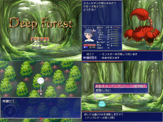
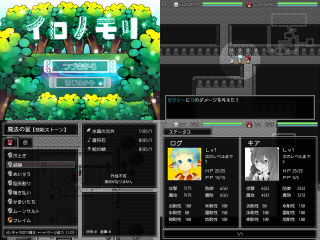

<!doctype html>
<html lang="ja">
<HEAD>
<meta charset="UTF-8">
<HEAD prefix="og:http://ogp.me/ns#">
<META http-equiv="Content-Style-Type" content="text/css">
<meta name="viewport" content="width=700">
<META NAME="keywords" CONTENT="WolfRPGエディター,ウディタ">
<META NAME="description" CONTENT="ここはウディタで制作したゲームのコンテスト『ウディコン』のアーカイブページです">
<TITLE>WOLF RPGエディター コンテスト 第6回結果発表</TITLE>
<LINK REL="stylesheet" HREF="main.css" TYPE="text/css">
<script src="./smoothscroll.js" type="text/javascript"></script> 
<link rel="stylesheet" href="./litebox/css/lightbox.css" type="text/css" media="screen" />
<script type="text/javascript" src="./litebox/js/prototype.js"></script>
<script type="text/javascript" src="./litebox/js/moo.fx.js"></script>
<script type="text/javascript" src="./litebox/js/litebox-1.0.js"></script>
</HEAD><BODY onload="initLightbox()"><DIV ID="head"><a id="top"></a>
<div id="fixed-buttons">
  <a href="#top" class="floatbtn1">↑ 一番上<br>へ移動</a>
  <a href="../wolf_rpg_editor_contest/" class="floatbtn2">トップ<br>ページへ</a>
</div>

<H1><A href="../wolf_rpg_editor_contest/" class="white" style="text-shadow: 0 0 19px #77F, 0 0 19px #77F, 0 0 19px #77F, 0 0 19px #77F;">第6回 WOLF RPGエディター コンテスト歴史資料</A></H1>
<UL class="menu">
<LI class="menu1"><A href="../wolf_rpg_editor_contest/" class=white>トップページへ</A></LI>
<LI class="menu2"><font class=white>　</font></LI>
<LI class="menu2"><font class=white>　</font></LI>
<LI class="menu2"><font class=white>　</font></LI>
<LI class="menu2"><font class=white>　</font></LI>
</UL>
</DIV>
<DIV ID="middle"><a id=x0></a>
<SMALL>　ここは資料として保存された『WOLF RPGエディターコンテスト（通称ウディコン）』の結果発表ページです。<BR>
<BR>
<B>【注意】</B><B class="fred">赤文字の「サイトへのリンク」や【ダウンロード】リンク</B>は、現在のドメイン所有者が当時と変わっていて危険なサイトにつながる可能性がありますので、<B class="fred">もしリンク移動時にブラウザの警告などが出た場合は移動しないよう注意してください</B>。<BR>
　（<B class="fgreen">『緑色のリンク』</B>と<B class="fblue">『青色のリンク』</B>はそれぞれ「ページ内リンク」と「同サーバー内へのリンク」なので安全です）</SMALL>
<!--ここまでがヘッダー-->

<HR size=1>
<H2>第６回 WOLF RPGエディターコンテスト</H2>
<a class="g" href=#x1 class=g>部門別順位</a> → [<a class="g" href=#bumon1 class=g>熱中度</a>] [<a class="g" href=#bumon2 class=g>斬新さ</a>] [<a class="g" href=#bumon3 class=g>物語性</a>] [<a class="g" href=#bumon4 class=g>画像/音声</a>] [<a class="g" href=#bumon5 class=g>遊びやすさ</a>] [<a class="g" href=#bumon6 class=g>その他</a>]<BR>
<a class="g" href=#x2 class=g>総合グランプリ</a> / <a class="g" href=#x3 class=g>全ての応募作品</a> / <a class="g" href=#x4 class=g>総評</a> （どれもページ内リンクです）
<BR><BR>
<H2>部門別順位</H2>
　まずは「熱中度」「斬新さ」「物語性」「画像/音声」「遊びやすさ」「その他加点」の６項目の部門別順位です。<BR><BR>
　<B><a class="g" href=#x2 class=g><font size=+1>はやく【総合順位】を見たい人はこちらをクリック！</font></a></B><BR><BR>
　各部門の得点は「平均点の順位ポイント（最大30点）」「総計点の順位ポイント（最大15点））」「中央値」の<BR>
　合計点で算出されます。なお、有効投票者数は518名、のべ評価作品数は4254作品でした。<BR>　


<!--●ここに部門別～各作品の評価を掲載する●-->
<a id=bumon1></a>
<H2>1.【<font color="#FF6666">熱中度</font>】部門</H2>
<TABLE border="0" cellpadding="1" cellspacing="1">
<TBODY><TR>
  <TD width=30>順位</TD>
  <TD width=145>作品名</TD>
  <TD width=90>平均点（ﾗﾝｸP）</TD>
  <TD width=90>合計点（ﾗﾝｸP）</TD>
  <TD width=60>中央値 </TD>
  <TD width=70>熱中度<BR>得点</TD>
</TR>
    <TR>
      <TD rowspan="2">1位</TD>
      <TD width="160" rowspan="2"><a class="g" href=#10>【ロードライト・フェイス】<BR>
      </a></TD>
      <TD class=vote><font color=#ff4444><B>7.16</B></font> (1位:<font color=#ff4444><B>30</B></font>点)</TD>
      <TD class=vote><font color=#ff4444><B>1632</B></font> (1位:<font color=#ff4444><B>15</B></font>点)</TD>
      <TD class=vote><B><font color=#4444ff>7</font></B>点</TD>
      <TD rowspan="2"><B>52</B>点</TD>
    </TR>
    <TR>
      <TD colspan="3" class=vote><FONT class=close>◆やり方が分かればどんどん難しい難易度にもプレイしたくなる魅力があった。<BR>
◆単純でバランスが絶妙だからこそ、一度遊ぶと知らず知らずのうちに引き込まれて時間を忘れてしまう。<BR>
      ◆一本道でありながらアイテムや戦闘の取捨選択がプレイに影響するので退屈しませんでした。<BR>
◆限られたアイテムを駆使したバトルがとても面白かったです。１プレイは３０分ほどと短かいですが、気がつけば何時間も遊んでいました。</font></TD>
    </TR>
    <TR>
      <TD rowspan="2">2位</TD>
      <TD width="160" rowspan="2"><a class="g" href=#2>【RainyTower】<BR>
      </a></TD>
      <TD class=vote><font color=#ff4444><B>7.01</B></font> (2位:<font color=#ff4444><B>29</B></font>点)</TD>
      <TD class=vote><font color=#ff4444><B>1220</B></font> (2位:<font color=#ff4444><B>15</B></font>点)</TD>
      <TD class=vote><B><font color=#4444ff>7</font></B>点</TD>
      <TD rowspan="2"><B>51</B>点</TD>
    </TR>
    <TR>
      <TD colspan="3" class=vote><FONT class=close>◆ステージの合間にある雑談も面白かったので熱中してクリアしてしまった。<BR>
◆遊びやすく、最後まで一気にやりきってしまいました。とても良質なアクションゲームだと思います。<BR>
◆初めは操作が難しくてクリアできるのか心配だったが、スクラップを集めて強化したりその過程で操作にも慣れていき、思った通りに操作できるようになるのが非常に爽快だった。</font></TD>
    </TR>
    <TR>
      <TD rowspan="2">3位</TD>
      <TD width="160" rowspan="2"><a class="g" href=#54>【WILD ONE】<BR>
      </a></TD>
      <TD class=vote><font color=#ff4444><B>6.81</B></font> (3位:<font color=#ff4444><B>28</B></font>点)</TD>
      <TD class=vote><font color=#4444ff><B>681</B></font> (8位:<font color=#4444ff><B>12</B></font>点)</TD>
      <TD class=vote><B><font color=#4444ff>7</font></B>点</TD>
      <TD rowspan="2"><B>47</B>点</TD>
    </TR>
    <TR>
      <TD colspan="3" class=vote><FONT class=close>◆バリバリ撃ってバリバリ壊す。こんなゲームを待ってた。<BR>
◆1人用のSTGでありながら、多機vs多機の爽快感が味わえる貴重な作品だと感じました<BR>
◆敵味方入り乱れての小戦争みたいな感じですごく楽しかったです</font></TD>
    </TR>
    <TR>
      <TD>4位</TD>
      <TD><a class="g" href=#53>【Wish Disproportionate】</a></TD>
      <TD class=vote nowrap><font color=#ff4444><B>6.61</B></font> (4位:<font color=#ff4444><B>27</B></font>点)</TD>
      <TD class=vote><font color=#4444ff><B>582</B></font> (9位:<font color=#4444ff><B>11</B></font>点)</TD>
      <TD class=vote><B><font color=#4444ff>7</font></B>点</TD>
      <TD><B>45</B>点</TD>
    </TR>
    <TR>
      <TD rowspan="2">5位</TD>
      <TD><a class="g" href=#16>【RPGを初めて遊ぶ人のためのRPG】</a></TD>
      <TD class=vote nowrap><font color=#4444ff><B>6.47</B></font> (7位:<font color=#4444ff><B>24</B></font>点)</TD>
      <TD class=vote>576 (10位:11点)</TD>
      <TD class=vote><B><font color=#4444ff>7</font></B>点</TD>
      <TD><B>42</B>点</TD>
    </TR>
    <TR>
      <TD><a class="g" href=#69>【なれる？NE】</a></TD>
      <TD class=vote nowrap><font color=#4444ff><B>6.39</B></font> (9位:<font color=#4444ff><B>22</B></font>点)</TD>
      <TD class=vote><font color=#4444ff><B>811</B></font> (5位:<font color=#4444ff><B>13</B></font>点)</TD>
      <TD class=vote><B><font color=#4444ff>7</font></B>点</TD>
      <TD><B>42</B>点</TD>
    </TR>
    <TR>
      <TD>7位</TD>
      <TD><a class="g" href=#15>【ソラドウト】</a></TD>
      <TD class=vote nowrap>6.34 (10位:21点)</TD>
      <TD class=vote><font color=#ff4444><B>925</B></font> (4位:<font color=#ff4444><B>14</B></font>点)</TD>
      <TD class=vote><B><font color=#4444ff>6</font></B>点</TD>
      <TD><B>41</B>点</TD>
    </TR>
    <TR>
      <TD rowspan="2">8位</TD>
      <TD><a class="g" href=#47>【ユトレピアの伝説】</a></TD>
      <TD class=vote nowrap>6.33 (11位:20点)</TD>
      <TD class=vote><font color=#4444ff><B>715</B></font> (7位:<font color=#4444ff><B>12</B></font>点)</TD>
      <TD class=vote><B><font color=#4444ff>7</font></B>点</TD>
      <TD><B>39</B>点</TD>
    </TR>
    <TR>
      <TD><a class="g" href=#38>【少年と世界】</a></TD>
      <TD class=vote nowrap><font color=#4444ff><B>6.42</B></font> (8位:<font color=#4444ff><B>23</B></font>点)</TD>
      <TD class=vote>514 (13位:9点)</TD>
      <TD class=vote><B><font color=#4444ff>7</font></B>点</TD>
      <TD><B>39</B>点</TD>
    </TR>
    <TR>
      <TD>10位</TD>
      <TD><a class="g" href=#8>【うさりずむ】</a></TD>
      <TD class=vote nowrap>6.31 (12位:19点)</TD>
      <TD class=vote><font color=#4444ff><B>719</B></font> (6位:<font color=#4444ff><B>13</B></font>点)</TD>
      <TD class=vote><B><font color=#4444ff>6</font></B>点</TD>
      <TD><B>38</B>点</TD>
    </TR>
    <TR>
      <TD>11位</TD>
      <TD><a class="g" href=#75>【ORDER OF DOMINION】</a></TD>
      <TD class=vote nowrap><font color=#4444ff><B>6.52</B></font> (5位:<font color=#4444ff><B>26</B></font>点)</TD>
      <TD class=vote>326 (ランク外:0点)</TD>
      <TD class=vote><B><font color=#ff4444>8</font></B>点</TD>
      <TD><B>34</B>点</TD>
    </TR>
    <TR>
      <TD rowspan="2">12位</TD>
      <TD><a class="g" href=#20>【夢遊猫ケーリュケイオン】</a></TD>
      <TD class=vote nowrap>6.17 (14位:17点)</TD>
      <TD class=vote>506 (14位:9点)</TD>
      <TD class=vote><B><font color=#4444ff>7</font></B>点</TD>
      <TD><B>33</B>点</TD>
    </TR>
    <TR>
      <TD><a class="g" href=#31>【tear garden】</a></TD>
      <TD class=vote nowrap><font color=#4444ff><B>6.52</B></font> (6位:<font color=#4444ff><B>25</B></font>点)</TD>
      <TD class=vote>339 (29位:1点)</TD>
      <TD class=vote><B><font color=#4444ff>7</font></B>点</TD>
      <TD><B>33</B>点</TD>
    </TR>
    <TR>
      <TD>14位</TD>
      <TD><a class="g" href=#65>【召喚指揮候補生】</a></TD>
      <TD class=vote nowrap>6.02 (21位:10点)</TD>
      <TD class=vote><font color=#ff4444><B>1065</B></font> (3位:<font color=#ff4444><B>14</B></font>点)</TD>
      <TD class=vote><B><font color=#4444ff>6</font></B>点</TD>
      <TD><B>30</B>点</TD>
    </TR>
    <TR>
      <TD>15位</TD>
      <TD><a class="g" href=#67>【うみとまもののこどもたち】</a></TD>
      <TD class=vote nowrap>6.08 (16位:15点)</TD>
      <TD class=vote>456 (16位:8点)</TD>
      <TD class=vote><B><font color=#4444ff>6</font></B>点</TD>
      <TD><B>29</B>点</TD>
    </TR>
    <TR>
      <TD rowspan="3">16位</TD>
      <TD><a class="g" href=#32>【Z.Game】</a></TD>
      <TD class=vote nowrap>6.03 (19位:12点)</TD>
      <TD class=vote>555 (11位:10点)</TD>
      <TD class=vote><B>5</B>点</TD>
      <TD><B>27</B>点</TD>
    </TR>
    <TR>
      <TD><a class="g" href=#26>【Bit】</a></TD>
      <TD class=vote nowrap>6.05 (17位:14点)</TD>
      <TD class=vote>448 (18位:7点)</TD>
      <TD class=vote><B><font color=#4444ff>6</font></B>点</TD>
      <TD><B>27</B>点</TD>
    </TR>
    <TR>
      <TD><a class="g" href=#70>【俺の機体にブレーキはない。】</a></TD>
      <TD class=vote nowrap>6.17 (15位:16点)</TD>
      <TD class=vote>407 (21位:5点)</TD>
      <TD class=vote><B><font color=#4444ff>6</font></B>点</TD>
      <TD><B>27</B>点</TD>
    </TR>
    <TR>
      <TD>19位</TD>
      <TD><a class="g" href=#52>【らすと あとりえ】</a></TD>
      <TD class=vote nowrap>6.19 (13位:18点)</TD>
      <TD class=vote>229 (ランク外:0点)</TD>
      <TD class=vote><B><font color=#4444ff>7</font></B>点</TD>
      <TD><B>25</B>点</TD>
    </TR>
    <TR>
      <TD>20位</TD>
      <TD><a class="g" href=#68>【すたれ忍者】</a></TD>
      <TD class=vote nowrap>6.05 (18位:13点)</TD>
      <TD class=vote>339 (29位:1点)</TD>
      <TD class=vote><B><font color=#4444ff>6</font></B>点</TD>
      <TD><B>20</B>点</TD>
    </TR>
</TBODY></TABLE>
<CENTER><a class="g" href=#top class=g>【↑へ戻る】</A></CENTER>
	<!--先頭に部門名を入れる-->
	<a id=bumon2></a>
<H2>2.【<font color="#FF6666">斬新さ</font>】部門</H2>
<TABLE border="0" cellpadding="1" cellspacing="1">
<TBODY><TR>
  <TD width=30>順位</TD>
  <TD width=145>作品名</TD>
  <TD width=90>平均点（ﾗﾝｸP）</TD>
  <TD width=90>合計点（ﾗﾝｸP）</TD>
  <TD width=60>中央値 </TD>
  <TD width=70>斬新さ<BR>得点</TD>
</TR>
    <TR>
      <TD rowspan="2">1位</TD>
      <TD width="160" rowspan="2"><a class="g" href=#69>【なれる？NE】<BR>
      </a></TD>
      <TD class=vote><font color=#ff4444><B>8.46</B></font> (1位:<font color=#ff4444><B>30</B></font>点)</TD>
      <TD class=vote><font color=#ff4444><B>1075</B></font> (4位:<font color=#ff4444><B>14</B></font>点)</TD>
      <TD class=vote><B><font color=#ff4444>9</font></B>点</TD>
      <TD rowspan="2"><B>53</B>点</TD>
    </TR>
    <TR>
      <TD colspan="3" class=vote><FONT class=close>◆面白みがあるかは断言できないが、他のゲームでは味わえない感覚を味わえる。そういう点では唯一無二に等しいゲーム。<BR>
◆この題材をゲームとして成立させていることに驚きです。<BR>
◆「ゲーム風味のネットワークシミュレーション」というのが斬新で斬新です。</font><BR>
      ◆ネットワークを構築する点と、構築されたネットワークを可視化する点がとても斬新だと思いました。</TD>
    </TR>
    <TR>
      <TD rowspan="4">2位</TD>
      <TD width="160" rowspan="2"><a class="g" href=#65>【召喚指揮候補生】<BR>
      </a></TD>
      <TD class=vote><font color=#4444ff><B>6.60</B></font> (5位:<font color=#4444ff><B>26</B></font>点)</TD>
      <TD class=vote><font color=#ff4444><B>1169</B></font> (2位:<font color=#ff4444><B>15</B></font>点)</TD>
      <TD class=vote><B><font color=#4444ff>7</font></B>点</TD>
      <TD rowspan="2"><B>48</B>点</TD>
    </TR>
    <TR>
      <TD colspan="3" class=vote><FONT class=close>◆複合ジャンケンとでもいうのか、斬新ながらチュートリアルを受ければ大した説明はなくとも直感的に判るシンプルでパズル性がある。<BR>
◆相手の行動を見極めて行動を選択する後出しじゃんけんの様なゲームシステムで、収集した情報がそのまま武器になるのが非常に面白かったです<BR>
◆突き詰めるとラスボスでもノーダメージで完封出来るのが斬新です。</font></TD>
    </TR>
    <TR>
      <TD width="160" rowspan="2"><a class="g" href=#8>【うさりずむ】<BR>
      </a></TD>
      <TD class=vote><font color=#ff4444><B>6.68</B></font> (3位:<font color=#ff4444><B>28</B></font>点)</TD>
      <TD class=vote><font color=#4444ff><B>761</B></font> (5位:<font color=#4444ff><B>13</B></font>点)</TD>
      <TD class=vote><B><font color=#4444ff>7</font></B>点</TD>
      <TD rowspan="2"><B>48</B>点</TD>
    </TR>
    <TR>
      <TD colspan="3" class=vote><FONT class=close>◆何よりぴょんぴょん跳ねるうさぎさんが非常にかわいらしい。ここ重要ですね。<BR>
◆リズムゲームということもあって物語性はないが、それでもそれを補うアイディアの強さと可愛さがありました。<BR>
◆短いながらも創造性が詰まった良い作品。<BR>
◆移動する音ゲーというのは初めて見た</font></TD>
    </TR>
    <TR>
      <TD>4位</TD>
      <TD><a class="g" href=#32>【Z.Game】</a></TD>
      <TD class=vote nowrap><font color=#ff4444><B>6.65</B></font> (4位:<font color=#ff4444><B>27</B></font>点)</TD>
      <TD class=vote><font color=#4444ff><B>612</B></font> (8位:<font color=#4444ff><B>12</B></font>点)</TD>
      <TD class=vote><B><font color=#4444ff>7</font></B>点</TD>
      <TD><B>46</B>点</TD>
    </TR>
    <TR>
      <TD>5位</TD>
      <TD><a class="g" href=#2>【RainyTower】</a></TD>
      <TD class=vote nowrap><font color=#4444ff><B>6.51</B></font> (8位:<font color=#4444ff><B>23</B></font>点)</TD>
      <TD class=vote><font color=#ff4444><B>1132</B></font> (3位:<font color=#ff4444><B>14</B></font>点)</TD>
      <TD class=vote><B><font color=#4444ff>7</font></B>点</TD>
      <TD><B>44</B>点</TD>
    </TR>
    <TR>
      <TD>6位</TD>
      <TD><a class="g" href=#53>【Wish Disproportionate】</a></TD>
      <TD class=vote nowrap><font color=#4444ff><B>6.60</B></font> (6位:<font color=#4444ff><B>25</B></font>点)</TD>
      <TD class=vote>581 (10位:11点)</TD>
      <TD class=vote><B><font color=#4444ff>7</font></B>点</TD>
      <TD><B>43</B>点</TD>
    </TR>
    <TR>
      <TD>7位</TD>
      <TD><a class="g" href=#38>【少年と世界】</a></TD>
      <TD class=vote nowrap><font color=#4444ff><B>6.56</B></font> (7位:<font color=#4444ff><B>24</B></font>点)</TD>
      <TD class=vote>525 (12位:10点)</TD>
      <TD class=vote><B><font color=#4444ff>7</font></B>点</TD>
      <TD><B>41</B>点</TD>
    </TR>
    <TR>
      <TD>8位</TD>
      <TD><a class="g" href=#6>【Tunnel Flying!!】</a></TD>
      <TD class=vote nowrap>6.25 (10位:21点)</TD>
      <TD class=vote><font color=#4444ff><B>625</B></font> (7位:<font color=#4444ff><B>12</B></font>点)</TD>
      <TD class=vote><B><font color=#4444ff>6</font></B>点</TD>
      <TD><B>39</B>点</TD>
    </TR>
    <TR>
      <TD>9位</TD>
      <TD><a class="g" href=#56>【十色】</a></TD>
      <TD class=vote nowrap><font color=#ff4444><B>6.71</B></font> (2位:<font color=#ff4444><B>29</B></font>点)</TD>
      <TD class=vote>329 (27位:2点)</TD>
      <TD class=vote><B><font color=#4444ff>7</font></B>点</TD>
      <TD><B>38</B>点</TD>
    </TR>
    <TR>
      <TD rowspan="2">10位</TD>
      <TD><a class="g" href=#10>【ロードライト・フェイス】</a></TD>
      <TD class=vote nowrap>6.03 (16位:15点)</TD>
      <TD class=vote><font color=#ff4444><B>1374</B></font> (1位:<font color=#ff4444><B>15</B></font>点)</TD>
      <TD class=vote><B><font color=#4444ff>6</font></B>点</TD>
      <TD><B>36</B>点</TD>
    </TR>
    <TR>
      <TD><a class="g" href=#25>【Deep Forest】</a></TD>
      <TD class=vote nowrap><font color=#4444ff><B>6.50</B></font> (9位:<font color=#4444ff><B>22</B></font>点)</TD>
      <TD class=vote>494 (15位:8点)</TD>
      <TD class=vote><B><font color=#4444ff>6</font></B>点</TD>
      <TD><B>36</B>点</TD>
    </TR>
    <TR>
      <TD>12位</TD>
      <TD><a class="g" href=#20>【夢遊猫ケーリュケイオン】</a></TD>
      <TD class=vote nowrap>6.21 (12位:19点)</TD>
      <TD class=vote>509 (13位:9点)</TD>
      <TD class=vote><B><font color=#4444ff>6</font></B>点</TD>
      <TD><B>34</B>点</TD>
    </TR>
    <TR>
      <TD>13位</TD>
      <TD><a class="g" href=#70>【俺の機体にブレーキはない。】</a></TD>
      <TD class=vote nowrap>6.21 (11位:20点)</TD>
      <TD class=vote>410 (19位:6点)</TD>
      <TD class=vote><B><font color=#4444ff>6</font></B>点</TD>
      <TD><B>32</B>点</TD>
    </TR>
    <TR>
      <TD>14位</TD>
      <TD><a class="g" href=#54>【WILD ONE】</a></TD>
      <TD class=vote nowrap>5.94 (18位:13点)</TD>
      <TD class=vote><font color=#4444ff><B>594</B></font> (9位:<font color=#4444ff><B>11</B></font>点)</TD>
      <TD class=vote><B><font color=#4444ff>6</font></B>点</TD>
      <TD><B>30</B>点</TD>
    </TR>
    <TR>
      <TD>15位</TD>
      <TD><a class="g" href=#13>【Dust Box!!】</a></TD>
      <TD class=vote nowrap>5.98 (17位:14点)</TD>
      <TD class=vote>496 (14位:9点)</TD>
      <TD class=vote><B><font color=#4444ff>6</font></B>点</TD>
      <TD><B>29</B>点</TD>
    </TR>
    <TR>
      <TD>16位</TD>
      <TD><a class="g" href=#26>【Bit】</a></TD>
      <TD class=vote nowrap>5.92 (19位:12点)</TD>
      <TD class=vote>438 (18位:7点)</TD>
      <TD class=vote><B><font color=#4444ff>6</font></B>点</TD>
      <TD><B>25</B>点</TD>
    </TR>
    <TR>
      <TD rowspan="3">17位</TD>
      <TD><a class="g" href=#33>【モンスター＆ボンバー】</a></TD>
      <TD class=vote nowrap>6.12 (15位:16点)</TD>
      <TD class=vote>318 (28位:2点)</TD>
      <TD class=vote><B><font color=#4444ff>6</font></B>点</TD>
      <TD><B>24</B>点</TD>
    </TR>
    <TR>
      <TD><a class="g" href=#57>【東奔西走冒険譚】</a></TD>
      <TD class=vote nowrap>6.18 (13位:18点)</TD>
      <TD class=vote>235 (ランク外:0点)</TD>
      <TD class=vote><B><font color=#4444ff>6</font></B>点</TD>
      <TD><B>24</B>点</TD>
    </TR>
    <TR>
      <TD><a class="g" href=#75>【ORDER OF DOMINION】</a></TD>
      <TD class=vote nowrap>6.14 (14位:17点)</TD>
      <TD class=vote>307 (30位:1点)</TD>
      <TD class=vote><B><font color=#4444ff>6</font></B>点</TD>
      <TD><B>24</B>点</TD>
    </TR>
    <TR>
      <TD>20位</TD>
      <TD><a class="g" href=#67>【うみとまもののこどもたち】</a></TD>
      <TD class=vote nowrap>5.87 (21位:10点)</TD>
      <TD class=vote>440 (17位:7点)</TD>
      <TD class=vote><B><font color=#4444ff>6</font></B>点</TD>
      <TD><B>23</B>点</TD>
    </TR>
</TBODY></TABLE>
<CENTER><a class="g" href=#top class=g>【↑へ戻る】</A></CENTER>
	<!--先頭に部門名を入れる-->
	<a id=bumon3></a>
<H2>3.【<font color="#FF6666">物語性</font>】部門</H2>
<TABLE border="0" cellpadding="1" cellspacing="1">
<TBODY><TR>
  <TD width=30>順位</TD>
  <TD width=145>作品名</TD>
  <TD width=90>平均点（ﾗﾝｸP）</TD>
  <TD width=90>合計点（ﾗﾝｸP）</TD>
  <TD width=60>中央値 </TD>
  <TD width=70>物語性<BR>得点</TD>
</TR>
    <TR>
      <TD rowspan="2">1位</TD>
      <TD width="160" rowspan="2"><a class="g" href=#2>【RainyTower】<BR>
      </a></TD>
      <TD class=vote><font color=#ff4444><B>6.95</B></font> (2位:<font color=#ff4444><B>29</B></font>点)</TD>
      <TD class=vote><font color=#ff4444><B>1210</B></font> (1位:<font color=#ff4444><B>15</B></font>点)</TD>
      <TD class=vote><B><font color=#4444ff>7</font></B>点</TD>
      <TD rowspan="2"><B>51</B>点</TD>
    </TR>
    <TR>
      <TD colspan="3" class=vote><FONT class=close>◆短編でありながらストーリーもしっかりと練られており、この手のゲームでは重要視されづらい日常パートの描写が豊富だった点も好感触です。<BR>
◆微妙にダークなSF要素とコミカルなキャラの掛け合いがこのゲームの魅力だなあと思いました。<BR>
◆キャラクターの掛け合いや物語に潜む地味ながら骨子のしっかりしたSF描写など、世界観のデザインに思わず没入してしまう癖になる味わいがありました。</font></TD>
    </TR>
    <TR>
      <TD rowspan="2">2位</TD>
      <TD width="160" rowspan="2"><a class="g" href=#65>【召喚指揮候補生】<BR>
      </a></TD>
      <TD class=vote><font color=#4444ff><B>6.34</B></font> (6位:<font color=#4444ff><B>25</B></font>点)</TD>
      <TD class=vote><font color=#ff4444><B>1122</B></font> (2位:<font color=#ff4444><B>15</B></font>点)</TD>
      <TD class=vote><B><font color=#4444ff>7</font></B>点</TD>
      <TD rowspan="2"><B>47</B>点</TD>
    </TR>
    <TR>
      <TD colspan="3" class=vote><FONT class=close>◆登場人物たちそれぞれのストーリーやキャラクターを理解できてくると非常に愛着がわくようにもなりました。<BR>
◆ストーリー性も高く、要所の細かい設定に謎や複線の回収は見事。<BR>
◆友好度を上げる事によって、キャラクターとの会話を見ていくのが楽しかった。単なる会話ではなく、それぞれのキャラクターに個性を感じる事が出来るものだったのが良かった。</font></TD>
    </TR>
    <TR>
      <TD rowspan="2">3位</TD>
      <TD width="160" rowspan="2"><a class="g" href=#67>【うみとまもののこどもたち】<BR>
      </a></TD>
      <TD class=vote><font color=#ff4444><B>6.68</B></font> (3位:<font color=#ff4444><B>28</B></font>点)</TD>
      <TD class=vote><font color=#4444ff><B>501</B></font> (9位:<font color=#4444ff><B>11</B></font>点)</TD>
      <TD class=vote><B><font color=#4444ff>7</font></B>点</TD>
      <TD rowspan="2"><B>46</B>点</TD>
    </TR>
    <TR>
      <TD colspan="3" class=vote><FONT class=close>◆ほんわかした雰囲気ですが、ストーリーは意外にシリアスでした。<BR>
◆子ども達にしっかりとした個性があり、多少重い物語でありながらも彼女らの明るさでどんどん進んでいける作品でした。<BR>
◆独特の世界観、可愛らしくデフォルメされた魔物娘達のキャラクター性、会話の楽しさが良かった。</font></TD>
    </TR>
    <TR>
      <TD>4位</TD>
      <TD><a class="g" href=#53>【Wish Disproportionate】</a></TD>
      <TD class=vote nowrap><font color=#4444ff><B>6.31</B></font> (7位:<font color=#4444ff><B>24</B></font>点)</TD>
      <TD class=vote><font color=#4444ff><B>555</B></font> (6位:<font color=#4444ff><B>13</B></font>点)</TD>
      <TD class=vote><B><font color=#4444ff>7</font></B>点</TD>
      <TD><B>44</B>点</TD>
    </TR>
    <TR>
      <TD>5位</TD>
      <TD><a class="g" href=#31>【tear garden】</a></TD>
      <TD class=vote nowrap><font color=#ff4444><B>7.00</B></font> (1位:<font color=#ff4444><B>30</B></font>点)</TD>
      <TD class=vote>364 (19位:6点)</TD>
      <TD class=vote><B><font color=#4444ff>7</font></B>点</TD>
      <TD><B>43</B>点</TD>
    </TR>
    <TR>
      <TD>6位</TD>
      <TD><a class="g" href=#4>【たゆたう想いのフーガ】</a></TD>
      <TD class=vote nowrap><font color=#4444ff><B>6.60</B></font> (5位:<font color=#4444ff><B>26</B></font>点)</TD>
      <TD class=vote>409 (14位:9点)</TD>
      <TD class=vote><B><font color=#4444ff>7</font></B>点</TD>
      <TD><B>42</B>点</TD>
    </TR>
    <TR>
      <TD rowspan="2">7位</TD>
      <TD><a class="g" href=#26>【Bit】</a></TD>
      <TD class=vote nowrap><font color=#4444ff><B>6.28</B></font> (8位:<font color=#4444ff><B>23</B></font>点)</TD>
      <TD class=vote>465 (12位:10点)</TD>
      <TD class=vote><B><font color=#4444ff>6</font></B>点</TD>
      <TD><B>39</B>点</TD>
    </TR>
    <TR>
      <TD><a class="g" href=#38>【少年と世界】</a></TD>
      <TD class=vote nowrap><font color=#4444ff><B>6.26</B></font> (9位:<font color=#4444ff><B>22</B></font>点)</TD>
      <TD class=vote><font color=#4444ff><B>501</B></font> (9位:<font color=#4444ff><B>11</B></font>点)</TD>
      <TD class=vote><B><font color=#4444ff>6</font></B>点</TD>
      <TD><B>39</B>点</TD>
    </TR>
    <TR>
      <TD rowspan="2">9位</TD>
      <TD><a class="g" href=#16>【RPGを初めて遊ぶ人のためのRPG】</a></TD>
      <TD class=vote nowrap>5.97 (12位:19点)</TD>
      <TD class=vote><font color=#4444ff><B>531</B></font> (7位:<font color=#4444ff><B>12</B></font>点)</TD>
      <TD class=vote><B><font color=#4444ff>6</font></B>点</TD>
      <TD><B>37</B>点</TD>
    </TR>
    <TR>
      <TD><a class="g" href=#20>【夢遊猫ケーリュケイオン】</a></TD>
      <TD class=vote nowrap>6.05 (10位:21点)</TD>
      <TD class=vote>496 (11位:10点)</TD>
      <TD class=vote><B><font color=#4444ff>6</font></B>点</TD>
      <TD><B>37</B>点</TD>
    </TR>
    <TR>
      <TD>11位</TD>
      <TD><a class="g" href=#5>【Unknown】</a></TD>
      <TD class=vote nowrap><font color=#ff4444><B>6.68</B></font> (4位:<font color=#ff4444><B>27</B></font>点)</TD>
      <TD class=vote>247 (ランク外:0点)</TD>
      <TD class=vote><B><font color=#4444ff>7</font></B>点</TD>
      <TD><B>34</B>点</TD>
    </TR>
    <TR>
      <TD>12位</TD>
      <TD><a class="g" href=#47>【ユトレピアの伝説】</a></TD>
      <TD class=vote nowrap>5.66 (17位:14点)</TD>
      <TD class=vote><font color=#4444ff><B>640</B></font> (5位:<font color=#4444ff><B>13</B></font>点)</TD>
      <TD class=vote><B><font color=#4444ff>6</font></B>点</TD>
      <TD><B>33</B>点</TD>
    </TR>
    <TR>
      <TD>13位</TD>
      <TD><a class="g" href=#77>【イロノモリ】</a></TD>
      <TD class=vote nowrap>5.72 (16位:15点)</TD>
      <TD class=vote>412 (13位:9点)</TD>
      <TD class=vote><B><font color=#4444ff>6</font></B>点</TD>
      <TD><B>30</B>点</TD>
    </TR>
    <TR>
      <TD>14位</TD>
      <TD><a class="g" href=#15>【ソラドウト】</a></TD>
      <TD class=vote nowrap>5.24 (21位:10点)</TD>
      <TD class=vote><font color=#ff4444><B>765</B></font> (4位:<font color=#ff4444><B>14</B></font>点)</TD>
      <TD class=vote><B>5</B>点</TD>
      <TD><B>29</B>点</TD>
    </TR>
    <TR>
      <TD>15位</TD>
      <TD><a class="g" href=#48>【七不思議鎮魂曲】</a></TD>
      <TD class=vote nowrap>6.03 (11位:20点)</TD>
      <TD class=vote>241 (ランク外:0点)</TD>
      <TD class=vote><B><font color=#4444ff>6</font></B>点</TD>
      <TD><B>26</B>点</TD>
    </TR>
    <TR>
      <TD>16位</TD>
      <TD><a class="g" href=#59>【怪奇!ルサルカ彗星館】</a></TD>
      <TD class=vote nowrap>5.93 (13位:18点)</TD>
      <TD class=vote>243 (ランク外:0点)</TD>
      <TD class=vote><B><font color=#4444ff>6</font></B>点</TD>
      <TD><B>24</B>点</TD>
    </TR>
    <TR>
      <TD rowspan="4">17位</TD>
      <TD><a class="g" href=#57>【東奔西走冒険譚】</a></TD>
      <TD class=vote nowrap>5.76 (14位:17点)</TD>
      <TD class=vote>219 (ランク外:0点)</TD>
      <TD class=vote><B>5</B>点</TD>
      <TD><B>22</B>点</TD>
    </TR>
    <TR>
      <TD><a class="g" href=#61>【アルセカ・ストーリー】</a></TD>
      <TD class=vote nowrap>5.22 (22位:9点)</TD>
      <TD class=vote>402 (15位:8点)</TD>
      <TD class=vote><B>5</B>点</TD>
      <TD><B>22</B>点</TD>
    </TR>
    <TR>
      <TD><a class="g" href=#10>【ロードライト・フェイス】</a></TD>
      <TD class=vote nowrap>4.87 (28位:3点)</TD>
      <TD class=vote><font color=#ff4444><B>1110</B></font> (3位:<font color=#ff4444><B>14</B></font>点)</TD>
      <TD class=vote><B>5</B>点</TD>
      <TD><B>22</B>点</TD>
    </TR>
    <TR>
      <TD><a class="g" href=#30>【Wizard Leo】</a></TD>
      <TD class=vote nowrap>5.36 (19位:12点)</TD>
      <TD class=vote>343 (22位:5点)</TD>
      <TD class=vote><B>5</B>点</TD>
      <TD><B>22</B>点</TD>
    </TR>
</TBODY></TABLE>
<CENTER><a class="g" href=#top class=g>【↑へ戻る】</A></CENTER>
	<!--先頭に部門名を入れる-->
	<a id=bumon4></a>
<H2>4.【<font color="#FF6666">画像/音声</font>】部門</H2>
<TABLE border="0" cellpadding="1" cellspacing="1">
<TBODY><TR>
  <TD width=30>順位</TD>
  <TD width=145>作品名</TD>
  <TD width=90>平均点（ﾗﾝｸP）</TD>
  <TD width=90>合計点（ﾗﾝｸP）</TD>
  <TD width=60>中央値 </TD>
  <TD width=70>画像/音声<BR>得点</TD>
</TR>
    <TR>
      <TD rowspan="2">1位</TD>
      <TD width="160" rowspan="2"><a class="g" href=#65>【召喚指揮候補生】<BR>
      </a></TD>
      <TD class=vote><font color=#ff4444><B>7.29</B></font> (2位:<font color=#ff4444><B>29</B></font>点)</TD>
      <TD class=vote><font color=#ff4444><B>1291</B></font> (2位:<font color=#ff4444><B>15</B></font>点)</TD>
      <TD class=vote><B><font color=#ff4444>8</font></B>点</TD>
      <TD rowspan="2"><B>52</B>点</TD>
    </TR>
    <TR>
      <TD colspan="3" class=vote><FONT class=close>◆絵柄は学院の生徒のイラストは可愛らしいく、大人＆主要メンバーは美麗なイラストを使用しているのが印象的でした<BR>
◆シナリオ・音楽・グラフィックいずれも高品質。<BR>
◆とにかく見た目の引き込みが他と全然違う。<BR>
◆他作品と比べても素材のまとまりがよく、プレイしていて商業作品と変わらないような安心感があった。</font></TD>
    </TR>
    <TR>
      <TD rowspan="4">2位</TD>
      <TD width="160" rowspan="2"><a class="g" href=#67>【うみとまもののこどもたち】<BR>
      </a></TD>
      <TD class=vote><font color=#ff4444><B>7.52</B></font> (1位:<font color=#ff4444><B>30</B></font>点)</TD>
      <TD class=vote><font color=#4444ff><B>564</B></font> (9位:<font color=#4444ff><B>11</B></font>点)</TD>
      <TD class=vote><B><font color=#ff4444>8</font></B>点</TD>
      <TD rowspan="2"><B>49</B>点</TD>
    </TR>
    <TR>
      <TD colspan="3" class=vote><FONT class=close>◆自作システムRPGでこのグラフィックの質の高さにはやられた、っと思いました。<BR>
◆他作品に見られないような個性が散りばめられていて、特にマップなどのドット絵に拘りを感じた。<BR>
◆グラフィックが綺麗でキャラもかわいくそれだけで先に進めたい気持ちにさせてくれました。</font></TD>
    </TR>
    <TR>
      <TD width="160" rowspan="2"><a class="g" href=#2>【RainyTower】<BR>
      </a></TD>
      <TD class=vote><font color=#ff4444><B>7.05</B></font> (3位:<font color=#ff4444><B>28</B></font>点)</TD>
      <TD class=vote><font color=#ff4444><B>1226</B></font> (3位:<font color=#ff4444><B>14</B></font>点)</TD>
      <TD class=vote><B><font color=#4444ff>7</font></B>点</TD>
      <TD rowspan="2"><B>49</B>点</TD>
    </TR>
    <TR>
      <TD colspan="3" class=vote><FONT class=close>◆キャラグラフィックも良く、パラメータ等も見やすい<BR>
◆キャラクターデザインに親しみが持ちやすい<BR>
◆今回の個人的ベストかわいいキャラはコーンさん<BR>
◆ステージBGMの選択が素晴らしいと思います。<BR>
◆キャラクターのイラストがかわいい</font></TD>
    </TR>
    <TR>
      <TD>4位</TD>
      <TD><a class="g" href=#54>【WILD ONE】</a></TD>
      <TD class=vote nowrap><font color=#ff4444><B>6.88</B></font> (4位:<font color=#ff4444><B>27</B></font>点)</TD>
      <TD class=vote><font color=#4444ff><B>688</B></font> (6位:<font color=#4444ff><B>13</B></font>点)</TD>
      <TD class=vote><B><font color=#4444ff>7</font></B>点</TD>
      <TD><B>47</B>点</TD>
    </TR>
    <TR>
      <TD>5位</TD>
      <TD><a class="g" href=#47>【ユトレピアの伝説】</a></TD>
      <TD class=vote nowrap><font color=#4444ff><B>6.71</B></font> (6位:<font color=#4444ff><B>25</B></font>点)</TD>
      <TD class=vote><font color=#4444ff><B>758</B></font> (5位:<font color=#4444ff><B>13</B></font>点)</TD>
      <TD class=vote><B><font color=#4444ff>7</font></B>点</TD>
      <TD><B>45</B>点</TD>
    </TR>
    <TR>
      <TD rowspan="2">6位</TD>
      <TD><a class="g" href=#20>【夢遊猫ケーリュケイオン】</a></TD>
      <TD class=vote nowrap><font color=#4444ff><B>6.79</B></font> (5位:<font color=#4444ff><B>26</B></font>点)</TD>
      <TD class=vote>557 (10位:11点)</TD>
      <TD class=vote><B><font color=#4444ff>7</font></B>点</TD>
      <TD><B>44</B>点</TD>
    </TR>
    <TR>
      <TD><a class="g" href=#10>【ロードライト・フェイス】</a></TD>
      <TD class=vote nowrap><font color=#4444ff><B>6.53</B></font> (8位:<font color=#4444ff><B>23</B></font>点)</TD>
      <TD class=vote><font color=#ff4444><B>1488</B></font> (1位:<font color=#ff4444><B>15</B></font>点)</TD>
      <TD class=vote><B><font color=#4444ff>6</font></B>点</TD>
      <TD><B>44</B>点</TD>
    </TR>
    <TR>
      <TD>8位</TD>
      <TD><a class="g" href=#15>【ソラドウト】</a></TD>
      <TD class=vote nowrap>6.08 (10位:21点)</TD>
      <TD class=vote><font color=#ff4444><B>888</B></font> (4位:<font color=#ff4444><B>14</B></font>点)</TD>
      <TD class=vote><B><font color=#4444ff>6</font></B>点</TD>
      <TD><B>41</B>点</TD>
    </TR>
    <TR>
      <TD>9位</TD>
      <TD><a class="g" href=#17>【べり子＋3】</a></TD>
      <TD class=vote nowrap><font color=#4444ff><B>6.54</B></font> (7位:<font color=#4444ff><B>24</B></font>点)</TD>
      <TD class=vote>412 (17位:7点)</TD>
      <TD class=vote><B><font color=#4444ff>6</font></B>点</TD>
      <TD><B>37</B>点</TD>
    </TR>
    <TR>
      <TD rowspan="2">10位</TD>
      <TD><a class="g" href=#30>【Wizard Leo】</a></TD>
      <TD class=vote nowrap><font color=#4444ff><B>6.33</B></font> (9位:<font color=#4444ff><B>22</B></font>点)</TD>
      <TD class=vote>405 (18位:7点)</TD>
      <TD class=vote><B><font color=#4444ff>6</font></B>点</TD>
      <TD><B>35</B>点</TD>
    </TR>
    <TR>
      <TD><a class="g" href=#8>【うさりずむ】</a></TD>
      <TD class=vote nowrap>5.98 (14位:17点)</TD>
      <TD class=vote><font color=#4444ff><B>682</B></font> (7位:<font color=#4444ff><B>12</B></font>点)</TD>
      <TD class=vote><B><font color=#4444ff>6</font></B>点</TD>
      <TD><B>35</B>点</TD>
    </TR>
    <TR>
      <TD>12位</TD>
      <TD><a class="g" href=#53>【Wish Disproportionate】</a></TD>
      <TD class=vote nowrap>6.00 (13位:18点)</TD>
      <TD class=vote>528 (12位:10点)</TD>
      <TD class=vote><B><font color=#4444ff>6</font></B>点</TD>
      <TD><B>34</B>点</TD>
    </TR>
    <TR>
      <TD>13位</TD>
      <TD><a class="g" href=#77>【イロノモリ】</a></TD>
      <TD class=vote nowrap>6.04 (12位:19点)</TD>
      <TD class=vote>435 (16位:8点)</TD>
      <TD class=vote><B><font color=#4444ff>6</font></B>点</TD>
      <TD><B>33</B>点</TD>
    </TR>
    <TR>
      <TD>14位</TD>
      <TD><a class="g" href=#6>【Tunnel Flying!!】</a></TD>
      <TD class=vote nowrap>5.80 (18位:13点)</TD>
      <TD class=vote><font color=#4444ff><B>580</B></font> (8位:<font color=#4444ff><B>12</B></font>点)</TD>
      <TD class=vote><B><font color=#4444ff>6</font></B>点</TD>
      <TD><B>31</B>点</TD>
    </TR>
    <TR>
      <TD>15位</TD>
      <TD><a class="g" href=#26>【Bit】</a></TD>
      <TD class=vote nowrap>5.96 (15位:16点)</TD>
      <TD class=vote>441 (15位:8点)</TD>
      <TD class=vote><B><font color=#4444ff>6</font></B>点</TD>
      <TD><B>30</B>点</TD>
    </TR>
    <TR>
      <TD>16位</TD>
      <TD><a class="g" href=#5>【Unknown】</a></TD>
      <TD class=vote nowrap>6.05 (11位:20点)</TD>
      <TD class=vote>224 (ランク外:0点)</TD>
      <TD class=vote><B><font color=#4444ff>6</font></B>点</TD>
      <TD><B>26</B>点</TD>
    </TR>
    <TR>
      <TD>17位</TD>
      <TD><a class="g" href=#32>【Z.Game】</a></TD>
      <TD class=vote nowrap>5.68 (22位:9点)</TD>
      <TD class=vote>523 (13位:9点)</TD>
      <TD class=vote><B><font color=#4444ff>6</font></B>点</TD>
      <TD><B>24</B>点</TD>
    </TR>
    <TR>
      <TD>18位</TD>
      <TD><a class="g" href=#27>【音の溢れる世界の物語 - Sound Beat World Story -】</a></TD>
      <TD class=vote nowrap>5.77 (20位:11点)</TD>
      <TD class=vote>381 (20位:6点)</TD>
      <TD class=vote><B><font color=#4444ff>6</font></B>点</TD>
      <TD><B>23</B>点</TD>
    </TR>
    <TR>
      <TD>19位</TD>
      <TD><a class="g" href=#29>【なめらかクリーミーな味わいTURBO】</a></TD>
      <TD class=vote nowrap>5.78 (19位:12点)</TD>
      <TD class=vote>364 (24位:4点)</TD>
      <TD class=vote><B><font color=#4444ff>6</font></B>点</TD>
      <TD><B>22</B>点</TD>
    </TR>
    <TR>
      <TD>20位</TD>
      <TD><a class="g" href=#57>【東奔西走冒険譚】</a></TD>
      <TD class=vote nowrap>5.87 (16位:15点)</TD>
      <TD class=vote>223 (ランク外:0点)</TD>
      <TD class=vote><B><font color=#4444ff>6</font></B>点</TD>
      <TD><B>21</B>点</TD>
    </TR>
</TBODY></TABLE>
<CENTER><a class="g" href=#top class=g>【↑へ戻る】</A></CENTER>
	<!--先頭に部門名を入れる-->
	<a id=bumon5></a>
<H2>5.【<font color="#FF6666">遊びやすさ</font>】部門</H2>
<TABLE border="0" cellpadding="1" cellspacing="1">
<TBODY><TR>
  <TD width=30>順位</TD>
  <TD width=145>作品名</TD>
  <TD width=90>平均点（ﾗﾝｸP）</TD>
  <TD width=90>合計点（ﾗﾝｸP）</TD>
  <TD width=60>中央値 </TD>
  <TD width=70>遊びやすさ<BR>得点</TD>
</TR>
    <TR>
      <TD rowspan="2">1位</TD>
      <TD width="160" rowspan="2"><a class="g" href=#10>【ロードライト・フェイス】<BR>
      </a></TD>
      <TD class=vote><font color=#ff4444><B>7.39</B></font> (1位:<font color=#ff4444><B>30</B></font>点)</TD>
      <TD class=vote><font color=#ff4444><B>1685</B></font> (1位:<font color=#ff4444><B>15</B></font>点)</TD>
      <TD class=vote><B><font color=#4444ff>7</font></B>点</TD>
      <TD rowspan="2"><B>52</B>点</TD>
    </TR>
    <TR>
      <TD colspan="3" class=vote><FONT class=close>◆システムは単純明快。難易度をはじめに選択してからサクサクと遊べるのが良い。<BR>
◆ゲームシステムがスマートにまとまっていて、目標を持ってワンプレイに挑める遊びやすい作品。<BR>
◆本作品は難易度選択ができ、高い難易度を設定してもちゃんとクリアできる絶妙なゲームバランスで非常に遊びやすかったです。</font></TD>
    </TR>
    <TR>
      <TD rowspan="2">2位</TD>
      <TD width="160" rowspan="2"><a class="g" href=#65>【召喚指揮候補生】<BR>
      </a></TD>
      <TD class=vote><font color=#ff4444><B>6.46</B></font> (3位:<font color=#ff4444><B>28</B></font>点)</TD>
      <TD class=vote><font color=#ff4444><B>1144</B></font> (2位:<font color=#ff4444><B>15</B></font>点)</TD>
      <TD class=vote><B><font color=#4444ff>7</font></B>点</TD>
      <TD rowspan="2"><B>50</B>点</TD>
    </TR>
    <TR>
      <TD colspan="3" class=vote><FONT class=close>◆システムは複雑すぎず簡単で分かりやすく遊びやすい。<BR>
◆戦闘方法チュートリアルも丁寧におもしろかった。<BR>
◆とても遊びやすく理解しやすいシステム。</font></TD>
    </TR>
    <TR>
      <TD rowspan="4">3位</TD>
      <TD width="160" rowspan="2"><a class="g" href=#16>【RPGを初めて遊ぶ人のためのRPG】<BR>
      </a></TD>
      <TD class=vote><font color=#ff4444><B>7.07</B></font> (2位:<font color=#ff4444><B>29</B></font>点)</TD>
      <TD class=vote><font color=#4444ff><B>629</B></font> (9位:<font color=#4444ff><B>11</B></font>点)</TD>
      <TD class=vote><B><font color=#4444ff>7</font></B>点</TD>
      <TD rowspan="2"><B>47</B>点</TD>
    </TR>
    <TR>
      <TD colspan="3" class=vote><FONT class=close>◆「初めて」を謳ってるだけあって、遊びやすさは秀逸だと思います。<BR>
◆初心者向けという事もあり、とても説明が丁寧な仕上がりとなっている。<BR>
◆とにかく初心者に対して親切な設計。ボタンも徐々に解放されていくという点も中々に細かい。</font></TD>
    </TR>
    <TR>
      <TD width="160" rowspan="2"><a class="g" href=#15>【ソラドウト】<BR>
      </a></TD>
      <TD class=vote><font color=#ff4444><B>6.45</B></font> (4位:<font color=#ff4444><B>27</B></font>点)</TD>
      <TD class=vote><font color=#ff4444><B>941</B></font> (4位:<font color=#ff4444><B>14</B></font>点)</TD>
      <TD class=vote><B><font color=#4444ff>6</font></B>点</TD>
      <TD rowspan="2"><B>47</B>点</TD>
    </TR>
    <TR>
      <TD colspan="3" class=vote><FONT class=close>◆プレイヤーが次に動くべき方向に上手にイベントを配置していた点が良い。<BR>
◆説明がほとんどないのに遊びやすい。<BR>
◆謎解きも程よく簡単で、さくさくすすめた。<BR>
◆操作説明が親切でした。</font></TD>
    </TR>
    <TR>
      <TD>5位</TD>
      <TD><a class="g" href=#54>【WILD ONE】</a></TD>
      <TD class=vote nowrap><font color=#4444ff><B>6.40</B></font> (5位:<font color=#4444ff><B>26</B></font>点)</TD>
      <TD class=vote><font color=#4444ff><B>640</B></font> (8位:<font color=#4444ff><B>12</B></font>点)</TD>
      <TD class=vote><B><font color=#4444ff>7</font></B>点</TD>
      <TD><B>45</B>点</TD>
    </TR>
    <TR>
      <TD>6位</TD>
      <TD><a class="g" href=#2>【RainyTower】</a></TD>
      <TD class=vote nowrap><font color=#4444ff><B>6.11</B></font> (9位:<font color=#4444ff><B>22</B></font>点)</TD>
      <TD class=vote><font color=#ff4444><B>1064</B></font> (3位:<font color=#ff4444><B>14</B></font>点)</TD>
      <TD class=vote><B><font color=#4444ff>7</font></B>点</TD>
      <TD><B>43</B>点</TD>
    </TR>
    <TR>
      <TD>7位</TD>
      <TD><a class="g" href=#8>【うさりずむ】</a></TD>
      <TD class=vote nowrap><font color=#4444ff><B>6.28</B></font> (8位:<font color=#4444ff><B>23</B></font>点)</TD>
      <TD class=vote><font color=#4444ff><B>716</B></font> (5位:<font color=#4444ff><B>13</B></font>点)</TD>
      <TD class=vote><B><font color=#4444ff>6</font></B>点</TD>
      <TD><B>42</B>点</TD>
    </TR>
    <TR>
      <TD>8位</TD>
      <TD><a class="g" href=#70>【俺の機体にブレーキはない。】</a></TD>
      <TD class=vote nowrap>6.11 (10位:21点)</TD>
      <TD class=vote>403 (18位:7点)</TD>
      <TD class=vote><B><font color=#4444ff>6</font></B>点</TD>
      <TD><B>34</B>点</TD>
    </TR>
    <TR>
      <TD>9位</TD>
      <TD><a class="g" href=#7>【ある４人の闘技大会】</a></TD>
      <TD class=vote nowrap>5.97 (13位:18点)</TD>
      <TD class=vote>466 (13位:9点)</TD>
      <TD class=vote><B><font color=#4444ff>6</font></B>点</TD>
      <TD><B>33</B>点</TD>
    </TR>
    <TR>
      <TD>10位</TD>
      <TD><a class="g" href=#13>【Dust Box!!】</a></TD>
      <TD class=vote nowrap>5.89 (15位:16点)</TD>
      <TD class=vote>489 (12位:10点)</TD>
      <TD class=vote><B><font color=#4444ff>6</font></B>点</TD>
      <TD><B>32</B>点</TD>
    </TR>
    <TR>
      <TD rowspan="3">11位</TD>
      <TD><a class="g" href=#31>【tear garden】</a></TD>
      <TD class=vote nowrap><font color=#4444ff><B>6.31</B></font> (7位:<font color=#4444ff><B>24</B></font>点)</TD>
      <TD class=vote>328 (29位:1点)</TD>
      <TD class=vote><B><font color=#4444ff>6</font></B>点</TD>
      <TD><B>31</B>点</TD>
    </TR>
    <TR>
      <TD><a class="g" href=#49>【クロめで】</a></TD>
      <TD class=vote nowrap>6.03 (11位:20点)</TD>
      <TD class=vote>386 (21位:5点)</TD>
      <TD class=vote><B><font color=#4444ff>6</font></B>点</TD>
      <TD><B>31</B>点</TD>
    </TR>
    <TR>
      <TD><a class="g" href=#5>【Unknown】</a></TD>
      <TD class=vote nowrap><font color=#4444ff><B>6.38</B></font> (6位:<font color=#4444ff><B>25</B></font>点)</TD>
      <TD class=vote>236 (ランク外:0点)</TD>
      <TD class=vote><B><font color=#4444ff>6</font></B>点</TD>
      <TD><B>31</B>点</TD>
    </TR>
    <TR>
      <TD rowspan="2">14位</TD>
      <TD><a class="g" href=#53>【Wish Disproportionate】</a></TD>
      <TD class=vote nowrap>5.77 (18位:13点)</TD>
      <TD class=vote>508 (11位:10点)</TD>
      <TD class=vote><B><font color=#4444ff>6</font></B>点</TD>
      <TD><B>29</B>点</TD>
    </TR>
    <TR>
      <TD><a class="g" href=#47>【ユトレピアの伝説】</a></TD>
      <TD class=vote nowrap>5.68 (20位:11点)</TD>
      <TD class=vote><font color=#4444ff><B>642</B></font> (7位:<font color=#4444ff><B>12</B></font>点)</TD>
      <TD class=vote><B><font color=#4444ff>6</font></B>点</TD>
      <TD><B>29</B>点</TD>
    </TR>
    <TR>
      <TD>16位</TD>
      <TD><a class="g" href=#4>【たゆたう想いのフーガ】</a></TD>
      <TD class=vote nowrap>5.94 (14位:17点)</TD>
      <TD class=vote>368 (25位:3点)</TD>
      <TD class=vote><B><font color=#4444ff>6</font></B>点</TD>
      <TD><B>26</B>点</TD>
    </TR>
    <TR>
      <TD>17位</TD>
      <TD><a class="g" href=#73>【MONSTEEJ（モンスティージ）】</a></TD>
      <TD class=vote nowrap>6.03 (12位:19点)</TD>
      <TD class=vote>211 (ランク外:0点)</TD>
      <TD class=vote><B><font color=#4444ff>6</font></B>点</TD>
      <TD><B>25</B>点</TD>
    </TR>
    <TR>
      <TD>18位</TD>
      <TD><a class="g" href=#44>【密室脱出実況中！】</a></TD>
      <TD class=vote nowrap>5.73 (19位:12点)</TD>
      <TD class=vote>384 (22位:5点)</TD>
      <TD class=vote><B><font color=#4444ff>6</font></B>点</TD>
      <TD><B>23</B>点</TD>
    </TR>
    <TR>
      <TD>19位</TD>
      <TD><a class="g" href=#6>【Tunnel Flying!!】</a></TD>
      <TD class=vote nowrap>5.58 (26位:5点)</TD>
      <TD class=vote>558 (10位:11点)</TD>
      <TD class=vote><B><font color=#4444ff>6</font></B>点</TD>
      <TD><B>22</B>点</TD>
    </TR>
    <TR>
      <TD>20位</TD>
      <TD><a class="g" href=#48>【七不思議鎮魂曲】</a></TD>
      <TD class=vote nowrap>5.83 (16位:15点)</TD>
      <TD class=vote>233 (ランク外:0点)</TD>
      <TD class=vote><B><font color=#4444ff>6</font></B>点</TD>
      <TD><B>21</B>点</TD>
    </TR>
</TBODY></TABLE>
<CENTER><a class="g" href=#top class=g>【↑へ戻る】</A></CENTER>
	<!--先頭に部門名を入れる-->
	<a id=bumon6></a>
<H2>6.【<font color="#FF6666">その他</font>】部門</H2>
<TABLE border="0" cellpadding="1" cellspacing="1">
<TBODY><TR>
  <TD width=30>順位</TD>
  <TD width=145>作品名</TD>
  <TD width=90>平均点（ﾗﾝｸP）</TD>
  <TD width=90>合計点（ﾗﾝｸP）</TD>
  <TD width=60>中央値 <BR><small>(1点以上<BR> のみｶｳﾝﾄ)</small></TD>
  <TD width=70>その他<BR>得点</TD>
</TR>
    <TR>
      <TD rowspan="4">1位</TD>
      <TD width="160" rowspan="2"><a class="g" href=#20>【夢遊猫ケーリュケイオン】<BR>
      </a></TD>
      <TD class=vote><font color=#ff4444><B>+1.91</B></font> (1位:<font color=#ff4444><B>30</B></font>点)</TD>
      <TD class=vote><font color=#4444ff><B>157</B></font> (6位:<font color=#4444ff><B>13</B></font>点)</TD>
      <TD class=vote><B>4</B>点</TD>
      <TD rowspan="2"><B>47</B>点</TD>
    </TR>
    <TR>
      <TD colspan="3" class=vote><FONT class=close>◆なかなか出会えないだろう最高に印象的な作品<BR>
◆ケモナーの本気をみせてくれた。<BR>
◆大量の敵兼仲間にそれぞれ特性を持たせている点はすごい<BR>
      ◆攻めに全てのパラメータを振り切ったような作品。<BR>
      ◆初見で無理だと思ったボスに対しても、さしたるレベリング無しで工夫することで何とか突破できるような状況が多々あり、非常に優れた戦闘難易度バランスであったこと。</font></TD>
    </TR>
    <TR>
      <TD width="160" rowspan="2"><a class="g" href=#47>【ユトレピアの伝説】<BR>
      </a></TD>
      <TD class=vote><font color=#ff4444><B>+1.44</B></font> (2位:<font color=#ff4444><B>29</B></font>点)</TD>
      <TD class=vote><font color=#ff4444><B>163</B></font> (4位:<font color=#ff4444><B>14</B></font>点)</TD>
      <TD class=vote><B>4</B>点</TD>
      <TD rowspan="2"><B>47</B>点</TD>
    </TR>
    <TR>
      <TD colspan="3" class=vote><FONT class=close>◆実にレトロチックで、目新しさなどない。逆にそこが素晴らしい！<BR>
◆独特の雰囲気とりきしのインパクトに。<BR>
◆相変わらず徹底した世界観の素晴らしさに加点です。<BR>
◆進行にある程度の自由もあり、序盤から強敵に出会えたり強力なアイテムを入手できたりといった部分も個人的にポイントが高めです。</font></TD>
    </TR>
    <TR>
      <TD rowspan="2">3位</TD>
      <TD width="160" rowspan="2"><a class="g" href=#2>【RainyTower】<BR>
      </a></TD>
      <TD class=vote><font color=#ff4444><B>+1.30</B></font> (4位:<font color=#ff4444><B>27</B></font>点)</TD>
      <TD class=vote><font color=#ff4444><B>227</B></font> (2位:<font color=#ff4444><B>15</B></font>点)</TD>
      <TD class=vote><B>3</B>点</TD>
      <TD rowspan="2"><B>45</B>点</TD>
    </TR>
    <TR>
      <TD colspan="3" class=vote><FONT class=close>◆「もっとこの世界観で遊びたい！」と思わせる作品サイズも見事。<BR>
◆プレイを繰り返す内に自分が上達しているのが分かる楽しさ、アクションの苦手な人も楽しめる配慮が素晴らしい。<BR>
◆世界観のデザインに思わず没入してしまう癖になる味わいがありました。<BR>
◆おまけの謎解き要素、さらにキャラクターが珍しく全ケモ！</font></TD>
    </TR>
    <TR>
      <TD>4位</TD>
      <TD><a class="g" href=#69>【なれる？NE】</a></TD>
      <TD class=vote nowrap><font color=#4444ff><B>+1.28</B></font> (5位:<font color=#4444ff><B>26</B></font>点)</TD>
      <TD class=vote><font color=#ff4444><B>163</B></font> (4位:<font color=#ff4444><B>14</B></font>点)</TD>
      <TD class=vote><B>4</B>点</TD>
      <TD><B>44</B>点</TD>
    </TR>
    <TR>
      <TD>5位</TD>
      <TD><a class="g" href=#65>【召喚指揮候補生】</a></TD>
      <TD class=vote nowrap><font color=#4444ff><B>+1.14</B></font> (7位:<font color=#4444ff><B>24</B></font>点)</TD>
      <TD class=vote><font color=#ff4444><B>201</B></font> (3位:<font color=#ff4444><B>14</B></font>点)</TD>
      <TD class=vote><B>4</B>点</TD>
      <TD><B>42</B>点</TD>
    </TR>
    <TR>
      <TD>6位</TD>
      <TD><a class="g" href=#53>【Wish Disproportionate】</a></TD>
      <TD class=vote nowrap><font color=#4444ff><B>+1.22</B></font> (6位:<font color=#4444ff><B>25</B></font>点)</TD>
      <TD class=vote><font color=#4444ff><B>107</B></font> (8位:<font color=#4444ff><B>12</B></font>点)</TD>
      <TD class=vote><B>3</B>点</TD>
      <TD><B>40</B>点</TD>
    </TR>
    <TR>
      <TD>7位</TD>
      <TD><a class="g" href=#31>【tear garden】</a></TD>
      <TD class=vote nowrap><font color=#ff4444><B>+1.40</B></font> (3位:<font color=#ff4444><B>28</B></font>点)</TD>
      <TD class=vote>73 (14位:9点)</TD>
      <TD class=vote><B>2</B>点</TD>
      <TD><B>39</B>点</TD>
    </TR>
    <TR>
      <TD>8位</TD>
      <TD><a class="g" href=#10>【ロードライト・フェイス】</a></TD>
      <TD class=vote nowrap>+1.03 (11位:20点)</TD>
      <TD class=vote><font color=#ff4444><B>234</B></font> (1位:<font color=#ff4444><B>15</B></font>点)</TD>
      <TD class=vote><B>2</B>点</TD>
      <TD><B>37</B>点</TD>
    </TR>
    <TR>
      <TD>9位</TD>
      <TD><a class="g" href=#30>【Wizard Leo】</a></TD>
      <TD class=vote nowrap><font color=#4444ff><B>+1.11</B></font> (8位:<font color=#4444ff><B>23</B></font>点)</TD>
      <TD class=vote>71 (15位:8点)</TD>
      <TD class=vote><B>4</B>点</TD>
      <TD><B>35</B>点</TD>
    </TR>
    <TR>
      <TD>10位</TD>
      <TD><a class="g" href=#25>【Deep Forest】</a></TD>
      <TD class=vote nowrap>+1.07 (10位:21点)</TD>
      <TD class=vote>81 (12位:10点)</TD>
      <TD class=vote><B>3</B>点</TD>
      <TD><B>34</B>点</TD>
    </TR>
    <TR>
      <TD>11位</TD>
      <TD><a class="g" href=#15>【ソラドウト】</a></TD>
      <TD class=vote nowrap>+0.99 (13位:18点)</TD>
      <TD class=vote><font color=#4444ff><B>144</B></font> (7位:<font color=#4444ff><B>12</B></font>点)</TD>
      <TD class=vote><B>3</B>点</TD>
      <TD><B>33</B>点</TD>
    </TR>
    <TR>
      <TD>12位</TD>
      <TD><a class="g" href=#54>【WILD ONE】</a></TD>
      <TD class=vote nowrap>+0.93 (16位:15点)</TD>
      <TD class=vote><font color=#4444ff><B>93</B></font> (9位:<font color=#4444ff><B>11</B></font>点)</TD>
      <TD class=vote><B>2</B>点</TD>
      <TD><B>28</B>点</TD>
    </TR>
    <TR>
      <TD>13位</TD>
      <TD><a class="g" href=#32>【Z.Game】</a></TD>
      <TD class=vote nowrap>+0.90 (17位:14点)</TD>
      <TD class=vote>83 (11位:10点)</TD>
      <TD class=vote><B>3</B>点</TD>
      <TD><B>27</B>点</TD>
    </TR>
    <TR>
      <TD>14位</TD>
      <TD><a class="g" href=#26>【Bit】</a></TD>
      <TD class=vote nowrap>+0.93 (15位:16点)</TD>
      <TD class=vote>69 (16位:8点)</TD>
      <TD class=vote><B>2</B>点</TD>
      <TD><B>26</B>点</TD>
    </TR>
    <TR>
      <TD>15位</TD>
      <TD><a class="g" href=#57>【東奔西走冒険譚】</a></TD>
      <TD class=vote nowrap>+1.03 (11位:20点)</TD>
      <TD class=vote>39 (29位:1点)</TD>
      <TD class=vote><B>4</B>点</TD>
      <TD><B>25</B>点</TD>
    </TR>
    <TR>
      <TD>16位</TD>
      <TD><a class="g" href=#76>【七々々々】</a></TD>
      <TD class=vote nowrap><font color=#4444ff><B>+1.07</B></font> (9位:<font color=#4444ff><B>22</B></font>点)</TD>
      <TD class=vote>30 (ランク外:0点)</TD>
      <TD class=vote><B>2</B>点</TD>
      <TD><B>24</B>点</TD>
    </TR>
    <TR>
      <TD>17位</TD>
      <TD><a class="g" href=#16>【RPGを初めて遊ぶ人のためのRPG】</a></TD>
      <TD class=vote nowrap>+0.89 (19位:12点)</TD>
      <TD class=vote>79 (13位:9点)</TD>
      <TD class=vote><B>2</B>点</TD>
      <TD><B>23</B>点</TD>
    </TR>
    <TR>
      <TD>18位</TD>
      <TD><a class="g" href=#48>【七不思議鎮魂曲】</a></TD>
      <TD class=vote nowrap>+0.97 (14位:17点)</TD>
      <TD class=vote>39 (29位:1点)</TD>
      <TD class=vote><B>3</B>点</TD>
      <TD><B>21</B>点</TD>
    </TR>
    <TR>
      <TD>19位</TD>
      <TD><a class="g" href=#67>【うみとまもののこどもたち】</a></TD>
      <TD class=vote nowrap>+0.88 (20位:11点)</TD>
      <TD class=vote>66 (17位:7点)</TD>
      <TD class=vote><B>2</B>点</TD>
      <TD><B>20</B>点</TD>
    </TR>
    <TR>
      <TD>20位</TD>
      <TD><a class="g" href=#75>【ORDER OF DOMINION】</a></TD>
      <TD class=vote nowrap>+0.88 (20位:11点)</TD>
      <TD class=vote>44 (26位:3点)</TD>
      <TD class=vote><B>4</B>点</TD>
      <TD><B>18</B>点</TD>
    </TR>
</TBODY></TABLE>
<CENTER><a class="g" href=#top class=g>【↑へ戻る】</A></CENTER>
<BR>


<a id=x2></a><H2>総合グランプリ</H2>総合グランプリ順位は「熱中度」「斬新さ」「物語性」「画像/音声」「遊びやすさ」「その他加点」の６項目の<BR>「<B>総合得点</B>」に、「<B>平均重視度（％）</B>」を掛けて得られた値を総計したポイントで決定されます。<BR><BR>皆さまの投票から得られた<B>平均重視度</B>は以下の通りとなりました。<BR><BR>熱中度 <B>77.9 ％</B>　斬新さ <B>52.1 ％</B>　物語性 <B>60.0 ％</B>　画像/音声 <B>54.2 ％</B>　遊びやすさ <B>73.7 ％</B> <BR>※その他加点は自動で「<B>50％</B>」となります。<BR>　


<hr size="1" color="a3a3e5">
※各作品のアピール文の最下部には、動画配信についての可否が掲載されています。用語の意味は以下の通りとします。<BR>
　<B>[ゲームプレイ配信]</B>　→　時間無制限のゲームプレイ配信･プレイ動画投稿の可否です。<BR>
　<B>[動画への映像使用(3分以内)]</B>　→　紹介動画・ランキング動画等への短いプレイ映像使用の可否です。<BR>
　　　　　　　　　　　　こちらへのご利用では映像利用は最大3分以内、かつ、ネタバレはなるべく避けてください。

<hr size="1" color="a3a3e5">


　<a id=2></a><DIV ID="resultname"><B class=rank id=2>【1位】『RainyTower』</B>(エントリー番号【2】/ 総ポイント<B>174.0</B>点)<BR>　&#160;<small id="minirank">熱中 <B>39.7</B>点(<font color=#FFFFBB><B>2位</B></font>)+斬新 <B>22.9</B>点(<font color=#FFFFBB><B>5位</B></font>)+物語性 <B>30.6</B>点(<font color=#FFFFBB><B>1位</B></font>)+画像音声 <B>26.6</B>点(<font color=#FFFFBB><B>2位</B></font>)+遊びやすさ <B>31.7</B>点(<font color=#BBFFBB>6位</B></font>)+その他 <B>22.5</B>点(<font color=#FFFFBB><B>3位</B></font>)</small>
</DIV>
<DIV class="sn"><A class="g" href="Entry06/02_big.jpg" rel="lightbox[A]"></A><A href="https://www.youtube.com/watch?v=NsumhvzliqI" target="_blank">【紹介動画を見る】(新ｳｨﾝﾄﾞｳ)</A></DIV>
<DL class=result><DT><B><A href="http://sky.geocities.jp/se_str/" target=_blank><font size=+1>【ダウンロード】</font></A>
<BR>　<A href="https://github.com/smokingwolf/wolf_rpg_editor_contest06_2014/releases/download/wodicon06-2014/01_RainyTower.zip" class="blue">【運営ﾊﾞｯｸｱｯﾌﾟからDL(安全/52MB)】</A>
</B></DT>
<DT>作者 : <B><a href=http://sky.geocities.jp/se_str/ target=_blank>標準誤差StR</a></B></DT>
<DT>プレイ時間 :<B>2～3時間</B> </DT>
<DT>作者コメント:</DT>
<DD>【ジャンル】<BR>ケモノが宙飛ぶ短編SFアクションゲーム<BR>【作品概要】<BR>クリック一つの単純操作。指先一つで宙を飛ぶ！<BR>アクションゲームが苦手な方でも、プレイを重ねることで様々な性能を強化していくことができます。<BR>【ストーリー】<BR>未知の惑星へと墜落した宇宙探検隊の一行。<BR>彼らは脱出の鍵となる資源を手に入れるため、<BR>天を臨む樹の頂を目指すのだった……<BR>【おまけ】<BR>おまけ要素として謎解き要素を用意しております。難易度は高めですが、解けた方にはささやかなお礼をさせていただく予定です。詳細は作品中のイベントをご覧ください。<BR><BR><small><font color=#339933>【ゲームプレイ配信はご自由に】</font><BR><font color=#339933>【動画への映像使用(3分以内)はご自由に】</font></small></DD></DL>

<DL class=comment><DD>
<B class=x>【一般投票コメント】</B><BR>
<B>[熱<font color=#ff4444>10</font>新<font color=#4444ff>7</font>物<font color=#ff4444>9</font>画<font color=#ff4444>8</font>遊<font color=#4444ff>6</font>他+4]</B> 操作性は慣れるまで大変でとっつきにくいところもあるが、人によってはチートを使用してクリアできるので配慮が行き届いてると感じた。自分は最初は衝突により死にまくったが、装備を充実させながら進めていくうちに、ブースターを調整しながら浮遊するのが快感になって最後まで楽しめた。攻撃弾は少し使いにくかった。登場する動物系キャラクターが皆個性的（コーンさんの容姿に加え、ドS具合が特に良し）。SF設定がよく作りこまれていて物語の終盤まで引き込まれた。<BR>
<B>[熱<font color=#ff4444>9</font>新<font color=#ff4444>9</font>物<font color=#ff4444>9</font>画<font color=#ff4444>9</font>遊<font color=#ff4444>8</font>他+2]</B> ありそうで無かったケモノ系フライトアクション。最初は戸惑ったものの、装備が増えていく中でどんどん遊びやすくなり、「もっとこの世界観で遊びたい！」と思わせる作品サイズも見事。欠点を挙げるとすれば、最後半の耐久ステージはゴリ押しが最適解になってしまいがちで、それまでの爽快感が少々打ち消されてしまうのが気にかかった。個人的には、SFとしても一級品の世界観を持っている所を評価したい。今後の活動にも注目しております。<BR>
<B>[熱<font color=#ff4444>10</font>新<font color=#ff4444>8</font>物<font color=#ff4444>9</font>画<font color=#4444ff>6</font>遊<font color=#ff4444>8</font>]</B> 短編ということもあり、最初から最後まで、オマケの謎解き含めて一気に遊んでしまいました。短編でありながらストーリーもしっかりと練られており、この手のゲームでは重要視されづらい日常パートの描写が豊富だった点も好感触です。BGMに関しては、ステージBGMの選択は素晴らしいと思うのですが、ステージセレクト画面だけ、雰囲気と微妙に合っていない気がして気になってしまいました。もっと静かな、冒険前の緊張感を表せるBGMだとよかったのかな、と個人的には思います。遊びやすさに関しては、第1ステージのチュートリアルももちろんですが、R&Dでさりげなく添えられている「オススメ！」が、特に貨幣の少ない序盤では非常に有難かったです。<BR>
<B>[熱<font color=#ff4444>10</font>新<font color=#ff4444>8</font>物<font color=#4444ff>7</font>画<font color=#ff4444>8</font>遊<font color=#ff4444>8</font>]</B> まず第一印象は業の深さでした。特に獣属性の嗜好もないので、キャラクターに対する魅力は諦めていたのですが、その予想を裏切る登場人物たちの可愛さや可笑しさにすっかりはまってしまいました。会話シーンもとてもユニークで魅力的です。また、ゲームのシステムも操作しやすく、ウディタ製とは思えない奇抜な操作性に惹かれました。<BR>
<B>[熱<font color=#ff4444>10</font>新<font color=#ff4444>8</font>物<font color=#4444ff>7</font>画<font color=#ff4444>8</font>遊<font color=#ff4444>8</font>他+3]</B> ケモノキャラは好き嫌いが分かれそうだけど操作性は独特でシナリオやヤリコミ要素もあるし、プレイヤーへの配慮も感じられた。全体的にクオリティが高いと感じる。<BR>
<B>[熱<font color=#ff4444>9</font>新<font color=#4444ff>5</font>物<font color=#4444ff>7</font>画<font color=#ff4444>8</font>遊<font color=#ff4444>8</font>]</B> 最初こそ戸惑いましたが、どの角度で勢いがつくとリカバリー出来ないか覚えて慣れてくると快適に動かせました。慣れてくると上手く飛べる俺上手い！という満足感や、強化されスピードアップした状態で駆け上がるなど爽快感もあり楽しめました。短編ながらギュッと中身が詰まっていてGOOD。キャラクターは少ないですがそれぞれの個性をしっかり出しているのも良いです。強化の仕方やマウス操作に慣れているかどうか次第では難しいと感じる人もいるかもしれませんが、そこそこマウスアクションになれている方にオススメ出来る作品だったかなと。もちろん時止めヤクやチートモードなどあるらしいのですが、それらを使わなかったせいで不慣れな人がどう感じるかを踏まえ<BR>
<B>[熱<font color=#ff4444>9</font>新<font color=#4444ff>7</font>物<font color=#ff4444>8</font>画<font color=#4444ff>7</font>遊<font color=#4444ff>5</font>他+2]</B> 操作そのものの難易度は高いものの、きちんと強化すればかなり楽になるところが素晴らしいバランスでした。<BR>
<B>[熱<font color=#ff4444>9</font>新<font color=#4444ff>5</font>物<font color=#4444ff>7</font>画<font color=#4444ff>6</font>遊<font color=#4444ff>7</font>他<font color=#4444ff>+5</font>]</B> 作者のＳＦへのこだわりが散見され、物語に引き込むのに一役買っていると思われる。ゲーム内容や操作法などは特に斬新なところもないが、上手く組み合わせてよいバランスに仕上がっていると思われる。<BR>
<B>[熱<font color=#4444ff>6</font>新<font color=#4444ff>7</font>物<font color=#4444ff>7</font>画<font color=#ff4444>8</font>遊<font color=#ff4444>8</font>他+1]</B> 操作に慣れるまで時間がかかったもののゲームオーバーになっても集めたアイテムが無駄にならず、だんだん操作性を改善していけるところや救済措置のチートモードがあるのが嬉しかったです。キャラの掛け合いは薄ずぎずくど過ぎず魅力的で、ストーリーや世界観も好みでした。謎解き要素が面白かったので+1。ただ、謎解きが序盤で提示されるためメインのアクションよりそちらに気が取られてしまい、本編未クリアで謎も解けないまま唸っている状態になってしまった為、謎解きはクリア後のおまけだと良かったなあと思いました。最初の謎しか解けず断念。<BR>
<B>[熱<font color=#ff4444>9</font>新<font color=#ff4444>9</font>物<font color=#ff4444>8</font>画<font color=#4444ff>7</font>遊<font color=#ff4444>9</font>他<font color=#ff4444>+10</font>]</B> アクション下手にとって強化して何度もやり直せる環境がとてもありがたかったです。これなら市販でもプレイすると思ったぐらいの完成度だったので加点です。欲を言えば最終エリア名も何らかのアルファベットで統一してほしかった（clone以上にどうしろって感じですが）のと、謎解き雑談の出現を両親救出後ぐらいにまで遅らせてほしかったことですかね…（出現後、進行を忘れて数日悩みまくった挙句１問目すら解けませんでした悔しいorz）ウダウダ書きましたが、個人的には今大会一でした。ありがとうございました。<BR>
<B>[熱<font color=#4444ff>7</font>新<font color=#4444ff>7</font>物<font color=#ff4444>8</font>画<font color=#ff4444>8</font>遊<font color=#4444ff>6</font>]</B> 木の内部を登り続けるSTG+ACT。操作性が独特で慣れるまでに時間を要するが、ストーリーや難易度、およびGUIについては高水準。　PCスペックによっては処理落ちが発生する。<BR>
<B>[熱<font color=#4444ff>7</font>新<font color=#4444ff>5</font>物<font color=#4444ff>7</font>画4遊<font color=#ff4444>8</font>他<font color=#4444ff>+5</font>]</B> 遊ぶためのゲーム性とも違う、キャラクターの掛け合いや物語に潜む地味ながら骨子のしっかりしたSF描写など、世界観のデザインに思わず没入してしまう癖になる味わいがありました。コーン博士可愛い。<BR>
<B>[熱<font color=#ff4444>9</font>新<font color=#4444ff>6</font>物<font color=#4444ff>7</font>画<font color=#ff4444>8</font>遊<font color=#4444ff>7</font>他+3]</B> 謎解き・キャラ同士の会話・世界観についての説明などがサブイベント的に設けられていて、本編外でも楽しめました。<BR>
<B>[熱<font color=#4444ff>7</font>新<font color=#4444ff>6</font>物<font color=#4444ff>7</font>画<font color=#ff4444>8</font>遊<font color=#4444ff>7</font>他+1]</B> 【プレイVer→1.01】基本的に上に登るだけですが、R&Dや追加ミッションなどが良いスパイスになっていて一気に最後まで遊べました。テキスト等に個性が見られました。PVにまで仕掛けを施していた点への驚きでその他加点です。<BR>
<B>[熱<font color=#ff4444>10</font>新<font color=#4444ff>7</font>物<font color=#ff4444>8</font>画<font color=#ff4444>8</font>遊<font color=#4444ff>6</font>他+1]</B> とても楽しく遊ぶことができました。また、ちょっとした息抜きに謎解きもあって、楽しかったです！（正解まではたどり着きませんでしたが…）加点は、謎解きの楽しさ分です。<BR>
<B>[熱<font color=#ff4444>10</font>新<font color=#4444ff>6</font>物<font color=#4444ff>6</font>画<font color=#4444ff>6</font>遊<font color=#ff4444>9</font>他<font color=#4444ff>+5</font>]</B> プレイを繰り返す内に自分が上達しているのが分かる楽しさ、アクションゲームの苦手な人も楽しめる配慮が素晴らしい。<BR>
<B>[熱<font color=#4444ff>7</font>新<font color=#4444ff>7</font>物<font color=#ff4444>9</font>画<font color=#4444ff>6</font>遊<font color=#4444ff>6</font>他+4]</B> マウスでの操作は慣れが必要で、慣れたとしても1マスの隙間を掻い潜るのがかなり困難だった。しかしそれを差し引いてもゲームは面白くUIも不足が無い、なにしろキャラクターがすごい生きてる。ギャグ進行にありがちなメタネタが無く誰でも理解しやすく、ちらちらと見せるブラックジョークもスパイスとなっていてキャラクターのやり取りを見るのが楽しい。<BR>
<B>[熱<font color=#ff4444>10</font>新4物<font color=#4444ff>7</font>画<font color=#4444ff>6</font>遊<font color=#4444ff>5</font>他+1]</B> コン略やらＦＴ略やらモノリス略やら趣味があってたのでその辺りも楽しめました。<BR>
<B>[熱<font color=#ff4444>8</font>新<font color=#ff4444>9</font>物<font color=#ff4444>8</font>画<font color=#ff4444>10</font>遊<font color=#4444ff>5</font>他<font color=#4444ff>+7</font>]</B> 本編の重力演算アクションゲームのほかにおまけの謎解き要素もさらにキャラクターが珍しく全ケモ！<BR>
<B>[熱<font color=#4444ff>7</font>新<font color=#4444ff>6</font>物4画<font color=#4444ff>5</font>遊<font color=#4444ff>5</font>他+2]</B> ケモい。<BR>
<B>[熱<font color=#ff4444>10</font>新<font color=#ff4444>9</font>物<font color=#ff4444>9</font>画<font color=#ff4444>9</font>遊<font color=#ff4444>8</font>他+4]</B> 加点理由はキャラの可愛さ及び魅力的な世界設定に。独特な操作性ながら初心者への配慮が感じられて良かったです。演出や物語もとっても好み！　謎解きは解けない前提とはいえ、本筋脱線してしまう人が出てきそうに思えました。Q3は無理でした。そして最初にも言いましたがキャラがみんな可愛い！<BR>
<B>[熱<font color=#4444ff>7</font>新<font color=#4444ff>7</font>物<font color=#4444ff>7</font>画<font color=#4444ff>7</font>遊<font color=#ff4444>8</font>他+2]</B> どのキャラも非常に魅力的で最後まで楽しんでプレイすることができました。操作は非常に難しいですが、装置を強化していけばだんだん楽になっていくので最終的にはなんとか制御できるかもしれない程度にはなっていました。死んでもお金が貯まっていくので、徐々に操作が簡単になる＋慣れも相まって、非常に良い案配のバランスになっていたのではないかと感じました。UIにも不自由が無く、スキップ機能などでプレーヤーへの配慮がされていると感じました。謎解きが（全然分からなかったけど）面白い試みだったと思うので加点<BR>
<B>[熱<font color=#ff4444>9</font>新<font color=#4444ff>7</font>物<font color=#ff4444>8</font>画<font color=#4444ff>7</font>遊<font color=#ff4444>8</font>他+4]</B> コーンさんかわいい。トゥルーエンドが良かった。謎解きは解くのに丸一日かかったが解けてすっきりした。アクション部分は上にスクロールする位置が少し低いと思った。<BR>
<B>[熱<font color=#4444ff>7</font>新<font color=#ff4444>8</font>物<font color=#ff4444>8</font>画<font color=#4444ff>7</font>遊<font color=#4444ff>6</font>他<font color=#4444ff>+6</font>]</B> 痛快ロケットアクション　というわけでなくブースターの調整を細かく行い上空を目指すアクション。マウス操作のみで行なうのでプレイヤーの操作がダイレクトに影響されるため苦手な人は何度もリトライする事になる難易度。様々なパワーアップも用意されプレイ難度の緩和にもなっているがマウスだけに拘らないほうがこのパワーアップもステージの構成等に活かせたのでは？と思うところ。キャラクター達は見た目も中身も個性的で愉快な面々でSFネタを散りばめ賑やかに進行していくただちょっとテキストが冗長になるためステージ攻略中見ている暇が無かったりゲームオーバー時のアドバイスがスキップしても長く再リトライの弊害となってしまっている。コーンさんKAWAII。<BR>
<B>[熱<font color=#4444ff>7</font>新<font color=#ff4444>9</font>物<font color=#ff4444>8</font>画<font color=#ff4444>9</font>遊<font color=#4444ff>7</font>他<font color=#4444ff>+5</font>]</B> アンチエイムに、マウスボタン１つ操作のゲームの可能性を感じました。ダンジョン落下に関して、EAD周りのシステムで常に緊張感が保たれるのでいい感じです。ストーリーも適度に挟まれてて、中盤まですごく熱中できました。ただ、アップグレード内容が強すぎて、バランス調整が出来てない印象がありました。最後の耐久ステージは死線を掻い潜るというよりは、HPが減ったらEAD発動時HP回復を悪用する作業でした。終盤の熱中度を下げた要因ではないかと分析しています。<BR>
<B>[熱<font color=#ff4444>10</font>新<font color=#ff4444>8</font>物<font color=#ff4444>9</font>画<font color=#ff4444>8</font>遊<font color=#ff4444>9</font>他+4]</B> 癖のある操作ながら練りこまれたバランス、雑談までしっかりとした世界感、質の高い素材と今回で一番の作品でした。おまけの謎解きもQ3で断念しましたが、なかなか楽しかったので加点させていただきます。難を言えば、画面の下の方で1マスだけの穴を抜けるのが困難な事ですね。<BR>
<B>[熱<font color=#ff4444>10</font>新4物<font color=#4444ff>6</font>画<font color=#4444ff>7</font>遊<font color=#ff4444>8</font>]</B> モノリスフィアを思い出させるアクションゲーム。とてもよく出来ていて、製作チームのやる気が伝わってきた。アクションシーン操作中も、キャラの会話が時折挟まれるなど、プレイヤーをダレさせない親切さがあった。獣人キャラが出てきたり、ＳＦの世界観ではあるが、慣れない人でもとっつきづらくはないだろう。いきなり独自設定の固有名詞がでてくることもない。ゲームの難易度は高めであると感じたが、アクションゲームが苦手な人向けのチートも用意されている。製作チームの熱意と努力に拍手を送ります。<BR>
<B>[熱<font color=#ff4444>10</font>新<font color=#ff4444>8</font>物<font color=#4444ff>6</font>画<font color=#ff4444>9</font>遊<font color=#ff4444>10</font>他+3]</B> シンプルゲームで救済も無理なくしてあるのが助かった。<BR>
<B>[熱<font color=#ff4444>8</font>新<font color=#4444ff>6</font>物<font color=#4444ff>7</font>画<font color=#4444ff>7</font>遊<font color=#4444ff>6</font>他+3]</B> アクションが苦手な人向けのチート機能が大変助かった。<BR>
<B>[熱<font color=#ff4444>9</font>新<font color=#4444ff>7</font>物<font color=#4444ff>7</font>画<font color=#ff4444>8</font>遊<font color=#ff4444>9</font>]</B> キャラが可愛かった！<BR>
<B>[熱<font color=#ff4444>9</font>新<font color=#4444ff>5</font>物<font color=#4444ff>7</font>画<font color=#ff4444>8</font>遊<font color=#ff4444>8</font>他<font color=#4444ff>+5</font>]</B> おまけの謎解き要素も斬新で楽しめました<BR>
<B>[熱<font color=#ff4444>9</font>新<font color=#4444ff>6</font>物<font color=#4444ff>7</font>画<font color=#ff4444>8</font>遊<font color=#ff4444>8</font>]</B> ケモい。(いい意味で)<BR>
<B>[熱<font color=#ff4444>9</font>新<font color=#4444ff>6</font>物<font color=#ff4444>10</font>画<font color=#ff4444>8</font>遊<font color=#ff4444>9</font>他+3]</B> 最初は少し難しかった操作方法もステージ２をクリアする頃には慣れることが出来ました。クロノ…Mind Acceralatorのおかげでアクションが苦手な人でもクリアは出来そうです。魅力的なケモキャラに＋３点。<BR>
<B>[熱<font color=#4444ff>7</font>新<font color=#4444ff>5</font>物<font color=#4444ff>7</font>画<font color=#ff4444>8</font>遊<font color=#4444ff>7</font>]</B> マップがランダムに変わったり会話があったりなど、プレイヤーを飽きさせない工夫がみられました。<BR>
<B>[熱<font color=#ff4444>10</font>新<font color=#4444ff>7</font>物<font color=#4444ff>7</font>画<font color=#4444ff>6</font>遊<font color=#4444ff>6</font>他+2]</B> マウス操作アクションが苦手で何度も頭をぶつけては数多のクローンワサビを涅槃に送りましたが最終的にはコンプリートいたしました。アイテム購入での難易度調整が絶妙です。＋コードみたいな謎々要素も面白かったです。あーでもないこーでもないと頭を悩ませてくれました。最終的に解けてよかった…セルコンプ直後のくっちゃらけた口調のコーンさんかわいいです。<BR>
<B>[熱<font color=#ff4444>9</font>新<font color=#4444ff>7</font>物<font color=#4444ff>7</font>画<font color=#ff4444>8</font>遊<font color=#ff4444>9</font>]</B> ver1.01でプレイ。キャラクターのイラストがかわいく、セリフも魅力的だった。世界観が会話の端々から伝わってきた。初めは操作が難しくてクリアできるのか心配だったが、スクラップを集めて強化したりその過程で操作にも慣れていき、思った通りに操作できるようになるのが非常に爽快だった。ゲームオーバー時にキャラクターのアドバイスや励ましでモチベーションが下がらずに挑戦できた。すべてクリアした後も、楽しくて独特の操作なのでステージをやり直して楽しんでいます。<BR>
<B>[熱<font color=#4444ff>7</font>新<font color=#4444ff>6</font>物<font color=#4444ff>7</font>画<font color=#4444ff>7</font>遊<font color=#4444ff>5</font>]</B> プレイさせていただきました。自分には難易度がちょっと高かったのか、なかなかクリアできませんでしたが、重力と加速度をうまく制御できたら楽しそうなシステムは面白いと思います。また何度か失敗したらステージギミックが少し変化した(のかな？)ところなど、隅々までプレイヤーへの配慮が見える素晴らしい作品でした。くわえて作者様の作品への愛も伝わってきて、楽しかったです。<BR>
<B>[熱<font color=#4444ff>7</font>新<font color=#4444ff>5</font>物<font color=#4444ff>5</font>画<font color=#4444ff>6</font>遊<font color=#4444ff>6</font>]</B> ひたすら上を目指すというレトロなゲーム形式でありながら、様々なカスタマイズが可能だったり、魅力的なストーリーやキャラクターが印象的な作品でした。プレイヤーが遊びやすくなるような配慮も多く見受けられました。<BR>
<B>[熱<font color=#ff4444>9</font>新<font color=#ff4444>8</font>物<font color=#ff4444>8</font>画<font color=#ff4444>8</font>遊<font color=#4444ff>7</font>]</B> キャラがかわいかったです！<BR>
<B>[熱<font color=#ff4444>8</font>新<font color=#4444ff>6</font>物<font color=#ff4444>8</font>画<font color=#4444ff>7</font>遊<font color=#ff4444>8</font>他+2]</B> ケモノキャラっていいよね！それと、ＳＦっぽい説明が面白くてよかったです。クローンのくだりもすごく良かったと思います。市民、幸福ですか？<BR>
<B>[熱<font color=#ff4444>8</font>新<font color=#4444ff>6</font>物<font color=#ff4444>8</font>画<font color=#ff4444>9</font>遊<font color=#ff4444>9</font>他<font color=#4444ff>+7</font>]</B> 初見では操作が難しいが、コツを掴めば自在に出来る様に。徐々に装備をアップグレードして行って、難しかったステージも楽になっていく達成感。ステージをクリアしていくごとに会話も増えていく。キャラクターも個性があり、見ていて飽きない。全体として素晴らしいゲーム。<BR>
<B>[熱<font color=#ff4444>8</font>新<font color=#4444ff>6</font>物<font color=#4444ff>7</font>画<font color=#ff4444>8</font>遊<font color=#ff4444>8</font>他+2]</B> コーンさんがかわいくてすごい<BR>
<B>[熱<font color=#ff4444>8</font>新<font color=#4444ff>7</font>物<font color=#ff4444>8</font>画<font color=#ff4444>8</font>遊<font color=#ff4444>9</font>他+1]</B> 謎解きがいいアクセントになっていました。ゲーム性も非常によかったです。<BR>
<B>[熱<font color=#4444ff>7</font>新<font color=#4444ff>7</font>物<font color=#4444ff>7</font>画<font color=#4444ff>7</font>遊<font color=#ff4444>8</font>]</B> 操作は難しいですが、苦手な人にもできるように配慮して作ってあるので、好感が持てます。キャラクター同士の会話が多かったので、最後まで楽しくプレイできました。ただ個人的には武器の使い勝手が悪かったと感じてます。うまく命中できないので、威力低めでも弾の大きい武器が欲しかったです。<BR>
<B>[熱<font color=#ff4444>9</font>新<font color=#4444ff>6</font>物<font color=#ff4444>9</font>画<font color=#ff4444>9</font>遊3]</B> 世界観・登場人物・文章量など、とても良く出来ているのですが、操作性が悪いというか独特だったので合いませんでした。ただ、チートアイテムがあったため強引にクリアすることは出来ました。<BR>
<B>[熱<font color=#ff4444>10</font>新<font color=#ff4444>8</font>物<font color=#4444ff>7</font>画<font color=#ff4444>8</font>遊<font color=#ff4444>8</font>他<font color=#ff4444>+9</font>]</B> 獣人系はちょっと苦手で不安があったけど、キャラがすごく個性的なので楽しく遊べた。ホー隊長が個人的に好きだが他のキャラもみんな好きになった。ストーリーもよくて会話もコミカルで楽しくて飽きない。そして、アクションゲームが苦手な人への配慮もあって無事クリアできた。全てにおいてかなり魅力的な良作に笑顔で満足！<BR>
<B>[熱<font color=#ff4444>10</font>新<font color=#ff4444>9</font>物<font color=#4444ff>7</font>画<font color=#4444ff>6</font>遊<font color=#4444ff>7</font>他+2]</B> 色々と、なんともこのコンテストらしい作品でとても良かった。（特にケモノ。）最序盤以外はブーストがほぼ連打状態で、指が疲れるのが欠点か。<BR>
<B>[熱<font color=#ff4444>8</font>新<font color=#4444ff>6</font>物<font color=#4444ff>7</font>画<font color=#ff4444>8</font>遊<font color=#ff4444>8</font>他+4]</B> はじめは無理ゲーかと思いましたがそんなことはなく、初心者にも配慮されている点、評価できます。あとワサビかわいい……(これ重要)。<BR>
<B>[熱<font color=#ff4444>8</font>新<font color=#ff4444>8</font>物<font color=#ff4444>9</font>画<font color=#4444ff>7</font>遊<font color=#ff4444>8</font>]</B> 最初の操作は難しかったですが、性能が上がり慣れてくるとミッションに挑戦しつつ楽しめるようになりました。個性的なキャラとストーリーも好みで、いきなりTrueEndを見てしまいました。ホー隊長いいよ！ただ謎解き、最後の謎が解けませんでした。<BR>
<B>[熱<font color=#ff4444>9</font>新<font color=#4444ff>6</font>物<font color=#4444ff>7</font>画<font color=#ff4444>8</font>遊<font color=#4444ff>6</font>他+4]</B> キャラ同士の掛け合いを通じて世界観や魅力を引き出すことに成功している。決して長くない物語の中でこのまとまり方は素晴らしい。謎解きの要素も面白く隅々にわたって丁寧に面白さが引き出されている作品。<BR>
<B>[熱<font color=#ff4444>9</font>新<font color=#4444ff>6</font>物<font color=#4444ff>7</font>画<font color=#ff4444>8</font>遊<font color=#ff4444>9</font>]</B> ノートパソコンで、マウスを使わずに操作していた為にスペースキーを押すことを早々に諦めましたがガンガン頭をぶつけながらも十分余裕を持ってクリアできました。うおー！出題された謎が解けねー！とモヤモヤしたものを抱えつつも、物語自体は綺麗に着地し、ああよかったな、と。そうプレイして思えました。<BR>
<B>[熱<font color=#ff4444>9</font>新<font color=#4444ff>6</font>物<font color=#ff4444>9</font>画<font color=#ff4444>9</font>遊<font color=#ff4444>10</font>他<font color=#4444ff>+6</font>]</B> 素晴らしい！の一言です。操作も分かりやすく、ほぼ全てにおいて完璧であると言えるかもしれません。謎はまだ解けていませんが、こういったオマケ要素があるのもいいですね。<BR>
<B>[熱<font color=#4444ff>6</font>新<font color=#ff4444>9</font>物<font color=#ff4444>8</font>画<font color=#ff4444>8</font>遊<font color=#4444ff>6</font>]</B> マウスが敏感に反応し挙動も滑らかな動作に驚き。ですが慣れるまで相当大変でした。かなり難しいです。Healthなしでも難しいのでゲーム性として十分遊べたかも。キャラとテキストが楽しいです。<BR>
<B>[熱<font color=#ff4444>9</font>新<font color=#4444ff>7</font>物<font color=#4444ff>6</font>画<font color=#4444ff>7</font>遊<font color=#4444ff>6</font>]</B> マウス操作のアクションは苦手ですが、それを差し引いても飛行する感覚は楽しかったです。<BR>
<B>[熱<font color=#4444ff>7</font>新<font color=#ff4444>8</font>物<font color=#ff4444>8</font>画<font color=#ff4444>8</font>遊<font color=#4444ff>6</font>他+2]</B> 操作の得手不得手で評価が分かれる部分もあると思いますが（私は割とこのジャンルのゲームの操作が苦手な方）、チュートリアルがとても親切で、しかもそれがただの説明ではなくゲームデザインに落とし込まれているやり方とかとても素晴らしいと思います。キャラクターが可愛い、表情とか会話も自然でとてもいい。あとはやっぱり操作性の面で苦手だと進めたくても進めないもどかしさもあるので、そこは（他のジャンルにしてもですが）難しいところですね。<BR>
<B>[熱<font color=#ff4444>8</font>新<font color=#ff4444>8</font>物<font color=#ff4444>9</font>画<font color=#ff4444>9</font>遊<font color=#4444ff>7</font>他+3]</B> 熱中：登る撃つとシンプルだが、中々に手ごたえがあった。斬新：大抵のアクションは頭をぶつけてもノーダメージだが、これにはある。調整して飛ぶという選択肢が中々良い。物語：最後の展開がアツくて良かった。画音：キャラグラフィックも良く、パラメータ等も見やすい。遊び+その他加点：カスタマイズ要素があり、弾も様々。製作解体値が一緒なので実験も出来る。<BR>
<B>[熱<font color=#ff4444>9</font>新3物<font color=#ff4444>9</font>画<font color=#ff4444>8</font>遊<font color=#ff4444>8</font>]</B> 装備の強化によって死ににくくなり，かつステージの難度も上がっていくので，モチベーションが保たれる．ゲームバランスが良いと感じた．ゲームシステムと物語がうまく噛み合っている．<BR>
<B>[熱<font color=#ff4444>9</font>新<font color=#ff4444>8</font>物<font color=#ff4444>9</font>画<font color=#4444ff>6</font>遊<font color=#ff4444>8</font>他+1]</B> ゲームシステムもよかったですが、何よりもキャラクターの掛け合いがとても楽しかったです。みんな優しくて安心して最後まで見守っていられる、素敵なお話でした。<BR>
<B>[熱<font color=#ff4444>9</font>新<font color=#4444ff>5</font>物<font color=#4444ff>7</font>画<font color=#4444ff>6</font>遊<font color=#ff4444>8</font>]</B> ノートPCのタッチパッドでの操作だからか最初は操作が大変に感じたが、装備で難易度を調整できるので気にならなかった。ステージの合間にある雑談も面白かったので熱中してクリアしてしまった。<BR>
<B>[熱<font color=#ff4444>9</font>新<font color=#ff4444>8</font>物<font color=#4444ff>7</font>画<font color=#ff4444>8</font>遊<font color=#ff4444>8</font>他<font color=#4444ff>+6</font>]</B> SFチックなアクションゲームで、初心者から玄人まで楽しめるシステムがとても良かった。あとプレイしたはじめの方にFTなんとかにシステムが似てるとおもったｒ・・・（このコメントはコーンさんに粛清されました）<BR>
<B>[熱<font color=#ff4444>8</font>新<font color=#4444ff>6</font>物<font color=#ff4444>8</font>画<font color=#4444ff>6</font>遊<font color=#4444ff>6</font>]</B> キャラクターの軽妙な掛け合いが楽しく、最後まで気持ちよくプレイできた作品でした。<BR>
<B>[熱<font color=#4444ff>7</font>新<font color=#4444ff>6</font>物<font color=#4444ff>7</font>画<font color=#ff4444>8</font>遊<font color=#ff4444>8</font>]</B> 作中の技術や事実はかなり残酷な所もありますが、話の内容や絵柄は明るいので、明暗どちらの好みも対応しているように思えました。<BR>
<B>[熱<font color=#ff4444>9</font>新<font color=#4444ff>7</font>物<font color=#4444ff>7</font>画<font color=#ff4444>8</font>遊<font color=#ff4444>9</font>他+3]</B> ADV以外のフリーゲームじゃなかなか珍しいバックログ機能をはじめとしたUIがとても優れている<BR>
<B>[熱<font color=#4444ff>7</font>新<font color=#ff4444>8</font>物<font color=#4444ff>6</font>画<font color=#ff4444>8</font>遊<font color=#ff4444>8</font>他+3]</B> ゲーム内での操作補助以外で、単純に慣性の強さで不意に落下したときに思うように操作できないのが欠点にも見えるが、逆に小刻みに安定して移動か強引に突破かというプレイスタイルの多様化を産んでいる<BR>
<B>[熱<font color=#4444ff>6</font>新<font color=#4444ff>7</font>物<font color=#4444ff>6</font>画<font color=#4444ff>7</font>遊<font color=#4444ff>7</font>他+3]</B> 世界観とシナリオ展開が上手く、中々引き込まれました。アクション部分も自由度が高く、苦手な点を補う（得意部分を伸ばす）形で多様なカスタマイズが出来る点も楽しかったです。<BR>
<B>[熱<font color=#ff4444>8</font>新<font color=#4444ff>6</font>物<font color=#4444ff>7</font>画<font color=#4444ff>6</font>遊<font color=#ff4444>10</font>]</B> マウスとスペースキーのみの操作で、画面に表示される情報が分かりやすい。機体の開発も目に見えるレベルで操作しやすくなるのが分かって、しかしコツは必要という良バランスなゲームでした。<BR>
<B>[熱<font color=#ff4444>10</font>新<font color=#ff4444>8</font>物<font color=#ff4444>8</font>画<font color=#4444ff>7</font>遊<font color=#4444ff>7</font>他<font color=#4444ff>+6</font>]</B> プレイ開始時は操作に戸惑いましたが慣れてくると楽しいゲームでした物語りもちゃんとしてて新しい雑談が見れるのがプレイ中楽しみになってました、そして隊長がかわいいｗ<BR>
<B>[熱<font color=#ff4444>8</font>新<font color=#4444ff>6</font>物<font color=#ff4444>8</font>画<font color=#ff4444>8</font>遊<font color=#4444ff>7</font>他+3]</B> 今回の個人的ベストかわいいキャラはコーンさんということで加点。ゲーム部分の不満としては序盤の操作が一番難しい点。強化していくごとに操作性が良くなっていく進行のようではあるがそうなると最初の難しさで引いてしまうプレイヤーは少なくない気がします。<BR>
<B>[熱<font color=#4444ff>7</font>新<font color=#ff4444>9</font>物<font color=#ff4444>9</font>画<font color=#ff4444>10</font>遊<font color=#4444ff>7</font>他+1]</B> おまけ謎解き。ゲーム本編とは無関係だが、なかなか頭をひねる問題で楽しかった。<BR>
<B>[熱<font color=#4444ff>7</font>新<font color=#ff4444>10</font>物<font color=#ff4444>9</font>画<font color=#ff4444>8</font>遊2他<font color=#4444ff>+5</font>]</B> ケモナー狂喜！！<BR>
<B>[熱<font color=#4444ff>6</font>新<font color=#ff4444>8</font>物<font color=#ff4444>8</font>画<font color=#ff4444>9</font>遊<font color=#4444ff>5</font>他+3]</B> ハードな状況なのにポジティブな登場人物たちに和む。Q3は諦めた。<BR>
<B>[熱<font color=#ff4444>9</font>新<font color=#ff4444>8</font>物<font color=#ff4444>8</font>画<font color=#4444ff>7</font>遊<font color=#ff4444>8</font>他<font color=#4444ff>+5</font>]</B> ゲーム中の説明が親切でブースターの操作にはすぐ慣れる。それでも状況次第ではプレイヤー自身の焦りが誘発されることも多くあり、緊張感は程よく保たれている。キャラクターデザインにも親しみが持ちやすく、雑談中の世界観の説明にも引き込まれる（伏線になっている会話もある）ため、単純なアクションゲームの枠には収まっていない。<BR>
<B>[熱<font color=#4444ff>7</font>新<font color=#4444ff>7</font>物<font color=#ff4444>9</font>画<font color=#ff4444>9</font>遊<font color=#ff4444>8</font>他+3]</B> アクションが苦手な人間でもコツコツお金(？)を貯めればクリアできるんじゃないかと頑張る気力を持たせてくれる親切設計に加点。ワサビくんの首元の毛をもふもふしたいです。<BR>
<B>[熱<font color=#ff4444>9</font>新<font color=#4444ff>6</font>物<font color=#ff4444>8</font>画<font color=#4444ff>7</font>遊<font color=#4444ff>7</font>他+1]</B> [加点理由]世界観というか、設定が面白い。SFしてる。<BR>
<B>[熱<font color=#ff4444>9</font>新4物<font color=#4444ff>7</font>画<font color=#4444ff>7</font>遊<font color=#ff4444>8</font>他+2]</B> UIがわかりやすく、ほどよい難易度で一気にクリアまでプレイできた。<BR>
<B>[熱<font color=#ff4444>8</font>新<font color=#4444ff>6</font>物<font color=#4444ff>7</font>画<font color=#4444ff>6</font>遊4]</B> 狐っ娘かわいい鷹男ダンデぃい<BR>
<B>[熱<font color=#4444ff>7</font>新<font color=#ff4444>8</font>物<font color=#4444ff>7</font>画<font color=#ff4444>9</font>遊<font color=#4444ff>5</font>]</B> 初めはマウスでの操作が難しく感じましたが、ゲーム中のアドバイスやカスタマイズでかなり緩和され、コツが分かってくると楽しくなってきました。ただキャラクターを基準にブースタの方向が変わる点に操作性の難があると感じました。雑談や立ち絵など細かいところにも力が入っていて好感が持てましたし、キャラクター造形は好みが分かれるところだと思いますが、私は気になりませんでした。時間をゆっくりにしたりチートを使うことも出来たりして、苦手な人でもクリアできる点も良かったと思います。ちなみに私は途中までしかプレイできていないので謎解き要素に関しては考慮していません。<BR>
<B>[熱<font color=#4444ff>7</font>新<font color=#4444ff>5</font>物<font color=#ff4444>9</font>画<font color=#ff4444>9</font>遊<font color=#ff4444>9</font>他+4]</B> クリアするまで集中してやりたいゲーム。<BR>
<B>[熱<font color=#4444ff>7</font>新<font color=#4444ff>5</font>物<font color=#4444ff>6</font>画<font color=#4444ff>7</font>遊<font color=#4444ff>7</font>]</B> サクッと遊べて熱中させて頂きました。元ネタのことはよく知らないのですが凄い楽しかったです。アクション部分も勿論面白いのですが、微妙にダークなSF要素とコミカルなキャラの掛け合いがこのゲームの魅力だなあと思いました。気になる点は、メッセージウィンドウ上の文字が小さくて読みづらいことがしばしばあったことぐらいです。それにしてもQ3が難しくて検討もつかないですね！<BR>
<B>[熱<font color=#4444ff>6</font>新<font color=#4444ff>6</font>物<font color=#4444ff>5</font>画<font color=#4444ff>6</font>遊<font color=#4444ff>5</font>他+3]</B> ケモノ！ワサビきゅんは俺の嫁<BR>
<B>[熱<font color=#4444ff>7</font>新<font color=#4444ff>7</font>物<font color=#4444ff>7</font>画<font color=#4444ff>7</font>遊<font color=#4444ff>5</font>他+3]</B> 操作感が特殊で、ゲームに慣れてない序盤が最も苦戦するものなのが惜しい。進めば進むほど開発や慣れでうまく進めるようになって楽しさが増すが、そこまでに忍耐が必要なのでライトプレイヤーには敬遠されてしまうかもしれない。その他加点は素晴らしいケモノへの愛に。<BR>
<B>[熱<font color=#ff4444>8</font>新<font color=#4444ff>7</font>物<font color=#ff4444>9</font>画<font color=#4444ff>7</font>遊<font color=#4444ff>6</font>]</B> 操作はなかなか難しかったのですが キャラの良さに惹かれ進めてみれば慣れと強化でうまく動かせるようになり 終盤の展開に引き込まれ そのままクリアしていました。ストーリーとキャラクターが本当に素敵でクリア後温かい気持ちになりました。また本編とは関係なく謎解きがあり これもまた巧妙な造形で感心させられました。<BR>
<B>[熱<font color=#ff4444>9</font>新<font color=#4444ff>7</font>物<font color=#4444ff>7</font>画<font color=#4444ff>7</font>遊<font color=#ff4444>9</font>他+2]</B> アクションが苦手な人でもちゃんとクリアできる設計が良い！<BR>
<B>[熱<font color=#ff4444>8</font>新<font color=#ff4444>8</font>物<font color=#ff4444>9</font>画<font color=#ff4444>8</font>遊<font color=#4444ff>5</font>他+2]</B> 全体的にそつのないつくりになってる操作は難しいがチートモードも用意されてて、しかもそれが結構細かくて親切　なにより話が面白かった　登場人物が妙に魅力的に感じたのでその他+2<BR>
<B>[熱<font color=#4444ff>7</font>新<font color=#ff4444>8</font>物<font color=#ff4444>9</font>画<font color=#ff4444>8</font>遊<font color=#ff4444>8</font>]</B> とてもシリアスなシナリオなのに、最初から最後までそれを感じさせない会話が好印象。アクションとしてのシステムは慣れていないと難しいのですが、それでもシナリオの続きが見たい！という人のための救済措置がちゃんとあるのはとても親切だと思います。<BR>
<B>[熱<font color=#ff4444>10</font>新<font color=#ff4444>9</font>物<font color=#ff4444>8</font>画<font color=#ff4444>9</font>遊<font color=#ff4444>8</font>他+4]</B> コーンさんかわいいよコーンさん。操作がかなり難しいものの、ゲーム速度の減速がリスク無しで使えるのと相まっていい感じになっている印象。それはそれとしておまけの謎解きが手強いぜ。あとコーンさんかわいいよコーンさん。<BR>
</DD></DL><a class="g" href=#top class=g><CENTER>【－－－－－－－－－－－－－－－－↑へ戻る－－－－－－－－－－－－－－－－－－】</CENTER></A>　<hr size=1 color=#a3a3e5 id=2>


<a id=65></a><DIV ID="resultname"><B class=rank id=65>【2位】『召喚指揮候補生』</B>(エントリー番号【65】/ 総ポイント<B>162.6</B>点)<BR>　&#160;<small id="minirank">熱中 <B>23.4</B>点(<font color=#DDDDFF>14位</B></font>)+斬新 <B>25.0</B>点(<font color=#FFFFBB><B>2位</B></font>)+物語性 <B>28.2</B>点(<font color=#FFFFBB><B>2位</B></font>)+画像音声 <B>28.2</B>点(<font color=#FFFFBB><B>1位</B></font>)+遊びやすさ <B>36.9</B>点(<font color=#FFFFBB><B>2位</B></font>)+その他 <B>21.0</B>点(<font color=#FFFFBB><B>5位</B></font>)</small>
</DIV>
<DIV class="sn"><A class="g" href="Entry06/65_big.jpg" rel="lightbox[A]"></A><A href="https://www.youtube.com/watch?v=OAl-rOwOUgw&feature=youtu.be" target="_blank">【紹介動画を見る】(新ｳｨﾝﾄﾞｳ)</A></DIV>
<DL class=result><DT><B><A href="http://kawasakibu.web.fc2.com/EE_D/summons_exprict.htm" target=_blank><font size=+1>【ダウンロード】</font></A>
<BR>　<A href="https://github.com/smokingwolf/wolf_rpg_editor_contest06_2014/releases/download/wodicon06-2014/02_Shoukan_Shiki_Kouhosei.zip" class="blue">【運営ﾊﾞｯｸｱｯﾌﾟからDL(安全/239MB)】</A>
</B></DT>
<DT>作者 : <B><a href=http://kawasakibu.web.fc2.com/ target=_blank>早川 雪子</a></B></DT>
<DT>プレイ時間 :<B>約２～１０時間前後</B> </DT>
<DT>作者コメント:</DT>
<DD>【あらすじ】<BR>よくあるファンタジー世界で<BR>召喚指揮官を目指す主人公が<BR>部屋に戻るとそこには見知らぬ少女が！<BR>【概要】<BR>38人の部隊員を適切に使い分けて<BR>相手になにもさせないで圧殺する<BR>RPG+ADV+SLG=一本道<BR>【推奨動作環境について】<BR>CPU：Dual Core 2.0GHz 以上<BR>メモリ：2GB 以上<BR>以上環境を満たしていない環境での<BR>処理速度は申し訳ありませんが対応外とします。<BR>（プレイ自体は可能ですが、多少の処理落ちが発生します）<BR>【更新情報】<BR>2014/08/17 ver1.01aへ更新<BR>2014/08/06 ver1.00dへ更新<BR>2014/08/03 ver1.00bへ更新<BR>【各利用についての補足】<BR>商用利用不可素材を使用しておりますので、<BR>各位良識ある使用を願います。<BR><BR><small><font color=#999999>【※ゲームプレイ配信については↑を参照】</font><BR><font color=#999999>【※動画への映像使用(3分以内)については↑を参照】</font></small></DD></DL>

<DL class=comment><DD>
<B class=x>【一般投票コメント】</B><BR>
<B>[熱<font color=#ff4444>8</font>新<font color=#ff4444>10</font>物<font color=#ff4444>8</font>画<font color=#4444ff>7</font>遊<font color=#4444ff>7</font>他<font color=#4444ff>+5</font>]</B> 他作品と比べても素材のまとまりがよく、プレイしていて商業作品と変わらないような安心感があった。戦闘の戦闘が簡単すぎて少々退屈に感じることがあったが、後半は十分やりごたえのあるものになっていった。キャラやストーリーが素晴らしく、物語に引き込まれていった。UIに関してもプレイしやすいように配慮がなされていた。唯一の気になる点は、キャラの名前が表示される機会が少なく、キャラの名前を覚えにくかったことか。今回のコンテストのなかでも１，２を争う出来だと個人的に感じた。<BR>
<B>[熱<font color=#ff4444>8</font>新<font color=#4444ff>7</font>物<font color=#4444ff>7</font>画<font color=#ff4444>8</font>遊<font color=#4444ff>7</font>他+4]</B> 斬新な戦闘システムと個性的なキャラが織り成すシナリオ、 このどちらも解りやすく表現しようと努めていた点が良かったと思います。 慣れてくると中盤から終盤にかけて少し戦闘が単調になるものの、十分最後まで楽しめました。<BR>
<B>[熱<font color=#4444ff>7</font>新<font color=#4444ff>6</font>物<font color=#4444ff>5</font>画<font color=#4444ff>6</font>遊<font color=#4444ff>7</font>]</B> 演出、UI、独創性などは投稿作品の中でも秀でていたと感じた。キャラクターにそれぞれ個性があり舞台設定もしっかりしているところから、かなり構想を練って製作されたものであることが推察できる。戦闘システムは帝国魔導院決闘科より簡単で分かりやすくなった分、少し単調になっているとも感じた。<BR>
<B>[熱<font color=#ff4444>9</font>新<font color=#ff4444>9</font>物<font color=#ff4444>9</font>画<font color=#ff4444>10</font>遊<font color=#ff4444>8</font>]</B> 非常に作りこまれた世界観がすばらしかったです。背景設定的にも、性格的にも、ビジュアル（グラフィック）敵にも魅力的なキャラが多く、特に主人公が魅力的に描かれていることをすばらしく感じました。<BR>
<B>[熱<font color=#4444ff>6</font>新<font color=#ff4444>8</font>物<font color=#4444ff>7</font>画<font color=#ff4444>9</font>遊<font color=#ff4444>8</font>他<font color=#4444ff>+6</font>]</B> システムは複雑すぎず簡単で分かりやすく遊びやすい。少々の作業感はあったが苦痛になる前に終わり、清々しい気分でゲームが終わった。グラフィックは素晴らしく、それだけで満足できる水準。反面エフェクトの主張が強く、鬱陶しいく感じる所もあったが我慢できないというほどでもなく、かわりに動きの少ないゲームに生き生きとした印象与えていた。ストーリーも暗すぎず明るすぎず、終わった後にさほど引きずらずいい塩梅にまとまっていて素晴らしい。<BR>
<B>[熱<font color=#4444ff>6</font>新<font color=#4444ff>5</font>物3画<font color=#4444ff>5</font>遊4他+4]</B> （未クリア）昨年から楽しませていただいています。一部キャラの話し方が受け入れづらいのがプレイの上でかなりネックでしたが、システム等は好みなので加点です。<BR>
<B>[熱<font color=#4444ff>7</font>新<font color=#4444ff>7</font>物<font color=#ff4444>8</font>画<font color=#4444ff>7</font>遊<font color=#4444ff>7</font>]</B> ストーリー重視のRPG。台詞回しに目を瞑れば全体的にクオリティはかなり高い。戦闘面は編成による戦略性+敵の行動パターンを覚える記憶力と勘が必要。難易度は極めて適切の様に感じた。　また、良くも悪くも戦闘がシンプルな為、中弛みを感じた。しかし、好感度システムという色んなキャラを使わせる工夫があり、マンネリ化はこれによりある程度 緩和されている。<BR>
<B>[熱<font color=#ff4444>8</font>新<font color=#4444ff>5</font>物<font color=#4444ff>7</font>画<font color=#ff4444>8</font>遊2]</B> 熱いストーリーとネタ満載のギャグのバランスは秀逸。作者が仕様と言い切ってしまっている一部のシステムに疑問と遊びにくさが残るが、総じては良ゲーだと思う。ただし作者の前作以上に人を選びそうな作品。<BR>
<B>[熱<font color=#ff4444>8</font>新<font color=#ff4444>8</font>物<font color=#4444ff>7</font>画<font color=#ff4444>8</font>遊<font color=#4444ff>6</font>他+2]</B> とても遊びやすく理解しやすいシステム。しかし段々だれて終盤は辛い。総じて説明不足な点がある。せめて仲間キャラの名前を会話部分や編成画面で表示してほしい。会話はそこそこテンポが良いが、上記問題点のため誰の話をしているかわからなくなることも。キャラの個性付がしっかりしているため加点。<BR>
<B>[熱<font color=#ff4444>10</font>新<font color=#ff4444>9</font>物<font color=#ff4444>10</font>画<font color=#ff4444>10</font>遊<font color=#ff4444>8</font>他+4]</B> 加点理由は前作との関連とかキャラの魅力に。非常にハイクオリティの一言でした。シナリオが個人的好みに合致しまして、夢中でプレイしました。会話の小ネタにもニヤリとさせられたり。戦闘は後半多少の作業感が強まるものの、そこまで気にはならず。ところで前作同様BGM排出とかサウンドテストがあっても良いんじゃないでしょうか（ﾁﾗｯﾁｴｱｯ）<BR>
<B>[熱4新<font color=#4444ff>6</font>物<font color=#4444ff>6</font>画<font color=#ff4444>8</font>遊<font color=#4444ff>7</font>他+1]</B> ひたすら相手の技に勝てる技を選んでいくだけの戦闘は単調に感じた。キャラが魅力的だが名前が確認できないため誰が誰だかわかりにくかった。剣反撃ちゃんかわいい。<BR>
<B>[熱<font color=#4444ff>6</font>新<font color=#ff4444>8</font>物<font color=#ff4444>8</font>画<font color=#ff4444>10</font>遊<font color=#4444ff>7</font>他+4]</B> んんｗｗｗｗｗｗキャラクターが豊富でいいで素晴らしいですなｗｗｗｗｗｗ素材満点以外ありえないｗｗｗｗｗｗ攻撃属性を予測しながら、攻撃と防御を使い分け、Coolを管理しながら立ち回る、というシステム基本構造は面白いですぞｗｗｗｗｗｗ(加点ポイント)。ただ、強撃一発で倒せる敵が延々と出てくるステージ構成が戦略性を台無しにしている印象で、今一熱中できませんでしたぞｗｗｗｗせっかくの火力重視キャラが役割もてておりませんぞｗｗｗｗｗｗｗ今後の作品では、ステージにバラエティを富ませたり、戦闘のバランス調整で飽きさせない工夫をして欲しいですなｗｗｗｗｗｗｗｗ<BR>
<B>[熱<font color=#ff4444>10</font>新<font color=#ff4444>9</font>物<font color=#ff4444>9</font>画<font color=#ff4444>10</font>遊<font color=#ff4444>10</font>他<font color=#4444ff>+6</font>]</B> 任務と交流がたのしいゲームです。<BR>
<B>[熱<font color=#4444ff>7</font>新<font color=#4444ff>6</font>物<font color=#4444ff>6</font>画<font color=#ff4444>8</font>遊<font color=#4444ff>5</font>]</B> フリーの中で考えるとそこそこのレベルの作品だと感じました。話の展開はありふれたものですが、独自の戦闘もありますしキャラクターを描く努力はされています。戦闘の難易度は序盤こそヌルいですが、後半になると歯ごたえのある難易度になります。本シナリオに加えキャラ毎のイベントで世界観の補完もされて、そもそもボカしてしまっている部分こそあれど割りと世界観を表せています。長所であるキャラクター性やシナリオ性、世界観の作り込みに被せる形で見過ごせない欠点があったので、かなり点数は伸び悩みました。戦闘の難易度もベリーイージーからハードに少し満たない程度まで一気に飛ぶので、戦闘自体のバランス含めもう少し練って欲しかったなと。<BR>
<B>[熱<font color=#ff4444>10</font>新<font color=#ff4444>9</font>物<font color=#ff4444>8</font>画<font color=#ff4444>8</font>遊<font color=#ff4444>9</font>]</B> 最初にヒロインの容姿が選べるのは、プレイヤーに印象づけるためだったんだろうか。今作も楽しませていただきました。<BR>
<B>[熱<font color=#4444ff>6</font>新<font color=#ff4444>8</font>物<font color=#4444ff>7</font>画<font color=#ff4444>8</font>遊<font color=#ff4444>8</font>]</B> 全項目に渡ってしっかり作られており、安心して遊べた。ただ、ゲームとしてはかなり単調で、前作に比べると飽きやすかった。もう少し要素がほしい。<BR>
<B>[熱<font color=#ff4444>8</font>新<font color=#ff4444>8</font>物<font color=#4444ff>7</font>画<font color=#ff4444>9</font>遊<font color=#4444ff>6</font>他+2]</B> 友好度を上げる事によって、キャラクターとの会話を見ていくのが楽しかった。単なる会話ではなく、それぞれのキャラクターに個性を感じる事が出来るものだったのが良かった。<BR>
<B>[熱<font color=#4444ff>7</font>新<font color=#4444ff>5</font>物<font color=#ff4444>8</font>画<font color=#ff4444>8</font>遊<font color=#4444ff>6</font>]</B> やってることは結構単純なのに気づいたら長時間はまってる不思議。部隊編成でハート数チェックできないのはちょっと不便かなと思いました。<BR>
<B>[熱<font color=#ff4444>10</font>新<font color=#ff4444>8</font>物<font color=#ff4444>8</font>画<font color=#ff4444>10</font>遊<font color=#ff4444>10</font>他<font color=#4444ff>+7</font>]</B> ”相手になにもさせないで圧殺する”プレイに大いにハマりました。突き詰めるとラスボスでもノーダメージで完封出来るのが斬新です。一人一人が個性的で、魅力のあるキャラクターにテンポの良いシナリオ等、完成度が非常に高いと思います。<BR>
<B>[熱<font color=#ff4444>9</font>新<font color=#ff4444>9</font>物<font color=#ff4444>9</font>画<font color=#ff4444>10</font>遊<font color=#ff4444>8</font>他<font color=#4444ff>+5</font>]</B> いまどきの人向けに作られたんだと思うし人を選ぶなとは思った。自分にはちょうどよかった。<BR>
<B>[熱<font color=#ff4444>9</font>新<font color=#4444ff>6</font>物<font color=#4444ff>7</font>画<font color=#4444ff>6</font>遊<font color=#4444ff>7</font>他+2]</B> 世界観の作りこみがかなりしっかりしている。そしてその世界観を違和感なくゲームの中で説明し、その中でストーリーがテンポよく進んでいく。難易度も最も難しいものでも3、4回挑戦すればクリアできる程度でちょうどいい挑戦感を与えてくれた。<BR>
<B>[熱<font color=#4444ff>7</font>新<font color=#ff4444>8</font>物<font color=#4444ff>7</font>画<font color=#ff4444>8</font>遊<font color=#4444ff>6</font>]</B> 珍しいタイプのゲームで、十分に練られたストーリーや世界観、高水準なグラフィック、魅力的なキャラクターが多数登場する好印象なゲームでした。<BR>
<B>[熱<font color=#ff4444>9</font>新<font color=#ff4444>8</font>物<font color=#ff4444>9</font>画<font color=#ff4444>9</font>遊<font color=#ff4444>9</font>他+3]</B> 終盤の辺は作業っぽくて進めるのが辛かったのですが、基本的にはとても楽しくプレイ出来ました。画像やBGM、ストーリーなどゲーム全体の完成度がとても高いレベルでまとまっていて、相手の動きから予想してこちらの行動を決める戦闘形式もおもしろかったです。<BR>
<B>[熱<font color=#ff4444>8</font>新<font color=#ff4444>9</font>物<font color=#ff4444>9</font>画<font color=#ff4444>9</font>遊<font color=#ff4444>10</font>他+4]</B> この作者さんのゲームの特徴かついい所は、レベル上げなどで無為な時間を使わせない心配りにあるのではないでしょうか。この点だけで割りと点数をいっぱい載せたい感じがありますが、更に今回はストーリー面が前作より割増になっていて『物語を読む』という点でも楽しませて頂きました、前作との世界観繋がりもあってファンサービスもバッチリだと思います、ストーリー・システムともに大好きです、いい作品をありがとうございます。<BR>
<B>[熱<font color=#ff4444>9</font>新<font color=#4444ff>5</font>物<font color=#ff4444>8</font>画<font color=#4444ff>5</font>遊<font color=#4444ff>7</font>他+2]</B> 軽いテキストに重めの設定、進むにしたがって理解出来てくる背景とミスリードを誘うテキストからの王道とシナリオに関しては個人的にかなり好みの出来とゲームシステムだった。最終的には「そのまま」でクリアまで突っ走らされる熱さを内包しており良い感じに読了感を味わえた。序盤から多様なネットスラングや某王国民ネタ等が含まれる為、一部の人にはさらに楽しめる反面人を選ぶテキストではある。あと、よくあるファンタジーというほどのありふれた感は無かった。<BR>
<B>[熱<font color=#ff4444>9</font>新<font color=#ff4444>9</font>物<font color=#ff4444>9</font>画<font color=#ff4444>9</font>遊<font color=#ff4444>9</font>他<font color=#4444ff>+5</font>]</B> 純粋にひとつのゲームとして完成されていると思います　「完成されている」という点で加点します<BR>
<B>[熱<font color=#4444ff>7</font>新<font color=#4444ff>6</font>物4画<font color=#ff4444>8</font>遊<font color=#ff4444>9</font>他+2]</B> 出だしは面白かったです。人数が増えてくると、編成などのエディットが面倒になってきました。システムのデザイン性は素晴らしいと思います。<BR>
<B>[熱<font color=#ff4444>9</font>新<font color=#ff4444>8</font>物<font color=#ff4444>9</font>画<font color=#ff4444>9</font>遊<font color=#ff4444>9</font>他<font color=#4444ff>+7</font>]</B> 相手の行動パターンが分からないうちは、雑魚にも苦戦を強いられるが、分かってしまえばボスですら何もさせずにフルボッコ。この爽快感がたまらない。不満点といえば、気づけば数時間持っていかれて他のやるべき事を忘れてしまう、ぐらいだろうか。<BR>
<B>[熱<font color=#ff4444>9</font>新<font color=#ff4444>8</font>物<font color=#ff4444>9</font>画<font color=#ff4444>10</font>遊<font color=#ff4444>8</font>]</B> 普通におもしろい展開だった。ストーリーのこだわりがよかった。戦闘方法チュートリアルも丁寧におもしろかった。だいぶ長々とやっていられそうな良い作品だと思った。実際、時間をとっくに忘れてプレイしていた。以上、有難うございました。<BR>
<B>[熱<font color=#ff4444>9</font>新<font color=#ff4444>8</font>物<font color=#ff4444>9</font>画<font color=#ff4444>8</font>遊<font color=#ff4444>8</font>他+2]</B> 召喚指揮という設定といろんなキャラとの繋がりが良く反映されていてとても面白かったです。ゲームシステムはRPGで初見の敵に弱点を予想しながら魔法を撃つ時のような楽しさがありました。それでいて仲間を増やしていく楽しさや新しい敵を出すタイミングなどがしっかりしていて長すぎず短すぎずの飽きない作りになっていました。シナリオもしっかりしており会話の中に伏線があったりで先が気になってダレることなく進められました。せっかくテキスト気合入ってるのだから会話中にバックログが見られたら良かったなーとなんて思ったり。前作プレイヤーとしてはところどころ聞馴染んだBGMやそのアレンジでテンション上がったり、「決闘科の化け物共はどうした！」ってセリフですごく笑わせてもらいました。ただ前作を未プレイだったり設定資料集を読んでない人にはなんのこっちゃみたいに思われる方もいたのかなーと若干思ったり。ついでに今作もクリア後に設定資料が解放されるとかあったら嬉しかったかもです。やりこみ解放が無いのは一本道故致し方なしですが。あとゲームとは直接の関係はありませんがPVが良く面白そうだなと思ってプレイ前のモチベ上昇につながりました。<BR>
<B>[熱<font color=#ff4444>10</font>新<font color=#ff4444>8</font>物<font color=#ff4444>9</font>画<font color=#ff4444>8</font>遊<font color=#4444ff>7</font>他<font color=#4444ff>+5</font>]</B> キャラと世界観がかっちり作られていてすごく楽しめました。とにかくトータルレベルの高い良作。<BR>
<B>[熱<font color=#4444ff>5</font>新<font color=#ff4444>8</font>物<font color=#4444ff>7</font>画<font color=#4444ff>6</font>遊<font color=#ff4444>8</font>他<font color=#4444ff>+7</font>]</B> ・モブキャラクターのそれぞれに、物語と交流があるというのは、とてもゲームに入り込めた・そして、その交流から戦術が広がり、世界観が少しずつ語られるところが、作者の力量を感じさせる傑作となっている。ともすれば退屈な繰り返しが、戦術とストーリーの展開によって引っ張られていった・ゲームの魅力の一つに、ヒロインの存在もあった。破天荒でつかみどころのないキャラクターだが、抑えるところはきっちりと抑えて、それを含めて魅力になっている。細かいところだが、種族を選べるところが特によかったと思う・作者様の配慮と努力の生み出した傑作だった<BR>
<B>[熱<font color=#ff4444>9</font>新<font color=#ff4444>8</font>物<font color=#4444ff>5</font>画<font color=#ff4444>9</font>遊<font color=#ff4444>8</font>他<font color=#4444ff>+5</font>]</B> 前作と同様、作中においては想像に任せる部分もあるが、きちんと練られた裏設定が感じられ、キャラクターの魅力も十二分に発揮できていたので、物語性の部分に外部から加点を加える。<BR>
<B>[熱<font color=#4444ff>5</font>新<font color=#4444ff>6</font>物<font color=#4444ff>5</font>画<font color=#4444ff>7</font>遊<font color=#4444ff>5</font>]</B> 私は序盤から最初の２～３戦闘までしか遊んでいないのですが、テンポや演出はすごくいいと思います。ただ、ストーリーがわからないのと、仲間とのイベントや戦闘が『そのとき選択可能なものをクリックしているだけ』という感じだったのが惜しいと思いました。<BR>
<B>[熱<font color=#4444ff>7</font>新<font color=#4444ff>7</font>物<font color=#4444ff>6</font>画<font color=#ff4444>9</font>遊<font color=#4444ff>7</font>他<font color=#4444ff>+5</font>]</B> とにかく見た目の引き込みが他と全然違う。ゲームの作り込みへの意気込みを感じた。<BR>
<B>[熱<font color=#ff4444>8</font>新<font color=#ff4444>8</font>物<font color=#ff4444>8</font>画<font color=#ff4444>10</font>遊<font color=#ff4444>9</font>]</B> キャラクター同士の会話が面白かったり、まだ見ぬ術装が気になったりと、先へ先へ進めたくなる魅力が詰まっていました。<BR>
<B>[熱<font color=#ff4444>8</font>新<font color=#4444ff>7</font>物<font color=#4444ff>7</font>画<font color=#4444ff>6</font>遊<font color=#4444ff>7</font>]</B> 戦闘は最後を除いて単調な傾向にありましたが、読み物は先が気になる展開で飽きることなく楽しくプレイ出来ました。<BR>
<B>[熱<font color=#ff4444>9</font>新<font color=#ff4444>9</font>物<font color=#ff4444>9</font>画<font color=#ff4444>10</font>遊<font color=#ff4444>9</font>他<font color=#ff4444>+10</font>]</B> 今回の参加作品中、最もハイクオリティなことには間違いない！ グラフィックは勿論、キャラクターのやり取りもこなれている感じ。ターゲット層にしっかり合わせて作られている感じも受けます。拘りと錬り込みを感じるシステム作りも見習いたい。次はどんなゲームを製作されるのか、期待です。<BR>
<B>[熱<font color=#4444ff>5</font>新<font color=#ff4444>9</font>物<font color=#ff4444>8</font>画<font color=#ff4444>8</font>遊<font color=#4444ff>7</font>]</B> テキスト量も多く、戦闘システムも"表示されているテキスト"を基に考えるという斬新な点。ただ…、戦闘が「表示されている行動に従う」だけの作業感を感じてしまった。<BR>
<B>[熱<font color=#ff4444>10</font>新<font color=#ff4444>9</font>物<font color=#ff4444>10</font>画<font color=#ff4444>8</font>遊<font color=#ff4444>9</font>他+1]</B> 最後の最後まで、物語の続きが気になって一気にプレイしてしまいました。キャラクター同士の掛け合い、ざっくりとした記憶が求められる戦闘システム、組み合わせの楽しさなど、隅々まで楽しませていただきました。<BR>
<B>[熱<font color=#ff4444>10</font>新<font color=#4444ff>6</font>物<font color=#4444ff>6</font>画<font color=#ff4444>8</font>遊<font color=#ff4444>8</font>他+3]</B> 前作と似てはいるが、戦略を練れば相手を完封できる点。エンディング・エピローグは今後追加してほしい。<BR>
<B>[熱<font color=#ff4444>9</font>新<font color=#ff4444>8</font>物<font color=#4444ff>7</font>画<font color=#ff4444>8</font>遊<font color=#ff4444>8</font>他<font color=#ff4444>+9</font>]</B> ライバルがすっごい可愛いです。　ヒロイン？なにそれ美味しいの？後は前作品で好みだったシステムの一部の名残のようなものがあって個人的に好きだった虚属性を愛用させてもらいました。ラストバトルでは気づいてしまってすごい感動しました・・・この演出は素晴らしい・・・<BR>
<B>[熱<font color=#ff4444>10</font>新<font color=#ff4444>8</font>物<font color=#4444ff>7</font>画<font color=#ff4444>8</font>遊<font color=#ff4444>8</font>他+2]</B> 好感度が上がった際の会話がどれも面白く、様々なキャラクターをローテーションしながら攻略しました。見た目が気に入った仲間を１、２人固定してもなんとかクリアできるゲームバランスと、終盤の演出に興奮させて貰いました。<BR>
<B>[熱<font color=#ff4444>8</font>新<font color=#4444ff>7</font>物<font color=#ff4444>8</font>画<font color=#4444ff>5</font>遊<font color=#ff4444>9</font>]</B> 動作が軽くて良かったです。<BR>
<B>[熱<font color=#ff4444>8</font>新<font color=#ff4444>8</font>物<font color=#ff4444>9</font>画<font color=#ff4444>8</font>遊<font color=#ff4444>9</font>他+2]</B> 最初から最後まで連なる物語。まさに王道。<BR>
<B>[熱<font color=#ff4444>9</font>新<font color=#4444ff>7</font>物<font color=#4444ff>7</font>画<font color=#ff4444>9</font>遊<font color=#ff4444>8</font>]</B> 面白いシステム、分かりやすい画面表示、戦闘での適度なヒントなど、とても楽しめました。<BR>
<B>[熱<font color=#4444ff>5</font>新<font color=#ff4444>8</font>物<font color=#4444ff>7</font>画<font color=#4444ff>6</font>遊<font color=#4444ff>7</font>他+3]</B> 全体としてはよくまとまっていて完成度が高いです。ストーリーは前作と同じように全てを語らずプレイヤーの想像にゆだねていて、それが逆にこのゲームの雰囲気をよくしていたと思います。戦闘については規則性がはっきりしているので簡単でした。ほぼ最初のキャラだけで攻略できるので、友好度を上げるために無理やり他のキャラを使っているときのほうが難しかったです。この点で自由度が低かったのは残念です。<BR>
<B>[熱<font color=#ff4444>9</font>新<font color=#ff4444>8</font>物<font color=#ff4444>8</font>画<font color=#ff4444>9</font>遊<font color=#ff4444>8</font>他+2]</B> 良い意味でフリーってレベルじゃない作品。さすがとしかいいようが無いですね。ゲーム性、斬新さ、物語性、イラストなど高水準で纏まっています。以前の作品ではパズル的要素が強かったですが、今作では戦略性と自由度が上がったのも高評価です。惜しむらくは、敵イラスト素材が自作じゃないぐらいですが、それはさすがに贅沢ですね（苦笑）。個人的にはなにかやり込み要素が欲しいところですが、それだけまだ続けていたいという魅力がある作品です。<BR>
<B>[熱<font color=#4444ff>5</font>新<font color=#ff4444>8</font>物<font color=#4444ff>6</font>画<font color=#ff4444>8</font>遊<font color=#4444ff>7</font>]</B> ゲーム部分は文句なしの出来。ステージに合わせて連れていく仲間やスキルを変えながら戦う、というシンプルながら難しい戦闘システムは非常に面白かった。ただ、ストーリー部分はかなりクセがある。ラノベ調というかファンタジーが舞台なのに現代日本を連想させるワードが結構出てくるので、それが嫌いな自分には合わなかった。その点が気にならない人ならば、間違いなく面白いと感じられるだろう。<BR>
<B>[熱<font color=#4444ff>7</font>新<font color=#ff4444>9</font>物<font color=#4444ff>7</font>画<font color=#ff4444>9</font>遊<font color=#4444ff>6</font>]</B> 半ばまでは非常に楽しかったが、終盤ややだれてくる（仲間がほぼ揃ったあたりからの進行が冗長なのかもしれない）。また、システム上ああいう方向に難易度を上げざるを得なかったのだろうが、最終戦闘はストレス。「難易度：めちゃ易しいはずと思いたい」と書くなら、せめて一戦ごとにセーブさせてほしい。基本的な作品のクオリティはかなり高いと感じただけに惜しい。<BR>
<B>[熱<font color=#ff4444>8</font>新<font color=#4444ff>7</font>物<font color=#ff4444>8</font>画<font color=#ff4444>9</font>遊<font color=#4444ff>6</font>]</B> 最初はただの召喚のユニットかと思ったがちゃんとした個別の物語があって良かったです。　ゲームの仕様について把握しやすいようにヘルプ等あると便利だと感じました。<BR>
<B>[熱<font color=#ff4444>8</font>新<font color=#4444ff>6</font>物<font color=#ff4444>8</font>画<font color=#4444ff>7</font>遊<font color=#ff4444>8</font>]</B> おもしろいけど、難易度は簡単すぎて物足りないかも<BR>
<B>[熱<font color=#4444ff>7</font>新<font color=#4444ff>5</font>物<font color=#4444ff>7</font>画<font color=#ff4444>10</font>遊<font color=#ff4444>9</font>他+2]</B> ゲーム性は前作よりは劣るがグラは確実に向上しておりBGMも好みだった<BR>
<B>[熱<font color=#4444ff>5</font>新<font color=#4444ff>6</font>物<font color=#4444ff>6</font>画<font color=#ff4444>9</font>遊<font color=#ff4444>8</font>]</B> じゃんけんのような戦闘システムと良くも悪くも濃いキャラクターが印象的でした。雑魚との戦闘がありボスと戦うという流れになり、敵の攻撃が判別できるようになったためか、前作よりも戦闘が冗長かつ単調に感じられ、前作ほど熱中度があまり高くなりませんでした。ただ術装で戦闘能力を調節できるようになっており、ユーザーの間口や戦闘の幅はやや広がったように思えました。<BR>
<B>[熱<font color=#4444ff>7</font>新<font color=#ff4444>8</font>物<font color=#ff4444>9</font>画<font color=#ff4444>8</font>遊<font color=#4444ff>6</font>]</B> 熱中度の審査基準にある「熱中できたところとそれ以外が半々だ」という規準がこれほどまでに相応しいゲームは無いのでは、という印象です。もの珍しい戦闘システムにほうほう、と感心したあとは、わかりきった解答を埋めていく作業が延々と続き何度か投げかけました。……が、掛け合いが楽しくキャラクターが魅力的なADVパートや格好いいBGM（特に通常ボス曲が好きです）に牽引されて何とか7話まで進め、「同じ準備動作で攻撃が違う」敵が出てきたあたりから、不透明な状況での意志決定やパターン読みのゲームとして楽しめるようになり、ストーリーの盛り上がりと合わさってラストまで熱中させていただきました。……が、オマケ要素解放のため11話ラストまで戻って任意任務でザコ戦を繰り返すことになり、再び徒労感が。あくまでオマケであり、解放は任意なのは重々承知していますが、ストーリーとキャラクターに惚れ込んだ者としては見ないわけにもいかず。総じて、好きなことのために苦手なことも頑張ってやる、そういうゲーム体験でした。自分のゲームプレイへの姿勢と一部マッチしなかっただけなのだとは思いますが……。ただ、苦手な部分に対して「好き」が大きく上回るので（そうでなければ投げてる）、何だかんだで平均をとると熱中度は7点くらいかなと思います（何）。<BR>
<B>[熱<font color=#ff4444>9</font>新<font color=#ff4444>9</font>物<font color=#ff4444>8</font>画<font color=#ff4444>10</font>遊<font color=#ff4444>9</font>他<font color=#ff4444>+9</font>]</B> まずはじめに、戦闘システムが慣れるまで大変でした。しかし、慣れてくるとパズルの容量でサクサク進められてとても楽しかったです。そして、会話システムが良かった。キャラたちの会話が面白くて作者さんの文章力に引きずり込まれました。絵もとてもよかったです。<BR>
<B>[熱<font color=#ff4444>8</font>新<font color=#ff4444>8</font>物<font color=#ff4444>9</font>画<font color=#ff4444>8</font>遊<font color=#4444ff>7</font>]</B> 作者作品に共通する、深い世界観と個性的なキャラクターは流石の一言。個人的な不満点としては、「相手に何もさせない」と書いてあるとおり、本当に完封ゲーな所か。戦闘自体は慣れるとワンパターン化するので、作業感は否めない。それもこれもキャラの好感度上げに集中できるようにしてあるのだとしたら、私は作者に踊らされているだけだが。<BR>
<B>[熱<font color=#ff4444>9</font>新<font color=#4444ff>7</font>物<font color=#ff4444>9</font>画<font color=#4444ff>7</font>遊<font color=#ff4444>8</font>他+3]</B> 前作のちょっと頭をひねらないと倒せない敵が出てくる、ということがなく、かなり一般向けになったと思われます。ストーリーは割と王道を突き進んでおり、わかりやすいのですが、ラストが割とあっさりしていたのでそこは人を選ぶかもしれません。加点はラストバトルのアイデアと、多くのキャラクターの個性を一切つぶさないシナリオ、おまけの充実度の点です。<BR>
<B>[熱<font color=#ff4444>8</font>新<font color=#ff4444>9</font>物<font color=#ff4444>8</font>画<font color=#ff4444>9</font>遊<font color=#4444ff>7</font>他+3]</B> 特殊な戦闘システムを採用しながら、明確な目的をもって、ゲームバランスにとても力を注いでいるのが好評価。不満点としては、術装の設定が他の部分と比べてかなり不親切である点。効果がパッと見で解らず、新規で追加されたのも判りづらく、ページ捲りをしなければならない、など。おそらく一番最初にカスタマイズができる要素になるので、そこに配慮があればもっと遊びやすかったと思います。<BR>
<B>[熱<font color=#ff4444>9</font>新<font color=#ff4444>9</font>物<font color=#ff4444>9</font>画<font color=#ff4444>9</font>遊<font color=#ff4444>8</font>他<font color=#ff4444>+9</font>]</B> 面白かった！キャラが魅力的！！<BR>
<B>[熱<font color=#ff4444>9</font>新<font color=#ff4444>9</font>物<font color=#ff4444>8</font>画<font color=#ff4444>9</font>遊<font color=#ff4444>9</font>]</B> エンディングが少しあっさりしていたが非常によいゲームだった。<BR>
</DD></DL><a class="g" href=#top class=g><CENTER>【－－－－－－－－－－－－－－－－↑へ戻る－－－－－－－－－－－－－－－－－－】</CENTER></A>　<hr size=1 color=#a3a3e5 id=65>


<a id=10></a><DIV ID="resultname"><B class=rank id=10>【3位】『ロードライト・フェイス』</B>(エントリー番号【10】/ 総ポイント<B>153.2</B>点)<BR>　&#160;<small id="minirank">熱中 <B>40.5</B>点(<font color=#FFFFBB><B>1位</B></font>)+斬新 <B>18.8</B>点(<font color=#BBFFBB>10位</B></font>)+物語性 <B>13.2</B>点(<font color=#DDDDFF>17位</B></font>)+画像音声 <B>23.8</B>点(<font color=#BBFFBB>6位</B></font>)+遊びやすさ <B>38.3</B>点(<font color=#FFFFBB><B>1位</B></font>)+その他 <B>18.5</B>点(<font color=#BBFFBB>8位</B></font>)</small>
</DIV>
<DIV class="sn"><A class="g" href="Entry06/10_big.jpg" rel="lightbox[A]"></A></DIV>
<DL class=result><DT><B><A href="http://mhdc.digi2.jp/product/rlf" target=_blank><font size=+1>【ダウンロード】</font></A>
<BR>　<A href="https://github.com/smokingwolf/wolf_rpg_editor_contest06_2014/releases/download/wodicon06-2014/03_Rhodolite_Faith.zip" class="blue">【運営ﾊﾞｯｸｱｯﾌﾟからDL(安全/5MB)】</A>
</B></DT>
<DT>作者 : <B><a href=http://mhdc.digi2.jp target=_blank>ud</a></B></DT>
<DT>プレイ時間 :<B>20～30分</B> </DT>
<DT>作者コメント:</DT>
<DD>ノンフィールドRPGです。<BR>数々のアイテムを駆使して生き延びましょう。<BR>---------------------------------------------<BR>アイテムの使用回数には限りがあり、<BR>使い切ると成長ポイント「Faith」が手に入ります。<BR>さらに武器アイテムの最後の一撃は攻撃力2倍です。<BR>一方でアイテムは貴重な回復手段でもあります。<BR>ロードライト・フェイスでは<BR>どのアイテムも回復に使うことができます。<BR>限られたアイテムを使い切るか、<BR>それとも回復に回すのかの判断が生死を分けます。<BR>---------------------------------------------<BR>詳細はダウンロードリンクから飛べる、<BR>作品紹介ページをご覧ください。<BR><BR><small><font color=#339933>【ゲームプレイ配信はご自由に】</font><BR><font color=#339933>【動画への映像使用(3分以内)はご自由に】</font></small></DD></DL>

<DL class=comment><DD>
<B class=x>【一般投票コメント】</B><BR>
<B>[熱<font color=#ff4444>10</font>新<font color=#ff4444>10</font>物<font color=#4444ff>5</font>画<font color=#4444ff>7</font>遊<font color=#ff4444>9</font>他<font color=#4444ff>+5</font>]</B> アイテムを限られた数しか持てない中で、所持していることで効果を発揮するものがあったり、全てのアイテムを回復に使えたり等、アイテムをいかに有効に使っていくか、というのがとても良かったです。アイテム売却等も無く、また、成長の為にはアイテムを使い切らなければいけないなど、後のことを見据えてプレイしなければならないゲームシステムは、緊張感も有り、楽しめました。欲を言えば、最初からある程度上の難易度を選べた方が良かったです。<BR>
<B>[熱<font color=#ff4444>10</font>新<font color=#4444ff>7</font>物<font color=#4444ff>6</font>画<font color=#ff4444>9</font>遊<font color=#ff4444>8</font>他<font color=#4444ff>+6</font>]</B> まず、システム的に運要素が強いスタイルのゲームでありながらプレイヤーにメリットの有るイベントが固定マスで行われることによって戦略的に、詰将棋のような感覚で気軽に楽しめた。難易度は初見ではeasyですら厳しいが、やり方が分かればどんどん難しい難易度にもプレイしたくなる魅力があった。また、キャラクターの立ち絵が凛々しくてドットも素晴らしく気に入った。easy全キャラクリア、hardクリアし、EXTRA要素で更に楽しませてもらってます。<BR>
<B>[熱<font color=#ff4444>8</font>新4物4画<font color=#4444ff>5</font>遊<font color=#4444ff>6</font>他+2]</B> アイテムを使い捨て命を投げ捨てるほうが生き残れるという矛盾がたまらない。ストレスやプレッシャーが大きくなる前にゲームが終わる点もよい<BR>
<B>[熱<font color=#ff4444>9</font>新<font color=#4444ff>6</font>物<font color=#4444ff>6</font>画<font color=#4444ff>6</font>遊<font color=#ff4444>9</font>他+2]</B> ｱｲﾃﾑの取捨選択によって様々な攻略法があるのがいいと思いました!<BR>
<B>[熱<font color=#4444ff>6</font>新<font color=#4444ff>6</font>物<font color=#4444ff>5</font>画<font color=#4444ff>6</font>遊<font color=#ff4444>8</font>他+4]</B> さっくり楽しめる良作だった。おそらく自作であろうグラフィック群はゲームに独特な味わいを持たせており、絵本を見ているような楽しさがある。ストーリー性は薄いが目的とその理由をきちんと語っており必要十分。システムはすべてのアイテムに使用回数があり、戦闘以外でＨＰを回復するには使用回数や種類に関わらずアイテムを捧げなければならず、持ち歩けるアイテムの数は少ないという男らしいコンセプト。しかし理不尽さは感じずいい塩梅のバランスで最後まで楽しめた。<BR>
<B>[熱<font color=#4444ff>7</font>新<font color=#4444ff>7</font>物<font color=#4444ff>5</font>画<font color=#4444ff>6</font>遊<font color=#4444ff>6</font>他<font color=#4444ff>+5</font>]</B> イージー戦士で１周クリアしました。道中いろいろと悩んだり後悔しながらアイテムをやりくりするのが面白かったです。面白かったので加点です。<BR>
<B>[熱<font color=#ff4444>9</font>新<font color=#4444ff>7</font>物<font color=#4444ff>7</font>画<font color=#4444ff>7</font>遊<font color=#ff4444>8</font>他+4]</B> 1対1の戦闘型RPG。ローグライク色も強め。消耗品のアイテムを駆使しながら最深部を目指す。完成度はかなり高く、特にリソース管理に拘りを感じられた。強くなる為のリスク管理や、アイテムの取捨選択に葛藤が生じる。とても楽しめた。<BR>
<B>[熱<font color=#ff4444>8</font>新<font color=#4444ff>7</font>物<font color=#4444ff>6</font>画<font color=#4444ff>7</font>遊<font color=#ff4444>8</font>他+2]</B> 世界観に統一性があっていい雰囲気が出ているように感じました。ワンプレイにかかる時間が短かく、プレイを繰り返すたびに改善点を見出せるので、繰り返しプレイしたくなるゲームでした。攻撃時などのウェイトも少ないことなど、さくさく進んでいける爽快感にすばらしいものを感じたので2点加点します。<BR>
<B>[熱<font color=#ff4444>8</font>新<font color=#ff4444>8</font>物<font color=#ff4444>9</font>画<font color=#ff4444>8</font>遊<font color=#4444ff>7</font>]</B> 中々LPの管理に苦戦をしいられました。結局イージーのラスボスも倒すことできずです(笑)。ポーションを持っていかないと大変ですね。でもとっても雰囲気だけでも楽しむことができました！<BR>
<B>[熱<font color=#ff4444>9</font>新<font color=#ff4444>9</font>物<font color=#ff4444>8</font>画<font color=#ff4444>9</font>遊<font color=#ff4444>8</font>他<font color=#4444ff>+5</font>]</B> シンプルだけど、奥深いシステムだった。死んでいることが多いアイテムシステムをここまで昇華させるとは。使い切るか、回復に使うか迷うのが楽しい。職業も個性があっておもしろい雰囲気もいい。気軽に何周も良ゲーだと思います。<BR>
<B>[熱<font color=#4444ff>7</font>新<font color=#4444ff>5</font>物<font color=#4444ff>6</font>画<font color=#4444ff>6</font>遊<font color=#ff4444>8</font>他+3]</B> 限られた所持品の管理の楽しさが良い、たとえ失敗したとしても繰り返しプレイするとコツを飲み込むことができ前に進む喜びを楽しみました。<BR>
<B>[熱<font color=#ff4444>10</font>新<font color=#4444ff>7</font>物4画<font color=#4444ff>6</font>遊<font color=#ff4444>8</font>他+2]</B> まず目に付くのが行動に対する制限の多さで、ゲーム進行に必要な武器がすぐ壊れ、しかも安定供給できない。その上アイテムが全部で6個しか持てないと言う特異性。しかしその特異性により作者がクリアを想定していないと公言している最上級難易度まで、チャレンジしたくなる魅力のある難易度に仕上がっている。<BR>
<B>[熱<font color=#4444ff>7</font>新<font color=#4444ff>7</font>物<font color=#4444ff>5</font>画<font color=#4444ff>7</font>遊<font color=#ff4444>9</font>]</B> イージーモードでクリアしました。とてもシンプルで分かりやすく遊びやすい作品という印象です。難易度別で何度もプレイできるということでやり込み要素もあります。ただ私にとってはそこが逆に苦手ポイントで、それゆえ十分には熱中できず、イージーのみで満足してしまいました。<BR>
<B>[熱<font color=#ff4444>8</font>新<font color=#ff4444>8</font>物<font color=#4444ff>6</font>画<font color=#4444ff>7</font>遊<font color=#ff4444>9</font>他+1]</B> 加点は某作とのコラボに。かなりのめり込んでプレイしました。物語が半分プレイヤー依存なのが作品の色として出ていて良かったです。バランス調整が上手いからか、考えれば勝てる接戦になることがままあって熱かったです。<BR>
<B>[熱<font color=#4444ff>7</font>新<font color=#4444ff>6</font>物<font color=#4444ff>5</font>画<font color=#4444ff>7</font>遊<font color=#ff4444>8</font>]</B> 統一されたUIとグラフィックが良い雰囲気を作り出しており、かつ漫然と遊ぶだけではクリアできない硬派な作りになっているように感じました。1週回が短く何度も周回すること前提にとても遊びやすい設計になっていて好感が持てました。アイテム運が無いとどんなに考えてもクリアできない場合があるため、その部分では多少プレイヤーを選ぶ感じになっているかなと思いました。<BR>
<B>[熱<font color=#4444ff>6</font>新<font color=#4444ff>6</font>物<font color=#4444ff>5</font>画<font color=#4444ff>6</font>遊<font color=#4444ff>7</font>他+2]</B> フォルティアさんかわいい！フォルティアさんかわいい！！フォルティアさんかわいい！！！<BR>
<B>[熱<font color=#4444ff>7</font>新4物<font color=#4444ff>5</font>画<font color=#4444ff>6</font>遊<font color=#ff4444>8</font>]</B> 当たらなければどうということはない<BR>
<B>[熱<font color=#ff4444>9</font>新<font color=#4444ff>5</font>物4画<font color=#4444ff>6</font>遊<font color=#ff4444>8</font>他+2]</B> シンプルで遊びやすかった。ただ、もう少し隠し要素があってもいいと思う。難易度の選択肢が多かったので＋２。<BR>
<B>[熱<font color=#ff4444>10</font>新<font color=#ff4444>10</font>物<font color=#4444ff>5</font>画<font color=#4444ff>6</font>遊<font color=#ff4444>10</font>他<font color=#ff4444>+10</font>]</B> 現在15作品ほと遊びましたが、その中で一番面白かったです。システムが斬新かつ合理的、不満点も無く感心させられてばかりでした(加点ポイント)。選択肢の数がほどよく、アイテムの取捨選択のおかげでワンパターンになることもなく、最高です。ものすごく練られたゲームだなというのが伝わってきました。<BR>
<B>[熱<font color=#4444ff>7</font>新<font color=#4444ff>5</font>物4画<font color=#ff4444>9</font>遊<font color=#ff4444>8</font>]</B> イージーのみクリア、初心者でも苦労しながらクリアできる程度の良ゲームバランスだった。LPを残すか装備を買うかなどのリソース管理はとてもおもしろい。<BR>
<B>[熱<font color=#ff4444>9</font>新<font color=#4444ff>6</font>物<font color=#4444ff>6</font>画<font color=#ff4444>8</font>遊<font color=#ff4444>8</font>他+2]</B> 適当ではうまくいかず、けして難しくないのが良い。<BR>
<B>[熱<font color=#ff4444>9</font>新<font color=#4444ff>6</font>物4画<font color=#ff4444>8</font>遊<font color=#ff4444>8</font>]</B> ダンジョンに入って奥地へ行き目的を達成するまではとても短いのですが、複数の難易度とクラスがありそれぞれのクラスで求められるアイテムや立ち回りが違い何度でも楽しめます。特定の難易度まで走破したら"？？？"の項目が解禁され更なるやり込みが待っています。一応アイテムによっては使い勝手が大きく違ったりするのですが、バランスが悪い！とはなりづらくそのまま"そのアイテムを主に使うクラスの難易度"と感じました。その快適なゲーム性と引き換えにシナリオ性はざっくり切り捨てられています。ただ、雰囲気は凄く良く出ているのでそれも踏まえ物語性の評価は少し上げました。個人的には全難易度全クラスコンプの後？？？解禁のあの項目で更に複雑にしてやり込みたいのですが、いかんせん審査期間が限られているのでベリハまでやって一旦おしまいという形になりました。コンテストが終わってからでもまたやりたい作品でした。<BR>
<B>[熱<font color=#ff4444>9</font>新<font color=#4444ff>7</font>物<font color=#4444ff>5</font>画<font color=#4444ff>7</font>遊<font color=#ff4444>8</font>他+2]</B> （１周クリア時点での感想）演出や背景、立ち絵の雰囲気がとても良かった。物語の全貌が明かされないのも雰囲気づくりに一役買っているように思う。失敗したプレイが全くの無駄にならないというのも嬉しいところ。<BR>
<B>[熱1新3物<font color=#4444ff>7</font>画<font color=#4444ff>5</font>遊<font color=#4444ff>5</font>他+2]</B> ノンフィールドということで期待したが結局はハックアンドスラッシュ以外の要素が薄かったのが残念だった。ゲームの構造自体はとてもいい。<BR>
<B>[熱<font color=#4444ff>7</font>新<font color=#4444ff>5</font>物2画<font color=#4444ff>6</font>遊<font color=#4444ff>6</font>]</B> 使い潰してFaithを稼ぐか捧げて回復するかのジレンマがなんともたまらない。商店でアイテムを購入しようとして持ち物がいっぱいのときにキャンセルキーで閉じれないのがイヤでしたがそれ以外は操作面特に問題なかったと思います。<BR>
<B>[熱<font color=#4444ff>7</font>新3物<font color=#4444ff>5</font>画<font color=#ff4444>9</font>遊<font color=#4444ff>7</font>]</B> とっつきやすく奥深い、RPGを凝縮したような一作。イージでもけっこうキツい難易度。戦闘システムなら「愛はさだめ、さだめは死」で見たし、ノンフィールドでやりくりきついのはむしろ王道。<BR>
<B>[熱<font color=#ff4444>9</font>新<font color=#ff4444>8</font>物<font color=#4444ff>6</font>画<font color=#4444ff>7</font>遊<font color=#4444ff>7</font>他+2]</B> ある意味ローグライクに近い感じのゲーム。冒険で死んでも引き継ぎがあるが、それだけでクリアできるほど簡単ではない。高難易度と共に縛りプレイの項目まであるのでハードなゲームが好きな人にもおすすめ出来る。<BR>
<B>[熱<font color=#ff4444>10</font>新<font color=#4444ff>6</font>物4画<font color=#4444ff>7</font>遊<font color=#ff4444>8</font>]</B> 難易度easyをスルッとクリアさせてもらえたのがよかったです。音、画、システムがマッチしていて、ゲームとして好きです。1プレイでゲームを完結させようとしたのだとは思いますが、もっとこの世界を知りたい気持ちです。<BR>
<B>[熱<font color=#4444ff>7</font>新<font color=#4444ff>6</font>物<font color=#4444ff>5</font>画<font color=#4444ff>6</font>遊<font color=#4444ff>7</font>]</B> ver1.01でプレイ。イージーモードクリアまで。イラストは柔らかい雰囲気で音楽の選択も世界観とよく合っていた。イベントのある場所で止まってくれるため、通り過ぎる心配もない。シンプルながらもアイテムの種類、使用回数によって様々な戦略が立てられて奥深いゲームだと思った。レベル上げはできないが、どのアイテムを引き継ぐかによって難易度が変わってくるのも良かった。<BR>
<B>[熱<font color=#4444ff>6</font>新<font color=#4444ff>7</font>物<font color=#4444ff>5</font>画<font color=#ff4444>8</font>遊<font color=#ff4444>8</font>]</B> 短い１プレイで何度も挑戦できるのがフリーゲームとしていい完成度だと思いました。また背景やグラフィックの統一感も素晴らしいです。店で、キーのタッチミスで一番上の商品を買ってしまうことが何度かありました。<BR>
<B>[熱<font color=#ff4444>9</font>新<font color=#4444ff>5</font>物3画4遊<font color=#4444ff>7</font>]</B> クリアに失敗してもアイテムを引き継げるのが良かった。ストーリーはあって無い様な物に感じられた。<BR>
<B>[熱<font color=#ff4444>8</font>新4物4画4遊<font color=#ff4444>9</font>他+2]</B> 短時間でサクッと遊べる筈がついつい複数回プレイしてしまうタイプな上、プレイヤーが任意に難易度を調節出来る仕様も割と細かく設定出来る配慮があるなどゲームへの情熱を感じる。操作を簡略化し戦術性（パズル要素）を強めに打ち出した魔界塔士といった印象<BR>
<B>[熱<font color=#ff4444>9</font>新<font color=#4444ff>6</font>物<font color=#ff4444>8</font>画<font color=#ff4444>9</font>遊<font color=#ff4444>9</font>他<font color=#4444ff>+5</font>]</B> 完成されたインターフェイス、統一された世界観、最初から最後までコンパクトにまとまってて面白かったです。<BR>
<B>[熱<font color=#ff4444>10</font>新<font color=#ff4444>8</font>物2画<font color=#4444ff>6</font>遊<font color=#ff4444>9</font>]</B> 熱中して取り組むことができた<BR>
<B>[熱<font color=#4444ff>7</font>新4物4画<font color=#4444ff>7</font>遊<font color=#ff4444>8</font>他+1]</B> 一周するのが短いので手をつけやすくてよかったです。ただ、難易度はクリアしないと開放できないのにストーリーが全く変わらないのはつらかったです<BR>
<B>[熱<font color=#4444ff>6</font>新<font color=#ff4444>10</font>物<font color=#4444ff>5</font>画<font color=#4444ff>6</font>遊<font color=#ff4444>9</font>他+1]</B> 戦い方がユニーク。<BR>
<B>[熱<font color=#ff4444>9</font>新<font color=#4444ff>7</font>物<font color=#4444ff>7</font>画<font color=#ff4444>9</font>遊<font color=#ff4444>10</font>他<font color=#4444ff>+5</font>]</B> 無駄に物語を語ることなく世界観が表現されている。少ないリソースをどう管理するかも楽しく、気が向くとまたプレイしたくなる中毒性がある。良く練りこんで作ってあるという印象。<BR>
<B>[熱<font color=#ff4444>8</font>新<font color=#ff4444>8</font>物<font color=#4444ff>7</font>画<font color=#ff4444>10</font>遊<font color=#ff4444>9</font>他+2]</B> 非常に雰囲気の良いゲームで、失敗しても何度も挑戦しようと思うことができた。バランスも絶妙。<BR>
<B>[熱<font color=#ff4444>9</font>新<font color=#4444ff>6</font>物<font color=#4444ff>5</font>画<font color=#ff4444>8</font>遊<font color=#ff4444>8</font>他<font color=#4444ff>+5</font>]</B> 周回プレイがしやすい作り。背景も描かれていて雰囲気がすごくよかった。<BR>
<B>[熱<font color=#ff4444>9</font>新<font color=#ff4444>10</font>物<font color=#4444ff>6</font>画<font color=#ff4444>8</font>遊<font color=#ff4444>8</font>他<font color=#4444ff>+7</font>]</B> アイテムをマネージメントしていく感覚がとてもおもしろい<BR>
<B>[熱<font color=#ff4444>8</font>新<font color=#4444ff>6</font>物4画<font color=#4444ff>7</font>遊<font color=#4444ff>7</font>他+4]</B> 作品の雰囲気がRuinaに似ていたので惹かれてプレイした。難易度が低くても一歩戦略を間違えるとゲームオーバーになってしまうので少し難しい。クリアしてもストーリーに謎が残るのでもう少し考えて欲しかった…。自作の背景などの素材や主人公が歩く細かい演出に関して個人的には良かった。<BR>
<B>[熱<font color=#ff4444>8</font>新<font color=#4444ff>7</font>物<font color=#4444ff>5</font>画<font color=#ff4444>8</font>遊<font color=#ff4444>8</font>]</B> 1プレイが短時間で遊べるゲームでしたので遊びやすかったです。非常にバランスが練られた作品でヘビー、ライトユーザーの双方に向けて丁度いい難易度で作られていました。<BR>
<B>[熱<font color=#ff4444>9</font>新<font color=#4444ff>6</font>物<font color=#4444ff>7</font>画<font color=#ff4444>9</font>遊<font color=#4444ff>7</font>他+1]</B> ノンフィールドRPGに取捨選択の要素を取り込み、さらに「消費することのメリット」を付加した所は極めて斬新。このメリットが曲者で、温存するばかりではなくほどほどに消費していかないと後々厳しくなるというバランスは見事。周回ゲームゆえ仕方ないところもあるかもしれないが、ストーリーやステージがもう少し長ければ、更に楽しめたように思う<BR>
<B>[熱<font color=#4444ff>6</font>新<font color=#4444ff>6</font>物<font color=#4444ff>6</font>画<font color=#4444ff>6</font>遊<font color=#ff4444>8</font>]</B> 最初に武器が無くて死んだときに、このゲームの奥深さがわかりました。シンプルで、でもとても丁寧な印象で面白かったです。<BR>
<B>[熱<font color=#ff4444>9</font>新<font color=#4444ff>6</font>物4画<font color=#4444ff>5</font>遊<font color=#ff4444>9</font>他+2]</B> 行動の自由や枠組みは狭くともその中で多様な取捨選択ができ、毎周違う戦局が出来上がる点が素晴らしかった。無駄を省き濃度を上げている点が熱中や満足感に繋がっていると感じた。<BR>
<B>[熱<font color=#4444ff>7</font>新<font color=#ff4444>8</font>物<font color=#4444ff>7</font>画<font color=#ff4444>9</font>遊<font color=#ff4444>8</font>]</B> アイテムをいつ使うか、どう使うのか考えさせられるのが楽しかったです。<BR>
<B>[熱<font color=#4444ff>5</font>新3物4画4遊<font color=#4444ff>5</font>]</B> ミューたん(;´Д`)ﾊｧﾊｧ。ボスの処遇を問われて「もしや選択次第でミューたんがデレたりそこまでいかなくともEDに一言くらいコメント添えてくれたりするのかな」と思ったがそんなことはなかったぜ。<BR>
<B>[熱<font color=#ff4444>9</font>新<font color=#ff4444>8</font>物<font color=#4444ff>5</font>画<font color=#4444ff>6</font>遊<font color=#ff4444>9</font>他<font color=#4444ff>+7</font>]</B> ・シンプルでとっつきやすいシステム・その割にやり始めて直ぐに広がっていく選択肢と、無数の戦略・時折差し込まれる、背景やキャラクターなど、雰囲気のあるイラストが世界観を感じさせる・ruin○aのような、ゲームとしての要素を濃縮し、無駄を省くことによって、短い時間の中に高い満足感をもたらすことに成功している・作者様の工夫とセンス、ゲームに対するストイックさが光る傑作・楽しい時間をありがとうございました<BR>
<B>[熱<font color=#4444ff>7</font>新<font color=#4444ff>7</font>物<font color=#4444ff>6</font>画<font color=#ff4444>8</font>遊<font color=#ff4444>8</font>他+3]</B> 淡々と進む中に凝縮されたセンスとシステム。余分な飾りっけや派手さはないが整ったグラフィック。本コンテスト中違いを感じさせた個性のある一作！<BR>
<B>[熱<font color=#4444ff>7</font>新<font color=#4444ff>6</font>物4画<font color=#4444ff>5</font>遊<font color=#4444ff>5</font>]</B> サクサク進んで気がついたら3週していた。1週は短いが、逆に長すぎても飽きるのでこれくらいがちょうど良かったと思う。アイテムをどう処理するかで何度か悩まされたが、そういうやり取りがむしろ楽しかった。<BR>
<B>[熱<font color=#4444ff>7</font>新<font color=#4444ff>6</font>物3画<font color=#4444ff>6</font>遊<font color=#4444ff>7</font>]</B> 無駄を削ぎ落としたシステムで楽しめました。<BR>
<B>[熱<font color=#ff4444>9</font>新<font color=#4444ff>6</font>物<font color=#4444ff>5</font>画<font color=#ff4444>8</font>遊<font color=#ff4444>9</font>]</B> 限られたリソースをやりくりしていく面白さと、ランダム要素が楽しいゲーム。画面から漂ってくる雰囲気も良くて、詳しい世界観が知りたくなる。最後に持っていた装備品を登録して初期装備にできるので、そこでもいろいろと考えられて面白い。プレイしていて楽しかったです。<BR>
<B>[熱<font color=#ff4444>9</font>新<font color=#ff4444>8</font>物<font color=#ff4444>8</font>画<font color=#ff4444>8</font>遊<font color=#ff4444>9</font>他+3]</B> システムやゲームデザインにしっかりと作者のセンスの良さとオリジナリティが落とし込まれています。ゲーム作りへのこだわりと愛着があると感じ、そういうゲームにはプレイヤー側としても愛着がわきます。好きになれたゲーム。<BR>
<B>[熱<font color=#4444ff>7</font>新<font color=#4444ff>5</font>物3画<font color=#4444ff>5</font>遊<font color=#4444ff>7</font>]</B> 似たようなシステムのゲームは多々あるが、ウディタではあまり見られないジャンルだと思う。単調なように見えて取捨選択の余地が多く、先の先を読んだ手が求められる面白さがあった。テンポ良く進んでいくことが特徴なゲームだが、その一方でボスの撃破演出が少し長いのは気になった。<BR>
<B>[熱<font color=#ff4444>8</font>新<font color=#4444ff>6</font>物<font color=#ff4444>8</font>画<font color=#ff4444>9</font>遊<font color=#ff4444>8</font>他+1]</B> とにかく雰囲気がとてもよいです。画面の作り方、言葉の使い方、ひとつひとつが世界を作り上げているのだと実感します。<BR>
<B>[熱<font color=#ff4444>10</font>新<font color=#4444ff>7</font>物<font color=#4444ff>5</font>画<font color=#4444ff>7</font>遊<font color=#4444ff>7</font>]</B> ダメージを抑えるため強い武器で戦うか、ボスに備え強い武器を温存するか。防具は役立つが持ち物欄を圧迫する。など「資源の配分」が求められる。商店の品揃えやクリティカル率などのランダム要素をリセット&ロードし続ければジリ貧から大逆転できることは問題。<BR>
<B>[熱<font color=#ff4444>10</font>新<font color=#ff4444>9</font>物<font color=#4444ff>5</font>画<font color=#ff4444>8</font>遊<font color=#ff4444>10</font>他<font color=#ff4444>+10</font>]</B> 今回のコンテストでもっとも優れたゲームデザインだったと思います。選択肢のバランスが絶妙です。<BR>
<B>[熱<font color=#ff4444>9</font>新3物<font color=#4444ff>5</font>画<font color=#ff4444>9</font>遊<font color=#ff4444>10</font>他+3]</B> 雰囲気がとてもいい。簡単にするも制限をつけるも自分次第な点はプレイしやすくていい。<BR>
<B>[熱<font color=#ff4444>9</font>新<font color=#ff4444>9</font>物4画<font color=#4444ff>7</font>遊<font color=#4444ff>7</font>]</B> これまで遊んだことのあるゲームでは限られた所持枠の中で攻撃・逃走・回復等用途の違うアイテムをバランス良く所持して進むものが多かったのですが、この作品で手に入れたアイテムはすべてステータス強化or回復に行き着くという点がとても新鮮かつシンプルで遊びやすかったです。プレイヤー名を何度も入力するのが面倒なので、前回の名前をそのまま保持してくれたらなぁ、というのが気になった点でした。<BR>
<B>[熱<font color=#ff4444>9</font>新<font color=#4444ff>6</font>物4画<font color=#4444ff>7</font>遊<font color=#ff4444>9</font>他+1]</B> 自分で自由に縛りプレイを設定できるエクストラ機能がよかった<BR>
<B>[熱<font color=#ff4444>8</font>新<font color=#4444ff>6</font>物4画<font color=#4444ff>6</font>遊<font color=#ff4444>8</font>他<font color=#ff4444>+8</font>]</B> シンプルなシステム故の奥深さを感じました、ハードな作りこみがない分、とっつきやすさ、一度プレイすれば流れを掴め、職業選択やエキストラの設定により幅広い遊び方を選べる点はすごく良かったと思います<BR>
<B>[熱<font color=#4444ff>7</font>新<font color=#ff4444>8</font>物<font color=#4444ff>5</font>画<font color=#4444ff>6</font>遊<font color=#4444ff>7</font>他+2]</B> ライフを払ってステ強化していくこういうリスクと引き換えのは嫌いじゃない<BR>
<B>[熱<font color=#ff4444>9</font>新<font color=#ff4444>9</font>物<font color=#ff4444>9</font>画<font color=#ff4444>9</font>遊<font color=#ff4444>9</font>他<font color=#ff4444>+9</font>]</B> 参加作品中すべての項目において最も良くまとまっていた。画像等を含めると目新しさも大きく、文句の付け所が特にない出来。<BR>
<B>[熱<font color=#4444ff>7</font>新<font color=#4444ff>6</font>物3画<font color=#4444ff>6</font>遊<font color=#ff4444>9</font>他<font color=#4444ff>+6</font>]</B> たとえ今回は道半ばで倒れたとしても、いつかはたどり着くだろう？引き継ぎがあるわけだからな・・・。<BR>
<B>[熱<font color=#ff4444>9</font>新<font color=#ff4444>9</font>物<font color=#4444ff>5</font>画<font color=#4444ff>6</font>遊<font color=#ff4444>8</font>他+3]</B> やっぱりとどめは刺せませんでした。こういうシンプルながら作者の妙が見える作品は大好きです。ダンジョンを進んで敵を倒すだけなのに考えてプレイしないとクリアできないというのは驚きです。<BR>
<B>[熱<font color=#4444ff>7</font>新<font color=#4444ff>6</font>物<font color=#4444ff>5</font>画<font color=#4444ff>6</font>遊<font color=#4444ff>7</font>他+1]</B> 行動の幅は少ないながらもうまく纏まっていて無駄がない、周回プレイを想定したゲーム性を考えるとやり込み要素がもっと欲しい<BR>
<B>[熱<font color=#4444ff>6</font>新4物3画4遊<font color=#4444ff>7</font>他+2]</B> フリゲとしては珍しくないシステムですが、色々と目新しい要素が散見されました。手軽に遊べかつ程よい難度という、このシステムの一種の完成系だと思います。<BR>
<B>[熱<font color=#4444ff>7</font>新<font color=#ff4444>8</font>物4画<font color=#4444ff>6</font>遊<font color=#4444ff>7</font>他+3]</B> 武器を捨てる（捧げる）ことでHPを回復するという面白いシステムのゲーム。アイテム枠、ノンフィールドで進むしかないシステム等により取捨選択がとても楽しいゲームでした。熱中とも斬新とも違った気がしたので追加の3点。<BR>
<B>[熱<font color=#4444ff>6</font>新<font color=#4444ff>6</font>物<font color=#4444ff>5</font>画<font color=#4444ff>6</font>遊<font color=#ff4444>10</font>他<font color=#4444ff>+6</font>]</B> 一本道でありながらアイテムや戦闘の取捨選択がプレイに影響するので退屈しませんでした。なんども遊ぶうちにどんどん楽しくなるゲームだと思います。<BR>
<B>[熱<font color=#4444ff>6</font>新<font color=#4444ff>6</font>物<font color=#4444ff>5</font>画<font color=#4444ff>6</font>遊<font color=#4444ff>7</font>他+1]</B> とてもシンプルな作りながら、十分なゲーム性のあった作品だと思います。ＲＰＧというよりも、ＳＬＧやＰＺＬのような高い戦略性が好みの分かれるところかと思いますが、気軽に楽しめる良い作品ですね。<BR>
<B>[熱<font color=#4444ff>6</font>新<font color=#ff4444>8</font>物<font color=#4444ff>5</font>画<font color=#4444ff>7</font>遊<font color=#ff4444>8</font>他+2]</B> ゲームシステムがスマートにまとまっていて、目標を持ってワンプレイに挑める遊びやすい作品。アイテムを温存するか、使い切るか、または捧げるか、限られたリソースの中で提示される選択肢に悩みながら進めるのがシンプルに面白い。詰め将棋的面白さでもあるので、高難度になると乱数が余計に感じるかも。<BR>
<B>[熱<font color=#ff4444>8</font>新<font color=#4444ff>6</font>物<font color=#4444ff>5</font>画<font color=#4444ff>6</font>遊<font color=#ff4444>9</font>他+1]</B> 幻想的な雰囲気が印象的。数回クリアすれば難易度がほぼ自由に選べるので、自分に合った難易度で遊べるのが良い。全体的に遊びやすいのが特徴的だった。ただ、登場人物は何者なのか、最後の選択肢の違いが良くわからないなど、説明不足な感じがあった。<BR>
<B>[熱<font color=#ff4444>10</font>新<font color=#4444ff>7</font>物<font color=#ff4444>8</font>画<font color=#ff4444>8</font>遊<font color=#ff4444>8</font>他+2]</B> 雰囲気や素材が高いレベルでまとまっていて、これといった欠点がない。ゲームのテンポがよく、周回プレイにも配慮されている。昔遊んだゲームボーイの某ゲーム2を思い出し、懐かし加点。<BR>
<B>[熱<font color=#ff4444>10</font>新<font color=#4444ff>7</font>物<font color=#4444ff>6</font>画<font color=#ff4444>9</font>遊<font color=#ff4444>10</font>他+2]</B> ノンフィールドRPGというジャンルはいくつかプレイしたことがあり、難易度が難しいのが多く、軒並み取っ付きづらさを感じる作品が多かったのですが、本作品は難易度選択ができ、高い難易度を設定してもちゃんとクリアできる絶妙なゲームバランスで非常に遊びやすかったです。<BR>
<B>[熱<font color=#ff4444>8</font>新<font color=#4444ff>7</font>物<font color=#4444ff>5</font>画<font color=#ff4444>8</font>遊<font color=#4444ff>6</font>]</B> 好みの雰囲気を持ったゲームでした。アイテムを消耗しながら進むプレイ性は、どのタイミングで最後の1回を使うのか、あるいは回復に回すのかの判断が熱中性を生んでいたと思いました。引き継ぎのおかげでプレイ時間が無駄になりにくい点やボスを倒したときの演出が良い点は好感が持てました。ただ移動は前に進むだけで味気なく感じたし、買い物や拾うときにその場で取捨選択出来ない点も気になりました。<BR>
<B>[熱<font color=#ff4444>8</font>新<font color=#ff4444>8</font>物<font color=#4444ff>6</font>画<font color=#ff4444>9</font>遊<font color=#ff4444>8</font>他+4]</B> やりこめばずっと遊べるようなゲーム。<BR>
<B>[熱<font color=#ff4444>8</font>新<font color=#4444ff>6</font>物<font color=#4444ff>5</font>画<font color=#4444ff>7</font>遊<font color=#ff4444>8</font>]</B> 非の打ちどころなくあらゆる要素がきちんと収束された作品だと感じました。しかしそれだけにもっとボリュームが欲しく思ってしまいました。<BR>
<B>[熱4新<font color=#4444ff>5</font>物3画<font color=#4444ff>5</font>遊<font color=#4444ff>5</font>]</B> コンセプトは非常に分かるしサクッとワンプレイ出来て面白いのですが…。あまり出来ることが多くないからなのか、何度もプレイして高難易度をクリアしようという気にはなりませんでした。<BR>
<B>[熱<font color=#4444ff>7</font>新<font color=#4444ff>5</font>物<font color=#4444ff>6</font>画<font color=#ff4444>8</font>遊<font color=#4444ff>7</font>]</B> 絵がとても綺麗。<BR>
<B>[熱<font color=#4444ff>6</font>新<font color=#ff4444>9</font>物3画<font color=#4444ff>6</font>遊<font color=#4444ff>7</font>]</B> アイテムを消滅させることにメリットを見出した斬新さがすごいです。アイテムの残り使用回数が多い・少ないにメリット・デメリットがあり戦略性を見出すことが出来ました。　　個人的にはストーリーの重点が低かった点、周回考慮のためか初回であっても連打で飛ばせてしまう点がマイナスでした。<BR>
<B>[熱<font color=#4444ff>7</font>新<font color=#4444ff>5</font>物4画<font color=#4444ff>6</font>遊<font color=#4444ff>7</font>]</B> 武器を使い切るときにダメージが増加したり、最大HPを犠牲にしてアイテムを買うなどのアイディアが所々で頭を使うようにできているのが良かったです。<BR>
<B>[熱<font color=#4444ff>7</font>新<font color=#4444ff>6</font>物<font color=#4444ff>5</font>画<font color=#4444ff>7</font>遊<font color=#ff4444>8</font>他+4]</B> こういうローグライクめいた？の大好きです。もう少しボリュームというか、ステージの変化・幅が欲しかったですね。お手軽さも魅力にはなりますが。<BR>
<B>[熱<font color=#ff4444>8</font>新<font color=#4444ff>6</font>物<font color=#4444ff>5</font>画<font color=#4444ff>6</font>遊<font color=#4444ff>6</font>他+1]</B> マップを探索する必要のないこういうターン制のRPGは個人的に好みなので、楽しく遊べました。ただ、途中に出てくる商人からの買い物等、戻る時の確認などがいきなりすぎるかなぁと感じました。<BR>
<B>[熱<font color=#ff4444>10</font>新<font color=#ff4444>8</font>物<font color=#4444ff>5</font>画<font color=#4444ff>7</font>遊<font color=#ff4444>9</font>他<font color=#4444ff>+6</font>]</B> RPGにおける意志決定の要素をミニマルなデザインに落とし込んだ良作。戦略と戦術で頭を悩ませたい、でも1つミスするとジ・エンドなパズルがしたい訳じゃない、ミスや不運からの復帰も含めて手に汗を握るような冒険を楽しみたい……という自分のような人間にとっては宝物のようなゲームでした。シナリオは最小限ですが、セピア基調の画面デザインや人物・背景グラフィック、音楽などにより世界観の演出はしっかりなされていると思います。クラスと難易度、アイテム継承の有無によりゲーム性ががらっと変化するのも楽しいところ。アイテム継承無しではストイックな意志決定とある程度の運（難易度によりその比重が変わる）を楽しむゲームとして、継承ありでは自分だけの最強アイテムセットを作るゲームとして楽しむことができました。このような、瞬間的な熱中度とは別の「何度でも遊べる、じわじわくるリプレイ性」に対し、その他加点を6点贈らせていただきます。<BR>
<B>[熱<font color=#4444ff>7</font>新<font color=#4444ff>6</font>物<font color=#4444ff>5</font>画<font color=#4444ff>6</font>遊<font color=#ff4444>8</font>]</B> 雪道系のゲームはたくさん生み出されているが、Faithのシステムやアイテムを捨ててのHP回復は見た覚えが無く、比較的単純なゲームシステムの中に戦略性などを上手く加えていて面白い。高難易度になるほど回避戦法が強くなりすぎるのだけはもう少し調整があっても良かったかもしれない。<BR>
<B>[熱<font color=#4444ff>7</font>新<font color=#4444ff>6</font>物<font color=#4444ff>6</font>画<font color=#4444ff>7</font>遊<font color=#ff4444>9</font>他+4]</B> アイテムを引き継ぐことができ、難易度とクラスの選択に加えてオプションが充実していて遊び方に幅があること。<BR>
<B>[熱<font color=#4444ff>7</font>新<font color=#4444ff>6</font>物<font color=#4444ff>7</font>画<font color=#ff4444>8</font>遊<font color=#ff4444>8</font>]</B>  一周目で幅広いプレイの可能性が感じられ周回してみたいと思わされ、気付けば３周していました。画面の雰囲気も綺麗に仕上がっていて気持ちよくプレイできました。<BR>
<B>[熱<font color=#ff4444>8</font>新<font color=#4444ff>6</font>物<font color=#4444ff>7</font>画<font color=#ff4444>8</font>遊<font color=#ff4444>8</font>]</B> 少ないアイテムの取捨選択が楽しく、バランス調整が丁寧だなと感じた。片道勇者をノンフィールドＲＰＧで本歌取りしたような印象。<BR>
<B>[熱<font color=#ff4444>9</font>新<font color=#4444ff>7</font>物<font color=#4444ff>5</font>画<font color=#4444ff>6</font>遊<font color=#4444ff>7</font>他<font color=#4444ff>+5</font>]</B> 周回用に細かい設定を任意で変更できる点が私の趣味とあっていて楽しめました。もう少し世界観について知りたい気持ちになりました。ただしこれは作中の空気が気に入ったからこその不満です。<BR>
<B>[熱<font color=#4444ff>6</font>新<font color=#ff4444>9</font>物<font color=#4444ff>5</font>画<font color=#4444ff>6</font>遊<font color=#ff4444>8</font>]</B> この発想は無かった　できれば難易度ごとに話が変化してほしかった<BR>
<B>[熱<font color=#ff4444>10</font>新4物<font color=#4444ff>6</font>画<font color=#4444ff>6</font>遊<font color=#4444ff>7</font>]</B> 王道で一本道ではあるものの、ついつい二周してしまうほどの熱中度を誇る作品。ゲーム全体の雰囲気と少し変わったシステムが原動力になった。やりこみ要素（難易度開放じゃなくて、ストーリーの変化）とかはあると嬉しかったかも。シンプルで短時間熱中したい人におすすめしたい作品。<BR>
<B>[熱<font color=#ff4444>8</font>新<font color=#4444ff>6</font>物<font color=#4444ff>5</font>画<font color=#4444ff>7</font>遊<font color=#ff4444>10</font>]</B> 武器がほしけりゃ命払え！戻ることはできない！お前に残されているのは前に進むことのみだ！という世界観が好きです。すごくシンプルにRPGとして要素がまとめられており、何度もやりたくなる作品です。<BR>
<B>[熱<font color=#ff4444>8</font>新<font color=#ff4444>8</font>物<font color=#4444ff>7</font>画<font color=#ff4444>8</font>遊<font color=#ff4444>9</font>他<font color=#4444ff>+7</font>]</B> 雰囲気が好みです、さっくり遊べてほどよい緊張感がいいです<BR>
<B>[熱<font color=#ff4444>10</font>新<font color=#4444ff>6</font>物<font color=#4444ff>6</font>画<font color=#4444ff>6</font>遊<font color=#ff4444>10</font>]</B> まだ易しい難易度でしかクリアしていませんが、サクッとプレイできるし、操作も簡単でとっつきやすかったです。武器屋はどこ！？　次、次！　と進んで行くうちにいつの間にか最後まで遊んでいました。終盤辺りにようやく戻るがない事実に気付いて珍しいと思ったり。面白かった～～！！<BR>
</DD></DL><a class="g" href=#top class=g><CENTER>【－－－－－－－－－－－－－－－－↑へ戻る－－－－－－－－－－－－－－－－－－】</CENTER></A>　<hr size=1 color=#a3a3e5 id=10>


<a id=53></a><DIV ID="resultname"><B class=rank id=53>【4位】『Wish Disproportionate』</B>(エントリー番号【53】/ 総ポイント<B>143.7</B>点)<BR>　&#160;<small id="minirank">熱中 <B>35.1</B>点(<font color=#FFFFBB><B>4位</B></font>)+斬新 <B>22.4</B>点(<font color=#BBFFBB>6位</B></font>)+物語性 <B>26.4</B>点(<font color=#FFFFBB><B>4位</B></font>)+画像音声 <B>18.4</B>点(<font color=#DDDDFF>12位</B></font>)+遊びやすさ <B>21.4</B>点(<font color=#DDDDFF>14位</B></font>)+その他 <B>20.0</B>点(<font color=#BBFFBB>6位</B></font>)</small>
</DIV>
<DIV class="sn"><A class="g" href="Entry06/53_big.jpg" rel="lightbox[A]"></A></DIV>
<DL class=result><DT><B><A href="http://ux.getuploader.com/nandakana/" target=_blank><font size=+1>【ダウンロード】</font></A></B></DT>
<DT>作者 : <B>sunori</B></DT>
<DT>プレイ時間 :<B>30分～</B> </DT>
<DT>作者コメント:</DT>
<DD>この世界には魔族と呼ばれる者がいる。<BR>魔族とは願いによって生まれる存在<BR>故に、その願いを叶える為に彼らは行動する。<BR>そしてここに一人、小さな体で大きな野望を抱いた魔族がいた。<BR>・動画配信について<BR>りーどみーの内容(素材サイト)を少しでいいんで映してね！<BR>それさえしてくれたら淫夢実況でも何でも常識の範囲内なら何してもＯＫです。<BR>気が向いたら生放送なら配信前に、動画投稿なら投稿後にでも一報くれたら喜んで遊びに行きます。<BR><BR><BR><small><font color=#999999>【※ゲームプレイ配信については↑を参照】</font><BR><font color=#339933>【動画への映像使用(3分以内)はご自由に】</font></small></DD></DL>

<DL class=comment><DD>
<B class=x>【一般投票コメント】</B><BR>
<B>[熱<font color=#ff4444>8</font>新<font color=#ff4444>9</font>物<font color=#4444ff>6</font>画<font color=#ff4444>8</font>遊<font color=#4444ff>5</font>他+4]</B> 戦闘システムが独自で戦い方を考えるのが非常に楽しめた。　難点としてはシンボルエンカウントでマップが狭くて避けにくい上、システム的に戦う意味が無いので回避ゲーと化してしまうのが残念だった。　特に慣れてないうちに無駄に戦闘をすると詰んでしまうこともある――特にラスボスはHPがギリギリなので厳しい戦いになってしまう。　が、運が良ければ洞窟の耐久を減らさないようにするスキルとの組み合わせで倒せるためギリギリの戦いに挑むというのも悪くなかった。（ちなみに8％消費で倒せました<BR>
<B>[熱<font color=#ff4444>8</font>新<font color=#ff4444>9</font>物<font color=#4444ff>5</font>画<font color=#4444ff>6</font>遊<font color=#4444ff>7</font>他+4]</B> とにかくノリが楽しかった。戦闘時の行動を見るのが面白く、色々試して遊んでいた。魔王かわいい。。ただ、洞窟崩壊度の関係上、雑魚との戦闘をなるべく避けて進まざるをえず、わりとギリギリの数値でラスボス戦になったので、何度か「宇宙出待ち」するはめになった。現状では風味づけ兼無駄にやり直す要素になっている崩壊度を、もう少し話にからめるなどしてゲーム的に活かしてもらえると、崩壊度を気にして進む意味が生まれると思う。<BR>
<B>[熱<font color=#ff4444>9</font>新<font color=#4444ff>6</font>物<font color=#ff4444>8</font>画<font color=#4444ff>7</font>遊<font color=#4444ff>5</font>他+2]</B> マオウが可愛く一周目は雑魚にあたりに行って色々なコマンドを試しているうちに洞窟崩壊ゲームオーバーしたものの、短編＆先が気になるストーリー構成のおかげで一からやり直すのは苦ではなかったです。しいて不満点を挙げるなら後半の雑魚を避けるのが少しだるかったくらいでしょうか。第五回の作品の時も思ったのですが、作者さんのラスボス戦の盛り上げ方がすごく好きです。泣きながらラスボス倒して迎えたEDは幸せそうで本当に良かったです。最後に戻ってくるタイトル画面で本当に良かった…としばらく余韻に浸っていました。自作システムの戦闘とそれを踏まえてのラスボス戦の演出に+2。<BR>
<B>[熱<font color=#ff4444>9</font>新<font color=#4444ff>7</font>物<font color=#4444ff>7</font>画<font color=#4444ff>6</font>遊<font color=#4444ff>6</font>他<font color=#ff4444>+9</font>]</B> 昨年に引き続き楽しませていただきました。安定のラストの熱さに加点です。宇宙万歳。自分のプレイングの下手さゆえ２回もイデアに殺されたのも今ではいい思い出です本当にすみませんでした。<BR>
<B>[熱<font color=#4444ff>7</font>新<font color=#4444ff>7</font>物<font color=#4444ff>7</font>画<font color=#4444ff>6</font>遊<font color=#4444ff>7</font>]</B> RPG？ノリと勢いと、ちょっぴりシリアスな物語。戦闘面はネタの宝庫で最後まで飽きさせない工夫が感じられた。<BR>
<B>[熱<font color=#ff4444>10</font>新<font color=#ff4444>8</font>物<font color=#ff4444>9</font>画<font color=#ff4444>8</font>遊<font color=#4444ff>7</font>他<font color=#4444ff>+5</font>]</B> 物語のギャグからシリアスへの転換のしっかりしたとこ、サイドビューの中でもあまり見ないコマンドランダム楽しませていただきました！<BR>
<B>[熱<font color=#ff4444>9</font>新<font color=#ff4444>8</font>物<font color=#ff4444>9</font>画<font color=#ff4444>9</font>遊<font color=#4444ff>6</font>他+3]</B> グラフィックと演出が非常にハイレベルだと感じました。（加点理由）　システム面で（それも作品の色なのでしょうが）若干の不親切さがありましたが、それを補ってストーリーに魅せられました。掛け合いもテンポが良くて素敵！<BR>
<B>[熱<font color=#4444ff>7</font>新<font color=#4444ff>7</font>物<font color=#4444ff>7</font>画<font color=#4444ff>7</font>遊<font color=#4444ff>7</font>]</B> チュートリアルが全くないのですが、なんとなくやるだけでやりかたが分かる点が○　エフェクトや効果音を含んだ演出の使い方が秀逸で、戦闘もストーリー部分も非常に楽しんでプレイすることができました　マオウさんかわいカッコイイ　目立った欠点はありませんでしたが、強いて言うのであれば雑魚戦で敵がこちらを攻撃する際に、こっちまできて攻撃して戻って～というのが毎ターン必ず発生するので、時には威力の無い技を選ばなくてはならないシステムなのも相まってマオウさんの実力からするとどうでもいい雑魚戦なのに非常に間延びしてしまう事がある点が気になりました<BR>
<B>[熱<font color=#4444ff>6</font>新<font color=#4444ff>7</font>物<font color=#4444ff>7</font>画<font color=#4444ff>5</font>遊<font color=#4444ff>7</font>他+2]</B> 歌に笑った<BR>
<B>[熱<font color=#ff4444>9</font>新<font color=#4444ff>5</font>物<font color=#ff4444>8</font>画<font color=#4444ff>6</font>遊<font color=#ff4444>8</font>他<font color=#4444ff>+5</font>]</B> お堅いタイトルからのギャグ力高い魔王さま<BR>
<B>[熱<font color=#ff4444>9</font>新<font color=#ff4444>8</font>物<font color=#ff4444>9</font>画<font color=#ff4444>8</font>遊<font color=#ff4444>8</font>他+2]</B> うっかり、戦闘をしているとゲームオーバーになっている事。<BR>
<B>[熱<font color=#4444ff>6</font>新4物3画<font color=#4444ff>6</font>遊<font color=#4444ff>7</font>]</B> ネタまみれかと思いきや意外に王道。短編ネタゲーとして、物足りないながらもそこそこ纏まっています。ダンジョン崩壊率諸々面白い発想はしているのですが、一部除いて特定の行動をするだけになってしまうので発想が活かしきれていないと感じました。崩壊率を上げる・・・雑魚敵と戦う事にメリットがあればどうバランスを取って進めるかプレイヤーにも考える余地が生まれるのですが、現状はお飾りに近いのが勿体無い。書き忘れていました、不覚にもクライマックスのとある一文には燃えました。短編という事もありシチュエーションだけだとそこまで燃えなかったのですが、ああいうグっと来る直接的な一文を入れられるのはとても良いですね。ド直球なの大好きです。<BR>
<B>[熱<font color=#4444ff>6</font>新<font color=#4444ff>6</font>物<font color=#4444ff>5</font>画<font color=#4444ff>5</font>遊4]</B> 最初はなんだこりゃ？と思いましたが洞窟崩壊度を増やさないようにしつつ進むゲームだと理解してからは結構楽しめました。演出面も独特かつ最後はアツくてよかったと思います。<BR>
<B>[熱<font color=#4444ff>7</font>新<font color=#4444ff>7</font>物<font color=#4444ff>5</font>画<font color=#4444ff>7</font>遊<font color=#4444ff>6</font>他+4]</B> まったく無駄な戦闘選択肢に遊び心を多大に感じた。<BR>
<B>[熱<font color=#ff4444>8</font>新<font color=#ff4444>10</font>物<font color=#ff4444>9</font>画<font color=#4444ff>6</font>遊<font color=#4444ff>6</font>]</B> シンボルエンカウントを全避け一択なのは唯一の不満。全力を出してしまうとむしろフィールドが持たないという設定が魔王らしさを全力で盛り立ててくれて実にいい。<BR>
<B>[熱<font color=#ff4444>9</font>新<font color=#4444ff>7</font>物<font color=#ff4444>8</font>画<font color=#4444ff>7</font>遊<font color=#4444ff>6</font>]</B> ダンジョン自体は1本道で難しいところはない。コマンド選択式のバトルで、思わず笑ってしまうようなコマンドがたくさんある。ストーリーも短くはあるが十分な密度があり、ラストバトルの展開はとても燃えた。<BR>
<B>[熱<font color=#ff4444>9</font>新<font color=#4444ff>7</font>物<font color=#4444ff>7</font>画<font color=#4444ff>6</font>遊<font color=#4444ff>7</font>]</B> 戦闘するときの選択肢がターンごとに限られているというのが新鮮だった。ラスボスとの戦闘時の演出も個人的には好みだった。<BR>
<B>[熱<font color=#4444ff>7</font>新<font color=#4444ff>6</font>物<font color=#4444ff>5</font>画<font color=#4444ff>5</font>遊<font color=#4444ff>5</font>]</B> 強い技を使えば大ダメージを与えられるが洞窟崩壊度が上がり殺る気がかなり下がる。弱い技を使えば洞窟崩壊度が殆ど上がらず殺る気の減少も少ない。体力を回復する技も無いので洞窟を崩壊させないようにしつつ早めに敵を倒す事が必要になりちゃんと考えて戦闘しなければならない。だが表示される3つの技はランダムなので洞窟崩壊度がかなり上昇する技1つと殺る気が上昇しダメージの入らない技2つ等も有り得る為運に頼らなければならない部分もある。運が悪い場合ラスボスを倒せない場合もあると思うが再戦するのにそれほど時間もかからず、こちらも敵もダメージの高い技を持っているのでそれほど苦にはならない。<BR>
<B>[熱<font color=#ff4444>9</font>新<font color=#4444ff>7</font>物<font color=#ff4444>8</font>画<font color=#ff4444>8</font>遊<font color=#4444ff>7</font>他+3]</B> 笑い満載の戦闘シーン。ストーリーも胸を熱くさせる展開が待っています。魔王可愛い。<BR>
<B>[熱<font color=#4444ff>7</font>新<font color=#4444ff>6</font>物<font color=#4444ff>6</font>画<font color=#4444ff>6</font>遊<font color=#4444ff>7</font>]</B> 雑魚戦はネタ満開で、お花畑ゲーしてても問題無いレベルなのに、ラスボスだけ無駄に強く、コマンドがランダム（っぽい？）のが非常に苦しい。最後だけ運ゲーだったのはなんだかな～。全体的には短編として良く纏まっていたし、クリア後に洞窟崩壊させたくなったりする、遊び心溢れる仕様なのも良い。…ゲームオーバーになっただけだったがwww<BR>
<B>[熱<font color=#4444ff>6</font>新<font color=#4444ff>6</font>物<font color=#ff4444>8</font>画<font color=#4444ff>6</font>遊<font color=#4444ff>6</font>他+4]</B> ラストの演出が最高。<BR>
<B>[熱<font color=#ff4444>9</font>新<font color=#4444ff>7</font>物<font color=#ff4444>8</font>画<font color=#4444ff>7</font>遊<font color=#ff4444>9</font>]</B> レベルとかそういう概念は無い！　魔王はレベル上げしない！　魔王がベホマとか興ざめだから使わない！　最初から本気は出さない！　高笑いしておひるねしてやる気溜める！　だって魔王だから！　という、「ほぼ全てがキャラ付けのためだけにある戦闘システム」。マオウというかわいいキャラを描くのにすべてを注力した、そんなゲームでした。<BR>
<B>[熱<font color=#ff4444>8</font>新<font color=#4444ff>5</font>物<font color=#4444ff>7</font>画<font color=#4444ff>5</font>遊<font color=#4444ff>7</font>]</B> 非常に勢いのあるゲームで、短編ということもあり、割とサクッと遊べました。エンディング後の演出も地味に良かったです。<BR>
<B>[熱<font color=#ff4444>10</font>新<font color=#ff4444>9</font>物<font color=#4444ff>5</font>画<font color=#4444ff>7</font>遊4他<font color=#4444ff>+7</font>]</B> 確実に戸惑うカオスな戦闘コマンドやドット絵が凝ってて楽しい。敵を倒す以前に、敵を倒せない(歌いだした的な意味で)<BR>
<B>[熱<font color=#4444ff>7</font>新<font color=#4444ff>5</font>物<font color=#4444ff>6</font>画<font color=#4444ff>5</font>遊<font color=#4444ff>6</font>]</B> だいぶギャグが多い。でもそれがよかった。<BR>
<B>[熱<font color=#4444ff>7</font>新<font color=#4444ff>7</font>物<font color=#4444ff>6</font>画<font color=#4444ff>5</font>遊<font color=#4444ff>7</font>他+3]</B> 良いバカゲーという感じから、ちょっと切なげで熱いシリアスも。<BR>
<B>[熱<font color=#4444ff>7</font>新<font color=#4444ff>6</font>物<font color=#4444ff>7</font>画<font color=#ff4444>8</font>遊<font color=#4444ff>6</font>他<font color=#ff4444>+10</font>]</B> このセンス。初っ端からとにかくやられた。色々と言うことありでお気に入り。RPGとしてはかなり特殊。やっぱり魔王がとにかくお気に入りで。<BR>
<B>[熱<font color=#4444ff>7</font>新4物<font color=#4444ff>5</font>画<font color=#4444ff>5</font>遊<font color=#4444ff>5</font>]</B> なんというか、何だこのノリ！ってなる作品だった。正直色々とツッコミが追いつかなかったが、最後の最後でかっこよく締めるあたり作者のセンスを感じた。ただ雑魚戦に必要性をあまり感じなかったのが難点(シンボルは避けやすかったが)。<BR>
<B>[熱<font color=#4444ff>7</font>新<font color=#ff4444>9</font>物<font color=#ff4444>8</font>画<font color=#ff4444>9</font>遊<font color=#ff4444>8</font>]</B> とにかく笑わせてもらいました。キャラチップが風になびいたり、各技の演出等細かい作り込みがあって好感が持てました。面白かったです。<BR>
<B>[熱<font color=#ff4444>10</font>新<font color=#ff4444>9</font>物<font color=#4444ff>7</font>画<font color=#4444ff>6</font>遊<font color=#ff4444>9</font>他+2]</B> 戦闘方法は珍しく、物語も明快かつ簡潔で素晴らしいが、短かったのが残念でならない。次回作を楽しみにしています(もし、設定でお困りでしたら、設定なら捨てるほど思いつく頭を持っていますので一報くださればいくらでも御創りいたします)<BR>
<B>[熱<font color=#ff4444>8</font>新<font color=#ff4444>8</font>物<font color=#ff4444>8</font>画<font color=#4444ff>7</font>遊<font color=#ff4444>8</font>他<font color=#4444ff>+5</font>]</B> この作者の突き抜けて捻くれたセンス（勿論褒め言葉として）大好きです。<BR>
<B>[熱<font color=#4444ff>5</font>新<font color=#ff4444>10</font>物<font color=#4444ff>7</font>画<font color=#ff4444>9</font>遊<font color=#4444ff>6</font>他<font color=#4444ff>+6</font>]</B> 主人公が魔王で、カッコイイポーズで溜めてから攻撃というのは中々に斬新だった。その他加点：エフェクトの他にも無駄にカッコイイ。それだけは言える。<BR>
<B>[熱<font color=#4444ff>7</font>新<font color=#ff4444>8</font>物<font color=#4444ff>5</font>画3遊<font color=#4444ff>6</font>他+3]</B> 戦闘のコマンドも斬新だけど　なによりも魔王のセリフがやたらアツイ。だがそれがいい。<BR>
<B>[熱<font color=#4444ff>7</font>新<font color=#4444ff>7</font>物<font color=#4444ff>7</font>画<font color=#4444ff>6</font>遊<font color=#ff4444>9</font>]</B> キャラがいい。戦闘のシステムも戦闘でのキャラのやり取りも面白かった。<BR>
<B>[熱<font color=#ff4444>8</font>新<font color=#4444ff>7</font>物<font color=#ff4444>8</font>画<font color=#4444ff>6</font>遊<font color=#4444ff>7</font>]</B> 最初は笑ったし、ラストは感動しました。音楽の使い方が素敵だと思いました。とても面白かったです。ただ、道中の雑魚モンスター達は戦うより逃げた方が要領が良くなる点は少しもったいない気がしました。<BR>
<B>[熱<font color=#4444ff>7</font>新<font color=#4444ff>7</font>物<font color=#4444ff>5</font>画<font color=#4444ff>5</font>遊<font color=#4444ff>5</font>他+1]</B> テンション上げて必殺技を撃つようなノリと勢いで進む話のRPG。雑魚戦は戦わずに回避して進めて何も問題はないのでむしろ雑魚でもゲージ溜めがめんどくさいので回避推奨になる。魔王なんだから雑魚は指パッチンで終わらせるのどうですか<BR>
<B>[熱<font color=#4444ff>7</font>新<font color=#4444ff>6</font>物<font color=#ff4444>8</font>画<font color=#4444ff>7</font>遊<font color=#ff4444>8</font>他+1]</B> クリア後に変化があるのが良かったです。戦闘中のマオウの台詞が面白すぎです。声出して笑いました。戦闘中に適度に操作する部分があるのも楽しかったです。<BR>
<B>[熱<font color=#4444ff>5</font>新<font color=#4444ff>6</font>物<font color=#4444ff>5</font>画<font color=#4444ff>5</font>遊<font color=#4444ff>6</font>他+2]</B> ラスボスを倒すためには序盤から上手に立ち回ることを要求されるのですが、話のテンポが良く短く、戦闘も目新しく斬新なため、そこまで苦痛を感じずにクリアまで到達できた点が良かったです。<BR>
<B>[熱<font color=#4444ff>5</font>新<font color=#4444ff>6</font>物<font color=#4444ff>5</font>画<font color=#4444ff>6</font>遊<font color=#4444ff>5</font>]</B> 洞窟崩壊率や、魔王の技のセリフのセンスが良いなぁと思いました。戦闘画面はとても凝っていて良かったのですが、技のフラッシュが目に痛かった（特に最終戦）のでちょっと減点して6点にしました。<BR>
<B>[熱<font color=#4444ff>5</font>新<font color=#ff4444>8</font>物<font color=#4444ff>7</font>画<font color=#4444ff>6</font>遊3他+4]</B> ラスボス決着時の演出と魔王聖歌に加点。<BR>
<B>[熱<font color=#4444ff>7</font>新<font color=#4444ff>6</font>物<font color=#ff4444>8</font>画<font color=#4444ff>5</font>遊<font color=#4444ff>6</font>]</B> 歌歌ったり高笑いしたりとマオウの行動がおもしろかった。仲間が増えてからは突っ込みも入ってなお楽しめた。しかし戦闘はランダムでコマンドが出てくるので無駄に時間がかかっている気がしたし、やたらと長い一本道にストレスがたまることもあった。くだらないコマンドをそれなりに楽しめたのがプレイできた誘因になったと思う。<BR>
<B>[熱<font color=#ff4444>10</font>新<font color=#4444ff>7</font>物<font color=#4444ff>7</font>画<font color=#4444ff>6</font>遊<font color=#ff4444>9</font>他+2]</B> エンディングまで一気に遊べました。笑いながら遊んでいたらストーリーは真面目だったという。厨二病なマオウさんの技が面白いのと、かわいいので＋2<BR>
<B>[熱<font color=#ff4444>8</font>新<font color=#4444ff>6</font>物<font color=#4444ff>7</font>画<font color=#4444ff>5</font>遊<font color=#4444ff>5</font>]</B> ネタゲーにしてはストーリーもちゃんとあって驚かされた。好き。まさか百合。<BR>
<B>[熱3新<font color=#4444ff>6</font>物<font color=#4444ff>5</font>画<font color=#4444ff>7</font>遊<font color=#4444ff>5</font>]</B> マップや戦闘ビジュアル、エフェクトがとても凝っていていいと思いました。ただ、ジャンケン型の駆け引きには馴染めなかったのが残念なところです。もうすぐ倒せるかと思えば逆転されてしまうことが多くて何十回トライしましたが、結局最後までクリアできずに挫折してしまいました。<BR>
<B>[熱<font color=#ff4444>9</font>新<font color=#ff4444>10</font>物<font color=#ff4444>8</font>画<font color=#4444ff>7</font>遊<font color=#ff4444>9</font>他+4]</B> 「なんだこれｗｗｗ」とひとしきり笑ったあと、実は結構練られたシステムであることに気付かされる流れは秀逸。少ないパラメーターを効果的に運用する戦闘、また意味不明な状態から試行錯誤でシステムを把握していくのも楽しい作品でした。実際とても格好いい「カッコイイポーズ」やフルコーラス（！）の歌、イデアさんの細かいツッコミなど、「ネタ演出に全力の姿勢」も素敵です。この点に4点、その他加点させていただきます。ネタで盛り上げて重い話に持っていく、ある意味フリゲ短編RPGの王道的な展開ですが、王道上等、シナリオは気持ちの良い読後感でした。ザコ戦の意味がほぼ無いにも関わらず、中盤以降ややザコ避けが面倒な場面があったのが玉に瑕。<BR>
<B>[熱<font color=#4444ff>5</font>新<font color=#4444ff>6</font>物<font color=#4444ff>7</font>画<font color=#4444ff>6</font>遊4他+4]</B> 少し粗いかなと思った部分もあったのですが、むしろそこが主人公の性格とマッチして雰囲気作りに繋がっていました。短めの話の中でもきちんとキャラクター達に愛着が持てました。<BR>
<B>[熱<font color=#ff4444>8</font>新<font color=#ff4444>8</font>物<font color=#4444ff>7</font>画<font color=#4444ff>7</font>遊<font color=#4444ff>6</font>]</B> 短編RPGになんか色々ギュッと詰まった作品。システム自体は最近ではよく見るタイプだが、一捻り加えた演出がGOOD。ちょっと遊びたい時にピッタリの良作。<BR>
<B>[熱<font color=#ff4444>9</font>新<font color=#ff4444>10</font>物<font color=#4444ff>7</font>画<font color=#4444ff>6</font>遊<font color=#4444ff>7</font>他+2]</B> 戦闘が運試しなのはきついですが、それでも最後までしっかり遊べるバランスが良かったです。HP温存のために敵を避けるのも、敵の行動パターンも決まっているのでわりと苦労しないのもポイント。コメディからシリアスにうつる場面転換は鳥肌ものでした。加点は魔王のかっこよさ（攻撃できるとは言ってない）と、歌のアイデア（最後まで聞くとも言ってない）点です<BR>
</DD></DL><a class="g" href=#top class=g><CENTER>【－－－－－－－－－－－－－－－－↑へ戻る－－－－－－－－－－－－－－－－－－】</CENTER></A>　<hr size=1 color=#a3a3e5 id=53>


<a id=15></a><DIV ID="resultname"><B class=rank id=15>【5位】『ソラドウト』</B>(エントリー番号【15】/ 総ポイント<B>132.6</B>点)<BR>　&#160;<small id="minirank">熱中 <B>31.9</B>点(<font color=#BBFFBB>7位</B></font>)+斬新 <B>9.9</B>点(<B><font color=#CCCCDD>--</font></B>)+物語性 <B>17.4</B>点(<font color=#DDDDFF>14位</B></font>)+画像音声 <B>22.2</B>点(<font color=#BBFFBB>8位</B></font>)+遊びやすさ <B>34.6</B>点(<font color=#FFFFBB><B>3位</B></font>)+その他 <B>16.5</B>点(<font color=#DDDDFF>11位</B></font>)</small>
</DIV>
<DIV class="sn"><A class="g" href="Entry06/15_big.jpg" rel="lightbox[A]"></A><A href="https://www.youtube.com/watch?v=fkDJK5xtSBA" target="_blank">【紹介動画を見る】(新ｳｨﾝﾄﾞｳ)</A></DIV>
<DL class=result><DT><B><A href="http://homeaway.pya.jp/waiwai/kojin/game/soradouto" target=_blank><font size=+1>【ダウンロード】</font></A></B></DT>
<DT>作者 : <B><a href=http://homeaway.pya.jp/waiwai/ target=_blank>あきら</a></B></DT>
<DT>プレイ時間 :<B>1時間～</B> </DT>
<DT>作者コメント:</DT>
<DD>――静かで寂しい空の島<BR>============================================<BR>・フィールドをウロウロして仕掛けを解いて進んでいくゲームです。<BR>（謎解きアドベンチャー）<BR>・魔法とか出ますが、アクションはないです。安心してください。<BR>・逆にアクション性に期待されると困る感じのゆったりシステムです。<BR>・更新情報はDLページからご確認ください。<BR><BR><small><font color=#339933>【ゲームプレイ配信はご自由に】</font><BR><font color=#339933>【動画への映像使用(3分以内)はご自由に】</font></small></DD></DL>

<DL class=comment><DD>
<B class=x>【一般投票コメント】</B><BR>
<B>[熱<font color=#ff4444>9</font>新<font color=#4444ff>7</font>物<font color=#4444ff>5</font>画<font color=#4444ff>6</font>遊<font color=#4444ff>7</font>他<font color=#4444ff>+6</font>]</B> 物語性はゲームの中で語らず雰囲気で語っていたと思うのでその分を加味しました。プレイヤーが次に動くべき方向に上手にイベントを配置していた点が良い。またヤリコミ要素を密かに匂わす手法も評価したいです。<BR>
<B>[熱<font color=#ff4444>9</font>新<font color=#ff4444>8</font>物<font color=#4444ff>7</font>画<font color=#4444ff>6</font>遊<font color=#ff4444>9</font>他<font color=#4444ff>+6</font>]</B> 説明がほとんどないのに遊びやすい。独特の雰囲気がとても好き。やり込みエンドもクリアしたが、さほど難易度が高くないせいかエンドへの感受性が低いせいか、達成感はあまりなかった。歩き回れる範囲がちょうどいい広さで、できるようになった事を試して行く先を開くのが楽しかった。<BR>
<B>[熱<font color=#ff4444>9</font>新<font color=#4444ff>5</font>物<font color=#4444ff>5</font>画<font color=#4444ff>6</font>遊<font color=#4444ff>7</font>他+2]</B> とにかくマップが素敵でした。BGMも同じ曲がずっと流れているのですがマップと相まって幻想的な雰囲気に浸れたので飽きること無く探索できました。マップ組みの素晴らしさとずっと歩いていたくなるような素敵な雰囲気に+2。<BR>
<B>[熱<font color=#4444ff>7</font>新<font color=#4444ff>7</font>物<font color=#ff4444>8</font>画<font color=#4444ff>7</font>遊<font color=#4444ff>7</font>]</B> ADV。ストーリーについては作中に説明はなされず、演出によりプレイヤーに考えさせる作品になっている。謎解きは多いものの、簡単でサクっとクリアできた。<BR>
<B>[熱<font color=#4444ff>5</font>新<font color=#4444ff>7</font>物<font color=#4444ff>6</font>画<font color=#4444ff>6</font>遊4]</B> 物語を淡々と進ませるではなく、プレイヤーに解釈させるような工夫（アイテム入手時、ただ「手に入れた」ではなく「取り戻した」と表示するなど）があって、斬新だと思いました。<BR>
<B>[熱<font color=#4444ff>7</font>新<font color=#4444ff>7</font>物<font color=#4444ff>7</font>画<font color=#4444ff>7</font>遊<font color=#4444ff>7</font>他+3]</B> このゲームの世界の空気はきっと澄んでいておいしいんだろうな、という感覚になりました。きっと、像を押すときの動きも、空中浮遊するときの動きも、いくらでも速く設定することはできるのでしょうが、あえてそうしなかったであろうことに、センスのすばらしさを感じました。世界観の統一感と空気感がすばらしかったので、３点加点します。<BR>
<B>[熱<font color=#4444ff>7</font>新4物4画<font color=#4444ff>7</font>遊<font color=#4444ff>7</font>]</B> 【プレイVer→1.09】マップチップ、遠景、BGM等の素材の使われ方がよく、すごく神秘的な雰囲気を感じられました。謎解き要素もそれほど難しくなく、ボリューム不足に感じられましたがサクッとやる分には良さそうです。<BR>
<B>[熱<font color=#ff4444>10</font>新<font color=#4444ff>5</font>物<font color=#4444ff>5</font>画<font color=#ff4444>8</font>遊<font color=#4444ff>6</font>他+3]</B> マップチップとＢＧＭが織り成す雰囲気が見事。<BR>
<B>[熱<font color=#4444ff>6</font>新4物4画<font color=#4444ff>6</font>遊<font color=#ff4444>8</font>]</B> 魔法弾と水上移動を駆使して謎を解くゲーム　花を全部集めようとすると途端に難易度が上がった<BR>
<B>[熱<font color=#ff4444>8</font>新<font color=#4444ff>6</font>物<font color=#4444ff>7</font>画<font color=#ff4444>8</font>遊<font color=#4444ff>7</font>]</B> 雰囲気ゲーの一言に尽きます。若干操作に難がある（対象の隣接マスで魔法が出ない）気がしましたが、色々と妄想しながら探索するのが世界観に浸れて良かったです。ラストは賛否両論出そうですが個人的にはアリでした。<BR>
<B>[熱<font color=#4444ff>6</font>新<font color=#4444ff>6</font>物<font color=#4444ff>7</font>画<font color=#ff4444>8</font>遊<font color=#4444ff>7</font>]</B> 一貫して言葉で語らず、他の全ての要素で統一された素晴らしい雰囲気を生み出していて好感が持てました。BGMも雰囲気と非常にマッチしており、システムメッセージと見た目の雰囲気から主人公の状況をあれこれ想像するのが楽しいゲームでした。<BR>
<B>[熱<font color=#4444ff>5</font>新<font color=#4444ff>5</font>物<font color=#4444ff>7</font>画<font color=#4444ff>6</font>遊<font color=#4444ff>6</font>他+1]</B> これは良い雰囲気ゲー。天空の島だ！なんか物悲しい！！という雰囲気で凄く心地が良い。しかし少しゲームとして物足りなさを感じてしまう部分もあった。雰囲気に関しても、ＢＧＭが序盤以降変わらなかったりするのも少し物足りなかった。何でも良いから心揺さぶられる変化が欲しい。それと、探索についてのヒントが少なくプレイヤーゲームを投げてしまいがちになりやすい印象も受けた。<BR>
<B>[熱<font color=#ff4444>8</font>新<font color=#4444ff>6</font>物<font color=#4444ff>6</font>画<font color=#ff4444>8</font>遊<font color=#4444ff>6</font>他<font color=#ff4444>+10</font>]</B> 最小限のテキストと雰囲気のみで進展する謎解き短編ゲーム。是非この世界観をプレイして肌で感じて頂きたい。逆にこの肌触りが「ゲームをコンプリート」した、できたと感じ難いのが最大の欠点。<BR>
<B>[熱<font color=#4444ff>7</font>新4物<font color=#4444ff>6</font>画<font color=#4444ff>6</font>遊<font color=#4444ff>5</font>]</B> なんとなくきれいだった<BR>
<B>[熱<font color=#ff4444>8</font>新<font color=#ff4444>8</font>物<font color=#4444ff>7</font>画<font color=#4444ff>6</font>遊<font color=#ff4444>8</font>他+4]</B> アシアトにて断片的に与えられる情報を見て「ストーリーの想像」を行う楽しみは他にはあまりないと思った。でももう少し情報が多くてもよかったかもしれない。<BR>
<B>[熱<font color=#ff4444>8</font>新<font color=#4444ff>7</font>物<font color=#4444ff>5</font>画<font color=#ff4444>8</font>遊<font color=#ff4444>8</font>他+4]</B> 物語はさっぱり分からないが、探索は面白い。<BR>
<B>[熱<font color=#4444ff>6</font>新3物<font color=#4444ff>5</font>画<font color=#4444ff>6</font>遊<font color=#4444ff>6</font>]</B> アクション性やパズル要素は控えめでボリュームは皆無ですがとても雰囲気が出ています。単品の作品として見るよりも、この雰囲気を応用して何かの作品に取り入れる事が出来たら・・・と、作者の今後の作品に期待を寄せています。<BR>
<B>[熱4新4物3画<font color=#4444ff>6</font>遊<font color=#4444ff>5</font>]</B> 雰囲気はいいが、それ以上のものは得られない。オブジェクトが目の前にある状態だと魔法の弾が出せないのが少々ストレスだった。<BR>
<B>[熱<font color=#4444ff>5</font>新<font color=#4444ff>6</font>物<font color=#4444ff>7</font>画<font color=#4444ff>6</font>遊<font color=#ff4444>9</font>他<font color=#4444ff>+5</font>]</B> マップがとても綺麗。手入れされていない荒れ果てた遺跡が印象的。BGMも非常に良く、ゲームの雰囲気に合っていたように思う。<BR>
<B>[熱<font color=#4444ff>5</font>新3物<font color=#4444ff>5</font>画2遊<font color=#ff4444>8</font>他+4]</B> 雰囲気がとても好み。（文章が少ないのが、それに大きく寄与しているとおもう）謎解きも程よく簡単で、さくさくすすめた。しかし、もう少し、魔法を使う謎解きがあってもよいのではないかと感じた。<BR>
<B>[熱<font color=#4444ff>7</font>新<font color=#4444ff>5</font>物<font color=#4444ff>5</font>画<font color=#4444ff>6</font>遊<font color=#4444ff>6</font>]</B> 一部が分かりにくい気もするけど雰囲気良好<BR>
<B>[熱<font color=#ff4444>8</font>新4物4画<font color=#4444ff>6</font>遊<font color=#4444ff>6</font>他+1]</B> 小気味良い感じの謎解き。このゲームについてこれ以上のコメントはいらないような気も。<BR>
<B>[熱<font color=#ff4444>8</font>新<font color=#4444ff>7</font>物<font color=#ff4444>8</font>画<font color=#ff4444>9</font>遊<font color=#ff4444>8</font>他+3]</B> プレステ初期から中期によくあったような世界観を味あわせることを第一目的に置いたゲーム。廃墟や史跡を探訪するのが好きなヒトにとってはたまらない一作だと思う。この空気感は素晴らしい。<BR>
<B>[熱3新3物<font color=#4444ff>5</font>画<font color=#4444ff>5</font>遊<font color=#4444ff>6</font>他+1]</B> 音楽とマップの雰囲気がよくマッチしている。世界観の説明はあまりないが、雰囲気から想像が可能な感じ。<BR>
<B>[熱<font color=#4444ff>6</font>新<font color=#4444ff>6</font>物4画<font color=#4444ff>6</font>遊<font color=#4444ff>7</font>]</B> ここまでマップが組めのだと驚きました。虹最高です。自分の中で、エリアごとに意味付けがされたらよかったなと思います。各エリアを「わりとどうでもいい」と自分が思ってしまうのが惜しいです。空島を好きになりたい。<BR>
<B>[熱<font color=#4444ff>7</font>新4物4画<font color=#4444ff>5</font>遊<font color=#4444ff>5</font>]</B> ver1.09でプレイ。不思議な雰囲気の謎解きゲーム。ホラーではない謎解きゲーム楽しませてもらいました。会話テキストなどはなかったが、島を探険しながらどんな物語なのか想像していくのが良かった。<BR>
<B>[熱<font color=#4444ff>7</font>新<font color=#4444ff>7</font>物3画<font color=#4444ff>6</font>遊<font color=#4444ff>5</font>]</B> ゼルダアクションに慣れている身としては度丁度よくやりやすかったです。岩などを動かすときの時間が長く感じました。最後のシーンでセーブしてしまい詰んだので、そこではメニュー表示禁止にするか戻れるようにするか、あるいは「この先が目的地だ」のところでセーブをさせるようなものが欲しかったです。<BR>
<B>[熱<font color=#4444ff>7</font>新<font color=#4444ff>5</font>物3画<font color=#4444ff>6</font>遊<font color=#4444ff>6</font>]</B> 雰囲気がとても良く感じたのだが何故主人公がこの場所に来たのか。たびたび現れる女性は何者なのか。等といった部分の説明が無いのが残念。<BR>
<B>[熱<font color=#4444ff>6</font>新<font color=#4444ff>7</font>物<font color=#4444ff>6</font>画<font color=#4444ff>5</font>遊<font color=#4444ff>5</font>]</B> 雰囲気ゲーでした。ただ、詰まるとあっち行ったりこっちいったり夜にしたり昼にしたりが煩わしいです。昼夜を変えられるものが一箇所だけでなく複数あったりするといいと思いました、<BR>
<B>[熱4新3物3画<font color=#4444ff>6</font>遊<font color=#ff4444>8</font>]</B> 操作説明が親切でした。幻想的・神秘的な雰囲気はとても好きですが、もう少し物語性を感じさせてくれたらさらに楽しめたかなと思います。<BR>
<B>[熱<font color=#4444ff>7</font>新<font color=#ff4444>8</font>物<font color=#4444ff>7</font>画<font color=#ff4444>8</font>遊<font color=#ff4444>8</font>他+1]</B> 雰囲気がよく、すらすらと遊ぶことができました。<BR>
<B>[熱<font color=#ff4444>8</font>新<font color=#4444ff>6</font>物3画<font color=#4444ff>7</font>遊<font color=#4444ff>7</font>他<font color=#4444ff>+5</font>]</B> フリー素材を組みあわせたものなのに見た目がとても綺麗だった。１人でもこれだけのものが作れるといういい例。<BR>
<B>[熱<font color=#ff4444>8</font>新<font color=#4444ff>6</font>物<font color=#4444ff>7</font>画<font color=#ff4444>9</font>遊<font color=#4444ff>7</font>]</B> 良雰囲気ゲー。マップを歩いているだけで、なんだか爽やかな感じがしました。<BR>
<B>[熱<font color=#ff4444>10</font>新<font color=#ff4444>8</font>物<font color=#ff4444>8</font>画<font color=#ff4444>9</font>遊<font color=#ff4444>9</font>他<font color=#ff4444>+9</font>]</B> マップや背景が綺麗で流れる曲によってすごく幻想的な雰囲気があって良かった。物語は曖昧だが、ことのいきさつに何があったのかはプレイヤーの想像にまかせるといったところなのだろう。そう考えるとかなりのクオリティの高さがあった素敵な作品。<BR>
<B>[熱<font color=#ff4444>9</font>新<font color=#ff4444>8</font>物<font color=#4444ff>6</font>画<font color=#4444ff>6</font>遊<font color=#4444ff>7</font>他<font color=#4444ff>+5</font>]</B> 台詞がないのに進まないといけないという気にさせる、不思議な雰囲気。<BR>
<B>[熱<font color=#ff4444>9</font>新<font color=#4444ff>5</font>物4画<font color=#4444ff>6</font>遊<font color=#4444ff>7</font>]</B> 昼夜のフラグで絶対に取れなくなるアイテムがでてくるのと石や銅像を押すのが遅すぎるのを除けばとても面白かったです。ただ白黒タイルのバグはゲーム進行上アウトと言わざるえない内容だったためとても困りました。<BR>
<B>[熱<font color=#ff4444>10</font>新<font color=#4444ff>5</font>物<font color=#4444ff>5</font>画<font color=#ff4444>8</font>遊<font color=#ff4444>8</font>]</B> 綺麗なマップが魅力的で最後までいっきに楽しめました。昼と夜とでは雰囲気がまったく異なるので謎解きのために歩くのも楽しかったです。<BR>
<B>[熱<font color=#4444ff>5</font>新<font color=#4444ff>6</font>物<font color=#4444ff>7</font>画<font color=#4444ff>6</font>遊3他<font color=#ff4444>+8</font>]</B> ・作品に漂う雰囲気が、とても好きな作品だった。この作品の最大の魅力はそこだと言ってもよい・おそらく厳選されたであろう音楽が、世界観にとてもマッチしている。作中の情報は、敢えて語られ過ぎないように調整してあり、想像の余地が多く含まれ、色々と考えながらプレイ出来た・プレイを進めると、意味が分からないまま置かれていた遺跡の仕掛けや、石板の文字から少しずつ伝わる物語が、その都度プレイに花を添え、作品の牽引となった・個人的に探索ゲームや謎解きはあまり得意ではなく心配していたのだが、それほど難しくなくて助かった・真EDを見るためのやりこみで若干疲れたが、クリアした後もじんわりと胸に残り続ける印象深い良作・人によっては、プレイ後に影響を長く与え続けられる作品になるだろう<BR>
<B>[熱<font color=#ff4444>9</font>新<font color=#ff4444>9</font>物<font color=#ff4444>8</font>画<font color=#4444ff>7</font>遊<font color=#4444ff>7</font>他+4]</B> それぞれの謎解きの難易度がちょうど良く、雰囲気･演出も素晴らしかったです。<BR>
<B>[熱<font color=#4444ff>5</font>新3物4画<font color=#4444ff>5</font>遊<font color=#4444ff>5</font>]</B> とにかく雰囲気を感じるだけのゲーム。語られる情報はほぼないが、雰囲気が素敵だと思う。最後の解呪の石がなかなか見つからなかったが、それも含めて楽しめた。<BR>
<B>[熱<font color=#ff4444>9</font>新<font color=#ff4444>8</font>物<font color=#ff4444>9</font>画<font color=#ff4444>10</font>遊<font color=#ff4444>8</font>]</B> 画像、BGMともに素材の使われ方が欲、素晴らしい雰囲気が出ている。物語性はかなりプレイヤーの想像に依存している点も個人的に好みでした。どの謎解きも工夫がされており難易度も適度で遊びやすかったです。<BR>
<B>[熱<font color=#4444ff>7</font>新<font color=#4444ff>5</font>物4画<font color=#4444ff>6</font>遊<font color=#4444ff>7</font>]</B> 雰囲気が最高でした。<BR>
<B>[熱<font color=#ff4444>8</font>新<font color=#4444ff>6</font>物<font color=#4444ff>6</font>画<font color=#4444ff>6</font>遊<font color=#4444ff>7</font>]</B> 難しくて何度も詰まった。はっきりしたストーリーがないぶんイライラすることはないが、多少のヒント機能や道しるべがあるとさらに遊びやすいと思う。雰囲気がいい。プレイヤーの想像をかきたてる作りだと思う。<BR>
<B>[熱<font color=#ff4444>8</font>新<font color=#ff4444>8</font>物<font color=#ff4444>8</font>画<font color=#4444ff>7</font>遊<font color=#4444ff>7</font>他+3]</B> とても好きな雰囲気のゲームでした。惜しむらくは個人的にはもっとオリジナルのグラフィック部分があると良いかなと、思いました。雰囲気で物語っている、こういうゲームはとても好きです。<BR>
<B>[熱<font color=#4444ff>6</font>新2物4画<font color=#4444ff>5</font>遊<font color=#4444ff>6</font>]</B> 雰囲気は良かった．パズルの難度は簡単～普通程度．ゲーム性という意味でも，雰囲気の演出という意味でも，もう少しボリュームが欲しかった．<BR>
<B>[熱<font color=#ff4444>8</font>新<font color=#4444ff>6</font>物3画<font color=#ff4444>9</font>遊<font color=#4444ff>7</font>]</B> 目的もなくすすんでる感じがちょっと残念でした。会話などを盛り込めてストーリがあればかなり面白かったと思います。音楽がとっても癒やされました(^^)<BR>
<B>[熱<font color=#4444ff>6</font>新4物4画4遊<font color=#4444ff>7</font>他+2]</B> 雰囲気がよかった<BR>
<B>[熱<font color=#ff4444>8</font>新<font color=#ff4444>8</font>物<font color=#4444ff>5</font>画<font color=#ff4444>9</font>遊<font color=#ff4444>8</font>他+3]</B> BGMと雰囲気が素晴らしくいい。　謎解きゲーであり、キャラクターはいるものの全くの会話はなく、想像力が掻き立てられた。謎解きの難易度はそこまでではないが、パズル系は少し難易度が高め（わかっていないと解きづらい）で、全コンプするためにはそこそこの歯ごたえを感じた。短時間でプレイできるゲームとしてはかなりの出来だと思う。<BR>
<B>[熱<font color=#ff4444>9</font>新<font color=#4444ff>6</font>物<font color=#4444ff>5</font>画<font color=#4444ff>7</font>遊<font color=#ff4444>10</font>他+2]</B> とてもプレイしやすかった。音楽も落ち着いていてマップと相まっていい雰囲気。ストーリーはいくらでも想像可能な程度に表現していて良かった。<BR>
<B>[熱<font color=#4444ff>5</font>新4物3画<font color=#4444ff>5</font>遊<font color=#4444ff>7</font>]</B> 雰囲気系パズルゲーム。こういう作品は割と好みなのだが、作り込みの甘さを随所で感じた。パッと見で惹かれるものがあるだけに、もったいない。<BR>
<B>[熱<font color=#4444ff>5</font>新4物<font color=#4444ff>5</font>画<font color=#4444ff>5</font>遊<font color=#4444ff>7</font>]</B> 物語性が薄いが、それが逆に想像力をかき立てられた。空気感が良かった。<BR>
<B>[熱4新4物<font color=#4444ff>5</font>画<font color=#4444ff>6</font>遊<font color=#4444ff>5</font>他+1]</B> 雰囲気は良いのだが、アクセントがほしかった<BR>
<B>[熱<font color=#ff4444>9</font>新<font color=#ff4444>9</font>物<font color=#ff4444>9</font>画<font color=#ff4444>9</font>遊<font color=#4444ff>7</font>他<font color=#4444ff>+5</font>]</B> この語らなさこそが、いい。それでも物語性が十分にあると感じたから。<BR>
<B>[熱<font color=#4444ff>7</font>新<font color=#4444ff>6</font>物<font color=#4444ff>5</font>画<font color=#4444ff>7</font>遊<font color=#ff4444>8</font>他+2]</B> 音楽と雰囲気がとてもきれいでした。歩いているだけでも楽しめました。音楽とマップの綺麗さ、ということで、＋２とさせて頂きました。<BR>
<B>[熱<font color=#4444ff>7</font>新<font color=#4444ff>7</font>物<font color=#ff4444>9</font>画<font color=#4444ff>7</font>遊<font color=#ff4444>8</font>]</B> 哀愁漂う雰囲気がとてもよかったです。適度な謎解きもあって楽しめました。<BR>
<B>[熱4新3物3画4遊<font color=#4444ff>6</font>他+3]</B> （ED分岐へのおまけ要素も含めて）複雑な要素も無く、シンプルで程良い謎解きゲームだったと思います。画面の雰囲気やマップの作り方も上手だと感じられました。<BR>
<B>[熱<font color=#4444ff>7</font>新4物<font color=#4444ff>6</font>画<font color=#4444ff>6</font>遊<font color=#4444ff>6</font>他+4]</B> 難しすぎず、簡単過ぎず、ほどよくクリアできるように作られていて、きちんと内容が練られていると感じました。ただ、収集要素をコンプリートしようとすると若干だれてしまうところがありました。これはアドベンチャー系のさだめのようなものなのですが、気が紛れるような一工夫があればもっと良いものになったと思います。<BR>
<B>[熱<font color=#4444ff>5</font>新<font color=#4444ff>7</font>物<font color=#ff4444>8</font>画<font color=#ff4444>9</font>遊<font color=#4444ff>7</font>他+2]</B> 幻想的な世界観とBGMが非常にマッチしており、雰囲気が非常によく魅力的な作品でした。<BR>
<B>[熱<font color=#4444ff>6</font>新<font color=#4444ff>6</font>物4画<font color=#4444ff>6</font>遊<font color=#4444ff>6</font>]</B> ステージの雰囲気がとても良かった。ゲームとしては仕掛けを作動させてもどこが変化したのか分かりづらいところがあった点が気になった。<BR>
<B>[熱<font color=#ff4444>10</font>新<font color=#ff4444>8</font>物<font color=#4444ff>5</font>画<font color=#4444ff>6</font>遊<font color=#ff4444>9</font>他+4]</B> 普通にクリアするだけでもすぐに終わる割に満足度はかなりあった<BR>
<B>[熱<font color=#ff4444>9</font>新<font color=#4444ff>5</font>物<font color=#4444ff>5</font>画<font color=#ff4444>8</font>遊<font color=#4444ff>7</font>]</B> 多くを語らない物語、このゲームにはこれで合っているのかなと思います。サクッと遊ぼうと思えばすぐ終わる、もう少し遊びたいと思ったら少し時間がかかる、丁度いいと思います。気になった点は岩などのオブジェクトを動かす時にウェイトが長い所です。それ以外は気になるところもなく、いい作品だなと思いました。<BR>
<B>[熱<font color=#ff4444>8</font>新<font color=#4444ff>6</font>物<font color=#4444ff>5</font>画<font color=#4444ff>6</font>遊<font color=#4444ff>6</font>他+1]</B> 紹介画像右下のSSの美しさに惹かれてDLしました。綺麗なマップが多く歩いていて楽しかったです。<BR>
<B>[熱<font color=#4444ff>7</font>新2物4画<font color=#4444ff>7</font>遊<font color=#4444ff>6</font>他+2]</B> 幻想的な雰囲気を魅せていて加点。しかしもっと語って欲しい。<BR>
<B>[熱<font color=#4444ff>6</font>新<font color=#4444ff>5</font>物<font color=#4444ff>5</font>画<font color=#4444ff>6</font>遊<font color=#ff4444>8</font>他+4]</B> 良くも悪くも雰囲気ゲ―。台詞や状況説明の言葉が一切無いのに、音楽や島の光景などで深い哀愁を見事に演出している点はとても巧み。ただ、あまりにも読み手任せすぎるとも言える。<BR>
<B>[熱<font color=#4444ff>5</font>新<font color=#4444ff>6</font>物<font color=#4444ff>7</font>画<font color=#4444ff>7</font>遊<font color=#4444ff>6</font>]</B> マップの作りや視覚的が非常に綺麗で静かで神秘的な雰囲気がとても素敵でした。ゲーム中 直接的なストーリー描写はなく 各々が想像する形になっているみたいで うまい言い方が見つかりませんが観賞用ゲーム（他ゲームに例える表現で申し訳ないのですが『ア〇アノートの休日』みたいな）という印象を受けました。<BR>
<B>[熱<font color=#ff4444>8</font>新<font color=#4444ff>6</font>物<font color=#4444ff>7</font>画<font color=#ff4444>9</font>遊<font color=#ff4444>8</font>他+1]</B> とにかく雰囲気づくりが丁寧な作品。ゆったりとした寂しさが漂う雰囲気はこの手のゲームでは珍しく、新鮮だった。難易度的には多少物足りない気も。<BR>
<B>[熱<font color=#4444ff>7</font>新<font color=#4444ff>7</font>物<font color=#4444ff>5</font>画<font color=#4444ff>6</font>遊<font color=#ff4444>9</font>]</B> 謎解きのレベルがちょうどよく、昼と夜をめぐる島の世界観が素晴らしい。余計なアイテムを使わず、石！ロープ！マホウ！のみでここまで行動範囲を広げるのは、短編のアドベンチャーとしてはかなり質がいいと思います。<BR>
<B>[熱<font color=#ff4444>8</font>新<font color=#ff4444>8</font>物<font color=#ff4444>8</font>画<font color=#ff4444>9</font>遊<font color=#ff4444>8</font>他<font color=#4444ff>+5</font>]</B> 雰囲気がすばらしかったです！！！<BR>
</DD></DL><a class="g" href=#top class=g><CENTER>【－－－－－－－－－－－－－－－－↑へ戻る－－－－－－－－－－－－－－－－－－】</CENTER></A>　<hr size=1 color=#a3a3e5 id=15>


<a id=54></a><DIV ID="resultname"><B class=rank id=54>【6位】『WILD ONE』</B>(エントリー番号【54】/ 総ポイント<B>132.1</B>点)<BR>　&#160;<small id="minirank">熱中 <B>36.6</B>点(<font color=#FFFFBB><B>3位</B></font>)+斬新 <B>15.6</B>点(<font color=#DDDDFF>14位</B></font>)+物語性 <B>7.2</B>点(<B><font color=#CCCCDD>--</font></B>)+画像音声 <B>25.5</B>点(<font color=#FFFFBB><B>4位</B></font>)+遊びやすさ <B>33.2</B>点(<font color=#FFFFBB><B>5位</B></font>)+その他 <B>14.0</B>点(<font color=#DDDDFF>12位</B></font>)</small>
</DIV>
<DIV class="sn"><A class="g" href="Entry06/54_big.jpg" rel="lightbox[A]"></A><A href="http://youtu.be/6Li3eHLElbk" target="_blank">【紹介動画を見る】(新ｳｨﾝﾄﾞｳ)</A></DIV>
<DL class=result><DT><B><A href="http://laineus.com/wild_one/" target=_blank><font size=+1>【ダウンロード】</font></A></B></DT>
<DT>作者 : <B><a href=http://laineus.com/ target=_blank>Laineus</a></B></DT>
<DT>プレイ時間 :<B>2時間</B> </DT>
<DT>作者コメント:</DT>
<DD>画像・音楽含め完全自作のシューティングです。<BR>詳しい内容はホームページをご覧ください。<BR>※プレイにはマウスとキーボードが必須ですので、あらかじめご了承下さい。<BR><BR><small><font color=#339933>【ゲームプレイ配信はご自由に】</font><BR><font color=#339933>【動画への映像使用(3分以内)はご自由に】</font></small></DD></DL>

<DL class=comment><DD>
<B class=x>【一般投票コメント】</B><BR>
<B>[熱<font color=#ff4444>9</font>新<font color=#4444ff>6</font>物4画<font color=#4444ff>6</font>遊<font color=#ff4444>9</font>他+2]</B> 僚機が多い為シューティングが不得手な人でも慣れるまで落ち着いてプレイ出来る点が良いと感じた。敵が少ないミッションや大型ボスの居るミッション等を比較的自由に選択でき、自分の腕にあったゲーム進行が行える点も快適なプレイに繋がった。<BR>
<B>[熱<font color=#4444ff>6</font>新<font color=#4444ff>6</font>物4画<font color=#4444ff>7</font>遊<font color=#4444ff>7</font>他+4]</B> 気軽に遊べて気軽に終われる気楽なゲーム。ストーリーを語る場面はほとんど無く、ひたすらにステージを選んでロボットを操って敵を撃破して装備を整えてもう一戦というループ。どっかで見たようなコンセプトではあるがグラフィックも悪くなく、上手くまとまっており楽しめる物となっている。<BR>
<B>[熱<font color=#ff4444>9</font>新<font color=#4444ff>7</font>物<font color=#4444ff>5</font>画<font color=#4444ff>6</font>遊<font color=#4444ff>7</font>他<font color=#ff4444>+10</font>]</B> （未クリア）昨年から楽しませてもらってます。下手なので仲間の存在がとても心強く、地味にマシンの色がカスタマイズできるのもいいですね。総合して完成度の高さに加点です。<BR>
<B>[熱4新<font color=#4444ff>5</font>物4画<font color=#ff4444>8</font>遊<font color=#4444ff>5</font>]</B> 360°STG。素材は全てオリジナルであり、見栄えや雰囲気が良い。　あえてストーリーを排除し、ゲーム性に特化させた事が伺える。<BR>
<B>[熱<font color=#4444ff>7</font>新<font color=#4444ff>5</font>物2画<font color=#4444ff>6</font>遊<font color=#4444ff>7</font>他+1]</B> 癖のある操作に慣れればパーツ解放とセットアップの楽しさが見えてくる。徐々に自機が強化されていくのは快感。<BR>
<B>[熱<font color=#4444ff>5</font>新<font color=#4444ff>7</font>物4画<font color=#4444ff>6</font>遊<font color=#4444ff>6</font>他+2]</B> AIがよくできており、多数対多数の戦闘を面白く仕上げてる。武器以外のパーツが実質能力値の上下でしかなかったので、能力値のパーツは一つにまとめてあとは装飾品でよかったんじゃないかと思った。機体をパーツ毎に染められるシステムは遊ぶ人の気持ちを考えていて好印象。<BR>
<B>[熱<font color=#ff4444>8</font>新<font color=#4444ff>6</font>物<font color=#4444ff>5</font>画<font color=#ff4444>8</font>遊<font color=#4444ff>7</font>]</B> とても楽しめた部分があった一方で、ワンパターンに感じる箇所も多かったので、もう少し変化の幅を増やして欲しかったですね。<BR>
<B>[熱<font color=#ff4444>9</font>新<font color=#4444ff>5</font>物3画<font color=#4444ff>6</font>遊<font color=#4444ff>7</font>]</B> 難易度がさくさくと楽しめた。機体の色をパーツごとに変えられたので、オリジナル感があり、そこも満足だった。<BR>
<B>[熱<font color=#ff4444>10</font>新<font color=#4444ff>7</font>物4画<font color=#4444ff>6</font>遊<font color=#ff4444>8</font>他<font color=#4444ff>+5</font>]</B> 全方位シューティングは最近では珍しいというほどでもないがやはり面白い。敵戦車の大きさに驚きながら戦い、撃破した時はたまらない。<BR>
<B>[熱<font color=#ff4444>10</font>新<font color=#ff4444>8</font>物<font color=#4444ff>6</font>画<font color=#ff4444>8</font>遊<font color=#ff4444>10</font>他+2]</B> バリバリ撃ってバリバリ壊す。こんなゲームを待ってた。<BR>
<B>[熱<font color=#ff4444>8</font>新<font color=#4444ff>7</font>物3画<font color=#4444ff>7</font>遊<font color=#ff4444>8</font>他+1]</B> 自機のカラーリングが自由に出来たところがよかったです。<BR>
<B>[熱<font color=#4444ff>7</font>新<font color=#4444ff>6</font>物<font color=#4444ff>5</font>画<font color=#ff4444>8</font>遊<font color=#4444ff>6</font>]</B> クオリティは全体的に高く、面白いです。少しインターフェースが小さく押しづらいのと、ミッション中のMENU画面はキーから出せるといいと個人的には思います。<BR>
<B>[熱<font color=#ff4444>10</font>新<font color=#ff4444>8</font>物<font color=#4444ff>5</font>画<font color=#4444ff>7</font>遊<font color=#ff4444>9</font>]</B> 1人用のSTGでありながら、多機vs多機の爽快感が味わえる貴重な作品だと感じました。パーツによるカスタマイズで好みの機体に調整可能で、カラーも任意のものに出来るのは嬉しかったです。ストーリーらしいストーリーはないものの秀逸なグラフィックから作品の雰囲気が伝わってきました。<BR>
<B>[熱<font color=#ff4444>9</font>新<font color=#4444ff>6</font>物1画<font color=#4444ff>6</font>遊<font color=#ff4444>8</font>]</B> 自機の色を装備ごとに変える事が出来るのは良い。しかし初期特殊兵装が強すぎる気がした。移動しながら初期の特殊兵装を打てばボス戦車とラスボス以外は殆ど1撃なので単調な作業になる。<BR>
<B>[熱<font color=#ff4444>10</font>新<font color=#4444ff>7</font>物<font color=#4444ff>6</font>画<font color=#ff4444>8</font>遊4他+4]</B> 敵味方入り乱れての小戦争みたいな感じですごく楽しかったです ウディタでここまで出来るんだって思わされました<BR>
<B>[熱<font color=#ff4444>10</font>新<font color=#ff4444>9</font>物<font color=#4444ff>5</font>画<font color=#ff4444>10</font>遊<font color=#ff4444>9</font>]</B> グラフィックからして物凄いこだわりを感じた。あのシステムも自作というなんとも驚き、むしろ怖い。BGMもボカロインスト化という、聞きに行かねば←軽量化のための設定項目も用意してるあたり、気が利いてる。一回遊んで終わりではなく、カスタマイズによって更に遊べるというやり込み要素も素晴らしかった。これから当分遊ぶゲームに困らなそうで助かっ←以上、有難うございました。<BR>
<B>[熱<font color=#4444ff>7</font>新<font color=#4444ff>7</font>物<font color=#ff4444>8</font>画<font color=#ff4444>10</font>遊<font color=#4444ff>7</font>他<font color=#ff4444>+10</font>]</B> STG系は苦手で操作が難しく感じたけど楽しく遊べた。グラフィックセンスはプロ並みのLVは一目瞭然。デザイン、使い方が素晴らしい！システムに関しても作り込みは上手だと感じた。今後とも制作活動を頑張って欲しいと思います。<BR>
<B>[熱<font color=#ff4444>10</font>新<font color=#ff4444>8</font>物<font color=#4444ff>5</font>画<font color=#ff4444>9</font>遊<font color=#ff4444>8</font>他<font color=#4444ff>+5</font>]</B> 前作よりもパワーアップしててそれがよかった！<BR>
<B>[熱<font color=#ff4444>8</font>新<font color=#4444ff>5</font>物<font color=#4444ff>5</font>画<font color=#ff4444>9</font>遊<font color=#ff4444>8</font>]</B> 初期装備が十分強かったため、カスタマイズする必要がなかった。<BR>
<B>[熱<font color=#4444ff>6</font>新<font color=#4444ff>5</font>物2画<font color=#ff4444>8</font>遊<font color=#4444ff>7</font>]</B> 機体のカラーチェンジができるのが素晴らしかったです。<BR>
<B>[熱<font color=#4444ff>7</font>新<font color=#4444ff>6</font>物4画<font color=#ff4444>8</font>遊<font color=#ff4444>8</font>]</B> 敵を倒した時のエフェクトや効果音が良くて爽快感がありました。<BR>
<B>[熱<font color=#4444ff>7</font>新<font color=#4444ff>5</font>物2画<font color=#4444ff>7</font>遊<font color=#4444ff>7</font>]</B> 敵味方入乱れての激戦に猛攻を凌ぎつつ生き残るのは楽しかったです。<BR>
<B>[熱<font color=#ff4444>8</font>新<font color=#ff4444>10</font>物<font color=#4444ff>5</font>画<font color=#ff4444>10</font>遊<font color=#ff4444>9</font>他<font color=#ff4444>+10</font>]</B> 全部高品質なオリジナル素材という点に画音10点。さらに自機に色を塗れる、足が動くという細かい部分に斬新･その他加点。オート回復機能があるが、部屋移動で自動回復という点や即リトライがある点に遊びやすさ加点。物語は無いが、現在の敵勢力が徐々に減っているという部分で少々加点。<BR>
<B>[熱<font color=#4444ff>6</font>新<font color=#4444ff>6</font>物2画<font color=#ff4444>8</font>遊<font color=#ff4444>9</font>]</B> 重量感を感じた。ついでにバイブレーションも欲しい（笑）<BR>
<B>[熱<font color=#ff4444>8</font>新<font color=#4444ff>6</font>物<font color=#4444ff>5</font>画<font color=#4444ff>7</font>遊<font color=#ff4444>8</font>他+1]</B> アクションSTGとして戦略的にも楽しめるし、武器を集めたい人も楽しめる。<BR>
<B>[熱<font color=#ff4444>9</font>新<font color=#ff4444>8</font>物4画<font color=#ff4444>8</font>遊<font color=#ff4444>8</font>他+1]</B> シューティングはあまり好きではないジャンルだったのですが、このゲームはとても楽しめました。<BR>
<B>[熱<font color=#4444ff>7</font>新<font color=#4444ff>7</font>物<font color=#4444ff>5</font>画<font color=#ff4444>9</font>遊<font color=#4444ff>5</font>他+2]</B> 興味があったらとりあえず触ってみて、とオススメできる作品<BR>
<B>[熱<font color=#4444ff>6</font>新3物2画<font color=#ff4444>9</font>遊<font color=#4444ff>6</font>]</B> システム、グラフィック、サウンド全てが自作かつ高クオリティで圧倒される、操作が特殊で慣れが必要だがうまく動かせるようになると華麗に回避し敵を撃破できて楽しい、ステージ構成が単調なのが残念<BR>
<B>[熱<font color=#ff4444>8</font>新<font color=#4444ff>7</font>物<font color=#4444ff>5</font>画<font color=#ff4444>9</font>遊<font color=#ff4444>8</font>]</B> マウスホイールを使っての回避は直感的でとても操作しやすかったです。<BR>
<B>[熱<font color=#4444ff>7</font>新4物2画<font color=#4444ff>5</font>遊<font color=#4444ff>6</font>他+2]</B> 敵を撃破していくことに爽快感と充実感があり、かなり楽しかったです。 機体カスタマイズをほとんど利用しなかったため、もう少し尖った性能で差をつけても面白いと思いました。<BR>
<B>[熱<font color=#4444ff>7</font>新<font color=#ff4444>8</font>物<font color=#4444ff>5</font>画<font color=#ff4444>8</font>遊<font color=#ff4444>9</font>他<font color=#4444ff>+5</font>]</B> 思うように自機を動かせたことがとても面白かったです。シンプルですが複数の攻撃と回避手段があるので、状況によって使い分けることができ楽しかったです。ただ、装備ごとの違いがよくわからず、ほとんど装備変更をしなかったのが少し残念でした。<BR>
<B>[熱<font color=#ff4444>8</font>新<font color=#4444ff>6</font>物4画<font color=#ff4444>9</font>遊<font color=#ff4444>10</font>他+4]</B> グラフィックが非常に良くエフェクトが爽快。操作に多少の慣れは必要であるものの、とっつきやすく、夢中になれるゲームだった。カスタマイズ性があるのが良く、パーツを変えて違いを楽しみながら巨大な敵を倒しにいくのが醍醐味。<BR>
<B>[熱<font color=#ff4444>8</font>新<font color=#ff4444>8</font>物<font color=#4444ff>7</font>画<font color=#ff4444>9</font>遊<font color=#ff4444>9</font>]</B> 前回ウディコン作品は自分は操作性が合わなかったが、今回は非常に快適にプレイできた。<BR>
<B>[熱<font color=#ff4444>9</font>新<font color=#ff4444>9</font>物<font color=#4444ff>5</font>画<font color=#ff4444>9</font>遊<font color=#4444ff>7</font>他<font color=#4444ff>+5</font>]</B> ホーミング撃ってればクリアできるバランスだが、あえてガトリングでボスの堅さを堪能。<BR>
<B>[熱<font color=#4444ff>6</font>新2物2画<font color=#4444ff>6</font>遊<font color=#4444ff>6</font>]</B> 以前のよりは操作性は良くなっているので次回があればもっと機体の性能差を付けて欲しいと思った<BR>
<B>[熱<font color=#ff4444>8</font>新<font color=#4444ff>6</font>物<font color=#4444ff>6</font>画<font color=#ff4444>8</font>遊<font color=#4444ff>7</font>]</B> クオリティの高い作品でした。STGの苦手な人でも難易度をイージーにすればそこそこできるので、熱中することができました。仲間もいるので敵の攻撃がこちらに集中しない点も苦手な人には良かったです。カスタマイズもできるので、次をプレイするモチベーションも高まりました。ただ一部ステージでの処理落ちが気になった点と、ミッション終了後に連続してミッションを選ぶことが出来ないことが不満としてのこりました。<BR>
<B>[熱<font color=#ff4444>9</font>新<font color=#4444ff>6</font>物4画<font color=#ff4444>8</font>遊<font color=#ff4444>9</font>他+1]</B> やっぱり組み換えできるロボットはいいなぁと+1　これでもっとバリエーションがあればさらに加点したかったんだけど　あと百合要素が無いのが少々不安に思えた<BR>
</DD></DL><a class="g" href=#top class=g><CENTER>【－－－－－－－－－－－－－－－－↑へ戻る－－－－－－－－－－－－－－－－－－】</CENTER></A>　<hr size=1 color=#a3a3e5 id=54>


<a id=47></a><DIV ID="resultname"><B class=rank id=47>【7位】『ユトレピアの伝説』</B>(エントリー番号【47】/ 総ポイント<B>127.3</B>点)<BR>　&#160;<small id="minirank">熱中 <B>30.4</B>点(<font color=#BBFFBB>8位</B></font>)+斬新 <B>7.8</B>点(<B><font color=#CCCCDD>--</font></B>)+物語性 <B>19.8</B>点(<font color=#DDDDFF>12位</B></font>)+画像音声 <B>24.4</B>点(<font color=#FFFFBB><B>5位</B></font>)+遊びやすさ <B>21.4</B>点(<font color=#DDDDFF>14位</B></font>)+その他 <B>23.5</B>点(<font color=#FFFFBB><B>1位</B></font>)</small>
</DIV>
<DIV class="sn"><A class="g" href="Entry06/47_big.jpg" rel="lightbox[A]"></A><A href="http://www.nicovideo.jp/watch/sm24122055" target="_blank">【紹介動画を見る】(新ｳｨﾝﾄﾞｳ)</A></DIV>
<DL class=result><DT><B><A href="http://d.hatena.ne.jp/liberationfrom/" target=_blank><font size=+1>【ダウンロード】</font></A></B></DT>
<DT>作者 : <B><a href=http://d.hatena.ne.jp/liberationfrom/ target=_blank>k.imayui</a></B></DT>
<DT>プレイ時間 :<B>5～10時間</B> </DT>
<DT>作者コメント:</DT>
<DD>――ユトレピアの世界へと、最後の勇者達は旅立つ……その旅の終わりに見るものは。<BR>シンプル且つ快適にプレイできる長編RPG。武器＆魔法熟練度や、えものシステム等有り。＊レトロなドット絵＆BGMも全てファミコン8bit調のオリジナルとなっています。<BR><BR><small><font color=#339933>【ゲームプレイ配信はご自由に】</font><BR><font color=#339933>【動画への映像使用(3分以内)はご自由に】</font></small></DD></DL>

<DL class=comment><DD>
<B class=x>【一般投票コメント】</B><BR>
<B>[熱<font color=#4444ff>7</font>新3物<font color=#4444ff>5</font>画<font color=#4444ff>6</font>遊<font color=#4444ff>7</font>他+4]</B> 実にレトロチックで、目新しさなどない。逆にそこが素晴らしい！　画像もシステムも、ファミコン時代にどこかで遊んだような内容であるが、懐かしさの中にもしっかりとした作りを感じられ、とても好感が持てた。ボリュームはお手軽な感じで、ストーリーも最小限といったところだが、色々と想像を掻き立てられる内容になっている。惜しむらくはステータスのインフレ具合（特にＭＰ）と、一部の魔法の壊れっぷりなどの調整具合が残念ではあったが、それもレトロゲーム感に感じられる不思議。<BR>
<B>[熱<font color=#ff4444>10</font>新4物<font color=#4444ff>5</font>画<font color=#4444ff>6</font>遊<font color=#ff4444>9</font>他+3]</B> まだ一周回った程度だが週末を使うだけの価値はあったと思う作品、操作性が恐ろしく快適で戦闘や育成がストレス無く楽しめる。特徴的なゲームのシステムを上手くアレンジし取り込んである為かシステム面も理解し易かったし、戦闘バランスも進行度に応じて細かく調整してあると感じた。強いて言えば物理攻撃と補助魔法が強すぎて攻撃魔法が育つ前に死に体、継戦効率が良過ぎて宿屋の恩恵が殆ど感じられなかった等目に付く点も無いではないが、その辺を踏まえてメンバーを変更してもう一週したくなる出来。<BR>
<B>[熱<font color=#ff4444>9</font>新<font color=#4444ff>6</font>物<font color=#4444ff>6</font>画<font color=#ff4444>8</font>遊<font color=#4444ff>7</font>他+2]</B> システム面で説明不足な点が多々見受けられるものの(とうぞくがまほうを使えるという点は、かりうどと同じように作成画面かリードミーに載っていたら嬉しかった)、ダッシュ機能やキー押しっぱなしで進められる戦闘のおかげでプレイにストレスを感じることは殆ど無かったです。不思議で少し不気味なふわふわした感じの世界観はとても好みでした。独特の雰囲気とりきしのインパクトに+2。<BR>
<B>[熱<font color=#ff4444>10</font>新<font color=#4444ff>6</font>物<font color=#4444ff>7</font>画<font color=#ff4444>9</font>遊<font color=#ff4444>8</font>他<font color=#ff4444>+8</font>]</B> 作者の世界観が好み。不思議な夢の中のよう。過去の作品よりも王道な展開（？）が多い事が新鮮だった。自分としては世界観を楽しみたいので戦闘バランスはぬるくてもいいが、今作の「忠告を無視すると大抵瞬殺される」というバランスの中で無茶（砂漠を歩いて渡る等）をするのも面白かった。ver1.00でも一応クリアできたが、遊びやすさはver1.16基準。<BR>
<B>[熱<font color=#ff4444>9</font>新<font color=#4444ff>7</font>物<font color=#4444ff>7</font>画<font color=#4444ff>7</font>遊<font color=#4444ff>7</font>他<font color=#ff4444>+8</font>]</B> （未クリア）昨年も楽しませていただきました。相変わらず徹底した世界観の素晴らしさに加点です。強いて欠点を挙げるなら、ビジュアルに一目惚れして選んだ狩人がほぼお荷物なことぐらいでしょうか。<BR>
<B>[熱<font color=#ff4444>8</font>新<font color=#4444ff>6</font>物<font color=#4444ff>7</font>画<font color=#ff4444>8</font>遊<font color=#ff4444>8</font>]</B> レトロ風なだけでしたら最後までプレイできなかったかもしれませんが、今風な要素を加えつつ独自の形にしているので飽きずにクリアすることができました。しいていえばラストはもうちょっとじっくり描いて欲しかったです。<BR>
<B>[熱<font color=#ff4444>8</font>新<font color=#4444ff>6</font>物<font color=#4444ff>7</font>画<font color=#ff4444>8</font>遊<font color=#4444ff>7</font>]</B> レトロ風のRPGなのですが、画像、BGMが全自作されており、世界の雰囲気が上手に統一されている点にこだわりを感じ、遊びやすさにも非常に配慮がされている目立った欠点のない素晴らしい出来になっていると思います　FF2風の戦闘・熟練度のシステムや、イベントが発生してる場所を無視して無理矢理強い武器売っている町に行ける点などが個人的にはとても好きです　<BR>
<B>[熱<font color=#4444ff>5</font>新<font color=#4444ff>5</font>物4画<font color=#4444ff>6</font>遊<font color=#4444ff>7</font>他<font color=#4444ff>+6</font>]</B> レトロゲーの雰囲気を全面に出した作品。ただ文字フォントが画面上のドット絵の比と合わず違和感がでていたり戦闘の演出などにもあえてレトロ調しすぎて冗長となってる点もある。<BR>
<B>[熱<font color=#4444ff>6</font>新4物<font color=#4444ff>5</font>画<font color=#4444ff>5</font>遊<font color=#4444ff>5</font>]</B> 女力士の乳首は規約違反ですか＞＜<BR>
<B>[熱1新<font color=#4444ff>6</font>物<font color=#ff4444>8</font>画<font color=#ff4444>9</font>遊2他+1]</B> サブキーげスピードが速くなるシステムが外に出ると通用しなくなってストレスを感じた。<BR>
<B>[熱<font color=#ff4444>8</font>新4物4画<font color=#4444ff>7</font>遊4他+1]</B> ○敵の弱点をついた時や装備のつよさの違いでダメージの差をはっきりと感じられたのが良かったです。序盤にお金を貯めて、遠くの町まで武器を買いに行って一気に強くなった時のわくわく感は最高でした。△レトロゲーにありがちなワールドマップの移動の遅さや戦闘のテンポの悪さが気になりました。どうぐ画面でたいかくと装備中のおもさの合計が見れたらよかったです。毎回つよさ画面で確認するのは不便に感じました。<BR>
<B>[熱<font color=#4444ff>7</font>新<font color=#4444ff>5</font>物<font color=#4444ff>5</font>画<font color=#ff4444>8</font>遊<font color=#4444ff>6</font>]</B> FC時代を彷彿とする作風ですが、どこでもセーブ出来ることもあって難易度自体は抑えめです。状態異常が面倒くさいですがそれを踏まえても抑えめ。ジョブや魔法などのバランスがイマイチですが、コツを掴めばクリアは容易だと思いました。シナリオとしては・・・目指すスタンスは分かりますが、非常にボヤけたままなので物語性についての評価は下げました。<BR>
<B>[熱<font color=#ff4444>8</font>新<font color=#4444ff>6</font>物<font color=#ff4444>8</font>画<font color=#ff4444>8</font>遊<font color=#4444ff>7</font>]</B> FF2を彷彿とさせるシステムで個人的には親しみやすかった。<BR>
<B>[熱<font color=#4444ff>6</font>新<font color=#4444ff>6</font>物<font color=#4444ff>6</font>画<font color=#ff4444>8</font>遊<font color=#4444ff>5</font>]</B> 未クリア時点での評価。敵の強さの急激な上昇が少し気になった。レトロ路線ゆえのシステムの不便さは仕方ないのかもしれないけど困った。雰囲気は抜群に良い。<BR>
<B>[熱<font color=#ff4444>9</font>新<font color=#4444ff>7</font>物<font color=#ff4444>8</font>画<font color=#4444ff>7</font>遊<font color=#4444ff>5</font>他+3]</B> 古き良きファミコンのRPGといった趣き。ドットのカウカク感が好きな人にはたまらない。<BR>
<B>[熱<font color=#4444ff>6</font>新<font color=#4444ff>6</font>物<font color=#4444ff>6</font>画<font color=#4444ff>7</font>遊<font color=#4444ff>7</font>他+3]</B> 人々の会話や独特な雰囲気、戦闘の行動で変わるステータスなど、全体的に高いレベルでまとまっていた印象だったが。あえてのチープさが、度重なる戦闘で苦痛に感じてしまったのが玉に瑕。本来なら充分以上にスピーディーな戦闘も、エンカウント率が高すぎて遅く感じてしまった点が残念だった。エンカウント率以外は、全体的にとても良いシステムに思えた。<BR>
<B>[熱<font color=#4444ff>6</font>新1物<font color=#4444ff>6</font>画<font color=#4444ff>7</font>遊<font color=#4444ff>5</font>他+2]</B> レトロな雰囲気がよかった。レトロ過ぎてなんともいえない感じで斬新さはない。<BR>
<B>[熱<font color=#ff4444>9</font>新<font color=#4444ff>5</font>物<font color=#4444ff>7</font>画<font color=#ff4444>9</font>遊<font color=#ff4444>9</font>他+3]</B> やはり戦闘のバランス　後半は大分崩壊してしまったけれど、序盤のギリギリな感じはとても面白かった　ストーリーは良くわからなかったけど、戦闘が面白いので良いと思います　ただちょっとボリュームが薄いかな・・・<BR>
<B>[熱<font color=#4444ff>5</font>新3物<font color=#4444ff>5</font>画4遊<font color=#4444ff>7</font>他<font color=#4444ff>+5</font>]</B> FC版のファイナルファンタジー2とドラゴンクエスト3を強く意識されているように感じました。いわゆる、昔懐かしの作品といったタイトルです。武器や魔法に熟練度が設定されていたり、ジョブを選択し好きなパーティで冒険するといった今でも通用する部分を持った2タイトルの良い部分を取り入られてますので十分に遊べる内容です。進行にある程度の自由もあり、序盤から強敵に出会えたり強力なアイテムを入手できたりといった部分も個人的にポイントが高めです。<BR>
<B>[熱<font color=#ff4444>8</font>新<font color=#4444ff>7</font>物<font color=#4444ff>7</font>画<font color=#ff4444>9</font>遊<font color=#ff4444>8</font>]</B> はじまりから王の投げやり感に吹き出した。とても懐かしいレトロＲＰＧな雰囲気が気に入った。エンドまでまだやっていないが、この作品なら飽きなくクリアまで行けると個人的には思う。以上、有難うございました。<BR>
<B>[熱<font color=#ff4444>8</font>新2物<font color=#4444ff>6</font>画<font color=#4444ff>7</font>遊<font color=#4444ff>7</font>他+4]</B> レトロ感これにつきる。目にやさしいグラフィックと簡単な操作、プレイヤーに想像させる余地のあるストーリーはゲームしていて安心できる<BR>
<B>[熱<font color=#ff4444>8</font>新<font color=#4444ff>5</font>物<font color=#4444ff>7</font>画<font color=#ff4444>9</font>遊<font color=#ff4444>8</font>他<font color=#4444ff>+5</font>]</B> ウディタであそべる本格ＲＰＧ。世界観がしっかりレトロ。<BR>
<B>[熱<font color=#ff4444>8</font>新<font color=#4444ff>5</font>物4画<font color=#4444ff>6</font>遊<font color=#4444ff>7</font>他<font color=#4444ff>+5</font>]</B> ファミコン時代のFFとDQを足して2で割ったレトロな作品。魔法の単体から全体に切り替えたとき、[これあった！]という懐かしさがよみがえった。宿屋のおじさんが招き猫のようにペコペコとお辞儀してる姿が可愛らしい。<BR>
<B>[熱<font color=#ff4444>8</font>新<font color=#4444ff>6</font>物<font color=#4444ff>7</font>画<font color=#4444ff>6</font>遊<font color=#4444ff>5</font>他<font color=#4444ff>+5</font>]</B> ( ﾟ∀ﾟ)o彡゜りきし！りきし！<BR>
<B>[熱<font color=#4444ff>6</font>新<font color=#4444ff>6</font>物<font color=#4444ff>6</font>画<font color=#ff4444>9</font>遊<font color=#ff4444>8</font>]</B> 操作やスキル個別のレベル等面倒に感じることが多かったのですが、レトロゲーム特有のあれだと思って楽しめました。ストーリーよりも微妙に違和感のある会話や状況が気になって面白かったです。ただゲームに慣れるまでいろいろと説明不足で探りながらプレイしたので、スキルレベルや盗賊が魔法を収得できることなど、せめてリードミーに書いて欲しかったです。<BR>
<B>[熱<font color=#ff4444>8</font>新<font color=#ff4444>10</font>物<font color=#ff4444>10</font>画<font color=#ff4444>10</font>遊<font color=#4444ff>7</font>他<font color=#ff4444>+10</font>]</B> モンスターデザインが斬新。後なんか色々斬新。その他力士が色々と斬新。基本的には高質RPG。<BR>
<B>[熱<font color=#ff4444>9</font>新<font color=#4444ff>6</font>物<font color=#4444ff>7</font>画<font color=#ff4444>9</font>遊<font color=#4444ff>5</font>]</B> 序盤から熟練度を意識しないといけないあたりは難しいが、このくらいの難易度が自分にはよかったです。何気にセーブファイル選択画面のNoの数字がナナメになっているのもレトロっぽくて好きでした。<BR>
<B>[熱<font color=#4444ff>7</font>新<font color=#4444ff>6</font>物<font color=#4444ff>6</font>画<font color=#ff4444>8</font>遊<font color=#4444ff>6</font>他+1]</B> レトロRPGとおもいきや、歩行パターンを独自処理していたりして、かなりの技巧派でした。私は歩行処理を独自でやろうとしてパターンのバグを回避できずくじけた経験があるので、素直にすごいと思います。UIの情報量が不足していてわかりづらいのは欠点ですが、それ以外はレトロRPGの美味しいところをつまみぐいできる感じで好きです。特にFF風の呪文単体・範囲切り替え、序盤から強敵に挑めるマップの自由度、そしてりきしが好きです。<BR>
<B>[熱<font color=#ff4444>10</font>新<font color=#ff4444>10</font>物<font color=#ff4444>9</font>画<font color=#ff4444>8</font>遊<font color=#4444ff>7</font>他<font color=#ff4444>+9</font>]</B> 何だーこのゲームは！まず主人公に力士？いきなり凶悪ならっこ？！その後も続々登場する不気味シュールなもの達。最後は観念世界？しかしRPGとしての完成度はしっかり高い！<BR>
<B>[熱<font color=#4444ff>7</font>新<font color=#4444ff>6</font>物<font color=#4444ff>6</font>画<font color=#4444ff>7</font>遊<font color=#4444ff>7</font>]</B> 勇者の存在も旅の目的も何だか漠然としていて、この淡々とした雰囲気が気に入りました。ですから、物語の落ちも納得しました。<BR>
<B>[熱<font color=#ff4444>9</font>新<font color=#4444ff>5</font>物<font color=#4444ff>7</font>画<font color=#4444ff>7</font>遊<font color=#4444ff>7</font>]</B> まだストーリーには関係ないエリアに足を踏み入れて、強いモンスターにぶち殺される事のできるゲームは好きです。戦闘もテンポが良好で、繰り返していて楽しかった。街の人たちの台詞も良かったです。ラストの展開はびっくりしました。不満点としては、戦闘時、今どのアイコンを選択しているかが画面に反映されるようになると、もっとわかりやすくなるように思います。選んだアイコンの色が変わるとか。<BR>
<B>[熱<font color=#ff4444>10</font>新<font color=#ff4444>10</font>物<font color=#ff4444>10</font>画<font color=#ff4444>10</font>遊<font color=#4444ff>7</font>他<font color=#ff4444>+10</font>]</B> これはRPGではない（RPGだけど）……これは、もはや詩なのだ!!<BR>
<B>[熱<font color=#ff4444>10</font>新<font color=#4444ff>6</font>物3画<font color=#4444ff>6</font>遊<font color=#ff4444>8</font>他<font color=#4444ff>+5</font>]</B> ファミコン風のRPGのなかで、習熟度など新たなシステムもあり、最初から最後まで楽しめました。前半の戦闘バランスもよく、のめり込める楽しさです。残念なのは終盤の完成度が低いことですかね、ラスボス・エンディングがよくわからなかった。<BR>
<B>[熱<font color=#4444ff>7</font>新3物4画<font color=#4444ff>6</font>遊<font color=#4444ff>6</font>他+4]</B> レトロゲーから面倒な作業を抜いたようなゲーム。新鮮さは乏しいが安心してプレイできた。終盤にタイトル名を冠した敵が出るなどのグラフィックに左右されない演出が印象に残った<BR>
<B>[熱<font color=#4444ff>5</font>新4物<font color=#4444ff>7</font>画<font color=#4444ff>7</font>遊<font color=#4444ff>6</font>他+2]</B> 古くて懐かしいゲームの雰囲気を持っていて、プレイしていて懐かしくてどんどん引き込まれていった。<BR>
<B>[熱<font color=#4444ff>7</font>新<font color=#4444ff>6</font>物<font color=#4444ff>7</font>画<font color=#ff4444>8</font>遊<font color=#4444ff>5</font>他+2]</B> 大抵の人は戦士、攻撃魔法、回復魔法、のキャラ３つ＋１で他の職（たぶん攻撃系）になりやすいと思うので回復魔法ポジションにアイテム型のキャラがいてもよかったと思う。<BR>
<B>[熱<font color=#ff4444>9</font>新<font color=#ff4444>9</font>物<font color=#ff4444>9</font>画<font color=#ff4444>9</font>遊<font color=#ff4444>9</font>他<font color=#4444ff>+7</font>]</B> RPGとしてのゲーム部分を素直に評価すると、十分な品質を持ってはいるものの改善点も欠けもある。惜しいのはこの作品が豊穣な文学性を内包しているにも関わらず、ゲーム部分や一部ユーザー層との齟齬によりそれが正当に評価されないであろう可能性がある点。その部分をどれだけの人が理解できるだろうか。惜しい……！<BR>
<B>[熱<font color=#ff4444>8</font>新<font color=#ff4444>8</font>物<font color=#ff4444>10</font>画<font color=#ff4444>9</font>遊<font color=#ff4444>8</font>他<font color=#ff4444>+9</font>]</B> ゆめにっきをレトロにして中世風ＲＰＧにした的な、世界観や雰囲気を楽しめる作品。物寂しげな町やおどろおどろした洞窟。バトルまでも夢の中で遭遇したような、気味の悪い魔物の数々。そしてこの長い夢の終わりのようなエンディングのさりげない寂しさ切なさが本当に好きで、もう少し醒めないでいたいという気持ちになった。<BR>
<B>[熱<font color=#4444ff>7</font>新<font color=#4444ff>5</font>物<font color=#ff4444>8</font>画<font color=#ff4444>8</font>遊<font color=#ff4444>8</font>]</B> キャラのドット絵がもの凄く可愛いです。敵もキモ可愛くて良かったです。戦闘も方向キーで攻撃方法を決めることが出来てとても便利でした。<BR>
<B>[熱<font color=#4444ff>5</font>新3物4画<font color=#4444ff>6</font>遊4他+1]</B> キャラ(職業)の性能差が大きく、熟練度システムを含めた戦闘周りのシステムが少し甘かったように思います。良くも悪くもレトロな作りのRPGという印象でした。<BR>
<B>[熱<font color=#ff4444>9</font>新<font color=#ff4444>8</font>物<font color=#4444ff>7</font>画<font color=#ff4444>10</font>遊<font color=#ff4444>8</font>他<font color=#4444ff>+5</font>]</B> レトロ風味のこだわりが凄まじい作品。なによりの魅力はその独特な雰囲気を、個性的かつユニークな会話文、変わったネーミング、ドットや音楽などで表現しきっていることだ。未知の世界への冒険感、没入感を得られる記憶に残る作品。<BR>
<B>[熱<font color=#ff4444>8</font>新<font color=#4444ff>6</font>物<font color=#ff4444>8</font>画<font color=#ff4444>9</font>遊<font color=#4444ff>6</font>]</B> 不満点を上げさせていただければ職バランスでしょうか。狩人をいれていたのですがあまりに置物とかしていたのでもう少し戦闘のバランスがとれているといいなと思いました。<BR>
<B>[熱4新<font color=#4444ff>6</font>物4画<font color=#4444ff>5</font>遊2]</B> シンプルな作りですが、あまり快適では無かったです。<BR>
<B>[熱<font color=#4444ff>7</font>新<font color=#4444ff>7</font>物<font color=#4444ff>6</font>画<font color=#4444ff>6</font>遊<font color=#4444ff>7</font>]</B> 初代ＦＦもだけど盗賊が弱いと思った<BR>
<B>[熱<font color=#4444ff>7</font>新<font color=#4444ff>7</font>物<font color=#ff4444>8</font>画<font color=#ff4444>8</font>遊<font color=#4444ff>5</font>他+1]</B> [加点理由]独特の世界観。<BR>
<B>[熱4新3物4画<font color=#4444ff>6</font>遊3]</B> 敵を眠らせる魔法が序盤大活躍で楽に進めてよかったです。オートターゲットもあってやや親切なレトロ風として楽しめました。しかし、戦闘のテンポにはまだ改善の余地があると思います。<BR>
<B>[熱<font color=#4444ff>7</font>新<font color=#4444ff>6</font>物<font color=#4444ff>7</font>画<font color=#ff4444>8</font>遊<font color=#4444ff>6</font>他+4]</B> 簡潔に言ってしまえばレトロゲームなので、ある意味では斬新さよりもむしろ懐かしさを感じると言う方が正しいのだが、ここまでレトロを追及したフリゲRPGはなかなかない。一時期存在したバグの、お金が一気に増えるバグや一部魔法の熟練度が上昇しないバグなどもここまでレトロを追及されると一周回ってらしさを感じて許せてしまう。<BR>
<B>[熱<font color=#4444ff>7</font>新<font color=#4444ff>6</font>物<font color=#4444ff>6</font>画<font color=#ff4444>9</font>遊<font color=#4444ff>6</font>他+1]</B> どすこいどすこい！<BR>
<B>[熱<font color=#4444ff>6</font>新<font color=#4444ff>5</font>物<font color=#4444ff>5</font>画<font color=#4444ff>7</font>遊<font color=#4444ff>5</font>]</B> レトロ成分を補充するための及第点は生み出せている。ただ前回投稿作品と比べるとどうしても見劣りしてしまう。<BR>
<B>[熱<font color=#ff4444>10</font>新4物<font color=#4444ff>5</font>画<font color=#4444ff>6</font>遊<font color=#ff4444>8</font>他+4]</B> FF1～FF2を想起させるノスタルジー性がありながら、戦闘バランスがよい。やりこみ要素が多く、中毒性が高い。<BR>
<B>[熱<font color=#ff4444>8</font>新<font color=#4444ff>6</font>物<font color=#4444ff>7</font>画<font color=#ff4444>8</font>遊<font color=#ff4444>8</font>他<font color=#4444ff>+6</font>]</B> 個人制作ではストーリーやシステムにかたよりがちだが全体の雰囲気で表現する王道ＲＰＧなのがいい<BR>
</DD></DL><a class="g" href=#top class=g><CENTER>【－－－－－－－－－－－－－－－－↑へ戻る－－－－－－－－－－－－－－－－－－】</CENTER></A>　<hr size=1 color=#a3a3e5 id=47>


<a id=20></a><DIV ID="resultname"><B class=rank id=20>【8位】『夢遊猫ケーリュケイオン』</B>(エントリー番号【20】/ 総ポイント<B>123.3</B>点)<BR>　&#160;<small id="minirank">熱中 <B>25.7</B>点(<font color=#DDDDFF>12位</B></font>)+斬新 <B>17.7</B>点(<font color=#DDDDFF>12位</B></font>)+物語性 <B>22.2</B>点(<font color=#BBFFBB>9位</B></font>)+画像音声 <B>23.8</B>点(<font color=#BBFFBB>6位</B></font>)+遊びやすさ <B>10.3</B>点(<B><font color=#CCCCDD>--</font></B>)+その他 <B>23.5</B>点(<font color=#FFFFBB><B>1位</B></font>)</small>
</DIV>
<DIV class="sn"><A class="g" href="Entry06/20_big.jpg" rel="lightbox[A]"></A></DIV>
<DL class=result><DT><B><A href="http://www2.axfc.net/u/3296064?key=puresakura" target=_blank><font size=+1>【ダウンロード】</font></A></B></DT>
<DT>作者 : <B><a href=http://tukiyobana.web.fc2.com/gamekeryu.html target=_blank>明野</a></B></DT>
<DT>プレイ時間 :<B>１０時間程度</B> </DT>
<DT>作者コメント:</DT>
<DD>ケモショタ系の完全オリジナルRPG。<BR>グラディックとシステムは全て自作。<BR>２００種を超える仲間から自分だけのパーティを作り上げよう。<BR>※<BR>BL表現を含むので、苦手な方はご注意ください。<BR>また若干難易度が高いので、RPGが苦手な方は最初の難易度選択で一番簡単なものを選ぶのが無難です。<BR><BR><small><font color=#339933>【ゲームプレイ配信はご自由に】</font><BR><font color=#339933>【動画への映像使用(3分以内)はご自由に】</font></small></DD></DL>

<DL class=comment><DD>
<B class=x>【一般投票コメント】</B><BR>
<B>[熱<font color=#ff4444>10</font>新<font color=#ff4444>9</font>物<font color=#4444ff>7</font>画<font color=#ff4444>8</font>遊<font color=#ff4444>9</font>他<font color=#4444ff>+6</font>]</B> 難易度調整が非常に上手く、初見で無理だと思ったボスに対しても、さしたるレベリング無しで、工夫することで何とか突破できるような状況が多々あり、非常に優れた戦闘難易度バランスであったこと。<BR>
<B>[熱<font color=#ff4444>9</font>新<font color=#ff4444>9</font>物<font color=#4444ff>7</font>画<font color=#ff4444>9</font>遊<font color=#ff4444>8</font>他<font color=#ff4444>+10</font>]</B> 獣人系・BLは苦手でも今回のウディコンの虚しさをこのケモケモたちに癒された。グラフィックはすごく作風に合っていて、四季的な効果、花びらが舞い落ちるとかのマップ上の演出が素敵だった。フロントビューの戦闘でボス戦の演出も毎回違っていてインパクトが凄かった！良い部分が多いが、個人的に気になったのは股間のもっこりをもう少し控えて欲しかった。個性的で味のある作風なので、本当に制作活動を頑張って欲しい作者さんのひとり！ケモケモサイコー！！<BR>
<B>[熱<font color=#4444ff>5</font>新<font color=#4444ff>6</font>物<font color=#4444ff>7</font>画<font color=#ff4444>8</font>遊<font color=#4444ff>6</font>他+3]</B> 難易度が高めで一番簡単な設定にしてもぬるめのゲームが好きな自分には厳しく感じました。ただ、豊富なモンスターを片っ端から仲間に出来てパーティーに入れられるのはすごいと思いました。作者様が好きな要素をこれでもかというほど詰め込んでいるのが伝わってきて愛を感じました。キャラが魅力的で掛け合いも良かったです。シトリンかわいい(+3)<BR>
<B>[熱<font color=#4444ff>6</font>新<font color=#4444ff>5</font>物<font color=#4444ff>6</font>画<font color=#ff4444>9</font>遊<font color=#4444ff>6</font>他+4]</B> BL要素はほんのりと匂わせる程度。中身は難易度厳しめのRPG.弱点と耐性と特技の特徴をきちんと捉えてないと雑魚でも苦戦。しかしキャラ付はしっかりされており、仲間になるモンスターの画像も全部自作。作者の熱意が伝わる良作品。<BR>
<B>[熱<font color=#4444ff>5</font>新4物<font color=#4444ff>7</font>画<font color=#ff4444>9</font>遊4]</B> 店の選択肢処理など多少不親切な部分があったように思えた<BR>
<B>[熱3新<font color=#ff4444>8</font>物<font color=#4444ff>5</font>画4遊3他+2]</B> 作者の拘りが見えつもその独自性が強すぎで全体的に粗め。画面構成を他の作品などから上手く取り入れて欲しい。<BR>
<B>[熱3新3物<font color=#4444ff>5</font>画4遊<font color=#4444ff>6</font>]</B> 獣なのは構わないが、イラストの表示の仕方がフィールドを圧迫していたのが気になった。<BR>
<B>[熱<font color=#ff4444>8</font>新<font color=#4444ff>5</font>物<font color=#4444ff>5</font>画<font color=#ff4444>8</font>遊<font color=#4444ff>7</font>他+2]</B> 物語の導入もやることもシンプルだがそれゆえバトルジャンキーには無駄なく楽しめる一作。<BR>
<B>[熱<font color=#ff4444>10</font>新<font color=#4444ff>7</font>物<font color=#4444ff>7</font>画<font color=#ff4444>9</font>遊<font color=#4444ff>7</font>他<font color=#ff4444>+9</font>]</B> ルビア君の可愛さと股間のふくらみは唯一無二<BR>
<B>[熱4新<font color=#4444ff>6</font>物4画<font color=#4444ff>5</font>遊<font color=#4444ff>6</font>]</B> 絵が凄いですが、動かし方が惜しかったです。インターフェースを調整すれば、このゲームはさらに化けるのではないでしょうか。<BR>
<B>[熱<font color=#ff4444>9</font>新<font color=#4444ff>7</font>物<font color=#4444ff>7</font>画<font color=#4444ff>6</font>遊<font color=#ff4444>8</font>他+3]</B> 前シリーズに出てきた懐かしのキャラが登場したので個人的に凄い嬉しかったです！新モンスターも中々可愛いもので仲間にするのが毎回楽しみでした！マップのグラフィックも綺麗でよかったと思います！<BR>
<B>[熱4新4物<font color=#4444ff>6</font>画<font color=#4444ff>7</font>遊<font color=#4444ff>5</font>]</B> システムは基本システムに近く、アレンジが加えられた印象。グラフィック素材が全自作ということで、非常に魅力的に感じました。特に、敵キャラの画像がいちいち可愛かったりしてよかったです。戦闘のテンポやマップの作りこみなど、随所に惜しい部分が見られました。<BR>
<B>[熱<font color=#ff4444>8</font>新<font color=#4444ff>7</font>物<font color=#4444ff>6</font>画<font color=#4444ff>7</font>遊<font color=#4444ff>7</font>他+4]</B> 単純ながら奥深い、良く考えられた戦闘システムが楽しい。仲間モンスターを集める要素もあり、収集要素も完璧。シナリオとしてはちょっと人を選ぶものの、それ以外の部分は優れたRPG。<BR>
<B>[熱<font color=#ff4444>8</font>新<font color=#ff4444>9</font>物<font color=#4444ff>7</font>画<font color=#ff4444>10</font>遊<font color=#ff4444>8</font>他<font color=#4444ff>+7</font>]</B> ケモナー歓喜！<BR>
<B>[熱<font color=#ff4444>8</font>新<font color=#ff4444>8</font>物<font color=#4444ff>7</font>画<font color=#4444ff>6</font>遊<font color=#4444ff>5</font>他<font color=#ff4444>+8</font>]</B> 会話やノリが面白くゲームのテンポが良かった戦闘に緊迫感があって常に試行錯誤をして非常に面白い<BR>
<B>[熱<font color=#4444ff>7</font>新<font color=#4444ff>6</font>物<font color=#4444ff>5</font>画<font color=#4444ff>6</font>遊4]</B> エフェクトやボス戦での戦闘背景が美しく、とても見ごたえがあった。ただ、エフェクトのほうは派手すぎてダメージが見えなくなってしまったりと困る事が多々あった。合成やメンバー編成などで不便を感じることも多かったが、戦闘自体は楽しめたので結局最後までクリアしてしまった。<BR>
<B>[熱4新<font color=#ff4444>8</font>物<font color=#4444ff>5</font>画<font color=#ff4444>10</font>遊<font color=#4444ff>5</font>]</B> キャラクターが獣なので人を選ぶ…が、桜のエフェクトとモンスターの画像などはトップクラスと言っても良いだろう。<BR>
<B>[熱<font color=#ff4444>10</font>新<font color=#4444ff>6</font>物<font color=#ff4444>8</font>画<font color=#ff4444>8</font>遊<font color=#4444ff>7</font>他<font color=#ff4444>+8</font>]</B> 仲間にできるキャラクターの多さ、キャラクターの持つ技の数々、これらを組み合わせて理不尽な強さを持つ敵をどう倒すのか試行錯誤できるのが大変面白かったです。弱そうなモンスターでも特殊な技を持ってたりして、選択肢が広がりました。ある意味、クリア後のＥＸクエストからが本番かもしれません。ちなみにＥＸだと一戦あたり一時間以上軽く費やせます。そして、ケモショタ（とロリ）大変可愛かったです。ラストであの可愛い顔した敵キャラの性別には驚かされました。ディアヴォルフさん、もてもてですやん。<BR>
<B>[熱<font color=#ff4444>9</font>新<font color=#ff4444>9</font>物<font color=#4444ff>7</font>画<font color=#4444ff>6</font>遊<font color=#4444ff>7</font>他+4]</B> ケモナーの本気をみせてくれた。作者コメントでそういったものが苦手なプレーヤーにきちんと説明しているのが、いっそ清清しい。<BR>
<B>[熱<font color=#ff4444>9</font>新<font color=#4444ff>7</font>物<font color=#4444ff>7</font>画<font color=#ff4444>10</font>遊<font color=#4444ff>6</font>他<font color=#ff4444>+8</font>]</B> マップが独自のもので他のRPGとは一風変わった雰囲気を感じることができる。また、ケモケモしててけもけもけもけもけも・・・わふー。　ようするに、もふもふはいいものだ。キャラクターの個性も生かされていて、立ち絵の表情なども楽しめるようになっている。これが萌えか・・・<BR>
<B>[熱<font color=#ff4444>8</font>新<font color=#4444ff>6</font>物<font color=#ff4444>8</font>画<font color=#4444ff>7</font>遊<font color=#ff4444>8</font>]</B> ケモショタ系は人を選ぶ気もしますが、それが気にならなければかなりの高品質なRPGだと思います。日常会話シーンが楽しめる人なら文句のないRPG<BR>
<B>[熱<font color=#ff4444>9</font>新<font color=#ff4444>10</font>物<font color=#4444ff>7</font>画<font color=#ff4444>8</font>遊<font color=#4444ff>7</font>他<font color=#4444ff>+6</font>]</B> 独自性というのは結局こういう所からしか生まれないのかな。攻めに全てのパラメータを振り切ったような作品。ケモナーでも、BL趣味もないが、それでも凄く引き込まれる物があった。なんでかなとしばらく考えて一つの結論に至った。溢れんばかりの愛が伝わってくるからなんだろうなと。賢く立ち回ろうとする作品より断然好感が持てる。作者さんにはぜひ自分のやりたいことを貫いて欲しい。<BR>
<B>[熱<font color=#4444ff>7</font>新<font color=#4444ff>7</font>物<font color=#4444ff>6</font>画<font color=#ff4444>9</font>遊<font color=#4444ff>6</font>他+1]</B> 演出に凝ってるので逆にたまに画面が見にくいとか微妙に遊びにくい点が・・・。女の子だったら幅広く受けたと思います<BR>
<B>[熱<font color=#ff4444>9</font>新<font color=#ff4444>8</font>物4画<font color=#4444ff>7</font>遊<font color=#4444ff>7</font>他+1]</B> もふもふキャラがとても多い<BR>
<B>[熱<font color=#4444ff>7</font>新<font color=#4444ff>5</font>物<font color=#ff4444>8</font>画<font color=#ff4444>9</font>遊<font color=#4444ff>7</font>他+1]</B> クリア後のおまけがあるのが良かったです。戦闘の派手さやスピード感があってとても楽しかったです。<BR>
<B>[熱<font color=#ff4444>8</font>新<font color=#ff4444>8</font>物<font color=#4444ff>6</font>画<font color=#ff4444>9</font>遊<font color=#4444ff>5</font>他+4]</B> 各キャラクター(個々の敵に至るまで)の設定の作り込みと作品内での表現は目を瞠るものがありました。戦闘バランスも中々良く、中盤以降のボスの特技/特性はとても個性的で面白かったです。が、直接及び間接的にこれでもかと言うほどケモ/ホモ要素を推してくるので若干とっつき辛いかと。<BR>
<B>[熱<font color=#ff4444>9</font>新<font color=#4444ff>7</font>物<font color=#ff4444>8</font>画<font color=#ff4444>8</font>遊<font color=#4444ff>7</font>他<font color=#ff4444>+8</font>]</B> 仲間になる数多くの登場人物(よく見ると雑魚扱いのモンスターにまで)にちゃんと個性があり、難易度も単調にならないようにバランス調整がされていてストレスを感じることなく遊ぶことができました。あえて不満を言うなら、キャラクター選択時に装備・ステータスの両方をぱっと見られるようなインターフェースが欲しかったです。<BR>
<B>[熱<font color=#4444ff>7</font>新<font color=#4444ff>6</font>物3画<font color=#4444ff>6</font>遊<font color=#ff4444>9</font>]</B> もう少しストーリー性があったら良かったのですが、戦闘はとても楽しかったです。<BR>
<B>[熱<font color=#ff4444>9</font>新<font color=#ff4444>9</font>物<font color=#ff4444>8</font>画<font color=#ff4444>10</font>遊<font color=#4444ff>7</font>他+4]</B> 各ボスの固有技や特性が非常にユニーク。作者のアイデアが詰まったボス戦だと感じた。<BR>
<B>[熱3新4物4画<font color=#4444ff>5</font>遊3他+3]</B> ケモナー歓喜！<BR>
<B>[熱<font color=#4444ff>5</font>新<font color=#4444ff>6</font>物<font color=#4444ff>6</font>画<font color=#ff4444>8</font>遊<font color=#4444ff>5</font>]</B> すでに仲間にしたモンスターか戦闘中でもわかるようにするなど、ユーザビリティがほしかった。<BR>
<B>[熱<font color=#ff4444>10</font>新<font color=#4444ff>7</font>物<font color=#ff4444>8</font>画<font color=#ff4444>8</font>遊<font color=#4444ff>7</font>他<font color=#ff4444>+8</font>]</B> 見た目や雰囲気のクセは強いが中身は極めて良好な戦闘バランスのゲームであり、強いキャラを探してパーティを組む楽しみがある。また、そのクセも作者と趣味が合えばゲーム中の楽しみが増す貴重な要素であり、魅力の一つではある。ただ、パーティを編成する機会が多い分、PHS（仲間にしたキャラ）のリストはソートできるようにしてほしかったかも。<BR>
<B>[熱<font color=#4444ff>5</font>新<font color=#ff4444>8</font>物<font color=#4444ff>7</font>画<font color=#ff4444>8</font>遊4他+1]</B> いろいろな点でボリュームのある作品だった<BR>
<B>[熱<font color=#ff4444>8</font>新<font color=#4444ff>6</font>物<font color=#4444ff>7</font>画<font color=#4444ff>7</font>遊<font color=#ff4444>8</font>]</B> 製作者が楽しんでつくったのが伝わってくる。<BR>
<B>[熱<font color=#4444ff>7</font>新<font color=#4444ff>6</font>物<font color=#4444ff>7</font>画<font color=#4444ff>7</font>遊<font color=#4444ff>6</font>]</B> キャラクターのデザインや掛け合いは人によっては気になるものだと思う。仲間の数が豊富で仲間を集め選ぶ楽しみがあった。RPG部分においてもある程度の戦略性が持たされていて好印象だった。難易度も変更できて間口が広げられていた点も評価したい。戦闘中にコマンドをキャンセルするとカーソル位置がリセットされる点や武器屋などで一つ前に戻れない点、一部キャラの画像がうまく読み込めていない点が残念だった。<BR>
<B>[熱<font color=#4444ff>5</font>新4物<font color=#4444ff>5</font>画<font color=#4444ff>6</font>遊<font color=#4444ff>5</font>他+1]</B> ケモノがよい。敵モンスターにもこだわりが見られていいです。<BR>
<B>[熱<font color=#ff4444>9</font>新<font color=#ff4444>8</font>物<font color=#4444ff>7</font>画<font color=#ff4444>8</font>遊<font color=#4444ff>7</font>他<font color=#4444ff>+5</font>]</B> ケモショタBL系ポケモン風味ゲームという何とも業の深い作品。数多ある技やアビリティで、一般のRPGのバトルではなかなか見ないような珍しいギミックが多々存在するのが素晴らしい。パーティコンボの模索や合成など、熱中出来るところも多い。UIが少々悪いのが減点ポイント。ケモノと♂ケモのもっこりへの深い愛情を感じる。<BR>
<B>[熱<font color=#4444ff>6</font>新<font color=#4444ff>5</font>物<font color=#4444ff>6</font>画<font color=#4444ff>7</font>遊<font color=#4444ff>7</font>]</B> やってることは相性調整と合成ゲーという昨今のフリーRPGでおなじみの要素のみだが絵柄が独特なので世界観を楽しむにはよかった。<BR>
</DD></DL><a class="g" href=#top class=g><CENTER>【－－－－－－－－－－－－－－－－↑へ戻る－－－－－－－－－－－－－－－－－－】</CENTER></A>　<hr size=1 color=#a3a3e5 id=20>


<a id=8></a><DIV ID="resultname"><B class=rank id=8>【9位】『うさりずむ』</B>(エントリー番号【8】/ 総ポイント<B>123.3</B>点)<BR>　&#160;<small id="minirank">熱中 <B>29.6</B>点(<font color=#BBFFBB>10位</B></font>)+斬新 <B>25.0</B>点(<font color=#FFFFBB><B>2位</B></font>)+物語性 <B>10.2</B>点(<B><font color=#CCCCDD>--</font></B>)+画像音声 <B>19.0</B>点(<font color=#BBFFBB>10位</B></font>)+遊びやすさ <B>31.0</B>点(<font color=#BBFFBB>7位</B></font>)+その他 <B>8.5</B>点(<B><font color=#CCCCDD>--</font></B>)</small>
</DIV>
<DIV class="sn"><A class="g" href="Entry06/08_big.jpg" rel="lightbox[A]"></A><A href="http://www.nicovideo.jp/watch/sm24053808" target="_blank">【紹介動画を見る】(新ｳｨﾝﾄﾞｳ)</A></DIV>
<DL class=result><DT><B><A href="http://actpike.s601.xrea.com/download.php?download=1" target=_blank><font size=+1>【ダウンロード】</font></A></B></DT>
<DT>作者 : <B><a href=http://actpike.s601.xrea.com/usarhythm.html target=_blank>ぴけ</a></B></DT>
<DT>プレイ時間 :<B>30分～1時間</B> </DT>
<DT>作者コメント:</DT>
<DD>ジャンル：<BR>　うさぎと跳ねるリズムアクション<BR>リズミカルにキーを押して先に進み、凍った仲間（うさぎ）達を助けるゲームです。<BR>誤ったキーを押したり、時間経過により体温ゲージが減少し、ゲージが失くなったらゲームオーバー。<BR>作中のBGMは全て、ウディタ専用作曲ツール『ウディケンサー（MoppySound 様）』により作成したオリジナルです。<BR>オンラインランキングにも対応。<BR>みんなで一緒に、Let's うさりずむ！<BR><BR><small><font color=#339933>【ゲームプレイ配信はご自由に】</font><BR><font color=#339933>【動画への映像使用(3分以内)はご自由に】</font></small></DD></DL>

<DL class=comment><DD>
<B class=x>【一般投票コメント】</B><BR>
<B>[熱<font color=#ff4444>8</font>新<font color=#4444ff>6</font>物3画<font color=#4444ff>6</font>遊<font color=#4444ff>6</font>]</B> チュートリアルが本編みたいなものなので、もう少し長くプレイしていたかったかな、というのが本音。裏を返せばまだまだ遊んでいたいと思わせる内容でした。音楽も自作との事でゲームにマッチしていて良かったです。<BR>
<B>[熱<font color=#ff4444>10</font>新<font color=#ff4444>8</font>物<font color=#4444ff>7</font>画<font color=#ff4444>9</font>遊<font color=#ff4444>9</font>他+3]</B> 短い作品ながらノンストップで最後まで遊べました。若干長押しのタイミングが取りづらかったことを除けばプレイ中のストレスは0。何よりぴょんぴょん跳ねるうさぎさんが非常にかわいらしい。ここ重要ですね。ボリュームはもう少しあってもいいかな、と感じましたがエンディングのタイミングとしては適切なのかもしれません。クリア後ステージがちょこちょこあるとさらに楽しめたと思います。最後の演出は地味に燃えました。<BR>
<B>[熱<font color=#ff4444>9</font>新<font color=#4444ff>6</font>物<font color=#4444ff>5</font>画<font color=#4444ff>6</font>遊<font color=#ff4444>9</font>他+2]</B> かわいいうさぎのﾄﾞｯﾄ絵とｹﾞｰﾑ中に流れるBGMが雰囲気を際立たせていると思いました!<BR>
<B>[熱<font color=#4444ff>7</font>新<font color=#4444ff>7</font>物<font color=#4444ff>6</font>画<font color=#4444ff>6</font>遊<font color=#4444ff>6</font>他<font color=#4444ff>+7</font>]</B> こういうゲームの経験がなく、序盤はかなり苦労しました。ラストの展開も自分があまりに下手すぎたせいかと思ってこれまた焦ってしまいましたが、意味が分かってからはとても感動しました。達成感と雰囲気の良さに加点です。<BR>
<B>[熱<font color=#ff4444>8</font>新<font color=#ff4444>8</font>物<font color=#4444ff>7</font>画<font color=#4444ff>7</font>遊<font color=#ff4444>8</font>]</B> 一旦ゲームが始まると、途中にストーリーが挿入されることもなくサクサクと非常に軽快に進んでゆくのですが、ラストの展開がドラマチックで感動的でした。プレイを繰り返すたびに改善点が次々と見つかるので何度もプレイしたくなるゲームでした。<BR>
<B>[熱<font color=#4444ff>7</font>新<font color=#4444ff>7</font>物4画<font color=#4444ff>6</font>遊<font color=#4444ff>7</font>他+1]</B> 【プレイVer→1.01】1.00にて少し見にくかったリズムサークルが見やすくなり、快適にプレイ出来ました。ハイスコア目指して何度も最初からプレイするとき、チュートリアルステージそのものをまるまるスキップできるとなお良かったです。「ウディタで作られた」リズムゲーであるという点でその他加点です。<BR>
<B>[熱<font color=#ff4444>8</font>新<font color=#4444ff>6</font>物<font color=#4444ff>5</font>画<font color=#4444ff>6</font>遊<font color=#ff4444>8</font>]</B> うさぎのピョンピョンの音がとてもかわいらしいゲームでした。<BR>
<B>[熱<font color=#4444ff>6</font>新<font color=#4444ff>7</font>物<font color=#4444ff>5</font>画<font color=#4444ff>5</font>遊<font color=#4444ff>5</font>他+1]</B> うさぎかわいいです。後半リズムが見辛いのが難点。新しいシステムなので加点。<BR>
<B>[熱<font color=#ff4444>10</font>新<font color=#4444ff>5</font>物<font color=#4444ff>5</font>画<font color=#ff4444>9</font>遊<font color=#ff4444>9</font>他<font color=#4444ff>+5</font>]</B> カーソルキーのみの簡単操作でテンポ良く遊べる。グラフィック、BGM、フォントの統一感も良く、短いながらも完成度の高い作品。純粋に面白いと思える。<BR>
<B>[熱<font color=#ff4444>9</font>新<font color=#ff4444>8</font>物4画3遊<font color=#4444ff>6</font>]</B> 後半のステージは中々難易度が高く、必死で操作し何とかクリアしました。リズムゲームということでとても集中してプレイできる一方、爽快感などはあまりなく、音楽と合わさっての高揚感もこの手のジャンルとしては小さく感じます。どちらかというとゲームオーバーから逃れるためだけのプレイになってしまったのが残念でした。<BR>
<B>[熱<font color=#4444ff>7</font>新<font color=#4444ff>7</font>物4画<font color=#4444ff>7</font>遊<font color=#4444ff>7</font>他+1]</B> 見た目が非常にかわいらしく統一されていた点や細かいエフェクトに好感が持てました。操作も非常に簡単で、さくさく進めていける点も良かったです。欲を言うなら、ステージクリア後に次のステージが矢継ぎ早にやってきてしまい心を落ち着ける暇が無かったので、ステージクリア後に休憩できる間（何かキーを入力するまで次のステージに進まないなど）が欲しかったかなーと思いました。音楽に合わせてうまくぴょんぴょん跳ねられるのが気持ちよかったので加点<BR>
<B>[熱<font color=#4444ff>6</font>新<font color=#4444ff>6</font>物<font color=#4444ff>6</font>画<font color=#4444ff>6</font>遊4他+1]</B> うさぎかわええ。雰囲気もゲーム性も凄く良かった！<BR>
<B>[熱<font color=#ff4444>9</font>新<font color=#ff4444>9</font>物<font color=#4444ff>7</font>画<font color=#ff4444>8</font>遊<font color=#4444ff>6</font>他+2]</B> 楽しくプレイさせてもらいました。チュートリアルなどもあって良かったのですが、最初は赤い矢印のタイミングがつかめず何度も繰り返し練習してました。キャラも可愛く、分量も丁度良かったので加点しておきます。<BR>
<B>[熱<font color=#ff4444>8</font>新<font color=#4444ff>7</font>物4画<font color=#4444ff>7</font>遊<font color=#ff4444>9</font>]</B> コンパクトにまとまった良いミニゲームだと思った。ワンプレイは少し長めだが、オンライン要素もありスコアトライアルができるのもグッド。<BR>
<B>[熱<font color=#ff4444>8</font>新<font color=#4444ff>6</font>物<font color=#4444ff>5</font>画<font color=#4444ff>7</font>遊<font color=#ff4444>8</font>]</B> かわいらしい雰囲気でまとまっていて、操作も十字キーだけでできる等の点もとても良かったです。ただ、４－４がどうしてもクリアできませんでした。<BR>
<B>[熱<font color=#4444ff>7</font>新<font color=#4444ff>6</font>物<font color=#4444ff>6</font>画<font color=#4444ff>7</font>遊<font color=#ff4444>8</font>]</B> 芸が細かい<BR>
<B>[熱<font color=#4444ff>7</font>新4物4画<font color=#4444ff>6</font>遊<font color=#4444ff>7</font>]</B> すぐ終わってしまう極めて短い作品なので多少点数は抑えてありますが、シンプルで取っ付き易いという点と、雪原に似合うBGMで雰囲気がありウサギも可愛らしくプレイしていて楽しい作品でした。<BR>
<B>[熱<font color=#ff4444>10</font>新<font color=#4444ff>6</font>物4画<font color=#4444ff>6</font>遊<font color=#ff4444>10</font>他+1]</B> ネットランキングで熱中して遊べた。面白かったです。<BR>
<B>[熱<font color=#4444ff>5</font>新<font color=#ff4444>8</font>物2画<font color=#4444ff>5</font>遊<font color=#4444ff>5</font>他+4]</B> リズムゲームということもあって物語性はないが、それでもそれを補うアイディアの強さと可愛さがありました。そのため追加点を設定しました。<BR>
<B>[熱<font color=#4444ff>7</font>新<font color=#4444ff>6</font>物3画<font color=#4444ff>7</font>遊<font color=#4444ff>7</font>]</B> たまに少しずれるので音に合わせたら良いのか画像に合わせたら良いのか解らなくなる。<BR>
<B>[熱<font color=#ff4444>10</font>新<font color=#4444ff>7</font>物<font color=#4444ff>6</font>画<font color=#4444ff>7</font>遊<font color=#ff4444>8</font>他+2]</B> 最初から最後まで楽しめました。特に最終ステージの演出が良かったです。楽しいゲームをありがとうございました。<BR>
<B>[熱<font color=#ff4444>9</font>新<font color=#ff4444>8</font>物<font color=#4444ff>7</font>画<font color=#ff4444>8</font>遊<font color=#ff4444>9</font>]</B> 短いながらも創造性が詰まった良い作品。最後のイベントには感動。<BR>
<B>[熱<font color=#4444ff>6</font>新<font color=#4444ff>5</font>物4画<font color=#4444ff>6</font>遊<font color=#4444ff>7</font>他+2]</B> 大変可愛らしく癒されます。ゲーム自体はさほど楽しいわけでもないですけど、うさぎがピョンピョン跳ねてるのを見てるだけで良いゲーム。子供が気に入ると延々やり続けそうなミニゲームですね。<BR>
<B>[熱4新4物4画<font color=#4444ff>5</font>遊2]</B> うさぎは可愛いがリズムをとるのが序盤から急にきつくなってしまうのが残念。最初のほうのステージから急に難易度を上げずに徐々に上げた方がバランス的にいいはず。<BR>
<B>[熱<font color=#4444ff>7</font>新<font color=#4444ff>5</font>物4画<font color=#4444ff>6</font>遊<font color=#4444ff>7</font>他+1]</B> 方向キーのみで操作できること。リズムに乗れれば、とても楽しい。<BR>
<B>[熱<font color=#4444ff>5</font>新<font color=#4444ff>6</font>物<font color=#4444ff>7</font>画<font color=#4444ff>7</font>遊<font color=#4444ff>5</font>]</B> OPの細かいうさぎの動きに惹かれました。ゲーム部分も面白かったです。<BR>
<B>[熱<font color=#4444ff>7</font>新<font color=#4444ff>7</font>物3画<font color=#4444ff>7</font>遊<font color=#ff4444>8</font>]</B> 簡単に遊べて面白いが、音楽ゲームとして遊べるかは怪しい<BR>
<B>[熱<font color=#ff4444>10</font>新<font color=#4444ff>6</font>物<font color=#4444ff>5</font>画<font color=#4444ff>6</font>遊<font color=#4444ff>7</font>他+3]</B> リズムゲームに動きが加わり、タイミングをただ待ち受けるところからタイミングに乗って進んでいくという主体性が生まれている。そしてそれがそのまま物語を進めていくことにもなっていてテンポがいい。こういった点を含めて既存のリズムゲームには無い斬新さを感じた。<BR>
<B>[熱<font color=#ff4444>8</font>新<font color=#ff4444>8</font>物<font color=#4444ff>6</font>画<font color=#4444ff>6</font>遊<font color=#ff4444>9</font>他+2]</B> それぞれの素材が統一していて、しっかりと雰囲気をつくり出せていました。<BR>
<B>[熱<font color=#4444ff>7</font>新<font color=#ff4444>8</font>物<font color=#4444ff>5</font>画<font color=#ff4444>8</font>遊<font color=#ff4444>8</font>他+2]</B> 今回の尖った参加群の中で、とてもほっこり癒された作品でした。あっさり・すっきりプレイできるゲームで、このゲームが今回の濃いラインナップにあって救われた気分？<BR>
<B>[熱<font color=#ff4444>9</font>新<font color=#4444ff>7</font>物<font color=#4444ff>7</font>画<font color=#4444ff>7</font>遊<font color=#4444ff>7</font>他<font color=#4444ff>+7</font>]</B> オンラインランキング要素があるので見知らぬ人と競える熱中点。上位に入る為に何度もプレイした。斬新点は移動する音ゲーというのは初めて見た為。うさぎというのも中々に可愛い。操作面は決定とキャンセルキーを使わなくても遊べるという細かいポイントに加点。その他加点は"ウディケンサー"を用いた技術点。<BR>
<B>[熱<font color=#ff4444>8</font>新<font color=#4444ff>7</font>物4画<font color=#4444ff>5</font>遊<font color=#ff4444>8</font>他+2]</B> 雰囲気に癒やされます．リズム感覚のない私には難しかったですが，面白かったです．<BR>
<B>[熱<font color=#ff4444>8</font>新<font color=#ff4444>8</font>物<font color=#4444ff>5</font>画<font color=#4444ff>6</font>遊<font color=#ff4444>8</font>]</B> 遊びやすいステージの長さでできているので、もう少し難しいのもやりたいと思いつつも満足する。タイミングが少し取りづらかったのと集中すると瞬きを忘れてしまうのが困った。<BR>
<B>[熱<font color=#4444ff>6</font>新4物3画<font color=#4444ff>5</font>遊<font color=#4444ff>6</font>他+1]</B> うさぎがぴょんぴょんするだけ。なのにおもしろい<BR>
<B>[熱<font color=#4444ff>7</font>新<font color=#ff4444>8</font>物4画<font color=#4444ff>6</font>遊4他+3]</B> 最初は曲のテンポをなかなか掴めませんでしたが、慣れるとかなり楽しく遊べました。左右キーで決定とキャンセルができるのも地味に便利で良かったです。<BR>
<B>[熱<font color=#ff4444>8</font>新<font color=#ff4444>10</font>物<font color=#4444ff>5</font>画<font color=#4444ff>7</font>遊<font color=#ff4444>8</font>他+2]</B> 斬新なリズムゲーの一種　RPGの基本、移動することによってマップが開拓され、移動にリズムゲームの要素を組み込んでいて楽しめた。<BR>
<B>[熱<font color=#ff4444>9</font>新<font color=#ff4444>9</font>物<font color=#4444ff>5</font>画<font color=#ff4444>9</font>遊<font color=#ff4444>10</font>他+4]</B> 操作キーは十字キーだけなのに操作の豊富さに驚いた。プレイも快適で面白かった。<BR>
<B>[熱<font color=#4444ff>6</font>新<font color=#ff4444>10</font>物3画<font color=#4444ff>5</font>遊<font color=#4444ff>6</font>他+1]</B> 発想は好き。ただ、リズムのわかりやすい手拍子的のあるBGMのほうが合う気がする。でもリズムに乗ると逆にBGMと道を押すタイミングが合わないような感じがしたので悩みどころ<BR>
<B>[熱<font color=#4444ff>6</font>新<font color=#4444ff>5</font>物<font color=#4444ff>5</font>画4遊<font color=#4444ff>7</font>他+3]</B> うさぎ可愛い。キーを押すタイミングを、もう少しわかりやすく表示してもらうと遊びやすかった。<BR>
<B>[熱<font color=#ff4444>10</font>新<font color=#ff4444>8</font>物<font color=#4444ff>7</font>画<font color=#4444ff>6</font>遊<font color=#4444ff>7</font>]</B> 楽しく遊ばさせていただきました。クリア後にもまだまだ遊び足りずもっとプレイしたいと思いました。<BR>
<B>[熱<font color=#4444ff>6</font>新<font color=#4444ff>7</font>物<font color=#4444ff>6</font>画<font color=#4444ff>6</font>遊<font color=#4444ff>5</font>他+1]</B> うさぎかわいい！<BR>
<B>[熱<font color=#4444ff>6</font>新<font color=#4444ff>5</font>物<font color=#4444ff>6</font>画<font color=#4444ff>5</font>遊4他+1]</B> 一度理解すればリズムにノって楽しく遊べる。特に最終ステージの演出は見もの。ただし赤矢印が非常にわかりづらいのが難点で、チュートリアル2を何度も何度も何度も繰り返してやっと覚えることができたほど。<BR>
<B>[熱<font color=#ff4444>10</font>新<font color=#ff4444>10</font>物<font color=#4444ff>5</font>画<font color=#4444ff>7</font>遊<font color=#ff4444>10</font>他<font color=#4444ff>+5</font>]</B> ゲームの雰囲気や、発想など、とても楽しませてもらいました。プレイ時間も短く、遊びやすかったです。もう少しステージがあるとうれしかったです。<BR>
<B>[熱<font color=#4444ff>6</font>新<font color=#ff4444>9</font>物<font color=#4444ff>7</font>画<font color=#ff4444>8</font>遊<font color=#4444ff>6</font>]</B> タイミングとるのにBGMで惑わされる<BR>
<B>[熱<font color=#4444ff>6</font>新<font color=#4444ff>7</font>物<font color=#4444ff>5</font>画<font color=#4444ff>6</font>遊<font color=#4444ff>6</font>]</B> エンディングでほっこりしました。<BR>
<B>[熱<font color=#ff4444>8</font>新<font color=#4444ff>7</font>物<font color=#4444ff>5</font>画<font color=#ff4444>9</font>遊<font color=#4444ff>7</font>他+3]</B> 全BGM、キャラドットなど自作の素材が多く力が入っていたのが感じられる作品でした。ラストの演出もすばらしかったです。強いて難点を言うなら、テンポが速いステージだとリングの画像が見づらくてタイミングが掴みづらかったです。（自分のPC環境の所為だったらすいません）<BR>
<B>[熱<font color=#4444ff>6</font>新<font color=#4444ff>7</font>物3画<font color=#4444ff>5</font>遊<font color=#4444ff>6</font>]</B> 自分のテンポで進めるリズムゲーで、リズム感がなくてもできる点がおもしろかった。ただギミックがなかなか難しかった。タイミングの輪が白い背景に薄い色の円なので若干見づらく感じた。<BR>
<B>[熱4新<font color=#4444ff>5</font>物3画<font color=#4444ff>5</font>遊<font color=#4444ff>5</font>]</B> 雰囲気が素敵で楽しめました。しかしステージが少なすぎるので面白いと思い始めた段階で終わってしまったのが残念です。<BR>
<B>[熱<font color=#ff4444>8</font>新4物2画<font color=#4444ff>6</font>遊<font color=#ff4444>9</font>他+4]</B> 完成度が高く気になる点もなく、久しぶりに純粋に楽しいゲームに出会えた加点。<BR>
<B>[熱<font color=#4444ff>7</font>新<font color=#4444ff>7</font>物<font color=#4444ff>7</font>画<font color=#4444ff>7</font>遊<font color=#ff4444>8</font>]</B> 全体的に可愛らしい作りになっており 操作に合わせてうさぎが跳ぶのとリズムゲームがうまいこと噛み合っていていい感じでした。またチュートリアルが非常に丁寧で操作方法でこまることはありませんでした。私のリズム感が拙く散々な記録になってしまいましたがまた挑戦したくなるゲームでした。<BR>
<B>[熱3新<font color=#ff4444>8</font>物<font color=#4444ff>5</font>画<font color=#4444ff>6</font>遊2]</B> 音楽とリズムが合わないステージが多々あって、とてもリズムに乗るのが難しいと感じた。音楽のせいで早押ししてしまったりしてストレスが溜まる場面が多かった。ただ雰囲気やアイディア、システムなどはかなり良く丁寧な作りだった。<BR>
</DD></DL><a class="g" href=#top class=g><CENTER>【－－－－－－－－－－－－－－－－↑へ戻る－－－－－－－－－－－－－－－－－－】</CENTER></A>　<hr size=1 color=#a3a3e5 id=8>


<a id=16></a><DIV ID="resultname"><B class=rank id=16>【10位】<font size=2>『RPGを初めて遊ぶ人のためのRPG』</font></B>(エントリー番号【16】/ 総ポイント<B>120.8</B>点)<BR>　&#160;<small id="minirank">熱中 <B>32.7</B>点(<font color=#FFFFBB><B>5位</B></font>)+斬新 <B>8.9</B>点(<B><font color=#CCCCDD>--</font></B>)+物語性 <B>22.2</B>点(<font color=#BBFFBB>9位</B></font>)+画像音声 <B>10.8</B>点(<B><font color=#CCCCDD>--</font></B>)+遊びやすさ <B>34.6</B>点(<font color=#FFFFBB><B>3位</B></font>)+その他 <B>11.5</B>点(<font color=#DDDDFF>17位</B></font>)</small>
</DIV>
<DIV class="sn"><A class="g" href="Entry06/16_big.jpg" rel="lightbox[A]"></A></DIV>
<DL class=result><DT><B><A href="http://airteki.blog.fc2.com/" target=_blank><font size=+1>【ダウンロード】</font></A></B></DT>
<DT>作者 : <B><a href=http://airteki.blog.fc2.com/ target=_blank>えあてき</a></B></DT>
<DT>プレイ時間 :<B>3～6時間</B> </DT>
<DT>作者コメント:</DT>
<DD>【ゲーム説明】<BR>「冒険？なにそれおいしいの？」<BR>そんな新米冒険家にお勧めな『冒険家体験ツアー』！<BR>旅の案内人・妖精ペックがあなたを冒険の世界へご案内します！<BR>――というストーリーのゆるゆるさくさくRPG。<BR>「四つの宝玉」を求めて旅をする主人公に事件が発生！？…無事に「卒業試験」を終えることができるのか？<BR>*******************************************<BR>タイトルの通り、RPG初心者が遊びやすいようにチュートリアルが丁寧になっています。<BR><BR><small><font color=#339933>【ゲームプレイ配信はご自由に】</font><BR><font color=#339933>【動画への映像使用(3分以内)はご自由に】</font></small></DD></DL>

<DL class=comment><DD>
<B class=x>【一般投票コメント】</B><BR>
<B>[熱<font color=#4444ff>7</font>新3物<font color=#ff4444>8</font>画<font color=#4444ff>5</font>遊<font color=#ff4444>9</font>他+4]</B> 非常に丁寧な作りの作品。RPG初心者を意識した作りだが、制作初心者にとっても勉強になると思う。タイトルで敬遠されがちだが、初心者以外お断りかというとそうではない。一般プレイヤーも楽しめるように工夫をこらしている所に好感を抱いた。また、キャラクター表現や雰囲気作りにもセンスを感じる。むしろここが一番のウリか。<BR>
<B>[熱<font color=#ff4444>9</font>新<font color=#4444ff>5</font>物<font color=#4444ff>7</font>画<font color=#4444ff>6</font>遊<font color=#ff4444>10</font>他+2]</B> 最初は本当に初歩の初歩からはじまって、チュートリアル的なものの繰り返しかと思ったら違いました。村にたどり着いたあたりからは本当に楽しかった。画面の切り替わりなどの演出も良かった。会話も楽しいし。前にボスを倒したところにボスがいるのも良かった。便利なチートっぽいアイテムを手放さないとラスダンに入れない展開とかも。快適さを意識して作られているのを感じたし、細部も手を抜いていなくて、素晴らしかった。本当に丁寧に作られていてすごい。<BR>
<B>[熱<font color=#ff4444>8</font>新<font color=#ff4444>8</font>物<font color=#4444ff>6</font>画<font color=#4444ff>6</font>遊<font color=#ff4444>8</font>]</B> 初めはタイトルから初心者の方かなと思ったのですが、プレイしてみてびっくり！　非常に隅々まで丁寧に作りこまれていて、コンセプトがしっかりと伝わってきます。僕はRPGが初めてではありませんが、しかしとても遊びやすくはまってしまいました。王道過ぎて慣れた作り手なら誰もが避けるような世界観で、ここまで完成度の高い作品は非常に刺激を受けました。<BR>
<B>[熱<font color=#ff4444>9</font>新<font color=#4444ff>7</font>物<font color=#4444ff>7</font>画<font color=#4444ff>6</font>遊<font color=#ff4444>8</font>他<font color=#4444ff>+5</font>]</B> 冒険開始直後に「まずは空き家を借りて宿代を節約しよう」と来るのが新鮮だった。過保護でおせっかい気味のペックが可愛く、王道でも十分楽しかった。せっかく村に滞在できるなら、住民に関わるクエストや借家に家具を増やすクエストを一層充実させると、もっとやり込むのが楽しくなると思う。<BR>
<B>[熱<font color=#ff4444>9</font>新<font color=#4444ff>5</font>物<font color=#4444ff>6</font>画<font color=#4444ff>5</font>遊<font color=#ff4444>9</font>他+1]</B> ﾀｲﾄﾙの通り、全くRPGに触れた事のない人向けに丁寧な内容になっています!<BR>
<B>[熱<font color=#4444ff>6</font>新<font color=#4444ff>7</font>物<font color=#4444ff>7</font>画<font color=#4444ff>6</font>遊<font color=#4444ff>6</font>他+1]</B> コンセプトが面白かった(+1)RPGをプレイし慣れていると最初から出来て当たり前の様に思っていたアイテム使用やら何やらがだんだん出来るようになっていくのが楽しかったです。<BR>
<B>[熱<font color=#4444ff>5</font>新<font color=#4444ff>6</font>物<font color=#4444ff>7</font>画<font color=#4444ff>6</font>遊<font color=#4444ff>7</font>]</B> RPG。初心者向けという事もあり、とても説明が丁寧な仕上がりとなっている。<BR>
<B>[熱<font color=#4444ff>7</font>新<font color=#4444ff>6</font>物<font color=#4444ff>6</font>画<font color=#4444ff>7</font>遊<font color=#ff4444>8</font>他+3]</B> RPGを初めて遊ぶ人のために特別な配慮がなされており、フリゲ界にとって必要なゲームであると思いましたので3点加点します。明快なつくりになっておりますが、自由度は比較的高く、ボリュームもそれなりにあるので、ゲームとしての完成度は高いと感じられました。このゲームをクリアするころには、RPGの遊び方の基本がしっかり身についていることでしょう。<BR>
<B>[熱<font color=#ff4444>9</font>新<font color=#ff4444>10</font>物<font color=#ff4444>9</font>画<font color=#4444ff>7</font>遊<font color=#ff4444>10</font>]</B> まさかの、超丁寧なチュートリアル。これは遊びやすさ満点なゲームでした。<BR>
<B>[熱<font color=#ff4444>8</font>新<font color=#4444ff>7</font>物<font color=#ff4444>8</font>画<font color=#4444ff>6</font>遊<font color=#ff4444>8</font>]</B> ＲＰＧを始めて遊ぶわけではなかったので、最初は歯がゆい気持ちでプレイしていました。正直触りの印象とタイトル名からこのまま楽しめないかと思い辞めかけていたのですが、良い意味で裏切られました。全てにおいてコンパクトにまとまっているためスケールの大きさは感じさせないのですが、ちょっとしたところでシステム的な配慮が見受けられたり、プレイヤー心の機微に触れるような台詞があったりします。特に台詞の方は格好よかったり、感心させる哲学的なものではないのですが、ほんのり暖かく、けれどちょっぴり意外性を感じることができます。何故そう感じたのか少し悩んだのですが、台詞の意外性の正体はおそらく、前半と後半の雰囲気のコントラストによるものだと考えました。序盤のテンプレートさに対するちょっとしたフラストレーションを、後半の意外性のある展開が晴らしてくれる。この強い対比の上で発せられる台詞にドキっとしたのでしょう。ただそのような中、さらに加えて作者様のバランス感覚といいますか、ユーザーに対する親切心のようなものを感じられるのです。この作品自体がそういうコンセプトで作られているのもありますが、ネガティブなキャラクター性には行かせすぎなかったり、無駄にスケールを大きくしすぎないのです。プレイヤーの作品に対する期待を裏切らない姿勢といいましょうか、そういったバランス感覚がとても優れた作者様であると感じます。<BR>
<B>[熱<font color=#4444ff>7</font>新<font color=#ff4444>8</font>物<font color=#4444ff>7</font>画<font color=#4444ff>7</font>遊<font color=#4444ff>7</font>]</B> 全体的にしっかり作りこまれている印象が見て取れた。また、RPGを初めて遊ぶ人のためと書いてあるので、RPGをたくさんプレイしている人にとっては少し説明が多すぎるかもしれないが、このことも含め、丁寧に作成されていて良いと思った。しかし一つだけ、緑帯のエラーメッセージが所々に表示されており、ゲームの景観が失われてしまうので、丁寧に作られているだけに非常にもったいないと思った。<BR>
<B>[熱<font color=#4444ff>5</font>新4物<font color=#4444ff>6</font>画<font color=#4444ff>5</font>遊<font color=#4444ff>7</font>]</B> 途中までプレイ、親切な設計と丁寧な作り込みは好印象。単純に自分がこのゲームのターゲット対象には当てはまらなかった感じ。<BR>
<B>[熱<font color=#4444ff>5</font>新<font color=#4444ff>5</font>物3画<font color=#4444ff>6</font>遊<font color=#ff4444>9</font>他+2]</B> 始めてすぐは、タイトルの通り『RPGを初めて遊ぶ人のためのRPG』であると思い、「ウディコンのゲームをプレイする玄人ユーザー（？）に必要なものなのか？」と思ったが、作りが丁寧なので進めることにした。その後意外な展開になり、「なるほど」と思い、楽しめた。個人的にはもう少し風呂敷を広げて大げさな話になっていると良かったと思う。だが、うまくまとまっている安心してプレイできるゲームだと感じた。<BR>
<B>[熱<font color=#ff4444>9</font>新<font color=#ff4444>8</font>物<font color=#ff4444>8</font>画<font color=#ff4444>8</font>遊<font color=#ff4444>10</font>他<font color=#4444ff>+6</font>]</B> 纏まっている、よくある王道の一つと思う。<BR>
<B>[熱<font color=#4444ff>7</font>新4物<font color=#4444ff>6</font>画<font color=#4444ff>6</font>遊<font color=#ff4444>8</font>]</B> タイトルを見て、普段からRPGをやってたらプレイしても楽しめないのかな・・・？と思っていましたがそんなことはありませんでした。冒険者を体験したい客である主人公をRPG世界にて手取り足取り教えていき、そして・・・？というお話なのですが、実際はゲームとしても良く纏まっていました。チュートリアル関係はすっ飛ばしたので本当に初心者に分かりやすいように説明しているのかは分かりません。短編シナリオでありながら伏線もしっかり回収しつつ最後までしっかり纏まっていて好印象。マップ作りも丁寧で良い。気になるところといえば主人公のグラと他のキャラのグラに統一感が無いぐらいですかね。<BR>
<B>[熱<font color=#ff4444>9</font>新4物<font color=#4444ff>7</font>画<font color=#4444ff>6</font>遊<font color=#ff4444>8</font>]</B> コンセプトから全体に至るまでまとまったひとつの良い作品になっていると思う。しかしチュートリアル関連は必ずしも序盤に集中させるのではなく、プレイヤーが受容する負担を考えてもう少し中盤あたりにも分散させても良いのではないだろうか。<BR>
<B>[熱<font color=#4444ff>5</font>新<font color=#4444ff>7</font>物<font color=#4444ff>7</font>画<font color=#4444ff>5</font>遊<font color=#ff4444>8</font>他+1]</B> 初心者用だけあって、本当に些細なことまで説明してくれる。なんだか初めてゲームで遊んだときのことを思い出して懐かしい気持ちになった。<BR>
<B>[熱<font color=#ff4444>8</font>新<font color=#4444ff>5</font>物<font color=#4444ff>7</font>画<font color=#4444ff>6</font>遊<font color=#ff4444>8</font>他+1]</B> 名前の通り、プレイヤーへの配慮が感じられた。<BR>
<B>[熱<font color=#ff4444>8</font>新<font color=#4444ff>6</font>物<font color=#4444ff>6</font>画<font color=#ff4444>8</font>遊<font color=#ff4444>9</font>他+2]</B> RPGを初めてやる人でもわかりやすく簡単にクリアできました。おもしろかったと思います。<BR>
<B>[熱<font color=#4444ff>7</font>新4物<font color=#4444ff>6</font>画<font color=#4444ff>7</font>遊<font color=#4444ff>6</font>]</B> 全体的にていねいな作りだと思いました。序盤の村でのおつかいも結構楽しめたし、最終目的のための宝玉集めという王道の展開ながらもサクサク、たまに少しだけ詰まる、っていうかんじで面白かったです。<BR>
<B>[熱<font color=#ff4444>8</font>新<font color=#ff4444>10</font>物<font color=#4444ff>7</font>画<font color=#4444ff>7</font>遊<font color=#ff4444>10</font>]</B> 小学生でもわかるRPG。「初めて遊ぶ人のための」の名は伊達じゃない。ただ、それにしてはオチがアクロバティック過ぎるのが気になる。<BR>
<B>[熱<font color=#ff4444>9</font>新<font color=#4444ff>5</font>物<font color=#ff4444>8</font>画<font color=#4444ff>6</font>遊<font color=#ff4444>9</font>]</B> 丁寧なRPG。タイトルに騙されず、むしろRPG好きの人にプレイしてほしい。<BR>
<B>[熱<font color=#4444ff>7</font>新<font color=#4444ff>6</font>物<font color=#4444ff>6</font>画<font color=#ff4444>8</font>遊<font color=#ff4444>8</font>他+3]</B> 風の塔でのタルのトラップは秀逸でした。個人的にはダッシュ機能があるともっと快適かとおもいます。<BR>
<B>[熱4新4物<font color=#4444ff>5</font>画<font color=#4444ff>5</font>遊<font color=#4444ff>5</font>他<font color=#ff4444>+8</font>]</B> とにかく初心者に対して親切な設計。ボタンも徐々に解放されていくという点も中々に細かい。<BR>
<B>[熱<font color=#ff4444>10</font>新<font color=#ff4444>9</font>物<font color=#ff4444>8</font>画<font color=#4444ff>6</font>遊<font color=#ff4444>9</font>他+2]</B> タイトルで損をしているがRPGを知っているからこそ楽しめるストーリーが良かった。初めて遊んでも楽しめるとは思うがこのコンテストにそんな人はいないだろう。<BR>
<B>[熱<font color=#4444ff>5</font>新4物<font color=#4444ff>5</font>画3遊<font color=#4444ff>7</font>]</B> 丁寧に作ってあると感じました。親切さと遊びやすさは十分だと思います。<BR>
<B>[熱<font color=#4444ff>6</font>新4物<font color=#4444ff>5</font>画<font color=#4444ff>5</font>遊<font color=#4444ff>6</font>他<font color=#4444ff>+7</font>]</B> 順当なＲＰＧとして面白かったです。<BR>
<B>[熱<font color=#4444ff>7</font>新<font color=#4444ff>6</font>物<font color=#4444ff>6</font>画<font color=#4444ff>6</font>遊<font color=#4444ff>6</font>他+1]</B> シンプルな内容だが次作に期待感が持てる<BR>
<B>[熱<font color=#4444ff>6</font>新<font color=#4444ff>5</font>物<font color=#4444ff>6</font>画<font color=#4444ff>6</font>遊<font color=#ff4444>8</font>他+1]</B> クリア後のおまけがあって良かったです。敵の強さも程よくて面白かったです。<BR>
<B>[熱4新3物<font color=#4444ff>5</font>画4遊<font color=#4444ff>6</font>他+1]</B> RPG初心者向けかと思いきや、意外としっかりと作り込まれていました。ただ戦闘がやや単調だったので、中盤から終盤にかけてもう一捻り欲しかったです。<BR>
<B>[熱<font color=#4444ff>6</font>新<font color=#4444ff>6</font>物<font color=#4444ff>6</font>画<font color=#4444ff>6</font>遊<font color=#4444ff>6</font>]</B> 終盤放り投げられなければ十分タイトルに沿った作品だったと思います<BR>
<B>[熱<font color=#ff4444>9</font>新<font color=#4444ff>7</font>物<font color=#4444ff>7</font>画<font color=#4444ff>6</font>遊<font color=#ff4444>9</font>他+4]</B> とにかくバランスが良く遊びやすい作品。派手さはないが手堅い作りで、最初から最後までストレスなく楽しくプレイできた。タイトルからして王道展開と思いきやラストが意外なところに着地したのには驚いた。ただ、キャラクターのアイコンでのリアクションは個人的には邪魔だった。今回のウディコンでは一番好みの作品なので、次回作にも期待したい。<BR>
<B>[熱<font color=#ff4444>9</font>新<font color=#ff4444>8</font>物<font color=#ff4444>9</font>画<font color=#4444ff>7</font>遊<font color=#ff4444>8</font>]</B> 序盤のチュートリアルがくどく感じるが、その後は楽しめた。<BR>
<B>[熱<font color=#ff4444>8</font>新4物<font color=#4444ff>7</font>画<font color=#4444ff>5</font>遊<font color=#4444ff>7</font>他+1]</B> 丁寧な作り込みに加点。舞台設定こそ独特ですが、王道のRPGとして楽しめました。<BR>
<B>[熱<font color=#ff4444>8</font>新<font color=#ff4444>8</font>物<font color=#4444ff>7</font>画<font color=#4444ff>7</font>遊<font color=#ff4444>10</font>他+2]</B> [加点理由]「初めて遊ぶ人のため」というだけあって、イベントの説明等がものすごい丁寧なのに、進行はスムーズでストレスを感じない。すごい。<BR>
<B>[熱<font color=#ff4444>8</font>新<font color=#ff4444>8</font>物<font color=#4444ff>6</font>画<font color=#4444ff>6</font>遊<font color=#ff4444>9</font>]</B> チュートリアルがしっかりしており、解説も丁寧で好印象でした。クエストでサブイベントを含め進行中のものが一目で分かり迷うことがないのもすばらしいと思いましたし、時間ごとに村のBGMが違うなど細かいところにも力が入っていて完成度の高い作品でした。ストーリーは王道的ながらはじめてのRPGという設定のおかげで差別化が図れていたと思います。しかし画像の読み込みでエラーがいくつか見受けられ、完成度が高い分、目についたのは残念でした。<BR>
<B>[熱<font color=#4444ff>5</font>新3物<font color=#4444ff>5</font>画<font color=#4444ff>5</font>遊<font color=#4444ff>7</font>]</B> 良質な短編RPGでした。物語の背景や、エンディング後こそを知りたいかなとも思いました。<BR>
<B>[熱<font color=#4444ff>7</font>新1物<font color=#4444ff>5</font>画4遊<font color=#4444ff>6</font>他+1]</B> 丁寧な作り。最期のサプライズにやられて加点。作者の今後に期待。<BR>
<B>[熱<font color=#4444ff>7</font>新<font color=#4444ff>6</font>物<font color=#4444ff>7</font>画<font color=#4444ff>6</font>遊<font color=#ff4444>9</font>他+4]</B> まさしくタイトル通りの作品。序盤の丁寧なチュートリアルなど、初めてゲームをプレイするプレイヤーに対する多大な配慮を感じる。もっとも、やや暴論になるが初めてゲームをプレイすると言うような層がこういったフリーゲームに手を出すだろうかという疑問はいささか残るが。また、タイトル通りの作品とは言ったが、このゲームが初めてのRPGでないというプレイヤーも十分に楽しめる作品となっていることも評価したい。タイトルだけでそうしたプレイヤーのいくらかが離れていきそうなのが残念なほど。<BR>
<B>[熱<font color=#4444ff>7</font>新<font color=#4444ff>6</font>物<font color=#4444ff>5</font>画<font color=#4444ff>5</font>遊<font color=#4444ff>6</font>他+1]</B> 物語は最初から狙っていたのがチュートリアル作るのに飽きたのかは分からないが家庭科の料理実習の味から近所の定食屋くらいには味付けが変わって意外な満足感に包まれた。<BR>
<B>[熱<font color=#ff4444>8</font>新4物<font color=#ff4444>8</font>画<font color=#4444ff>6</font>遊<font color=#ff4444>8</font>他+3]</B> エンディング後の展開が好きです。ゲームの構造としては、斬新さを排したベタなイベントが豊富で楽しめます。物語の構造としては、初歩的なRPGゲームをプレイするという逆に斬新な内容で面白かったっです。<BR>
</DD></DL><a class="g" href=#top class=g><CENTER>【－－－－－－－－－－－－－－－－↑へ戻る－－－－－－－－－－－－－－－－－－】</CENTER></A>　<hr size=1 color=#a3a3e5 id=16>


<a id=69></a><DIV ID="resultname"><B class=rank id=69>【11位】『なれる？NE』</B>(エントリー番号【69】/ 総ポイント<B>108.6</B>点)<BR>　&#160;<small id="minirank">熱中 <B>32.7</B>点(<font color=#FFFFBB><B>5位</B></font>)+斬新 <B>27.6</B>点(<font color=#FFFFBB><B>1位</B></font>)+物語性 <B>4.8</B>点(<B><font color=#CCCCDD>--</font></B>)+画像音声 <B>8.1</B>点(<B><font color=#CCCCDD>--</font></B>)+遊びやすさ <B>13.3</B>点(<B><font color=#CCCCDD>--</font></B>)+その他 <B>22.0</B>点(<font color=#FFFFBB><B>4位</B></font>)</small>
</DIV>
<DIV class="sn"><A class="g" href="Entry06/69_big.jpg" rel="lightbox[A]"></A></DIV>
<DL class=result><DT><B><A href="https://onedrive.live.com/redir?resid=E85E027B3EB835F5%21758" target=_blank><font size=+1>【ダウンロード】</font></A></B></DT>
<DT>作者 : <B>sierpin</B></DT>
<DT>プレイ時間 :<B>10分～</B> </DT>
<DT>作者コメント:</DT>
<DD>ゲーム風味のネットワークシミュレーション<BR>こんな方にどうぞ<BR>ノード間のデータのやりとりを見て楽しめる方<BR>操作より放置、数字が動くのを楽しめる方<BR>大量のオブジェクトが動くのが快感な方<BR>A列車で○こうで列車ビューを延々と見てる方<BR>シム○ティで人と車を追い続けてたら1日終わる方<BR>※PCスペックが必要かもしれません<BR><BR><small><font color=#339933>【ゲームプレイ配信はご自由に】</font><BR><font color=#339933>【動画への映像使用(3分以内)はご自由に】</font></small></DD></DL>

<DL class=comment><DD>
<B class=x>【一般投票コメント】</B><BR>
<B>[熱<font color=#4444ff>6</font>新<font color=#ff4444>9</font>物4画4遊4他+2]</B> ゲームとはいえないし、でもなんでもないツールというわけでもないし、どう評価すればいいかすごく悩むのですが。なんというか、熱帯魚を飼って延々と見続けてしまうだけのシミュレータの数字版、とでも言うのでしょうか。ひたすら雰囲気を楽しむ代物です。こういうのが好きな人にはたまらない。合わない人には徹底的に合わない。<BR>
<B>[熱<font color=#ff4444>10</font>新<font color=#ff4444>10</font>物2画4遊<font color=#4444ff>7</font>他<font color=#4444ff>+6</font>]</B> 専門知識がなくてもネットワークを構築できたような気になれる。パケットが滞りなく流れるエラー0の大規模ネットワークができたときには、ジグソーパズルが完成したときのような達成感・気持ちよさを感じた。案外知識があまりない人の方が楽しめるんじゃないかと思う（最初に投げ出さなければ）。<BR>
<B>[熱<font color=#4444ff>6</font>新<font color=#ff4444>10</font>物2画<font color=#4444ff>6</font>遊<font color=#4444ff>7</font>他+1]</B> ノードとかルータとか何それおいしいの？　というような人間でも操作については困らない作りで、適当に四角を設置してつなげたり勝手につながったりするのを見るのが楽しかったです。横で流れていくテキストもちんぷんかんぷんながらも何となく眺めている内に時間が経っていくという。つなげて放置しているとお金がたまるので、ながらゲーできるのも個人的には嬉しかったです(+1)<BR>
<B>[熱<font color=#ff4444>9</font>新<font color=#ff4444>8</font>物<font color=#4444ff>6</font>画<font color=#4444ff>6</font>遊<font color=#4444ff>6</font>他<font color=#ff4444>+10</font>]</B> 最近だと某クッキー的な数字が増える放置ゲーは大好きなので非常に楽しんで観察していました。強いて欠点を挙げるならとっつきにくさあたりかと思いますが、完成度はかなり高いと思うので加点です。<BR>
<B>[熱3新<font color=#ff4444>9</font>物2画<font color=#4444ff>5</font>遊<font color=#4444ff>5</font>]</B> 【プレイVer→初期公開版】どこからこういう発想が生まれてきたのか教えて欲しいです。<BR>
<B>[熱<font color=#ff4444>8</font>新<font color=#ff4444>10</font>物1画<font color=#4444ff>6</font>遊4]</B> なかなか斬新なゲームすぎてわかりにくい点も多々ありましたが、TIPSのおかげで解消できました。更新機能の部分の説明がはじめのほうであればうれしかったです。<BR>
<B>[熱<font color=#ff4444>8</font>新<font color=#4444ff>7</font>物1画4遊<font color=#4444ff>7</font>他<font color=#4444ff>+6</font>]</B> ただ見ているだけで面白い。好き嫌いの分かれる作品なのは誰が見ても明白だがチャレンジ精神は非常に高く評価したいです。<BR>
<B>[熱<font color=#4444ff>6</font>新<font color=#ff4444>10</font>物4画1遊<font color=#4444ff>5</font>]</B> 応募作品の中で一番異質でビジュアル面でも劣るのだが、何となくゲーム画面に見入ってしまう魅力がある。ゲームに熱中してると直ぐに設置上限に達してしまうため、せっかくの広大なマップがほぼ使い切れずに終わるのが残念。アルコリズムを改良し雰囲気を付加すれば化けるゲームだと思う。<BR>
<B>[熱<font color=#ff4444>8</font>新<font color=#ff4444>9</font>物2画<font color=#4444ff>5</font>遊<font color=#4444ff>7</font>他+4]</B> なんとニッチなとこだけを狙ったゲームなのでしょう。この姿勢、愛すべき作品です。<BR>
<B>[熱<font color=#4444ff>5</font>新4物2画3遊2他+4]</B> よく意味が分からなかった……。しかし触ってみれば面白い？面白い！面白いぞこれ！？ 五つの評価以外の魅力があるので、その他加点を多くしておきます。<BR>
<B>[熱<font color=#ff4444>9</font>新<font color=#ff4444>10</font>物<font color=#4444ff>7</font>画<font color=#4444ff>7</font>遊<font color=#4444ff>7</font>他<font color=#ff4444>+10</font>]</B> 仮想ネットワークを作り眺めるだけ。それだけだけど楽しい、ただ情報がノード間を右往左往するだけで何か癒されるそんな作品です。決して万人向けではありません！　だがそこがいいんです。<BR>
<B>[熱<font color=#ff4444>9</font>新<font color=#ff4444>10</font>物1画1遊<font color=#4444ff>5</font>]</B> 特別面白いわけでもないのにやめられないとまらない<BR>
<B>[熱<font color=#4444ff>7</font>新<font color=#4444ff>7</font>物0画0遊<font color=#ff4444>9</font>他<font color=#4444ff>+7</font>]</B> 設定が面白いし、TIPSの増やし方が斬新ですね。路線開発ゲームのエッセンスを抜き出したゲームとしてとっつきやすかったです。放置ゲーの類なのでしょうが、「お金をためてこれを買うぞ！」っていう目標がなくなってしまい、モチベーションの維持が難しかったです。<BR>
<B>[熱<font color=#ff4444>10</font>新<font color=#ff4444>9</font>物2画1遊2]</B> 先輩美少女NEが手取り足取り教えてくれてもよかったんですよ<BR>
<B>[熱<font color=#4444ff>7</font>新<font color=#ff4444>8</font>物2画<font color=#4444ff>5</font>遊<font color=#4444ff>7</font>他+1]</B> ぼーっと眺めているのには最適。ライフゲームを思わす放置ゲーだがそれらよりは手を入れてやらないといけない。それでも基本は眺めてぼんやりするゲーム。これはこれで面白い。<BR>
<B>[熱<font color=#4444ff>6</font>新<font color=#ff4444>10</font>物2画<font color=#4444ff>7</font>遊4]</B> まず斬新さに驚きました。ネットワーク構築をゲームで再現という発想がまず驚きです。内容についてですが、操作は分かりやすくシンプルです。チュートリアルもありますし、実績からどのような比率で各ノードを設置していくのかも推測出来ます。パケットエラーが発生したときどのように対処するかがパっと分からないのと、数が増えてくると重たくなるのがネックですが上手く構築出来るようになってくると気持ちが良い作品でした。<BR>
<B>[熱<font color=#ff4444>9</font>新<font color=#ff4444>9</font>物2画<font color=#4444ff>6</font>遊<font color=#4444ff>7</font>]</B> 人を選ぶと思うけど好きな人にはわかってもらえる、そんなゲーム。大好きです。<BR>
<B>[熱<font color=#4444ff>5</font>新<font color=#ff4444>8</font>物2画<font color=#4444ff>5</font>遊<font color=#4444ff>6</font>]</B> 面白かったが、ネットワークの規模を拡大していくとメモリを食うので一定以上の大きさにできないのが残念だった。もちろん性能のいいパソコンでやれば問題はないのだろうが、せっかくならそこまで手が回っているととてもよかったと思う。<BR>
<B>[熱<font color=#ff4444>8</font>新<font color=#ff4444>8</font>物2画<font color=#4444ff>6</font>遊<font color=#4444ff>6</font>]</B> 最初このゲームをプレイしたときは何をしているのか分からなかったのですが、プレイしているうちに段々と何をすればいいのか分かっていくのが楽しかったです。不満だった点は、あくまで私のプレイ状況ですがお金の実績だけそれ以外の実績を全部埋めた後数時間放置する必要があったのと、ノードの接続が切れるのに自由に移動できてしまった点でしょうか。しかし、攻略情報のほとんどないフリゲでコンプまでたどり着けたので達成感がありました。<BR>
<B>[熱<font color=#4444ff>5</font>新<font color=#4444ff>7</font>物4画<font color=#4444ff>6</font>遊<font color=#4444ff>7</font>他+3]</B> このニッチ需要をゲーム化するという着眼点に敬服。チュートリアルも親切でした。目が悪いので、文字サイズを選べたらなあと思いました。あとマウスホイールの無い環境のこともご一考いただけるとありがたいです。<BR>
<B>[熱<font color=#ff4444>8</font>新<font color=#ff4444>9</font>物1画1遊4]</B> ネットワークシミュレータをうまく単純化して、さらにTIPS集め・実績集めという形でゲーム化してるのがすごいと思いました。ただ、上手くリンクできなくてリンク構成を変えた時にパケロスしまくるので設定を見て回るのが大変でした（これはリアリティがある、とも言えるのかな？）。<BR>
<B>[熱<font color=#ff4444>9</font>新<font color=#ff4444>9</font>物<font color=#4444ff>5</font>画<font color=#4444ff>6</font>遊3他<font color=#ff4444>+10</font>]</B> ストーリーは一切無い。それどころかキャラクターが存在しない。だがそれがいい。美麗で高彩度のグラフィックとも臨場感あふれるサウンドとも無縁。だがそれがいい。最初は何をしていいのかさっぱりわからないまま放り出されて途方に暮れる。だがそれがいい。むしろ、ノード配置上限に達して実績もTIPSもあらかた集め終わっても、どうすればよかったのか今一つ分からない。誰に強制されたわけでも無いのに美しく無駄のないネットワークを作りたくなる、そんな中毒性のあるゲーム。<BR>
<B>[熱<font color=#ff4444>8</font>新<font color=#ff4444>10</font>物3画<font color=#4444ff>5</font>遊<font color=#4444ff>7</font>他+2]</B> 斬新さが10点で収まりきらないレベルなので120％と言うことで＋２<BR>
<B>[熱3新<font color=#4444ff>7</font>物3画2遊4]</B> ブラウザゲームの箱庭ゲーっぽいなと感じました。フリーゲームでそういった印象を受けるゲームはほとんどなく、非常に新鮮でした。<BR>
<B>[熱<font color=#4444ff>6</font>新<font color=#4444ff>7</font>物3画<font color=#4444ff>5</font>遊3]</B> 人を選ぶ内容だとは思いますが嫌いじゃありません、一括選択→移動があれば尚良かった気がします。<BR>
<B>[熱2新<font color=#ff4444>8</font>物2画1遊<font color=#4444ff>5</font>]</B> ネットワークを広げよう！…だけで、ゲーム性が皆無。インフラ整備ゲーにでもして、滞ってる通信トラフィックを制御したり、一定範囲以上にネットワークを拡大…みたいな課題が与えられれば、もう少し化けたかも。現状斬新ではあるが、それ以上の評価がし辛い。ボーッとしてたい人には良いんだろうか？<BR>
<B>[熱<font color=#ff4444>8</font>新<font color=#ff4444>10</font>物<font color=#4444ff>5</font>画<font color=#4444ff>7</font>遊<font color=#ff4444>9</font>他+1]</B> とにかく斬新。単純な作業だが、やっていても見ているだけでも楽しめた。<BR>
<B>[熱<font color=#ff4444>9</font>新<font color=#ff4444>9</font>物<font color=#4444ff>5</font>画<font color=#ff4444>10</font>遊<font color=#4444ff>6</font>他<font color=#ff4444>+10</font>]</B> ただぼんやり眺めてるだけでも面白いです。やり始めるといつのまにか1時間以上経過していることもありました。ただ熱中してる時にバグが起き、やる気が冷めてしまうことがあるのが残念です。今後の更新に期待します。<BR>
<B>[熱2新<font color=#4444ff>6</font>物1画4遊1]</B> チュートリアルや目的がわかりにくかった。最初からやり直す際の配慮がない。<BR>
<B>[熱<font color=#4444ff>7</font>新<font color=#4444ff>6</font>物2画4遊<font color=#ff4444>8</font>他+2]</B> 暇なときにダウンロードしてみておもわず、夢中になってしまいました！<BR>
<B>[熱<font color=#ff4444>9</font>新<font color=#4444ff>7</font>物2画<font color=#4444ff>5</font>遊<font color=#4444ff>7</font>他+4]</B> 向いていない人には全く面白さがわからない、しかしある種の人には中毒的な面白さがある、そういうタイプのゲーム。大量のパケットが運ばれ、怒濤の勢いでメッセージ欄に青い行が流れていく時、なぜか気持ちいい脳汁が出るんです！<BR>
<B>[熱<font color=#4444ff>7</font>新<font color=#ff4444>9</font>物4画<font color=#4444ff>5</font>遊<font color=#4444ff>5</font>他+1]</B> ちょっと不思議なゲームでした。タイトルがGood。<BR>
<B>[熱<font color=#ff4444>8</font>新<font color=#ff4444>10</font>物2画4遊<font color=#4444ff>7</font>]</B> ネットワークを構築する点と、構築されたネットワークを可視化する点がとても斬新だと思いました。通信の種類（メールだとかサイバー攻撃だとか）まで可視化されていたら、もっと熱中していたかもしれません。通信の速度が全体的にモッサリしていたのが勿体ないと感じました。<BR>
<B>[熱<font color=#ff4444>10</font>新<font color=#ff4444>10</font>物4画4遊<font color=#4444ff>7</font>]</B> TIPSの参照が難しい。サンプル画像がファイルに残っている。人を選ぶがハマると何時間でも遊べる。具体的なストーリーや発展要素など、改善（改作？）余地は残っているように思う。最初のネットワーク構成で失敗するとやり直しが大変。セーブデータを３つくらいほしい。しくみがわかってから最初からつくりたいのと、作り終わった観賞用ネットワークを保存したい。最強シンプルハマリゲーだった。<BR>
<B>[熱<font color=#ff4444>10</font>新<font color=#ff4444>10</font>物2画<font color=#4444ff>5</font>遊<font color=#4444ff>7</font>他<font color=#ff4444>+9</font>]</B> 熱中：何かはわからないが、何か眺めたくなる。謎の熱中がある。斬新：ただ繋げるだけ…だけなのに…。その他加点：説明できない、ただ眺めたくなる謎の部分による加点。<BR>
<B>[熱<font color=#ff4444>9</font>新<font color=#4444ff>7</font>物2画3遊<font color=#4444ff>5</font>他+3]</B> パケットの移動を見ているとTIPSが徐々に公開される点，実績解除の要素がある点は良かった．ルールを理解すれば，人によっては熱中する．しかし，ルールを理解するのが難しい．かなり人を選ぶが，自分には合っていたのでその他加点+3．複数のノードの一括移動ができないなど，複数の「かゆいところに手が届かない」点がある．限界突破してノードが膨大な数になるとだんだんと遊びづらくなってくるが，マニア向けのおまけのようなものなので，そこでは減点していない．<BR>
<B>[熱<font color=#4444ff>5</font>新<font color=#4444ff>5</font>物2画2遊<font color=#4444ff>6</font>他+2]</B> パケット通信の仕組みをゲーム化しようという目の付け所がすごい。繋げて放置して眺めて、少し考えてまた繋げて…。専門用語が多いので、ややとっつきづらさは感じるものの、シムシリーズが好きな人はハマる要素が十分。<BR>
<B>[熱<font color=#4444ff>5</font>新<font color=#4444ff>7</font>物2画<font color=#4444ff>5</font>遊4]</B> ペロ……これはクッキー！<BR>
<B>[熱<font color=#ff4444>8</font>新<font color=#ff4444>10</font>物2画<font color=#4444ff>7</font>遊<font color=#ff4444>8</font>]</B> ネットワークを作るというゲームは初めて見ました。データが送信されていくのを眺めているのが何かと楽しかったです。シンプルな感じの画面も統一感があって良かったです。<BR>
<B>[熱<font color=#ff4444>8</font>新<font color=#ff4444>10</font>物<font color=#4444ff>5</font>画<font color=#4444ff>6</font>遊<font color=#ff4444>8</font>他<font color=#4444ff>+5</font>]</B> 非常に新しいタイプのゲーム。　ネットワークシステムを簡易化してゲームとしてネットワークを運用したら・・・といったようなシミュレーションゲームになるのかな？　ヒントなどの習得方法もネットワークを使っていくと増えるというシステムで、一捻りされていてよかった。<BR>
<B>[熱<font color=#4444ff>6</font>新<font color=#ff4444>9</font>物1画<font color=#4444ff>6</font>遊<font color=#4444ff>7</font>他<font color=#4444ff>+5</font>]</B> 放っておいても全自動でコインが貯まっていく、一時期流行ったクッキークリッカー的なゲーム。そこから着想を得たのならすごいアレンジ力だと思うし、そうでなければ頭の中を開いて見て見たい衝動に駆られる。色んなゲームをやったあと、このゲームを立ち上げて放っておくと何か安らぐ。恐らくやってみないと全く伝わらない感動だと思う。<BR>
<B>[熱<font color=#ff4444>9</font>新<font color=#ff4444>10</font>物2画<font color=#4444ff>5</font>遊<font color=#4444ff>5</font>他+1]</B> やることもわりと限られたシンプルなゲームなのだがすごくスルメ味なゲームすぎて合う人と合わない人の差が激しいと思われる。自分で熱帯魚水槽を作って鑑賞するような感覚でシムシティ好きはさらに整地までしたくなるはず<BR>
<B>[熱3新4物1画<font color=#4444ff>5</font>遊4]</B> 学生の頃にこういうアプリがあれば、もっとネットワーク理論に興味を持てたかなぁと<BR>
<B>[熱2新<font color=#4444ff>6</font>物2画<font color=#4444ff>5</font>遊<font color=#4444ff>5</font>]</B> チュートリアルの誘導がちょっとわかりづらく、色々無駄に置いた状態でスタートを切ってしまった。効率化の方向性がある程度掴めてくればハマりそうなのだが、どういう方向に極めていけばいいのかイマイチ掴めなかった。<BR>
<B>[熱<font color=#4444ff>6</font>新<font color=#ff4444>10</font>物1画1遊4他+3]</B> ゲームとして成り立って無さそうにみえて、しっかりゲームとして面白い不思議で中毒性のある作品でした。知識0の状態からでもTIPSを読みながら進められ、自分なりの構成を作り上げていくところが面白かったです。<BR>
<B>[熱<font color=#4444ff>7</font>新<font color=#4444ff>6</font>物2画1遊<font color=#4444ff>6</font>他<font color=#ff4444>+8</font>]</B> 少ない選択肢の中でプレイヤーが「どのように遊ぶか」を自分で決められる点が素晴らしいと思います。レゴブロックのような感覚です。配置でプレイヤーの個性が出てくるので、他の方の作ったものを眺める楽しみがあります。<BR>
<B>[熱<font color=#4444ff>7</font>新<font color=#ff4444>9</font>物<font color=#4444ff>7</font>画<font color=#4444ff>7</font>遊<font color=#ff4444>8</font>]</B> 見てて飽きない。<BR>
<B>[熱4新<font color=#ff4444>10</font>物3画<font color=#4444ff>5</font>遊3他<font color=#4444ff>+5</font>]</B> とても斬新で、類を見ないシステムだったと思います。人を選ぶ作品ですが、面白い人にはとても面白い作品だと思います。<BR>
<B>[熱<font color=#4444ff>5</font>新<font color=#ff4444>10</font>物3画<font color=#ff4444>8</font>遊<font color=#ff4444>8</font>他<font color=#4444ff>+6</font>]</B> ネットワークの流れを見せているが、見せ方を変えるとおもしろい要素がありそう。<BR>
<B>[熱<font color=#ff4444>9</font>新<font color=#ff4444>10</font>物<font color=#4444ff>5</font>画<font color=#4444ff>5</font>遊<font color=#4444ff>6</font>他+4]</B> 増えていく数字（金）や移動するパケットの動きを眺めて愉悦に浸る、そんなゲーム。面白みがあるかどうかは断言できないが、他のゲームでは味わえない感覚を味わえる。そういう点では唯一無二に等しいゲーム。ポジティブ的な意味で評価に困る。<BR>
<B>[熱<font color=#4444ff>7</font>新<font color=#ff4444>9</font>物1画3遊3他+3]</B> 単純ですがこの題材をゲームとして成立させていることに驚きです。Tipsが集めづらいという印象<BR>
<B>[熱<font color=#ff4444>10</font>新<font color=#ff4444>8</font>物<font color=#ff4444>8</font>画<font color=#ff4444>9</font>遊<font color=#4444ff>6</font>他<font color=#4444ff>+5</font>]</B> 面白かった点：こっちはゲームコンテンツ提供会社、こっちは公共回線と家庭、公共回線に乗っ取る感じの他のゲーム会社みたいに脳内補完して遊んでます。<BR>
<B>[熱<font color=#ff4444>9</font>新<font color=#ff4444>8</font>物2画<font color=#4444ff>5</font>遊<font color=#4444ff>7</font>]</B> ひたすら熱中できた作品。最初はどうすればいいか分からないものの、手探りで進めていく内にうまいやり方が分かってくるととたんに楽しくなった。画面をドラッグでスライドさせられないなど若干の不満はあるが、パケットを眺めているだけで楽しめたし、だんだんネットワークの綺麗さにもこだわるようになるなど自分なりの遊び方を見つけることが出来た。人を選ぶがゲーム性も雰囲気も他の作品とは一線を画す作品だった。<BR>
<B>[熱<font color=#ff4444>9</font>新<font color=#4444ff>7</font>物2画<font color=#4444ff>6</font>遊<font color=#ff4444>8</font>]</B> 楽しくプレイさせてもらいました。個人的に、TIPSが少しずつ出てくるのが「そういうことか」となって良かったと思います。まだまだできる事があるのでしばらくやり込ませて頂きます。<BR>
<B>[熱<font color=#4444ff>7</font>新<font color=#ff4444>8</font>物1画4遊<font color=#4444ff>5</font>]</B> 遊ぶというより半ば環境ソフトのような趣ですが、気づくと時間がすぎている不思議な作品でした。<BR>
<B>[熱<font color=#4444ff>5</font>新<font color=#4444ff>7</font>物2画1遊<font color=#4444ff>6</font>他+4]</B> 人を選ぶが個人的に他にはない魅力を感じたので加点。改良の余地も感じた。<BR>
<B>[熱<font color=#4444ff>7</font>新<font color=#4444ff>6</font>物2画<font color=#4444ff>5</font>遊<font color=#4444ff>6</font>他+1]</B> 放置ゲーってのもいいもんですよね。<BR>
<B>[熱<font color=#ff4444>8</font>新<font color=#ff4444>9</font>物4画<font color=#4444ff>5</font>遊<font color=#4444ff>7</font>他<font color=#4444ff>+5</font>]</B> プレイしてみて合う合わないで激しく人を選ぶと思われる分ハマると時間が経つのも忘れてしまうまさに時間泥棒なゲーム左下のメッセージを追いつつ四角いパケットがスーっと流れていく様をひたすら見つめて快感に打ち震えるもよしモニタの隅に放置して他の作業をしつつ息抜きで時折眺めるもよしノードを繋いで色んな形を作るお絵かき的な楽しみ方もいける逸品<BR>
<B>[熱<font color=#4444ff>5</font>新<font color=#4444ff>7</font>物<font color=#4444ff>6</font>画<font color=#4444ff>6</font>遊<font color=#4444ff>6</font>]</B> ネットワークを構築するゲームということで予備知識なしで完全に理解できないままになってしまいましたがノードを繋いでデータがやり取りされる様を眺めるのは楽しいモノでした。ゆっくりと理解を深めていけばまた楽しめそうなゲームでした。<BR>
<B>[熱<font color=#4444ff>7</font>新<font color=#ff4444>10</font>物2画1遊<font color=#4444ff>5</font>他+4]</B> 謎のゲーム　何がなにやら説明できないがつい結構やってしまった　よくわからない魅力が今回最高に凄かったので+4<BR>
<B>[熱<font color=#ff4444>8</font>新<font color=#ff4444>10</font>物2画<font color=#4444ff>6</font>遊<font color=#4444ff>5</font>]</B> なんだろうこれ、なんともいえないけどついやってしまう。数字が増えるのを見たい方に。<BR>
<B>[熱<font color=#ff4444>10</font>新<font color=#ff4444>9</font>物<font color=#4444ff>5</font>画<font color=#4444ff>6</font>遊<font color=#4444ff>7</font>他+2]</B> パケットロスをゼロににした時の達成感が何度も最初からやり直してしまうほど凄まじく、バランスが良く取れていて、遊んでいてストレスをあまり感じない丁寧な作りだった。ＵＩも丁寧な作りで、馴染みのあるマウスのみの操作は誰にでもすぐ使えるという点がいいと感じた。<BR>
</DD></DL><a class="g" href=#top class=g><CENTER>【－－－－－－－－－－－－－－－－↑へ戻る－－－－－－－－－－－－－－－－－－】</CENTER></A>　<hr size=1 color=#a3a3e5 id=69>


<a id=67></a><DIV ID="resultname"><B class=rank id=67>【12位】『うみとまもののこどもたち』</B>(エントリー番号【67】/ 総ポイント<B>106.9</B>点)<BR>　&#160;<small id="minirank">熱中 <B>22.6</B>点(<font color=#DDDDFF>15位</B></font>)+斬新 <B>12.0</B>点(<font color=#DDDDFF>20位</B></font>)+物語性 <B>27.6</B>点(<font color=#FFFFBB><B>3位</B></font>)+画像音声 <B>26.6</B>点(<font color=#FFFFBB><B>2位</B></font>)+遊びやすさ <B>8.1</B>点(<B><font color=#CCCCDD>--</font></B>)+その他 <B>10.0</B>点(<font color=#DDDDFF>19位</B></font>)</small>
</DIV>
<DIV class="sn"><A class="g" href="Entry06/67_big.jpg" rel="lightbox[A]"></A></DIV>
<DL class=result><DT><B><A href="http://usamimi.info/~minato/" target=_blank><font size=+1>【ダウンロード】</font></A></B></DT>
<DT>作者 : <B><a href=http://usamimi.info/~minato/ target=_blank>うみとまもののこどもたちをつくったひとびと</a></B></DT>
<DT>プレイ時間 :<B>４じかん</B> </DT>
<DT>作者コメント:</DT>
<DD>うみとパパと、のこされたこどもたちのぼうけん<BR>とってもおもしろいゲームだよ<BR><BR><small><font color=#339933>【ゲームプレイ配信はご自由に】</font><BR><font color=#339933>【動画への映像使用(3分以内)はご自由に】</font></small></DD></DL>

<DL class=comment><DD>
<B class=x>【一般投票コメント】</B><BR>
<B>[熱<font color=#4444ff>7</font>新<font color=#4444ff>6</font>物<font color=#4444ff>7</font>画<font color=#4444ff>7</font>遊<font color=#4444ff>6</font>]</B> ほんわかした雰囲気ですが、ストーリーは意外にシリアスでした。　時を飛ぶことでダンジョンを攻略していくのはダンジョン攻略にメリハリがついて良かったです。作りとしてはチュートリアルがしっかりしているし、可愛らしいグラフィックにも力が入っていて、ヒントなどにも小ネタが仕込まれているなど丁寧に作られていると思いました。やりこみ要素もあるので熱中できました。ただ戦闘で逃げられない点やゲーム中に設定を変更できないのはストレスがたまりました。また序盤のセーブポイントまでが若干長く感じました。戦闘で負けるようなことはないでしょうが、長いムービーをもう一度見直さなければならなくなるので、自由に行動できるようになってから最初にセーブの機会を作ると良かったのではないかと思います。<BR>
<B>[熱<font color=#ff4444>8</font>新<font color=#4444ff>5</font>物<font color=#ff4444>8</font>画<font color=#4444ff>6</font>遊<font color=#ff4444>8</font>他+4]</B> 手に取った時とプレイしてからの印象が180度違う事に驚いた。自分は所謂萌え系と呼ばれるジャンルが得意では無いのだが、しっかりとしたキャラ設定と平仮名の読み易さ、ゲームシステムの細部に渡り作者の細やかなな配慮を感じた。チュートリアルを挟むテンポの悪さは多少あるが、ときとび等のシステムとストーリーの絡ませ方も上手く纏めており好印象。最後まで飽きずに楽しめた。<BR>
<B>[熱<font color=#ff4444>10</font>新<font color=#4444ff>7</font>物<font color=#ff4444>9</font>画<font color=#ff4444>8</font>遊<font color=#ff4444>9</font>他+2]</B> おはなし風の語り口で綴られた、丁寧なチュートリアルに深く感心しました。<BR>
<B>[熱<font color=#ff4444>9</font>新<font color=#4444ff>7</font>物<font color=#4444ff>7</font>画<font color=#4444ff>7</font>遊<font color=#4444ff>6</font>他<font color=#ff4444>+9</font>]</B> （未クリア）子ども達にしっかりとした個性があり、多少重い物語でありながらも彼女らの明るさでどんどん進んでいける作品でした。全体的な完成度が高いと思ったので加点です。<BR>
<B>[熱<font color=#4444ff>7</font>新<font color=#ff4444>8</font>物<font color=#ff4444>8</font>画<font color=#ff4444>8</font>遊<font color=#ff4444>8</font>他+2]</B> RPG。良くも悪くも、サムネイルに騙された作品。戦闘面では魔法やスキルといったコマンドはあえて除外し、「誰と共に行動するか」という一点に焦点を当て、戦略性を見出した意欲作。　思わず「ボス戦が楽しみだ」と感じさせられた。　完成度は高い。<BR>
<B>[熱<font color=#4444ff>6</font>新4物<font color=#4444ff>7</font>画<font color=#4444ff>7</font>遊<font color=#4444ff>6</font>他+2]</B> 動きの可愛さを追求しており、音やグラフィックなどの素材と合わせて世界観にマッチしている。戦闘は程よい難易度で攻略がいがあるが、コマンド回数の多さ故に遭遇戦が面倒に感じる。<BR>
<B>[熱<font color=#ff4444>9</font>新<font color=#4444ff>7</font>物<font color=#4444ff>7</font>画<font color=#ff4444>9</font>遊<font color=#4444ff>6</font>他+4]</B> 加点理由はキャラの可愛さ！　自作グラフィックが非常に良く出来ていて、世界観に浸れました。戦闘自体は楽しめたんですが、雑魚戦でちょっとダレるかも。コイン集めの過程で何度も遭遇すると逃走したくなりました。ですがその不満を補ってみんなが可愛かったです（二回目）<BR>
<B>[熱<font color=#ff4444>8</font>新<font color=#4444ff>6</font>物<font color=#4444ff>7</font>画<font color=#ff4444>8</font>遊<font color=#4444ff>6</font>]</B> 5～6時間程度のプレイ時間とシナリオの目的が上手く纏まっていたり、ほんわかしたキャラクター達が可愛らしく動きまわったり、戦闘もほどほどの難易度でラストに関してはギリギリの戦いになり思わず燃えてしまったりと良い作品でした。キャラクター毎に固有スキルがあり、ダンジョンのギミックの鍵になるという点も良いです。ボリュームや出来ること自体は控えめなのでその分点数は抑えてありますが、中編シナリオのゲームとしてはハイクオリティだと思います。<BR>
<B>[熱<font color=#4444ff>7</font>新<font color=#ff4444>9</font>物<font color=#4444ff>7</font>画<font color=#ff4444>10</font>遊<font color=#ff4444>8</font>]</B> いたいけな人外娘の少女四人にパパと呼ばせているというシチェーションにいかがわしさを感じた私はきっと心が汚れている。<BR>
<B>[熱<font color=#ff4444>9</font>新4物<font color=#4444ff>6</font>画<font color=#4444ff>7</font>遊<font color=#4444ff>7</font>]</B> まもののこどもたちがかわいい！（超重要）SSからは分かりませんが、立ち絵的なグラフィックがあるキャラが数キャラいます。作品全体の雰囲気がよく、少し個性的なシステムのRPGです。<BR>
<B>[熱3新<font color=#4444ff>5</font>物<font color=#4444ff>7</font>画<font color=#4444ff>7</font>遊4]</B> 二人で攻撃することで威力アップと属性を二人目に変更、回復を二人で使えば二人同時に回復する。システムが面白いと思った。ただセーブポイントが少ない、様々な場面でのウェイトが長いと感じた。<BR>
<B>[熱<font color=#4444ff>7</font>新<font color=#ff4444>8</font>物<font color=#4444ff>7</font>画<font color=#ff4444>10</font>遊<font color=#4444ff>6</font>他+1]</B> 敵も味方もみんな可愛らしくてよかったです。雰囲気と音楽もマッチしていてプレイに集中できました。でも、みんな仲良くなった後のエンカウントは煩わしすぎてアレでした。シンボルエンカウントの方が個人的にはいいと思いました。<BR>
<B>[熱<font color=#ff4444>9</font>新<font color=#4444ff>7</font>物<font color=#4444ff>7</font>画<font color=#ff4444>9</font>遊<font color=#4444ff>7</font>他<font color=#ff4444>+8</font>]</B> 戦闘の速度変更など説明不備もありましたが、戦闘曲が結構好みだったので最後まで楽しく遊べました。キャラクターも魅力的でよかったです。アイテムの入手は最大限までとるのではなく、せめて個数を選べたらよかったと思います。あと何を入手したかわからない時があるので困りました。更新楽しみにしてます。<BR>
<B>[熱<font color=#4444ff>7</font>新<font color=#4444ff>5</font>物<font color=#ff4444>8</font>画<font color=#ff4444>8</font>遊4他<font color=#4444ff>+6</font>]</B> ドットが可愛く作られ、ストーリーもコミカルな部分があるがしっかりしてる。ふたりで一緒に攻撃はSFC時代のあるマイナーゲーにあった記憶を思い出す。OPが長いがセラブルに比べたらまだましなほうかな。セーブポイントが固定されるので戻ってセーブとかは少し面倒だと感じた。戦闘終了後のキャラがハイテンションに動くのはGood!<BR>
<B>[熱<font color=#4444ff>5</font>新<font color=#4444ff>5</font>物<font color=#4444ff>5</font>画<font color=#ff4444>10</font>遊<font color=#4444ff>5</font>]</B> 素材にみとれました<BR>
<B>[熱<font color=#ff4444>8</font>新<font color=#4444ff>6</font>物<font color=#ff4444>8</font>画<font color=#ff4444>10</font>遊<font color=#4444ff>7</font>]</B> ほのぼのとシリアスがいい具合に織り交ざったＲＰＧ。どこか懐かしい作風と今風の萌えキャラの組み合わせが良いスパイスになっている。<BR>
<B>[熱<font color=#4444ff>7</font>新4物<font color=#4444ff>6</font>画<font color=#4444ff>6</font>遊4]</B> グラフィックの雰囲気的に絵本を読んでいるような感覚だった。戦闘は初めは設定に気付かず動作の遅さにストレスを感じたが、設定に気がついてからはサクサク進める事が出来た。メインキャラ一人一人の力を使ってダンジョンを進んでいったりするのは各キャラの個性があって良かったと思う。サマールが一番好きです。<BR>
<B>[熱<font color=#4444ff>5</font>新<font color=#4444ff>6</font>物<font color=#4444ff>7</font>画<font color=#ff4444>9</font>遊<font color=#4444ff>5</font>]</B> 素材がとても素敵だと思います。立ち絵も可愛い。ですがイベントシーンが長すぎて操作できるまでに時間かかること、チュートリアルの本棚で読むことが多すぎることがとてもストレスでした。もう少しシステムを簡略化してシナリオ無しモード、もしくはイベントスキップ機能を付けた方が良いと思いました。<BR>
<B>[熱<font color=#ff4444>9</font>新<font color=#4444ff>6</font>物<font color=#4444ff>7</font>画<font color=#4444ff>7</font>遊<font color=#4444ff>7</font>]</B> 冒頭でパパが「花びらの刑」に処された場面を見て、このゲームはおどろおどろしい内容なのではと恐怖しました。しかしそれは杞憂に過ぎませんでした。運命を変えるために奮起する子供たちの心温まるお話で、ちゃんとハッピーエンドで満足です。<BR>
<B>[熱<font color=#ff4444>8</font>新<font color=#4444ff>7</font>物<font color=#ff4444>8</font>画<font color=#ff4444>10</font>遊<font color=#4444ff>7</font>他+3]</B> 自作システムRPGでこのグラフィックの質の高さにはやられた、っと思いました。個人的にはSFC辺りを思い浮かべたかな。人魚（＆二匹のサメ）戦、あれが最初のボス戦来たー！ という感じでワクワク感モチベがぐっと来ましたね。戦闘システムも凝っています。これでテンポ感がもう少し向上すれば全体のプレイアビリティがもう一段階上がる気がします。難しいところかもしれませんが。<BR>
<B>[熱<font color=#4444ff>7</font>新4物<font color=#4444ff>6</font>画<font color=#4444ff>7</font>遊<font color=#4444ff>6</font>他+1]</B> 他作品に見られないような個性が散りばめられていて、特にマップなどのドット絵に拘りを感じた。見た目、難易度、ストーリーなどがまとまっており、どことなく不思議な世界観を醸し出しているように思う。イベント、戦闘などの全体的なウェイトの長さは少し遊びにくいが、UIはしっかりしていて見やすく理解しやすい内容になっている良作。<BR>
<B>[熱<font color=#4444ff>6</font>新<font color=#4444ff>5</font>物<font color=#ff4444>9</font>画<font color=#ff4444>9</font>遊<font color=#4444ff>7</font>]</B> ペアを組んで戦うシステムは面白いと思いました。画像もかわいらしく、特にプロローグの演出には驚かされました。<BR>
<B>[熱<font color=#ff4444>8</font>新<font color=#ff4444>8</font>物<font color=#ff4444>8</font>画<font color=#4444ff>7</font>遊<font color=#ff4444>9</font>他+2]</B> オーソドックスなターン制バトルだが、協力システムで戦えるのは面白かった。<BR>
<B>[熱<font color=#4444ff>7</font>新<font color=#4444ff>6</font>物<font color=#ff4444>8</font>画<font color=#ff4444>9</font>遊<font color=#4444ff>6</font>他+2]</B> グラフィックが綺麗でキャラもかわいくそれだけで先に進めたい気持ちにさせてくれました。ただ、マップ移動の時間がやたら長かったり、戦闘が少し退屈だったりと、プレイを少々阻害するものがあったのは確かです。全体的にとても丁寧に作られた印象を受け、何度も見なければならない演出も手のこんだものにした結果、退屈さを生んでしまったのかなあと思いました。<BR>
<B>[熱<font color=#4444ff>5</font>新<font color=#4444ff>6</font>物<font color=#ff4444>8</font>画<font color=#4444ff>7</font>遊4他+1]</B> 絵がかわいい、キャラチップも世界観を損なわない。ストーリーも気になる、シンプルな戦闘のRPGなので同時行動を利用した戦闘周りの整備は結構好きなんだがもうちょっと肉付けとかほしい、雑魚戦自体がかなりしたくないとかの要素があったり魅力的な部分と欠点部分がどちらに寄るかで継続して遊べるかが決まりそう<BR>
<B>[熱<font color=#4444ff>6</font>新4物<font color=#4444ff>5</font>画<font color=#ff4444>8</font>遊4他+2]</B> とにかくキャラクターが可愛く、何か言葉を発する度に嬉々としてプレイ出来ました。戦闘システムも個性的で面白いものの、多少テンポが悪くて戦略性も薄い点は少し残念に思いました。<BR>
<B>[熱<font color=#4444ff>5</font>新<font color=#4444ff>6</font>物<font color=#4444ff>7</font>画<font color=#ff4444>10</font>遊3他+3]</B> 戦闘システムもグラフィックもキャラクターも良いのに、前置きが非常に長くプレイまでに時間を要し、プレイできるようになった後もキャラクターの動作など演出がくどかったり、戦闘自体のテンポが悪かったりと惜しい点がとても多い作品でした。<BR>
<B>[熱<font color=#4444ff>5</font>新<font color=#4444ff>6</font>物<font color=#ff4444>9</font>画<font color=#ff4444>10</font>遊4他+3]</B> 童話チックな物語重視の作品で操作テンポはあまり良くないが、それを補って余りある世界観・グラフィック・音楽の調和が素晴らしい。中でもとても気に入った部分は音楽で、オシャレでリズミカルな戦闘曲や流れるようなメロディアスなマップ曲が印象に残った。<BR>
<B>[熱<font color=#ff4444>8</font>新<font color=#4444ff>6</font>物<font color=#ff4444>8</font>画<font color=#4444ff>6</font>遊<font color=#4444ff>6</font>他+2]</B> 独特の世界観、可愛らしくデフォルメされた魔物娘達のキャラクター性、会話の楽しさが良かった。戦闘は二人攻撃をどう効率的に行うかを考える以外、目新しさはなく、少し単調に感じた。<BR>
<B>[熱<font color=#4444ff>6</font>新<font color=#ff4444>8</font>物<font color=#ff4444>8</font>画<font color=#ff4444>8</font>遊<font color=#4444ff>7</font>]</B> 雑魚の体力多すぎ。さくさく片付けられると良かった。<BR>
<B>[熱<font color=#4444ff>7</font>新<font color=#ff4444>8</font>物<font color=#4444ff>7</font>画<font color=#ff4444>8</font>遊<font color=#4444ff>6</font>]</B> セーブポイントに辿り着くまでに手間がかかるシステムですが、じっくりやるべきゲームなんだ、と思えば許容範囲内です。こどもたちが、すごくかわいい。<BR>
<B>[熱<font color=#4444ff>7</font>新<font color=#4444ff>7</font>物<font color=#4444ff>6</font>画<font color=#4444ff>6</font>遊<font color=#4444ff>5</font>他+4]</B> かわいくていやされるふんいきがすばらしい　こだわりもかんじられてかてん　パパさんのなまえいれるいみについてさくしゃのかんがえをききたい<BR>
<B>[熱<font color=#4444ff>5</font>新<font color=#4444ff>7</font>物<font color=#4444ff>7</font>画<font color=#ff4444>10</font>遊<font color=#4444ff>5</font>他+2]</B> キャラクターが立っていてやりとりが可愛かったです。ボス敵にも状態異常が効くゲームが好きなので、そういった点も好みでした。だけどギブミー逃げるコマンド。<BR>
<B>[熱<font color=#4444ff>6</font>新<font color=#4444ff>5</font>物<font color=#4444ff>7</font>画<font color=#ff4444>8</font>遊4他+1]</B> キャラもいいし面白いんだがなにかと面倒な感じがする　あと紹介が紹介になってないのはやめよう絶対損してます　可愛かったので+1<BR>
</DD></DL><a class="g" href=#top class=g><CENTER>【－－－－－－－－－－－－－－－－↑へ戻る－－－－－－－－－－－－－－－－－－】</CENTER></A>　<hr size=1 color=#a3a3e5 id=67>


<a id=38></a><DIV ID="resultname"><B class=rank id=38>【13位】『少年と世界』</B>(エントリー番号【38】/ 総ポイント<B>100.6</B>点)<BR>　&#160;<small id="minirank">熱中 <B>30.4</B>点(<font color=#BBFFBB>8位</B></font>)+斬新 <B>21.4</B>点(<font color=#BBFFBB>7位</B></font>)+物語性 <B>23.4</B>点(<font color=#BBFFBB>7位</B></font>)+画像音声 <B>5.4</B>点(<B><font color=#CCCCDD>--</font></B>)+遊びやすさ <B>15.5</B>点(<B><font color=#CCCCDD>--</font></B>)+その他 <B>4.5</B>点(<B><font color=#CCCCDD>--</font></B>)</small>
</DIV>
<DIV class="sn"><A class="g" href="Entry06/38_big.jpg" rel="lightbox[A]"></A></DIV>
<DL class=result><DT><B><A href="http://hakonowa.aikotoba.jp#002_syonen" target=_blank><font size=+1>【ダウンロード】</font></A></B></DT>
<DT>作者 : <B><a href=http://hakonowa.aikotoba.jp/ target=_blank>ハコノワ</a></B></DT>
<DT>プレイ時間 :<B>30分～1時間</B> </DT>
<DT>作者コメント:</DT>
<DD>少年がいろんな人にのりうつりながら<BR>目的達成を目指すゲームです。<BR>------------------------------------<BR>8/22<BR>ダウンロードURLをゲーム紹介ページに変更しました。<BR>------------------------------------<BR>8/19更新 Ver1.03<BR>ご指摘いただいた、会話が発生しない箇所を修正しました。<BR>------------------------------------<BR>8/9更新 Ver1.02<BR>サブキーでのダッシュ機能を追加しました。<BR>[Shift]または[C]を押している間、ダッシュします。<BR>ご指摘いただいた、誤字、不具合を修正しました。<BR>------------------------------------<BR>8/2更新 Ver1.01 <BR>のりうつったことがある人の<BR>居場所が分かるようになりました。<BR>町の占い師に話しかけてみてください。<BR>(モブ兵士は含まれません)<BR>------------------------------------<BR>さまざまなエンディングも用意してあります。<BR>のりうつれる人にマークとか付けたかったのですが<BR>力不足で付けられず…。<BR>まずは総当たりでのりうつれる人を探してください(汗。<BR>------------------------------------<BR>狭い世界ですが少年にとっては広い世界。<BR>それぞれのキャラとのやりとりを<BR>楽しんで頂けると嬉しいです。<BR><BR><small><font color=#339933>【ゲームプレイ配信はご自由に】</font><BR><font color=#339933>【動画への映像使用(3分以内)はご自由に】</font></small></DD></DL>

<DL class=comment><DD>
<B class=x>【一般投票コメント】</B><BR>
<B>[熱<font color=#ff4444>8</font>新<font color=#ff4444>8</font>物<font color=#4444ff>6</font>画<font color=#4444ff>6</font>遊<font color=#4444ff>7</font>他<font color=#4444ff>+7</font>]</B> 色々な人に乗り移っては反応を見るのがとても楽しかった。アップデート前のプレイでは移動速度が遅いのがストレスだったが、速度を上げてもらえてよかった。イベントが起こりそうで起こらなくて残念な事もあったが、それを差し引いてもキャラクターに愛着がわき、楽しめた。せっかくTRUE ENDを作るなら、「全キャラに乗り移り、全イベントをクリアしているのが条件」くらい厳しくてもいいので、全キャラを巻き込んで王家など諸々の秘密を明かしてもらえると、より嬉しい。今後の更新に期待してます。<BR>
<B>[熱<font color=#4444ff>6</font>新<font color=#4444ff>5</font>物<font color=#4444ff>7</font>画<font color=#4444ff>5</font>遊<font color=#4444ff>6</font>他+4]</B> 遊んだ範囲内では戦闘は無く、人物周りの謎解きがほとんどで、物語重視の造りとなっている。が、あんまり壮大な感じではなく比較的小規模なストーリー展開となっている。小さくまとまった箱庭でまったり人々の問題を解決していく、そんなゲーム。強烈な魅力は感じないが安心して楽しめた。<BR>
<B>[熱<font color=#ff4444>9</font>新<font color=#4444ff>7</font>物<font color=#4444ff>7</font>画<font color=#4444ff>6</font>遊<font color=#4444ff>5</font>他+1]</B> キャラによって移動可能範囲が違うので頭を使いながらプレイするのが楽しかったです。行ったり来たりが若干めんどくさいものの(ダッシュ機能なしverでクリア)、マップがそれほど広くないので(これ以上みっちり詰まってると村と王都が合体してしまう…)そこまで苦では無かったです。欲を言えばのりうつれる人物とそうでない人物がわかりやすければ良かったなと思います。だんだんと話の背景が分かっていく所にぐいぐい引き込まれました。EDの豊富さ(国を救うだけなら割と簡単なのが、もっといいEDがあるはずだと探したくなる作りで良かったです)とお見舞のサブイベント(これもつい色んなキャラで行ったり来たりしたくなってしまうニクい作りでした。あと掲示板見るまではこれで少年が元気になるとばかり思っていました…)に+1。トゥルーがスカッとする終わり方なのもよかったです。<BR>
<B>[熱<font color=#4444ff>6</font>新<font color=#4444ff>6</font>物<font color=#4444ff>6</font>画<font color=#4444ff>5</font>遊<font color=#4444ff>5</font>]</B> バッドエンドひとつで力尽きてしまったのですが、雰囲気やシステムは面白いと感じました。<BR>
<B>[熱3新<font color=#ff4444>8</font>物<font color=#4444ff>5</font>画1遊3]</B> 乗りうつるシステムの真新しさが全てのゲーム。膨らませられる部分が多々残っているのが非常に残念。もっと作りこんでほしかった。<BR>
<B>[熱<font color=#4444ff>7</font>新<font color=#4444ff>7</font>物<font color=#4444ff>6</font>画4遊<font color=#4444ff>6</font>]</B> TrueENDクリアまでプレイさせていただきました。このゲームの良い部分は主に後半で、行動の結果が反映されENDが分岐するところかと思われます。逆に悪い部分はそこに到達するまでの過程です。道のりがかなり平坦で、主にテキストメインの進行となっています。途中から苦労（総当りとまではいかないが相当数の人物と会話しまわる）と報酬（物語の進展）の釣り合いが取れていない為、クリアまでいかずに投げ出した人も多いのではないでしょうか。"苦労"部分のゲーム性を練りこみ、"報酬"部分の魅せ方を改善できればもっと良いゲームになったかもしれません。<BR>
<B>[熱<font color=#ff4444>8</font>新<font color=#4444ff>6</font>物<font color=#ff4444>8</font>画3遊4]</B> 人に憑依して物事を解決していくというのが面白いです。各キャラ達が立っているだけにサブイベントが中途半端なのが勿体無い。<BR>
<B>[熱<font color=#ff4444>9</font>新<font color=#4444ff>7</font>物<font color=#ff4444>9</font>画<font color=#4444ff>6</font>遊<font color=#ff4444>9</font>]</B> とても面白かった<BR>
<B>[熱<font color=#ff4444>9</font>新<font color=#ff4444>9</font>物<font color=#ff4444>9</font>画<font color=#ff4444>10</font>遊<font color=#ff4444>9</font>他+4]</B> 誘導が少し足りなかったが、概ね問題なく楽しめた。<BR>
<B>[熱<font color=#ff4444>10</font>新<font color=#ff4444>9</font>物<font color=#4444ff>7</font>画<font color=#4444ff>5</font>遊<font color=#4444ff>7</font>]</B> それぞれのキャラクターの関係が会話から見え隠れして面白かった。ただ、乗り移った位置によって詰む可能性がある場所がいくつかあるのが気になった。<BR>
<B>[熱<font color=#4444ff>7</font>新<font color=#4444ff>7</font>物<font color=#4444ff>7</font>画4遊<font color=#4444ff>5</font>]</B> いろんな人に乗り移って話を進めていくのが新鮮で面白かったです。旧バージョンだとどのキャラがどこにいるのかの把握が大変でしたが新バージョンでそれが解決されたのも良かったと思います。ただ、BGMがほぼない状態なのはさびしかったです。<BR>
<B>[熱<font color=#4444ff>6</font>新<font color=#4444ff>5</font>物<font color=#4444ff>6</font>画<font color=#4444ff>6</font>遊<font color=#4444ff>5</font>他+3]</B> 説明文の少なさと淡々とした印象が逆に良かった。難点をいうならおつかい式で単調になりがちなのと、歩行速度の遅さ、BGMがあるとよかった。<BR>
<B>[熱<font color=#ff4444>9</font>新<font color=#ff4444>8</font>物<font color=#4444ff>7</font>画4遊<font color=#4444ff>7</font>]</B> 憑依モノはないでもないが、その多くは戦闘のギミックとしてであってここまで憑依一本で展開させるゲームはなかなかお目にかかれない。<BR>
<B>[熱<font color=#4444ff>6</font>新<font color=#4444ff>6</font>物<font color=#4444ff>5</font>画<font color=#4444ff>5</font>遊<font color=#4444ff>6</font>]</B> 花飾りをつけるとグラフィックが変わったり、占い師のところでマップの全景が出たりと、随所に丁寧なつくりこみが感じられました。また一日寝ることでヒントが得られるのも良かったです。トトちゃんかわいいです。<BR>
<B>[熱<font color=#4444ff>5</font>新<font color=#4444ff>6</font>物<font color=#4444ff>6</font>画3遊4]</B> 戦闘が無くキャラにのりうつり、他のキャラと会話する事でイベントを進めていく少し面白い発想のゲーム。ただMAPの広さの割りにイベントが城のある街に集中している為行かなくてもいい場所が多い事は欠点な気がする。もう少し移動速度が速かったり、主人公の家とその近場に隠れている人の家を近ければこの速度でも問題は無い気もする。<BR>
<B>[熱<font color=#ff4444>9</font>新<font color=#ff4444>9</font>物<font color=#4444ff>7</font>画<font color=#4444ff>6</font>遊<font color=#ff4444>8</font>他+2]</B> 睡眠時のヒントを参考にして、なんとかクリア出来ました。憑依システムを駆使して物語を進めていくのがとても斬新でおもしろかったです。<BR>
<B>[熱4新<font color=#4444ff>6</font>物<font color=#4444ff>7</font>画4遊4]</B> 粗い部分が目立つ作品でしたアイデアは面白いと思います<BR>
<B>[熱<font color=#4444ff>6</font>新<font color=#4444ff>6</font>物<font color=#4444ff>7</font>画4遊<font color=#4444ff>5</font>他+1]</B> 乗り換えシステムが面白いと思いました！<BR>
<B>[熱3新4物<font color=#4444ff>5</font>画4遊3]</B> 会話を楽しむゲームだと思いました。それぞれの関係性を見てｴﾝｼﾞｮｰｲ。人と人を往復させるのが面倒でした。みんな走れ！一箇所にまとまれ！ノンフィールドにして会話だけ見られたらいいと思いました。<BR>
<B>[熱<font color=#4444ff>6</font>新<font color=#4444ff>7</font>物<font color=#4444ff>5</font>画4遊<font color=#4444ff>7</font>]</B> 色々な人に乗り移って歩き回ることで、小さな街の人間関係がだんだん見えてくるのが楽しい。難を言えば、マップがやや広すぎるかな。<BR>
<B>[熱3新<font color=#4444ff>6</font>物4画4遊<font color=#4444ff>5</font>他+2]</B> 発想は面白いが作中にBGMが流れないので少し寂しい。<BR>
<B>[熱<font color=#4444ff>5</font>新<font color=#4444ff>7</font>物<font color=#4444ff>6</font>画4遊<font color=#4444ff>5</font>]</B> 多視点で進めるRPG、というのが新鮮。役職名と名前がなかなか覚えられなかった。<BR>
<B>[熱<font color=#ff4444>9</font>新<font color=#ff4444>8</font>物<font color=#4444ff>7</font>画<font color=#4444ff>6</font>遊<font color=#4444ff>7</font>]</B> 世界を感じられる。<BR>
<B>[熱<font color=#ff4444>8</font>新<font color=#ff4444>8</font>物<font color=#ff4444>8</font>画<font color=#4444ff>5</font>遊<font color=#4444ff>5</font>]</B> トゥルーエンド見ました。セツちゃん最強。あとカボチャいいよ！人に移って進めるゲームは他にもプレイしたことがありますが、物語や会話が断トツでよかったです。一部キャラのサイドストーリーが結局わからなかったのが悔しいです。<BR>
<B>[熱<font color=#4444ff>5</font>新<font color=#4444ff>6</font>物<font color=#4444ff>5</font>画4遊4]</B> 乗り移るシステムで色々なキャラクターの反応を見ていくのが楽しかった。ピアノを引き立たせるためだったのかもしれないけれど、終始BGMがないというのは少し物足りなく感じた。トゥルーまで見たけれど、もっといろんなイベントを見たいと思った。<BR>
<B>[熱<font color=#ff4444>10</font>新<font color=#ff4444>8</font>物<font color=#4444ff>7</font>画<font color=#4444ff>5</font>遊<font color=#4444ff>6</font>]</B> のっとりで動かすキャラによって会話が変わっていて、つい全部確かめたくなる。他ののっとりシステムゲームよりパズルが考えてあっておもしろい。少年の家と王垢糧&#65533;&#65533;糞&#65533;ゴ供￢蟻未淵泪奪廖Ε⑤礇蕕覆百粟&#65533;舛任覆い箸海蹐&#65533;椎亜<BR>
<B>[熱<font color=#4444ff>5</font>新<font color=#4444ff>5</font>物3画<font color=#4444ff>5</font>遊4他+2]</B> アイデアがとても面白い。乗り移っていくことによって、徐々にそこに生きている人たちのつながりが明らかになっていくのが面白い。ただ、もう少し、ぱっと見ただけでわかる情報が多いと、試行錯誤しやすいかなと思った。また、マップの広さと足の遅さがどうもかみ合っていないように感じた。<BR>
<B>[熱<font color=#ff4444>8</font>新<font color=#4444ff>6</font>物<font color=#4444ff>6</font>画<font color=#4444ff>5</font>遊<font color=#4444ff>7</font>他+2]</B> 短く表現が少ないながらも数多い登場人物たちのキャラクターに愛着が持てた。ストーリーはもう少し長くても良かったくらい。<BR>
<B>[熱<font color=#4444ff>7</font>新<font color=#4444ff>6</font>物<font color=#4444ff>5</font>画4遊<font color=#4444ff>7</font>他+1]</B> いくつかのEDをクリア。<BR>
<B>[熱<font color=#4444ff>7</font>新<font color=#ff4444>8</font>物<font color=#ff4444>8</font>画<font color=#4444ff>5</font>遊<font color=#4444ff>5</font>]</B> システムの発想は良いと思う。憑いたキャラで会話が違うのも良い<BR>
<B>[熱<font color=#4444ff>7</font>新<font color=#4444ff>7</font>物<font color=#ff4444>9</font>画<font color=#4444ff>7</font>遊<font color=#ff4444>8</font>]</B> マルチエンディングで楽しめました。花を持って歩くグラフィックがあったり細かい演出がとても良かったです。花屋の娘さんには笑いました。<BR>
<B>[熱<font color=#4444ff>7</font>新<font color=#4444ff>7</font>物<font color=#4444ff>7</font>画<font color=#4444ff>5</font>遊<font color=#4444ff>6</font>他+4]</B> 色々なキャラに乗り移りそれぞれの特徴を活かして最終目的を果たすのですが、一歩間違えると調整をミスしたり単調な会話になってしまいがちなこのシステムを上手く調理していたと思います。各キャラごとに予想以上に背景があり、丁寧に作られていてとても面白かったです。<BR>
<B>[熱<font color=#4444ff>7</font>新4物<font color=#4444ff>7</font>画2遊<font color=#4444ff>6</font>他+1]</B> 魂入れ替わりのシステムは面白い。全体がひと続きのマップなのが移動に面倒さを感じた。<BR>
<B>[熱<font color=#ff4444>8</font>新<font color=#ff4444>8</font>物<font color=#ff4444>8</font>画<font color=#4444ff>7</font>遊<font color=#4444ff>7</font>他<font color=#4444ff>+6</font>]</B> 乗り移った対象によって変化する会話が楽しかった。<BR>
<B>[熱<font color=#4444ff>5</font>新<font color=#4444ff>7</font>物<font color=#4444ff>6</font>画<font color=#4444ff>5</font>遊<font color=#4444ff>5</font>]</B> 人に乗り移りながら進むゲームはあまり見ないタイプで珍しかった。乗り継いで見失った人を探せる点は気配りがなされていて良かったが、誰が話しているのか分かりづらい点が少し気になった。<BR>
<B>[熱<font color=#4444ff>6</font>新<font color=#4444ff>5</font>物<font color=#4444ff>5</font>画<font color=#4444ff>5</font>遊<font color=#4444ff>6</font>他+3]</B> ヒントが寝ることでしかほぼ得られないというのがどうも。制限期間と合わせ、もう少しうまいやり方はなかったのかなと。とは言え、他人に乗り移るのは面白いし、ＥＤも複数用意されており、なかなかの力作。作者の今後に期待出来るゲームでした。<BR>
<B>[熱<font color=#4444ff>7</font>新<font color=#4444ff>7</font>物<font color=#4444ff>6</font>画2遊<font color=#4444ff>5</font>他+2]</B> 魅力ある人間関係と憑依システムがうまく機能していて加点。作り足りないイベントが惜しい。<BR>
<B>[熱<font color=#ff4444>8</font>新<font color=#ff4444>8</font>物<font color=#4444ff>7</font>画<font color=#4444ff>5</font>遊<font color=#4444ff>5</font>他+4]</B> 乗り移るキャラクターを取っ替え引っ換えしてどんどん行動範囲や出来ることを広げていくゲーム。RPGやアクションなど様々なゲームにある面白さのエッセンスを凝縮したような作品。乗り移るという好意でそれを行うのも面白い。<BR>
<B>[熱<font color=#4444ff>6</font>新<font color=#4444ff>6</font>物<font color=#4444ff>7</font>画<font color=#4444ff>6</font>遊<font color=#4444ff>6</font>]</B> 少しずつ情報が得られていく手探り感が面白く 同時に見られるキャラクター性など楽しめました。全体的に明るい雰囲気でほっこりしました。主人公にみんなが世話を焼いてくれるのが微笑ましかったです。<BR>
<B>[熱<font color=#ff4444>9</font>新<font color=#4444ff>7</font>物<font color=#4444ff>7</font>画<font color=#4444ff>6</font>遊<font color=#4444ff>7</font>他+2]</B> 自分の手で世界を探っていく感覚が味わえる、ロマンの詰まった一作。あてもなく歩き回っているだけで楽しい。その一方で、真相に至る伏線については唐突な部分が多いので、もう少し歩き回っていく中で少しずつ明かされるほうがよかったかも。<BR>
<B>[熱<font color=#4444ff>5</font>新<font color=#ff4444>8</font>物<font color=#4444ff>6</font>画<font color=#4444ff>5</font>遊4他+4]</B> キャラの歩行速度の遅さが足を引っ張ってしまった印象です。常時馬ぐらいのスピードで歩いてほしかったなあ。キャラクターに意識が乗り移るけれど、完全には支配できない、という適度に歯痒さの残る設定が面白かったし、乗り移ったキャラで主人公のところにお見舞いに行くたび家にものが増えていく描写も素敵。「次に誰に憑依できるんだろう？」と色々探してみるのも楽しかった。ただそれだけに、キャラの歩行速度だけが……！　勿体なかったです。<BR>
<B>[熱<font color=#ff4444>9</font>新<font color=#4444ff>6</font>物<font color=#4444ff>7</font>画<font color=#4444ff>6</font>遊<font color=#4444ff>7</font>]</B> のりうつったキャラに応じた反応の変化が細部まで行き渡っているのがすごいです。また、キャラそれぞれにしっかり思惑があり、それらが物語を成り立たせているのが面白かったです。登場人物が性格を明確に持っている分、その世界の雰囲気が感じられました。もし話を進める方法がわからなくなっても眠ればヒントが得られるので、行き詰ることがなく親切だと思いました。<BR>
</DD></DL><a class="g" href=#top class=g><CENTER>【－－－－－－－－－－－－－－－－↑へ戻る－－－－－－－－－－－－－－－－－－】</CENTER></A>　<hr size=1 color=#a3a3e5 id=38>


<a id=31></a><DIV ID="resultname"><B class=rank id=31>【14位】『tear garden』</B>(エントリー番号【31】/ 総ポイント<B>99.7</B>点)<BR>　&#160;<small id="minirank">熱中 <B>25.7</B>点(<font color=#DDDDFF>12位</B></font>)+斬新 <B>2.6</B>点(<B><font color=#CCCCDD>--</font></B>)+物語性 <B>25.8</B>点(<font color=#FFFFBB><B>5位</B></font>)+画像音声 <B>3.3</B>点(<B><font color=#CCCCDD>--</font></B>)+遊びやすさ <B>22.8</B>点(<font color=#DDDDFF>11位</B></font>)+その他 <B>19.5</B>点(<font color=#BBFFBB>7位</B></font>)</small>
</DIV>
<DIV class="sn"><A class="g" href="Entry06/31_big.jpg" rel="lightbox[A]"></A></DIV>
<DL class=result><DT><B><A href="http://ux.getuploader.com/tear_garden/" target=_blank><font size=+1>【ダウンロード】</font></A></B></DT>
<DT>作者 : <B>spleen</B></DT>
<DT>プレイ時間 :<B>4時間</B> </DT>
<DT>作者コメント:</DT>
<DD>シリアス展開のRPGです。<BR>人間と人間がせめぎあう世界観のストーリーです。<BR>レジスタンスを排除する組織の青年が主人公です。<BR>独白調の文章表現が多めです。<BR>エンディングは4つありますがハッピーやバッドといった区分けはなく、<BR>どれが正解でどれが間違いという位置付けもしていません。<BR>100でも0でもない、すべてそんな感じの結末です。<BR><BR><BR><small><font color=#339933>【ゲームプレイ配信はご自由に】</font><BR><font color=#339933>【動画への映像使用(3分以内)はご自由に】</font></small></DD></DL>

<DL class=comment><DD>
<B class=x>【一般投票コメント】</B><BR>
<B>[熱<font color=#ff4444>9</font>新4物<font color=#4444ff>7</font>画<font color=#4444ff>6</font>遊<font color=#4444ff>5</font>他+1]</B> 画像・音声・ストーリーの内容・ストーリーを表現する文体、などゲームを構成する要素に統一性があり、それによって全ての要素を単体で見た場合に比べ一段階上に感じさせる力があった<BR>
<B>[熱<font color=#ff4444>10</font>新<font color=#ff4444>8</font>物<font color=#ff4444>9</font>画<font color=#4444ff>6</font>遊<font color=#ff4444>10</font>他+2]</B> 世界観は完璧で文章量もとても多く読みやすかったです。エンディングの分岐についてもネタバレに配慮したテキストファイルがついていてわかりやすく、よくある少しだけ文章が違うエンディングではなく、1つ1つのエンディングがしっかりしていました。戦闘も自由度が有りちょっと強い敵に特攻できたり良かったです。<BR>
<B>[熱<font color=#ff4444>9</font>新<font color=#4444ff>7</font>物<font color=#ff4444>8</font>画<font color=#4444ff>7</font>遊<font color=#4444ff>7</font>他<font color=#4444ff>+5</font>]</B> 顔グラフィックが独特で味があった。主人公や仲間の葛藤がとてもいい。戦闘がサクサク進んでよかった。本部からフィールドへの階段を出すのに毎回本棚を調べなければならないのが面倒だった。エンディング分岐で、どのエンドを見てもあたたかいような救われないような展開だったが、もし大団円を作るならどうなっていたのか気になる。某エンドでのシルビオに惚れた。どのエンドでもセルヴァの救われなさがつらかった。<BR>
<B>[熱<font color=#4444ff>6</font>新<font color=#4444ff>5</font>物<font color=#4444ff>6</font>画<font color=#4444ff>5</font>遊<font color=#4444ff>5</font>他+1]</B> （未クリア）宣言通りの重厚なストーリーに加点です。戦闘画面が少々わかりにくいのが惜しかったです。<BR>
<B>[熱<font color=#ff4444>9</font>新4物<font color=#ff4444>8</font>画4遊<font color=#ff4444>8</font>他<font color=#ff4444>+8</font>]</B> 今回の作品の中で一本だけ選べと言われたら、これを選びます。あんなに強引に地の文から何まで大量のテキストを普通のＲＰＧに放り込んでも読み切らせるのですから。ただ尖った作品ゆえに、文章が合わなければ即サヨナラであるともいえます。加点はそんな文章・台詞に対して付けました。では文字が強みである作品であり、それを高く評価しながら何故物語性を９～１０にしなかったかと言えば、ストーリー構成の不満ゆえです。あまりに小説的なオチとそこへ運んでいく過程が、一般的なRPGの展開に抱く期待とそぐわないのです。そのためENDを迎えた際に唐突な印象を受けます。ゲームのストーリーとして受け取るにはどうしても物語のクライマックスを予感させるのが遅く、またクライマックスの長さも不十分です。一方ゲーム部も安定した波を保って進むのみで、特にラストの展開を盛り上げる役割を果たしていません。そうした点はどうしても満足度を下げざるを得ないので減点とすることにしました。難点ばかり書いてしまいましたが、この作品の虜になっていたことは間違いありません。いやほんと続編でないですかね。<BR>
<B>[熱<font color=#ff4444>8</font>新<font color=#4444ff>5</font>物<font color=#ff4444>9</font>画3遊<font color=#4444ff>5</font>]</B> 素直にストーリーに引き込まれ最後まで熱中して遊べました。プレイ後のもやっとする感じもグッド。テキストは好みが別れる文体かもしれないですが個人的には好みでした。ただ、おもしろかっただけに、戦闘における命中率の悪さや、文章表示が顔グラにかぶるなど惜しいなぁと思う部分も目につきました。<BR>
<B>[熱<font color=#ff4444>10</font>新<font color=#4444ff>6</font>物<font color=#ff4444>9</font>画<font color=#ff4444>8</font>遊<font color=#ff4444>10</font>他+4]</B> どのエンディングも不満を持たなかった。<BR>
<B>[熱<font color=#ff4444>9</font>新3物<font color=#ff4444>9</font>画<font color=#4444ff>6</font>遊<font color=#ff4444>9</font>他+2]</B> ずば抜けて文章が巧い。ただ文章の巧さ（特に序盤）に比べてエンディングについてはどれもさほど悲劇的でも喜劇的でもなく中途半端ないわば胸糞の悪さで終わっているのがもったいないと感じた。<BR>
<B>[熱<font color=#ff4444>9</font>新3物<font color=#ff4444>8</font>画<font color=#4444ff>5</font>遊<font color=#4444ff>6</font>]</B> 戦闘システムはそれほど特徴的ではないものの、サイドビューになっているのは頑張ってるような気がしました。BGMとストーリーとセリフ回しはかなり僕好みです。エンディングが救われない感じなのも、主人公の置かれてる状況を考えるといい感じになっていると思います。ボスのいるマップに入ろうとすると一度立ち止まってくれるのが地味に親切だと思いました。<BR>
<B>[熱<font color=#ff4444>9</font>新<font color=#4444ff>7</font>物<font color=#ff4444>10</font>画<font color=#4444ff>6</font>遊<font color=#ff4444>9</font>他+4]</B> 解像度が320×240なので、軽いノリの「ゲームっぽいゲーム」だろうと、たかをくくっていましたが、2分で覆されました。文章と危険性によってリアルでシリアスだと感じ、斬新に思いました。小説サイドよりでしょうか。／プレイしながら、人物や世界観が心の中に積もっていくのを感じました。ゲーム体験としての自分にとっての価値は、「物語性」の範囲を超えていると思うため、追加点としました。<BR>
<B>[熱<font color=#ff4444>9</font>新<font color=#4444ff>6</font>物<font color=#ff4444>8</font>画<font color=#4444ff>6</font>遊<font color=#ff4444>8</font>他+2]</B> 文章や顔絵で独自の世界観が演出できていて良い作品だと思いました。<BR>
<B>[熱<font color=#4444ff>7</font>新4物<font color=#ff4444>8</font>画<font color=#4444ff>6</font>遊<font color=#4444ff>7</font>他+2]</B> ストーリーと文体の雰囲気が合っていて、良かったです。<BR>
<B>[熱<font color=#4444ff>7</font>新<font color=#4444ff>5</font>物<font color=#ff4444>9</font>画<font color=#4444ff>6</font>遊<font color=#4444ff>5</font>他<font color=#4444ff>+5</font>]</B> 荒削りながらストーリーは十分にできていて文章力もLVが高い！天野喜孝風っぽい線画イラストは味があって好き。淡い水彩画のような色が塗れればいっそう素敵な感じになりそう！ただ、サイドビュー式の戦闘画面がデフォすぎる部分がちょっと残ってるのでもう少しすっきりさせるとさらに良くなりそう。<BR>
<B>[熱<font color=#ff4444>8</font>新<font color=#4444ff>5</font>物<font color=#ff4444>8</font>画3遊<font color=#4444ff>7</font>]</B> 顔グラには「ん？」と思いましたが、長い文章でも飽きさせない、いいストーリーでした。<BR>
<B>[熱<font color=#4444ff>6</font>新3物<font color=#4444ff>6</font>画4遊4]</B> テキストが多いにも関わらずすんなり読めるので、テキストの多さに対して不満は無かった(テキストがキャラグラと被るのは何とかして欲しかったけど)。EDは作者の言う通りどれもいまいちしっくり来ない所があったが、個人的にはこういう終わり方もありだとは思う。戦闘面は比較的サクサクなのだが、命中の低さが気になった。<BR>
<B>[熱<font color=#ff4444>8</font>新<font color=#4444ff>7</font>物<font color=#ff4444>8</font>画<font color=#4444ff>6</font>遊<font color=#ff4444>9</font>他+2]</B> 最後のエンド分岐は考えさせるものがありました。どの立場も想像してみるとその行動が分からなくはない、と思えるものでした。<BR>
<B>[熱<font color=#4444ff>7</font>新<font color=#4444ff>5</font>物<font color=#ff4444>8</font>画<font color=#4444ff>5</font>遊<font color=#4444ff>5</font>他+2]</B> ややマップ構成とか淡白な気もするがゲームバランスも悪くなく、シナリオが気になるなら進める気にはなれる、ラストの落としどころもある程度決められるのもいい。今回の出展作品の中でも文章が上手いほうだと思う（序盤は特に力入ってる気がする。）アクはあるけど癖はない、という感じでスラスラ読める<BR>
<B>[熱<font color=#ff4444>9</font>新<font color=#ff4444>9</font>物<font color=#ff4444>9</font>画<font color=#4444ff>6</font>遊<font color=#ff4444>9</font>他<font color=#ff4444>+9</font>]</B> 物語はいい。キャラクターもいい。しかし、この作品とデフォルトの素材は合っていない！　この作品の質は高いが、デフォルト素材はもっとレベルの低い作品やギャグレベルの作品でも使われているため、それでこびりついている印象を拭えず、折角の硬派な印象をぶち壊してしまう。非常に惜しい。<BR>
<B>[熱<font color=#4444ff>7</font>新<font color=#4444ff>5</font>物<font color=#ff4444>9</font>画<font color=#4444ff>6</font>遊<font color=#4444ff>7</font>]</B> 登場人物がよく作り込まれてて作品を面白くしてると感じました。<BR>
<B>[熱3新3物<font color=#4444ff>5</font>画4遊4他+1]</B> 世界観がしっかりと作り込まれているものの、プレイヤーの理解速度を越えて坦々と物語が進んでいく点が残念でした。戦闘のバランスは悪くなく、各キャラクターの個性が活かせる作りにはなっていたと思います。<BR>
<B>[熱<font color=#4444ff>7</font>新4物<font color=#ff4444>8</font>画2遊<font color=#4444ff>7</font>他+3]</B> 暗さを秘めた登場人物達、無常観漂う世界、終盤の予想外の展開、ラストの分岐で判明する真実等、最後までどっぷりと物語にハマることができた。戦闘で攻撃をミスすることが多いのが少しイライラするところだった。<BR>
<B>[熱<font color=#ff4444>8</font>新<font color=#4444ff>7</font>物<font color=#ff4444>10</font>画<font color=#4444ff>6</font>遊<font color=#ff4444>9</font>他<font color=#ff4444>+8</font>]</B> 異彩を放つ硬質な物語性と同じく硬派な人物設定のゲームです。おそらくラノベとか萌えとか好きな層からは受け入れにくいかもしれませんが、そういったゲームが溢れている中で私には印象に残り、ゲーム作りの丁寧さも感じられ、高く評価しました。<BR>
<B>[熱<font color=#4444ff>6</font>新<font color=#4444ff>6</font>物<font color=#4444ff>7</font>画<font color=#4444ff>6</font>遊<font color=#4444ff>6</font>他+1]</B> [加点理由]雰囲気。エンディングまで、ずっと重々しい。それがいい。<BR>
<B>[熱<font color=#ff4444>8</font>新<font color=#4444ff>6</font>物<font color=#4444ff>7</font>画<font color=#4444ff>5</font>遊<font color=#4444ff>6</font>]</B> テキスト・世界観設定に熱意を感じました。マップチップも丁寧に組まれていて好印象でした。<BR>
<B>[熱<font color=#4444ff>7</font>新2物<font color=#4444ff>7</font>画4遊<font color=#4444ff>7</font>他+1]</B> 暗く救いのない物語をよく完成させたと加点。人を選ぶと思う。<BR>
<B>[熱<font color=#ff4444>8</font>新<font color=#4444ff>6</font>物<font color=#ff4444>8</font>画<font color=#4444ff>5</font>遊<font color=#4444ff>7</font>他<font color=#4444ff>+5</font>]</B> 何より物語が素晴らしい。マルチエンドでありながらどのエンドにも強いやるせなさを感じる稀有な作品。最良と言えそうなエンドでもベターではなくビターでほろ苦さを感じる。欠点を挙げるなら、続々と次の任務が与えられることと仲間の台詞もあって、寄り道をしにくい気分になってサブイベントを取り逃しやすいことだろうか。拠点以外の二つの街にも、シナリオ上どこかで向かうことがあるだろうとそのまま話を進めていたらいつの間にかエンディングに到達していた。<BR>
</DD></DL><a class="g" href=#top class=g><CENTER>【－－－－－－－－－－－－－－－－↑へ戻る－－－－－－－－－－－－－－－－－－】</CENTER></A>　<hr size=1 color=#a3a3e5 id=31>


<a id=26></a><DIV ID="resultname"><B class=rank id=26>【15位】『Bit』</B>(エントリー番号【26】/ 総ポイント<B>94.8</B>点)<BR>　&#160;<small id="minirank">熱中 <B>21.0</B>点(<font color=#DDDDFF>16位</B></font>)+斬新 <B>13.0</B>点(<font color=#DDDDFF>16位</B></font>)+物語性 <B>23.4</B>点(<font color=#BBFFBB>7位</B></font>)+画像音声 <B>16.3</B>点(<font color=#DDDDFF>15位</B></font>)+遊びやすさ <B>8.1</B>点(<B><font color=#CCCCDD>--</font></B>)+その他 <B>13.0</B>点(<font color=#DDDDFF>14位</B></font>)</small>
</DIV>
<DIV class="sn"><A class="g" href="Entry06/26_big.jpg" rel="lightbox[A]"></A></DIV>
<DL class=result><DT><B><A href="http://www1.axfc.net/u/3293909" target=_blank><font size=+1>【ダウンロード】</font></A></B></DT>
<DT>作者 : <B><a href=https://twitter.com/gb_recover target=_blank>GBふっこういいんかい</a></B></DT>
<DT>プレイ時間 :<B>1～2時間</B> </DT>
<DT>作者コメント:</DT>
<DD>　 "レトロゲーム風プレイノベル"<BR> 「剣がなくても冒険はできるよ。<BR> 　でも、眠くなったらそこでおしまい。」<BR> 　<BR> 　どこかに遊びに行きたい。でも、外にはでたくない。<BR> 　そんな経験ありませんか？<BR> 　それなら是非、Bitの世界へ。<BR> 　レトロチックなグラフィックと、<BR> 　少しヘンな世界を楽しんでください。<BR> 　<BR> 　戦闘はありません。あるのは眠気と体力だけ！<BR> 　襲い掛かってくる敵を避けながら、この世界を堪能してください。<BR> 　眠気がどんどんたまっていくとゲームオーバーになってしまうので、<BR> 　その都度寝たり、アイテムを使ったりなどして休憩してください。<BR>※マルチエンディングです。<BR>選択肢によって最終的な”あなた”の姿が変わったり、<BR>NPCの会話にうまく返事をすると、もっともっと話してくれるかもしれません。 　<BR>　～あらすじ～<BR>　昔々、神様は人間を作るときに、四つの段階に分けて作っていた。<BR>　ニクヅキと、ホネダケと、カゲダケと、ナナシ。<BR>　しかしある日、神様は作っている最中に、その手を放してしまった。<BR>　あなたはナナシのまま生まれてしまったが、あなただけが<BR>　色々な種族+αに変化することができる！<BR>　変化能力を駆使して、神様の書物を探しに行け！<BR>　※注意※<BR>”必ず最初にread me”を読んでください！！！<BR>　不具合が二か所あります。<BR>・ダメージを受けても、ゲームオーバーにならない<BR>　→体力ゲージは表示されていますか？<BR>　　表示されていなければ一旦メニューを開いてください。<BR>　　また、ゲームを再開する際には、必ず最初にメニューを開いてください。<BR>・エリアを変えたら真っ暗になった！<BR>　→眠気とエリアチェンジが同時に起きたのだと思います。<BR>　　入ってきたところから戻ってください。<BR>　　もう一度エリアチェンジできれば、正常になります。<BR><BR><BR><small><font color=#339933>【ゲームプレイ配信はご自由に】</font><BR><font color=#339933>【動画への映像使用(3分以内)はご自由に】</font></small></DD></DL>

<DL class=comment><DD>
<B class=x>【一般投票コメント】</B><BR>
<B>[熱<font color=#ff4444>8</font>新<font color=#4444ff>5</font>物<font color=#ff4444>10</font>画<font color=#4444ff>7</font>遊<font color=#4444ff>6</font>他+3]</B> 昔懐かしい白黒ドットの画面で、まさにGB復刻版というような感じ。物語も、引きこまれ、考えさせられるものでした。<BR>
<B>[熱<font color=#ff4444>9</font>新<font color=#ff4444>10</font>物<font color=#ff4444>8</font>画<font color=#ff4444>8</font>遊<font color=#ff4444>8</font>他<font color=#ff4444>+8</font>]</B> ところどころに挟まってくる思想的な話がとても好み。シンプルなグラフィックもいいと思った。コナのマップには面食らった。初回クリアでは行けなかったが、再プレイして開発室に行けた。開発室用じゃない方の隠しスイッチ？がどこにあるのかよくわからないままだった。ゲーム内の考えさせられる部分は、押しつけがましいというよりは、無意識に押し込めておきたい事を思い起こさせる内容なんだろうと思った。四種類全てに共感できる自分は全部の要素を含んでるんだろうか、などと考えた。ゲームをしながらそういう事を考えられるのが楽しかった。隠しエンドはたどり着く過程が憂鬱だったが、一番共感したエンドだったように思う。<BR>
<B>[熱<font color=#ff4444>9</font>新<font color=#4444ff>6</font>物<font color=#4444ff>7</font>画<font color=#4444ff>6</font>遊<font color=#ff4444>9</font>他+1]</B> レトロ調で昔にタイムスリップしたような気分になれました。<BR>
<B>[熱<font color=#ff4444>8</font>新<font color=#4444ff>7</font>物<font color=#ff4444>9</font>画<font color=#4444ff>7</font>遊<font color=#4444ff>7</font>]</B> まだ最後までクリアできませんでしたが、かなり面白いゲームだなと思いました。クリアできたら物語性を10点にしてたかもな…と後悔しております。自分のプレイテクニックに。<BR>
<B>[熱<font color=#ff4444>8</font>新4物<font color=#ff4444>10</font>画<font color=#4444ff>6</font>遊<font color=#4444ff>7</font>他<font color=#4444ff>+6</font>]</B> 素材の雰囲気もさることながら、特筆すべきはキャラクターの台詞回しの面白さだろう。戦闘も何もないRPGだが、歩き回って探索して多くのキャラクターに出会うと言うただそれだけで冒険のわくわくを味わえる良いゲームだと思う。<BR>
<B>[熱<font color=#ff4444>8</font>新<font color=#4444ff>7</font>物<font color=#ff4444>9</font>画<font color=#ff4444>9</font>遊<font color=#4444ff>6</font>他+2]</B> GB世代なので加点。GBゲームをプレイした人ならにやりとくる演出が盛りだくさん。これで音楽もピコピコサウンドだったら、と惜しい気もするが、時間経過でこまかく変化している点はGOOD<BR>
<B>[熱<font color=#ff4444>8</font>新<font color=#4444ff>7</font>物<font color=#ff4444>8</font>画<font color=#4444ff>7</font>遊4]</B> 人々に話しかけながら徐々に世界のあり方が分かっていく感じが非常に楽しめました。戦闘などはなくひたすら世界の探索に終始する感じなのですが、できることが少しずつ広がっていくことや一部の非常に奇抜なマップなどで最後まで飽きずに探索することができました。レトロ調ながらユーザビリティには様々な配慮が見えるのですが、説明文にもあるとおり、時折画面が真っ暗になってしまう点や、間違ったセーブデータをロードした際にリセットしてタイトル画面からロードし直さなければならない点（開始直後のロゴ表示が長いため）などにストレスを感じました。<BR>
<B>[熱4新<font color=#4444ff>5</font>物<font color=#4444ff>6</font>画<font color=#4444ff>6</font>遊4他+1]</B> 良い雰囲気、世界観。しかし物足りなさを感じてしまう部分も多かった。作者様のコンセプト的にこれで良いのかもしれないが、ハッっとするギミックや演出を盛り込んでほしくもあった。<BR>
<B>[熱<font color=#ff4444>9</font>新<font color=#4444ff>7</font>物<font color=#ff4444>8</font>画<font color=#4444ff>6</font>遊4]</B> エンディングもっとブラックでいいと思う<BR>
<B>[熱<font color=#4444ff>6</font>新<font color=#4444ff>5</font>物<font color=#4444ff>7</font>画<font color=#4444ff>7</font>遊4]</B> レトロチックなキャラ、背景やBGMで統一された不思議な世界を練り歩くゲームです。第一印象こそレトロで統一された世界観が良いと思いますが、やってみると印象には残りにくいのが難点かなと思いました。色んな種族に変身して進んでいく点の掘り下げもほどほど、探索難易度は・・・少し高め、シナリオ性もほどほど。レトロな土台に多少の設定を盛り、後はプレイヤーが何を感じるかという点が評価を大きく分けるのかなーと思いました。私はそれぞれの種族を見ていく目線で進めていたので、最後はピンと来ませんでした。<BR>
<B>[熱<font color=#4444ff>5</font>新<font color=#4444ff>6</font>物<font color=#4444ff>7</font>画<font color=#4444ff>7</font>遊3]</B> 基本システムやストーリーなどについては概ね満足できるものの、全体的にヒントが少ないように感じる。 GB調のグラフィックは好き。<BR>
<B>[熱<font color=#4444ff>7</font>新3物<font color=#4444ff>7</font>画<font color=#4444ff>5</font>遊<font color=#ff4444>8</font>他+4]</B> 斬新さや画像は評価基準として低く採点したが、演出意図であるのでその他加点で加点した。<BR>
<B>[熱<font color=#ff4444>8</font>新<font color=#4444ff>5</font>物<font color=#4444ff>7</font>画<font color=#4444ff>5</font>遊<font color=#4444ff>6</font>]</B> 四つの種族による特性の違いでアイテムを手に入れたり先に進めたりというのは良かった。ゲーム開始時にタイトルまで行くのに時間がかかりすぎるのが不満。決定キーを押したら飛ばせる様にして欲しかった。<BR>
<B>[熱<font color=#ff4444>10</font>新<font color=#4444ff>6</font>物<font color=#4444ff>7</font>画<font color=#4444ff>6</font>遊<font color=#ff4444>8</font>他<font color=#4444ff>+6</font>]</B> 操作するプレイヤーに良く配慮されている素晴らしい作品。物語のヒントも多所に散りばめられており、時間を忘れて次へ、次へと進みたくなります。<BR>
<B>[熱<font color=#ff4444>9</font>新<font color=#ff4444>9</font>物<font color=#ff4444>8</font>画<font color=#ff4444>8</font>遊<font color=#4444ff>7</font>]</B> 隠しスイッチが見つからない！　でも、独特のシニカルさとふんわりしたグロテスクさを持った、希有な作品だと思います。<BR>
<B>[熱<font color=#ff4444>9</font>新<font color=#ff4444>8</font>物<font color=#4444ff>5</font>画<font color=#4444ff>7</font>遊<font color=#4444ff>7</font>他+1]</B> レトロで独特な世界で、終始妙にワクワクしながら遊べた。<BR>
<B>[熱<font color=#ff4444>8</font>新<font color=#4444ff>6</font>物<font color=#4444ff>7</font>画<font color=#4444ff>7</font>遊<font color=#4444ff>7</font>]</B> 作者名に恥じぬレトロ感を演出できていて、懐かしい気持ちでゲームをプレイできた。睡眠ゲージなど、多少不便にも思えるがキャラクターの生命感を出すのには必要だったのだろうと思える。作者の遊び心・奔放さが良い面に働いており、終始楽しくプレイできた。<BR>
<B>[熱<font color=#ff4444>9</font>新<font color=#4444ff>7</font>物<font color=#ff4444>9</font>画<font color=#4444ff>6</font>遊<font color=#4444ff>6</font>他+1]</B> 物語のオチも良く、移動も早くストレスフリーでした。<BR>
<B>[熱<font color=#4444ff>6</font>新4物<font color=#4444ff>5</font>画<font color=#4444ff>6</font>遊4他+1]</B> 開始までに時間がかかったのは難点だったが、独特の雰囲気があると思った。4つの種族の違いがちゃんとあるので「この種族使わないな」みたいな現象があまり感じなかったのもいいと思う。EDは選択肢にちょっと悩んだ。個人的にBGMが好きなのでそこに加点。<BR>
<B>[熱<font color=#ff4444>8</font>新<font color=#ff4444>8</font>物<font color=#ff4444>9</font>画<font color=#ff4444>8</font>遊<font color=#4444ff>7</font>他<font color=#4444ff>+5</font>]</B> まずレトロ好きとしてグラフィックで最初に飛びついた。だけどいざプレイしてみるとそれだじゃない、作者氏独自の思想と感性がしっかり詰め込まれてました。<BR>
<B>[熱<font color=#4444ff>6</font>新<font color=#ff4444>8</font>物<font color=#4444ff>6</font>画<font color=#4444ff>6</font>遊<font color=#4444ff>6</font>]</B> 世界観が独特で、GB風に統一されているとなんとも懐かしい点に加点。眠たくなってくると段々暗くなってくるという細かなポイントも評価。遊びやすいのだが…、タイトル画面になるまでが非常に長いので減点。<BR>
<B>[熱<font color=#ff4444>8</font>新<font color=#4444ff>6</font>物<font color=#ff4444>8</font>画<font color=#4444ff>6</font>遊<font color=#4444ff>5</font>他+2]</B> 話の設定の点がなかなか興味を惹くマップやキャラの雰囲気や世界観も崩れず、進行も独特で良い<BR>
<B>[熱<font color=#ff4444>8</font>新<font color=#ff4444>8</font>物<font color=#ff4444>8</font>画<font color=#ff4444>8</font>遊<font color=#ff4444>8</font>他+4]</B> 凝ったシステムや戦闘はなくても、十分に雰囲気で楽しませてもらえた。無駄にRPGにしなかった点がよかったかもしれない。しかし、この雰囲気でゲーム性システム性を盛り込んだRPGをプレイしてみたいという欲求もある。全体的に高評価できる作品の一つ。<BR>
<B>[熱<font color=#ff4444>8</font>新<font color=#ff4444>8</font>物<font color=#4444ff>7</font>画<font color=#4444ff>6</font>遊<font color=#4444ff>6</font>他<font color=#4444ff>+6</font>]</B> モノクロの不思議な世界を歩き回って雰囲気を味わう作品。住人の設定や会話などにも作者の個性・思想が練りこまれている。<BR>
<B>[熱4新4物4画3遊<font color=#4444ff>5</font>他+1]</B> 4形態を使い分けながらマップを攻略していくのですが、非常に作りに丁寧さを感じました。ただ欲を言えば、もう少し頭を使わないと進めないダンジョン・ギミックがあれば良かったです。<BR>
<B>[熱<font color=#4444ff>5</font>新<font color=#4444ff>5</font>物<font color=#4444ff>6</font>画<font color=#4444ff>7</font>遊<font color=#4444ff>5</font>他+1]</B> モノクロ画面と8Bit音源が非常に丁寧に感じられました。一部哲学的だったり説教臭さを感じたのが欠点。<BR>
<B>[熱<font color=#4444ff>7</font>新<font color=#ff4444>8</font>物<font color=#ff4444>10</font>画<font color=#4444ff>6</font>遊<font color=#4444ff>7</font>他<font color=#4444ff>+6</font>]</B> シンプルでレトロな見た目に反して、中身はなかなか考えさせられ大変味わいの深いゲームとなっています。ゲーム性や快適さにはやや不満もあります。それを補って余りある深みを備えたゲームと言えるでしょう。<BR>
<B>[熱<font color=#4444ff>6</font>新<font color=#4444ff>6</font>物<font color=#4444ff>7</font>画<font color=#ff4444>8</font>遊<font color=#4444ff>5</font>]</B> 探索するのにマップが広すぎて面倒。<BR>
<B>[熱<font color=#4444ff>7</font>新<font color=#4444ff>7</font>物<font color=#ff4444>8</font>画<font color=#4444ff>6</font>遊4他+2]</B> [加点理由]GBっぽいところ。ちょっと説明不足だけど、ルールは一貫してるので、一度やり方がわかれば最後まで大丈夫、なところがすごくGBっぽい。（例：マップ移動）<BR>
<B>[熱<font color=#4444ff>7</font>新<font color=#4444ff>6</font>物<font color=#4444ff>7</font>画<font color=#ff4444>8</font>遊<font color=#4444ff>6</font>]</B> BGMが作品の雰囲気に合っており好印象でした。特に最初のマップのBGMが好きです。<BR>
<B>[熱<font color=#4444ff>6</font>新4物<font color=#4444ff>6</font>画<font color=#4444ff>6</font>遊3他+1]</B> 世界観とプレイヤーに考えさせる哲学性に加点<BR>
<B>[熱<font color=#ff4444>9</font>新<font color=#ff4444>8</font>物<font color=#ff4444>8</font>画<font color=#ff4444>9</font>遊<font color=#4444ff>7</font>他+2]</B> 起動したときから懐かしさに引き込まれた。作りこみも丁寧で、ＧＢへの愛を感じる。ただ、次のマップへの移動地点が明示されているところといないところがあったり、もともと単調なＭＡＰなのもあって道に迷いやすいのは辛い。自分が今必要としているヒントのあるヒントコーナーにたどり着けなかったりする。<BR>
</DD></DL><a class="g" href=#top class=g><CENTER>【－－－－－－－－－－－－－－－－↑へ戻る－－－－－－－－－－－－－－－－－－】</CENTER></A>　<hr size=1 color=#a3a3e5 id=26>


<a id=32></a><DIV ID="resultname"><B class=rank id=32>【16位】『Z.Game』</B>(エントリー番号【32】/ 総ポイント<B>88.5</B>点)<BR>　&#160;<small id="minirank">熱中 <B>21.0</B>点(<font color=#DDDDFF>16位</B></font>)+斬新 <B>24.0</B>点(<font color=#FFFFBB><B>4位</B></font>)+物語性 <B>6.6</B>点(<B><font color=#CCCCDD>--</font></B>)+画像音声 <B>13.0</B>点(<font color=#DDDDFF>17位</B></font>)+遊びやすさ <B>10.3</B>点(<B><font color=#CCCCDD>--</font></B>)+その他 <B>13.5</B>点(<font color=#DDDDFF>13位</B></font>)</small>
</DIV>
<DIV class="sn"><A class="g" href="Entry06/32_big.jpg" rel="lightbox[A]"></A></DIV>
<DL class=result><DT><B><A href="http://yahoo.jp/box/HQ28FG" target=_blank><font size=+1>【ダウンロード】</font></A></B></DT>
<DT>作者 : <B><a href=http://hi-network.sblo.jp/ target=_blank>HI</a></B></DT>
<DT>プレイ時間 :<B>３時間~</B> </DT>
<DT>作者コメント:</DT>
<DD>【重要】v1.101＋<BR>ゲームデータが破損する不具合を修正しました。<BR>特定依頼クリア後レベル上限を引き上げる仕様に変更致しました。<BR>【重要】v1.101に更新されました。<BR>・v1.100以前の本体（セーブデータを除く）<BR>は8/8日0時より全て使用できなくなります。<BR>・バランス調整、新スキルβ実装となります。<BR>※セーブデータを最新版に移動することで、続きから再開することが出来ます。<BR>じゃんけん対戦カードゲームです。<BR>２種類のネットランキングがあります。<BR>疑似通信対戦が出来ます<BR>7/28 v1.000　公開<BR>7/29 v1.001<BR>7/30 v1.010<BR>     v1.011（応急処置）<BR>8/3  v1.100　システム改善<BR>8/8  v1.101 <BR><BR><small><font color=#339933>【ゲームプレイ配信はご自由に】</font><BR><font color=#339933>【動画への映像使用(3分以内)はご自由に】</font></small></DD></DL>

<DL class=comment><DD>
<B class=x>【一般投票コメント】</B><BR>
<B>[熱<font color=#ff4444>8</font>新<font color=#4444ff>6</font>物<font color=#4444ff>5</font>画<font color=#4444ff>6</font>遊<font color=#4444ff>6</font>他+2]</B> 序盤でジャンケンに負け続けると、一気に窮地に立たされたりするのでアレですが、相手の手札が割れてからの限定ジャンケンが熱い。ガチャによる、カードの収集・育成など、ソーシャルゲームの良いトコ取りをしているのも上手い。戦闘のルールもシンプルながら、フィールドスキルの使い方も考えさせられる。…最終的には高レア・高レベルカードばかりになるのはこの手のゲームの宿命ですかね。レア度によるコストとかがあると、デッキ組むのに、もっと頭悩ますんでしょうけど。とにかく、ジャンケンがこんなに楽しかったのは久しぶり。<BR>
<B>[熱<font color=#ff4444>8</font>新<font color=#4444ff>7</font>物<font color=#4444ff>5</font>画<font color=#4444ff>6</font>遊<font color=#4444ff>5</font>他<font color=#4444ff>+5</font>]</B> （未クリア）出ているカードの手が見えることに結構後半まで気付けず頑張って覚えてしまっていました。内容は根本的にシンプルながらも考えさせられたので、ゲーム性に加点です。<BR>
<B>[熱<font color=#4444ff>7</font>新<font color=#ff4444>8</font>物<font color=#4444ff>6</font>画<font color=#4444ff>6</font>遊<font color=#4444ff>6</font>]</B> 自分の戦略が悪かったのか、最初の戦闘でも結構テンポが悪い幹事になってしまいました。でも、じゃんけん＋カードゲームはなかなかみないコンビだと思います！<BR>
<B>[熱<font color=#ff4444>9</font>新<font color=#4444ff>7</font>物<font color=#4444ff>5</font>画<font color=#4444ff>7</font>遊<font color=#4444ff>6</font>他+2]</B> じゃんけん（運ゲー）カードゲーム（運ゲー）という言葉のイメージから嫌な予感がしていたのですが、触っているうちに実際は標準的なカードゲームより運の要素が少ないのかもしれないと中々に熱中してしまいました。またオンライン機能（加点）により一層楽しさが増しています。逆にゲーム開始直後はかなり分かりづらい作りになっており、明かに説明が足りていません。その間にあれやこれやと話が進むので多くの人がそこで脱落してしまったかもしれません。<BR>
<B>[熱<font color=#4444ff>5</font>新<font color=#4444ff>7</font>物<font color=#4444ff>5</font>画<font color=#4444ff>6</font>遊<font color=#4444ff>6</font>]</B> スマホで流行っているTCG方式にじゃんけんを取り入れた仕組みは面白いです、こういうゲームは苦手なので戦略とかほぼ無視ですがそれでもなかなか楽しいです。<BR>
<B>[熱<font color=#ff4444>10</font>新<font color=#ff4444>8</font>物<font color=#ff4444>9</font>画<font color=#ff4444>10</font>遊<font color=#ff4444>10</font>他+2]</B> 何通りの戦略があるので色々楽しみながら快適にプレイ出来る。<BR>
<B>[熱<font color=#ff4444>9</font>新<font color=#ff4444>8</font>物3画<font color=#4444ff>5</font>遊<font color=#4444ff>7</font>他+2]</B> ネットワークを利用して他者のデッキと対戦可能また対戦を利用してカードを奪うことも出来る<BR>
<B>[熱<font color=#ff4444>9</font>新<font color=#4444ff>6</font>物<font color=#4444ff>5</font>画<font color=#4444ff>5</font>遊<font color=#4444ff>6</font>]</B> 公開時点ではUIが不便でカードゲームとしての自由度が生かしきれてなかった印象。しかし良くまとまってるので今後も期待できる。<BR>
<B>[熱2新4物3画3遊4]</B> 着眼点の面白いゲームだと感じましたが、デッキ枚数が6枚で自由に使えるのが5枚というシステムがカードゲームとしての戦略性を欠いてしまっているのではないかと思いました。<BR>
<B>[熱<font color=#ff4444>9</font>新<font color=#ff4444>8</font>物<font color=#4444ff>7</font>画<font color=#ff4444>8</font>遊<font color=#4444ff>6</font>他+4]</B> 割と単純ながら戦略性もあり、面白い。ただのジャンケンには終わらず、カードの効果を活かさないと勝てない。カードの種類、効果も豊富。ただ、ソシャゲに良くあるカードのレベル上げが必要な為、作業を強いられる場面はある。<BR>
<B>[熱<font color=#ff4444>9</font>新<font color=#ff4444>8</font>物<font color=#4444ff>6</font>画<font color=#ff4444>8</font>遊<font color=#ff4444>9</font>他+3]</B> 単純なルールながら奥が深く、かなり頭を使った。バトルが長引かないようにする配慮も良い。<BR>
<B>[熱<font color=#ff4444>9</font>新<font color=#ff4444>8</font>物4画<font color=#4444ff>7</font>遊<font color=#ff4444>9</font>他<font color=#4444ff>+7</font>]</B> カードゲーム風のバトルは今風で斬新さがあって良かった。ソシャゲをやらないので解らないが、ゲームとしては十分に面白さがある良作。ジャンケンも解り易く、ネットで自分のランキングを見るのも楽しい。本当にアイデアが素晴らしい作品。<BR>
<B>[熱<font color=#4444ff>7</font>新<font color=#4444ff>7</font>物4画<font color=#4444ff>6</font>遊<font color=#4444ff>6</font>]</B> キャラの立ち絵が可愛かったです。じゃんけんゲーで運ゲーなのかと思ったら誘惑持ちさんが強かったので楽しかったです。デッキ構築の限定じゃんけんということで相手の手札はあーだこーだ考えながら戦略を練るのが面白かったです。じゃんけんの属性だけでなくスキルや属性もあるのでやり込もうとするとカードの知識が必要になるのかなと奥が深そうでした。ただレベルは上限の100を超えることができるので上を目指すとなると99からの100もしくは100オーバーのカードを5枚使った強化でのレベリングが正義なのかなーと言った感じは否めませんでした（少なくとも自分がやったverでは）。HPが割と高めで意外とあいこ連続だったりの長期戦も多いのでスキル演出等のテンポがもう少し早くなったらサクサク進んで良かったかなーと思いました。<BR>
<B>[熱<font color=#4444ff>7</font>新<font color=#4444ff>7</font>物<font color=#4444ff>5</font>画4遊3他+2]</B> ジャンケン、属性、カード特技、神経衰弱のような覚え要素、デッキ育成、さらにオンライン要素と、これだけ詰め込んだゲームをちゃんと動かしているのがすごい。詰め込んだ要素を説明しきれていない感じもしましたが、それをどんどん修正していく作者さんのパワーがまたすごい。すごいです。<BR>
<B>[熱<font color=#ff4444>10</font>新<font color=#4444ff>7</font>物3画<font color=#4444ff>6</font>遊<font color=#4444ff>7</font>]</B> 当初はゲーム機能的な不備が多くてプレイする意欲を削がれましたが、現段階ではだいぶ改善されて遊び易くなりました。今回のコンテストで最も熱中しています。<BR>
<B>[熱<font color=#4444ff>5</font>新<font color=#4444ff>7</font>物3画<font color=#4444ff>6</font>遊<font color=#4444ff>7</font>他+4]</B> カード種類も豊富でネット対戦環境も整備されてる。これはデッキ構築型のカードゲームには外せない。<BR>
<B>[熱<font color=#4444ff>5</font>新<font color=#ff4444>8</font>物4画<font color=#4444ff>5</font>遊<font color=#4444ff>6</font>他+2]</B> じゃんけんカードゲームであり、コレクション魂がくすぐられるシステム・対人対戦・なかなかのボリューム、と長時間楽しむのには向いている。<BR>
<B>[熱<font color=#ff4444>9</font>新<font color=#ff4444>9</font>物<font color=#4444ff>5</font>画<font color=#ff4444>8</font>遊<font color=#ff4444>9</font>他<font color=#4444ff>+6</font>]</B> カードゲームであること。更新が早く、ゲーム性を向上させ続けたこと。簡単に他者が作ったデッキと戦えること。ランキングがあること。<BR>
<B>[熱<font color=#ff4444>10</font>新<font color=#ff4444>10</font>物4画<font color=#4444ff>6</font>遊<font color=#4444ff>5</font>他<font color=#4444ff>+5</font>]</B> 個別の能力設定とかもなかなか上手いし、大ダメージ与えようとしたりするとバレやすいので読み合いが熱い（相手はCPUだが）。じゃんけんに読み合い成分がうまくマッチした良い作品。またカードの能力以外でもある程度力押しもできたりするのがいい<BR>
<B>[熱<font color=#4444ff>5</font>新<font color=#4444ff>7</font>物2画4遊4他+2]</B> カードゲームなので仕方ないのですが、覚えることが多いのが少し苦痛でした。ただルールを覚えてからは面白く、手に入れたカードで自分なりの戦略を構築・実現していく点が良かったです。<BR>
<B>[熱<font color=#ff4444>9</font>新<font color=#4444ff>7</font>物2画<font color=#ff4444>8</font>遊<font color=#4444ff>6</font>他<font color=#4444ff>+6</font>]</B> カードの種類が集まりにくい、育成が大変、UIとテンポが悪い部分があるなど気になる所はいくつかあります。それでもカードごとのスキルとコンボを考えてデッキを組むのは楽しかったです。それに相手の手札とスキルから自分は何を出すべきか考えるのも楽しめました。粗削りな部分はありますが十分に楽しめる作品だと思います。<BR>
<B>[熱<font color=#4444ff>6</font>新<font color=#4444ff>6</font>物4画<font color=#4444ff>5</font>遊<font color=#4444ff>5</font>他+1]</B> ウディターで対戦カードゲームは、昨今ではさほど珍しくないと思いますが、今作品は十分評価に値する出来だったと思います。ただたんに能力の高いカードを使うだけのような内容では無く、基本能力は低くても便利な特殊能力を持ったカードもありデッキ構築時点でも戦略性を感じられます。ジャンケンシステムも、相手の手札からだいたいの予想が可能など、ただのランダムではないところも好ましいです。ただ、このゲームにカードの成長は必要だったのかという部分が、私としてはちょっと疑問に残る点でした。<BR>
<B>[熱<font color=#4444ff>5</font>新<font color=#4444ff>5</font>物<font color=#4444ff>5</font>画<font color=#4444ff>6</font>遊<font color=#4444ff>6</font>]</B> 最初は意味がわからないが、慣れると考えることが多いスルメゲー。ただし同時に初見バイバイになりやすくもったいない。カードゲームは「習うより慣れろ、細かいところはそれから覚えろ」ではあるとはいえ、その一番最初のとっかかりが悪い。じゃんけん要素がある以上、最初の戦闘でしばらく何もできずに何も学べない状態が続いたりもするので余計に。<BR>
<B>[熱<font color=#ff4444>10</font>新<font color=#ff4444>8</font>物4画<font color=#4444ff>6</font>遊<font color=#4444ff>7</font>]</B> フリーゲームでソーシャルゲームのような形があるとは思ってなかった。　ただ上位のプレイヤーにしか特定の任務が受けられない為今後プレイし続けたプレイヤーと新しく入ったプレイヤーの格差が深刻になると感じた。　フリーゲームの気楽さとソーシャルゲーム特有のランク争いはかけ離れているようにも思えてならない。<BR>
<B>[熱<font color=#ff4444>10</font>新<font color=#ff4444>8</font>物<font color=#4444ff>6</font>画<font color=#4444ff>6</font>遊<font color=#4444ff>7</font>他<font color=#4444ff>+7</font>]</B> じゃんけんベースのカードゲームだが、カードだけではなかなか勝てず、じゃんけんだけでもなかなか勝てないいいバランス。ネットでほかの人と疑似対戦できるのが熱い。カードも種類が多く、コンプリートもなかなかできないことや、ストーリーが終わっても追加要素があるなどボリュームも十分で気づいたら時間が思っていた以上に過ぎていることもしばしばであった。今回のコンテストのなかでも１，２を争う出来だと個人的に感じた。あえて欠点を上げるならカードのソート機能が無いのでカードが増えると負担に感じたことくらいだが、アップデートもしっかり行われているのでそのうち改善されるかもしれない。（8付き１９日記述）<BR>
<B>[熱<font color=#ff4444>8</font>新<font color=#4444ff>5</font>物4画<font color=#4444ff>5</font>遊<font color=#4444ff>7</font>他+3]</B> ジャンケンゲーだけどカードがレベルアップする要素もあるので結構ハマった<BR>
<B>[熱<font color=#4444ff>5</font>新<font color=#4444ff>6</font>物<font color=#4444ff>5</font>画<font color=#4444ff>7</font>遊<font color=#4444ff>6</font>]</B> デッキ組むときもカード情報が見たい。<BR>
<B>[熱<font color=#ff4444>8</font>新<font color=#4444ff>7</font>物<font color=#4444ff>5</font>画<font color=#4444ff>7</font>遊<font color=#4444ff>7</font>他<font color=#4444ff>+5</font>]</B> じゃんけんバトルシステムがとても面白かったと思います。じゃんけんが弱いといつまでもバトルに勝てないというのがちょっと辛かった。絵はとてもよかったです。<BR>
<B>[熱<font color=#4444ff>7</font>新<font color=#ff4444>9</font>物<font color=#4444ff>5</font>画<font color=#4444ff>7</font>遊<font color=#4444ff>7</font>他+1]</B> カード収集にデッキ構築と、ハマる要素が盛り込まれていて楽しめました。<BR>
<B>[熱<font color=#ff4444>9</font>新<font color=#4444ff>6</font>物3画<font color=#ff4444>8</font>遊<font color=#4444ff>6</font>他+4]</B> スルメゲーでした。プレイ時間は今大会のゲームで一番長いかも。<BR>
<B>[熱<font color=#ff4444>8</font>新<font color=#4444ff>7</font>物3画4遊<font color=#4444ff>5</font>他+2]</B> 説明不足は否めないがじゃんけんがベースなので理解はしやすい。ネットワーク機能に対応するなど作りこみに積極的な面は◎<BR>
</DD></DL><a class="g" href=#top class=g><CENTER>【－－－－－－－－－－－－－－－－↑へ戻る－－－－－－－－－－－－－－－－－－】</CENTER></A>　<hr size=1 color=#a3a3e5 id=32>


<a id=70></a><DIV ID="resultname"><B class=rank id=70>【17位】『俺の機体にブレーキはない。』</B>(エントリー番号【70】/ 総ポイント<B>77.9</B>点)<BR>　&#160;<small id="minirank">熱中 <B>21.0</B>点(<font color=#DDDDFF>16位</B></font>)+斬新 <B>16.7</B>点(<font color=#DDDDFF>13位</B></font>)+物語性 <B>10.8</B>点(<B><font color=#CCCCDD>--</font></B>)+画像音声 <B>3.8</B>点(<B><font color=#CCCCDD>--</font></B>)+遊びやすさ <B>25.1</B>点(<font color=#BBFFBB>8位</B></font>)+その他 <B>0.5</B>点(<B><font color=#CCCCDD>--</font></B>)</small>
</DIV>
<DIV class="sn"><A class="g" href="Entry06/70_big.jpg" rel="lightbox[A]"></A></DIV>
<DL class=result><DT><B><A href="http://www1.axfc.net/u/3294565" target=_blank><font size=+1>【ダウンロード】</font></A></B></DT>
<DT>作者 : <B><a href=http://rikugame515.web.fc2.com/ target=_blank>りくがめ</a></B></DT>
<DT>プレイ時間 :<B>15分前後</B> </DT>
<DT>作者コメント:</DT>
<DD>ジャンル：新感覚加速アクション<BR>　地球は宇宙からの侵略者インベーダーによって占領されてしまった。対して人類は加速兵器『ハストル』を生み出し、最後の反撃に出る。加速すればするほど強くなる機体を駆り、侵略者から地上を取り戻せ！<BR>　かつてない加速感があなたを待っています！<BR><BR><small><font color=#339933>【ゲームプレイ配信はご自由に】</font><BR><font color=#339933>【動画への映像使用(3分以内)はご自由に】</font></small></DD></DL>

<DL class=comment><DD>
<B class=x>【一般投票コメント】</B><BR>
<B>[熱<font color=#4444ff>6</font>新<font color=#4444ff>7</font>物4画3遊<font color=#4444ff>7</font>]</B> 真っすぐ行ってーぶちかます！そんなゲームです。横シューかと思いきや主人公機は加速して敵に体当たりをかます！というシンプルなもの。弾は撃てません。加速して敵の群れをぶち破りながら本体を叩くといういかにも主人公的な役割は、直感的な面白さがあります。あとフリーのSTGにありがちな、操作性が悪かったり相手の弾がそもそも見難いという点が無いのもかなり好印象。難点としてはボスを倒した時の演出、ラスト以外のステージ突破時のファンファーレ的なBGMがミスマッチです。プレイしつつ数個メッセージを見逃したので、人によってはメッセージを見る余裕が無い場合もあるかもしれません。道中の雑魚敵を倒すメリットも欲しいと考えましたが、単独で特攻し大型を撃ち貫くというコンセプトに・・・合わないか。機体が上下に動くとき加速度が変わるようにしたり、動かすことに楽しさがあればもっと面白くなると想いました。<BR>
<B>[熱<font color=#ff4444>9</font>新<font color=#ff4444>8</font>物<font color=#4444ff>7</font>画3遊<font color=#4444ff>7</font>]</B> 気がつけばセリフも読まずにゲージと敵とを見続けてました。難点としては、スピード上昇に応じて任意の上下左右移動が速くなり過ぎる部分でしょうか。この方が現実的ですが、ゲームとしては微調整できなさ過ぎるかな、と。<BR>
<B>[熱<font color=#4444ff>7</font>新<font color=#4444ff>7</font>物<font color=#4444ff>5</font>画<font color=#4444ff>5</font>遊<font color=#4444ff>6</font>他<font color=#ff4444>+8</font>]</B> 面白かったです。わかりやすいシステムと爽快感に加点です。<BR>
<B>[熱<font color=#ff4444>9</font>新<font color=#ff4444>9</font>物<font color=#ff4444>8</font>画<font color=#ff4444>8</font>遊<font color=#4444ff>7</font>他+1]</B> 加点理由は乙女心に。ショット撃たないのにこの爽快感はすごい！　掛け合いやノ物語も楽しめました。<BR>
<B>[熱4新3物3画3遊<font color=#4444ff>5</font>]</B> 物語がベタながら面白かった。でも欲を言えば、システムに関してもう一捻り欲しかった感もあったかも……。<BR>
<B>[熱2新3物3画2遊<font color=#4444ff>5</font>]</B> かべやぶりはたのしかった<BR>
<B>[熱<font color=#4444ff>5</font>新<font color=#4444ff>7</font>物2画<font color=#4444ff>5</font>遊<font color=#4444ff>7</font>]</B> いろいろ避けながらボスに到達するまでに必要な加速する、という単純ながらいままであまり見なかったようなコンセプトだったと思います。ただ、僚機の存在意義がまったくない感じなのが寂しかったです。<BR>
<B>[熱<font color=#ff4444>9</font>新<font color=#ff4444>9</font>物<font color=#ff4444>8</font>画<font color=#4444ff>6</font>遊<font color=#ff4444>8</font>]</B> 雑魚を避けて加速して大将首に吶喊するだけのシンプルなルールでここまで楽しませてくれるのは凄い。<BR>
<B>[熱<font color=#4444ff>5</font>新4物3画3遊<font color=#4444ff>5</font>他+2]</B> ストレートでインパクトのあるタイトルに惹かれたので＋2点。<BR>
<B>[熱<font color=#4444ff>5</font>新4物4画4遊<font color=#4444ff>6</font>]</B> 主にコンセプトやスピード感がいいなと思えたゲームです！<BR>
<B>[熱<font color=#ff4444>10</font>新<font color=#ff4444>8</font>物<font color=#ff4444>8</font>画<font color=#ff4444>8</font>遊<font color=#ff4444>10</font>]</B> かつてない加速を感じて面白かったです。<BR>
<B>[熱<font color=#ff4444>8</font>新<font color=#4444ff>6</font>物<font color=#4444ff>7</font>画<font color=#4444ff>5</font>遊<font color=#ff4444>8</font>他+1]</B> ストーリーが熱い！展開が熱い！それがあれば大体何とかなる感じのアレ、燃えます。<BR>
<B>[熱3新<font color=#4444ff>6</font>物3画3遊<font color=#4444ff>5</font>他+1]</B> 会話が面白い。下の会話を見ているだけで、飽きずにプレイできる。加速した機体でバグの壁を通り抜ける所には爽快感があった。のだが、ゲーム性が薄い。会話を見るだけのゲームになっている感。もっととんでもない量の敵を叩き潰すゲーム、とか、ノベルゲームなら面白いのかも。<BR>
<B>[熱<font color=#4444ff>6</font>新<font color=#4444ff>5</font>物<font color=#4444ff>5</font>画<font color=#4444ff>5</font>遊<font color=#4444ff>7</font>]</B> 多少の避け要素はあるが、ひたすら加速するだけのゲーム。疾走感や爽快感は得られる。…が、それだけ。加速するだけなんで。博士やヒロインとの無駄話を眺めながら、ひたすら加速するだけ。加速するだけというワンアイデアを形にしたのはなかなか斬新で評価出来る。さて、この文章中で何度「加速するだけ」と書いたでしょうか？解答は不要です。<BR>
<B>[熱<font color=#ff4444>10</font>新<font color=#ff4444>9</font>物<font color=#4444ff>7</font>画<font color=#4444ff>6</font>遊<font color=#4444ff>7</font>]</B> ただ加速する避けゲーだが、各キャラの雰囲気、時代設定が良かったです。<BR>
<B>[熱4新4物<font color=#4444ff>5</font>画<font color=#4444ff>5</font>遊<font color=#4444ff>5</font>]</B> 道中あまり操作することなく進めてしまったような……<BR>
<B>[熱<font color=#ff4444>10</font>新<font color=#ff4444>10</font>物<font color=#4444ff>6</font>画<font color=#4444ff>7</font>遊<font color=#ff4444>10</font>他<font color=#ff4444>+9</font>]</B> 強制スクロールでどんどん加速していく機体を操作し、迫り来る敵機や画面を貫くビームを避けて最高速度でボスに体当たりするだけのゲーム……と言う説明でほぼ全てが語れてしまうんですが、聞くよりもまずプレイしてみる事をお勧めします。単純明快で操作も簡単、それなのに終了時の達成感は十分に感じられ、道中に表示されるキャラクターの掛け合いも嫌味抜きで楽しめるという非の打ち所がない内容でした。難を言えば、一度クリアしてしまうともう一度プレイしたくなるかどうか微妙な点でしょうか。しかしこの短さでここまでの満足感を得られるゲームというのもなかなか無いと思います。間違いなく良作です。<BR>
<B>[熱1新4物<font color=#4444ff>5</font>画<font color=#4444ff>6</font>遊<font color=#4444ff>6</font>]</B> ずっと画面を見てると気持ち悪くなりそう<BR>
<B>[熱<font color=#4444ff>7</font>新<font color=#ff4444>8</font>物<font color=#4444ff>6</font>画<font color=#4444ff>7</font>遊<font color=#4444ff>5</font>他+2]</B> 速度が上がると移動が制限されて全くもって稼ぐことができないのは難点だと思うが、ストーリー的にそれはそれでも面白いと思えた。<BR>
<B>[熱<font color=#ff4444>9</font>新<font color=#ff4444>8</font>物<font color=#4444ff>7</font>画<font color=#4444ff>7</font>遊<font color=#ff4444>10</font>他+4]</B> 面白かった。シンプルでプレイしやすく、キャラの会話も楽しい。短編で充足感のある作品でした。会話を見るためのモードもありがたかった。<BR>
<B>[熱<font color=#4444ff>7</font>新<font color=#ff4444>8</font>物<font color=#4444ff>5</font>画<font color=#4444ff>5</font>遊<font color=#4444ff>7</font>]</B> 単純、シンプル、短時間、でも結構楽しめた。かなりバランスが取れた作品なのかも。なにか一つ要素を足せばもっと面白くなりそうだが、足した瞬間このバランスが無くなりそう。<BR>
<B>[熱<font color=#ff4444>8</font>新<font color=#4444ff>6</font>物<font color=#4444ff>5</font>画<font color=#4444ff>5</font>遊<font color=#4444ff>7</font>]</B> シンプルでいい。<BR>
<B>[熱<font color=#4444ff>5</font>新<font color=#4444ff>7</font>物<font color=#4444ff>5</font>画4遊<font color=#4444ff>5</font>他+1]</B> 一発ネタ系っぽいけど下手に要素は増やさずにこれを回避ゲー、または体当たりとして特化させたら面白いゲームになりそうな気がしてくる。<BR>
<B>[熱<font color=#4444ff>7</font>新<font color=#4444ff>6</font>物<font color=#ff4444>9</font>画<font color=#4444ff>6</font>遊<font color=#ff4444>8</font>他+1]</B> クリア後におまけ要素があるのが良かったです。主人公たちの会話が面白くて、声出して笑いました。<BR>
<B>[熱<font color=#4444ff>5</font>新<font color=#4444ff>5</font>物3画4遊<font color=#4444ff>5</font>他+2]</B> 自機から目が離せないため、画面下部に出る会話を読みながら進めていくのが難しかったです。加速の段階それぞれで違ったプレイ性を求められる点が、短い作品ながらも凄く工夫されていると感じました。<BR>
<B>[熱<font color=#4444ff>6</font>新<font color=#ff4444>9</font>物<font color=#4444ff>7</font>画<font color=#4444ff>7</font>遊<font color=#4444ff>7</font>]</B> 馬鹿だけど熱い。ロマンだ<BR>
<B>[熱<font color=#ff4444>9</font>新<font color=#4444ff>5</font>物<font color=#4444ff>7</font>画<font color=#4444ff>6</font>遊<font color=#4444ff>7</font>]</B> タイトルを見て、設計ミスでブレーキのない機体に乗せられたコメディだと思い込んでいましたが、熱いストーリーに意表を突かれました。とても楽しかったです。<BR>
<B>[熱<font color=#ff4444>9</font>新<font color=#ff4444>8</font>物<font color=#4444ff>6</font>画<font color=#4444ff>6</font>遊<font color=#4444ff>7</font>]</B> シューティングかと思いきや敵に体当たりするゲームで驚きました(笑)。短い時間でさくっと遊ぶことが出来るし、シナリオも短いながら世界観が伝わりました。苦手な人への救済もあるので、楽しいかは別にして反射神経が無くてもクリアできる点は良かったと思います。個人的には結構好みの作品です。<BR>
<B>[熱<font color=#ff4444>8</font>新4物4画3遊<font color=#4444ff>7</font>]</B> 一発ネタだが面白かった。ハッピーエンドでよかったよかった。<BR>
<B>[熱<font color=#ff4444>9</font>新4物<font color=#4444ff>7</font>画<font color=#4444ff>7</font>遊<font color=#ff4444>9</font>]</B> シンプルで爽快感のある作品。難易度は低めですが、台詞をしっかり追っていこうとすると丁度よいくらいでした。キャラクターの掛け合いが魅力的で、とくにシャノンさんが良いツンデレですね。<BR>
<B>[熱<font color=#ff4444>10</font>新<font color=#ff4444>8</font>物<font color=#4444ff>7</font>画<font color=#ff4444>8</font>遊<font color=#4444ff>7</font>]</B> まっすぐ飛んで行くのだ。加速しすぎて制御に困るのはご愛嬌、勢いで楽しむいいゲームだと思います。凄く好きだなあ。<BR>
<B>[熱<font color=#ff4444>8</font>新<font color=#ff4444>8</font>物<font color=#4444ff>5</font>画4遊<font color=#4444ff>6</font>]</B> レベルが上がると回避が運任せだった気がする。<BR>
<B>[熱<font color=#ff4444>8</font>新<font color=#ff4444>8</font>物<font color=#4444ff>6</font>画<font color=#4444ff>6</font>遊<font color=#ff4444>8</font>]</B> シンプル！　ゲームをやりながらストーリーが展開していくため、暇にならず楽しんでやれた。（ただ、後半なにをやっているのか不明なぐらい加速してしまって、ゲームが上手くなるならない以前の反射神経が要求されるような……）会話の内容も1stガンダムネタが入っていたり？、好き。短時間で手軽にやれて楽しかった。<BR>
</DD></DL><a class="g" href=#top class=g><CENTER>【－－－－－－－－－－－－－－－－↑へ戻る－－－－－－－－－－－－－－－－－－】</CENTER></A>　<hr size=1 color=#a3a3e5 id=70>


<a id=30></a><DIV ID="resultname"><B class=rank id=30>【18位】『Wizard Leo』</B>(エントリー番号【30】/ 総ポイント<B>75.0</B>点)<BR>　&#160;<small id="minirank">熱中 <B>11.7</B>点(<B><font color=#CCCCDD>--</font></B>)+斬新 <B>9.9</B>点(<B><font color=#CCCCDD>--</font></B>)+物語性 <B>13.2</B>点(<font color=#DDDDFF>17位</B></font>)+画像音声 <B>19.0</B>点(<font color=#BBFFBB>10位</B></font>)+遊びやすさ <B>3.7</B>点(<B><font color=#CCCCDD>--</font></B>)+その他 <B>17.5</B>点(<font color=#BBFFBB>9位</B></font>)</small>
</DIV>
<DIV class="sn"><A class="g" href="Entry06/30_big.jpg" rel="lightbox[A]"></A></DIV>
<DL class=result><DT><B><A href="http://kinokazeblog.blog.fc2.com/blog-entry-33.html" target=_blank><font size=+1>【ダウンロード】</font></A></B></DT>
<DT>作者 : <B><a href=http://kinokazeblog.blog.fc2.com/blog-entry-2.html target=_blank>kinokaze</a></B></DT>
<DT>プレイ時間 :<B>１～３時間</B> </DT>
<DT>作者コメント:</DT>
<DD>　『闇の杖』という魔法の杖がありました。<BR>　最悪の魔術師が使った、危険な杖でした。<BR>＝＝＝＝＝＝＝＝＝＝＝＝＝＝＝＝＝＝＝＝＝＝＝＝<BR>　杖アクションゲーム。<BR>　主人公の少年は『杖』を片手に魔法で戦いながら、砂漠や雪山など色々なエリアを探索します。<BR>　入手できるポイントを使って杖を強化したり、プレイヤーを助ける『スキル』を習得したりできます。<BR>　様々な杖のちからをかりて、強大な魔力を宿した危険な杖『闇の杖』の破壊を目指しましょう。<BR>＝＝＝＝＝＝＝＝＝＝＝＝＝＝＝＝＝＝＝＝＝＝＝＝<BR>7/28 ver1.00公開<BR>7/30 ver1.00b公開。不具合、マップ修正など。<BR>8/4  ver1.00c公開。ゲーム内とマニュアルに、ゲームの進め方に関する説明を追記。<BR>8/9  ver1.00d公開。沼地北部で、本来進入不可の領域に進入するとゲームが進行不可状態になる致命的な不具合を修正。<BR>8/12 ver1.00e公開。沼地南部で、本来進入不可の領域に進入するとゲームが進行不可状態になる致命的な不具合を修正。<BR><BR><small><font color=#339933>【ゲームプレイ配信はご自由に】</font><BR><font color=#339933>【動画への映像使用(3分以内)はご自由に】</font></small></DD></DL>

<DL class=comment><DD>
<B class=x>【一般投票コメント】</B><BR>
<B>[熱<font color=#ff4444>8</font>新<font color=#4444ff>6</font>物<font color=#4444ff>6</font>画<font color=#ff4444>8</font>遊<font color=#4444ff>6</font>]</B> 自作のグラフィックで綺麗に雰囲気が統一されており、音楽も世界観にマッチしていると感じました。ゲージを貯めて発動させる技もとても格好良くできており、さらに杖レベルによって見た目と強さが変化するので頑張って経験値（？）を貯めようというモチベーションになりました。まりょくのけっしょうが所々に隠されているのもできることをいろいろやってみようという気持ちにさせられ、うまいこと機能していたように思います。ゲーム内容は全体的に難易度が高めにできているのですが、いわゆる「宿屋」的位置づけの施設及び「ワールドマップ」に相当するアイテムがないのがやや取っつきづらい感じになっているかなと感じました。個人的には非常に好みの味付けです。<BR>
<B>[熱<font color=#4444ff>7</font>新<font color=#4444ff>7</font>物<font color=#4444ff>6</font>画<font color=#4444ff>5</font>遊<font color=#4444ff>5</font>他<font color=#4444ff>+6</font>]</B> （未クリア）自分が下手だっただけかもしれませんが、回避が使いにくいなぁと思いました。内容は面白く、自動回復のおかげで下手ながらもなんとか戦い抜くこともできたので、配慮に加点です。<BR>
<B>[熱<font color=#4444ff>7</font>新<font color=#4444ff>5</font>物<font color=#4444ff>7</font>画<font color=#ff4444>8</font>遊<font color=#4444ff>7</font>]</B> ACT。見下ろし型だが、昔のロッ○マンを彷彿とさせる作品。ボス戦の難易度が非常に高いものの、攻略法を見出し、勝利した際の達成感は凄まじい。 その他、グラフィック面も非常に手が込んでいたり、クリア後のやりこみ要素も豊富と、完成度は高い。<BR>
<B>[熱<font color=#ff4444>8</font>新4物<font color=#4444ff>6</font>画<font color=#4444ff>7</font>遊<font color=#4444ff>7</font>]</B> 【プレイVer→1.00】率直な感想は「メトロイドの匂いを感じる」でした。マップを練り歩いての探索も好きですし、ボスとのバトルも難しそうで、でも頑張ればなんとかなりそうな難易度になっていたと思います。それくらいの難易度が大好物な私にはこのゲームは合っていたと思います。<BR>
<B>[熱<font color=#ff4444>10</font>新<font color=#4444ff>6</font>物<font color=#4444ff>5</font>画<font color=#4444ff>7</font>遊<font color=#4444ff>7</font>他<font color=#ff4444>+8</font>]</B> クリアまでプレイさせていただきました。雑魚敵の多彩さからボスの迫力あるアクション、そしてそのバリエーション。どれもが楽しむのに十分なレベルです。操作性もおそらくモデルとしているレトロゲーム類を上手く再現しているように感じます。ここが合わない人はすぐにやめてしまいそうですが、個人的にはかなりドストライクでした。ただ攻撃を読めても避けれないパターンがあったように思いますので少々減点させてもらいました。大きく加点を付けたのは作りこみに対するものです。こっそりと配置された隠し通路や、敵ラッシュ、またクリア後のおまけなど、本編をクリアするだけならわざわざ必要ないであろう所までこだわりが見受けられます。一方で難点を挙げるとすれば、まず会話欄に名前表示が無いこと。これは容易に混乱を生んでしまっています。プレイヤーが意識せずとも名前を覚えられるように配慮していただきたかった。次に、主人公の存在感がとても薄く、ラストの展開がとても急に感じられてしまう点。作者様の作品は他にも遊ばせてもらっていますが、物語がある作品はどうもその構成に難がある印象を受けます。最後に難易度ですが、ゲーム開始直後が最も難しくその後はゆるやかに坂を下る感じになってしまっています。初めてロックマンをプレイした時の気持ちを思い出しました。ラストはもう少し難しい方が好みです。<BR>
<B>[熱2新<font color=#4444ff>5</font>物3画<font color=#4444ff>6</font>遊3他+2]</B> 独特の雰囲気をもつがゲーム進行がシステム、ステージ、全体的にスローテンポ。序盤はもう少し行き先の明確な目標などがあればモチベーションが保てたかもしれない。敵のバリエーションなどに力を入れてる様なので遊ばせる余裕を作って欲しい。<BR>
<B>[熱<font color=#4444ff>7</font>新<font color=#4444ff>7</font>物<font color=#4444ff>7</font>画<font color=#ff4444>8</font>遊<font color=#4444ff>6</font>他+4]</B> 杖を3本入手するまで遊びました。見た目に似合わないストイックさがいいスパイスですね(加点ポイント)。MPシステムはいろんな杖を使ってもらおうという配慮なのでしょうが、特に杖が少ない序盤、回復手段があまりに少なく、難易度が高いのとはちょっと違う、ストレス要素になっているかもしれません。自分のHPが高くなると緊張感が減ってしまうのもちょっと考えどころですね。ボスの攻撃もなんだかワンパターンだったかも。進むにつれて目新しさが無くなっていったので、スタート地点を自由にしたのはちょっと無謀だったかもしれません。<BR>
<B>[熱4新4物<font color=#4444ff>5</font>画<font color=#4444ff>5</font>遊4]</B> アクションということで面白かったですが、いささか死にやすくてあまりのめり込めませんでした。それと、次にどこで何をすればいいのかが分かりづらいというのもありました。ただ素材は自作のものを使われているようで、見た目の個性は十分だったと思います。<BR>
<B>[熱<font color=#4444ff>6</font>新<font color=#4444ff>6</font>物<font color=#4444ff>6</font>画<font color=#4444ff>5</font>遊3]</B> 難しかったです。ボス戦が単調になりがちなのが気になりました。<BR>
<B>[熱<font color=#4444ff>7</font>新<font color=#4444ff>6</font>物<font color=#4444ff>7</font>画<font color=#ff4444>8</font>遊4他+2]</B> レトロな雰囲気と可愛いイラストに引かれてプレイ。序盤の難易度の高さに禿げそうになる。それでも何度でも挑戦したくなる魅力がある。<BR>
<B>[熱<font color=#4444ff>5</font>新<font color=#ff4444>8</font>物<font color=#4444ff>5</font>画<font color=#4444ff>7</font>遊<font color=#4444ff>6</font>]</B> 素材がよかったです。ゲームは私には少し難しかったのですが、前転の動きが好きで、意味無く転がって逆に敵の攻撃を受けてしまったりしました。一部通路がわかりにくいところなどもありましたが、それを探すのも楽しかったです。<BR>
<B>[熱<font color=#ff4444>9</font>新<font color=#4444ff>7</font>物<font color=#4444ff>6</font>画<font color=#ff4444>9</font>遊4]</B> マップが広い割に移動が遅いのが気になったが十分楽しむことができた。<BR>
<B>[熱<font color=#ff4444>8</font>新<font color=#ff4444>8</font>物<font color=#ff4444>8</font>画<font color=#4444ff>7</font>遊<font color=#4444ff>7</font>]</B> 慣れるまで難易度が高めに感じましたが、絶妙なタイミングで回復アイテムも出てくるので最後まで遊べました。マップがとても広いため地図があっても良かったかなと思います。前転後の硬直が少し辛かったので、もう少し快適に回避できるアクションがあれば良かったかも。<BR>
<B>[熱<font color=#ff4444>8</font>新<font color=#4444ff>5</font>物<font color=#4444ff>6</font>画<font color=#4444ff>7</font>遊<font color=#4444ff>6</font>]</B> 最初は敵の攻撃速度に面食らいましたが、こちら側の速攻が有効であると気付いてからは快適な探索が楽しめました。斜め移動が出来たら回避の幅が広がると思いましたが、それでは却って守り重視のアクションになるような気もして、一概に利点とは言えず難しいですね。<BR>
<B>[熱<font color=#ff4444>8</font>新<font color=#ff4444>8</font>物<font color=#ff4444>8</font>画<font color=#ff4444>9</font>遊<font color=#ff4444>8</font>他<font color=#4444ff>+5</font>]</B> この作者氏のグラフィックや世界観作りは毎回とてもしっくり来ます。その中にしっかり物語性が落とし込まれていますよね。<BR>
<B>[熱<font color=#ff4444>8</font>新<font color=#ff4444>8</font>物<font color=#ff4444>9</font>画<font color=#ff4444>10</font>遊<font color=#4444ff>7</font>他<font color=#4444ff>+5</font>]</B> ただ直進するだけでなく、カーブする魔法などかなり凝っているポイントに斬新,画音,その他加点。キャラクターはカスタマイズでき、基本3ボタンで操作でき、やられてしまってもそのマップからリトライできる等の遊びやすい措置がされている。<BR>
<B>[熱<font color=#ff4444>8</font>新<font color=#4444ff>6</font>物<font color=#4444ff>6</font>画<font color=#ff4444>8</font>遊<font color=#4444ff>6</font>他+1]</B> 見た目に反して難易度が高いというか雑魚がわりとプレイヤーの思考を読んでいるかのような攻撃範囲とパターンで、回避行動の硬直に刺さったりするのがよくある。攻撃をどこでもキャンセルして回避行動できたらいくらか楽になると思うのだがどうだろう<BR>
<B>[熱<font color=#ff4444>8</font>新<font color=#ff4444>9</font>物<font color=#4444ff>7</font>画<font color=#ff4444>9</font>遊<font color=#4444ff>6</font>他<font color=#ff4444>+8</font>]</B> どこか幻想的な世界観で、キャラクターや会話も味わいがあって楽しめる作品。<BR>
<B>[熱<font color=#4444ff>5</font>新4物4画<font color=#4444ff>6</font>遊<font color=#4444ff>7</font>他+3]</B> フィールドはやや広いものの、結果として自己強化につながるために探索が楽しかったです。戦闘バランスもやや高めでやり応えも感じました。<BR>
<B>[熱<font color=#ff4444>9</font>新4物<font color=#4444ff>5</font>画<font color=#ff4444>10</font>遊<font color=#ff4444>8</font>他<font color=#4444ff>+7</font>]</B> 欲張り過ぎない作り方をして綺麗にまとまっているのがとても好印象でした。作れる範囲の中で最善のクオリティを、という配慮を窺うことができます。その中でもきちんとおまけややりこみ要素も盛り込んであり、ゲームとしての形がしっかり整えられていました。ただ一つ、強いて言うならアクション時の動作とテキスト送り等の動作を別々に設定させてほしかったです。<BR>
<B>[熱<font color=#4444ff>7</font>新<font color=#4444ff>6</font>物<font color=#4444ff>5</font>画<font color=#4444ff>6</font>遊<font color=#4444ff>6</font>他<font color=#4444ff>+5</font>]</B> 自作のグラフィック、BGMに味があって良い。ゲーム部分は少し遊びにくい点があるので、評価は控えめ。作者の今後に期待。<BR>
<B>[熱<font color=#4444ff>6</font>新<font color=#4444ff>6</font>物<font color=#4444ff>7</font>画<font color=#4444ff>6</font>遊4他+3]</B> スクショがかわいくてついプレイしてしまいました。しかし、初見では回避の挙動が煩わしく感じたり、開始の仕方によっては強いボスに最初に当たるのでクソゲーと思うかもしれません。慣れればなんとかなりますがもう少し調整して欲しかったです。あとはマッピングを自動でしてくれないのはとても困りました。舐めてかかると苦戦しますが、いい雰囲気と難易度のゲームだと思います。<BR>
<B>[熱<font color=#ff4444>9</font>新<font color=#ff4444>8</font>物<font color=#ff4444>8</font>画<font color=#ff4444>8</font>遊<font color=#ff4444>8</font>他<font color=#4444ff>+7</font>]</B> 序盤が一番厳しいのかな。進むにつれ変化していく雑魚の攻撃や、ピンチになるとアイテムのドロップ率アップなど細かい配慮を感じた。硬直する回避の必要性はわからなった。<BR>
</DD></DL><a class="g" href=#top class=g><CENTER>【－－－－－－－－－－－－－－－－↑へ戻る－－－－－－－－－－－－－－－－－－】</CENTER></A>　<hr size=1 color=#a3a3e5 id=30>


<a id=5></a><DIV ID="resultname"><B class=rank id=5>【19位】『Unknown』</B>(エントリー番号【5】/ 総ポイント<B>73.7</B>点)<BR>　&#160;<small id="minirank">熱中 <B>13.2</B>点(<B><font color=#CCCCDD>--</font></B>)+斬新 <B>2.1</B>点(<B><font color=#CCCCDD>--</font></B>)+物語性 <B>20.4</B>点(<font color=#DDDDFF>11位</B></font>)+画像音声 <B>14.1</B>点(<font color=#DDDDFF>16位</B></font>)+遊びやすさ <B>22.8</B>点(<font color=#DDDDFF>11位</B></font>)+その他 <B>1.0</B>点(<B><font color=#CCCCDD>--</font></B>)</small>
</DIV>
<DIV class="sn"><A class="g" href="Entry06/05_big.jpg" rel="lightbox[A]"></A><A href="http://youtu.be/ZwwFLaj2Vsg" target="_blank">【紹介動画を見る】(新ｳｨﾝﾄﾞｳ)</A></DIV>
<DL class=result><DT><B><A href="http://mi-kaku.tumblr.com/" target=_blank><font size=+1>【ダウンロード】</font></A></B></DT>
<DT>作者 : <B><a href=http://cont-roller.tumblr.com/ target=_blank>今門 楽々</a></B></DT>
<DT>プレイ時間 :<B>2～4時間</B> </DT>
<DT>作者コメント:</DT>
<DD>ふたつのシナリオからなるビジュアルノベルです。<BR>選択肢等の分岐はございません。<BR>プレイを続けていただくことで必ずクリア可能です。<BR>ふたつのシナリオ間に直接のつながりはありませんが、片方を読むことでもう片方を補完することができます。<BR><BR><small><font color=#339933>【ゲームプレイ配信はご自由に】</font><BR><font color=#339933>【動画への映像使用(3分以内)はご自由に】</font></small></DD></DL>

<DL class=comment><DD>
<B class=x>【一般投票コメント】</B><BR>
<B>[熱<font color=#ff4444>9</font>新<font color=#4444ff>6</font>物<font color=#4444ff>7</font>画<font color=#4444ff>7</font>遊<font color=#4444ff>7</font>]</B> 私は文を読み進めるのが億劫になってしてしまうタイプですが、そんな私でもこの作品はするすると読めました。絵も確かに読みやすくなる要素の一つではあると思うのですが、この作品で一番光っているのは丁寧さ。地の文もさることながら一人一人に個性があり考え方がはっきりしています。そしてそれぞれの心情がしっかり描かれ、一部理解できない考え方があってもきちんと説明されていました。説明口調という訳ではなく、それぞれのキャラが良い奴でありお互いに理解してもらえるように努力してやり取りした結果、プレイヤーも理解出来るというものでした。丁寧さが目立つなか、ep1のラストに疑問を持つかもしれません。私もボヤっとした解釈で納得しているので、そこに消化不良を感じる方がいるかもしれませんね。<BR>
<B>[熱<font color=#4444ff>6</font>新4物<font color=#ff4444>9</font>画<font color=#4444ff>6</font>遊<font color=#ff4444>8</font>他+2]</B> 主人公に秘密があることを序盤で臭わせ、ある程度の予想をしてプレイしているものの、その予想をいい意味で裏切る物語の展開を評価します。<BR>
<B>[熱<font color=#4444ff>6</font>新<font color=#4444ff>5</font>物<font color=#4444ff>7</font>画<font color=#4444ff>5</font>遊<font color=#4444ff>7</font>他+4]</B> （１読破、２途中）ところどころ重いですがノベルゲーらしい重厚なストーリーだと感じました。終盤の展開に唸らされたので加点です。<BR>
<B>[熱<font color=#4444ff>7</font>新<font color=#4444ff>7</font>物<font color=#4444ff>6</font>画<font color=#4444ff>7</font>遊<font color=#4444ff>7</font>他+1]</B> 二つの視点という題材自体は新鮮なものだとは思わなかったが、物語として十分に楽しめた。<BR>
<B>[熱<font color=#4444ff>7</font>新1物<font color=#4444ff>7</font>画<font color=#4444ff>7</font>遊<font color=#ff4444>8</font>]</B> タイトルの意味は2本ともわかりませんでした、ごめんなさい。ハルちゃんが仲直りした経緯がわからなかったのがもやっとしました。でも全体的に面白い話だったと思います。バックログにもアクセスしやすく、システム的にも良かったです。<BR>
<B>[熱<font color=#ff4444>8</font>新4物<font color=#ff4444>8</font>画<font color=#4444ff>6</font>遊<font color=#4444ff>7</font>他+1]</B> テル君がかわいかったです。<BR>
<B>[熱<font color=#4444ff>7</font>新<font color=#4444ff>5</font>物<font color=#ff4444>8</font>画<font color=#ff4444>8</font>遊<font color=#ff4444>8</font>]</B> ゲーム性はなしのテキストノベル。物語の中身がゲームの面白さそのままにつながります。会話そのものが十分作品の魅力として現れていますが読み進めると各キャラに何か背負うものがあるテーマ性のようなものを感じました。<BR>
<B>[熱<font color=#ff4444>9</font>新<font color=#ff4444>8</font>物<font color=#ff4444>9</font>画<font color=#ff4444>9</font>遊<font color=#ff4444>8</font>他<font color=#4444ff>+5</font>]</B> 物語も良く、ノベルゲーとしてのシステムも揃っており読みやすかった。よくある恋愛物ではないという点と、2本の話を入れているというポイントで斬新点をプラス。その他加点の理由は、"マウスホイール下"でも読み進められるポイント点と、立ち絵の表情変化など、フリーゲームにしてはかなりの高品質である点にプラス。ただし、セーブ場所が毎回ロード時に消失するという点は個人的に減点。<BR>
<B>[熱<font color=#4444ff>6</font>新2物<font color=#4444ff>6</font>画<font color=#4444ff>7</font>遊<font color=#ff4444>8</font>他+1]</B> クリア後のおまけがあるのが良かったです。主人公が兎に角可愛いです。<BR>
<B>[熱<font color=#4444ff>5</font>新4物<font color=#4444ff>7</font>画<font color=#4444ff>6</font>遊<font color=#4444ff>6</font>他+3]</B> 2つのシナリオとも妙に生々しい感じでリアリティのある構成で、ぐいぐい引き込まれました。展開運びや伏線の張り方・回収の仕方もうまく、クリア後の余韻が心地よかったです。<BR>
<B>[熱<font color=#ff4444>8</font>新3物<font color=#4444ff>6</font>画4遊<font color=#4444ff>6</font>他+4]</B> 登場人物が皆個性的で最後まで飽きずに読むことができた。<BR>
<B>[熱<font color=#4444ff>5</font>新2物<font color=#4444ff>7</font>画<font color=#ff4444>9</font>遊<font color=#4444ff>5</font>]</B> 読み応えのあるストーリーと表情豊かな立ち絵でとてもいい作品だったと思います。ただゲームなのか首を傾げてしまったので斬新さを控えめにさせていただきました。<BR>
</DD></DL><a class="g" href=#top class=g><CENTER>【－－－－－－－－－－－－－－－－↑へ戻る－－－－－－－－－－－－－－－－－－】</CENTER></A>　<hr size=1 color=#a3a3e5 id=5>


<a id=6></a><DIV ID="resultname"><B class=rank id=6>【20位】『Tunnel Flying!!』</B>(エントリー番号【6】/ 総ポイント<B>71.9</B>点)<BR>　&#160;<small id="minirank">熱中 <B>11.7</B>点(<B><font color=#CCCCDD>--</font></B>)+斬新 <B>20.3</B>点(<font color=#BBFFBB>8位</B></font>)+物語性 <B>2.4</B>点(<B><font color=#CCCCDD>--</font></B>)+画像音声 <B>16.8</B>点(<font color=#DDDDFF>14位</B></font>)+遊びやすさ <B>16.2</B>点(<font color=#DDDDFF>19位</B></font>)+その他 <B>4.5</B>点(<B><font color=#CCCCDD>--</font></B>)</small>
</DIV>
<DIV class="sn"><A class="g" href="Entry06/06_big.jpg" rel="lightbox[A]"></A><A href="http://www.nicovideo.jp/watch/sm24094169" target="_blank">【紹介動画を見る】(新ｳｨﾝﾄﾞｳ)</A></DIV>
<DL class=result><DT><B><A href="http://firestorage.jp/download/5cc1f909a4dcdd7af770d6db71daa53989ab8527" target=_blank><font size=+1>【ダウンロード】</font></A></B></DT>
<DT>作者 : <B><a href=http://ameblo.jp/t-takayanagi/ target=_blank>やなぎ</a></B></DT>
<DT>プレイ時間 :<B>1プレイ20～60秒</B> </DT>
<DT>作者コメント:</DT>
<DD>ワイヤーフレームで描かれたトンネルを<BR>「素早く」「壁に触れずに」くぐり抜けろ！<BR>1人称視点の擬似3Dレースゲームです。<BR>性能の異なる6つのモデルから1つを選び、<BR>アクセル、ブレーキ、ブーストを駆使して<BR>最速タイムを目指せ！<BR>上下反転動作や急カーブ警告などコンフィグで設定可能です。自分に合った操作で楽しんで下さい！<BR><BR><small><font color=#339933>【ゲームプレイ配信はご自由に】</font><BR><font color=#339933>【動画への映像使用(3分以内)はご自由に】</font></small></DD></DL>

<DL class=comment><DD>
<B class=x>【一般投票コメント】</B><BR>
<B>[熱<font color=#ff4444>10</font>新<font color=#4444ff>7</font>物<font color=#4444ff>5</font>画<font color=#4444ff>6</font>遊<font color=#ff4444>8</font>他+2]</B> 統一された色調で、シンプルでわかりやすい内容で最後まで夢中でプレイした。音楽の選別もよく、雰囲気にあっていたと思う。しかし、UIの色がほぼ一色だけなので、逆にそれが見難く感じたり、あと壁に近づくとゲージが赤くなるなどするともっと良かったように思う。<BR>
<B>[熱<font color=#4444ff>6</font>新3物4画<font color=#4444ff>6</font>遊<font color=#4444ff>7</font>他+3]</B> 自機の画像も無く、コースはラインによるフレームのみという素っ気無さにも関わらず、近未来のハイスピードレースを実感させてくれる。インターフェースの操作しやすさと動作の軽快さも非常に良い。<BR>
<B>[熱<font color=#4444ff>5</font>新<font color=#4444ff>5</font>物2画<font color=#4444ff>6</font>遊3他+2]</B> 壁に一度でも触れてしまうと失格。レースゲームというよりは壁避けゲー。<BR>
<B>[熱<font color=#ff4444>8</font>新<font color=#ff4444>8</font>物<font color=#4444ff>5</font>画<font color=#4444ff>6</font>遊<font color=#4444ff>6</font>他<font color=#ff4444>+8</font>]</B> ハンドリングマシンで常に最低スピードというものすごく下手なプレイしかできていないのですが、何度でも挑戦しようという気持ちは続き、妙な中毒性があったので加点です。<BR>
<B>[熱<font color=#4444ff>6</font>新<font color=#ff4444>8</font>物4画<font color=#4444ff>6</font>遊<font color=#4444ff>7</font>]</B> 3Dレース。1ミス即GameOverのため、慣れるまでは徐行運転が必須。コースを覚えてしまえば、疾走感が病み付きになりそう。<BR>
<B>[熱<font color=#4444ff>7</font>新<font color=#4444ff>6</font>物1画<font color=#4444ff>6</font>遊<font color=#4444ff>7</font>]</B> 十分楽しくプレイ出来たのですが、他の工夫（タイムアタック以外のモードなど）が欲しいと思いました。<BR>
<B>[熱<font color=#ff4444>10</font>新<font color=#4444ff>6</font>物4画<font color=#4444ff>7</font>遊<font color=#4444ff>7</font>]</B> なかなか自分にとっては難しかったです…でもシンプルな画面でなんかきれいな画面でした。<BR>
<B>[熱<font color=#4444ff>7</font>新<font color=#4444ff>7</font>物4画<font color=#4444ff>5</font>遊4]</B> あたると一撃で死んでしまうのはちょっとつらかったです<BR>
<B>[熱<font color=#4444ff>6</font>新<font color=#4444ff>6</font>物4画<font color=#4444ff>6</font>遊<font color=#4444ff>7</font>他+4]</B> グラフィックも含め初期の擬似３Ｄフライト系ゲームをプレイした時のような操作感が感じられ、派手さはないですが個人的にとても魅力的です。ただ、この手のつくりだと採点がどうしても厳しくなるのが残念ですね。コンテスト向けに色々と要素を加えたＶｅｒを見たいところ。<BR>
<B>[熱3新<font color=#ff4444>9</font>物4画<font color=#ff4444>9</font>遊2他+2]</B> 見た目と違い、操作にかなりの困難が伴うレースシミュレーター。衝突判定がわかりづらいのもマイナス。しかし発想は斬新、見た目も大昔のゲームを連想させ、次に期待が持てる。<BR>
<B>[熱<font color=#4444ff>5</font>新<font color=#4444ff>7</font>物4画<font color=#ff4444>8</font>遊<font color=#4444ff>6</font>]</B> 見た目が非常にスタイリッシュで魅力を感じました。壁にぶつからずに進むだけでも意外と難しく、ぶつかっては再チャレンジを繰り返してしまいました。コースの内容がどうしても覚えゲーになってしまうのがやや難？なんとかしてコースマップを表示できる機能がつけらればもう少し遊びやすくなるかなと感じました。<BR>
<B>[熱<font color=#4444ff>5</font>新<font color=#4444ff>7</font>物2画<font color=#4444ff>5</font>遊<font color=#4444ff>7</font>他+1]</B> 擬似3Dのゲームとして素直にすごいと思いました。難易度が全体的に高めの印象でした、タイムトライアルをする爽快感のようなものが欲しかったです。<BR>
<B>[熱2新<font color=#4444ff>6</font>物3画<font color=#4444ff>6</font>遊2]</B> 壁にぶつかったら即アウトというのは厳しすぎるように思いました。せいぜい「何度か壁に当たったらアウト」ぐらいに緩和しても良かったように思います。<BR>
<B>[熱<font color=#4444ff>5</font>新4物4画<font color=#4444ff>6</font>遊<font color=#4444ff>7</font>]</B> 操作がむずかしかった<BR>
<B>[熱<font color=#4444ff>5</font>新<font color=#4444ff>7</font>物4画<font color=#ff4444>8</font>遊1他+1]</B> 内容は面白かったけど難易度が高すぎました。クリアしたら報酬金などが発生してお助けアイテムというのを入手出来たらいいと思います。<BR>
<B>[熱<font color=#ff4444>8</font>新<font color=#4444ff>7</font>物2画<font color=#4444ff>7</font>遊<font color=#4444ff>7</font>]</B> 物語性こそ無いですがなかなか良く出来ています。基本的な機体、旋回性能に優れた機体、速度重視の機体、などなど色んな種類があり、それぞれで大きく操作性が変わってきます。旋回性能に優れた機体でもカーブで膨らむと壁に衝突してしまいますし、急なカーブではしっかりと減速する必要もありなかなか歯ごたえがあります。ミスしたあとのリトライも即座に始まるのでストレスフリー。ミスってもどんどん繰り返しプレイしてしまうパワーがあり、シンプルながら良い出来だなと感じました。BGMもマッチしていて良いです。<BR>
<B>[熱<font color=#4444ff>6</font>新<font color=#ff4444>8</font>物2画<font color=#ff4444>8</font>遊<font color=#ff4444>9</font>他+2]</B> 全体的に丁寧に作りこまれている印象を受けました。横に衝突したときと縦に衝突したときとで画面振動の方向が違うあたりとか好きです。<BR>
<B>[熱<font color=#ff4444>9</font>新<font color=#ff4444>9</font>物4画<font color=#4444ff>6</font>遊<font color=#ff4444>8</font>]</B> マシンとコースの種類が多く熱中しました。<BR>
<B>[熱<font color=#4444ff>7</font>新<font color=#ff4444>8</font>物3画<font color=#4444ff>5</font>遊<font color=#4444ff>6</font>他+1]</B> 相当な昔の空気を懐かしめた。題材を選ぶことによって面白さを創出できることを教えてくれた。<BR>
<B>[熱<font color=#4444ff>7</font>新<font color=#4444ff>7</font>物2画<font color=#4444ff>6</font>遊<font color=#ff4444>8</font>]</B> シンプル＆スタイリッシュで、フリーゲームとして「気軽に遊びやすく」「斬新なデザイン・システム」という点がピッタリだと思いました。僕は操作が苦手なのでHandingを使いましたが、HighSpeedを使いこなせたらかっこいいなあと思います。非常にまとまっていて、完成度の高い作品だと思います！<BR>
<B>[熱3新3物1画3遊<font color=#4444ff>7</font>]</B> 3Dのレースゲーム。6種類の特徴の異なる機体から選んでコースを走り最速を目指す、となっているが自分しか居ないコースを走るタイムアタックをするだけ。遊びやすいのだが自分はタイムアタックだけだったので飽きるのが早かった。ストーリーが無いので物語性の評価を出来ない。<BR>
<B>[熱3新3物1画<font color=#4444ff>5</font>遊3]</B> 「サイバーな雰囲気のタイムアタック系レースゲーム」というのはフリーゲームでは時々見受けられるモチーフで、この作品もその類にあたります。しかし、一人称視点であるがゆえに自機の機首角度や壁に対する角度が分かりづらく、レースゲームとしては全体的に狭いコースで上下左右すべてに気を払わなければならないため、走り抜ける爽快感よりも、壁を過度に気にするストレスが上回ってしまいました。速度に対して見通せる距離も短く、急カーブアラートも中途半端(アラートが出るカーブより、その前のカーブの方が体感的に急なことが多い)で、コースが黒一色の背景に白一色のワイヤーフレームという構成で見づらく、視覚的特徴も皆無のためコースを覚えづらかったです。総じて、『いろいろなところが少しずつかゆい』というゲームに感じてしまいました。ただし、BGMに関してはサイバーというテーマからよいチョイスがなされているので、あとは走ることの爽快感さえ追及できればもっとクオリティを上げることができるのではないかな、と思いました。<BR>
<B>[熱<font color=#4444ff>7</font>新<font color=#ff4444>9</font>物4画<font color=#4444ff>6</font>遊<font color=#4444ff>5</font>]</B> ウディタでここまで出来るなんてすごいです！グラフィックがついたらどうなるか…夢が広がります。<BR>
<B>[熱<font color=#4444ff>6</font>新<font color=#ff4444>10</font>物<font color=#4444ff>5</font>画<font color=#ff4444>8</font>遊<font color=#ff4444>8</font>]</B> 斬新で驚きました。もう少しスピード感を感じて楽しめるコースがあるとよりよかったです。<BR>
<B>[熱<font color=#4444ff>7</font>新<font color=#4444ff>6</font>物2画<font color=#ff4444>8</font>遊<font color=#ff4444>8</font>]</B> 3D作品は最近多く見受けられるが、この形は新しいものだなと思い、面白かった。単純ではあるが、熱中できるのでいい作品だと思う。<BR>
<B>[熱<font color=#4444ff>7</font>新4物2画<font color=#4444ff>5</font>遊<font color=#4444ff>6</font>]</B> 非常にシンプルだが、なかなか楽しめた。<BR>
<B>[熱<font color=#4444ff>6</font>新<font color=#ff4444>10</font>物<font color=#4444ff>5</font>画<font color=#ff4444>8</font>遊<font color=#4444ff>5</font>他+1]</B> 三次元レースシミュレータ…で、良いのだろうか。レースゲームの基本則に則りながらも、高度の概念を取り入れた斬新なゲームメイクは見事。ワイヤーフレーム状のグラフィックも味があるが、もう少し自機(？)と壁の位置関係がわかりやすいとなお良かったかもしれない。<BR>
<B>[熱4新<font color=#4444ff>6</font>物2画<font color=#4444ff>6</font>遊<font color=#4444ff>5</font>]</B> 画面も綺麗でよく造られていると思います。ただ私には左右はともかく、上下の含まれたコースは難しくて進められませんでした。<BR>
<B>[熱<font color=#4444ff>5</font>新4物1画4遊3]</B> このゲームにレースゲームのようなスピード感を求めてはいけない<BR>
<B>[熱<font color=#4444ff>6</font>新<font color=#4444ff>5</font>物2画<font color=#4444ff>6</font>遊<font color=#4444ff>6</font>他+1]</B> シンプル性にこだわっていて、なかなかプレイしやすい。<BR>
<B>[熱4新<font color=#4444ff>6</font>物4画<font color=#4444ff>5</font>遊4]</B> スピード感はあるのですが、操作がとても難しかったです。左右にぶつからないようにするだけでも大変ですが同時に上下も意識しなければならないのも大変でした。遊びやすさをもっと工夫して行けばもっと面白い作品になる可能性は感じました。<BR>
<B>[熱<font color=#ff4444>8</font>新<font color=#4444ff>6</font>物4画<font color=#4444ff>6</font>遊<font color=#4444ff>6</font>他+4]</B> RPGエディターで擬似的な3Dのゲーム。<BR>
<B>[熱<font color=#ff4444>8</font>新<font color=#ff4444>10</font>物2画<font color=#4444ff>7</font>遊<font color=#ff4444>10</font>他<font color=#ff4444>+8</font>]</B> タイムが計測され、機体も様々。記録更新を狙いたくなる。斬新ポイントは、ただ飛ぶのではなく、色々ある機体の中から、サイバーなトンネルを素早くかっ飛ばすという点。その他加点：ウディタでの疑似3D技術。この技術は評価できる。<BR>
<B>[熱<font color=#ff4444>8</font>新<font color=#ff4444>8</font>物1画<font color=#4444ff>5</font>遊<font color=#4444ff>5</font>他<font color=#4444ff>+5</font>]</B> ブレーキがお飾りじゃない!素晴らしいです。苦戦する人は多用しましょう。サイバーな雰囲気をトランスミュージックとインターフェースから感じます。<BR>
<B>[熱<font color=#4444ff>6</font>新<font color=#4444ff>6</font>物4画<font color=#ff4444>8</font>遊4]</B> 上下移動を自動化するモードがあればもっと面白かったと思います。<BR>
<B>[熱<font color=#4444ff>6</font>新<font color=#ff4444>8</font>物4画<font color=#ff4444>8</font>遊<font color=#4444ff>5</font>他+2]</B> 独特の雰囲気で楽しめた。　結構シビアな調整が必要なので戦ん回重視でクリアすることを目標にするとギリギリクリアできる程度の難易度でちょうどよかった。<BR>
<B>[熱<font color=#4444ff>7</font>新<font color=#4444ff>6</font>物2画<font color=#ff4444>8</font>遊<font color=#ff4444>9</font>]</B> 左右だけでなく上下に対してもアウトインアウトを意識しないと衝突してしまう箇所があり、コース取りを考えるのが面白かったです。ステージをやり直す度にＢＧＭが切り替わってしまうので、後半の難しいコースではイントロクイズ状態になってしまっていたのが少し残念でした。<BR>
<B>[熱<font color=#4444ff>5</font>新<font color=#ff4444>8</font>物3画<font color=#4444ff>5</font>遊<font color=#4444ff>6</font>他<font color=#4444ff>+5</font>]</B> 独特の雰囲気、操作感は他には無い。後は他にもゲーム要素が欲しい感じ<BR>
<B>[熱<font color=#4444ff>7</font>新<font color=#4444ff>5</font>物2画<font color=#ff4444>9</font>遊<font color=#ff4444>8</font>]</B> ゲームの雰囲気と音楽がバッチリあってて楽しく遊べました。<BR>
<B>[熱3新<font color=#4444ff>6</font>物1画4遊<font color=#4444ff>5</font>]</B> 機体やコースにもっとメリハリをつけ、プレイ意義を問わせる作りにすれば更に面白かったように思います。<BR>
<B>[熱3新<font color=#4444ff>7</font>物<font color=#4444ff>5</font>画<font color=#ff4444>9</font>遊4]</B> デザインは秀逸、どうやって作ったのは気になる。ゲームとしては自分が下手過ぎてすぐに衝突して死亡するので最後まで遊びきれなかった。<BR>
<B>[熱4新<font color=#ff4444>8</font>物2画<font color=#4444ff>7</font>遊4]</B> 上下左右の操作が新鮮に感じた。衝突に対してスピードダウンまたはダメージ制などで遊びやすくしてあるとよかった。<BR>
<B>[熱<font color=#4444ff>6</font>新<font color=#4444ff>6</font>物<font color=#ff4444>9</font>画<font color=#4444ff>7</font>遊<font color=#4444ff>6</font>]</B> もう少し小回りが利く機体があるとゲームに慣れやすかったかも。<BR>
<B>[熱4新4物2画<font color=#4444ff>6</font>遊<font color=#4444ff>5</font>]</B> スピード感がある。壁が即死なのが怖かったです。<BR>
<B>[熱<font color=#4444ff>6</font>新<font color=#ff4444>8</font>物2画<font color=#ff4444>9</font>遊<font color=#4444ff>6</font>]</B> ビジュアルのクオリティと音楽のセンスがすばらしいと感じました。ワイヤーフレームで描かれていることが良い方向に働いていたと個人的には思います。細かいキーコンフィグもできる点も良かったです。しかし自機のやられ判定が分かりづらかった点は残念です。<BR>
<B>[熱<font color=#ff4444>9</font>新<font color=#4444ff>5</font>物4画<font color=#4444ff>6</font>遊<font color=#ff4444>8</font>他+2]</B> シンプルに必要最低限の情報を見やすく配置された事によってただひたすら速くゴールを目指す快感に特化された作品気負わずやってやるか！と始めるもののブースト→曲がれない！！→接触！！！が悔しくて何回もトライしてしまう中毒性があると思います挙動のレスポンスを考慮しワイヤフレームの通路のちょっと先を見て早めの入力！<BR>
<B>[熱<font color=#4444ff>7</font>新<font color=#4444ff>7</font>物<font color=#4444ff>6</font>画<font color=#4444ff>6</font>遊<font color=#4444ff>7</font>]</B> システムの雰囲気は昔のゲームみたいですが画面やBGMなどプレイ環境が綺麗に整っていて好印象。操作は難しめでブーストまで駆使できる余裕はなかなかなかったですが コース設計がいい感じでワイヤーフレームで描かれた道を進んでいくだけでもワクワク感があり うまくプレイできれば爽快感も感じられ さっくりとやる分にもじっくり腕を磨くにも楽しめそうな気がします。友人との記録を競い合いが白熱したので ネットランキングなんかがあればまた没頭できそうだなと思いました。<BR>
<B>[熱3新4物2画2遊<font color=#4444ff>5</font>他+1]</B> ゲームルール自体はシンプルで楽しかったのですが、自分がどのような機体?を動かしているのかがもう少しわかる部分があると個人的には楽しめたかと思います。もちろん、このシンプルさがゲームとして心地よかったです。<BR>
<B>[熱<font color=#ff4444>10</font>新<font color=#4444ff>6</font>物2画<font color=#4444ff>6</font>遊<font color=#4444ff>6</font>]</B> 良くも悪くもいわゆる「壁にぶつけないように制御するゲーム」、という感じでした。僕は周りの壁よりも位置を示す表示だけを見てしまうため、更にそんな感じ。その上で選曲やゲームのつくりは丁寧ですごく好みではあります。<BR>
<B>[熱<font color=#ff4444>8</font>新<font color=#4444ff>7</font>物<font color=#4444ff>5</font>画<font color=#4444ff>6</font>遊<font color=#4444ff>7</font>他+2]</B> シミュレーション力の高さがいい<BR>
</DD></DL><a class="g" href=#top class=g><CENTER>【－－－－－－－－－－－－－－－－↑へ戻る－－－－－－－－－－－－－－－－－－】</CENTER></A>　<hr size=1 color=#a3a3e5 id=6>


<a id=25></a><DIV ID="resultname"><B class=rank id=25>【21位】『Deep Forest』</B>(エントリー番号【25】/ 総ポイント<B>70.5</B>点)<BR>　&#160;<small id="minirank">熱中 <B>10.1</B>点(<B><font color=#CCCCDD>--</font></B>)+斬新 <B>18.8</B>点(<font color=#BBFFBB>10位</B></font>)+物語性 <B>10.2</B>点(<B><font color=#CCCCDD>--</font></B>)+画像音声 <B>9.2</B>点(<B><font color=#CCCCDD>--</font></B>)+遊びやすさ <B>5.2</B>点(<B><font color=#CCCCDD>--</font></B>)+その他 <B>17.0</B>点(<font color=#BBFFBB>10位</B></font>)</small>
</DIV>
<DIV class="sn"><A class="g" href="Entry06/25_big.jpg" rel="lightbox[A]"></A><A href="https://www.youtube.com/watch?v=P12kufH9ojw&feature=youtu.be" target="_blank">【紹介動画を見る】(新ｳｨﾝﾄﾞｳ)</A></DIV>
<DL class=result><DT><B><A href="http://ux.getuploader.com/kawawa_kentaro_games/" target=_blank><font size=+1>【ダウンロード】</font></A></B></DT>
<DT>作者 : <B><a href=http://ameblo.jp/tontokotokotoko/ target=_blank>川和ケンタロウ</a></B></DT>
<DT>プレイ時間 :<B>10～15時間</B> </DT>
<DT>作者コメント:</DT>
<DD>モンスターを捕獲・召喚して戦うRPGです。<BR>出現するモンスターは個体差を持ち、種類だけでは相手の強さを判断できないようになってます。<BR>また、重傷・疲労・トラウマといった要素が戦況を刻々と変えていきます。<BR>普通のRPGと違うところが多いので慣れるまでは難易度がやや高く感じるかもしれません。<BR>油断すると簡単にやられるので、こまめにセーブしてプレイすることをお勧めします。<BR><BR><small><font color=#339933>【ゲームプレイ配信はご自由に】</font><BR><font color=#339933>【動画への映像使用(3分以内)はご自由に】</font></small></DD></DL>

<DL class=comment><DD>
<B class=x>【一般投票コメント】</B><BR>
<B>[熱<font color=#ff4444>8</font>新<font color=#ff4444>9</font>物<font color=#4444ff>7</font>画<font color=#4444ff>7</font>遊<font color=#4444ff>7</font>他<font color=#ff4444>+9</font>]</B> 旅の緊張感、脅威に遭遇する事のリアリティー、野生でサヴァイバルしているような感じで面白かった。<BR>
<B>[熱<font color=#ff4444>8</font>新<font color=#4444ff>7</font>物3画4遊<font color=#4444ff>5</font>他+2]</B> 序盤はどうしていいか戸惑うものの、システムを理解した上で臨むと病み付きになる感じが凄く良かったです。サブイベントの少なさと、肝心の森部分での発生イベントの少なさが多少残念でした。<BR>
<B>[熱<font color=#ff4444>9</font>新<font color=#4444ff>7</font>物<font color=#4444ff>5</font>画4遊<font color=#4444ff>6</font>他<font color=#4444ff>+7</font>]</B> 世界観と独自の探索システムが新鮮で、十分楽しめた。改善してほしい点も結構あるが、ゲームとしての全体的な評価としては非常に良い。ストーリーもしくはクエストのような要素を盛り込んでいたらもっと良かった。次回作があれば、ぜひ遊んでみたい。<BR>
<B>[熱<font color=#ff4444>8</font>新<font color=#ff4444>8</font>物4画<font color=#4444ff>7</font>遊2他+3]</B> 序盤は某ローグライクを思い出す延々と作業染みた行動が続き辟易したが、「モンスターを仲間にする」という事の、レベル以上に大きな有用性に気付いた事で一気に熱中出来た。大物を倒したり仲間に出来たりする達成感がとても良い。惜しむらくは、そこに至るまでの説明がほとんどない事。「最初は村の周りを延々と回ってればいいよ」というパパの日誌はもはや罠だと思う。システムを理解出来た途端面白さがグンと跳ね上がったので、そこに至るまでもっと説明なりチュートリアルなりが欲しかった所。<BR>
<B>[熱<font color=#4444ff>7</font>新<font color=#ff4444>9</font>物<font color=#4444ff>7</font>画<font color=#4444ff>6</font>遊<font color=#4444ff>7</font>他+2]</B> トルネコ的な手探り感、モンスター捕獲という仕組みで独自のワクワクした気持ちに慣れた。エフェクトのあっさりしたのはいいものの、単調さに比べてウェイトが重すぎるきらいがあるのでサクサク感があるとなお良かった。また、特にくどい説明がないのに世界観や日常感が感じられたことは、世界観の説明に夢中になるゲームも多い中で、巧いと感じた。<BR>
<B>[熱<font color=#4444ff>7</font>新<font color=#ff4444>8</font>物4画<font color=#ff4444>8</font>遊<font color=#4444ff>6</font>]</B> 非常に尖った作品なので人を選ぶと思います。最初の3時間から4時間ほどは同じ場所で延々レベル上げです。ここでステータスの推移や魔法の習得状況、熟練度の推移を見て変化を楽しめる方ならこの作品も楽しめると思います。中盤から終盤にかけてフィールドギミックの少なさや、パーティ強化をしようとしても手頃な敵が出にくいという点から退屈に感じることもありました。丁度お金が駄々余りになる時期なので、高価で飾れる蒐集品でもあればお金を貯めることに意義を見出せてもっと楽しめると感じました。タイトル通り森自体の脅威というものも感じますし、上手く捕獲してパーティを強化出来た時の感動もひとしおです。人を選ぶのですが、ハマるとかなり楽しめる作品だと思います。<BR>
<B>[熱4新3物3画4遊3他+1]</B> とりあえずトーチャンを発見し、ストーリー上のラスボスらしきものを倒した所までで感想。人物は自作らしくぬるっとしたドットの動きが往年の外国製ゲームを彷彿とさせ、時折理不尽なランダムエンカウントは黎明期のゲームを思い出させる一品。システムはゲームの進行を妨げ攻略時間を長くし、目標までのハードルを高くする方向でまとまっているように感じた。ボスのレベル帯がまとまっているようで、しばらくレベル上げに注力しなければならないと思ったら呆気なく連続して倒せたり、油断していたらそこらの雑魚に倒されたりとなかなかスリリングなバランス。総じて厳しいと感じることの多いゲームだった。<BR>
<B>[熱<font color=#4444ff>7</font>新<font color=#4444ff>6</font>物<font color=#4444ff>5</font>画<font color=#4444ff>5</font>遊<font color=#4444ff>5</font>他+2]</B> （未クリア）システムが複雑で考えることが多く大変でした。そのため、最初のモンスターを連れてきてくれる人のところまでしか行けませんでした。作り込みは感じられたので加点です。<BR>
<B>[熱2新<font color=#4444ff>7</font>物<font color=#4444ff>7</font>画<font color=#4444ff>7</font>遊2]</B> RPG。作り込みが素晴らしく、技術力の高さが感じられた。しかし、面白さを感じられる前に中断してしまった。PVを観てもいまいちゲーム性が伝わって来ず、またゲーム序盤でいきなりレベリング必須等、筆者には合わなかった。完成度が高そうに見えるだけに惜しい作品。<BR>
<B>[熱<font color=#4444ff>5</font>新4物<font color=#4444ff>5</font>画4遊<font color=#4444ff>6</font>他+1]</B> 独自のシステムやモンスターの大小等、プレイヤーを飽きさせない工夫が感じられる。<BR>
<B>[熱<font color=#4444ff>5</font>新<font color=#4444ff>7</font>物<font color=#4444ff>5</font>画<font color=#4444ff>6</font>遊4他<font color=#4444ff>+7</font>]</B> 戦闘シーンの重さが何かと話題になっていますがエフェクトが美しく、また表現したいことが理解でき複雑なシステムになってしまったのが若干残念ですが、自分の作りたいモノを作るという挑戦をしている点を高く評価しました。<BR>
<B>[熱1新4物4画<font color=#4444ff>6</font>遊3他+2]</B> 戦闘は演出面を強く出しすぎたせいか展開は非常に冗長、敵味方共に空振りするかラッキーパンチの超大味泥仕合になりここでストレスが一気に振り切ってしまう。モンスターが生々しく動く様はいいだけに残念。<BR>
<B>[熱<font color=#4444ff>5</font>新<font color=#ff4444>9</font>物<font color=#4444ff>5</font>画<font color=#4444ff>7</font>遊3他<font color=#4444ff>+6</font>]</B> 特殊な反応を活かして味方の補助ができるシステムが面白いですね。敵キャラクターもよく動いてて楽しいです。シビアさとリアリティへのこだわりを感じます。(加点ポイント)残念ながら自分は序盤で達成できそうな手近な目標が無くて、どこまでレベル上げすればいいかわからず折れてしまいました。<BR>
<B>[熱4新<font color=#4444ff>7</font>物4画4遊2他+3]</B> その他加点は戦闘時のアニメーションなど（遊びやすさの減点補正）個人的にはOPで割と引きこまれたので、本編後もストーリー性を押し出してよかったと思います。オリジナル戦闘のテンポの悪さがかなり気になりました。<BR>
<B>[熱<font color=#4444ff>7</font>新<font color=#ff4444>8</font>物<font color=#4444ff>7</font>画<font color=#4444ff>7</font>遊3他+4]</B> 油断すれば即死のスリルを味わえる佳作。地道なスキル上げやレベル上げ資金稼ぎを要求されるが、大物を捕獲した時の一気に強くなる感覚はたまらない。ただ、低レベルの成長率を増やすとかもっとレベル上げを短く済ませれると良かったかも。<BR>
<B>[熱<font color=#4444ff>6</font>新<font color=#4444ff>6</font>物<font color=#4444ff>5</font>画<font color=#4444ff>5</font>遊2]</B> 簡単にレベルアップする割にエフェクトに時間がかかりすぎてテンポが悪いように感じた。<BR>
<B>[熱<font color=#4444ff>6</font>新<font color=#ff4444>8</font>物<font color=#4444ff>5</font>画<font color=#4444ff>5</font>遊<font color=#4444ff>6</font>他+1]</B> モンスターの情報は冒険者の財産です。がんばって集めましょう。強い仲間は冒険者の宝です。がんばって探しましょう。Lv70で素人卒業です。がんばりましょう。<BR>
<B>[熱<font color=#ff4444>8</font>新<font color=#ff4444>9</font>物<font color=#4444ff>7</font>画<font color=#4444ff>6</font>遊<font color=#ff4444>8</font>他+3]</B> 疲労、軽傷等のシステムがいいと思った<BR>
<B>[熱<font color=#ff4444>8</font>新<font color=#4444ff>6</font>物4画<font color=#4444ff>5</font>遊<font color=#4444ff>6</font>]</B> 更新されて戦闘速度と移動速度が上がったのが良い感じ。しかし少しでも格上の敵相手の戦闘では魔法が当たらない、100%当たる魔法は威力が弱く主人公が置物状態になってしまう、主人公のレベルが上がりMPが上がっても魔法の消費量は%なので使える回数に変わりが無い、味方モンスターに魔法を当てて強化しようとしても味方モンスターの能力が高いとこちらの魔法のダメージが通らないせいか上昇量がとても低くなってしまう。といった所が気になった。<BR>
<B>[熱3新4物4画4遊2]</B> クリアしてないので暫定。街の外は危険が一杯！…なのは分かるんですが、マック道場通いが長過ぎやしませんか？街の周辺で戦っても、４０～５０ＬＶくらいは無いとキツイってのは、正直ゲームバランス破綻してると思うんだよね。魔法のＭＰ消費が％仕様なのも、ＬＶＵＰしてＭＰの最大値が上昇することに何の意味も見出せなくって困る。ＭＰ１００固定で、割合消費ならまだ分かる。ＭＰ増えた分だけ消費量も増加するので、使える回数変わらないと思うんだけど…。作者さん的には「全ての魔法を使い込んで、消費ＭＰ１％にせんかい！」とでも言いたいのだろうけど、それ、途方も無いから。消費の激しさの割に、薬とかで回復出来るＭＰは１割なんだよね…。１発も撃てないわ。とりあえず、拠点から離れて冒険出来るようになるまでが途轍もない苦行。もう少しバランスとか見直して調整すれば、もっと楽しめると思うんだけど。…道場が卒業出来ないんです。師匠！<BR>
<B>[熱3新<font color=#4444ff>6</font>物3画<font color=#ff4444>8</font>遊2]</B> 捕獲形式の仲間システムと、仲間が奔放に画面を動く様にはそれだけで面白みを感じる。また、サバイバル風の雰囲気も各種アイテムによって充分に出ている。一方で、物語を排除した構成と実質的な行動範囲の狭さ、まともな探検ができるまでのプレイ時間がゲームの面白みを完全に削いでいる。ところどころ面白みを感じるだけに、非常に勿体無いゲームだと感じた。<BR>
<B>[熱1新<font color=#4444ff>5</font>物2画4遊1]</B> あまり見ない作りのＲＰＧ。珍しい部分が面白さに貢献しているかと問われると答えはＮＯ<BR>
<B>[熱<font color=#4444ff>7</font>新<font color=#4444ff>6</font>物<font color=#4444ff>5</font>画<font color=#4444ff>6</font>遊<font color=#4444ff>7</font>]</B> まだ序盤ですが面白いです。探索も戦闘も良いです。<BR>
<B>[熱<font color=#4444ff>7</font>新<font color=#4444ff>7</font>物3画3遊<font color=#4444ff>6</font>他+3]</B> 難易度が高く遊びごたえがあったが、チュートリアルが長すぎてそこで飽きる人が続出する気がします。　そうしないとサクッと死ぬのは分かりますが、もう少し全体的に補正したほうがよいと思います。<BR>
<B>[熱<font color=#4444ff>7</font>新<font color=#ff4444>8</font>物<font color=#4444ff>6</font>画<font color=#4444ff>6</font>遊<font color=#4444ff>6</font>]</B> 戦闘時に選べる選択肢が多いので、ちょっと戸惑ったり、煩雑に感じることがあるものの、育てたモンスターが強くなるのは楽しいし、同じ種類のモンスターでも個性が違っていてよかった。戦闘から逃げ出した後の展開も面白かったです。様々な部分から製作者さんのこだわりが伝わってくる感じがして良かった。<BR>
<B>[熱<font color=#4444ff>5</font>新<font color=#ff4444>8</font>物<font color=#4444ff>5</font>画<font color=#4444ff>6</font>遊<font color=#4444ff>7</font>]</B> モンスターが仲間にでき、強さなどがモンスターの形状によらないところなどは斬新。属性への反応もモンスターごとにあり、戦略性が高い。初期のレベル上げに時間がかかる上、町が固定なので作業ゲームになってしまうのが残念。もう少しストーリー性があると。<BR>
<B>[熱<font color=#4444ff>7</font>新<font color=#ff4444>10</font>物4画<font color=#4444ff>7</font>遊<font color=#4444ff>6</font>]</B> 複雑な分、遊びやすさの評価を他と比べるのは酷。<BR>
<B>[熱<font color=#ff4444>10</font>新<font color=#ff4444>10</font>物<font color=#ff4444>8</font>画<font color=#4444ff>6</font>遊<font color=#4444ff>6</font>他+4]</B> 世界観が秀逸だった。<BR>
<B>[熱<font color=#4444ff>6</font>新<font color=#4444ff>7</font>物<font color=#4444ff>5</font>画<font color=#4444ff>6</font>遊3他<font color=#4444ff>+5</font>]</B> 難易度は非常に高く、序盤のレベリング作業が時間が掛かるが戦略的に動くことができると非常に楽しめるゲームだと思う。時間がかかるためきっちりとした評価ができないのが残念である。<BR>
<B>[熱<font color=#ff4444>8</font>新<font color=#4444ff>7</font>物<font color=#4444ff>5</font>画<font color=#4444ff>6</font>遊<font color=#4444ff>6</font>他<font color=#4444ff>+6</font>]</B> モンスターのサイズも違ったりするので稀に敵の画面一杯クラスの大型が出たりして驚く。所々光るところがあるのだがレベル上げが大半で、楽しくなる要素が多いのに行動範囲と話が極めて狭いのが難点。惜しい作品<BR>
<B>[熱<font color=#4444ff>7</font>新<font color=#4444ff>6</font>物3画<font color=#4444ff>5</font>遊<font color=#4444ff>6</font>]</B> 戦闘システムに力が入っていて、戦闘は楽しく遊ぶことができました。しかし町を出てすぐの場所で進行可能なレベルになるまで延々とレベル上げだけをしなければならない仕様はとても辛かったです。マップやイベントにもバリエーションがあればもっと楽しめたのでは、と惜しく思います。<BR>
<B>[熱<font color=#4444ff>5</font>新<font color=#4444ff>6</font>物3画<font color=#4444ff>5</font>遊3他+2]</B> いわゆるポケモンタイプのＲＰＧだが、色々と工夫が見られる点が好感が持てる。特に危険回避をいかに行うかについて、けっこうな力の入れようだ。ただ、あまりに難易度が高すぎた。３時間プレイして、森の入り口すら進めない状況はあまりに辛い。スタートからクリア後の隠しダンジョンをプレイしているかのような理不尽さが見受けられる。まぁ、逆に言えばそれだけやり込みがいのあるゲームとも言えるので、マゾイプレイヤーからすれば楽しめるかもしれない。<BR>
<B>[熱2新<font color=#4444ff>7</font>物4画<font color=#4444ff>6</font>遊2]</B> 作品の独自性には惹かれたが、いざプレイしてみると最初にやることがわかりにくい、また戦闘が少し冗長に感じた。<BR>
</DD></DL><a class="g" href=#top class=g><CENTER>【－－－－－－－－－－－－－－－－↑へ戻る－－－－－－－－－－－－－－－－－－】</CENTER></A>　<hr size=1 color=#a3a3e5 id=25>


<a id=4></a><DIV ID="resultname"><B class=rank id=4>【22位】『たゆたう想いのフーガ』</B>(エントリー番号【4】/ 総ポイント<B>64.2</B>点)<BR>　&#160;<small id="minirank">熱中 <B>14.0</B>点(<B><font color=#CCCCDD>--</font></B>)+斬新 <B>2.1</B>点(<B><font color=#CCCCDD>--</font></B>)+物語性 <B>25.2</B>点(<font color=#BBFFBB>6位</B></font>)+画像音声 <B>2.7</B>点(<B><font color=#CCCCDD>--</font></B>)+遊びやすさ <B>19.2</B>点(<font color=#DDDDFF>16位</B></font>)+その他 <B>1.0</B>点(<B><font color=#CCCCDD>--</font></B>)</small>
</DIV>
<DIV class="sn"><A class="g" href="Entry06/04_big.jpg" rel="lightbox[A]"></A><A href="http://youtu.be/I4TNz1gtCU8" target="_blank">【紹介動画を見る】(新ｳｨﾝﾄﾞｳ)</A></DIV>
<DL class=result><DT><B><A href="http://fast-uploader.com/file/6962371274490/" target=_blank><font size=+1>【ダウンロード】</font></A></B></DT>
<DT>作者 : <B><a href=http://cocotori.hariko.com/ target=_blank>cocotori</a></B></DT>
<DT>プレイ時間 :<B>3～6時間</B> </DT>
<DT>作者コメント:</DT>
<DD>ジャンル：RPG<BR>各地に眠ると言われる秘宝を探しに行きましょう。<BR>話が進むごとに過去の記憶が蘇ります。<BR>唯一のパートナーは、人ではなく、人形。<BR>人間みたい、でもどこか違ってちょっといびつ。<BR>そんな彼らのやりとりをお楽しみください。<BR>戦闘は、銃と剣を使い分け、<BR>戦いましょう。<BR><BR><small><font color=#339933>【ゲームプレイ配信はご自由に】</font><BR><font color=#339933>【動画への映像使用(3分以内)はご自由に】</font></small></DD></DL>

<DL class=comment><DD>
<B class=x>【一般投票コメント】</B><BR>
<B>[熱<font color=#ff4444>9</font>新4物<font color=#ff4444>8</font>画<font color=#4444ff>6</font>遊<font color=#ff4444>8</font>]</B> 物語を楽しむ、というところに重点を置かれたシステムで、テンポ良くゲームを進めることができた。肝心のストーリーの方も主人公の目的がわかりやすく、徐々に明らかになっていく過去、人形との距離感など分かりやすい順番で引き出されており、存分に楽しみながらプレイできた。<BR>
<B>[熱<font color=#4444ff>6</font>新<font color=#4444ff>5</font>物<font color=#4444ff>7</font>画<font color=#4444ff>5</font>遊<font color=#4444ff>7</font>他+4]</B> ストーリー重視の箱庭的作品。主人公とヒロインの関係に重点を置いたストーリー展開は一貫しており、恋愛のような自己形成的な何かのようなライトノベル的な趣を感じる読み物的な楽しさがあった。反面ゲーム性については理不尽さを感じないまとまったバランスではあるのだが強敵やダンジョンなどで攻略に悩むようなゲームらしい楽しみは薄く、添え物のような軽さを感じた。グラフィックについては既存の物と改変を駆使し、過不足無くストーリーを表現していたように感じた。<BR>
<B>[熱<font color=#ff4444>9</font>新2物<font color=#ff4444>8</font>画4遊<font color=#4444ff>7</font>他+2]</B> 愉快なキャラたちの掛け合いが楽しく、その勢いでクリアまでプレイしました。残念ながらゲームのシステム面やグラフィック面には、あまり力を入れられてないようにお見受けしましたが、一方で、物語を読ませる為の動きや音の演出にはこだわりが感じました。加点はそれらに対するものです。この手の漫才的なノリ＋ファンタジーチックな世界観のフリーゲームは説得力を放り捨てているのをよく目にするのですが、この作品は締めるところはしっかり締めてくるので安心感がありました。作者様の別作品も手に取りたくなります。<BR>
<B>[熱<font color=#ff4444>8</font>新<font color=#4444ff>6</font>物<font color=#ff4444>9</font>画<font color=#4444ff>6</font>遊<font color=#4444ff>7</font>]</B> シナリオが秀逸でした。クリア後の余韻が素敵。続編、と言うか今後の二人がどうなったのか、野暮な気もしますが見てみたいと思いました。システム面も配慮が行き届いていました。大きな不満は無かったのですが、中盤以降は若干大味な気も？<BR>
<B>[熱<font color=#ff4444>9</font>新<font color=#4444ff>6</font>物<font color=#ff4444>9</font>画<font color=#4444ff>7</font>遊<font color=#ff4444>8</font>他<font color=#4444ff>+5</font>]</B> 多少の単調さはあるが、無駄を良く省いてある。<BR>
<B>[熱<font color=#4444ff>7</font>新<font color=#4444ff>6</font>物<font color=#4444ff>5</font>画4遊<font color=#ff4444>8</font>]</B> 一つの大きなコンセプトがあり、それは終始きっちり纏められています。ただしその周りに纏めきれなかった物が多く風呂敷をたたみきれなかったように感じました。主人公の設定など斬新さはありましたが、それを活かし切れず無難に曲げてしまったので物語性の評価は下げました。BGMのバランスが悪く、盛り上がっている場面でBGM変更からの極小BGMというのも気になりました。基本的な素材選びは良いチョイスなのですが、いかんせん盛り上がってる場面で聞き取りづらいBGMというのは見逃せないポイントだったので、画像音声についても少し下げました。それ以外は良い出来でした。戦闘のバランスを控えめにしていたのでテンポ良くシナリオを読み進めることが出来ました。こちらがやれることも結構あるのでもう少し敵の行動パターンを増やせば戦略性も増すのですが、凝り過ぎるとシナリオに弊害が出るので良い塩梅かなと。<BR>
<B>[熱<font color=#4444ff>5</font>新4物<font color=#4444ff>6</font>画<font color=#4444ff>6</font>遊<font color=#4444ff>7</font>]</B> これといって特徴的と言えるほどのことはないが作品として一貫して楽しむことができた。<BR>
<B>[熱<font color=#4444ff>5</font>新2物<font color=#4444ff>5</font>画3遊4]</B> 序盤以外、銃使わなくても十分火力が出てたので弾薬システムあんまりいらないんじゃないかって気がしました。でもギャグが入りつつもそこそこ重めのストーリー、そこそこ厳し目な戦闘バランスで楽しめました。<BR>
<B>[熱<font color=#ff4444>9</font>新<font color=#4444ff>5</font>物<font color=#ff4444>10</font>画<font color=#4444ff>5</font>遊<font color=#4444ff>7</font>]</B> 物語・世界観がとても良かった。<BR>
<B>[熱<font color=#4444ff>7</font>新<font color=#4444ff>6</font>物<font color=#ff4444>8</font>画<font color=#4444ff>6</font>遊<font color=#4444ff>7</font>]</B> 会話がとても面白く、細かなキャラチップの演出もよかったです。でも最後はもう少しお話をまとめて（解決して）欲しかった……<BR>
<B>[熱<font color=#4444ff>5</font>新4物<font color=#4444ff>5</font>画4遊4]</B> 主人公と相棒のギャグ的なやり取りだけでなくどこと無く切ない部分のあるストーリーだった。ラストバトル直前のイベントは燃えたがその後は流石に少し軽いんじゃないかと思った。戦闘面で特に不自由は感じなかったが、バレットの数は表記しても良かったように思う。あと決定キーダッシュは少し使いづらかった。<BR>
<B>[熱<font color=#4444ff>5</font>新4物<font color=#4444ff>7</font>画<font color=#4444ff>5</font>遊<font color=#4444ff>6</font>他+1]</B> マップ構成は複雑ではないのでサクサク進む反面取得経験値のばらつきが大雑把な感じで話は気になるのにレベル上げが面倒にも感じる<BR>
<B>[熱<font color=#4444ff>7</font>新<font color=#4444ff>6</font>物<font color=#ff4444>9</font>画<font color=#4444ff>6</font>遊<font color=#ff4444>9</font>]</B> 登場人物がよく作りこまれてて良かったです。主人公とヒロインの会話が面白くて笑いました。相談で次の目的が分かるようにしてあるのが便利でした。<BR>
<B>[熱<font color=#4444ff>7</font>新4物<font color=#ff4444>8</font>画3遊<font color=#4444ff>7</font>他+4]</B> キャラクターが非常に魅力的で、度々挿入される濃い回想を中心に繰り広げられるシナリオに没頭してしまいました。また使い分ける2種類の武器のバランスが非常に良く、シンプルながらも戦闘も面白かったです。<BR>
<B>[熱<font color=#4444ff>6</font>新4物<font color=#4444ff>7</font>画<font color=#4444ff>5</font>遊<font color=#4444ff>6</font>]</B> 二人が今後どうなるのか気になるところ。屋内に岩を配置したり、自然ぽい洞窟にレバーがあるのが変<BR>
<B>[熱<font color=#ff4444>9</font>新4物<font color=#ff4444>9</font>画<font color=#4444ff>5</font>遊<font color=#4444ff>5</font>他+2]</B> キャラチップだけで魅せる演出に加点。引き込まれるストーリーで最後はうるっときました。<BR>
<B>[熱<font color=#ff4444>8</font>新4物<font color=#4444ff>5</font>画<font color=#4444ff>6</font>遊<font color=#ff4444>9</font>他+3]</B> セリフに素朴なあたたかみを感じた。操作も快適で、最初に強かった敵に自然と無理なく勝てる様になっていく成長具合も程良い。<BR>
<B>[熱<font color=#4444ff>5</font>新4物<font color=#4444ff>6</font>画<font color=#4444ff>5</font>遊<font color=#4444ff>5</font>]</B> 人形を人間にするというストーリーは自体は珍しくはないが、登場人物の過去が描かれていて物語性はあり良かった。しかし序盤から剣が効かない敵が多くて、いまいち2つの武器があることに工夫を感じなかった。町の移動しづらい地形やダンジョン脱出がフィールドの半端な位置である点も気になった。<BR>
<B>[熱<font color=#4444ff>5</font>新2物<font color=#4444ff>5</font>画4遊4]</B> いい感じだったけど途中からストーリーについていけなかった<BR>
<B>[熱3新3物<font color=#4444ff>7</font>画<font color=#4444ff>5</font>遊3]</B> ストーリーとキャラがとても良かったです。<BR>
<B>[熱<font color=#4444ff>7</font>新<font color=#4444ff>5</font>物<font color=#4444ff>6</font>画<font color=#4444ff>6</font>遊<font color=#4444ff>7</font>]</B> 普段の会話はコメディタッチですが、時折挟まれる回想や真剣な場面では主人公の思いがどれほどのものか想像されます。コメディでもシリアスでも、イベント中にキャラが色々な動きを見せるのが印象的でした。<BR>
</DD></DL><a class="g" href=#top class=g><CENTER>【－－－－－－－－－－－－－－－－↑へ戻る－－－－－－－－－－－－－－－－－－】</CENTER></A>　<hr size=1 color=#a3a3e5 id=4>


<a id=13></a><DIV ID="resultname"><B class=rank id=13>【23位】『Dust Box!!』</B>(エントリー番号【13】/ 総ポイント<B>59.3</B>点)<BR>　&#160;<small id="minirank">熱中 <B>13.2</B>点(<B><font color=#CCCCDD>--</font></B>)+斬新 <B>15.1</B>点(<font color=#DDDDFF>15位</B></font>)+物語性 <B>3.6</B>点(<B><font color=#CCCCDD>--</font></B>)+画像音声 <B>3.3</B>点(<B><font color=#CCCCDD>--</font></B>)+遊びやすさ <B>23.6</B>点(<font color=#BBFFBB>10位</B></font>)+その他 <B>0.5</B>点(<B><font color=#CCCCDD>--</font></B>)</small>
</DIV>
<DIV class="sn"><A class="g" href="Entry06/13_big.jpg" rel="lightbox[A]"></A></DIV>
<DL class=result><DT><B><A href="http://ux.getuploader.com/tokugawa/download/7/Dust+Box%21%21.zip" target=_blank><font size=+1>【ダウンロード】</font></A></B></DT>
<DT>作者 : <B><a href=http://nanos.jp/tokugawa/ target=_blank>Tokugawa</a></B></DT>
<DT>プレイ時間 :<B>40分</B> </DT>
<DT>作者コメント:</DT>
<DD>ゴミであふれたこの世の中…、全てのゴミを回収するために1つのゴミ箱が立ち上がる…！<BR>「ゴミ箱が主人公」の、ゴミを回収するだけのゲームです。<BR>ミニゲーム感覚で遊べて、他に例を見ないような斬新なゲームを目指しました。<BR>様々なステージで、依頼者の依頼にそったゴミを回収することが目的です。<BR>また、作中で様々な衣装を取得することができ、その衣装で主人公を装飾することができます。<BR>そして、全ステージをクリアすると…？<BR>ゴミ箱が主人公という、他に例を見ない奇天烈な設定ですが、内容はわりと普通なので、気軽にプレイしていってくださいｍ(_ _)ｍ<BR><BR><small><font color=#339933>【ゲームプレイ配信はご自由に】</font><BR><font color=#339933>【動画への映像使用(3分以内)はご自由に】</font></small></DD></DL>

<DL class=comment><DD>
<B class=x>【一般投票コメント】</B><BR>
<B>[熱<font color=#4444ff>7</font>新<font color=#4444ff>5</font>物3画<font color=#4444ff>5</font>遊<font color=#4444ff>7</font>]</B> ゴミ箱が主人公なのもショッキングでしたが、ゴミ箱の着せ替えができるのがさらにショッキングでした。操作がわかりやすく、さくっとクリアできる点が好印象で、ひとごみや指導室行きのゴミが回収できる点にくすっとなりました<BR>
<B>[熱<font color=#4444ff>7</font>新<font color=#4444ff>6</font>物4画<font color=#4444ff>6</font>遊<font color=#4444ff>7</font>他+1]</B> さくっとプレイできるミニゲーム。不良を片付けるのが楽しかったです。一面クリアするごとにゴミ箱の衣装(?)が増える所に+1。<BR>
<B>[熱<font color=#4444ff>7</font>新<font color=#ff4444>8</font>物4画4遊<font color=#4444ff>5</font>他+3]</B> 単純に面白かったです。発想に加点です。<BR>
<B>[熱<font color=#4444ff>7</font>新<font color=#4444ff>6</font>物<font color=#4444ff>5</font>画<font color=#4444ff>6</font>遊<font color=#4444ff>5</font>]</B> ゴミ探しACT。操作性や目的が単純で分かり易く、すんなりとクリアできた。　欠点としては、クリア後にタイムアップでゲームオーバーになる事もあり、状況次第でストレスにもなりそう。<BR>
<B>[熱<font color=#4444ff>6</font>新<font color=#4444ff>7</font>物4画<font color=#4444ff>5</font>遊<font color=#4444ff>7</font>]</B> ゴミ箱が主人公というゲームがすごいビックリしました。説明文で、指定のないゴミは拾っちゃダメっていうルールを伝えてくれていれば一発で全クリできたのかな…と。<BR>
<B>[熱2新2物3画4遊3]</B> まだまだ足りない要素が多い。スコアとか欲しい。ライバルのルンバとか。<BR>
<B>[熱<font color=#ff4444>10</font>新<font color=#ff4444>9</font>物<font color=#4444ff>7</font>画<font color=#4444ff>6</font>遊<font color=#ff4444>9</font>他+2]</B> ゴミ箱が動きしゃべるだけでなく、メガネやうさみみまでつけられるところがすごく…なんというかすごいと感じさせられました。難易度・クリアまでの時間も良く、非常に楽しくプレイできました。<BR>
<B>[熱<font color=#4444ff>6</font>新<font color=#ff4444>9</font>物<font color=#4444ff>6</font>画<font color=#4444ff>5</font>遊<font color=#4444ff>7</font>他+2]</B> 加点理由はコスプレ要素に。一発ゲー要素が強いですが、だれる前に終わったので上手いと感じました。小ネタが効いてて好きです。<BR>
<B>[熱<font color=#4444ff>5</font>新3物4画4遊4]</B> コレは良い馬鹿ゲー。しかし馬鹿さ即ち演出にもう少し力を加えて欲しかった感もある。フリーゲームのドリフト野郎やおつかい野郎といった作品を、作者様には是非お勧めしたいｗ<BR>
<B>[熱<font color=#4444ff>5</font>新<font color=#ff4444>9</font>物4画<font color=#4444ff>6</font>遊<font color=#4444ff>7</font>]</B> ゴミ箱を主人公とした設定は面白いと思った。もう少しイベントを増やしたりすると、さらにこの発想が生きてきたのではないかと思う。<BR>
<B>[熱4新<font color=#4444ff>5</font>物3画<font color=#4444ff>5</font>遊<font color=#4444ff>7</font>]</B> 汚物は回収だ～っ！！ヒャッハー<BR>
<B>[熱3新3物4画4遊<font color=#4444ff>5</font>]</B> もっといろいろ突き抜けてくれたらバカゲーとしてもっと楽しめたのかもしれないけれど、照れやプライドが見えてしまっていて残念。コンセプトは嫌いじゃないので、アクションやパズル性、あるいは演出など、なにかしらこだわってみてもよかったのでは。<BR>
<B>[熱<font color=#ff4444>9</font>新<font color=#ff4444>8</font>物<font color=#4444ff>5</font>画<font color=#4444ff>7</font>遊<font color=#ff4444>10</font>他+4]</B> キャラが良かった。<BR>
<B>[熱3新3物1画1遊<font color=#4444ff>5</font>]</B> ゴミの種類がありなかなか凝っているのかと思いきや依頼主と会話→単調なゴミ拾いでサクっと終わってしまうのが難点。ボリュームだけではなくゴミ拾い自体も深く掘り下げてくれれば・・・と感じてしまいました。<BR>
<B>[熱<font color=#ff4444>8</font>新<font color=#ff4444>8</font>物2画<font color=#4444ff>5</font>遊<font color=#ff4444>8</font>他+1]</B> やったもん勝ちな素晴らしい発想だと思った。ゴミを全て回収しろというわけではなく、逆に回収してはいけないものも設置してあるのが良いアクセントになっている。<BR>
<B>[熱3新<font color=#4444ff>6</font>物<font color=#4444ff>5</font>画<font color=#4444ff>5</font>遊<font color=#ff4444>8</font>]</B> 少し物足りなく感じた。スコアを導入するなどやりこみ要素がほしい。<BR>
<B>[熱3新<font color=#4444ff>6</font>物4画3遊3]</B> ゲームの内容やコンセプトは非常に斬新で、面白かったですがその一方で斬新さに頼り切っているイメージがありました。<BR>
<B>[熱<font color=#4444ff>5</font>新3物1画4遊4]</B> コスプレするゴミ箱はちょっと新しいかも、と思いましたがあとは普通な感じのゲームだった気がします。もちろん操作キャラがゴミ箱であるということを除けば。<BR>
<B>[熱<font color=#ff4444>8</font>新<font color=#ff4444>10</font>物<font color=#4444ff>5</font>画<font color=#4444ff>5</font>遊<font color=#4444ff>7</font>他+3]</B> 初見のインパクトとは裏腹の硬派なゴミ箱のキャラクターが格好良くて素敵。目的もやることもシンプルで報酬も(いろんな意味で)分かりやすいのが良い。<BR>
<B>[熱<font color=#ff4444>9</font>新<font color=#ff4444>8</font>物<font color=#4444ff>5</font>画<font color=#4444ff>5</font>遊<font color=#ff4444>10</font>]</B> 難易度が低く、最後までとても遊びやすいゲームでした。おまけ部屋の没ステージもそこまで悪くないと思いました。<BR>
<B>[熱<font color=#4444ff>6</font>新<font color=#4444ff>6</font>物3画4遊<font color=#4444ff>5</font>]</B> シンプルだったが楽しめた。チャレンジモードは本当に難しかったので、本編ではなく割り切っておまけにしてくれたのが嬉しかった。<BR>
<B>[熱<font color=#4444ff>6</font>新<font color=#4444ff>7</font>物3画4遊4]</B> ゴミ箱が主人公でゴミ拾いをするゲームという発想が面白かった。ステージ5で終わりと言うのは短いと思えたが短いからこそクリアまでだれずに進められた。おまけであり本編とは関係ない部分だがチャレンジ2の難易度がけっこうきつかった。<BR>
<B>[熱<font color=#ff4444>9</font>新<font color=#ff4444>10</font>物3画<font color=#4444ff>6</font>遊<font color=#4444ff>7</font>]</B> 自分がゴミ箱で、ゴミをゴミ箱の方から拾いに行く斬新さに惹かれました。しかし、その斬新さに惹かれて操作に慣れ、次はどんなステージが？とワクワクしているところで唐突に終わってしまうので、ミニゲームとはいえもう少しステージが欲しかったところです。また、「作者の頭は～」のネタも一度ならともかく、こう何度も見せられるとちょっとくどく感じます。readmeに書いてある１回だけで十分かと。操作に関しての不満はほぼありませんが、ドット単位の移動に設定しているのに、短い制限時間で１キャラ間隔の通路に入らなければならないことが多く、引っかかりで少しストレスを感じました。とはいえ、ステージの少なさを除けば全体的にこじんまりとではありますがよくまとまっていて、テンポよく最後まで進めることができました。<BR>
<B>[熱<font color=#4444ff>6</font>新4物3画3遊<font color=#4444ff>6</font>]</B> 一回やる分には楽しめました。こういうゲームもあっていいんじゃないかと感じられました。<BR>
<B>[熱<font color=#4444ff>7</font>新<font color=#ff4444>8</font>物4画<font color=#4444ff>5</font>遊<font color=#ff4444>8</font>]</B> 遊べる時間は五分か十分、でも笑いたい時にはこういうのがいい。あははと笑ってさっぱりしましょう。<BR>
<B>[熱<font color=#4444ff>5</font>新<font color=#4444ff>7</font>物2画4遊<font color=#4444ff>6</font>他+1]</B> ゴミ箱がしゃべったりコスプレしたりと面白い。ステージ制にするのもよさそうだと思う。<BR>
<B>[熱3新3物4画4遊<font color=#4444ff>5</font>]</B> ミニゲーム。<BR>
<B>[熱<font color=#4444ff>6</font>新<font color=#ff4444>10</font>物2画<font color=#4444ff>5</font>遊4他+1]</B> ゴミ箱が主人公でゴミを片付けるゲームなんてまず見たことがありませんｗ他の人のしゃべるゴミ箱への反応にも楽しませてもらいました。<BR>
<B>[熱<font color=#4444ff>5</font>新<font color=#4444ff>6</font>物3画3遊<font color=#4444ff>5</font>]</B> 難易度が難しすぎない所がよかった。ただ、なるべくシンプルにしたかったせいなのだろうけどもう少し要素があっても良かったと思う。コスプレは魔女帽子一択。<BR>
<B>[熱<font color=#4444ff>6</font>新<font color=#4444ff>5</font>物3画4遊4]</B> ミニゲームという割にはシステム・操作が難解。回収物のグラフィックが似ていて区別が付かない。<BR>
<B>[熱<font color=#4444ff>5</font>新<font color=#ff4444>8</font>物2画3遊<font color=#4444ff>7</font>]</B> ただ回収、だけのシンプルルールで非常にやりやすい。斬新点は、ゴミ箱に帽子を付けられるというポイント。誰がゴミ箱に眼鏡を付けるのだろう…。<BR>
<B>[熱2新2物2画1遊4]</B> もう少しギミックがあるとよかった。失敗してゲームオーバーになるとすぐタイトル画面に飛ぶのでセーブしてないと一からやり直しになる点が気になった。<BR>
<B>[熱<font color=#ff4444>8</font>新<font color=#ff4444>8</font>物<font color=#4444ff>7</font>画<font color=#4444ff>5</font>遊<font color=#ff4444>8</font>他+2]</B> もっとステージがあれば、と思った作品。着せ替えシステムも楽しく主人公の存在・キャラがとても良かった。<BR>
<B>[熱<font color=#4444ff>7</font>新4物4画<font color=#4444ff>5</font>遊<font color=#4444ff>5</font>他+1]</B> 個性で＋１<BR>
<B>[熱<font color=#4444ff>6</font>新<font color=#ff4444>10</font>物4画<font color=#4444ff>5</font>遊<font color=#4444ff>5</font>他+2]</B> ゴミ箱がメガネ。新鮮でした。<BR>
<B>[熱<font color=#4444ff>7</font>新<font color=#4444ff>7</font>物<font color=#4444ff>5</font>画<font color=#4444ff>6</font>遊<font color=#ff4444>8</font>他+1]</B> クリア後のおまけがあって良かったです。お笑い要素満載で面白かったです。ゴミ箱の口調がカッコよくて笑えました。<BR>
<B>[熱4新<font color=#4444ff>7</font>物2画3遊<font color=#4444ff>5</font>他+1]</B> 一発ネタかと思いきや結構作りこまれていて、もう少しボリュームは欲しかったものの面白かったです。<BR>
<B>[熱<font color=#4444ff>5</font>新<font color=#4444ff>6</font>物2画4遊<font color=#4444ff>5</font>他+1]</B> はじめまして、高1女子です。最初は「ただのステンレス製ゴミ箱でしょ？」なんて思っていたのですが、ウサミミを装着した彼(ゴミ箱)を見た途端…胸がきゅーっと苦しくなりました。これって恋でしょうか…？<BR>
<B>[熱<font color=#4444ff>5</font>新<font color=#4444ff>6</font>物<font color=#4444ff>5</font>画<font color=#4444ff>5</font>遊<font color=#4444ff>7</font>]</B> シンプルなミニゲームとして面白かったです。ただ、隠しステージレベル2だけが難易度突出していたため、その間の難易度が欲しかったです。<BR>
<B>[熱<font color=#4444ff>7</font>新<font color=#ff4444>8</font>物4画<font color=#4444ff>5</font>遊<font color=#4444ff>6</font>]</B> ゴミ箱が自らゴミを回収するというアイデアがおもしろかった。ゴミ箱が耳を付けたりすると言う衣装チェンジの発想も良かった。<BR>
<B>[熱<font color=#4444ff>5</font>新<font color=#4444ff>6</font>物3画<font color=#4444ff>5</font>遊<font color=#4444ff>7</font>他+1]</B> アイデアは良いが、あっという間に終わり拍子抜け。プレイ時間の表記は「5分～」辺りが適当でしょう。練りこめばもっと面白くなりそうなだけに惜しい。<BR>
<B>[熱<font color=#4444ff>6</font>新4物3画2遊<font color=#4444ff>5</font>]</B> この馬鹿馬鹿しさと設定…嫌いじゃないです、むしろ好きです。惜しむらくはボリュームの小ささなのでもっとチャレンジモードレベルの難しいステージが大量にあればよかったなあと思います。<BR>
<B>[熱<font color=#4444ff>5</font>新4物2画3遊<font color=#4444ff>7</font>]</B> ゴミ箱が主人公って一発ネタは好きだけど広がりが足りなかった<BR>
<B>[熱<font color=#4444ff>6</font>新<font color=#4444ff>7</font>物<font color=#4444ff>7</font>画<font color=#4444ff>5</font>遊<font color=#4444ff>6</font>]</B> ゲームの内容自体は非常にシンプルな作りなのですが それだけでも面白くなる工夫がなされていて、テキストなどゲーム内の雰囲気も良く、各所で笑わせられました。あっさりとプレイできるミニゲームとしてよくできていると感じました。<BR>
<B>[熱<font color=#4444ff>7</font>新<font color=#4444ff>6</font>物4画<font color=#4444ff>5</font>遊<font color=#4444ff>6</font>]</B> ゴミ箱の主人公を筆頭に、あちこちで感じられる遊び心が良いと思います。指定を無視して拾った場合に特別な反応があったり、色々芸が細かかったです。<BR>
</DD></DL><a class="g" href=#top class=g><CENTER>【－－－－－－－－－－－－－－－－↑へ戻る－－－－－－－－－－－－－－－－－－】</CENTER></A>　<hr size=1 color=#a3a3e5 id=13>


<a id=49></a><DIV ID="resultname"><B class=rank id=49>【24位】『クロめで』</B>(エントリー番号【49】/ 総ポイント<B>58.9</B>点)<BR>　&#160;<small id="minirank">熱中 <B>14.8</B>点(<B><font color=#CCCCDD>--</font></B>)+斬新 <B>2.1</B>点(<B><font color=#CCCCDD>--</font></B>)+物語性 <B>9.0</B>点(<B><font color=#CCCCDD>--</font></B>)+画像音声 <B>8.1</B>点(<B><font color=#CCCCDD>--</font></B>)+遊びやすさ <B>22.8</B>点(<font color=#DDDDFF>11位</B></font>)+その他 <B>2.0</B>点(<B><font color=#CCCCDD>--</font></B>)</small>
</DIV>
<DIV class="sn"><A class="g" href="Entry06/49_big.jpg" rel="lightbox[A]"></A></DIV>
<DL class=result><DT><B><A href="https://onedrive.live.com/redir?resid=5DD10737059E279D%21135" target=_blank><font size=+1>【ダウンロード】</font></A></B></DT>
<DT>作者 : <B>セイ</B></DT>
<DT>プレイ時間 :<B>一時間程度</B> </DT>
<DT>作者コメント:</DT>
<DD>気軽にサラッと遊べる短編RPGです。<BR>クロを愛でてやって下さい。<BR><BR><small><font color=#339933>【ゲームプレイ配信はご自由に】</font><BR><font color=#339933>【動画への映像使用(3分以内)はご自由に】</font></small></DD></DL>

<DL class=comment><DD>
<B class=x>【一般投票コメント】</B><BR>
<B>[熱<font color=#4444ff>7</font>新4物3画<font color=#4444ff>7</font>遊<font color=#ff4444>8</font>]</B> クロというキャラクター、選択肢によって反応が変わりなかなか可愛らしい。クロの可愛さに焦点を当てて短い作品に纏めているのでストーリー性こそ無いですが、戦闘はなかなか歯ごたえがあります。とはいえ戦闘終了時にHPが全回復したり、消費アイテムは敵がぽろぽろ落とすのでストレスフリーなのもミソ。短編ながらもほどほどの歯ごたえと可愛さ猛プッシュという密度があり、安心して遊べる作品でした。<BR>
<B>[熱<font color=#ff4444>9</font>新4物<font color=#4444ff>5</font>画<font color=#4444ff>7</font>遊<font color=#ff4444>8</font>他+3]</B> 戦闘バランスは若干きつめだが、レベルと装備に気を遣えば全く問題ない。ところどころの選択肢が楽しい。ついついぶっ飛んだ選択肢を選んで反応をみてしまうが、王道を選ぶ利点があるのがよかった。まったりできた。クロ可愛い。<BR>
<B>[熱<font color=#ff4444>8</font>新<font color=#4444ff>5</font>物<font color=#4444ff>5</font>画<font color=#4444ff>5</font>遊<font color=#4444ff>5</font>他<font color=#4444ff>+5</font>]</B> （未クリア）まさに説明通り、クロちゃんの可愛さに加点です。<BR>
<B>[熱<font color=#4444ff>7</font>新<font color=#4444ff>5</font>物<font color=#4444ff>6</font>画<font color=#4444ff>6</font>遊<font color=#ff4444>8</font>他<font color=#4444ff>+5</font>]</B> クロがあざとかわいい（褒め言葉）短いながらもしっかりＲＰＧさせてくれる点が素晴らしい。選択肢を自由に選ばせてくれてありがとうございます。戦闘シーンもスキルやアイテムをタンスの肥やしにする事無く使う必要性が出てくるのも上手いと思いました。<BR>
<B>[熱<font color=#ff4444>8</font>新2物<font color=#4444ff>5</font>画<font color=#4444ff>6</font>遊<font color=#ff4444>8</font>他+1]</B> いくらでもある基本システムゲーですが、キャラかわいいを楽しみながらサラッとプレイできるゲームでした。<BR>
<B>[熱<font color=#ff4444>8</font>新4物<font color=#4444ff>5</font>画<font color=#4444ff>5</font>遊<font color=#4444ff>7</font>]</B> 目的もプレイも軽く収められており好印象。特に経験値稼ぎをせずともクリアできるバランスを保っています。魅力溢れる独自の戦闘システムというわけではないので、妥当な難易度だと感じたプレイヤーも多そうです。ただしキャラゲーなのでヒロインに魅力を感じられなければプレイをお勧めしません。<BR>
<B>[熱<font color=#ff4444>8</font>新<font color=#4444ff>7</font>物<font color=#4444ff>7</font>画<font color=#ff4444>9</font>遊<font color=#4444ff>7</font>他+2]</B> まずクロが可愛い！（加点理由）　それに全てが集約されています。満足。　会話が楽しいだけにフリーダムに選択肢を選んだのですが、好感度は挽回の余地があった方が良かった気がします。あと調整は比較的容易とはいえ、どこかに回復ポイントは欲しかったと思いました。<BR>
<B>[熱4新2物3画2遊4]</B> クロかわいい。<BR>
<B>[熱<font color=#4444ff>5</font>新3物3画<font color=#4444ff>7</font>遊4]</B> クロかわいいよクロ<BR>
<B>[熱<font color=#4444ff>7</font>新<font color=#4444ff>6</font>物<font color=#4444ff>7</font>画<font color=#4444ff>6</font>遊<font color=#4444ff>7</font>他+1]</B> 集中コマンドで自らＳＰ回復ができる点が他とは違って良かったのですが、ハーブ＞集中の回復量ということもあって、終盤は集中いらないんじゃないかと思ってしまったので、ＳＰ回復以外の効果が欲しいと感じました。ダンジョン全体も凝っていて、探索するも良し、そのまま進めるのも良しという感覚で楽しめました。<BR>
<B>[熱<font color=#ff4444>10</font>新<font color=#4444ff>7</font>物<font color=#ff4444>8</font>画<font color=#ff4444>9</font>遊<font color=#ff4444>10</font>他<font color=#4444ff>+6</font>]</B> 愉快な選択肢の数々がとても嬉しかった。<BR>
<B>[熱<font color=#4444ff>7</font>新3物4画<font color=#4444ff>5</font>遊<font color=#4444ff>7</font>]</B> サクッとクリアできました。疑問やストレスを感じる点もなく、遊びやすい短編でした。<BR>
<B>[熱<font color=#4444ff>6</font>新2物2画4遊<font color=#4444ff>5</font>]</B> 結局のところ3つのダンジョンをクリアしていくゲームなのかな、と。戦闘バランスは結構良かったとは思います。ボスはクロちゃんの連撃だよりな感じでした。<BR>
<B>[熱3新3物4画<font color=#4444ff>5</font>遊<font color=#4444ff>5</font>他+1]</B> クロかわいかったです<BR>
<B>[熱<font color=#4444ff>6</font>新4物<font color=#4444ff>5</font>画<font color=#4444ff>5</font>遊<font color=#4444ff>6</font>]</B> クロを愛でつつ、サクサク進める…には、無駄に敵が強かったりして、レベル上げや装備品を揃える手間もあり、結果それなりに面倒臭い。別展開回収のために複数周する気にはならなかったが、変態的な行動をとっても、幼馴染のクロには全然許容範囲内で全く嫌われる気配が無い辺りは素敵。とりあえず、虎の４連撃さえ封印して戴ければ、ＬＶ上げとか最小限で済むと思うんだ…。<BR>
<B>[熱<font color=#ff4444>8</font>新<font color=#4444ff>5</font>物<font color=#4444ff>5</font>画<font color=#4444ff>7</font>遊<font color=#4444ff>6</font>]</B> 最終試練の難易度がちょっと高すぎるが、何とかなるレベル。クロが可愛い。ドールルートもあれば良かった。<BR>
<B>[熱<font color=#4444ff>5</font>新4物<font color=#4444ff>5</font>画<font color=#4444ff>6</font>遊<font color=#4444ff>7</font>]</B> 獣耳の女の子といちゃいちゃしながら師匠の試練を受けるRPG、ということでよかったでしょうか。「クロはかわいいなあ」以外の感想が何も浮かんでこない辺り、ある意味さすがとしか言いようがありません。<BR>
<B>[熱<font color=#ff4444>8</font>新4物<font color=#4444ff>7</font>画<font color=#4444ff>6</font>遊<font color=#ff4444>9</font>他+2]</B> テンポの良い会話、ほんわかした顔グラフィック、そして難しい戦闘。きれいにまとまった作品だと思います。<BR>
<B>[熱<font color=#4444ff>6</font>新<font color=#4444ff>5</font>物<font color=#4444ff>6</font>画<font color=#4444ff>5</font>遊<font color=#ff4444>8</font>]</B> クロちゃんかわいい。もげろ。<BR>
<B>[熱<font color=#ff4444>10</font>新<font color=#4444ff>7</font>物<font color=#ff4444>10</font>画<font color=#ff4444>10</font>遊<font color=#ff4444>8</font>]</B> 面白かった点は急に踊ったり敵を庇ったりしてもクロが見限らずに付き合ってくれるところで、特徴的な部分はそういった誘惑に負けずクロに優しくすることもできるのでどの選択肢を選ぶのか非常に悩ませるところで、感じたことはクロが可愛いということでした<BR>
<B>[熱<font color=#4444ff>7</font>新3物<font color=#4444ff>7</font>画<font color=#4444ff>6</font>遊<font color=#ff4444>8</font>]</B> 作者様の名前を見て安心してプレイできました。いつもながら、安定感のある作品でした。<BR>
<B>[熱<font color=#4444ff>7</font>新4物4画<font color=#4444ff>6</font>遊<font color=#4444ff>5</font>他+3]</B> 下品な選択肢や安易なセクハラが目立たず存分に愛でることができた。さっさと結ばれて幸せになっちまえ<BR>
<B>[熱3新3物3画<font color=#4444ff>6</font>遊3]</B> クロが可愛い・・・そんなRPG<BR>
<B>[熱<font color=#4444ff>7</font>新4物<font color=#4444ff>6</font>画<font color=#4444ff>7</font>遊<font color=#ff4444>8</font>]</B> 会話でのクロ反応が可愛かったです。戦闘も敵が程よく強くて面白かったです。<BR>
<B>[熱3新3物3画<font color=#4444ff>5</font>遊<font color=#4444ff>5</font>他+1]</B> キャラクターが可愛くて愛着が持てる点がとても良かったです。そこまで無理のないバランスで組まれている戦闘でしたが、もう一工夫欲しかったです。<BR>
<B>[熱<font color=#ff4444>9</font>新<font color=#4444ff>6</font>物<font color=#4444ff>5</font>画<font color=#4444ff>6</font>遊<font color=#ff4444>9</font>]</B> キャラクターが可愛く、とても遊び易かったです。<BR>
<B>[熱<font color=#ff4444>10</font>新<font color=#4444ff>5</font>物<font color=#4444ff>6</font>画<font color=#4444ff>6</font>遊<font color=#ff4444>9</font>他+2]</B> ヒロインのクロが最初から最後まで一途で可愛い。これ大事。<BR>
<B>[熱<font color=#4444ff>6</font>新<font color=#4444ff>6</font>物<font color=#4444ff>6</font>画<font color=#4444ff>6</font>遊<font color=#4444ff>6</font>他+4]</B> クロがかわいい。それを楽しむゲーム<BR>
<B>[熱<font color=#4444ff>5</font>新<font color=#4444ff>6</font>物<font color=#4444ff>7</font>画<font color=#4444ff>7</font>遊<font color=#ff4444>9</font>]</B> タイトルの部分が楽しめるか否か。<BR>
<B>[熱<font color=#4444ff>7</font>新<font color=#4444ff>5</font>物<font color=#4444ff>6</font>画<font color=#4444ff>7</font>遊<font color=#4444ff>7</font>他+1]</B> [加点理由]キャラクタがかわいい。エンディングが爽やか。<BR>
<B>[熱<font color=#ff4444>8</font>新<font color=#4444ff>5</font>物<font color=#4444ff>6</font>画<font color=#4444ff>5</font>遊<font color=#4444ff>6</font>]</B> 戦闘はオーソドックスで、難易度も低めのＲＰＧ。ゲーム紹介通りクロというキャラクターのかわいらしさを押し出したシナリオで、この要素を楽しむための難易度調整だと感じた。この部分が楽しめれば、良い作品だと思うし、私は楽しめた。細かいところだが、崖の上の宝箱をがけの下から取得できるなど若干気になる点もあった。<BR>
<B>[熱<font color=#4444ff>6</font>新1物<font color=#4444ff>6</font>画<font color=#4444ff>6</font>遊<font color=#ff4444>8</font>他+2]</B> 純粋に可愛いクロに加点するのは仕方ないね。かわいいキャラ作れる才能が羨ましい。<BR>
<B>[熱<font color=#4444ff>6</font>新<font color=#4444ff>5</font>物<font color=#4444ff>6</font>画<font color=#4444ff>7</font>遊<font color=#4444ff>6</font>]</B> ただただクロが可愛くてほっこりしました。戦闘部分もバランスがしっかりしており なかなか手ごたえがありました。癒されました。<BR>
</DD></DL><a class="g" href=#top class=g><CENTER>【－－－－－－－－－－－－－－－－↑へ戻る－－－－－－－－－－－－－－－－－－】</CENTER></A>　<hr size=1 color=#a3a3e5 id=49>


<a id=75></a><DIV ID="resultname"><B class=rank id=75>【25位】『ORDER OF DOMINION』</B>(エントリー番号【75】/ 総ポイント<B>58.6</B>点)<BR>　&#160;<small id="minirank">熱中 <B>26.5</B>点(<font color=#DDDDFF>11位</B></font>)+斬新 <B>12.5</B>点(<font color=#DDDDFF>17位</B></font>)+物語性 <B>4.2</B>点(<B><font color=#CCCCDD>--</font></B>)+画像音声 <B>2.7</B>点(<B><font color=#CCCCDD>--</font></B>)+遊びやすさ <B>3.7</B>点(<B><font color=#CCCCDD>--</font></B>)+その他 <B>9.0</B>点(<font color=#DDDDFF>20位</B></font>)</small>
</DIV>
<DIV class="sn"><A class="g" href="Entry06/75_big.jpg" rel="lightbox[A]"></A></DIV>
<DL class=result><DT><B><A href="http://fast-uploader.com/file/6962795720183/" target=_blank><font size=+1>【ダウンロード】</font></A></B></DT>
<DT>作者 : <B>C</B></DT>
<DT>プレイ時間 :<B>3～5時間</B> </DT>
<DT>作者コメント:</DT>
<DD>ジャンル・・・１人用ユニット収集対戦ＲＰＧ<BR>収集・・・総勢190体以上のユニットを仲間に！<BR>構築・・・自分だけのオーダー(デッキ)を組もう！<BR>対戦・・・敵ドミニオンとの戦いに勝ち抜け！<BR>上記の「収集」「構築」「対戦」を三つの要素を軸としたゲームです。簡単なカードゲームをプレイしているような気分で気軽にプレイしてみてください！<BR><BR><small><font color=#339933>【ゲームプレイ配信はご自由に】</font><BR><font color=#339933>【動画への映像使用(3分以内)はご自由に】</font></small></DD></DL>

<DL class=comment><DD>
<B class=x>【一般投票コメント】</B><BR>
<B>[熱<font color=#ff4444>8</font>新<font color=#ff4444>8</font>物<font color=#4444ff>6</font>画<font color=#4444ff>6</font>遊2]</B> デッキコンセプトやメタ等、カードゲームらしさが出ていてプレイしていて楽しかったです。難易度も丁度よく敵の思考も割としっかりしていました。ところどころ決定キーを押さないと進まないから連打して選択肢を何度もミスしてしまったため戦闘処理はスキップボタンかオートメッセージにする等欲しかったです。セーブするためにメニューに戻るとストーリーを見直すことができるところは親切でしたが飛ばしたい人の為に会話スキップボタン等があると良かったです。<BR>
<B>[熱<font color=#ff4444>8</font>新<font color=#ff4444>8</font>物<font color=#4444ff>6</font>画<font color=#4444ff>6</font>遊<font color=#4444ff>7</font>他+4]</B> カードゲームはルールが難解である場合が多いが、丁寧なルール説明とチュートリアルですんなり理解する事が出来た。カードを集めていく過程の楽しさもあり、操作性も不満点は無い。デュエルもサクサク進む。不満点では無いが、デュエルのスピードアップ機能があれば完璧だと思う。<BR>
<B>[熱<font color=#ff4444>8</font>新<font color=#4444ff>7</font>物<font color=#4444ff>5</font>画<font color=#4444ff>6</font>遊<font color=#4444ff>5</font>他<font color=#4444ff>+5</font>]</B> （未クリア）内容の面白さと戦略性に加点です。ウェイトの感覚がわかりにくかったのと、オーダーがひとつ消えるバグのようなものが気になりました。<BR>
<B>[熱<font color=#ff4444>8</font>新<font color=#4444ff>5</font>物<font color=#4444ff>7</font>画<font color=#4444ff>6</font>遊<font color=#4444ff>7</font>他+4]</B> カードゲームというジャンルでそつなく、それなりの長さを持たせた点で加点を加えさせてもらいました。このジャンルはルールやバランスの問題が付き物で、普通に遊ぶことが出来るだけでも貴重ではないでしょうか。全体の印象としては気軽に遊べつつ、おてんば姫の軽いノリのストーリーを追って楽しめる、面倒さの少ないカードゲームといった感じです。<BR>
<B>[熱<font color=#ff4444>9</font>新<font color=#4444ff>5</font>物<font color=#4444ff>5</font>画<font color=#4444ff>6</font>遊4]</B> カードゲームっぽいのはあまりやったことがないのですが、いろいろ戦略・戦術を考えさせられてとても楽しめました。とても楽しめたのですが一方で、操作性がとても悪いのが残念だと思いました。例えばデュエル直前でメニューに行ってセーブとかしたあとストーリーに戻ると同じ会話を見せられたり、デッキ組むときのインターフェースがなんかめんどくさかったり、という部分です。ただ、そういう不満点を差し置いてもゲームとして素晴らしい物だったと思います。<BR>
<B>[熱<font color=#ff4444>9</font>新<font color=#4444ff>6</font>物<font color=#4444ff>7</font>画<font color=#4444ff>5</font>遊<font color=#ff4444>8</font>]</B> スクショ画像で絶対損してると思われる。デッキ構築画面・デュエル時画面・ストーリー画面のスクショも上げてあればもっと評点がよかったはず。このスクショじゃとりあえずつくってみた凡RPGに見えてしまう。<BR>
<B>[熱<font color=#ff4444>10</font>新<font color=#ff4444>8</font>物<font color=#4444ff>6</font>画<font color=#4444ff>6</font>遊4他<font color=#4444ff>+5</font>]</B> 奥が深い駆け引きのあるデッキ構築型RPG。属性ごとに違う戦略があり、さらに別の属性と組み合わせて自由度の高い構築が可能なのが面白い。だからこそ、デッキが3つまでしか作れないのが残念です。<BR>
<B>[熱3新<font color=#4444ff>5</font>物<font color=#4444ff>5</font>画3遊<font color=#4444ff>5</font>他+1]</B> 万能ウィンドウの扱いが綺麗で、参考になります。チュートリアルも丁寧で、ルールはわかりやすかったです。僕にはちょっと合わなかったかな、多分好みのジャンルとして。ただ発想やシステムは面白くよく作られてると感じたので、【＋１】させていただきます。<BR>
<B>[熱<font color=#ff4444>9</font>新<font color=#ff4444>8</font>物<font color=#ff4444>10</font>画<font color=#4444ff>5</font>遊<font color=#4444ff>5</font>他+4]</B> 物語性について：物語の質がすばらしいと言うわけではありませんが、ゲームを楽しむに当たり、不足せず邪魔にもならずといった絶妙なラインだったと判断して10点としました。<BR>
<B>[熱<font color=#ff4444>8</font>新<font color=#ff4444>10</font>物<font color=#4444ff>5</font>画<font color=#4444ff>5</font>遊<font color=#4444ff>6</font>他+4]</B> ルールはわりと簡単なカードゲームだが面白い。敵の強いユニットを着実に削ってデッキ０にするパワーデッキとか相手のライフばっか狙うデッキとか一つのカードを際立たせるのに特化したデッキとか自分も作れるし敵もちゃんと使ってきて差別化してできている。火デッキ使った感想だが、序盤はパワー高いが自壊効果で死ぬユニットで相手の強いユニットを倒しつつ効率的に自分のデッキを圧縮してデッキに強いカードだけ残していく、という戦法がとれて強いカードの入手手段が入手してない中からランダムかつ枚数もランダムみたいだが、入手するのがもうちょっと簡単でもいいかな、ダンジョン以外のシナリオ戦闘でも手に入ってもいいと思う<BR>
<B>[熱<font color=#ff4444>8</font>新<font color=#4444ff>5</font>物4画4遊<font color=#4444ff>5</font>他+3]</B> 各デッキ色（ユニット）ごとに個性があり、メリハリのあるプレイを出来ました。強いと思ったデッキでも次の相手には手も足も出なくて試行錯誤する、というバランスが良調整だったと思います。<BR>
<B>[熱<font color=#4444ff>7</font>新<font color=#4444ff>6</font>物<font color=#4444ff>5</font>画<font color=#4444ff>5</font>遊<font color=#4444ff>6</font>]</B> さほど目新しいというわけでもないが、十分遊べる出来のカードゲームという感じ。ただ、全体的に小さく纏まりすぎてるため、これといって特筆してあげるべき長所が見当たらない。<BR>
<B>[熱<font color=#4444ff>6</font>新<font color=#4444ff>7</font>物<font color=#4444ff>5</font>画<font color=#4444ff>6</font>遊4]</B> 序盤しかできていませんが、カードタイプのゲームで戦略を練ったり収集をしたり楽しむことが出来ました。ただ、ダンジョンでは敵のライフを減らすわけではないので、ライフがあるルールを生かし切れていないような印象を受けました。ひたすら対ドミニオン戦でも良かったのではないでしょうか。また相手のユニットを倒しても結局ライフにダメージを受けるので基本的にライフを狙った方が有利で、もうすこし戦略に幅が出せるようなシステムが欲しかったです。<BR>
<B>[熱<font color=#ff4444>10</font>新<font color=#ff4444>8</font>物<font color=#4444ff>6</font>画<font color=#4444ff>6</font>遊<font color=#4444ff>6</font>他+4]</B> 一風変わったシステムのカードゲーム。コンボや読み合いなどのカードゲームとしての面白さも十分で、デッキ構築も楽しい。降参もすぐにできるのでデッキが不利だと感じたらすぐに入れ替えられるのも良い。ただし、一度メニューを開くとストーリーに戻るときに再度直前の同じイベントを見ないといけないところは面倒。また、ダンジョンボスのカードの手に入りにくさもややストレス。<BR>
<B>[熱<font color=#4444ff>7</font>新<font color=#ff4444>8</font>物<font color=#4444ff>6</font>画<font color=#4444ff>6</font>遊<font color=#4444ff>7</font>他+3]</B> 面白かった！　カード集めがとにかく楽しかったです。ただダンジョン潜りが作業と化してしまうのがちょっとネックで、一回あるカードを手に入れたら何枚でも入れてしまえるシステムは、親切だけど反面一通りそのダンジョンのカードが揃い切ってしまえば、入る意味が薄れていってしまう。そのわりにボスカードの入手確率が低めなので何度も入らねばならず、ザコ戦の義務感が強くなってしまう。ここは勿体なかったです。それと、敵にヒール連発されたときの絶望感がすごい……。ただ揃うまでに時間はかかるものの、カードを収集するごとに、戦略の幅がどんどん広くなっていくのを体感できるのは非常に楽しかったです！　見たことないカードを相手が出してきたときに「こいつはどんなスキルを持っているんだ」とビクビクさせられるのも良かった。素敵なゲームでした。<BR>
</DD></DL><a class="g" href=#top class=g><CENTER>【－－－－－－－－－－－－－－－－↑へ戻る－－－－－－－－－－－－－－－－－－】</CENTER></A>　<hr size=1 color=#a3a3e5 id=75>


<a id=77></a><DIV ID="resultname"><B class=rank id=77>【26位】『イロノモリ』</B>(エントリー番号【77】/ 総ポイント<B>58.1</B>点)<BR>　&#160;<small id="minirank">熱中 <B>8.6</B>点(<B><font color=#CCCCDD>--</font></B>)+斬新 <B>5.2</B>点(<B><font color=#CCCCDD>--</font></B>)+物語性 <B>18.0</B>点(<font color=#DDDDFF>13位</B></font>)+画像音声 <B>17.9</B>点(<font color=#DDDDFF>13位</B></font>)+遊びやすさ <B>5.9</B>点(<B><font color=#CCCCDD>--</font></B>)+その他 <B>2.5</B>点(<B><font color=#CCCCDD>--</font></B>)</small>
</DIV>
<DIV class="sn"><A class="g" href="Entry06/77_big.jpg" rel="lightbox[A]"></A></DIV>
<DL class=result><DT><B><A href="https://onedrive.live.com/?cid=6511EEE437B5F29D&id=6511EEE437B5F29D!105" target=_blank><font size=+1>【ダウンロード】</font></A></B></DT>
<DT>作者 : <B><a href=http://blog.livedoor.jp/ata_rime/archives/40193337.html target=_blank>あたりめ</a></B></DT>
<DT>プレイ時間 :<B>3～5時間</B> </DT>
<DT>作者コメント:</DT>
<DD>森から奪われたイロを取り返す物語です。<BR>ジャンル：ローグライクモドキ<BR>最新verは1.13です。<BR>URL先に更新情報を載せておきますのでそちらもご確認下さい。<BR><BR><BR><small><font color=#339933>【ゲームプレイ配信はご自由に】</font><BR><font color=#339933>【動画への映像使用(3分以内)はご自由に】</font></small></DD></DL>

<DL class=comment><DD>
<B class=x>【一般投票コメント】</B><BR>
<B>[熱<font color=#ff4444>10</font>新<font color=#4444ff>7</font>物<font color=#4444ff>7</font>画<font color=#ff4444>9</font>遊<font color=#4444ff>7</font>]</B> 敵との戦闘がシンプルなのに道具、魔法、味方の配置などを駆使する戦略はとても面白かった。ダンジョンに潜りアイテムを探し、スキルやアイテムを強化するのも収集要素もありやりこんでしまう。ただ難易度が高めでBOSSが強かったです。<BR>
<B>[熱<font color=#ff4444>9</font>新<font color=#ff4444>8</font>物<font color=#4444ff>7</font>画<font color=#4444ff>7</font>遊<font color=#4444ff>7</font>他+4]</B> 白黒の世界の中で、色のついた主人公が画面に映えていてよかった。オープニングの幻想的な雰囲気もいい。狼好きなので、飼えるのがうれしい///　終盤の敵が強く、先に進むのがしんどくなり、投票期間中にはクリアできなかった（ラスダンで停止）。レベルを上げて再挑戦したい。<BR>
<B>[熱<font color=#4444ff>6</font>新<font color=#4444ff>5</font>物<font color=#4444ff>6</font>画<font color=#4444ff>5</font>遊<font color=#4444ff>5</font>]</B> （未クリア）設定や雰囲気に心惹かれました。ステータス上などのバグが多くあり、続ける気が削がれてしまったのが惜しかったです。<BR>
<B>[熱<font color=#4444ff>5</font>新3物<font color=#4444ff>6</font>画<font color=#4444ff>7</font>遊3他+3]</B> 加点は目を惹く素晴らしいOPに対してです。このゲームは作者様の実力からすればもっと良く出来たのではないか？という印象が拭えません。どうも不完全な箇所があり、それに対して十分な時間と人手が当てられていない、という感想を抱かざるを得ません。<BR>
<B>[熱4新<font color=#4444ff>7</font>物4画3遊<font color=#4444ff>6</font>他+2]</B> ゲームのキャラの掛け合いや物語の雰囲気は凄く良い。グラフィックも要点はピシリと自作してあって良い。しかしＳＥ不足やゲームバランスがかなり気になってしまった……。まだまだ煮詰められたり研究できる部分は沢山ありそう！<BR>
<B>[熱<font color=#ff4444>8</font>新<font color=#4444ff>7</font>物<font color=#ff4444>8</font>画<font color=#4444ff>7</font>遊<font color=#4444ff>7</font>]</B> 「イロ」つきはスゴイというシンプルにして強力な説得力を持たせているのは流石の一言。主人公がどう特別でなぜ冒険に出なければいけないかが一見にして納得させる説得力がある。<BR>
<B>[熱<font color=#4444ff>6</font>新1物<font color=#4444ff>5</font>画2遊<font color=#4444ff>5</font>]</B> 武器防具が無く変わりに合成でペンダントにストーンを加える事が攻撃力防御力を上げるシステム。しかし必要なアイテムが直ぐには見つからない。折角合成というシステムを入れたのだからもう少しモンスターが素材を落としてくれたらよいのでは？と思う。モンスターを倒したらMAP内の何処かに即沸いているのだろうか、倒しても倒しても敵がそこ等を歩いている。二つ目のダンジョンから敵のスキルで二桁ダメージが入るのにこの勢いは結構厳しいかと。新しいレシピを覚えるのに1日使用というのは地味に気になる。<BR>
<B>[熱4新4物<font color=#4444ff>5</font>画<font color=#4444ff>6</font>遊4他+3]</B> クリアしてないので暫定。初期Verでプレイしたら、タイトルデモなんかは丁寧に作ってあって、「これは期待出来るぞ」と思ってたら、思いっきりバグゲーでそっ閉じした。もうちょっと安定してから…と思ってたら、全然安定せずに、結局まともにプレーしている余裕が無くなってしまった。加点分は今後の更新への期待値。全体的に丁寧に作られている感じはあるので、しっかり調整さえしてくれれば、保管しておきたい良作になれるはず。頑張って下さい。<BR>
<B>[熱<font color=#4444ff>7</font>新<font color=#4444ff>6</font>物<font color=#ff4444>8</font>画<font color=#4444ff>7</font>遊<font color=#4444ff>6</font>他<font color=#4444ff>+6</font>]</B> 作品の雰囲気はほのぼのとした可愛い系でストーリーの導入もよくできている。タイトルが表示される前のOPを作るのも作者にゲーム愛がある証拠。ちょっと操作がいまいちだったがゲームとしては作り込まれてると思った。<BR>
<B>[熱<font color=#4444ff>6</font>新3物<font color=#4444ff>6</font>画<font color=#4444ff>6</font>遊3]</B> 独特の雰囲気を醸し出していて不思議な感じなローグライクでした。ただモノクロで画面が自分にとって少し見づらく感じました。操作面ではテンキーが必須であるため操作になれませんでしたのでできることならゲームパッド対応もしてほしかったなーと。<BR>
<B>[熱<font color=#4444ff>5</font>新<font color=#4444ff>6</font>物<font color=#4444ff>6</font>画<font color=#ff4444>9</font>遊4]</B> 貴重なローグライクゲームで、デザインも可愛らしくまとまっており秀逸。ただし、少々広すぎるマップや、ローグライクとは切っても切れないアイテムコレクション要素が多少不足しているのが気にかかった。前述した通り、絵本調のデザインは素晴らしく、今後の活動に期待していきたい所存<BR>
<B>[熱<font color=#4444ff>6</font>新<font color=#4444ff>6</font>物<font color=#ff4444>8</font>画<font color=#ff4444>10</font>遊<font color=#4444ff>6</font>]</B> 楽しかったです。絵がとても可愛い。色をなくしたと言う設定も雰囲気も良い。ですがバグが多かったのが残念でした。お腹減る速度も速いしゲームバランスはもう少し調整の余地ありかも。<BR>
<B>[熱<font color=#4444ff>5</font>新<font color=#4444ff>6</font>物4画<font color=#4444ff>6</font>遊<font color=#4444ff>6</font>]</B> ごく一般的なローグライクであるが、色を失った森の設定が個性的であり次の展開が気になると感じさせられた。見やすくて凝っている内容だが、操作は分かりやすいとは言いにくく、説明に少し欠いていると思った。<BR>
<B>[熱<font color=#ff4444>8</font>新<font color=#4444ff>6</font>物<font color=#4444ff>6</font>画<font color=#4444ff>6</font>遊4他+2]</B> ローグライク形式の基本的なRPG。キャラ絵などは素敵だが、まだまだバグが残っていてこれからの改善に期待したい。<BR>
<B>[熱<font color=#4444ff>5</font>新<font color=#4444ff>5</font>物<font color=#4444ff>5</font>画<font color=#4444ff>5</font>遊<font color=#4444ff>5</font>他+1]</B> 腹減る速度が速いとか、アイテム欄が合成材料ばかりになるとかが気になる。最大の問題はバグとバランス調整かもしれない<BR>
<B>[熱<font color=#4444ff>6</font>新<font color=#4444ff>5</font>物4画<font color=#4444ff>5</font>遊<font color=#4444ff>6</font>他+2]</B> ひとつダンジョンを進むたびに、飛躍的に難度が上がる作りではあるものの、装備を整えて立ち回りを考えれば、しっかりとクリアできる作りに丁寧さを感じました。<BR>
<B>[熱4新3物3画<font color=#ff4444>8</font>遊1]</B> グラフィック関係が優秀であるのに対し、それをモノクロ化というあえて押し殺す方向に行ってしまったことを残念に思います。動作関係もきちんとメニューを閉じることができなかったり、パートナーが攻撃してくれなかったり、進行のテンポが非常に悪かったりと改善の必要性を感じます。売りであるローグライクのダンジョンもアイテムポップ数が少なく、ダンジョン進行への魅力を欠いてしまっていました。<BR>
<B>[熱<font color=#4444ff>5</font>新<font color=#4444ff>5</font>物<font color=#4444ff>6</font>画<font color=#4444ff>6</font>遊4]</B> 合成アイテムの多さに対して倉庫が狭すぎる。床に置いておけるタイプなら別にいいが一度戻るタイプでは面倒。メニュー操作に連動するキャラや、おなか減りすぎなど改善されていってる点は評価。<BR>
<B>[熱<font color=#4444ff>6</font>新<font color=#4444ff>5</font>物<font color=#4444ff>7</font>画<font color=#4444ff>7</font>遊<font color=#4444ff>6</font>]</B> 丁寧に作られたローグライクでした。ストーリーが絵本チックで雰囲気が良かったですし、難易度もほどほどでレベルが引き継がれるので下手でもレベルを上げればどうにかなるので楽しむことが出来ました。しかしメニューを開かなければ空腹度が確認できなかったり、雑魚敵が沸きすぎたり、いくつか気になる点もありました。あと個人的には集めることがモチベーションに繋がるので武器が欲しかった。<BR>
<B>[熱<font color=#ff4444>8</font>新<font color=#ff4444>8</font>物<font color=#ff4444>10</font>画<font color=#4444ff>6</font>遊<font color=#4444ff>5</font>他<font color=#ff4444>+9</font>]</B> ゲーム操作性がいまふたつで、システム面の不具合は進行不能レベルを含めて多く、バージョンアップ待ちの時間が長くありました。でも、雰囲気と物語は今期でダントツに良く多いに楽しめました。<BR>
<B>[熱<font color=#4444ff>6</font>新4物<font color=#4444ff>7</font>画<font color=#ff4444>8</font>遊4他+4]</B> 雰囲気・グラフィックが素晴らしく、シナリオもいつの間にか引き込まれる魅力がありました。マップも丁寧なつくりで好印象でした。ですが・・・バランス調整、システムの一部がやや難に感じます。<BR>
</DD></DL><a class="g" href=#top class=g><CENTER>【－－－－－－－－－－－－－－－－↑へ戻る－－－－－－－－－－－－－－－－－－】</CENTER></A>　<hr size=1 color=#a3a3e5 id=77>


<a id=57></a><DIV ID="resultname"><B class=rank id=57>【27位】『東奔西走冒険譚』</B>(エントリー番号【57】/ 総ポイント<B>57.2</B>点)<BR>　&#160;<small id="minirank">熱中 <B>3.9</B>点(<B><font color=#CCCCDD>--</font></B>)+斬新 <B>12.5</B>点(<font color=#DDDDFF>17位</B></font>)+物語性 <B>13.2</B>点(<font color=#DDDDFF>17位</B></font>)+画像音声 <B>11.4</B>点(<font color=#DDDDFF>20位</B></font>)+遊びやすさ <B>3.7</B>点(<B><font color=#CCCCDD>--</font></B>)+その他 <B>12.5</B>点(<font color=#DDDDFF>15位</B></font>)</small>
</DIV>
<DIV class="sn"><A class="g" href="Entry06/57_big.jpg" rel="lightbox[A]"></A></DIV>
<DL class=result><DT><B><A href="https://onedrive.live.com/?cid=7DF770C11EAB91D6&id=7DF770C11EAB91D6!105" target=_blank><font size=+1>【ダウンロード】</font></A></B></DT>
<DT>作者 : <B>さとう</B></DT>
<DT>プレイ時間 :<B>４～６時間程度</B> </DT>
<DT>作者コメント:</DT>
<DD>■マスター ザ タッチタイピング■<BR>世界に平和を取り戻した男の子の武器は、魔法の剣などではなく、パソコンなどに付いている、今あなたの目の前にあるであろう、あのありふれたキーボードだったのだ！<BR>----------<BR>■ジャンル：タイピングＲＰＧ■<BR>自作グラフィックのタイピングＲＰＧです。<BR>『キー』という、かみさまの力をもらった男の子が世界中を冒険します。<BR>敵と遭遇すると、画面に文字列が出題されるので、それをすばやく入力して倒します。<BR>始めは「A」「S」「D」「F」しか持っていなく、敵の出題する文章も「dafda」といった短く意味のない文字列ですが、冒険が進むにつれてだんだんキーをゲットしていき、敵の文章も長文化し意味のあるものとなります。<BR>素材サイト様からお借りしているデータ以外は暗号化していないので、「タイピングゲームのコモンイベントをのぞいてみたい！」という人も、ぜひダウンロードして遊んでみてください。<BR><BR><small><font color=#339933>【ゲームプレイ配信はご自由に】</font><BR><font color=#339933>【動画への映像使用(3分以内)はご自由に】</font></small></DD></DL>

<DL class=comment><DD>
<B class=x>【一般投票コメント】</B><BR>
<B>[熱<font color=#ff4444>9</font>新<font color=#4444ff>6</font>物<font color=#4444ff>7</font>画<font color=#4444ff>7</font>遊<font color=#4444ff>6</font>他+1]</B> マップを歩き回らせてタイピングの戦闘をさせるというプレイヤーを疲れさせる要素がやや強いゲームだが、作品の魅力がその疲れを上回っており、結果としてプレイ中の負荷がクリア後の達成感につながっていると思う。ストレスフリーの徹底したゲームはクリア後の達成感のなさが難点と私は思っているが、この作品のエンドロールを眺めている時は心地よい疲労と余韻に浸れた。<BR>
<B>[熱<font color=#4444ff>7</font>新<font color=#4444ff>6</font>物<font color=#ff4444>8</font>画<font color=#4444ff>5</font>遊4他<font color=#ff4444>+10</font>]</B> 署長も鉄道員も小動物もおねーさんも。迸る狂気！襲い掛かる社会不安！マジックマカロン！・・・いや、本当。凄まじいタイピングゲーでした。<BR>
<B>[熱<font color=#ff4444>8</font>新<font color=#ff4444>9</font>物<font color=#ff4444>10</font>画<font color=#ff4444>8</font>遊<font color=#4444ff>7</font>他<font color=#ff4444>+8</font>]</B> 「狂った署長」や「発狂した都知事」に魅力的なアトモスフィアを感じた方は是非プレイしてください。スクショからはこのゲームの魅力は何一つ伝わりませんから。<BR>
<B>[熱<font color=#4444ff>7</font>新<font color=#4444ff>6</font>物<font color=#4444ff>5</font>画<font color=#4444ff>6</font>遊<font color=#4444ff>5</font>他+4]</B> （未クリア）少ないキーでももう少し単語っぽくしてくれたらタイピングらしくてよりよくなったと思いました。雰囲気は出ていて内容も面白かったので加点です。<BR>
<B>[熱4新<font color=#4444ff>6</font>物<font color=#4444ff>6</font>画<font color=#4444ff>6</font>遊<font color=#4444ff>5</font>他+4]</B> 単純にＲＰＧとして高レベル！これだけでもう凄い！しかしタイピングが俺にとっては難所過ぎた……！ゆっくりクリアを目指すぞー！<BR>
<B>[熱<font color=#4444ff>6</font>新<font color=#4444ff>6</font>物<font color=#4444ff>6</font>画<font color=#4444ff>6</font>遊3]</B> 自分の環境だけかもしれませんがキー入力面でややおかしい部分がありました。また、メッセージ送り速度が標準時だと遅く、早送りするにはFを連打しないといけないのも結構しんどかったです。あと、シーンチェンジなどで数秒待たされるのもちょっとイライラするかなと。ただ、上記の問題点はあるものの、タイピングとRPGの融合としてはなかなかいい出来だと思います。タイピングでなくても成立しそうなストーリーではあるんですが。ちなみにやや電波系なストーリーだと思います。<BR>
<B>[熱<font color=#4444ff>6</font>新<font color=#4444ff>6</font>物<font color=#4444ff>5</font>画3遊1]</B> 自分は初めてタイピングRPGという物に触れたので新鮮さを感じました。ただ最初はasdfとスペースキーだけで文字を入力するので入力し辛い。最初からキーが全部揃っていてそこから文字数の少ない入力から単語、文章、英単語、英文などで良かった気がする。正直asdfとスペースだけの最初の入力が逆にやり辛くてしょうがなかったです。<BR>
<B>[熱<font color=#4444ff>5</font>新<font color=#4444ff>6</font>物<font color=#4444ff>5</font>画<font color=#4444ff>6</font>遊<font color=#4444ff>5</font>]</B> 入力が少ない文字数から文字数が増えていくという発想はいいと思うのだが、初心者向けという観点で考えるとasdfでスタートで無意味な文字列ではなくaiueoからスタートしてなるべく単語を使いやすくしていくパターンでもよかったと思う。<BR>
<B>[熱<font color=#4444ff>7</font>新<font color=#ff4444>8</font>物<font color=#4444ff>7</font>画<font color=#4444ff>7</font>遊<font color=#4444ff>6</font>他+4]</B> 懐かしい感じのする世界観で繰り広げられるテンポの良いシナリオに終始釘づけでした。回収したキーだけでタイピングをする、というシステム部分をもう少しうまく機能させてほしかったですが、他には無い戦闘システムで、ずばり戦っているという感じがしてとても面白かったです。<BR>
<B>[熱<font color=#ff4444>8</font>新<font color=#4444ff>7</font>物<font color=#4444ff>7</font>画<font color=#4444ff>6</font>遊<font color=#4444ff>6</font>]</B> 最初はタイピングゲームで数時間とは正気かな？と思いましたが…（笑)これが実際にプレイしてみると面白かったです。このゲームはタイピングで戦闘を行うRPGですが、凄い速度でタイピングすれば一度も被弾することなく敵を倒すことが出来ますし、一方で例文を1文字でもミスすると経験値が半分になるというペナルティがあります。この2つの要素のおかげで戦闘をスマートにこなしてフルに経験値が欲しいというモチベーションに火が付き、なかなか熱中してプレイすることが出来ました。肝心の例文ですがかなり特徴的で、この手のゲームではあまり見かけないような記号文字やC言語の構文まで出題されますので難しいです。物語は特に斬新さはありません。主人公がキーボードの力で戦う理由の説明がなかったりと基本的な部分で消化不良があります。ただし見た目と裏腹に結構ダークな物語でメッセージ性も強くギャップが楽しめます。また特に名言されていませんが例文の内容と物語の関連性には深読みの余地があり非常に楽しめました。（特にC言語の構文は1シーンでしか出て来ないというのが気になりました。）ちなみにmotherを結構意識されているようで、ところどころモロなシーンが有ります。(ラスボス戦とか。)ここにニヤリするかパクリだと思うかは人それぞれだと思います（私はニヤリと思いましたが）音楽はクラシックと童謡が使われており比較的場面とマッチしています。ラスボス前哨戦のグリーンスリーブスあたりがお気に入りです。ただし音源の関係かチープさを感じる場面がありその点は気になりました。その他気になる点としては、例文の種類が少なく同じ文章が3回連続して表示されることもしばしばでこの点は改善の余地があるように感じました。以上ですが、総合的にはなかなか楽しませて頂きました。<BR>
</DD></DL><a class="g" href=#top class=g><CENTER>【－－－－－－－－－－－－－－－－↑へ戻る－－－－－－－－－－－－－－－－－－】</CENTER></A>　<hr size=1 color=#a3a3e5 id=57>


<a id=68></a><DIV ID="resultname"><B class=rank id=68>【28位】『すたれ忍者』</B>(エントリー番号【68】/ 総ポイント<B>55.1</B>点)<BR>　&#160;<small id="minirank">熱中 <B>15.6</B>点(<font color=#DDDDFF>20位</B></font>)+斬新 <B>2.6</B>点(<B><font color=#CCCCDD>--</font></B>)+物語性 <B>7.8</B>点(<B><font color=#CCCCDD>--</font></B>)+画像音声 <B>8.1</B>点(<B><font color=#CCCCDD>--</font></B>)+遊びやすさ <B>15.5</B>点(<B><font color=#CCCCDD>--</font></B>)+その他 <B>5.5</B>点(<B><font color=#CCCCDD>--</font></B>)</small>
</DIV>
<DIV class="sn"><A class="g" href="Entry06/68_big.jpg" rel="lightbox[A]"></A></DIV>
<DL class=result><DT><B><A href="http://lazydevelopers2013.blogspot.com/2014/08/blog-post.html" target=_blank><font size=+1>【ダウンロード】</font></A></B></DT>
<DT>作者 : <B><a href=http://lazydevelopers2013.blogspot.com/ target=_blank>ダラダラアリ</a></B></DT>
<DT>プレイ時間 :<B>30分以下</B> </DT>
<DT>作者コメント:</DT>
<DD>ジャンル:シューティングゲームだったらいいのにな<BR>サイズ:約20MB<BR>忍者、それは優れた能力を持ちえながら影で生き、主に献身的に仕えるその姿は当時は誰もがあこがれる対象だった。<BR>しかし今では地味、安い給料の割にはハードな仕事、忍者何それ？とまで言われ、ついにはなりたい職業ランキングで最下位に成り下がってしまっていた。<BR>このゲームはそんな忍者の悪いイメージを払拭するために奮闘する、そんな忍者の物語。<BR>◆更新内容について<BR>詳しい更新内容はダウンロード先の作者ブログをご覧下さい。<BR>◆ゲームプレイ配信について<BR>このゲームのゲームプレイ配信により発生したトラブル、損失、損害については、作者は一切の責任を負いかねますので、予めご了承ください。<BR><BR><small><font color=#999999>【※ゲームプレイ配信については↑を参照】</font><BR><font color=#339933>【動画への映像使用(3分以内)はご自由に】</font></small></DD></DL>

<DL class=comment><DD>
<B class=x>【一般投票コメント】</B><BR>
<B>[熱<font color=#ff4444>10</font>新<font color=#4444ff>6</font>物<font color=#4444ff>7</font>画<font color=#4444ff>7</font>遊<font color=#ff4444>8</font>他<font color=#4444ff>+7</font>]</B> ほのぼの可愛いキャラクターたちの掛け合いがいい味だしてます。ゆるくてくすっと笑える世界観、癖になります。ゲームはオーソドックスなシューティングゲームですが、敵をグワーっと一網打尽にできる爽快感があります。（かっぱくん編では爽快感がより一層ＵＰ！）お手軽に遊べるのに満足感も十分ある、キャラゲー（いい意味で）としても、シューティングゲームとしても素晴らしいゲームだと思います。<BR>
<B>[熱<font color=#ff4444>8</font>新<font color=#4444ff>5</font>物<font color=#4444ff>6</font>画<font color=#4444ff>7</font>遊<font color=#4444ff>6</font>他+1]</B> キャラが魅力的でとても良かったです(+1)黄百合編をふまえてのかっぱくん編はとても面白かったです。ほっこりしました。追加された高速モードはまだクリアできてないので頑張りたいです。<BR>
<B>[熱<font color=#ff4444>8</font>新<font color=#4444ff>7</font>物<font color=#4444ff>5</font>画<font color=#4444ff>5</font>遊<font color=#4444ff>7</font>他<font color=#4444ff>+7</font>]</B> 昨年から楽しませていただいています。ネタっぽくありながらもいざやってみると意外と考えさせられる良作品だと感じたので加点です。<BR>
<B>[熱<font color=#4444ff>6</font>新<font color=#4444ff>5</font>物<font color=#4444ff>5</font>画<font color=#4444ff>6</font>遊<font color=#4444ff>6</font>他+1]</B> ACT。温厚な物語と世界観は低年齢層に評判が良さそう。難易度はそう高くないと感じたが、道中での雑魚敵が多く処理落ちが目立った。　ボス戦はパターン化されており、対策がし易いのは好印象。<BR>
<B>[熱<font color=#4444ff>7</font>新<font color=#4444ff>5</font>物<font color=#4444ff>5</font>画<font color=#4444ff>6</font>遊<font color=#4444ff>7</font>]</B> 【プレイVer→初期公開版】くないをひたすら投げまくるシューティングゲー。結構勢い良く連打してもちゃんとくないが出てくれるのが気持ちいいです。自キャラの当たり判定が雑魚のそれに比べて大きいので、囲まれない立ち回りができるようになれば、スコアを稼げるようになるのかなと思いました。<BR>
<B>[熱<font color=#4444ff>7</font>新<font color=#4444ff>5</font>物<font color=#4444ff>7</font>画<font color=#4444ff>6</font>遊<font color=#4444ff>7</font>]</B> 雰囲気が好きです。<BR>
<B>[熱<font color=#4444ff>6</font>新1物3画<font color=#4444ff>5</font>遊<font color=#4444ff>5</font>]</B> ステージ間での強化項目が色々ありますが、数ステージで終わってしまうため強化についてはそこまでのゲーム性が無いです。向き固定が無かったり敵が増えると重くなるなどやりにくい点もありますが、サクっと遊べて無双出来るシンプルゲーでした。<BR>
<B>[熱4新3物2画<font color=#4444ff>5</font>遊<font color=#4444ff>5</font>]</B> うちのボロPCだと結構重かったのと、ザコ敵が世界観に合わないデフォ素材っぽい感じなのとステージ数が少ないのが気になりました。コンセプトは割りといいと思います。<BR>
<B>[熱<font color=#4444ff>7</font>新<font color=#ff4444>8</font>物<font color=#4444ff>5</font>画<font color=#4444ff>7</font>遊<font color=#ff4444>8</font>他+3]</B> 式神の城以降に増えた自機人間にはやりの弾幕"ではない"撃って壊す全方向シューティング。避けげーではない撃って壊す楽しさを重視したシューティングは最近あんまり見ないのでそれだけで嬉しい。<BR>
<B>[熱<font color=#4444ff>7</font>新4物4画4遊<font color=#4444ff>6</font>]</B> 遊びやすいアクションゲームで世界観やキャラクターが印象的でした。<BR>
<B>[熱<font color=#ff4444>8</font>新<font color=#4444ff>5</font>物<font color=#4444ff>6</font>画<font color=#4444ff>7</font>遊<font color=#4444ff>6</font>他+2]</B> スーパーファミコンをプレイしてる時を思い出させる作品でした。ゲームとしてとてもおもしろかったです。ただ、残念なことに低スペPCのせいか処理落ちしていました。<BR>
<B>[熱<font color=#4444ff>7</font>新4物<font color=#4444ff>5</font>画4遊<font color=#4444ff>6</font>]</B> 雰囲気は良かったが、割と高スペックな自分のPC(AMD A10-6800K, メモリ16GB)でも重かったのが残念。それ以外は良く出来ていました。<BR>
<B>[熱<font color=#4444ff>7</font>新3物4画<font color=#4444ff>7</font>遊<font color=#4444ff>7</font>他+3]</B> 画像や素材から世界観を手堅くまとめていてすごく楽しかったゲーム要素は然程なかったけど、ストーリーと画像と音楽がマッチしているところが大きなプラス主人公側の殿がかっこよかった<BR>
<B>[熱<font color=#4444ff>7</font>新<font color=#4444ff>6</font>物<font color=#4444ff>6</font>画<font color=#4444ff>6</font>遊<font color=#4444ff>6</font>他+2]</B> プレイしていて楽しい作品でした。ゆるい雰囲気が良かったです。<BR>
<B>[熱<font color=#4444ff>7</font>新<font color=#4444ff>6</font>物<font color=#4444ff>7</font>画<font color=#4444ff>7</font>遊<font color=#ff4444>9</font>]</B> 目立ちたいという目的のおかげで、隠密裏に行動しないといけないはずの忍者が白昼堂々と城の中で暴れていても違和感がなかったです。雰囲気作りが上手いのは昨年以前と同様でした。顔グラ的に扱いの酷い忍者の言動が、良い潤滑油になっていました。<BR>
<B>[熱<font color=#ff4444>8</font>新<font color=#4444ff>6</font>物<font color=#ff4444>8</font>画<font color=#ff4444>8</font>遊<font color=#4444ff>7</font>他+2]</B> 毎回プレイさせて頂いています。毎回グラフィックも物語も可愛くて癒され、今回は会話なんかもとても楽しかったですね。この路線・このキャラで自作システムRPGも遊びたいです（要求しすぎかもしれませんが……！）。<BR>
<B>[熱<font color=#4444ff>5</font>新2物<font color=#4444ff>5</font>画<font color=#4444ff>5</font>遊<font color=#4444ff>6</font>]</B> コンパクトにまとまっている印象．処理落ちが起きるのが残念．<BR>
<B>[熱3新4物<font color=#4444ff>5</font>画<font color=#4444ff>7</font>遊<font color=#4444ff>6</font>]</B> ショットを十字にしか打てずに煩わしさを感じた<BR>
<B>[熱<font color=#4444ff>7</font>新3物<font color=#4444ff>6</font>画4遊<font color=#ff4444>8</font>]</B> 攻撃数増加でガンガン進めていけた。ゲームバランス的に良いかわからないけどスカッとできたのでよかった。<BR>
<B>[熱<font color=#4444ff>5</font>新<font color=#4444ff>6</font>物<font color=#4444ff>5</font>画<font color=#4444ff>5</font>遊<font color=#4444ff>5</font>他+1]</B> シューティングだったらいいなあとか作者書いてあるけどこれはこれで案外悪くない出来だと思う。いろいろと要素追加したりでもっと面白くなるかもしれない<BR>
<B>[熱<font color=#4444ff>7</font>新<font color=#4444ff>7</font>物<font color=#4444ff>6</font>画<font color=#4444ff>7</font>遊<font color=#ff4444>8</font>他<font color=#4444ff>+5</font>]</B> 全体的に、お話もキャラクターも、シュールで可愛くて面白みがあって好きでした。<BR>
<B>[熱3新3物4画<font color=#4444ff>6</font>遊4他+2]</B> 敵や弾が増えると動作が重くなり、それも含めてクリア難度が少し低い点が気になりました。グラフィックやシステム周りは自分なりに練っているようで良かったです。<BR>
<B>[熱<font color=#ff4444>9</font>新<font color=#4444ff>7</font>物<font color=#4444ff>7</font>画<font color=#4444ff>7</font>遊<font color=#ff4444>8</font>他+1]</B> シンプルなシューティングゲーで楽しめた。バージョンアップで連射が追加されたことで、かなり遊びやすくなった。キャラクターが可愛らしい。<BR>
<B>[熱<font color=#ff4444>9</font>新<font color=#ff4444>8</font>物<font color=#4444ff>7</font>画<font color=#ff4444>8</font>遊<font color=#ff4444>9</font>他+4]</B> 連打すれば岩も壊せる。シンプルなゲームでよい<BR>
<B>[熱<font color=#ff4444>9</font>新<font color=#4444ff>5</font>物3画4遊<font color=#4444ff>5</font>]</B> 所々重かったがそれを除けばいい短編ものだった<BR>
<B>[熱<font color=#ff4444>8</font>新<font color=#4444ff>6</font>物<font color=#4444ff>7</font>画<font color=#ff4444>9</font>遊<font color=#4444ff>5</font>他+1]</B> ステージ道中の処理の重さが気になったものの、最後まで楽しく遊べました。キャラクター達がとても魅力的でやり取りも可愛らしく、和風の効果音・BGMが世界観に合ってました。<BR>
<B>[熱<font color=#4444ff>6</font>新<font color=#4444ff>5</font>物<font color=#4444ff>6</font>画<font color=#4444ff>7</font>遊<font color=#4444ff>5</font>]</B> ギャグテイストのSTGでランキングがあったりおまけがあったりと、一通りの要素はそろっていたと思いました。ただスペックの関係なのか、処理落ちがかなりひどくて苦しめられました。あと前進しながら弾を撃つと射程が短くなってしまう現象があり、遊びやすさの面でやや難を感じました。キャラの掛け合いは楽しかったです。<BR>
<B>[熱<font color=#4444ff>7</font>新3物4画<font color=#4444ff>5</font>遊<font color=#4444ff>7</font>他+1]</B> 単純で目新しさは無いが、なかなか面白い。敵が多いと重くなるのが唯一にして最大の難点か。<BR>
<B>[熱<font color=#ff4444>10</font>新<font color=#4444ff>6</font>物<font color=#4444ff>7</font>画<font color=#ff4444>8</font>遊<font color=#ff4444>8</font>]</B> コミカルでとても楽しめました。アクションゲームはあまり好きではない筈なのですがこの作品は例外的に遊び易く楽しめました。短編なのにキャラたちの個性を出せているのも素晴らしいです。<BR>
<B>[熱<font color=#4444ff>7</font>新<font color=#4444ff>6</font>物<font color=#4444ff>5</font>画<font color=#4444ff>7</font>遊<font color=#ff4444>9</font>他+3]</B> ちょっと空いた時間にサクッとプレイできるミニゲーム。お手軽ながらも何度もプレイしようと言う意欲の湧くこった出来の作品。<BR>
<B>[熱<font color=#4444ff>5</font>新<font color=#4444ff>6</font>物<font color=#4444ff>6</font>画<font color=#4444ff>6</font>遊<font color=#4444ff>6</font>]</B> 主人公の強化や手軽にコンティニューが可能でｼｭｰﾃｨﾝｸﾞが苦手でもクリアすることができました。さっくりと楽しめる雰囲気のいいゲームでした。<BR>
<B>[熱<font color=#4444ff>6</font>新<font color=#4444ff>6</font>物<font color=#4444ff>5</font>画<font color=#4444ff>6</font>遊<font color=#4444ff>7</font>]</B> 期待してなかったが意外と光る点のある作品だった　ここからもっと磨き上げて欲しい<BR>
</DD></DL><a class="g" href=#top class=g><CENTER>【－－－－－－－－－－－－－－－－↑へ戻る－－－－－－－－－－－－－－－－－－】</CENTER></A>　<hr size=1 color=#a3a3e5 id=68>


<a id=7></a><DIV ID="resultname"><B class=rank id=7>【29位】『ある４人の闘技大会』</B>(エントリー番号【7】/ 総ポイント<B>54.2</B>点)<BR>　&#160;<small id="minirank">熱中 <B>14.0</B>点(<B><font color=#CCCCDD>--</font></B>)+斬新 <B>5.7</B>点(<B><font color=#CCCCDD>--</font></B>)+物語性 <B>4.2</B>点(<B><font color=#CCCCDD>--</font></B>)+画像音声 <B>5.4</B>点(<B><font color=#CCCCDD>--</font></B>)+遊びやすさ <B>24.3</B>点(<font color=#BBFFBB>9位</B></font>)+その他 <B>0.5</B>点(<B><font color=#CCCCDD>--</font></B>)</small>
</DIV>
<DIV class="sn"><A class="g" href="Entry06/07_big.jpg" rel="lightbox[A]"></A></DIV>
<DL class=result><DT><B><A href="http://1drv.ms/1oq8tcT" target=_blank><font size=+1>【ダウンロード】</font></A></B></DT>
<DT>作者 : <B><a href=http://www7b.biglobe.ne.jp/~ashentown/ target=_blank>Livryl</a></B></DT>
<DT>プレイ時間 :<B>0.5時間程度</B> </DT>
<DT>作者コメント:</DT>
<DD>～命令するな！～<BR>完全オート戦闘の短編ボスラッシュゲーです。<BR>運とパズルとレベリングで大会優勝を目指せ!!<BR><BR><small><font color=#339933>【ゲームプレイ配信はご自由に】</font><BR><font color=#339933>【動画への映像使用(3分以内)はご自由に】</font></small></DD></DL>

<DL class=comment><DD>
<B class=x>【一般投票コメント】</B><BR>
<B>[熱<font color=#4444ff>7</font>新<font color=#4444ff>5</font>物4画<font color=#4444ff>6</font>遊<font color=#ff4444>9</font>]</B> オート戦闘って快適だったんだ、と気づかされました。装備や敵との相性、スキルの組み合わせ、パーティ構成など、考えようと思えば考えることは多いのに、始まったら見てるだけで進む。コマンドを選ぶ自由を奪われた代わりに、いちいち入力しなくていい楽ちんさと、「応援する楽しみ」を得られる不思議。こういう小粒なゲームは好きです。<BR>
<B>[熱<font color=#ff4444>10</font>新<font color=#4444ff>6</font>物<font color=#4444ff>6</font>画<font color=#ff4444>9</font>遊<font color=#ff4444>10</font>他+2]</B> 短くてコンパクトに纏められているが、キャラクターが生き生きしていてとても良かったです。武器装備も高いものが良いわけではなく程々に考えさせられて良かったです。<BR>
<B>[熱<font color=#ff4444>8</font>新<font color=#4444ff>7</font>物<font color=#4444ff>5</font>画<font color=#4444ff>5</font>遊<font color=#4444ff>7</font>他<font color=#ff4444>+9</font>]</B> エキシビジョンまでクリア。勝てなくても１レベル上げるだけでサクッと勝てたりするので、楽しくプレイできました。あとまとまった放置時間が出るため、片手間に別作業ができるのが個人的に大きくプラスなので加点です。<BR>
<B>[熱<font color=#4444ff>7</font>新4物<font color=#4444ff>5</font>画4遊4]</B> オートバトルRPG。事前の編成が勝利へのカギとなる。攻撃対象が完全にランダムのため、運に左右される事も多い。<BR>
<B>[熱3新4物2画<font color=#4444ff>5</font>遊<font color=#4444ff>6</font>]</B> コンパクトにまとまったゲームだったと思います。人数や装備の種類の問題など、事前に準備できることというのがたかがしれているので、結局はレベリングの要素のほうが強く感じました。<BR>
<B>[熱<font color=#4444ff>6</font>新<font color=#ff4444>8</font>物<font color=#4444ff>5</font>画<font color=#ff4444>8</font>遊2]</B> 勝てん。<BR>
<B>[熱4新4物2画3遊4]</B> オート戦闘の運ゲーはプレイヤーが介入出来る箇所が多いほど戦略性も増すのですが介入出来る箇所が少ないです。節約して良いのを買ったり、少しメタ攻略をするぐらいです。ボリュームも無いので物足りないの一言です。<BR>
<B>[熱<font color=#4444ff>7</font>新3物1画4遊<font color=#4444ff>5</font>]</B> なかなかの運ゲーなのに、メンバーや装備のチョイスについて戦術的に考える必要があるのがなんか不思議で面白かったです。最初はある程度模擬戦に頼って、1度クリアしたら模擬戦なしではじめからやってみるのも一興。<BR>
<B>[熱<font color=#ff4444>8</font>新<font color=#4444ff>5</font>物3画2遊<font color=#ff4444>9</font>他+2]</B> さくさく進むのは評価。兵士との模擬戦でどれだけ強くなったかを再確認できるのは非常にいい。ただ、さくさく感の反面物足りなさを感じるし、カスタマイズの幅がもう少し大きければ良かった。<BR>
<B>[熱<font color=#4444ff>7</font>新<font color=#4444ff>5</font>物3画<font color=#4444ff>5</font>遊<font color=#4444ff>5</font>]</B> 自動戦闘によるほぼ戦闘のみのゲーム。戦闘ごとに4人のキャラから1人抜いて3人での戦闘で勝ち進む。勝てなそうなら控え室に居る模擬戦兵士との戦闘で経験値とBPを手に入れる事でレベルを上げ、控え室で装備を購入する事で先に進める。内容的に少し物足りない感じがした。<BR>
<B>[熱<font color=#ff4444>8</font>新<font color=#ff4444>8</font>物4画<font color=#4444ff>5</font>遊<font color=#ff4444>9</font>他+3]</B> 装備揃えたら完全に運任せなのがいい。シフォンのヒールだとDOWNが復活するのは仕様なのかバグなのか？<BR>
<B>[熱<font color=#4444ff>7</font>新4物3画4遊<font color=#4444ff>6</font>]</B> 闘技場が舞台なら、もう少しやり込み要素があってもいい。新たに技を覚えさせたり、訓練用の兵士だけで経験値稼ぎするだけではちょっと虚しく単調すぎる。クリア後もおまけのボス戦とかあったら楽しくなるかも。オート戦闘はアイデアとして悪くなかった。それにプレイヤーが各キャラごとに作戦として　いろいろ調整できるシステムとかあるとさらに生かされると思います。<BR>
<B>[熱<font color=#4444ff>7</font>新<font color=#4444ff>6</font>物4画<font color=#4444ff>6</font>遊<font color=#4444ff>6</font>]</B> ウディタでオート戦闘で戦うゲームはテンポがよくなかなか斬新でした。運で勝てると思いきやセーブしたところからやり直すと同じ乱数を引いて全く同じ負け方をしていたところが「最少戦闘のためにははじめからやり直さないといけないのかー」とショックでした。4人を上手く編成しながら強敵に挑むゲームかと思ったので出来ればレベルを撤廃するか控え選手にも経験値が入って欲しかったです。結局一人を捨てて挑むゲームになってしまったので…。ともあれサクサク進めて軽い気持ちで遊べたので面白かったです。<BR>
<B>[熱<font color=#4444ff>7</font>新<font color=#4444ff>5</font>物<font color=#4444ff>5</font>画<font color=#4444ff>6</font>遊<font color=#4444ff>7</font>他+2]</B> 良い意味で小さくきれいにまとまったゲームでした。<BR>
<B>[熱<font color=#4444ff>6</font>新<font color=#4444ff>5</font>物4画1遊<font color=#ff4444>8</font>]</B> テンポが良いが、短すぎる。<BR>
<B>[熱<font color=#4444ff>5</font>新<font color=#4444ff>6</font>物<font color=#4444ff>5</font>画<font color=#4444ff>7</font>遊<font color=#4444ff>6</font>他+1]</B> 戦闘時間が意外と長く、見守っているだけになるので合わない人には合わないかもしれないが戦略的幅が増えるともっと面白くなりそう。<BR>
<B>[熱<font color=#4444ff>5</font>新4物4画4遊<font color=#4444ff>7</font>]</B> クリアできなかったが、レベリングや金稼ぎがスムーズにできたので色々試行錯誤できました<BR>
<B>[熱<font color=#4444ff>7</font>新3物3画4遊<font color=#4444ff>7</font>]</B> こういうオートバトル系は好き。<BR>
<B>[熱<font color=#ff4444>8</font>新<font color=#4444ff>6</font>物4画<font color=#4444ff>5</font>遊<font color=#4444ff>6</font>他+1]</B> 設定できるのは装備だけなのでスキルの設定とかそこらへんもできたらやってみたかった（またはキャラクター増やすかで対応で）<BR>
<B>[熱<font color=#4444ff>6</font>新4物<font color=#4444ff>5</font>画4遊<font color=#ff4444>8</font>他+1]</B> クリア後のおまけがあるのが良かったです。<BR>
<B>[熱4新3物3画4遊<font color=#4444ff>6</font>他+1]</B> 短いながらも戦闘バランスを中心にうまくまとまってたと思います。(プレイスタイルによるのかもしれませんが)使わないキャラが出てしまうのが心残りでした。<BR>
<B>[熱<font color=#4444ff>5</font>新<font color=#4444ff>5</font>物<font color=#4444ff>6</font>画<font color=#4444ff>6</font>遊<font color=#4444ff>7</font>]</B> ルールがシンプルでわかりやすい。泥仕合になった時にはもう少し加速が早いほうが良かったとも思ったが、これ以上早いとごちゃごちゃして戦況がわかりにくいのでしかたがないか？<BR>
<B>[熱<font color=#ff4444>9</font>新<font color=#4444ff>6</font>物2画<font color=#4444ff>5</font>遊<font color=#ff4444>9</font>]</B> 良くも悪くも短く気軽に遊べるゲームだった。ただ、物語の深さや自由度といった点はほとんどなくミニゲームのような雰囲気さえある。戦闘も全自動なのでほとんどプレイヤーは行うことがなく、単調に感じてしまうところもあった。<BR>
<B>[熱<font color=#4444ff>5</font>新3物3画<font color=#4444ff>5</font>遊<font color=#4444ff>5</font>]</B> コンセプト通りキャラの使い分けの重要でゲーム性が成り立っていてるのを感じました。短時間遊ぶのに丁度良いゲームです。ただラスボス戦がかなり運ゲーだった気がするのが残念です。<BR>
<B>[熱<font color=#4444ff>7</font>新2物2画2遊<font color=#4444ff>7</font>他+1]</B> オートバトルのAIはしっかりしてたのか、うまくいってたし加点。<BR>
<B>[熱4新<font color=#4444ff>5</font>物4画<font color=#4444ff>5</font>遊<font color=#4444ff>5</font>他+1]</B> こういうの割と好きなんですけど、ただ進めるだけな度合いが大きすぎるという印象。<BR>
<B>[熱<font color=#4444ff>5</font>新<font color=#4444ff>6</font>物<font color=#4444ff>5</font>画<font color=#4444ff>6</font>遊<font color=#ff4444>9</font>]</B> 店売りの最高級品があれこれ悩むことのできるデコボコな性能で、誰に何を装備させるか考えるのが楽しかったです。<BR>
</DD></DL><a class="g" href=#top class=g><CENTER>【－－－－－－－－－－－－－－－－↑へ戻る－－－－－－－－－－－－－－－－－－】</CENTER></A>　<hr size=1 color=#a3a3e5 id=7>


<a id=59></a><DIV ID="resultname"><B class=rank id=59>【30位】『怪奇!ルサルカ彗星館』</B>(エントリー番号【59】/ 総ポイント<B>53.7</B>点)<BR>　&#160;<small id="minirank">熱中 <B>10.1</B>点(<B><font color=#CCCCDD>--</font></B>)+斬新 <B>5.7</B>点(<B><font color=#CCCCDD>--</font></B>)+物語性 <B>14.4</B>点(<font color=#DDDDFF>16位</B></font>)+画像音声 <B>10.8</B>点(<B><font color=#CCCCDD>--</font></B>)+遊びやすさ <B>6.6</B>点(<B><font color=#CCCCDD>--</font></B>)+その他 <B>6.0</B>点(<B><font color=#CCCCDD>--</font></B>)</small>
</DIV>
<DIV class="sn"><A class="g" href="Entry06/59_big.jpg" rel="lightbox[A]"></A></DIV>
<DL class=result><DT><B><A href="http://1drv.ms/1AF0qxY" target=_blank><font size=+1>【ダウンロード】</font></A></B></DT>
<DT>作者 : <B>白本　静</B></DT>
<DT>プレイ時間 :<B>6時間</B> </DT>
<DT>作者コメント:</DT>
<DD>迷子になってしまった少女を探すため、海中水族館「ブルーアーク」の秘密に迫っていく短編RPG。<BR><BR><small><font color=#339933>【ゲームプレイ配信はご自由に】</font><BR><font color=#339933>【動画への映像使用(3分以内)はご自由に】</font></small></DD></DL>

<DL class=comment><DD>
<B class=x>【一般投票コメント】</B><BR>
<B>[熱<font color=#ff4444>9</font>新<font color=#4444ff>6</font>物<font color=#4444ff>6</font>画<font color=#4444ff>6</font>遊<font color=#ff4444>8</font>他<font color=#4444ff>+5</font>]</B> 前作の『恐怖！ムルムル遺伝症・廻』との繋がりを感じさせる要素がゲーム中の至る所に用意されており、前作をプレイした人間にとってファンサービス的な要素がある点が嬉しく感じました。マイナス評価になる部分もいくつかありはしますが、決定キー連打で終わる戦闘はつまらない、属性パズルで頭を悩ませたい、何度も全滅して自力で解決策を探すのが楽しいと言った開拓者精神溢れる人や、ゲームのバックグラウンドに用意された設定群を骨の髄までしゃぶり尽くしたい人ならばはまり込めると思います。<BR>
<B>[熱<font color=#4444ff>7</font>新<font color=#4444ff>5</font>物<font color=#4444ff>6</font>画<font color=#4444ff>5</font>遊<font color=#4444ff>5</font>他+3]</B> （未クリア）なんでもかんでもとりあえず装備してみる、という感覚とランダムエンチャントの繋がりが面白かったので加点です。<BR>
<B>[熱<font color=#4444ff>6</font>新<font color=#4444ff>6</font>物<font color=#4444ff>6</font>画<font color=#4444ff>6</font>遊<font color=#4444ff>5</font>他+3]</B> 基本システムを改良し、色々な部分で工夫されている。そういう意味で他の作品とは違うとてもウディタらしい作品。水族館のマップチップもとても雰囲気作りに貢献しており楽しめました。<BR>
<B>[熱<font color=#ff4444>9</font>新<font color=#4444ff>6</font>物<font color=#4444ff>7</font>画<font color=#4444ff>6</font>遊4]</B> 説明文を読んで「ぬるい難易度でさくっと遊べるゲームかな」と思ったのですが、これが大きな間違いでした。本気でセッティングを考えないとクリアできないようになっているのですが、ライトっぽい説明文のために難しいのを好むプレイヤーにあまり届いてなかったんじゃないかという気がします。私もかなり後になってからプレイして初めて気づきました。一発死も当たり前の荒々しいバランスですが、そのぶん敵を封殺したときの達成感がありこれはこれで良い調整だと思います。リトライ前提の戦闘バランスなので何回もボスと戦わないといけないのですが、ボス前のイベントがスキップできないため再戦に時間がかかるのは難点だと思いました。スキップできるとだいぶ快適になると思います。<BR>
<B>[熱<font color=#4444ff>5</font>新<font color=#4444ff>5</font>物<font color=#4444ff>5</font>画<font color=#4444ff>6</font>遊<font color=#4444ff>6</font>]</B> クリアしてないので暫定。序盤はレベルアップを躊躇っていたが、逆にある程度上げないと、ドーピングアイテム自体も入手出来ないことに気付いてからは、適度に雑魚とも戦った。印象としては物理が弱くて魔法が強すぎる。武器の入手も「運」なので、本当の意味で運ゲーなんだけど、宝箱がなかなか消えないのも運とか、ある意味斬新だった。<BR>
<B>[熱<font color=#4444ff>7</font>新<font color=#4444ff>7</font>物<font color=#4444ff>7</font>画<font color=#4444ff>5</font>遊<font color=#ff4444>9</font>他+2]</B> アイテムの自動売却機能、ダッシュ機能など、プレイヤーが感じやすい不快感をほとんど感じなかった。<BR>
<B>[熱<font color=#4444ff>7</font>新<font color=#ff4444>8</font>物<font color=#4444ff>7</font>画<font color=#4444ff>7</font>遊<font color=#ff4444>9</font>他+1]</B> 奇形魚が画面を動き回るシュールさと、クラシック音楽がツボにはまりました。アイテム乱獲型のゲームに必要な整理機能も完備されているので遊びやすかったです。<BR>
<B>[熱<font color=#ff4444>8</font>新<font color=#ff4444>8</font>物<font color=#ff4444>9</font>画<font color=#ff4444>8</font>遊<font color=#ff4444>8</font>他<font color=#4444ff>+5</font>]</B> のっけからこの水族館、溢れる作者のセンス。これはなかなか出会えない。この作品でとても好きになりました。<BR>
<B>[熱<font color=#ff4444>8</font>新<font color=#4444ff>6</font>物<font color=#4444ff>6</font>画<font color=#4444ff>5</font>遊<font color=#4444ff>5</font>他+3]</B> 戦闘の属性相性は明確でわかりやすくそれを見越してか敵の強さの差も大きく大味感もあるがスリルも高い、装備もアビリティから武器・防具・装飾品まで複数装備できる。ステータス育成要素もあるがそれほど気にしないで低レベルでもわりと進められる、宝箱の連続入手のシステムはなかなか楽しいので雑魚戦も経験値目的以外でもやる気になれる、総じて戦闘関連はアクの強さはあるがこういうゲームだとわかりはじめたら最後までいける作品<BR>
<B>[熱<font color=#4444ff>7</font>新<font color=#4444ff>7</font>物<font color=#4444ff>7</font>画<font color=#4444ff>7</font>遊<font color=#4444ff>6</font>]</B> ルカが可愛かったです。敵も程よく強くて楽しかったです。<BR>
<B>[熱<font color=#4444ff>5</font>新4物<font color=#4444ff>5</font>画<font color=#4444ff>6</font>遊<font color=#4444ff>5</font>他+2]</B> 戦闘バランスがやや高めに設定されているのですが、戦闘ごとの恩恵が大きくて最後まで飽きずに楽しかったです。前作をプレイしているとより楽しめた印象なので、そちらもプレイしてみようと思いました。<BR>
<B>[熱<font color=#ff4444>9</font>新<font color=#4444ff>7</font>物<font color=#ff4444>8</font>画<font color=#ff4444>9</font>遊<font color=#ff4444>8</font>]</B> 先が気になるストーリーとカスタマイズ性のあるRPGでとても楽しめました。戦闘システム自体はオーソドックスですが、アイテムがランダム付与なのでレアアイテムを求めて宝箱をあけるわくわくや、変な名前の装備が出てきたりするおもしろみが戦闘へのモチベーションに繋がりました。またクラシックがいい雰囲気を醸し出していて海中の神秘感がでていたと思います。システムとしては自動売却が便利ですし、バックログが読めどこでもセーブもできるようになるので、プレイの間隔があいても問題ない点などユーザビリティが考えられていて好印象でした。クリア後の隠し要素までありたっぷり遊べる作品だと思います。あと、装備で服が変わったり、マップに隠しキャラがいたりと細かい部分まで作り込まれている点もとても好みの作品でした。不満としては宝箱からアイテムを入手した際のウインドウが早く消えてしまう点がありますが、ゲームがおもしろいので個人的には些末な問題でした。<BR>
<B>[熱<font color=#ff4444>9</font>新<font color=#4444ff>7</font>物<font color=#4444ff>7</font>画<font color=#4444ff>7</font>遊4他<font color=#ff4444>+8</font>]</B> 登場キャラのセリフから敵キャラのデザイン、ネーミングや音楽など、ゲームを構成する様々な要素に味があり、それらが合わさって独特の世界観が築かれていると感じました。フワフワした表現になりますが、作中の空気がとにかく好みです。今回の大会で一番お気に入りのゲームになりました。<BR>
</DD></DL><a class="g" href=#top class=g><CENTER>【－－－－－－－－－－－－－－－－↑へ戻る－－－－－－－－－－－－－－－－－－】</CENTER></A>　<hr size=1 color=#a3a3e5 id=59>


<a id=48></a><DIV ID="resultname"><B class=rank id=48>【31位】『七不思議鎮魂曲』</B>(エントリー番号【48】/ 総ポイント<B>52.7</B>点)<BR>　&#160;<small id="minirank">熱中 <B>4.7</B>点(<B><font color=#CCCCDD>--</font></B>)+斬新 <B>2.1</B>点(<B><font color=#CCCCDD>--</font></B>)+物語性 <B>15.6</B>点(<font color=#DDDDFF>15位</B></font>)+画像音声 <B>4.3</B>点(<B><font color=#CCCCDD>--</font></B>)+遊びやすさ <B>15.5</B>点(<font color=#DDDDFF>20位</B></font>)+その他 <B>10.5</B>点(<font color=#DDDDFF>18位</B></font>)</small>
</DIV>
<DIV class="sn"><A class="g" href="Entry06/48_big.jpg" rel="lightbox[A]"></A><A href="http://www.nicovideo.jp/watch/sm24125162" target="_blank">【紹介動画を見る】(新ｳｨﾝﾄﾞｳ)</A></DIV>
<DL class=result><DT><B><A href="https://onedrive.live.com/?cid=9722E1D514ADAFF3&id=9722E1D514ADAFF3%21107" target=_blank><font size=+1>【ダウンロード】</font></A></B></DT>
<DT>作者 : <B>ナイデン内田</B></DT>
<DT>プレイ時間 :<B>30分～2時間</B> </DT>
<DT>作者コメント:</DT>
<DD>探索型ホラーアドベンチャー。10数年の歳月を経て、自分たちでつくった母校の七不思議を鎮めにいくが…。<BR>8/19　ver1.13公開しました<BR><BR><small><font color=#339933>【ゲームプレイ配信はご自由に】</font><BR><font color=#339933>【動画への映像使用(3分以内)はご自由に】</font></small></DD></DL>

<DL class=comment><DD>
<B class=x>【一般投票コメント】</B><BR>
<B>[熱<font color=#ff4444>8</font>新4物<font color=#4444ff>5</font>画<font color=#4444ff>5</font>遊<font color=#4444ff>7</font>他+3]</B> 本編もよかったが出番がわずかしかない校長や図書館の短編の物語に惹きつけられた。作品全体から郷愁や哀愁が強く感じられ、プレイ時間は短いが非常に濃い時間だった<BR>
<B>[熱<font color=#ff4444>9</font>新<font color=#4444ff>6</font>物<font color=#ff4444>9</font>画<font color=#4444ff>6</font>遊<font color=#ff4444>10</font>他+4]</B> 図書室の本棚にある大量の短篇集がどれも粒ぞろいで非常に面白かったです。エンディングも王道ですが一癖あって良かったです。<BR>
<B>[熱<font color=#4444ff>5</font>新<font color=#4444ff>5</font>物<font color=#4444ff>6</font>画<font color=#4444ff>5</font>遊<font color=#4444ff>5</font>]</B> （未クリア）ホラーが苦手なのでふたつ解決して終わってしまいましたが、雰囲気が出ていたと思います。図書館の本は本編そっちのけで読みました。<BR>
<B>[熱<font color=#ff4444>10</font>新<font color=#4444ff>6</font>物<font color=#ff4444>8</font>画<font color=#4444ff>7</font>遊<font color=#ff4444>10</font>他+4]</B> 校長が良いキャラしてます。<BR>
<B>[熱<font color=#4444ff>7</font>新4物<font color=#4444ff>5</font>画<font color=#4444ff>6</font>遊<font color=#4444ff>6</font>]</B> 「死霊の集う学級裁判」のシナリオをやってみたいなと思うばかり（メイン２シナリオ＋サブ１シナリオということは、多分見落とした訳ではない…ですよね？）です。<BR>
<B>[熱<font color=#4444ff>5</font>新4物4画<font color=#4444ff>5</font>遊<font color=#4444ff>6</font>他+2]</B> 登場人物の台詞に味わいがあって良かった学校という、同じような景色で広大なマップが続く舞台だけに視覚的に倦みやすいので、何か飽きさせない、迷いにくい、探索が辛くならない工夫が欲しかった教室の大きさと廊下の入り口が合っていないのも気になった図書館の短編に面白いものが揃っていて読みふけった<BR>
<B>[熱<font color=#4444ff>7</font>新<font color=#4444ff>5</font>物<font color=#4444ff>5</font>画<font color=#4444ff>5</font>遊<font color=#4444ff>6</font>]</B> 自分たちで生み出した七不思議を解決する、というコンセプトは割と新鮮。ただ、結局やることは既存ゲーの範囲内なのかな、という感じでもありました。メインは蔵書なのかもしれませんがまだ全部読んでません、ごめんなさい。<BR>
<B>[熱<font color=#4444ff>7</font>新4物<font color=#4444ff>5</font>画<font color=#4444ff>5</font>遊<font color=#4444ff>5</font>他+2]</B> 図書室の本棚の本が、全部読めることに驚きました。<BR>
<B>[熱<font color=#4444ff>6</font>新4物<font color=#4444ff>5</font>画<font color=#4444ff>5</font>遊<font color=#ff4444>8</font>]</B> 一番好みのゆうちゃんのルートがなかったのが残念でした。<BR>
<B>[熱3新2物<font color=#4444ff>5</font>画<font color=#4444ff>5</font>遊<font color=#4444ff>6</font>他+1]</B> ヒロインが一人オミットされているため、六不思議であって、凄く中途半端な印象。謎解きもお使い感の強い物ばかりで、ゲームとしては評価し辛い。何処かの不思議系ショートショート本から引っ張って来たような図書館の本が本編なんじゃね？って感じ。あそこに労力裂けたなら、キチンと七不思議を完結させた方が、作品の評価は上がったと思う。<BR>
<B>[熱<font color=#4444ff>6</font>新<font color=#4444ff>5</font>物<font color=#4444ff>7</font>画<font color=#4444ff>6</font>遊<font color=#4444ff>7</font>]</B> 図書館に詰まった大量の掌編ストーリーが、本編よりもむしろ印象に残るほどのインパクト。「おいおい、どんだけ書いたんだよ？」と突っ込みたくなること必至。<BR>
<B>[熱<font color=#ff4444>8</font>新<font color=#4444ff>6</font>物<font color=#4444ff>7</font>画<font color=#4444ff>6</font>遊<font color=#ff4444>8</font>他+4]</B> 全編にわたってプレイヤーのことを考えた作りになっていることと、静かで寂しげな雰囲気が徹底されている点が印象的な作品でした。あと図書室への力の入れ具合がすごかったです。<BR>
<B>[熱<font color=#4444ff>7</font>新<font color=#4444ff>6</font>物<font color=#4444ff>6</font>画<font color=#4444ff>5</font>遊<font color=#4444ff>5</font>他+4]</B> 粗い部分が多々あるが強引にだが一纏めにはまとまってる。図書館の本棚の本が大量の短編だがこれも1つ1つなかなか面白いというか本編の謎解きよりこっちのほうが読み応えある。<BR>
<B>[熱<font color=#4444ff>6</font>新4物<font color=#4444ff>6</font>画<font color=#4444ff>6</font>遊<font color=#ff4444>8</font>]</B> モアイとの追いかけっこが面白かったです。図書室も読み応えがあって楽しかったです。<BR>
<B>[熱4新3物<font color=#4444ff>5</font>画<font color=#4444ff>5</font>遊<font color=#4444ff>5</font>他+3]</B> ショートショートに触れているようなメリハリのある展開運び・読みやすい文章がとてもよかったです。ボリュームがもう少し欲しかったとも思いますが、これはこれで完成しているようにも思えます。<BR>
<B>[熱<font color=#4444ff>6</font>新3物<font color=#4444ff>6</font>画4遊<font color=#4444ff>6</font>]</B> 七不思議の一つが物語上解決はするが、プレイ中に判明しないのが不満<BR>
<B>[熱<font color=#4444ff>6</font>新4物<font color=#ff4444>8</font>画<font color=#4444ff>5</font>遊<font color=#4444ff>5</font>他+3]</B> 図書室の蔵書に加点。それぞれに独立し、かつ完結した小説をあれだけ書けるのは本当にすごいと思います。<BR>
<B>[熱<font color=#4444ff>6</font>新<font color=#4444ff>5</font>物<font color=#4444ff>7</font>画<font color=#4444ff>6</font>遊<font color=#4444ff>6</font>]</B> ホラー系は今回多めに感じましたが、一番雰囲気が良かったと思います。怖い展開やしっとりした話もあり、七不思議の解決法にも工夫が見られました。ただ学校が無駄に広い割にどこに何があるか分からない、ただただでかい即死判定に追いかけられるだけの旧校舎など不満を感じる点も多くありました。図書館の本が一つ一つ凝っていた点はすごかったと思いました。<BR>
<B>[熱<font color=#ff4444>8</font>新4物<font color=#4444ff>7</font>画<font color=#4444ff>6</font>遊<font color=#4444ff>7</font>]</B> 実装されていない七不思議があることだけが残念でした。<BR>
<B>[熱<font color=#ff4444>8</font>新<font color=#4444ff>7</font>物<font color=#ff4444>8</font>画<font color=#ff4444>8</font>遊<font color=#4444ff>6</font>他<font color=#4444ff>+7</font>]</B> ホラーゲームだったのだけれど、そんなに怖くなくむしろちょっと感動させられた。お盆の季節もあって故人を大切にしよう、というような作者の思いもあったのではと勝手に思ってしまいました。<BR>
<B>[熱<font color=#4444ff>6</font>新<font color=#4444ff>6</font>物<font color=#4444ff>6</font>画<font color=#4444ff>7</font>遊<font color=#4444ff>6</font>]</B> 驚かし要素はあまりなくテキストや雰囲気で怖さを煽るのが好印象でした。メインストーリーや本編とはあまり関係のない図書室の書物などよくできていると感じさせられました。<BR>
</DD></DL><a class="g" href=#top class=g><CENTER>【－－－－－－－－－－－－－－－－↑へ戻る－－－－－－－－－－－－－－－－－－】</CENTER></A>　<hr size=1 color=#a3a3e5 id=48>


<a id=61></a><DIV ID="resultname"><B class=rank id=61>【32位】『アルセカ・ストーリー』</B>(エントリー番号【61】/ 総ポイント<B>51.6</B>点)<BR>　&#160;<small id="minirank">熱中 <B>12.5</B>点(<B><font color=#CCCCDD>--</font></B>)+斬新 <B>5.2</B>点(<B><font color=#CCCCDD>--</font></B>)+物語性 <B>13.2</B>点(<font color=#DDDDFF>17位</B></font>)+画像音声 <B>4.9</B>点(<B><font color=#CCCCDD>--</font></B>)+遊びやすさ <B>11.8</B>点(<B><font color=#CCCCDD>--</font></B>)+その他 <B>4.0</B>点(<B><font color=#CCCCDD>--</font></B>)</small>
</DIV>
<DIV class="sn"><A class="g" href="Entry06/61_big.jpg" rel="lightbox[A]"></A></DIV>
<DL class=result><DT><B><A href="http://koyosai.blog.shinobi.jp/%E6%9C%AA%E9%81%B8%E6%8A%9E/%E3%81%93%E3%81%AE%E3%83%96%E3%83%AD%E3%82%B0%E3%81%AB%E3%81%A4%E3%81%84%E3%81%A6%E3%80%82" target=_blank><font size=+1>【ダウンロード】</font></A></B></DT>
<DT>作者 : <B><a href=http://koyosai.blog.shinobi.jp/ target=_blank>coin</a></B></DT>
<DT>プレイ時間 :<B>3時間～</B> </DT>
<DT>作者コメント:</DT>
<DD>●8/19　Ver1.10に更新しました。<BR>  これでよっぽどひどいバグが見つからない限りは投票期間中最後の更新となります。<BR>――これは、どこにあるかも定かでない、<BR>                   あるセカイのモノガタリ。<BR>旧基本システムに少々手を加えた、イストワールとロマサガ的な要素を含んだダンジョン探索RPGです。<BR>最終的な目標である「世界の崩壊を止める」を達成するまでの過程はある程度プレイヤーの自由となっています。<BR>好みの仲間を連れて普通に冒険するもよし、<BR>謎を解いたり隠し部屋を見つけることで全ての装備を集めてもよし、<BR>強さを求めて各地のボスを倒してもよし。<BR>あなたの好きなように世界を冒険し、救ってやってください。<BR>※戦闘難易度はやや高めとなっています。<BR>初見殺し、耐性ゲーなところがあります。<BR><BR><small><font color=#339933>【ゲームプレイ配信はご自由に】</font><BR><font color=#339933>【動画への映像使用(3分以内)はご自由に】</font></small></DD></DL>

<DL class=comment><DD>
<B class=x>【一般投票コメント】</B><BR>
<B>[熱<font color=#4444ff>7</font>新<font color=#4444ff>5</font>物<font color=#4444ff>6</font>画<font color=#4444ff>6</font>遊<font color=#ff4444>8</font>他<font color=#4444ff>+5</font>]</B> 戦闘を重ねる毎に敵が強くなる点や上手く進めるためにはまず武器を揃える必要がある点など、没入させる要素が盛り沢山でついついのめり込んでしまいました。転移石の都合上、１ダンジョンしか行き帰できない点と初見プレイでは誰が何の役割（戦闘での）かがイマイチ判り辛い点、武器防具を拾うしかない点が最初は気になりました。ボス戦の難易度は高めですが、勝利の爽快感は一入です。<BR>
<B>[熱<font color=#4444ff>6</font>新<font color=#4444ff>5</font>物<font color=#4444ff>5</font>画<font color=#4444ff>5</font>遊<font color=#4444ff>6</font>他<font color=#4444ff>+7</font>]</B> 強敵、仲間、スキル、装備、アイテム、ダンジョン。ＲＰＧ的な面白さを今回さわった中で一番感じた作品。反面ストーリーをゲーム性に追随させているために薄く感じさせるような造りになってしまっているのがそこそこ残念かも知れない。が、語られる断片的な情報は少なくなく、探索する楽しみを増やすものとなっておりそこそこ満足のゆく物となっているように感じた。<BR>
<B>[熱<font color=#4444ff>5</font>新<font color=#4444ff>5</font>物<font color=#4444ff>5</font>画<font color=#4444ff>5</font>遊4]</B> フリーシナリオ形式のRPG。ボス戦の難易度が非常に高く、アイテム収集かレベリングが必須な模様。世界観や戦闘面はしっかりと作られている。世界中を自由に冒険し、数々のアイテム収集や、戦略性のあるボス戦を楽しみたい方にお勧め。　<BR>
<B>[熱<font color=#ff4444>9</font>新<font color=#4444ff>5</font>物<font color=#4444ff>7</font>画<font color=#4444ff>7</font>遊<font color=#ff4444>8</font>]</B> とあるフリーゲーム作品のオマージュ的な作品なのでしょうが、冒険心をそそられるこのジャンルに飽きることはまだまだ当分なさそうなので、こうした作品が生み出されたことを嬉しく思いました。謎解き要素は難度が適切に感じました。行き詰っても、多少時間をかければ自力で解決できましたし、その時点で出来ることをこなしていくことで、連鎖的に発見があったりしました。<BR>
<B>[熱<font color=#4444ff>7</font>新<font color=#4444ff>5</font>物4画3遊<font color=#4444ff>5</font>]</B> イストワールトネフェシェはクリアまでやってない勢です、新しいエリアに潜り込んでも絶対勝てないような雑魚的に撲殺されるようなことがないのはグッド、反面全部の敵シンボルを見てしまうと、新エリアを探索する楽しみが薄れる気もします。装備を集めながら倒せるボスを探していく探索ゲーの面白さが、ある程度わかった気がします。<BR>
<B>[熱<font color=#4444ff>7</font>新3物<font color=#4444ff>7</font>画4遊<font color=#ff4444>8</font>他+4]</B> イストワールやネフェシエルを参考にしたのはとてもわかるのですが、面白さで言ったらかなり差が開いていると思います　しかし、戦闘バランスがとても良いです　雑魚はあっさりボスは1手間違えると死ぬ　レベルアップも苦にならないですし、そこは良かったと思います　探索の楽しみがもっと広がれば良い作品になると思います<BR>
<B>[熱<font color=#4444ff>7</font>新4物<font color=#4444ff>5</font>画<font color=#4444ff>5</font>遊2]</B> ちょっと理不尽さが強かった。ボス以外の宝箱を全部とった後、結局LV上げしかやることがなかったので、そこにもう1つ2つやることがあれば良いゲームだったと思う。<BR>
<B>[熱<font color=#ff4444>8</font>新<font color=#4444ff>5</font>物<font color=#4444ff>6</font>画<font color=#4444ff>6</font>遊<font color=#4444ff>7</font>]</B> ＲＰＧはあまり、やりませんが熱中できました！<BR>
<B>[熱<font color=#ff4444>9</font>新4物<font color=#ff4444>8</font>画<font color=#4444ff>5</font>遊<font color=#4444ff>7</font>]</B> RPGとして必要なものが揃っており、やり込み向け要素もあり面白かったです。雑談コマンドがあったのが面白く、キャラクターが立っていて良かったです。各ダンジョンの設定とキャラとの関係もしっかりしており世界観に引き込まれました。<BR>
<B>[熱<font color=#4444ff>6</font>新1物4画2遊<font color=#4444ff>5</font>]</B> 今となっては極めてオーソドクスな作りのＲＰＧ。それなりに楽しめたがボスのグラフィックに威厳が微塵もなかったのは残念。<BR>
<B>[熱<font color=#4444ff>5</font>新<font color=#4444ff>5</font>物<font color=#4444ff>7</font>画3遊<font color=#ff4444>8</font>]</B> アイテムを収集したり、ダンジョンの本棚などから物語を補完していくのが楽しい作品です。探索の自由度も高く、ダンジョン探索が好きな人にはたまらないでしょう。気になるのは、雑魚敵の強さが基本的にシナリオレベル依存なので、どこに行ってもあまり変わらないことです。クイックセーブも出来るので、気軽に遊べるものの、これ以上進んだら危険かな……という引き際を見極める緊張感が楽しめないのが残念でした。例えばですが、奥のダンジョンでは雑魚敵の最低ランクを高めに設定するとか、出現ランクを固定するなどの工夫がもう少し必要かなと感じました。<BR>
<B>[熱<font color=#ff4444>8</font>新<font color=#4444ff>6</font>物<font color=#4444ff>6</font>画<font color=#4444ff>6</font>遊<font color=#4444ff>6</font>他+4]</B> 最初の段階でのとっつきにくさを越えると面白くなってくるゲーム。<BR>
<B>[熱<font color=#4444ff>7</font>新<font color=#4444ff>7</font>物<font color=#4444ff>7</font>画<font color=#4444ff>7</font>遊<font color=#4444ff>7</font>]</B> MAP探索を自由にできる楽しさがありました。ですがシナリオレベルで敵も強くなってしまいますので、自分たちが強くなった快感が味わえないので個人的にはシナリオレベルを排除しつつ自由に探索できるシステムがあった方が嬉しいです。<BR>
<B>[熱<font color=#ff4444>8</font>新<font color=#4444ff>6</font>物<font color=#4444ff>7</font>画<font color=#4444ff>6</font>遊<font color=#ff4444>8</font>]</B> 凄く丁寧に作られた、硬質RPG。望むとすればやはり、画像/音声部分のオリジナル化でしょうか。今後の作品にも十分な期待が持てると思います。<BR>
<B>[熱<font color=#ff4444>10</font>新<font color=#4444ff>5</font>物<font color=#4444ff>6</font>画<font color=#4444ff>5</font>遊<font color=#4444ff>7</font>]</B> 探索要素があり、宝箱や強いボスの撃破カウントもされているので全てを拾いたくなる点に熱中度の加点。バトルはゴリ押しが効かなく、考えて戦うのが良い。物語：物語自身は無いがサブイベントが豊富なので少々加点。<BR>
<B>[熱<font color=#ff4444>10</font>新<font color=#ff4444>8</font>物<font color=#ff4444>8</font>画<font color=#4444ff>6</font>遊<font color=#ff4444>9</font>他+3]</B> ほどよい難易度で、最初から最後まで楽しめました。<BR>
<B>[熱<font color=#ff4444>8</font>新<font color=#4444ff>6</font>物<font color=#4444ff>5</font>画<font color=#4444ff>6</font>遊<font color=#4444ff>6</font>他<font color=#4444ff>+5</font>]</B> 制作者自身がコメントされているとおり、似たコンセプトのゲームの影響を強く受けている作品です。ただ真似するだけに終わらず、成長システム面で制作者独自のエッセンスを加えてある点を評価します。本作品は初回プレイではクリア不能な状態に追い込まれることもあり、何度も試行錯誤して最適なルートを探し出す事を楽しむゲームであると解釈しています。コツさえ掴めば低レベルクリアやタイムアタックなどで楽しむことも出来、プレイの幅が広がる点も良かったです。<BR>
<B>[熱<font color=#4444ff>7</font>新4物<font color=#4444ff>7</font>画<font color=#4444ff>6</font>遊<font color=#4444ff>6</font>]</B> 思った以上に世界観がしっかりしていて、すんなりゲームの世界へ入っていく事ができました。そこそこ物量のあるゲームなので、おそらく１周では遊びきれてないだろうなと感じています。隠し通路などギミックも豊富なので探索欲も十分満たされました。<BR>
<B>[熱<font color=#ff4444>10</font>新<font color=#4444ff>7</font>物<font color=#4444ff>5</font>画<font color=#4444ff>6</font>遊<font color=#ff4444>9</font>]</B> 戦闘バランスがよければもっと楽しめる。運要素が大きい。<BR>
<B>[熱<font color=#4444ff>6</font>新<font color=#4444ff>5</font>物<font color=#4444ff>5</font>画<font color=#4444ff>5</font>遊<font color=#4444ff>5</font>他+2]</B> 自由に探索して、好きに動かしていけるのは良かった。難易度はやや高めだがそれなりには楽しめた。<BR>
<B>[熱<font color=#4444ff>5</font>新4物4画3遊<font color=#4444ff>6</font>他+1]</B> わかりやすいシステムと、探索の楽しさに惹かれました。しかし、敵が徐々に強くなっていくというシナリオレベルシステムが、このスタイルのゲームに少し噛み合っていないようにも感じました。<BR>
<B>[熱<font color=#ff4444>9</font>新<font color=#4444ff>7</font>物<font color=#ff4444>9</font>画<font color=#ff4444>8</font>遊<font color=#ff4444>8</font>]</B> いきなり始まるフリーシナリオで、ここまで物語を表現できるのは尊敬します。<BR>
<B>[熱<font color=#4444ff>7</font>新<font color=#4444ff>5</font>物<font color=#4444ff>6</font>画<font color=#4444ff>5</font>遊<font color=#4444ff>6</font>他+2]</B> 製作者のコメントにあるとおり、かつてのフリーの名作を彷彿とさせる内容に、とても楽しませてもらってます。目新しさなどはあまり無いですが、逆にそれは安心感があるとも言えます。ストーリーはシンプルですが、各キャラごとに個性もあり、初期にはわからない設定なども随所に散りばめられており十分な物語性を感じられますね。難易度はやや高めですが、ボスに負けた際のヒントなどもあり苦痛を感じるほどではありませんでした。総合的に良い感じに纏まった作品だと思います。<BR>
<B>[熱<font color=#ff4444>9</font>新<font color=#4444ff>6</font>物<font color=#ff4444>8</font>画<font color=#4444ff>6</font>遊<font color=#ff4444>8</font>他+2]</B> 「話題」や「会話」によるパーティキャラクターのセリフ・組み合わせによるほどほどな掛け合いが楽しく、仲間と一緒に過ごすことで自然と物語が見えてくる所がとても良かった。<BR>
<B>[熱<font color=#ff4444>8</font>新<font color=#4444ff>6</font>物<font color=#4444ff>5</font>画<font color=#4444ff>5</font>遊<font color=#4444ff>7</font>他+3]</B> ストーリーや世界観は、仲間との会話や本棚の本などで語られていることも多く、ゲームのテンポを損なわない工夫が多くありました。ダンジョン探索や育成では、やり込める要素も多くあり、熱中できました。戦闘では、耐性等を考えるのは楽しかったです。ただ、終盤になるとアイテム欄がゴチャゴチャしてくるのでソート機能等が欲しかったです。<BR>
<B>[熱<font color=#ff4444>8</font>新<font color=#4444ff>6</font>物<font color=#4444ff>7</font>画<font color=#4444ff>6</font>遊<font color=#ff4444>8</font>]</B> ストーリーは珍しくありませんでしたが、キャラがマップごとに違うセリフを言ったり、話題を変えることで様々な側面やヒントが見られるので会話が楽しい作品でした。会話のおかげで多めのキャラにも個性が出ていてごちゃごちゃになりづらい点も良かったです。チュートリアルが丁寧で、やりこみや隠し要素もありわくわく感がしっかり感じられたことが好印象でした。<BR>
<B>[熱4新3物4画<font color=#4444ff>5</font>遊4他+2]</B> 新鮮ではないが画面と音の安定感がよくて加点。作者の今後に期待。<BR>
<B>[熱<font color=#ff4444>9</font>新<font color=#4444ff>7</font>物<font color=#4444ff>7</font>画<font color=#4444ff>7</font>遊<font color=#4444ff>7</font>]</B> 第一印象は「イストワール大好きなんだなあ……！」だった。ダンジョンのデザインや敵の動き方など、プレイヤーフレンドリーで丁寧な作りが感じられる。戦いすぎると敵のレベルが上がるなど、シンボルエンカウントにおける「敵から逃げること」の意義があったのが個人的に好き。<BR>
<B>[熱<font color=#ff4444>8</font>新<font color=#4444ff>6</font>物<font color=#4444ff>6</font>画<font color=#4444ff>7</font>遊<font color=#ff4444>8</font>他+3]</B> 面白かった！　フィールドやマップ自体は狭くても小さな発見が多くて、ダンジョンに入るたび新しい発見があるのが楽しくて仕方なかったです。装備品の多彩さも◎。レベル上限が50なのも適度なバランスで、「レベル上げすれば何とかなる」と「レベル上げではもうどうにもならない、装備品をちゃんと整えて頭を使わなきゃ勝てなくなる」という二段階の戦闘が魅力的。ピーキーなキャラクター性能もいい（さすがにサリアさんとスコット君は使い勝手が悪い気がしますが……プレイ中はクリス、レオン、ライナス固定でした）。味方キャラクターとの会話も楽しいし、個性付けもしっかり成されていました（仲間イベントも良かった。一番びっくりしたのはエマさんでした。一番ガッカリさせられたのはレオン君）。同じマップを何度も行き来する、というのに宝箱の護り手とか、魔物入りの宝箱とかでしっかり意味を持たせられているのも良かったし、ダンジョンも多彩で歩きがいがありました（天空回廊が好きです）。「旅をしてる！」という楽しさがありました。面白かったー。もうちょっとだけ要望を付け加えるなら、色んなイベントや装備品の入手法にヒントがあったり、拠点で仲間たちと話せる話題が多かったらよかったかもしれないです。<BR>
</DD></DL><a class="g" href=#top class=g><CENTER>【－－－－－－－－－－－－－－－－↑へ戻る－－－－－－－－－－－－－－－－－－】</CENTER></A>　<hr size=1 color=#a3a3e5 id=61>


<a id=17></a><DIV ID="resultname"><B class=rank id=17>【33位】『べり子＋3』</B>(エントリー番号【17】/ 総ポイント<B>51.4</B>点)<BR>　&#160;<small id="minirank">熱中 <B>3.9</B>点(<B><font color=#CCCCDD>--</font></B>)+斬新 <B>9.4</B>点(<B><font color=#CCCCDD>--</font></B>)+物語性 <B>7.2</B>点(<B><font color=#CCCCDD>--</font></B>)+画像音声 <B>20.1</B>点(<font color=#BBFFBB>9位</B></font>)+遊びやすさ <B>5.9</B>点(<B><font color=#CCCCDD>--</font></B>)+その他 <B>5.0</B>点(<B><font color=#CCCCDD>--</font></B>)</small>
</DIV>
<DIV class="sn"><A class="g" href="Entry06/17_big.jpg" rel="lightbox[A]"></A></DIV>
<DL class=result><DT><B><A href="http://ux.getuploader.com/ebipo01/" target=_blank><font size=+1>【ダウンロード】</font></A></B></DT>
<DT>作者 : <B><a href=http://teniwoha1968.blogspot.jp/ target=_blank>テニヲハ</a></B></DT>
<DT>プレイ時間 :<B>3~4時間</B> </DT>
<DT>作者コメント:</DT>
<DD>パーティを自由に組んで、数々の敵と戦う戦闘中心のRPGです。そこそこの戦略性とテンポの良さを両立させた独自の戦闘システムを目指しました。防御力を使わないなど、ステータスの設定に特徴があり、そこを楽しんでもらえたら嬉しいです。<BR>また、自作のキャラチップやマップチップ、立ち絵に敵画像など、ピクチャ方面にも力を入れました。<BR>長々とした前置きもなく、パッとすぐに遊べる短編作品です。この作品で、第六回ウディコンを少しでも盛り上げられれば幸いです。<BR><BR><small><font color=#339933>【ゲームプレイ配信はご自由に】</font><BR><font color=#339933>【動画への映像使用(3分以内)はご自由に】</font></small></DD></DL>

<DL class=comment><DD>
<B class=x>【一般投票コメント】</B><BR>
<B>[熱<font color=#ff4444>9</font>新<font color=#4444ff>5</font>物<font color=#4444ff>5</font>画<font color=#4444ff>6</font>遊<font color=#4444ff>7</font>他<font color=#4444ff>+6</font>]</B> グラフィックと音楽がゲームの雰囲気にマッチし意味不明な世界観がむしろ魅力的に感じられた。仲間キャラクターも個性的で全員を使いたくなった。敵の顔ぶれがわけわからなすぎて印象的。図鑑の説明も印象的。何より戦闘バランスがいい感じ。敵のゲージがたまってくるとドキドキした<BR>
<B>[熱<font color=#ff4444>9</font>新<font color=#4444ff>7</font>物<font color=#4444ff>5</font>画<font color=#4444ff>6</font>遊<font color=#4444ff>6</font>他<font color=#ff4444>+9</font>]</B> （未クリア）能力はあまり考えず喋っていて好みのキャラばかり選んで進んでいたので、装備をとっかえひっかえしてのギリギリの戦いが面白かったです。どことなく抜けた雰囲気と緊迫感のあるバトルのギャップに加点です。<BR>
<B>[熱4新<font color=#4444ff>5</font>物<font color=#4444ff>5</font>画<font color=#4444ff>7</font>遊4]</B> ボスラッシュ形式のRPG。独特の世界観が特徴的で非常に好み。戦闘バランスも良いのだが、若干テンポが悪いのが難点か。MPが0から徐々に増える形式の為、どうしても序盤を耐え凌がねばならない。敵が硬い事も相まって一戦一戦が長く感じた。<BR>
<B>[熱<font color=#ff4444>9</font>新<font color=#4444ff>6</font>物<font color=#4444ff>6</font>画<font color=#ff4444>8</font>遊<font color=#4444ff>7</font>他+2]</B> 仲間になる味方（主人公含む）と出現する敵が非常にユニークでとても楽しめました。特に敵の方は訳の分からないものも非常に多く、クリアに必要ないのに図鑑を全て埋めてしまうほどでした。その図鑑も書いてあることが面白おかしく、見ていて飽きなかったです。キャラグラフィック、エネミーグラフィックともに雰囲気のあるかわいらしいものに仕上がっているのも○　戦闘に関しても全ての戦闘に歯ごたえがあり、かつレベル上げの必要がないのがとても好みでした。強いて言うなら敵味方ともに戦闘の1ターン目はほぼMPチャージで安定のため、戦闘開始時にMP５くらいからスタートとかでも良かったかも知れません。あとはパーティに居ないキャラの装備を剥ぐ機能が欲しかったです。トマトが大暴れしていたのがショッキングだったので加点<BR>
<B>[熱<font color=#4444ff>5</font>新<font color=#4444ff>6</font>物<font color=#4444ff>5</font>画<font color=#4444ff>7</font>遊4他+3]</B> グラフィックはいいが　戦闘時の操作にやや難有。ウディタデフォルト内で済ませるならまだやり方はあったと思うだけに残念。<BR>
<B>[熱<font color=#ff4444>9</font>新<font color=#4444ff>6</font>物4画<font color=#4444ff>7</font>遊<font color=#ff4444>10</font>]</B> のんびりシュールな雰囲気。戦闘は難易度低めで、さくっと楽しくプレイできた。欲を言うと、一部キャラの初期スキルに被りがないとよかったかもしれない。<BR>
<B>[熱<font color=#4444ff>7</font>新<font color=#4444ff>6</font>物<font color=#4444ff>7</font>画<font color=#ff4444>8</font>遊<font color=#4444ff>7</font>他+2]</B> 加点の理由はかわいらしい自作立ち絵、システム、ゆるい世界観、非常に魅力的でした。全体的なパステルカラーの世界はとても遊びやすかったです。<BR>
<B>[熱3新<font color=#4444ff>5</font>物<font color=#4444ff>6</font>画<font color=#ff4444>8</font>遊<font color=#4444ff>5</font>]</B> すごく好きな雰囲気ではじめの方にプレイ。でもプレイしにくい点が多かった。初作品みたいなので作者のこれからの活躍に期待。<BR>
<B>[熱<font color=#4444ff>7</font>新<font color=#ff4444>8</font>物<font color=#4444ff>6</font>画<font color=#ff4444>8</font>遊<font color=#ff4444>8</font>]</B> 敵キャラがいいですね。クリアは2時間ほどでできましたが、図鑑のお楽しみもあり、いろいろなキャラと戦うのが楽しいゲームでした。ただ戦闘が、メンバーも装備も固定で、わりとワンパターンだったので、少し長く感じられました。それを含めても十分面白かったです。<BR>
<B>[熱<font color=#ff4444>10</font>新<font color=#ff4444>8</font>物<font color=#4444ff>5</font>画<font color=#ff4444>10</font>遊<font color=#ff4444>8</font>]</B> もう少しＲＰＧとしての拡張性が欲しかったが常々楽しく遊ぶことができた作品<BR>
<B>[熱<font color=#4444ff>7</font>新<font color=#4444ff>7</font>物<font color=#ff4444>8</font>画<font color=#ff4444>9</font>遊<font color=#4444ff>7</font>]</B> MOTHERのような雰囲気の素材がとても素晴らしいです。仲間キャラの特徴も適度なバランスになっていて、選択する楽しさがありました。戦闘は運要素が強い印象を受けたので、もう少し戦略性を楽しめた方が個人的には好みです。<BR>
<B>[熱<font color=#ff4444>8</font>新<font color=#ff4444>8</font>物<font color=#ff4444>8</font>画<font color=#ff4444>10</font>遊<font color=#4444ff>7</font>他<font color=#ff4444>+9</font>]</B> グラフィックや世界観は今回の中で一番好きでした。私が今やヌルゲーマーになってしまったからでしょうか、もう少しだけ難易度を下げて、この世界をもっとテンポ良くどんどん進んでいってみたかった～！！<BR>
<B>[熱<font color=#4444ff>5</font>新<font color=#ff4444>8</font>物<font color=#4444ff>5</font>画<font color=#4444ff>6</font>遊<font color=#4444ff>6</font>他<font color=#4444ff>+6</font>]</B> 独特の戦闘システムが売りなものの、敵ばかりMP回復と行動回数で優遇されているのが気になる。でも、面白いよ。<BR>
<B>[熱<font color=#4444ff>6</font>新<font color=#4444ff>6</font>物<font color=#4444ff>5</font>画<font color=#ff4444>8</font>遊<font color=#4444ff>6</font>]</B> コミカルな独特のキャラチップによる雰囲気が良い。敵味方共にキャラ特徴が出てるが一戦がやや長いのが難か<BR>
<B>[熱<font color=#4444ff>5</font>新4物4画<font color=#4444ff>5</font>遊<font color=#4444ff>6</font>他+3]</B> キャラクターの性能差がややピーキーなので、装備や戦略次第でガラッと各戦闘難度が変わってくる点が魅力でした。戦闘バランスもよく、しっかりと最後まで面白かったです。<BR>
<B>[熱3新4物<font color=#4444ff>5</font>画<font color=#ff4444>9</font>遊<font color=#4444ff>6</font>]</B> 画像は敵も味方も程よいゆるさのアイコンで統一されていて、パーティを組んでみるのが楽しいと思いました。なので画像は文句なしの9点だと思います。ただ、1面や2面のボスと倒していき、誰もレベルアップしないのをみて「ゲームとしてキャラが強くなる楽しさがないなぁ」と思いました。ザコキャラがボスキャラ並に固いので尚更感じたのかもしれません。<BR>
<B>[熱<font color=#4444ff>6</font>新<font color=#4444ff>6</font>物<font color=#4444ff>5</font>画<font color=#4444ff>5</font>遊<font color=#4444ff>5</font>]</B> ほとんどボス戦しかないので、ザコ敵も出てきてほしかった<BR>
<B>[熱<font color=#4444ff>7</font>新<font color=#4444ff>7</font>物<font color=#4444ff>6</font>画<font color=#ff4444>10</font>遊4他+2]</B> ゲームの雰囲気とテキスト・グラフィックがマッチしてました。場所によって変化するキャラクターのメッセージなどが用意されてるのもよかったです。ただ、システムの関係上攻撃の成功率が低く、せっかく数ターンかけて使用した技が通らなかったり、その反面敵の耐久力が高いのがストレス要素になってしまったのが残念。<BR>
<B>[熱<font color=#4444ff>6</font>新<font color=#4444ff>5</font>物<font color=#4444ff>6</font>画<font color=#4444ff>6</font>遊<font color=#4444ff>6</font>]</B> 雑魚がおらずボスの連戦といった構成。仲間次第で比較的簡単に倒せたりもして、仲間を吟味する楽しみがあった。仲間の性格付けも個性的で好感が持てた。また図鑑やアイテムの説明にセンスがあると思う。キャラクターの画像周りも力が入っていてとても良かった。ただデフォルトのものとはいえシステムくらいはいつでも変更できてもいいのではと感じた。ゲームの性質上仕方ないのかもしれないが、1回の戦闘が長くだれがちだったところは不満だった。<BR>
<B>[熱1新4物3画<font color=#4444ff>7</font>遊3]</B> 自作のドット絵がとてもクオリティ高いです。ただ、戦闘にもう少し爽快感がほしかった。<BR>
<B>[熱<font color=#4444ff>6</font>新<font color=#4444ff>6</font>物<font color=#4444ff>5</font>画<font color=#ff4444>8</font>遊<font color=#4444ff>6</font>]</B> 戦っていてワクワクするような物語性を感じる敵が何体か見つかり、そのことが遊ぶモチベーションになりました。敵の親玉の輪郭がなかなか掴めなかったため、終盤でやや置いてきぼりになってしまったかも。敵も味方も魔女がお気にい入り。<BR>
<B>[熱<font color=#4444ff>5</font>新<font color=#4444ff>6</font>物<font color=#4444ff>5</font>画<font color=#ff4444>10</font>遊<font color=#4444ff>6</font>]</B> システム少女かわいいいい！！　敵も味方もマップも統一感があり、画面を眺めているだけで楽しいし癒されます。ただ、敵がボス以外も非常に固く、1戦闘に時間を取られてしまうのに各地に配置されているため、ほんの少し面倒に感じました。<BR>
</DD></DL><a class="g" href=#top class=g><CENTER>【－－－－－－－－－－－－－－－－↑へ戻る－－－－－－－－－－－－－－－－－－】</CENTER></A>　<hr size=1 color=#a3a3e5 id=17>


<a id=27></a><DIV ID="resultname"><B class=rank id=27>【34位】<font size=2>『音の溢れる世界の物語 - Sound Beat World Story -』</font></B>(エントリー番号【27】/ 総ポイント<B>43.8</B>点)<BR>　&#160;<small id="minirank">熱中 <B>5.5</B>点(<B><font color=#CCCCDD>--</font></B>)+斬新 <B>5.2</B>点(<B><font color=#CCCCDD>--</font></B>)+物語性 <B>2.4</B>点(<B><font color=#CCCCDD>--</font></B>)+画像音声 <B>12.5</B>点(<font color=#DDDDFF>18位</B></font>)+遊びやすさ <B>13.3</B>点(<B><font color=#CCCCDD>--</font></B>)+その他 <B>5.0</B>点(<B><font color=#CCCCDD>--</font></B>)</small>
</DIV>
<DIV class="sn"><A class="g" href="Entry06/27_big.jpg" rel="lightbox[A]"></A><A href="http://www.nicovideo.jp/watch/sm23998342" target="_blank">【紹介動画を見る】(新ｳｨﾝﾄﾞｳ)</A></DIV>
<DL class=result><DT><B><A href="http://www.tohcsecb.lv9.org/html/special/toh05/index.html#download" target=_blank><font size=+1>【ダウンロード】</font></A></B></DT>
<DT>作者 : <B><a href=http://www.tohcsecb.lv9.org/ target=_blank>toh</a></B></DT>
<DT>プレイ時間 :<B>1時間(1プレイ1分～)</B> </DT>
<DT>作者コメント:</DT>
<DD>システム全自作のリズムゲーム(音ゲー)です。<BR>可愛い女の子も出るよ！<BR>画面上部から流れてくる「Beat」に合わせて、タイミング良くボタンを押して高得点を目指そう！<BR>決められた曲をクリアしていくストーリーモード、自由に遊べるフリープレイのほか、<BR>チュートリアルでは、ゲームの遊び方を分かりやすく教えてくれるので、リズムゲーム初心者でも安心してプレイできます。<BR>更に、今後もアップデートで遊べる曲が増える予定です。<BR>※ゲームプレイ配信・動画への映像使用につきましては、同梱readmeの「プレイ動画に関して」をよくお読みになり、規定事項に同意された上で行ってください。<BR><BR><small><font color=#999999>【※ゲームプレイ配信については↑を参照】</font><BR><font color=#999999>【※動画への映像使用(3分以内)については↑を参照】</font></small></DD></DL>

<DL class=comment><DD>
<B class=x>【一般投票コメント】</B><BR>
<B>[熱<font color=#ff4444>9</font>新<font color=#4444ff>7</font>物4画<font color=#ff4444>9</font>遊<font color=#ff4444>9</font>]</B> 今までハードルの高さ故にに手を出せなかった音ゲーに、どハマりしました。インターフェースもしっかりしていて、気持ちよくプレイできました。オートプレイの途中で速度を変えられる機能や、指定した小節からプレイできる機能があると練習するのに便利かなと思いました。不満を感じたのは、取って付けたような物語のみです。物語がなければ、ここまでハマることも無かったので、必要とは思います。ただ、もう少し理解しやすい内容だと非の打ち所の無い作品になっていたと思いました。作者様に心よりありがとうと言いたいです。<BR>
<B>[熱<font color=#4444ff>6</font>新<font color=#4444ff>6</font>物<font color=#4444ff>5</font>画<font color=#4444ff>5</font>遊<font color=#4444ff>5</font>]</B> シナリオ１周クリア。自分のPCはZキーの真下にWindowsキーがあるため、押しミスした時にしょっちゅう止まってしまうのが難点でした。<BR>
<B>[熱<font color=#ff4444>9</font>新<font color=#ff4444>9</font>物<font color=#4444ff>6</font>画<font color=#ff4444>8</font>遊<font color=#ff4444>9</font>他+3]</B> 音ゲーはあまりフリーゲームで見かけないので新鮮でした。このアーケードにありそうな感じ私的には物凄く好きです。<BR>
<B>[熱<font color=#ff4444>8</font>新<font color=#4444ff>7</font>物3画<font color=#4444ff>6</font>遊<font color=#4444ff>7</font>他+1]</B> 【プレイVer→1.02】音ゲー得意ではないんですが、意地になって100万点取ろうとするくらいには熱中でき、(Easyなら)実際に100万点取れたので満足しています。音ゲーにストーリーは求めてなかったんですが、正直ストーリーは無い方が良かったかもしれません。「ウディタ製の」音ゲーであるという点でその他加点です。<BR>
<B>[熱3新4物<font color=#4444ff>5</font>画<font color=#ff4444>9</font>遊3]</B> ちょっと難易度が高かったかなって印象です。例えば、上・下の区別をなくした初心者向けステージがあるとよかったかな、といった感じです。<BR>
<B>[熱<font color=#ff4444>10</font>新2物3画<font color=#ff4444>9</font>遊<font color=#4444ff>7</font>]</B> クリア済みです。上段と下段で押すタイミングが違うのが辛かったですが、それを除けばとても楽しくプレイできました。<BR>
<B>[熱<font color=#ff4444>10</font>新<font color=#ff4444>8</font>物<font color=#4444ff>5</font>画<font color=#ff4444>9</font>遊<font color=#ff4444>9</font>他+3]</B> 加点はあの子と世界観に。音ゲーとして上手くまとまってました。意欲的にアップデートされているのも好印象。キーボードによっては遊びにくいかも？　ただメインではないとはいえストーリーが淡白だったのは残念。テキストが綺麗なのでもっと練られたものだったら良かったです。<BR>
<B>[熱4新4物4画<font color=#4444ff>6</font>遊<font color=#4444ff>6</font>]</B> 個人的には押すタイミングが違うものが同タイミングで降ってくるのはわかりにくいだけと感じました。音ゲーを作る技術力はすごいと思いました。<BR>
<B>[熱<font color=#4444ff>7</font>新<font color=#4444ff>6</font>物4画<font color=#4444ff>7</font>遊<font color=#4444ff>6</font>]</B> 目新しい分、上判定エリアと下判定エリアの混合譜面が来たときに非常に見にくいのが評価の分かれ目となると思う。 ちなみに私はきついと感じました。<BR>
<B>[熱<font color=#4444ff>7</font>新<font color=#4444ff>6</font>物<font color=#4444ff>5</font>画<font color=#4444ff>7</font>遊<font color=#4444ff>6</font>]</B> ゲーム自体は楽しめたのですが、ストーリーで少し置いてきぼりを食らったような気もします。赤髪の女の子がなにゆえ音と色を奪っていったのかが気になるところです。<BR>
<B>[熱<font color=#ff4444>9</font>新<font color=#ff4444>8</font>物2画4遊<font color=#ff4444>9</font>]</B> 音ズレは特に感じなかった。ただ、ストーリーでlv8をいきなり出すは勘弁してほしい。<BR>
<B>[熱<font color=#4444ff>7</font>新<font color=#4444ff>5</font>物4画<font color=#4444ff>7</font>遊<font color=#4444ff>7</font>]</B> vwe1.04でプレイ。曲の種類がもっとたくさん欲しくなった。beatに上と下の矢印が書いてあるが、操作に使うキーにも矢印があるために混乱することもあった。音ゲーがとても下手なので、10個のキーを使うのはeasyでも非常に難しかった。<BR>
<B>[熱4新<font color=#4444ff>5</font>物4画<font color=#4444ff>6</font>遊3]</B> 音ゲーのデザインとしてはいいと思いますし、操作感も悪くありません。ただ、プレイ中の中断機能や、曲の直前でBPMとの兼ね合いを見ながらスピード倍率を変更するような機能が欲しかったです。そういった音ゲーの標準機能的な部分が多く抜けていて残念でした。曲数も充実しているので、今後にも期待したいです。<BR>
<B>[熱<font color=#4444ff>7</font>新4物3画4遊<font color=#4444ff>6</font>]</B> 無個性ながらも音ゲーとしては完成度が高い作品だと感じました。<BR>
<B>[熱<font color=#ff4444>8</font>新<font color=#4444ff>6</font>物3画<font color=#4444ff>7</font>遊<font color=#4444ff>5</font>他+3]</B> 音ゲーとして遊ぶのならば、完成度は高い。上下に分かれる譜面に頭を悩まされるのが楽しい。<BR>
<B>[熱<font color=#4444ff>7</font>新<font color=#4444ff>5</font>物4画<font color=#4444ff>6</font>遊<font color=#4444ff>6</font>]</B> ストーリーはもう少しボリュームがほしいです。なんだか後付けのように感じました。更新でこまめに曲を追加したのが良かったです。<BR>
<B>[熱<font color=#ff4444>8</font>新3物4画<font color=#4444ff>7</font>遊<font color=#ff4444>8</font>他<font color=#ff4444>+8</font>]</B> インタフェースの統一感やおしゃれさが音ゲーにあっていた難しそうなジャンルに挑んでいて心意気を感じたキーを押した瞬間より少し音が遅れて出るなぁとは思ったネットワーク機能のおかげで新曲が追加され、このまま更新があれば、続けて楽しく遊べる昨日も、ウディタの新しい機能を使った楽しさで良かった<BR>
<B>[熱<font color=#4444ff>6</font>新<font color=#4444ff>5</font>物3画<font color=#4444ff>5</font>遊<font color=#4444ff>6</font>他+1]</B> 物語を無理やりつけた感じがします･･･全体的にもう少し工夫が欲しいところ。<BR>
<B>[熱3新2物2画3遊3]</B> 既存の音ゲーにプラスαしようという試みは見えたけれど、やや操作性が複雑になってしまったかなという所。使用する音楽のジャンルを統一すると特有の雰囲気が出たかもしれませんね。ストーリーは…少し説明不足だったでしょうか。（笑<BR>
<B>[熱<font color=#ff4444>8</font>新<font color=#ff4444>8</font>物3画<font color=#4444ff>6</font>遊<font color=#ff4444>10</font>他+2]</B> プレイしやすくて良かった。ちょっと時間があると出来る手軽さもいい。<BR>
<B>[熱<font color=#4444ff>7</font>新<font color=#4444ff>6</font>物<font color=#4444ff>5</font>画<font color=#4444ff>6</font>遊<font color=#4444ff>6</font>他+1]</B> 最初はASDとZXCの上下の位置がたまにこんがらがる<BR>
<B>[熱3新4物3画<font color=#ff4444>8</font>遊3]</B> 女の子がかわいかったが、操作感含め惜しくもゲームが上手くできなかった。<BR>
<B>[熱<font color=#4444ff>5</font>新<font color=#4444ff>5</font>物3画3遊<font color=#4444ff>6</font>他+2]</B> 低難度でも結構歯応えのある譜面に多少戸惑いましたが、プレイしてて面白い譜面が多かったです。曲ごとにどうしても長さのムラが出来てしまう点はもどかしかったですが、どんどん曲を増やして欲しいと思いました。<BR>
<B>[熱<font color=#4444ff>7</font>新<font color=#4444ff>7</font>物<font color=#4444ff>7</font>画<font color=#4444ff>6</font>遊<font color=#ff4444>8</font>]</B> 音楽ゲームとして、必要十分な条件を満たしています。よくある音ズレも私のPCでは問題ありませんでした。<BR>
<B>[熱<font color=#ff4444>8</font>新<font color=#ff4444>8</font>物4画<font color=#4444ff>7</font>遊<font color=#4444ff>7</font>他<font color=#4444ff>+6</font>]</B> キーボードの上と下を分けている部分なども良く、その点は、斬新さがあったと思います。橙と青の叩く場所が違うので、流れてくるときにどちらが先か分からないことが多かったです。そこがこのゲームの特徴なのかもしれませんが、少しやり辛いとも感じました。<BR>
<B>[熱<font color=#4444ff>6</font>新<font color=#ff4444>9</font>物<font color=#4444ff>7</font>画<font color=#ff4444>8</font>遊<font color=#4444ff>7</font>他<font color=#4444ff>+5</font>]</B> 多数キーがあっても１ラインのものしか知らなかったので新鮮だった。上下２ラインになるだけで結構混乱する<BR>
<B>[熱<font color=#4444ff>6</font>新<font color=#4444ff>6</font>物<font color=#4444ff>5</font>画<font color=#4444ff>7</font>遊<font color=#4444ff>6</font>]</B> 音ゲーとしての完成度はかなり高かったと思います。私は音ゲーが苦手なのであまりできませんでしたが曲も豊富で、うまい人は楽しめるのではないでしょうか。ただ曲中にポーズをかけたり、タイトルに戻れない点、文字表示速度を変更できないのは気になりました。<BR>
<B>[熱<font color=#4444ff>7</font>新3物3画<font color=#4444ff>6</font>遊<font color=#ff4444>8</font>他+4]</B> 音ゲー素人だが完成度高いと感じて加点<BR>
<B>[熱<font color=#4444ff>6</font>新<font color=#4444ff>6</font>物3画<font color=#4444ff>6</font>遊<font color=#4444ff>7</font>]</B> 素直な音楽ゲーム、という感想。ゲームのつくりはいい感じ。ストーリーモードがあったのでとりあえずそれだけ遊んだものの、ストーリーは説明不足で入り込めない印象。<BR>
<B>[熱<font color=#4444ff>7</font>新<font color=#4444ff>6</font>物<font color=#4444ff>5</font>画<font color=#4444ff>7</font>遊<font color=#4444ff>6</font>]</B> キーコンフィグがあってもよかったのでは？<BR>
</DD></DL><a class="g" href=#top class=g><CENTER>【－－－－－－－－－－－－－－－－↑へ戻る－－－－－－－－－－－－－－－－－－】</CENTER></A>　<hr size=1 color=#a3a3e5 id=27>


<a id=44></a><DIV ID="resultname"><B class=rank id=44>【35位】『密室脱出実況中！』</B>(エントリー番号【44】/ 総ポイント<B>40.3</B>点)<BR>　&#160;<small id="minirank">熱中 <B>9.3</B>点(<B><font color=#CCCCDD>--</font></B>)+斬新 <B>2.1</B>点(<B><font color=#CCCCDD>--</font></B>)+物語性 <B>6.0</B>点(<B><font color=#CCCCDD>--</font></B>)+画像音声 <B>5.4</B>点(<B><font color=#CCCCDD>--</font></B>)+遊びやすさ <B>17.0</B>点(<font color=#DDDDFF>18位</B></font>)+その他 <B>0.5</B>点(<B><font color=#CCCCDD>--</font></B>)</small>
</DIV>
<DIV class="sn"><A class="g" href="Entry06/44_big.jpg" rel="lightbox[A]"></A></DIV>
<DL class=result><DT><B><A href="http://pepo.uijin.com/game/game02_mitujitu/mitujitu01.html" target=_blank><font size=+1>【ダウンロード】</font></A></B></DT>
<DT>作者 : <B><a href=http://pepo.uijin.com/ target=_blank>なつ</a></B></DT>
<DT>プレイ時間 :<B>15分～30分</B> </DT>
<DT>作者コメント:</DT>
<DD>ジャンル：探索謎解き脱出アドベンチャー<BR>一部にホラー描写があります。<BR>流血や脅かし表現の苦手な方はご注意ください。<BR>　<BR>主人公はある密室の前に立っていました。<BR>「絶対に脱出してみせる！」と扉を開きます。<BR>自分から密室に入って行くのは、なぜなのか!?<BR>無事に脱出できるのか!?<BR>　<BR>ステージは３つです。<BR>探索部屋、パズル部屋、ホラー部屋があります。<BR>基本的に１つの部屋の中なので、そんなに迷うことはないと思います。<BR>　<BR>エンディングは『入る』『入らない』『バッドエンド』の３つです。<BR>　<BR>７月31日：ver1.01に修正しました。<BR>　　　　　（顔グラ修正、誤字訂正、ヒント追加）<BR>８月16日：ver1.02に修正しました。<BR>　　　　　（１マス・４方向移動に変更、ニワトリ<BR>　　　　　　移動修正、合わせてあちこち修正）<BR><BR><small><font color=#339933>【ゲームプレイ配信はご自由に】</font><BR><font color=#339933>【動画への映像使用(3分以内)はご自由に】</font></small></DD></DL>

<DL class=comment><DD>
<B class=x>【一般投票コメント】</B><BR>
<B>[熱<font color=#4444ff>5</font>新3物3画4遊<font color=#ff4444>8</font>他+1]</B> 謎解きがメイン故に、いくら考えても解けずじまいと言う事を想定してか、ゲームを続けていればヒントが次第に増えていき、またヒントをすべて見なくても攻略できる点は遊ぶ人への配慮が見られる。<BR>
<B>[熱<font color=#ff4444>8</font>新<font color=#4444ff>6</font>物<font color=#4444ff>6</font>画<font color=#4444ff>7</font>遊<font color=#4444ff>6</font>他+1]</B> ED3種についての説明をクリアしてから見返すとなるほどと思わされる所やバッドEDのオチに+1。入るEDを見た次点ではほのぼのゲーだとばかり…。<BR>
<B>[熱<font color=#4444ff>5</font>新<font color=#4444ff>5</font>物<font color=#4444ff>5</font>画4遊4]</B> ホラー混じりの謎解きなのに呟くという現代っ子さを醸し出しているところが新鮮でした。<BR>
<B>[熱<font color=#4444ff>7</font>新<font color=#4444ff>5</font>物<font color=#4444ff>7</font>画<font color=#4444ff>5</font>遊<font color=#4444ff>6</font>]</B> 謎解きADV。全3部屋から脱出するのが目的。難易度はそれほど高く無く、主人公のユルさも、エンディングを見て納得した。<BR>
<B>[熱<font color=#ff4444>8</font>新3物<font color=#4444ff>5</font>画4遊<font color=#4444ff>6</font>]</B> クリアまでプレイ。１番目の謎で詰みかけました。逆にそこが簡単すぎても印象に残らなかったかもしれません。<BR>
<B>[熱<font color=#ff4444>9</font>新<font color=#ff4444>9</font>物<font color=#ff4444>8</font>画<font color=#4444ff>7</font>遊<font color=#ff4444>8</font>他+2]</B> 謎解きの難易度やヒントが適切で良かったです。３つ目の部屋での疑問はバッドエンドで解決したんですが、後味の悪さが残ってしまったのが残念。（【入る】エンドのその後がハッピーとは思えなくなった）　加点理由は真帆ちゃんが可愛かったからです（個人的な好み）顔グラのバリエーションが素晴らしい！<BR>
<B>[熱<font color=#4444ff>5</font>新<font color=#4444ff>5</font>物4画4遊<font color=#4444ff>5</font>]</B> これ先輩絶対ヤバい事に手を染めてるって！！　つぶやきに関して練りが足りない気もするけれど、何かを調べた時の主人公の反応が豊富で楽しめました。ただ、ニ週目に別のエンディングを見ようと思うとやはりつぶやきシステムをもう少し頑張ってほしかった感も……。その点はりーどみーに書いてあるので分かっているとは思いますのでごめんなさい。次回がもしありましたら是非あそばせてもらいます！ありがとうございましたー！<BR>
<B>[熱<font color=#4444ff>7</font>新<font color=#4444ff>5</font>物<font color=#4444ff>5</font>画<font color=#4444ff>5</font>遊<font color=#4444ff>5</font>他+2]</B> 最後の問題で演出に工夫が見受けられる。ただ謎解きへは回りくどく操作させられているだけになってしまうのでそこの調整を入れて欲しかった。<BR>
<B>[熱<font color=#ff4444>9</font>新<font color=#4444ff>7</font>物<font color=#ff4444>8</font>画<font color=#ff4444>9</font>遊<font color=#ff4444>8</font>他+2]</B> 絵がかわいい。３つめの部屋は怖かった、セーブ画面を開きたくなくなるほどに<BR>
<B>[熱<font color=#4444ff>6</font>新4物<font color=#4444ff>6</font>画<font color=#4444ff>5</font>遊<font color=#4444ff>7</font>]</B> なごむ / キックがずれる要素必要だったのか謎<BR>
<B>[熱<font color=#ff4444>8</font>新<font color=#4444ff>6</font>物<font color=#4444ff>7</font>画<font color=#ff4444>8</font>遊<font color=#ff4444>9</font>他+4]</B> ホラー作品の中では一押し。<BR>
<B>[熱<font color=#4444ff>7</font>新<font color=#4444ff>5</font>物<font color=#4444ff>5</font>画<font color=#4444ff>6</font>遊<font color=#ff4444>9</font>]</B> 面白かった。<BR>
<B>[熱<font color=#4444ff>5</font>新3物4画<font color=#4444ff>6</font>遊3]</B> キャラがかわいらしくて和みました。はじめヒント（というか回答）追加前のバージョンで遊んでいましたが初めの部屋のらくがきのメモは分かりにくいんじゃないかなあと。「１２３　改行して２の下ににわとり」だったので、キー配列を表しているものと判断し５（にわとりの位置の数字）－２（２を取る）＝３かと解釈してしまいました。２つ目の部屋で、謎解きに必要ないのにキャラの半マスずらしが有効になっているのも疑問です。位置あわせにイライラするだけではないでしょうか。<BR>
<B>[熱<font color=#4444ff>7</font>新4物4画4遊<font color=#4444ff>7</font>]</B> 旧バージョンをやってたときは1つ目の部屋で詰まってました…。バージョンアップしたらほぼ答えだこれ、ってかんじのヒントが出てきてなんか微妙な気分にもなってしまいましたが、全体的になかなか良く出来た脱出ゲーだったと思います。まさかウディタでお馴染みのニワトリくんが…。バッドエンドは結構後味悪いです。<BR>
<B>[熱<font color=#4444ff>6</font>新4物4画<font color=#4444ff>6</font>遊<font color=#4444ff>7</font>他+2]</B> EDによって物語が大きく変わるのは良かった。一時的ではあるが顔グラが歪むのもいい。謎解きは最初以外が簡単だったのでやや出落ち感が否めない。<BR>
<B>[熱3新4物<font color=#4444ff>5</font>画<font color=#4444ff>6</font>遊<font color=#ff4444>8</font>]</B> 一つ目のステージはとにかく何かに向かって決定キーを押していればアイテムが入手できたりヒントが出てきたりするので、ほぼ考えることもなく終わってしまって謎解き感がありませんでした。バッドエンドが面白かったです。<BR>
<B>[熱<font color=#4444ff>5</font>新3物4画4遊<font color=#4444ff>6</font>]</B> 結構古めのverでクリアしましたが、部屋１が鬼門でした。落書きの意味が分からず…。掲示板の作者コメントで理解したのは秘密ですwwwそれ以外は特に詰まることも無く、脱出出来ました。気になったのは、実況コメントのスコアが最後で幾らでも調整出来ることですかね。あれをゲーム性として、きちんとフラグ管理する形にしておけば、攻略する楽しみにもなったと思います。<BR>
<B>[熱<font color=#ff4444>8</font>新<font color=#4444ff>7</font>物<font color=#ff4444>9</font>画<font color=#ff4444>8</font>遊<font color=#ff4444>9</font>]</B> サクサク触感がよかった。脱出ＡＤＶの三作品を一つにまとめたような感じがユニーク。短いながらもストーリーは違和感無くいい感じ。「つぶやき」という今風なコマンドがエンドを決めるというのも面白い仕様。そしてしっかりエンドを３つ用意してくるから楽しい時間過ごせました。基本システムを使っているから仕方ないのだが、システムから「戦闘時 自動連打」の項目は消していいと思う。バッドエンドの先輩・・・・ｗ。今度から「バッドエンド岡戸」と呼ばせていただきます。以上！有難うございました。<BR>
<B>[熱<font color=#4444ff>7</font>新4物3画4遊<font color=#4444ff>7</font>]</B> さっくりあっさりと遊べる謎解きゲー。脱出中もツイッターでつぶやきまくる女子高生が非常に印象的です。せっかくだから、もっと色々な内容をつぶやきたかったかも。<BR>
<B>[熱<font color=#ff4444>8</font>新<font color=#4444ff>6</font>物<font color=#4444ff>7</font>画<font color=#4444ff>6</font>遊<font color=#4444ff>7</font>]</B> かわいらしい。後半の切り替えがハッとする。<BR>
<B>[熱<font color=#ff4444>8</font>新<font color=#4444ff>5</font>物<font color=#ff4444>8</font>画<font color=#4444ff>6</font>遊<font color=#ff4444>8</font>]</B> ヒントが増えて謎が解けなくても解けて進んでいける機能（謎解きは簡単でしたがヒントが気になりました）がよかったです。あと顔！顔が怖いよ！細部まで丁寧さを感じたのですが、バッドエンドの出すのは大変でした。<BR>
<B>[熱<font color=#ff4444>10</font>新4物<font color=#4444ff>5</font>画<font color=#4444ff>5</font>遊<font color=#4444ff>5</font>]</B> 謎解きの難易度が低くらくらくクリア。最後のホラー部屋は（このゲームでは）頑張っていると感じた<BR>
<B>[熱<font color=#4444ff>6</font>新<font color=#4444ff>5</font>物<font color=#4444ff>5</font>画<font color=#4444ff>5</font>遊<font color=#4444ff>5</font>]</B> なぜか一番目の部屋だけ難易度が妙に高いのが気になりました。<BR>
<B>[熱<font color=#ff4444>9</font>新<font color=#4444ff>6</font>物<font color=#ff4444>8</font>画<font color=#4444ff>7</font>遊<font color=#ff4444>9</font>他+1]</B> キャラが可愛かったです。短いながらも作者様のプレイヤーへの配慮を感じました。<BR>
<B>[熱<font color=#4444ff>7</font>新4物<font color=#4444ff>5</font>画<font color=#4444ff>5</font>遊<font color=#ff4444>8</font>]</B> ヒントのおかげでサクサク進めた。ホラーの演出が中々怖い。<BR>
<B>[熱<font color=#4444ff>5</font>新4物<font color=#4444ff>5</font>画<font color=#4444ff>5</font>遊4他+1]</B> にわとりのクリック位置で予想外の方向に吹っ飛ぶのはどうにかならないだろうか<BR>
<B>[熱<font color=#4444ff>7</font>新<font color=#4444ff>5</font>物<font color=#4444ff>7</font>画<font color=#ff4444>8</font>遊<font color=#ff4444>8</font>]</B> ホラー部屋が怖くて楽しめました。メニュー画面の演出やうつ伏せで憑いてくる人形には本気でビビリました。<BR>
<B>[熱2新4物3画4遊<font color=#4444ff>5</font>他+1]</B> 着眼点は少し面白いと思いましたが、核であろう謎解き部分が少し稚拙だったと思いました。<BR>
<B>[熱<font color=#4444ff>7</font>新<font color=#4444ff>6</font>物<font color=#4444ff>5</font>画<font color=#4444ff>7</font>遊<font color=#4444ff>6</font>]</B> １部屋目の白と３部屋目の文字の謎の順番が逆なら自力で解けたかも。<BR>
<B>[熱<font color=#4444ff>5</font>新4物<font color=#4444ff>5</font>画<font color=#4444ff>6</font>遊<font color=#4444ff>7</font>]</B> 謎解き要素が解けない人への配慮がされており、サクッと遊べました。キャラクターのグラフィックも表情ゆたかでホラーステージの演出も良かったです。<BR>
<B>[熱4新2物3画<font color=#4444ff>5</font>遊<font color=#4444ff>5</font>]</B> コンパクトなホラーゲームで、主人公が可愛いのがグッドです。ステージによって雰囲気が180度違うのが全体的な不気味さを演出してました。最初につぶやきシステムがおっ、面白そう！と思ったのですが、結局エンディングが変わるだけなのが残念。もう一捻りあれば…<BR>
<B>[熱<font color=#4444ff>5</font>新<font color=#4444ff>6</font>物<font color=#4444ff>6</font>画<font color=#4444ff>7</font>遊<font color=#4444ff>6</font>]</B> 女の子が可愛いかったのでそれだけで好印象。最初の部屋はわからないまま主人公の女の子が解いてくれたのでなんとか出れました。ホラー苦手なのでホラー部屋はしんどかったですがなんとかクリアできました。<BR>
</DD></DL><a class="g" href=#top class=g><CENTER>【－－－－－－－－－－－－－－－－↑へ戻る－－－－－－－－－－－－－－－－－－】</CENTER></A>　<hr size=1 color=#a3a3e5 id=44>


<a id=56></a><DIV ID="resultname"><B class=rank id=56>【36位】『十色』</B>(エントリー番号【56】/ 総ポイント<B>37.3</B>点)<BR>　&#160;<small id="minirank">熱中 <B>3.9</B>点(<B><font color=#CCCCDD>--</font></B>)+斬新 <B>19.8</B>点(<font color=#BBFFBB>9位</B></font>)+物語性 <B>1.2</B>点(<B><font color=#CCCCDD>--</font></B>)+画像音声 <B>2.7</B>点(<B><font color=#CCCCDD>--</font></B>)+遊びやすさ <B>3.7</B>点(<B><font color=#CCCCDD>--</font></B>)+その他 <B>6.0</B>点(<B><font color=#CCCCDD>--</font></B>)</small>
</DIV>
<DIV class="sn"><A class="g" href="Entry06/56_big.jpg" rel="lightbox[A]"></A></DIV>
<DL class=result><DT><B><A href="https://drive.google.com/uc?authuser=0&id=0B4e0-lRTa5w4clpfRXlWTVNBZ3M&export=download" target=_blank><font size=+1>【ダウンロード】</font></A></B></DT>
<DT>作者 : <B><a href=https://twitter.com/rtt398 target=_blank>Rtt</a></B></DT>
<DT>プレイ時間 :<B>1プレイ10秒～</B> </DT>
<DT>作者コメント:</DT>
<DD>※ネット接続必須<BR>   -----<BR>ステージを投稿できるアクションゲーム。<BR>小さなボールを、ジャンプと左右キーでゴールまで動かそう！<BR>他のユーザーのプレイの様子（ゴースト）を表示。<BR>ステージごとのランキングや、プレイされた回数も記録。<BR>ぜひ、おもしろいステージを作ってください！<BR>8/14 直接DLするURLにしました(GoogleDriveからなのは変更ありません)<BR><BR><small><font color=#339933>【ゲームプレイ配信はご自由に】</font><BR><font color=#339933>【動画への映像使用(3分以内)はご自由に】</font></small></DD></DL>

<DL class=comment><DD>
<B class=x>【一般投票コメント】</B><BR>
<B>[熱<font color=#ff4444>8</font>新<font color=#4444ff>7</font>物<font color=#4444ff>5</font>画<font color=#4444ff>5</font>遊<font color=#4444ff>6</font>他<font color=#4444ff>+7</font>]</B> 自分が下手すぎて皆さんのステージはほとんどクリアできず悔しい思いをしましたが、システムと技力に感動したので加点です。<BR>
<B>[熱<font color=#4444ff>7</font>新<font color=#4444ff>7</font>物2画<font color=#4444ff>7</font>遊4]</B> ACT。ユーザが作成したステージを攻略する。ステージ数が膨大でかつ手応えがあり、長く遊べる。　ただ、チュートリアルで突然『ステージの作り手側』の説明が入り、少々混乱してしまった。　プレイヤーがステージを作る前提の様なので仕方ないのかもしれないが、『作り手側の説明』と『遊び手側の説明』は分けて欲しかった。<BR>
<B>[熱<font color=#ff4444>8</font>新<font color=#4444ff>6</font>物2画<font color=#4444ff>5</font>遊<font color=#4444ff>6</font>]</B> 【プレイVer→1.00】正直最初のチュートリアルでスクリプト云々の説明をされても全く理解できませんでしたが、2、3ステージをクリアすると意味がわかってきました。ステージがユーザー投稿型なので、ドはまりした一部の人ばかりがステージを投稿するのではと危惧(そしてそういう人に限ってやたら難しいステージを投稿する)していましたが、その通りになってしまったのが少し残念です。作者さんのステージをもっと見たかったです。<BR>
<B>[熱<font color=#ff4444>9</font>新<font color=#4444ff>6</font>物1画<font color=#4444ff>6</font>遊<font color=#4444ff>6</font>]</B> 結構気を抜いたらすぐ落ちてしまうステージが多く、熱中してやってしまいました。<BR>
<B>[熱<font color=#4444ff>6</font>新<font color=#ff4444>9</font>物0画3遊<font color=#4444ff>6</font>他<font color=#4444ff>+7</font>]</B> スクリプトが書ける投稿型ステージエディットということで、かなりチャレンジングで面白いですね。(加点ポイント)　気になったこと　○有無を言わさずゴーストに解法をネタバレされてしまうので、　クリア前はゴースト非表示にしてほしいです。○ステージエディットでブロックの移動、複製ができるといいですね。○ステージエディットにグリッドが欲しいですね。○いっそステージデータがテキストエディタで編集できる形式だったら　楽だったかも。○プレイヤーはカラフルですが、ステージに華が無いですね。ブロックの色、模様に自由度があれば視認性が向上し、よりバラエティに富んだステージエディットが出来ると思います。○スクリプトでオブジェクト生成できれば楽しい<BR>
<B>[熱<font color=#4444ff>5</font>新<font color=#4444ff>7</font>物1画<font color=#4444ff>5</font>遊3]</B> 移動とジャンプを駆使してゴールに行くゲーム・・・なのですが、ゴースト機能は選択式にして欲しかったなと。誰かが試行錯誤してクリアしたゴーストの塊が常時あるので、まず視覚的に見難い。そして答えが次々に進んでいくので考える必要は一切なくゴーストをなぞるだけ。アクションでも何でもなく、ただなぞって進むだけというところが非常に勿体無い。エディット機能もあるらしいですし改善次第ではかなり遊べるゲームになると思いますが、審査期間が限られているのでこういう終わりの無いゲームはしゃぶりつくせないですね。<BR>
<B>[熱<font color=#4444ff>5</font>新<font color=#4444ff>7</font>物1画3遊4]</B> 初めて遊ぶステージでもゴーストが見えて、最短ルートがわかってしまうのが目新しさを減少させていると思った。<BR>
<B>[熱<font color=#ff4444>10</font>新<font color=#ff4444>9</font>物<font color=#4444ff>7</font>画3遊<font color=#4444ff>6</font>他+2]</B> ユーザーが自由にステージを投稿できるという仕組みで、手軽に遊べるステージから超難解なステージまで幅広く遊べる。完全制覇を目指すのも良いし、難易度検索機能などでつまみ食いをして遊ぶのも自由だ。<BR>
<B>[熱<font color=#ff4444>8</font>新<font color=#ff4444>8</font>物4画1遊4他+2]</B> ゴーストの機能が良かったと思いました。<BR>
<B>[熱<font color=#4444ff>6</font>新<font color=#ff4444>8</font>物2画<font color=#4444ff>5</font>遊4]</B> 繊細な操作を要求されるステージや、突然横に飛ばされるギミックなどがあるにもかかわらず、背景が一切存在しないため場所の把握がしづらい。また、謎解きのようなステージも、ゴーストが存在するので解法が分かってしまう（configで消せばいいことなのですが…）。<BR>
<B>[熱<font color=#ff4444>9</font>新<font color=#ff4444>8</font>物2画4遊<font color=#ff4444>8</font>他<font color=#4444ff>+5</font>]</B> シンプルでとても遊びやすいゲームです。エディットができる他、ランキングに対応し、ゴースト機能まであるので言う事ほぼ無しです。<BR>
<B>[熱<font color=#4444ff>7</font>新<font color=#ff4444>8</font>物1画<font color=#4444ff>6</font>遊<font color=#4444ff>6</font>他<font color=#4444ff>+7</font>]</B> 他人のゴーストプレイが見れるので、その他加点をプラス（しかし個数によっては重いので少々減点）。ルールもシンプルで遊びやすい点にはプラスだが、オンライン専用なのでその分減点。<BR>
<B>[熱<font color=#4444ff>7</font>新<font color=#4444ff>5</font>物2画<font color=#4444ff>6</font>遊<font color=#4444ff>5</font>]</B> スクリプト記述は少々難しめ。NO.1のスクリプトの記述例を見られるとわかりやすかったかも。うっかり無限ループさせると警告が止まらないので初期値でWAITがあってもよかったかな？ステージセレクトは問題数が増えてくるとスクロールが大変になりそう。<BR>
<B>[熱1新<font color=#4444ff>7</font>物2画<font color=#4444ff>5</font>遊2]</B> ステージを選んでゴーストを追ってみると、追った瞬間ゲームオーバーに…。チュートリアルのステージを選んでプレイしてみると同じ文章が何十回も出て、よくわからなくてやめてしまいました…。でもきっと面白いゲームなんだろうなあとは思いました。<BR>
<B>[熱<font color=#4444ff>5</font>新<font color=#ff4444>8</font>物2画<font color=#4444ff>5</font>遊<font color=#4444ff>5</font>他+1]</B> 他のギミックも増えたらいいなぁ、と思わせる作品<BR>
<B>[熱3新<font color=#4444ff>7</font>物1画2遊4他+2]</B> それぞれがステージを作れてそれを投稿できて共有できるアクション、という着眼点は素晴らしいと思いました。配置できるギミックをもう少しバラエティに富ませれば更に良くなったように思います。<BR>
<B>[熱3新<font color=#4444ff>7</font>物4画4遊4他+2]</B> スクリプトもブロックみたいに置けると…すごく可能性のある作品だと思います。<BR>
<B>[熱<font color=#4444ff>7</font>新<font color=#ff4444>9</font>物<font color=#4444ff>5</font>画<font color=#4444ff>5</font>遊4]</B> バウンドしている時にジャンプできるタイミングがシビアすぎて慣れるのが大変。<BR>
<B>[熱<font color=#4444ff>7</font>新<font color=#ff4444>9</font>物2画<font color=#4444ff>7</font>遊<font color=#ff4444>8</font>他+2]</B> ネットランキングシステムとゴーストシステムによりシンプルながらも何回もプレイしてしまう中毒性があるゲームだと思います。エディットなどもでき、飽きさせない作りになっており完成度の高い作品だと思います。<BR>
<B>[熱<font color=#4444ff>6</font>新<font color=#ff4444>8</font>物1画4遊3]</B> ステージがユーザー投稿できるアクションはとても斬新でしたが、エディットがお手軽な感じではなく、敷居が高いような気がしました。多くのユーザーに投稿してもらうことでステージが増えるわけですから、もっとお手軽にするか、チュートリアルを充実させると良いのではないかと感じました。肝心の球をゴールまで操作するというゲーム部分も唐突に始まり、スクリプトだなんだとEDITの説明ばかりで、少し不親切に思います。練り込めばすばらしい作品になると思うので次回作に期待です。<BR>
<B>[熱<font color=#4444ff>6</font>新<font color=#4444ff>7</font>物<font color=#4444ff>6</font>画<font color=#4444ff>6</font>遊<font color=#4444ff>6</font>]</B> エディットの方は触らずに終わってしまったのですが 他プレイヤーのカラフルなゴーストと一緒に併走する様はなかなか愉快でした。操作感はなかなか癖があり ステージも投稿制ゆえにピンキリな難易度構成となっていますが参加型ゲームという特性に魅力を感じてなりませんでした。<BR>
<B>[熱<font color=#ff4444>10</font>新<font color=#ff4444>9</font>物<font color=#4444ff>5</font>画<font color=#ff4444>9</font>遊<font color=#ff4444>9</font>他<font color=#ff4444>+10</font>]</B> エディット機能が付いていて各々がマップを作成、アップロードできるのでサーバーが機能している限り無限に遊べるかも。さらに他のプレイヤーのランキング、ゴーストも自動でダウンロードされ思わず熱中してしまう仕掛けが素晴らしいです。ただゴーストの表示数、マップの容量が多くなると重くなる（スペック次第？）のでそこは調整法があるとありがたいです。<BR>
</DD></DL><a class="g" href=#top class=g><CENTER>【－－－－－－－－－－－－－－－－↑へ戻る－－－－－－－－－－－－－－－－－－】</CENTER></A>　<hr size=1 color=#a3a3e5 id=56>


<a id=42></a><DIV ID="resultname"><B class=rank id=42>【37位】『ブルー　～初めての冒険～』</B>(エントリー番号【42】/ 総ポイント<B>36.3</B>点)<BR>　&#160;<small id="minirank">熱中 <B>3.9</B>点(<B><font color=#CCCCDD>--</font></B>)+斬新 <B>8.9</B>点(<B><font color=#CCCCDD>--</font></B>)+物語性 <B>9.6</B>点(<B><font color=#CCCCDD>--</font></B>)+画像音声 <B>2.7</B>点(<B><font color=#CCCCDD>--</font></B>)+遊びやすさ <B>3.7</B>点(<B><font color=#CCCCDD>--</font></B>)+その他 <B>7.5</B>点(<B><font color=#CCCCDD>--</font></B>)</small>
</DIV>
<DIV class="sn"><A class="g" href="Entry06/42_big.jpg" rel="lightbox[A]"></A></DIV>
<DL class=result><DT><B><A href="http://www1.axfc.net/u/3292186" target=_blank><font size=+1>【ダウンロード】</font></A></B></DT>
<DT>作者 : <B><a href=http://blog.livedoor.jp/kamibukulo/ target=_blank>かみぶくろ</a></B></DT>
<DT>プレイ時間 :<B>30分</B> </DT>
<DT>作者コメント:</DT>
<DD>リアルタイムバトルなシナリオ優先のＲＰＧです。<BR>暇な時にコツコツ一分づつやると一ヶ月くらい楽しめると思います。<BR>再々修正しました、初期位置バグが取れていると思います。<BR><BR><small><font color=#339933>【ゲームプレイ配信はご自由に】</font><BR><font color=#339933>【動画への映像使用(3分以内)はご自由に】</font></small></DD></DL>

<DL class=comment><DD>
<B class=x>【一般投票コメント】</B><BR>
<B>[熱<font color=#4444ff>7</font>新<font color=#4444ff>6</font>物<font color=#4444ff>6</font>画<font color=#4444ff>5</font>遊<font color=#4444ff>7</font>他+1]</B> 自作戦闘が荒削りながらも面白いなと思いました(+1)ラスボス以外では説明通りレベルを上げて物理で殴る感じだったのですが、ラスボスではそこそこ防御と攻撃の切り替えが必要だったりして楽しめました。ただレベルの低いメンバーを後ろに下げる前に攻撃をくらって死ぬ事が多かった(そして経験値がもらえず次の戦闘でまた即死亡…)ので、初期位置をメニュー等で決められたら嬉しいなと思いました。このタイトルでこのストーリーとは思ってなかったのでやられたなーと思ったのと同時に胸が痛くなりましたが。シアンが本当に裏表の無い爽やかなイケメンなんだろうなあと思うと余計に切ないです。ブルーに幸あれ。<BR>
<B>[熱<font color=#ff4444>9</font>新<font color=#ff4444>8</font>物<font color=#ff4444>8</font>画<font color=#4444ff>6</font>遊<font color=#4444ff>6</font>他+3]</B> 加点は続編への期待を込めて。自作戦闘とストーリーが良質でした。キャラの行動理念に説得力があって素敵。続きが非常に気になります！　ただ戦闘面のバグが目立ったのが残念。使ってないキャラが兵士編以降強制加入なのも少し戸惑いました。<BR>
<B>[熱<font color=#ff4444>8</font>新<font color=#ff4444>8</font>物<font color=#ff4444>9</font>画4遊<font color=#4444ff>7</font>]</B> 防御がかなり効果的だったり、メンバー入れ替えで攻撃をかわしたりできるのが面白いと思います（入れ替えで回避するため、一人は死体になるのがデフォルトでしたが……）。リアルタイム戦闘の割に忙しくないところも上手くまとまっていて良いと思いました。ストーリーは意外な展開で面白かったのですが、もう少し先まで見たかったです。あの人には是非イケメンをぶっつぶすため頑張って欲しいです。応援してます。<BR>
<B>[熱<font color=#ff4444>8</font>新<font color=#ff4444>8</font>物<font color=#4444ff>7</font>画<font color=#4444ff>5</font>遊<font color=#ff4444>8</font>他+2]</B> 戦闘システムが他にはない感じで良かった。もう少し煮詰めれば良い物になると思う。<BR>
<B>[熱<font color=#4444ff>6</font>新<font color=#4444ff>6</font>物<font color=#ff4444>9</font>画4遊<font color=#4444ff>5</font>他<font color=#4444ff>+6</font>]</B> リア充爆発しろ！<BR>
<B>[熱<font color=#4444ff>7</font>新<font color=#ff4444>8</font>物<font color=#4444ff>6</font>画<font color=#4444ff>5</font>遊<font color=#ff4444>9</font>]</B> 戦闘システムは初めて見るタイプのもので新鮮でした。プレイしてみるとタイトルと内容がいまいち合っていない気がしました。<BR>
<B>[熱4新<font color=#4444ff>6</font>物<font color=#4444ff>5</font>画<font color=#4444ff>5</font>遊<font color=#4444ff>5</font>他+1]</B> 戦闘システムは惜しい<BR>
<B>[熱<font color=#4444ff>5</font>新4物<font color=#4444ff>6</font>画<font color=#4444ff>6</font>遊<font color=#4444ff>5</font>他+4]</B> ブルーはこのまま改心せずに、リア充共を爆発させてほしいです。<BR>
<B>[熱3新<font color=#4444ff>5</font>物3画4遊<font color=#4444ff>5</font>他+1]</B> もどかしさと爽快感を中々両立している、工夫を凝らした戦闘システムだと思いました。ただ戦闘毎のテンポは良くないので、終盤に少しだれてしまったようにも思います。<BR>
<B>[熱<font color=#ff4444>8</font>新<font color=#4444ff>6</font>物<font color=#4444ff>7</font>画<font color=#4444ff>5</font>遊<font color=#4444ff>6</font>他<font color=#4444ff>+5</font>]</B> 先の気になるシナリオ展開とリアルタイムバトルが高評価。<BR>
<B>[熱<font color=#4444ff>5</font>新<font color=#4444ff>6</font>物<font color=#4444ff>7</font>画<font color=#4444ff>6</font>遊<font color=#4444ff>5</font>]</B> SFCの某RPGっぽい戦闘で割と珍しいものでした。物語重視ということでストーリーはそれなりにしっかり作られていると感じましたが、戦闘の隊列変更が面倒くさかったり、雑魚戦で目の前の敵がいなくなると基本的に味方の意味が控えキャラになってしまう点が気になりました。狙った敵に総攻撃ができれば良かったのではと思います。<BR>
<B>[熱<font color=#4444ff>7</font>新<font color=#4444ff>7</font>物<font color=#4444ff>6</font>画2遊<font color=#4444ff>5</font>他+2]</B> ひとひねりされた戦闘と人間の怖さを描いた物語に加点。<BR>
<B>[熱<font color=#4444ff>5</font>新<font color=#4444ff>7</font>物<font color=#4444ff>6</font>画<font color=#4444ff>5</font>遊<font color=#4444ff>6</font>]</B> バグにより止まってしまうこともありましたが それ以上に発展性を感じるゲームでした。<BR>
</DD></DL><a class="g" href=#top class=g><CENTER>【－－－－－－－－－－－－－－－－↑へ戻る－－－－－－－－－－－－－－－－－－】</CENTER></A>　<hr size=1 color=#a3a3e5 id=42>


<a id=55></a><DIV ID="resultname"><B class=rank id=55>【38位】『月影クインテット』</B>(エントリー番号【55】/ 総ポイント<B>32.0</B>点)<BR>　&#160;<small id="minirank">熱中 <B>3.9</B>点(<B><font color=#CCCCDD>--</font></B>)+斬新 <B>2.6</B>点(<B><font color=#CCCCDD>--</font></B>)+物語性 <B>12.6</B>点(<B><font color=#CCCCDD>--</font></B>)+画像音声 <B>8.7</B>点(<B><font color=#CCCCDD>--</font></B>)+遊びやすさ <B>3.7</B>点(<B><font color=#CCCCDD>--</font></B>)+その他 <B>0.5</B>点(<B><font color=#CCCCDD>--</font></B>)</small>
</DIV>
<DIV class="sn"><A class="g" href="Entry06/55_big.jpg" rel="lightbox[A]"></A></DIV>
<DL class=result><DT><B><A href="http://www2.hp-ez.com/hp/ruborvini-wre/tukikage" target=_blank><font size=+1>【ダウンロード】</font></A></B></DT>
<DT>作者 : <B><a href=http://www2.hp-ez.com/hp/ruborvini-wre/top target=_blank>るぼるうぃにー</a></B></DT>
<DT>プレイ時間 :<B>一周に付き10～30分</B> </DT>
<DT>作者コメント:</DT>
<DD>＊・＊・＊・＊<BR>　概要<BR>選択肢を選ぶだけで進められる、恋愛系ノベルゲームです。<BR>対象キャラクターは5人、選んだ選択肢によって結末が変化するマルチエンド形式です。<BR>周回プレイが可能で、何周もプレイして様々なエンディングを見れます。<BR>※ルートによっては鬱展開があります。ご注意下さい。<BR>＊・＊・＊・＊<BR>　あらすじ<BR>遠いどこかの世界にある国『ルーネ』の、不思議なお話。<BR>魔法の勉強のために、小さな町『ルクロット』に引っ越してきたリィナ。<BR>そこで彼女が出合ったのは、不思議な雰囲気の少女・アンジェ、そして、5人の少年。<BR>彼らと彼女がある伝説との共通点を持っていることを、リィナはまだ知らなかった…<BR>＊・＊・＊・＊<BR>8/17　更新しました。<BR><BR><small><font color=#339933>【ゲームプレイ配信はご自由に】</font><BR><font color=#339933>【動画への映像使用(3分以内)はご自由に】</font></small></DD></DL>

<DL class=comment><DD>
<B class=x>【一般投票コメント】</B><BR>
<B>[熱<font color=#4444ff>7</font>新<font color=#4444ff>6</font>物<font color=#4444ff>6</font>画<font color=#4444ff>5</font>遊<font color=#ff4444>10</font>]</B> 可愛らしい世界観とちょっとしたループモノでとても好印象でした。インターフェイスが洗練されているので面倒に感じることもありません。Verアップ後はヒント機能他まで充実しています。周回前提の作りですが１ループもコンパクトで短編として楽しかったです。今回のウディコン作品の中で最も構成がハマっている作品ではないでしょうか。一方であえて厳しく見るとすれば、このジャンルのユーザーが一番求めているであろう「絵」と「文章」の水準は十分に満たしているとはいえないです。もし万人受けの方向に進むのであればそれらが必要なのかもしれません。<BR>
<B>[熱<font color=#4444ff>6</font>新<font color=#4444ff>6</font>物<font color=#4444ff>6</font>画<font color=#4444ff>6</font>遊4]</B> キャラクターが可愛らしく、クリアするごとにアイテムが増える要素は面白かったです。ループ物故同じイベントを何回もこなすことになるのは良いのですが、うっかり連打して選択肢を間違えることが多々あったので、選択肢前にワンクッションあると嬉しかったです(可能なら選択肢までスキップ機能とか)<BR>
<B>[熱4新<font color=#4444ff>5</font>物<font color=#4444ff>5</font>画<font color=#4444ff>7</font>遊<font color=#4444ff>5</font>]</B> 女の子視点の恋愛ADV。独特のグラフィックが魅力的であり、ストーリーも基本は抑えてある。　登場人物の総数も多くボリュームは中々の物。反面、短編である事から豊富なキャラクターを活かし切れず物語を無理やり詰め込んだ感が惜しい。筆者の進んだルートでは、プレイヤーの知らない所でキャラ同士が親密な関係になっており、違和感を拭えなかった。<BR>
<B>[熱<font color=#ff4444>8</font>新<font color=#4444ff>6</font>物<font color=#4444ff>7</font>画<font color=#4444ff>7</font>遊<font color=#4444ff>7</font>他+1]</B> 絵がかわいくてなんとなく気になったのでプレイしました。最初ギャルゲーだと思ってダウンロードしたのでビックリしたのは秘密です。選択肢は結構わかりにくいので、ヒントがあればさらによかったかも？　加点したのは何となく雰囲気が好きだからです。<BR>
<B>[熱<font color=#4444ff>5</font>新4物<font color=#4444ff>5</font>画4遊<font color=#4444ff>7</font>]</B> キャラがかわいい！<BR>
<B>[熱<font color=#4444ff>6</font>新<font color=#4444ff>6</font>物<font color=#4444ff>7</font>画<font color=#ff4444>9</font>遊<font color=#4444ff>7</font>]</B> 女性向ＡＤＶゲームだが絵柄と主人公が気に入れば男でも楽しめた<BR>
<B>[熱<font color=#4444ff>7</font>新<font color=#4444ff>6</font>物<font color=#4444ff>6</font>画<font color=#4444ff>5</font>遊<font color=#4444ff>7</font>他+1]</B> なかなかやり込み要素のある作品でした。それぞれのプレイヤーも個性を出せていて、遊びやすかったです。<BR>
<B>[熱<font color=#4444ff>5</font>新<font color=#4444ff>5</font>物<font color=#4444ff>5</font>画<font color=#4444ff>6</font>遊<font color=#4444ff>5</font>他+1]</B> 選択次第で思いもよらず軽くバッドエンドに<BR>
<B>[熱<font color=#ff4444>8</font>新4物<font color=#4444ff>7</font>画<font color=#4444ff>7</font>遊<font color=#ff4444>8</font>]</B> 恋愛要素がある作品が好きなので楽しめました。絵も可愛かったです。<BR>
<B>[熱4新3物4画<font color=#4444ff>6</font>遊4他+1]</B> 各攻略キャラクターのシナリオに一喜一憂できました。ただ、周回が前提となるので（スキップ等の）プレイしやすい配慮がもう少し欲しかったです。<BR>
<B>[熱<font color=#4444ff>6</font>新<font color=#4444ff>7</font>物<font color=#ff4444>8</font>画<font color=#4444ff>7</font>遊<font color=#4444ff>6</font>]</B> ウディコンでは珍しいＡＤＶでしたが、基本的な部分は良くできていたと思います。プレイ時間がかなり短いため、仲の深まり方に唐突さを感じますが、同時にサクサクプレイできるメリットも生んでいて、いろんなルートをプレイしようという気になりました。スキップ機能がないなど若干気になる点はありましたが、プレイ時間が短いためあまり問題になりませんでした。<BR>
</DD></DL><a class="g" href=#top class=g><CENTER>【－－－－－－－－－－－－－－－－↑へ戻る－－－－－－－－－－－－－－－－－－】</CENTER></A>　<hr size=1 color=#a3a3e5 id=55>


<a id=52></a><DIV ID="resultname"><B class=rank id=52>【39位】『らすと あとりえ』</B>(エントリー番号【52】/ 総ポイント<B>31.5</B>点)<BR>　&#160;<small id="minirank">熱中 <B>19.5</B>点(<font color=#DDDDFF>19位</B></font>)+斬新 <B>2.1</B>点(<B><font color=#CCCCDD>--</font></B>)+物語性 <B>3.0</B>点(<B><font color=#CCCCDD>--</font></B>)+画像音声 <B>2.7</B>点(<B><font color=#CCCCDD>--</font></B>)+遊びやすさ <B>3.7</B>点(<B><font color=#CCCCDD>--</font></B>)+その他 <B>0.5</B>点(<B><font color=#CCCCDD>--</font></B>)</small>
</DIV>
<DIV class="sn"><A class="g" href="Entry06/52_big.jpg" rel="lightbox[A]"></A></DIV>
<DL class=result><DT><B><A href="http://www5170uo.sakura.ne.jp/works/project04/" target=_blank><font size=+1>【ダウンロード】</font></A></B></DT>
<DT>作者 : <B><a href=http://www5170uo.sakura.ne.jp/ target=_blank>√８（ルートエイト）</a></B></DT>
<DT>プレイ時間 :<B>３時間</B> </DT>
<DT>作者コメント:</DT>
<DD>レシピを手に入れて素材を採集して錬金術でアイテムを作る、そんな錬金アドベンチャーゲームです。<BR>病気のお姉さんのためにエリクサーを作ろう！<BR>期限は一年間。ミニゲームもあるよ。<BR>8/17更新。バグをいくつか修正しました。<BR><BR><BR><small><font color=#339933>【ゲームプレイ配信はご自由に】</font><BR><font color=#339933>【動画への映像使用(3分以内)はご自由に】</font></small></DD></DL>

<DL class=comment><DD>
<B class=x>【一般投票コメント】</B><BR>
<B>[熱<font color=#4444ff>6</font>新3物3画4遊<font color=#4444ff>5</font>]</B> クリア時間は１時間弱で、手軽にできるボリュームでした。戦闘の全く無いＲＰＧのようなもので、ちまちまと採取などの作業が好きな人には好きな作品だと思います。ＵＩなどはまだまだ不便で、せめてカテゴリ訳などがあるといいかと。ただ、ストーリーはあってないようなもので現在の完成度はとりあえず遊べるといったところです。まだまだイベントが少なく、たくさんあるわりには必要のないアイテムなどが多いので、寄り道や様々な要素を加えるとより面白いかと感じました。<BR>
<B>[熱<font color=#4444ff>7</font>新<font color=#ff4444>9</font>物<font color=#ff4444>8</font>画<font color=#ff4444>8</font>遊<font color=#ff4444>8</font>他<font color=#4444ff>+5</font>]</B> アトリエ系は好きです。<BR>
<B>[熱<font color=#4444ff>5</font>新4物<font color=#4444ff>6</font>画3遊<font color=#4444ff>5</font>]</B> 錬金できるアイテムが多すぎるので、作成可能のアイテムを探すのが大変でした。作成可能なアイテムに目印付けるとか、素材から逆引きできるとかあると親切だったかもしれないです。でもゲームの流れは面白かったと思います。<BR>
<B>[熱<font color=#4444ff>5</font>新<font color=#4444ff>6</font>物<font color=#4444ff>5</font>画3遊<font color=#4444ff>5</font>他+1]</B> ミニゲームがあるのはいいと思いました。ただ、内容はもう少しひねって新しい感じの方がいいかなと思いました。<BR>
<B>[熱<font color=#4444ff>7</font>新4物4画4遊<font color=#4444ff>5</font>]</B> 錬金ゲームとしてはそこそこありがちな感じながら、なかなか楽しめました。ただ、レシピ売りの出現がランダムな上に売ってるレシピもランダムかつかぶりがあるっぽい感じなのは少ししんどかったです。あとゲーム本筋とか関係ないのですが微修正でバージョンが1あがるとなるとバージョンの下2桁の存在意義はなんなのでしょうか。<BR>
<B>[熱<font color=#ff4444>9</font>新4物<font color=#4444ff>7</font>画<font color=#4444ff>5</font>遊<font color=#4444ff>7</font>]</B> 錬金のレシピが追加されたときに、一番最後に追加されるというのは、序盤の方はいいけれども、レシピが大量になった時に探すのが大変だと思いました。アイテムやレシピを整理する機能なんかがあるともっと遊びやすいかなと思いました。プレイの仕方にもよるとは思いますが、１年という期間があるのに２カ月前後あれば１０万たまってしまうというのはちょっと易しすぎるかなとも思いました。<BR>
<B>[熱<font color=#4444ff>5</font>新3物4画4遊3]</B> アトリエシリーズと似たシステムのゲーム。アトリエシリーズの場合は日数消費で探索と調合をするがこのゲームは時間で探索と調合をする。探索にかかる時間と作成にかかる時間、探索は3.4回したら休みに戻らなければならない。作成は一個一個作るしかなく時間がかかる物はとてもかかる。マップ移動ではラインで時間が経過するなどマップ移動の時間がかかり過ぎている気がする。<BR>
<B>[熱<font color=#4444ff>7</font>新4物<font color=#4444ff>5</font>画<font color=#4444ff>5</font>遊<font color=#4444ff>6</font>]</B> 欲を言えば、依頼の達成金額を渡す素材のランクによって設定し、連続成功ボーナスは金額に割合で上乗せする方が、バランス的には好みかも知れない。また、アイテムの売却価格も５Ｇ一定ではなく（確かに、一部は異なっているが…）、素材のランクによって売却価格を変動させたり、錬金で合成したアイテムを店に卸すことでお金を稼げた方が錬金術に意味があって面白かったかも知れない。ただ、１～２時間程度でクリア出来る短編としては良く纏まっている。個人的にはエリクサーの金額をもう少し引き上げて（５０万？いや、思い切って１００万くらい？）、物価調整したものを遊んでみたいとも思う。ライカー村から出なくてもクリア可能とか、幅広いプレースタイルに対応しているところなど、好みである。<BR>
<B>[熱<font color=#4444ff>6</font>新<font color=#4444ff>6</font>物<font color=#ff4444>8</font>画<font color=#4444ff>7</font>遊<font color=#4444ff>6</font>]</B> シンプルな調合ゲーながら、サブクエストが豊富なのが楽しかったです。<BR>
<B>[熱<font color=#4444ff>7</font>新4物3画<font color=#4444ff>5</font>遊<font color=#4444ff>7</font>]</B> 材料とレシピさえあれば作れるのであっさりしているが、短編ならこれでもいいかなと思う。もう少しイベントがあればメリハリが出来たと思う。<BR>
<B>[熱<font color=#4444ff>5</font>新<font color=#4444ff>6</font>物<font color=#4444ff>5</font>画<font color=#4444ff>5</font>遊<font color=#4444ff>5</font>他+1]</B> 日数制限指定されて採取がランダムなのはまあ仕方がないが不安にはなる（きっと余裕はあるだろうけど）自宅効帰還アイテムや、野宿ができるようになったみたいだが、時間で毎回家に戻るのが面倒なので時間を超過したら強制帰宅で1日終了でいいのでは<BR>
<B>[熱<font color=#4444ff>7</font>新4物<font color=#4444ff>6</font>画<font color=#4444ff>6</font>遊<font color=#4444ff>7</font>]</B> 調合が楽しかったです。進行上必須のイベント内容が面白かったです。<BR>
<B>[熱<font color=#4444ff>6</font>新<font color=#4444ff>5</font>物4画4遊<font color=#4444ff>6</font>他+2]</B> 稼いで売って進む、という好みのシステムだったので最後まで楽しめました。ただ不必要なアイテムが多く、もう少しこの辺りに価値を見出して欲しかったです。<BR>
<B>[熱<font color=#4444ff>7</font>新4物<font color=#4444ff>5</font>画4遊2]</B> アイテムやレシピのソートやカテゴリ別表示ができないのがとにかくつらかったです。それでも、材料やレシピ入手のためのヒントが適度に散りばめられていて最後まで楽しくプレイ出来ました。<BR>
<B>[熱<font color=#4444ff>7</font>新<font color=#4444ff>6</font>物<font color=#4444ff>6</font>画<font color=#4444ff>6</font>遊<font color=#4444ff>6</font>]</B> 丁寧に作られている印象を受けた。<BR>
</DD></DL><a class="g" href=#top class=g><CENTER>【－－－－－－－－－－－－－－－－↑へ戻る－－－－－－－－－－－－－－－－－－】</CENTER></A>　<hr size=1 color=#a3a3e5 id=52>


<a id=73></a><DIV ID="resultname"><B class=rank id=73>【40位】『MONSTEEJ（モンスティージ）』</B>(エントリー番号【73】/ 総ポイント<B>31.3</B>点)<BR>　&#160;<small id="minirank">熱中 <B>4.7</B>点(<B><font color=#CCCCDD>--</font></B>)+斬新 <B>2.6</B>点(<B><font color=#CCCCDD>--</font></B>)+物語性 <B>2.4</B>点(<B><font color=#CCCCDD>--</font></B>)+画像音声 <B>2.7</B>点(<B><font color=#CCCCDD>--</font></B>)+遊びやすさ <B>18.4</B>点(<font color=#DDDDFF>17位</B></font>)+その他 <B>0.5</B>点(<B><font color=#CCCCDD>--</font></B>)</small>
</DIV>
<DIV class="sn"><A class="g" href="Entry06/73_big.jpg" rel="lightbox[A]"></A></DIV>
<DL class=result><DT><B><A href="https://drive.google.com/file/d/0B7ikNSi2mbJ-aUZFTlpnTEpzS3c/edit?usp=sharing" target=_blank><font size=+1>【ダウンロード】</font></A></B></DT>
<DT>作者 : <B><a href=http://minorsoft.so.land.to/ target=_blank>すぱ～くカマキリ</a></B></DT>
<DT>プレイ時間 :<B>1～3時間</B> </DT>
<DT>作者コメント:</DT>
<DD>【システム紹介】<BR>◆敵の瀕死状態がひと目でわかるシステム。HPが減っていくと弱った姿を見せてくれるんだ。<BR>　てーい！げしげし…　あ、ポーズが変わった！さあ、もうひといき！<BR>◆シンボルエンカウントは好きだけど、敵がつきまとってくるのはキライ！<BR>　実はランダムエンカウントそんなにイヤじゃない。森や砂浜だったら出てきてもいいという方に。<BR>　フィールドマップ上ではランダム、ダンジョンではシンボルを採用しています。<BR>◆途中まで敵を倒したのに、逃げたら経験値もらえなかった…<BR>　そんな経験ありませんか？本作ではいつ逃げてもだいじょうぶ！<BR>　倒した分の経験値がちゃんともらえるんだ。<BR>◆大作志向よりも腹八分目派の方に。<BR>　本作は特に難しい謎解きはなく、1～3時間あればクリアすることができるでしょう。<BR>　途中で15パズルを解かされたりする心配もありません。<BR>【ストーリー】<BR>　ある日、主人公の家がゴブリンたちに襲われてしまった！<BR>　タンスのものは全部取られ、主人公も連れていかれてしまう。え、なんで…？<BR>　お気に入りの衣服やアクセサリーが入っていたのに…許すまじ！<BR>　犯人を見つけて、それらを取り戻そう！<BR><BR><small><font color=#339933>【ゲームプレイ配信はご自由に】</font><BR><font color=#339933>【動画への映像使用(3分以内)はご自由に】</font></small></DD></DL>

<DL class=comment><DD>
<B class=x>【一般投票コメント】</B><BR>
<B>[熱<font color=#ff4444>8</font>新<font color=#4444ff>6</font>物<font color=#4444ff>6</font>画<font color=#4444ff>6</font>遊<font color=#4444ff>6</font>]</B> 登場キャラがほんわかしていて良かった。敵キャラも複数表情があり、全部作者さんの自作でこれもほんわかしていて良かった。特殊攻撃も良い意味でぶっ飛んでいて良かった。子供向けに丁度良いと思う。<BR>
<B>[熱2新<font color=#ff4444>8</font>物<font color=#4444ff>5</font>画<font color=#ff4444>9</font>遊3]</B> 南の森をあるいていたら、森（？）に閉じ込められてしまった。もう少し説明がほしかった。<BR>
<B>[熱<font color=#4444ff>6</font>新3物2画<font color=#4444ff>6</font>遊<font color=#4444ff>5</font>]</B> システム面もなかなか悪くなく、戦闘もそこそこ楽しめたのですがすぐおわってしまったのが寂しかったです。<BR>
<B>[熱<font color=#4444ff>5</font>新3物4画<font color=#4444ff>5</font>遊<font color=#4444ff>7</font>]</B> オープニングを見た瞬間のなんとも言えない感じとは一転、始まってみれば無難に纏まっていて悪くは無い印象。ただ、話の長さの割に、無駄にマップは広いし、ＬＶ上げは強要されるようなバランスだし（主にＬＶＵＰに必要な経験点が多すぎるせい）調整不足は感じる。ダンジョンも見辛いので、松明的なアイテムでも用意して、もう１マス分くらい視野を確保したい。その他、ロータスの「あしばらい」がバランスブレイカー過ぎる。ラスボスは一度も行動することなく、お亡くなりになりました。トーデイＬＶ７、ロータスＬＶ６とかでのクリアだったんですけど、こんなもんなのかな？…多分普通に攻撃受けてたら厳しいんだと思うけど…。クリア後に説明書を見て、日数経過でのイベント云々を知るwww宿屋を使わず、１日目でクリアしたから、その辺は何も見ていない。っていうか、おにぎりが万能過ぎて、宿屋を使う意味が分からない。宿屋での日数経過をシステムとして組み込むのなら、もう少しゲームデザインにも気を付けてみたら良いんじゃないでしょうか。<BR>
<B>[熱<font color=#4444ff>7</font>新4物<font color=#4444ff>5</font>画<font color=#4444ff>6</font>遊<font color=#ff4444>8</font>]</B> どことなくへんてこりんで、なんだかほっこりするような短いRPG。なげやりにすら感じるメッセージ表示、と思わせてあちこちに細かい仕込みがいっぱい。<BR>
<B>[熱<font color=#ff4444>8</font>新<font color=#4444ff>6</font>物4画<font color=#4444ff>7</font>遊<font color=#ff4444>9</font>]</B> なかなか楽しめた。もっとボリュームが欲しかったと思えるＲＰＧ。<BR>
<B>[熱<font color=#ff4444>10</font>新<font color=#4444ff>7</font>物<font color=#4444ff>7</font>画<font color=#4444ff>7</font>遊<font color=#ff4444>9</font>]</B> 細かい点でこだわりを感じました。<BR>
<B>[熱<font color=#4444ff>6</font>新<font color=#4444ff>6</font>物<font color=#4444ff>5</font>画<font color=#4444ff>6</font>遊<font color=#4444ff>6</font>他+2]</B> 非常に短編でありながらサクサク進んで、キャラクターも魅力的である。　<BR>
<B>[熱<font color=#ff4444>8</font>新<font color=#4444ff>6</font>物4画<font color=#4444ff>7</font>遊<font color=#ff4444>8</font>他+2]</B> ストーリー面がちょっと弱い、洞窟と森で視界が制限されるマップが二つあるのは少し疲れる。戦闘は敵グラがいい味でSEと相まって爽快でした。可愛い世界観で個人的にはかなり好みで良かったです。<BR>
<B>[熱<font color=#4444ff>7</font>新<font color=#4444ff>5</font>物4画<font color=#4444ff>6</font>遊<font color=#4444ff>6</font>他+1]</B> その戦闘はサクサク進むし、ダンジョンはシンボルエンカとストレスな要素がかなり少ない。敵が弱ると絵も変わるし、わかりやすいがHPが普通に表示されてもいる（親切なのだが、絵で表現するのならHP表示無くてもいいような）HPが減ったら攻撃方法も変わるというのはちゃんとしてて良い残念なのはボリュームの少なさ、正直もう少し遊びたかったゲーム全体が遊びやすいので要素を付け足していってボリュームが多いゲームになってもかなり楽しめると思う。<BR>
<B>[熱4新3物3画3遊<font color=#4444ff>6</font>他+1]</B> 小規模な世界観の中で色々な技や装備を会得していく点が面白かったです。キャラが強くなり面白くなってきたところで終わってしまったのが残念でした。<BR>
<B>[熱<font color=#4444ff>7</font>新<font color=#4444ff>6</font>物<font color=#4444ff>6</font>画<font color=#4444ff>6</font>遊<font color=#ff4444>8</font>]</B> 動作が軽い、すごいサックサク。<BR>
<B>[熱<font color=#4444ff>6</font>新<font color=#4444ff>7</font>物<font color=#4444ff>5</font>画<font color=#4444ff>5</font>遊<font color=#4444ff>6</font>]</B> オーソドックスなRPGといった印象だ。看板やNPCのテキストのセンスが好みだった。逃げても経験値が入るシステムは戦闘は無駄にならなくて良いものだと思う。ただ戦闘でお金が手に入らない仕様は宿屋はレベルに合わせて高くなるため必要性を感じなかった。<BR>
<B>[熱3新2物3画4遊<font color=#4444ff>6</font>他+1]</B> ものを調べた時のコメント、拾った後の文が変わるところがいいので加点。<BR>
</DD></DL><a class="g" href=#top class=g><CENTER>【－－－－－－－－－－－－－－－－↑へ戻る－－－－－－－－－－－－－－－－－－】</CENTER></A>　<hr size=1 color=#a3a3e5 id=73>


<a id=1></a><DIV ID="resultname"><B class=rank id=1>【41位】『悠鱗の大地』</B>(エントリー番号【1】/ 総ポイント<B>30.5</B>点)<BR>　&#160;<small id="minirank">熱中 <B>5.5</B>点(<B><font color=#CCCCDD>--</font></B>)+斬新 <B>2.6</B>点(<B><font color=#CCCCDD>--</font></B>)+物語性 <B>4.2</B>点(<B><font color=#CCCCDD>--</font></B>)+画像音声 <B>3.3</B>点(<B><font color=#CCCCDD>--</font></B>)+遊びやすさ <B>14.0</B>点(<B><font color=#CCCCDD>--</font></B>)+その他 <B>1.0</B>点(<B><font color=#CCCCDD>--</font></B>)</small>
</DIV>
<DIV class="sn"><A class="g" href="Entry06/01_big.jpg" rel="lightbox[A]"></A></DIV>
<DL class=result><DT><B><A href="http://foltmulticreation.web.fc2.com/works.html#yuurin" target=_blank><font size=+1>【ダウンロード】</font></A></B></DT>
<DT>作者 : <B><a href=http://foltmulticreation.web.fc2.com/ target=_blank>フォルト</a></B></DT>
<DT>プレイ時間 :<B>30分～4時間</B> </DT>
<DT>作者コメント:</DT>
<DD>////ver.1.2.0を公開(更新情報はダウンロード先の特設ページに記載)////<BR>「――あらゆる形容は主観だ。この世界が停滞しているかも、それが嘆かわしいかも」<BR>本作はスキル装備・全体ターン制の基本システム改造RPGです。<BR>フィールドでの雑魚戦闘がなく、テンポよく進めばさっくりとクリアできると思います。<BR>しかし戦闘によっては戦略性が求められ、スキルの組み合わせを考えるのも重要。<BR>強敵を倒すごとに新しいスキルが手に入るので、お気に入りのスキルを装備して爽快なコンボを決めましょう！<BR>――竜に守られた大地、その地に築かれた村の物語。<BR>村の衛士を務める少女・クロエは、ある日巡回中に迷子の少女に出会う。<BR>その裏では、村を取り巻く影が動いていて……？<BR>◆◆◆◆◆◆◆◆◆◆◆◆<BR>・バージョンアップ情報は、ダウンロード先の特設ページに移行しました。<BR>・ver.1.xでは、バージョン間で互換性があります。<BR>詳しくは差し替え用データのread_meをお読みください。<BR><BR><small><font color=#339933>【ゲームプレイ配信はご自由に】</font><BR><font color=#339933>【動画への映像使用(3分以内)はご自由に】</font></small></DD></DL>

<DL class=comment><DD>
<B class=x>【一般投票コメント】</B><BR>
<B>[熱<font color=#4444ff>6</font>新3物<font color=#4444ff>5</font>画<font color=#4444ff>5</font>遊<font color=#4444ff>5</font>]</B> 雑魚戦を無くしたのはいい感じだった。スキル選択の幅が狭く感じた。<BR>
<B>[熱<font color=#ff4444>8</font>新4物4画4遊<font color=#4444ff>7</font>他+1]</B> ｹﾞｰﾑｵｰﾊﾞｰになっても、その寸前の敵に与えたｽｷﾙの耐性が分かるので、比較的対策しやすいと個人的に思いました。<BR>
<B>[熱<font color=#ff4444>9</font>新<font color=#4444ff>7</font>物<font color=#4444ff>7</font>画<font color=#4444ff>6</font>遊<font color=#4444ff>7</font>他<font color=#4444ff>+6</font>]</B> （未クリア）昨年も楽しませていただきました。スキル付け替えで何度もやり直して勝てる快感がいいですね。普段の動きが速いのもストレスフリーに繋がっていたため加点です。<BR>
<B>[熱<font color=#4444ff>7</font>新<font color=#4444ff>5</font>物<font color=#4444ff>7</font>画<font color=#4444ff>5</font>遊<font color=#4444ff>6</font>]</B> 綺麗にまとまった短編でした。難易度やや高め？　ですがリトライが容易なのでいい感じ。ただ全体的にあっさりし過ぎていた感があるので（クリア後の全ボス撃破後とか）もう少し何か欲しかったです。<BR>
<B>[熱<font color=#ff4444>9</font>新<font color=#4444ff>7</font>物<font color=#4444ff>6</font>画<font color=#4444ff>5</font>遊<font color=#4444ff>7</font>他+1]</B> クリアするだけならば、すぐに終わるものの、クリア後のイベントやより道イベントが存在し、長い時間遊んでいられるのが良かったと思います。戦闘がイベントのみということもあり、ゴリ押しが効かない点や寄り道ありきのバランスではないかと思える敵の強さに若干投げ出したくなりました。短い時間ではありますが印象深いキャラクターが多く、飽きずにクリアできました。<BR>
<B>[熱<font color=#ff4444>8</font>新3物3画4遊<font color=#4444ff>7</font>]</B> キャラごとにステータスの違いがあり、スキルをどう持たせるかに頭を捻りました。物語性を排除した戦闘ゲーとしてはなかなか楽しめる出来だと感じました。戦闘特化ゲーのなかでは少し変えている部分もあるので斬新さの点数は少し上げました。<BR>
<B>[熱<font color=#ff4444>9</font>新<font color=#4444ff>5</font>物<font color=#4444ff>5</font>画<font color=#4444ff>6</font>遊<font color=#ff4444>8</font>他+1]</B> 属性が五種類と一見面倒そうだが、一度でも当てた属性への耐性は戦闘中常に表示されるので特に悩む必要もなかった。スキルも５スロットあるので理不尽にトライアンドエラーを強いられることもない。ストーリーやキャラクターは必ずしも凝った作りではないが、一方でそのおかげで抵抗なくゲームの中に入っていけることができた。<BR>
<B>[熱<font color=#4444ff>7</font>新4物4画<font color=#4444ff>6</font>遊<font color=#4444ff>6</font>]</B> ラスト２連戦がそれまでよりかなり難易度が高いように感じる。特殊スキルの存在で長期戦にならざるを得ず、相手がクリティカルを出せば即死なのでリトライ回数多め。そこまでは試行錯誤だけでもなんとかなる難易度。SP管理の占めるウェイトが大きく、コンボの爽快さというよりは回復のために節約しながらの戦闘になることがほとんど。<BR>
<B>[熱<font color=#4444ff>7</font>新3物4画4遊<font color=#ff4444>8</font>]</B> 名前や、キャラなど、普通なRPGとしてまとまっている。<BR>
<B>[熱<font color=#4444ff>7</font>新<font color=#4444ff>7</font>物<font color=#4444ff>7</font>画<font color=#4444ff>6</font>遊<font color=#ff4444>8</font>他+4]</B> シンプル！とまでではないけどRPGを普段やんない人でも楽しめると思いました。<BR>
<B>[熱<font color=#4444ff>5</font>新<font color=#4444ff>5</font>物4画4遊<font color=#4444ff>5</font>]</B> ver1.12でプレイを始め、途中で1.20にバージョンアップ。最後のボスと思われるボスには勝てなかったので、そこでプレイは止まっています。負けても判明した敵の弱点は消えないままリトライできて良かった。シビアな戦闘バランスなのに、敵や味方の行動順が素早さが変わらなくてもランダムで変わるので戦略が立てづらかった。<BR>
<B>[熱<font color=#4444ff>7</font>新<font color=#4444ff>7</font>物<font color=#4444ff>5</font>画<font color=#4444ff>5</font>遊<font color=#4444ff>7</font>]</B> 自作品ですが自分自身の自負として評価点をつけておきます<BR>
<B>[熱<font color=#4444ff>5</font>新3物<font color=#4444ff>6</font>画<font color=#4444ff>5</font>遊<font color=#4444ff>7</font>]</B> ボスは強いね。<BR>
<B>[熱<font color=#4444ff>6</font>新<font color=#4444ff>5</font>物<font color=#4444ff>7</font>画<font color=#4444ff>6</font>遊4]</B> サブイベントが色々あるが、結局それらを全部こなさないとクリアできないので残念。1対1になると回復→攻撃でチマチマゴリ押しになり面倒くさい。<BR>
<B>[熱<font color=#ff4444>8</font>新4物<font color=#4444ff>5</font>画<font color=#4444ff>5</font>遊<font color=#ff4444>8</font>]</B> 「ベチャイム」「カタイム」「フワイム」で一笑い。煩わしい雑魚戦が一切ないのが良かった。<BR>
<B>[熱<font color=#4444ff>7</font>新<font color=#ff4444>8</font>物<font color=#4444ff>5</font>画<font color=#4444ff>6</font>遊<font color=#ff4444>9</font>他<font color=#4444ff>+5</font>]</B> 単純明快なシナリオに寄り道要素が面白かった。ほどよい難易度でよかった。<BR>
<B>[熱<font color=#4444ff>5</font>新4物<font color=#4444ff>5</font>画<font color=#4444ff>5</font>遊<font color=#4444ff>7</font>他+1]</B> 枠の範囲で独自性を出そうとした努力が見える<BR>
<B>[熱<font color=#4444ff>7</font>新<font color=#4444ff>6</font>物<font color=#4444ff>5</font>画<font color=#4444ff>6</font>遊<font color=#4444ff>6</font>他+1]</B> クリア後のおまけがあるのが良かったです。レトロな感じのメニュー画面の絵がゲームの雰囲気とよく合っていました。<BR>
<B>[熱4新4物4画3遊<font color=#4444ff>6</font>他+3]</B> 歯応えのある戦闘に対し、どういう組み合わせの装備で打破を目指すか考える点が楽しかったです。手も足も出ないと思われる相手に対しても、試行錯誤すれば意外と勝てたりするバランスが秀逸でした。<BR>
<B>[熱<font color=#ff4444>9</font>新<font color=#4444ff>6</font>物<font color=#4444ff>5</font>画<font color=#4444ff>6</font>遊<font color=#ff4444>9</font>他+2]</B> ハイスピードなマップ移動、イベントが発生する場所が事前に分かる、全滅しても無駄死ににならないよう情報が引き継がれるなど、プレイヤーが快適にプレイできるように配慮されているのが印象的。戦闘も毎回どのスキルを使って戦おうか考えるのが楽しみで、最後まで飽きずにプレイできた。反面、ストーリーの薄さは少し辛い。イベントカット機能があるのだから、もう少し世界観説明やストーリーに尺を使っても良かったのでは。<BR>
<B>[熱<font color=#4444ff>7</font>新<font color=#4444ff>6</font>物<font color=#4444ff>7</font>画<font color=#4444ff>5</font>遊<font color=#4444ff>7</font>他+2]</B> ［加点理由］無駄な戦闘、を排除していること。<BR>
<B>[熱<font color=#ff4444>9</font>新<font color=#ff4444>8</font>物<font color=#4444ff>5</font>画<font color=#4444ff>6</font>遊<font color=#ff4444>10</font>他+4]</B> まず普通に遊んだところバグらしいものが見つからなかった点は素晴らしいと思った。良くデバックがされていると思う。システムも所有する技を入れ替えるというシステムはとても面白かった。ただ、サクサクプレイがコンセプトのせいか物語に深みが感じられず、シナリオが単調な一本道になってしまっているところが残念。キャラクターのセリフ回しも個性があまり見られずにあまり印象に残らなかった。また、技を入れ替えるシステムのせいか個々の能力という点でも、とがったところがみられなかった印象だった。コンセプト自体は大変面白かったのでもったいなかった。<BR>
<B>[熱<font color=#4444ff>5</font>新4物<font color=#4444ff>5</font>画2遊<font color=#4444ff>6</font>]</B> とりあえずストーリークリアまでPrayしました。祈りました。キャラの復活系、いわゆるリザレクションのような特技を覚えなかったので、１人に攻撃が集中すれば即お陀仏という緊張感が楽しいゲームでした。道中の雑魚がおらず、個人的にはレベル上げが好きなので物足りなさは感じたもののゲーム自体はサクサクと進んだので楽しかったです。<BR>
</DD></DL><a class="g" href=#top class=g><CENTER>【－－－－－－－－－－－－－－－－↑へ戻る－－－－－－－－－－－－－－－－－－】</CENTER></A>　<hr size=1 color=#a3a3e5 id=1>


<a id=29></a><DIV ID="resultname"><B class=rank id=29>【42位】<font size=2>『なめらかクリーミーな味わいTURBO』</font></B>(エントリー番号【29】/ 総ポイント<B>30.5</B>点)<BR>　&#160;<small id="minirank">熱中 <B>3.1</B>点(<B><font color=#CCCCDD>--</font></B>)+斬新 <B>2.1</B>点(<B><font color=#CCCCDD>--</font></B>)+物語性 <B>2.4</B>点(<B><font color=#CCCCDD>--</font></B>)+画像音声 <B>11.9</B>点(<font color=#DDDDFF>19位</B></font>)+遊びやすさ <B>2.9</B>点(<B><font color=#CCCCDD>--</font></B>)+その他 <B>8.0</B>点(<B><font color=#CCCCDD>--</font></B>)</small>
</DIV>
<DIV class="sn"><A class="g" href="Entry06/29_big.jpg" rel="lightbox[A]"></A><A href="http://youtu.be/6cYVst2qznM" target="_blank">【紹介動画を見る】(新ｳｨﾝﾄﾞｳ)</A></DIV>
<DL class=result><DT><B><A href="http://www.mediafire.com/download/thjd2bzyqc3dqqw/namekuriturbo.zip" target=_blank><font size=+1>【ダウンロード】</font></A></B></DT>
<DT>作者 : <B><a href=http://howarori.x.fc2.com/ target=_blank>なめくり</a></B></DT>
<DT>プレイ時間 :<B>約7時間</B> </DT>
<DT>作者コメント:</DT>
<DD>カードデザイン風の頭のゆるそうなコスプレっ娘を<BR>ポケモンとか女神転生とかドラゴンクエストみたいに<BR>倒して捕まえて育てて、より強い敵に殴り込んでゆくよくありそうだけれど作るのがめんどくさくてフリーではなかなかお目にかかれない系RPG。<BR>・武具防具の練成強化あり<BR>・敵からの武具防具低確率（５％）ドロップあり<BR>・強耐性所持ウイルス<BR>一つの弱点属性を除いてあらゆる属性攻撃に耐性を持ったキャラ。<BR>出現箇所が少なく入手困難。フロアBOSSとして登場。倒すと３０％の確率で仲間になる。<BR>・・・要するに絵とゆるゆるな会話が売りです。<BR><BR><small><font color=#339933>【ゲームプレイ配信はご自由に】</font><BR><font color=#339933>【動画への映像使用(3分以内)はご自由に】</font></small></DD></DL>

<DL class=comment><DD>
<B class=x>【一般投票コメント】</B><BR>
<B>[熱<font color=#ff4444>9</font>新<font color=#4444ff>7</font>物<font color=#4444ff>5</font>画<font color=#ff4444>9</font>遊<font color=#4444ff>6</font>他<font color=#4444ff>+7</font>]</B> なんといってもレベルアップ時にランダムのステータスが成長することから厳選することで自分好みの美少女を育てれるところが魅力的ですね。「美少女を育ててＴＵＥＥＥＥ」ってだけで男としてはこれ以上にない魅力的なゲームです。また上記の内容も含め、やりこみ要素やボリュームとしては十二分ですね。ただ、悪い点をあげるとすれば、ランダムにステータスが成長するので、仲間が同時にレベルアップしたり、きつい戦いの後のレベルアップを全力で避けなければならない。このことから、シナリオがスムーズに進まないことも。敵討伐時の経験値を0にする機能等があれば良かったかもしれません。とは言え、こういった美少女を育成でき、かつ高難易度というゲームは自分にとっては斬新かつ魅力的でした。高難易度でなければ、レベルアップ時に厳選する必要性が薄くなりますからね。<BR>
<B>[熱<font color=#ff4444>9</font>新<font color=#4444ff>5</font>物<font color=#4444ff>5</font>画<font color=#4444ff>5</font>遊<font color=#4444ff>5</font>他+3]</B> （未クリア）昨年も楽しませてもらいました。改善点も多い一方、細かいバグもまだ多かったのが惜しかったです。雰囲気やシステムは好きなので加点です。<BR>
<B>[熱<font color=#4444ff>6</font>新<font color=#4444ff>6</font>物<font color=#4444ff>6</font>画<font color=#ff4444>9</font>遊<font color=#4444ff>6</font>]</B> ぱっと見であの人だ！　と分かるのはすごく羨ましい統一感ですね。今回も可愛い子がいっぱいで楽しめます。DGをレベルシンクで消費したりする際に確認が出ないのが気になりました。値段だけ確認できたらいいかとも思います。もしかしたら来年も……？　期待してます！(笑)<BR>
<B>[熱<font color=#ff4444>9</font>新<font color=#4444ff>7</font>物<font color=#4444ff>7</font>画<font color=#ff4444>9</font>遊<font color=#ff4444>9</font>他+3]</B> 女の子が可愛かったです。ゲームも楽しんでプレイ出来ました。<BR>
<B>[熱<font color=#4444ff>7</font>新<font color=#4444ff>5</font>物<font color=#4444ff>5</font>画<font color=#4444ff>7</font>遊4他+1]</B> 戦闘はオーソドックスながら、多数の仲間キャラクターがおり、ステータスにも個性があり育てる楽しみがある。ただUIに難がある為、少々遊びにくい。<BR>
<B>[熱<font color=#ff4444>9</font>新<font color=#4444ff>7</font>物<font color=#4444ff>7</font>画<font color=#ff4444>8</font>遊<font color=#4444ff>7</font>他<font color=#4444ff>+5</font>]</B> 「女の子には」力いれてたよね。それがいいんだけどー<BR>
<B>[熱4新<font color=#4444ff>6</font>物<font color=#4444ff>6</font>画4遊<font color=#4444ff>6</font>]</B> 少し攻撃が外れることが多くて、イライラするところもありましたが、仲間の召喚（？）などはおもしろかった。<BR>
<B>[熱<font color=#ff4444>10</font>新<font color=#4444ff>6</font>物<font color=#4444ff>7</font>画<font color=#ff4444>9</font>遊4他<font color=#4444ff>+5</font>]</B> 同じイベントが何度も起きたり、処理が重かったりと気になる部分が結構あります。しかしそれ以上に、能力低下や状態異常や弱点属性を用いた戦略性のあるバトル、数々の美麗な女の子イラスト、地味に緊迫感を煽る戦闘BGM、仲間の武具強化・育成など、魅力的な要素がたくさん詰まっていて、思わず２周プレイしてしまいました。続編が出たら是非やりたいです。<BR>
<B>[熱<font color=#4444ff>7</font>新<font color=#4444ff>6</font>物<font color=#4444ff>6</font>画<font color=#4444ff>6</font>遊4]</B> 絵がいい。前作未プレイでも楽しめると思う。全回復の会話が毎回繰り返されるのがめんどくさい。途中から作業ゲー。経験値の溜まりが悪くなかなか進めない。<BR>
<B>[熱4新<font color=#4444ff>6</font>物4画<font color=#ff4444>8</font>遊<font color=#4444ff>5</font>]</B> 絵が綺麗。モンスターを仲間にできる点もいい。ストーリー性がなく、唐突に始まる上、説明不足な点が多い。<BR>
<B>[熱3新<font color=#4444ff>5</font>物3画<font color=#ff4444>8</font>遊4]</B> 女の子が可愛いだけのゲーム。戦闘で処理落ちしたのが残念。<BR>
<B>[熱<font color=#4444ff>5</font>新<font color=#4444ff>5</font>物4画<font color=#4444ff>7</font>遊<font color=#4444ff>6</font>他+1]</B> 前作の引き続きでクリアしてると更に楽しめる。<BR>
<B>[熱4新4物4画<font color=#4444ff>5</font>遊<font color=#4444ff>5</font>他+2]</B> 前よりも遊べる要素が増えたがキャラチップと綺麗なカード画像のミスマッチ感がある。あとバグも気になって、それがダンジョンのギミックと組み合わせるとちょっと困する。あとは会話が合うか合わないか<BR>
<B>[熱4新4物4画<font color=#4444ff>5</font>遊4他+1]</B> システムやバランス回りが少し荒かったですが、しっかりRPGはしていたと思います。前作をやっていると更に楽しめたんだろうなと思いました。<BR>
<B>[熱<font color=#ff4444>9</font>新<font color=#4444ff>6</font>物<font color=#4444ff>6</font>画4遊4他+4]</B> バグが多く、もっさりした動作も気になってストレスはあったもののハマってしまった…。続きは出るのかな？今後の活躍に期待。<BR>
<B>[熱<font color=#4444ff>5</font>新4物4画<font color=#4444ff>7</font>遊4]</B> タイトルとキャラデザで敬遠したが、遊んでみれば普通に遊べるといった感じ。特筆すべき点はキャラデザではあるが、好みが分かれそうである。よくある、敵を仲間にできるＲＰＧであるが数は他と比べると少なめな印象。それを補うためかかなり高レベルまで育成できるようだが、やり込み要素としては微妙。ゲームバランスもあまり良いとは言えない感じがするが、理不尽というほどでもないかな。ともあれ色々と残念な作品である。<BR>
<B>[熱<font color=#4444ff>7</font>新<font color=#4444ff>5</font>物<font color=#4444ff>6</font>画<font color=#ff4444>8</font>遊<font color=#4444ff>7</font>他<font color=#4444ff>+5</font>]</B> 前作からのシリーズ物（？）であるが、マンネリすることなくボリューム増や新機能等十分に新しい作品として遊べた。<BR>
<B>[熱<font color=#4444ff>7</font>新<font color=#4444ff>7</font>物<font color=#4444ff>6</font>画<font color=#ff4444>9</font>遊<font color=#ff4444>8</font>他<font color=#4444ff>+7</font>]</B> 物語の設定はいまいち掴みづらかったけれど、絵がとても綺麗で主人公が女性でとても面白かった。キャラ同士の会話も面白かったです。<BR>
<B>[熱<font color=#4444ff>6</font>新<font color=#4444ff>6</font>物<font color=#4444ff>5</font>画<font color=#4444ff>7</font>遊4]</B> 途中レベル上げ作業で少しだれた感がある。<BR>
</DD></DL><a class="g" href=#top class=g><CENTER>【－－－－－－－－－－－－－－－－↑へ戻る－－－－－－－－－－－－－－－－－－】</CENTER></A>　<hr size=1 color=#a3a3e5 id=29>


<a id=33></a><DIV ID="resultname"><B class=rank id=33>【43位】『モンスター＆ボンバー』</B>(エントリー番号【33】/ 総ポイント<B>29.7</B>点)<BR>　&#160;<small id="minirank">熱中 <B>4.7</B>点(<B><font color=#CCCCDD>--</font></B>)+斬新 <B>12.5</B>点(<font color=#DDDDFF>17位</B></font>)+物語性 <B>2.4</B>点(<B><font color=#CCCCDD>--</font></B>)+画像音声 <B>6.0</B>点(<B><font color=#CCCCDD>--</font></B>)+遊びやすさ <B>3.7</B>点(<B><font color=#CCCCDD>--</font></B>)+その他 <B>0.5</B>点(<B><font color=#CCCCDD>--</font></B>)</small>
</DIV>
<DIV class="sn"><A class="g" href="Entry06/33_big.jpg" rel="lightbox[A]"></A></DIV>
<DL class=result><DT><B><A href="http://ux.getuploader.com/akineko5656/download/8/aknk_mon_ber_112.zip" target=_blank><font size=+1>【ダウンロード】</font></A></B></DT>
<DT>作者 : <B><a href=http://www.geocities.jp/nanimonoka_d/ target=_blank>秋月ねこ柳</a></B></DT>
<DT>プレイ時間 :<B>2～4時間</B> </DT>
<DT>作者コメント:</DT>
<DD>落ち物パズルとＲＰＧが合体した<BR>緊張感と爽快感のあふれる不思議なゲームです。<BR>半自動で進むＲＰＧで次々起こる<BR>戦闘・謎解き・ハプニング等々を<BR>落ち物パズルでアレコレして解決しよう！<BR>爆発魔法しか使えない魔術師は果たして<BR>人助けをすることができるのでしょうか？<BR>モンスター達とボンバーが織りなす物語を、<BR>ごゆっくりお楽しみください。<BR><BR><small><font color=#339933>【ゲームプレイ配信はご自由に】</font><BR><font color=#339933>【動画への映像使用(3分以内)はご自由に】</font></small></DD></DL>

<DL class=comment><DD>
<B class=x>【一般投票コメント】</B><BR>
<B>[熱<font color=#ff4444>8</font>新<font color=#4444ff>7</font>物<font color=#4444ff>5</font>画<font color=#4444ff>6</font>遊<font color=#4444ff>7</font>]</B> 消し方のルールに慣れるまで少し時間がかかったもののかなりハマりました。アイテムを使うのが遅れてゲームオーバーになることが多かったので、ゲームオーバーでも経験値の何割かたまる仕様だと嬉しかったです(が、テレポートもあるので早めにアイテムを使うよう心がければ良いとは思います)<BR>
<B>[熱<font color=#4444ff>7</font>新<font color=#4444ff>7</font>物<font color=#4444ff>5</font>画<font color=#4444ff>5</font>遊<font color=#4444ff>6</font>他<font color=#4444ff>+6</font>]</B> （未クリア）とにかく死にまくりましたが、慣れてくるとコンボをどんどん決められたりして面白かったので加点です。<BR>
<B>[熱<font color=#4444ff>5</font>新<font color=#4444ff>7</font>物<font color=#4444ff>6</font>画<font color=#4444ff>6</font>遊<font color=#4444ff>5</font>]</B> 落ちゲーパズル+RPG。ゲーム性を理解するまでに少々時間を要したが、ゲームとしての主軸はしっかりと作られている。ダンジョン道中でクエストを発生させ、クリアすればお宝GET!という飽きさせない工夫も感じられた。<BR>
<B>[熱<font color=#4444ff>6</font>新<font color=#ff4444>8</font>物3画3遊<font color=#4444ff>6</font>]</B> 連鎖するのに必要な球の個数が多いと感じた。テンポやRPGぽいつくりは〇<BR>
<B>[熱3新4物<font color=#4444ff>5</font>画<font color=#4444ff>7</font>遊<font color=#4444ff>5</font>]</B> 如何に消すかより、消さないかを考えないといけないパズル。下から２番めの難易度でもボス戦がかなり長い。ピンチの時すぐにアイテムが使えないのは厳しいかも。<BR>
<B>[熱<font color=#4444ff>7</font>新<font color=#4444ff>7</font>物<font color=#4444ff>7</font>画<font color=#4444ff>7</font>遊<font color=#ff4444>8</font>]</B> 一回の探索が少し長く感じた。<BR>
<B>[熱<font color=#4444ff>7</font>新<font color=#4444ff>6</font>物<font color=#4444ff>6</font>画<font color=#4444ff>6</font>遊3他<font color=#4444ff>+7</font>]</B> このゲームは道中に比べて、戦闘が桁違いに楽しい。ただし、戦闘ならではの障害も立ちはだかるので、道中と同じ感覚で戦闘に臨むとただ蹂躙されるだけになる。難易度設定もできるが、基本的に少し高めの難易度だと感じた。<BR>
<B>[熱4新<font color=#4444ff>5</font>物4画4遊3他+1]</B> 楽しそうだがパズルゲーム初心者や苦手な人はお断り観があり、もう少し配慮が欲しかった。難易度を一番簡単にしても最初のステージで詰まってしまい、結局断念してしまった。キャラの立グラが異様に小さすぎるのでもう少し大きくてもいいとおもう。<BR>
<B>[熱<font color=#ff4444>9</font>新3物4画4遊<font color=#4444ff>7</font>]</B> 普段パズルゲームをプレイしない私には最低難易度でもそこそこ難しく感じました。が、道中で入手できるアイテムで少しずつ戦況を楽にしていける辺りにRPGの要素もありバランスも悪くないと感じました。<BR>
<B>[熱<font color=#4444ff>7</font>新<font color=#ff4444>9</font>物4画<font color=#4444ff>6</font>遊<font color=#4444ff>5</font>他+1]</B> 連鎖自体は楽なのだが、システム上消せるのが上からのみなので敵の妨害が上から落下してくるため苦しい、わりとボス戦はアイテムも駆使しての総力戦になりやすい。だから相殺とか欲しいけど、妨害は上から落下じゃなく下から段が追加とかのほうが合うと思う<BR>
<B>[熱<font color=#4444ff>7</font>新<font color=#4444ff>5</font>物4画<font color=#4444ff>5</font>遊4]</B> 落ちてくる珠の形、ダンジョンのイベント、敵の攻撃、全体的に嫌らしく難易度高めだが中毒性がある、せめて回転制限を外して欲しい<BR>
<B>[熱<font color=#ff4444>9</font>新<font color=#4444ff>7</font>物3画<font color=#4444ff>6</font>遊<font color=#4444ff>6</font>他+3]</B> 独自のシステムながら非常に完成度が高く、非常に楽しめました。難度が高い点が気になるものの、ダンジョン内で発生するイベントも豊富で工夫が凝らされていて面白かったです。<BR>
<B>[熱<font color=#4444ff>6</font>新<font color=#ff4444>8</font>物<font color=#4444ff>7</font>画<font color=#4444ff>7</font>遊<font color=#4444ff>6</font>]</B> こういった「RPG」に何かを組み合わせるゲームは面白いと思います。<BR>
<B>[熱<font color=#ff4444>9</font>新<font color=#ff4444>8</font>物4画4遊<font color=#4444ff>6</font>他+4]</B> 面白くてハマったけど、ダンジョン内でのセーブ機能は欲しかったかも。<BR>
<B>[熱4新<font color=#ff4444>8</font>物<font color=#4444ff>5</font>画<font color=#4444ff>5</font>遊<font color=#4444ff>6</font>他+1]</B> 落ちものとしては楽しかったのですが、１ステージが長くて飽きてしまいました。見た目に反してけっこう難易度が高いので、難易度設定できたのは助かりました。<BR>
<B>[熱3新<font color=#4444ff>5</font>物4画<font color=#4444ff>5</font>遊3他+1]</B> パズルゲームのひとひねりされた完成度とちょっとした命名センスに加点。でも私とは合わなかった。<BR>
<B>[熱<font color=#ff4444>9</font>新<font color=#4444ff>5</font>物3画<font color=#4444ff>7</font>遊<font color=#4444ff>7</font>]</B> コンボをつなげるのに敵からの攻撃を利用できるところが面白かった。音楽がとてもいいです。欲を言えば2P対戦モードがほしいと思いました。<BR>
<B>[熱<font color=#4444ff>6</font>新<font color=#4444ff>7</font>物<font color=#4444ff>6</font>画<font color=#4444ff>6</font>遊<font color=#4444ff>6</font>]</B>  特殊な形式でシステムを理解するまで少し時間が掛かりましたが システムを理解してからは楽しめました。敵が出てくるまでの積み込みと戦闘の際にコンボがうまく決められたときはなかなかの気持ち良さでした。<BR>
</DD></DL><a class="g" href=#top class=g><CENTER>【－－－－－－－－－－－－－－－－↑へ戻る－－－－－－－－－－－－－－－－－－】</CENTER></A>　<hr size=1 color=#a3a3e5 id=33>


<a id=76></a><DIV ID="resultname"><B class=rank id=76>【44位】『七々々々』</B>(エントリー番号【76】/ 総ポイント<B>27.2</B>点)<BR>　&#160;<small id="minirank">熱中 <B>2.3</B>点(<B><font color=#CCCCDD>--</font></B>)+斬新 <B>6.8</B>点(<B><font color=#CCCCDD>--</font></B>)+物語性 <B>2.4</B>点(<B><font color=#CCCCDD>--</font></B>)+画像音声 <B>2.2</B>点(<B><font color=#CCCCDD>--</font></B>)+遊びやすさ <B>1.5</B>点(<B><font color=#CCCCDD>--</font></B>)+その他 <B>12.0</B>点(<font color=#DDDDFF>16位</B></font>)</small>
</DIV>
<DIV class="sn"><A class="g" href="Entry06/76_big.jpg" rel="lightbox[A]"></A></DIV>
<DL class=result><DT><B><A href="http://kie.nu/26z9" target=_blank><font size=+1>【ダウンロード】</font></A></B></DT>
<DT>作者 : <B>狐啼キ</B></DT>
<DT>プレイ時間 :<B>30分～1時間</B> </DT>
<DT>作者コメント:</DT>
<DD>2014/08/22 今後のバージョンアップは（あればですが）公式の作品登録ページで行う予定です<BR>----------------------------------------------------------------<BR>見よ！　ウディタはここまで退化した！<BR>（…………言ってみたかっただけ）<BR>コマンドプロンプト形式の短編ADV（ホラー、探索）です。<BR>夜の旧校舎に堕とされ、待ち伏せる怪談を回避しつつ、脱出を目指すゲームです。<BR>全体的に脅かし表現があります。<BR>真っ黒な画面でひと夏の涼をどうぞ（でもあまり怖くない）。<BR>----------------------------------------------------------------<BR>2014.08.22　ver.0.01.05<BR>・いくつか誤字を修正 --&gt; 銭湯きゃら さんありがとうございます<BR>・入力モードを大幅に変更<BR>　モードに「デフォルト設定」を追加（デフォルトの状態で数字入力、BackSpace と Delete による文字削除が可能に）<BR>　従来の「基本キー」はゲームパッド専用という位置づけに<BR>　ただし「デフォルト設定」でもゲームパッドは使用可能なはずです<BR>・その他、細かい修正<BR><BR><small><font color=#339933>【ゲームプレイ配信はご自由に】</font><BR><font color=#339933>【動画への映像使用(3分以内)はご自由に】</font></small></DD></DL>

<DL class=comment><DD>
<B class=x>【一般投票コメント】</B><BR>
<B>[熱<font color=#4444ff>6</font>新<font color=#4444ff>7</font>物<font color=#4444ff>7</font>画4遊<font color=#4444ff>5</font>]</B> BAD２つ、GOOD１つで終了。最近のホラゲーによくある追いかけられて焦る要素がなく、突然現れる表現も文字記号でできているからか驚くけれど何度もやろうという気持ちに繋げることができました。<BR>
<B>[熱3新4物3画<font color=#4444ff>5</font>遊4]</B> 下スクロールでイベントが無限ループしてしまうバグで悲しみに包まれた。何故ウディタでやった？という疑問はあるが、良く再現されていてそこは楽しめた。(てかeraをｒｙ　仕方が無い事だが、やはり敷居の高さを感じる。<BR>
<B>[熱<font color=#4444ff>6</font>新1物<font color=#4444ff>7</font>画1遊1他<font color=#ff4444>+9</font>]</B> 実質の評価として斬新さ・画像/音声・遊びやすさを1点としたが、コンセプトのためなのでそれを評価してその他加点。この1点評価にはむしろ誇りを持っていただきたい。このご時勢にテキストのみのコマンドプロンプト方式とは恐れ入る。AAを使っているのでテキストのみでもちゃんと画像表現ができているが、なにか無駄な遠回りをしているような…ウディタで動かしているせいか、コマンドプロンプト方式でも動作が軽いわけでないのが悲しい。存在を否定するようだが、古式ゆかしいプログラム方式で作った方が動作軽かったんじゃ…<BR>
<B>[熱3新<font color=#ff4444>8</font>物4画1遊3]</B> こういう雰囲気は嫌いじゃないのですが、採点的にはかなり不利だと思います。レトロを追求した以上不便なのは当たり前なのですが、その不便さがゲームとしての魅力を損なってるのがちょっと残念かな、と。雰囲気や形式は残したまま多少の操作性を考えて頂ければ尚よかったと思います。<BR>
<B>[熱4新<font color=#ff4444>10</font>物<font color=#4444ff>7</font>画<font color=#ff4444>9</font>遊2]</B> 自分の現在地、向いている方向の情報さえ表示されればかなりやりやすくなると思います。アイデアは斬新なので、プレイヤー目線で要素を追加してくれれば良いなと思います。後、操作不能になる事が多過ぎて流石にキツイです<BR>
<B>[熱2新1物4画1遊2他<font color=#ff4444>+8</font>]</B> 昔懐かしいＡＤＶ…って、これをわざわざウディタで作る辺りに、強い拘りと狂気を感じる。余計な手間と労力を惜しみなく注ぎ、限り無くローテクなゲームを、無駄なハイテクで実装する…。何だろう、「DOSでやれ」とか「HSPやVisualBasicで良いだろ？」と言いたいのに、言い切れない。っていうか、JAVAだったら全機種で動くプロンプトゲー作れるのに、わざわざウディタで…脅威でしかない。何か底知れないものの片鱗を感じる。というか、それしか感じないwwwなにこれ、コワい。<BR>
<B>[熱4新<font color=#ff4444>10</font>物<font color=#4444ff>5</font>画<font color=#4444ff>7</font>遊<font color=#4444ff>5</font>他<font color=#ff4444>+8</font>]</B> コマンドプロンプトとして見るなら素晴らしい出来具合（画像音声＋その他加点）。このカッコよさが分かる人なら分かると思う。<BR>
<B>[熱<font color=#4444ff>5</font>新<font color=#4444ff>6</font>物4画<font color=#4444ff>5</font>遊4他+2]</B> すごくコマンドプロンプトなゲーム。ある意味これ自体が一種の雰囲気を出している味気ないと思うか、古臭いと思うか、懐かしいと思うかという個人差があるだろうけどホラーゲーとしての選択は正解だと思う、ゲームの性質上プレイするにはやや不親切であったりするのが悩みか。<BR>
<B>[熱<font color=#4444ff>7</font>新<font color=#4444ff>6</font>物<font color=#4444ff>5</font>画<font color=#4444ff>6</font>遊<font color=#4444ff>7</font>]</B> 文字だけだけどホラーな雰囲気が出ててよかったです。<BR>
<B>[熱2新4物3画1遊2]</B> (狙ってるのでしょうが)操作面でストレスを感じる点が結構見られました。もう少し違った展開や驚きが欲しかったです。<BR>
<B>[熱4新<font color=#4444ff>6</font>物<font color=#4444ff>5</font>画<font color=#4444ff>6</font>遊3]</B> こういうの大好きなんですが、人を選び過ぎます。コマンドプロンプト風の画面は苦手な人は最初から手を出さないでしょうからさておくとして、天狗やたぬきはちょっと働き過ぎなような・・・<BR>
<B>[熱<font color=#4444ff>5</font>新<font color=#ff4444>10</font>物<font color=#4444ff>7</font>画<font color=#4444ff>6</font>遊4]</B> ゲームの雰囲気がすごく独特で、文章のみで恐怖感を演出するセンスが素晴らしかったです。ただ、注意しないと文章スキップする時に誤って、選択肢の部分も連打してしまいゲームオーバーの選択肢を選んでしまいやり直しという場面がありました。<BR>
<B>[熱<font color=#4444ff>5</font>新4物3画3遊3]</B> 20分ほどでグッドエンドへ。何故ウディタでこれをやるのだろうと思いきや、不意に文字色が変化したりエフェクトが入ったりするのが意外性があって良かったです。雰囲気は好みなのですがいかんせんボリュームが少ないのと、現在位置が激しく分かりづらいので、そのあたりが改善されるともっと長時間プレイしたいなと思いました。というかこの路線でボリューム大きい作品がやりたいです、ホント。<BR>
<B>[熱<font color=#ff4444>8</font>新<font color=#4444ff>7</font>物<font color=#4444ff>6</font>画<font color=#4444ff>5</font>遊<font color=#4444ff>6</font>他+1]</B> コマンドプロンプトっぽい演出からも漂う渋い渋すぎる見た目なゲーム必要なモノ以外をドンドンそぎ落とし結果簡素な操作体系にご褒美的な一枚絵などが一切ない文章を読んで選択し結果（行動）につながるという事で物語に集中して楽しめるある意味割り切りすぎている漢な逸品プレーヤーの想像力次第なプチゲームブック的な楽しみがある分非常に人を選ぶ先品だと思います<BR>
</DD></DL><a class="g" href=#top class=g><CENTER>【－－－－－－－－－－－－－－－－↑へ戻る－－－－－－－－－－－－－－－－－－】</CENTER></A>　<hr size=1 color=#a3a3e5 id=76>


<a id=22></a><DIV ID="resultname"><B class=rank id=22>【45位】<font size=2>『ミュロンのお話～小人と薬草と～』</font></B>(エントリー番号【22】/ 総ポイント<B>23.2</B>点)<BR>　&#160;<small id="minirank">熱中 <B>3.9</B>点(<B><font color=#CCCCDD>--</font></B>)+斬新 <B>2.6</B>点(<B><font color=#CCCCDD>--</font></B>)+物語性 <B>2.4</B>点(<B><font color=#CCCCDD>--</font></B>)+画像音声 <B>2.7</B>点(<B><font color=#CCCCDD>--</font></B>)+遊びやすさ <B>11.1</B>点(<B><font color=#CCCCDD>--</font></B>)+その他 <B>0.5</B>点(<B><font color=#CCCCDD>--</font></B>)</small>
</DIV>
<DIV class="sn"><A class="g" href="Entry06/22_big.jpg" rel="lightbox[A]"></A></DIV>
<DL class=result><DT><B><A href="http://firestorage.jp/download/6dd9d9b72719b8666463038d23f5561b3f49591e" target=_blank><font size=+1>【ダウンロード】</font></A></B></DT>
<DT>作者 : <B><a href=http://konryoku115.blog115.fc2.com/ target=_blank>金緑茶房</a></B></DT>
<DT>プレイ時間 :<B>30分くらい</B> </DT>
<DT>作者コメント:</DT>
<DD>薬屋の少女、ミュロンが珍しい薬草を探して森を進んでいくゲームです。短めの短編RPGですが、子供に読み聞かせる絵本をイメージして作りました。<BR>彼女は薬屋さんで、戦うことに関しては全くの素人です。ですが、そんな彼女も薬術を使えば切り抜けられる(逃げる)ことは可能です！<BR>森で出会う小人とどのようにお話が紡がれていくのか…。シナリオほのぼの、戦闘ちょっとだけシビアかもなゲームです。<BR>○補足<BR>素材単体に関してはread meで記載してある通りですが、動画に関しては全面的にOKです。<BR><BR><small><font color=#339933>【ゲームプレイ配信はご自由に】</font><BR><font color=#339933>【動画への映像使用(3分以内)はご自由に】</font></small></DD></DL>

<DL class=comment><DD>
<B class=x>【一般投票コメント】</B><BR>
<B>[熱<font color=#ff4444>9</font>新<font color=#ff4444>8</font>物<font color=#4444ff>7</font>画<font color=#4444ff>7</font>遊<font color=#ff4444>8</font>他+1]</B> ミュロンのキャラクターが十二分に活かされているＲＰＧだと思います。「戦う」ＲＰＧではなく「逃げる」ＲＰＧというのは今までになく、逃げ方もただの逃走ではなく、薬を調合して活路を開くという形になっており、キャラに合った戦い方というものに感心しました。終盤はどう考えても（シンボルを）避けられない戦いが連続しましたが、倒し方さえわかってしまえばサクサク進めることもできる良い作品だと思いました。<BR>
<B>[熱<font color=#4444ff>5</font>新<font color=#4444ff>7</font>物<font color=#4444ff>5</font>画<font color=#4444ff>5</font>遊<font color=#4444ff>6</font>他+1]</B> 敵を倒すほとんど唯一の方法が、毒によるターン経過ダメージというのはちょっと新鮮だった。非戦闘員が魔物と戦うとこうなるのか。のんびりまったりプレイできた。<BR>
<B>[熱<font color=#4444ff>7</font>新<font color=#4444ff>7</font>物<font color=#4444ff>6</font>画<font color=#4444ff>5</font>遊<font color=#4444ff>6</font>他+4]</B> 必須戦闘以外全部逃げたためレベル２クリア。このひたすら逃げるというのがなかなか新鮮だったので加点です。<BR>
<B>[熱3新4物4画4遊<font color=#4444ff>5</font>]</B> クリアまでプレイさせていただきました。可愛い絵柄に反して戦闘手段がとても恐ろしいものに感じました。また、その戦闘自体の必要性もあまり感じられなかったというのが正直な感想です。<BR>
<B>[熱<font color=#4444ff>7</font>新<font color=#ff4444>8</font>物<font color=#4444ff>6</font>画<font color=#4444ff>6</font>遊<font color=#4444ff>6</font>]</B> きれいにまとまっていたと思います。自宅やクリア後などの小ネタも好印象。ただ途中でレベル上げ必須な箇所があったのは少し残念。敵からは逃げるコンセプトなら、工夫次第でレベル１クリアが可能なら良かった。<BR>
<B>[熱3新3物3画4遊4他+1]</B> 初々しい気持ちになった。作者様の頑張りを感じた。この方向性ならもう少し雰囲気を重視して欲しかった。ＢＧＭ、ＳＥをかなり慎重に選別し、システムグラフィックを変更して、ついでに環境音とマップチップを変えてしまえば簡単に雰囲気がガラリと変わりウディタらしさが消えるのでお試しあれ～。<BR>
<B>[熱<font color=#ff4444>8</font>新<font color=#ff4444>8</font>物<font color=#4444ff>7</font>画<font color=#4444ff>7</font>遊<font color=#4444ff>7</font>]</B> 周回プレイをしました。話の流れは分かりやすく、サックリ終わるので気軽に進めることが出来ました。欲を言えば、たくさん戦闘した場合などは、そうでない時と違うイベントをたくさん入れてもらえたら、周回プレイでもさらに楽しくプレイできるのではないかと思いました。<BR>
<B>[熱<font color=#ff4444>8</font>新<font color=#4444ff>6</font>物<font color=#4444ff>7</font>画<font color=#4444ff>6</font>遊<font color=#ff4444>9</font>他+3]</B> 物語に余計な広がりがない。<BR>
<B>[熱<font color=#4444ff>7</font>新4物3画<font color=#4444ff>5</font>遊<font color=#ff4444>8</font>]</B> 主人公は非力な薬師の女の子で、素手やナイフで攻撃しても一方的にやられて終わります。なので持ち前の調合を駆使してモンスターを凌いでいく・・・のが基本となります。一応眠らせて毒殺やレベルを上げて物理でなんとかすることも可能ではあります。ただ毒になる野草は控えめ配置で物理でなんとかするにはレベルを結構上げる必要があったりと、基本的には非力な女の子らしい戦闘になるようになっています。非力な女の子！という設定でありながら少しレベルを上げるとモンスターを殴り倒すバランスをよく見かけますが、この作品は設定と戦闘を擦り合わせる努力をしているため好印象。オブジェクトを調べたときの反応をしっかり作るのも良いですね。<BR>
<B>[熱4新4物4画<font color=#4444ff>5</font>遊4]</B> キャラクターはかわいいんですが、戦闘が眠らせてから逃げるか毒にするか、しかほぼないのが微妙な感じかなあと（レベル8にすると結構戦えるらしいですが）。<BR>
<B>[熱2新3物<font color=#4444ff>5</font>画<font color=#4444ff>6</font>遊<font color=#4444ff>5</font>]</B> 最初に眠らせて逃げて進むと言う風に教えられるが最後の方で戦闘しなければならないので少しはレベルを上げておく必要が有り。最初のマップの入り口で麻酔草と強毒草を大量に手に入れておくと楽になる。出会った敵に麻酔草の技、強毒草の技の順で使って耐えていけば敵は倒せる。短編RPGだがバランスが悪いと思う。眠り、麻痺、毒耐性を敵が持っていないので先手さえ取れれば逃げるも倒すも簡単すぎる。<BR>
<B>[熱4新4物<font color=#4444ff>5</font>画4遊<font color=#4444ff>5</font>他+1]</B> 暖かい雰囲気に和まされました。次回作ありましたらプレイしますので頑張ってください。<BR>
<B>[熱3新<font color=#4444ff>5</font>物<font color=#4444ff>6</font>画<font color=#4444ff>5</font>遊<font color=#4444ff>7</font>他+1]</B> クリア後のおまけがよかったね。プレイを見透かされていてニヤッっとしました。<BR>
<B>[熱<font color=#4444ff>6</font>新<font color=#4444ff>7</font>物<font color=#4444ff>5</font>画<font color=#4444ff>6</font>遊<font color=#4444ff>5</font>]</B> 状態異常のみで戦闘を進める点など、地味だけどなかなかに斬新。そこそこ敵を倒してはいたが、冒頭であれだけ「逃げろ」と言っておいて、終盤で「ボス倒さなきゃダメ」は吹いた。先制取られて一撃でやられるくらいで、レベル上げ必須だったし。冒頭であれだけ「戦闘は極力しないで逃げる」と言っておいてアレはダメだと思うな～。<BR>
<B>[熱3新<font color=#4444ff>5</font>物4画4遊3他+1]</B> ストーリーはメルヘンチックで摘んだ薬草などで戦略をねるのは良いアイデア。だけど、お金やアイテムコマンドはあっても意味ないので省いたほうがいい。薬草も摘んだら、次に摘めるまでの画像で変化があったら解りやすい。芽から草、そして最後に花となるようなかんじとか。次に何をすればいいのか相談イベントで選択肢付きのヒントなどあれば安心して遊べるはず。<BR>
<B>[熱<font color=#4444ff>5</font>新<font color=#4444ff>5</font>物<font color=#4444ff>5</font>画<font color=#ff4444>9</font>遊<font color=#4444ff>7</font>他<font color=#4444ff>+7</font>]</B> キャラクターがとても可愛かった！（ので解像度のせいか？少し画像が荒く見えたのが惜しい。）あとRPGなのに敵から逃げてくの？！ってとこがちょっと面白かった。<BR>
<B>[熱<font color=#4444ff>7</font>新<font color=#4444ff>7</font>物<font color=#4444ff>5</font>画<font color=#4444ff>6</font>遊<font color=#4444ff>6</font>]</B> さっくり遊べて楽しかった。逃げるのに失敗すると戦闘コマンドになる仕様に何回か引っかかってしまったことが不満。<BR>
<B>[熱<font color=#ff4444>9</font>新3物4画<font color=#4444ff>5</font>遊<font color=#ff4444>8</font>他+3]</B> 逃げゲー→毒殺ゲー→敵を求めて女の子が森をうろつくゲーの変遷には笑った。子供向けのやさしいだけの物語ではあるが個人的にはそれで十分だ<BR>
<B>[熱<font color=#4444ff>7</font>新<font color=#4444ff>6</font>物<font color=#4444ff>6</font>画<font color=#4444ff>7</font>遊<font color=#4444ff>7</font>他+3]</B> 主人公の通常攻撃が貧弱で、それでも普通に逃げたり勝てたりして進んでいくゲームシステムはあまり見かけないタイプだったので新鮮だった。　もう少しエンカウントを避けやすくするか、リスクを負わずに取れる薬草が増えれば気楽にプレイ出来たと思う。　薬草のタイプも初期の4種類のみで薬草を使って使える技能は1つ増えるだけだが、うまく使っていけば敵を倒したり撒いたりできるのが良かった。<BR>
<B>[熱3新<font color=#4444ff>6</font>物4画4遊<font color=#4444ff>6</font>]</B> 楽しく遊べました<BR>
<B>[熱<font color=#4444ff>5</font>新<font color=#4444ff>6</font>物4画<font color=#4444ff>7</font>遊<font color=#4444ff>5</font>]</B> メイン戦闘手段が薬草なんだし、むしろレベル要素無くしていいんじゃないだろうか<BR>
<B>[熱<font color=#4444ff>6</font>新<font color=#4444ff>7</font>物<font color=#4444ff>6</font>画<font color=#4444ff>6</font>遊<font color=#ff4444>9</font>]</B> 少女漫画風の絵や物語が可愛くてよかったです。<BR>
<B>[熱3新4物3画4遊4他+1]</B> 落ちている薬草を回収し、戦闘でそれを使って多様な戦略を練るというシステムが秀逸でした。ただ発想次第でいくらでも面白くできるだけあって、もう少し掘り下げた上でボリュームが欲しかったです。<BR>
<B>[熱<font color=#4444ff>5</font>新3物<font color=#4444ff>5</font>画3遊<font color=#4444ff>5</font>]</B> 癒し系で好き。優しい作品を作れる人は素敵。<BR>
<B>[熱<font color=#4444ff>6</font>新<font color=#4444ff>5</font>物4画4遊<font color=#4444ff>7</font>]</B> 薬草を使った戦闘は独特でした。セリフの感じから戦闘は逃げたほうがいいのかなと思っていましたが、途中から先手を取られて即死することがでてきたので、少しレベルを上げました。ほんわかした雰囲気だったので、最初は毒を使うのをためらっていました。最後はたくさん使ってましたが（笑）<BR>
</DD></DL><a class="g" href=#top class=g><CENTER>【－－－－－－－－－－－－－－－－↑へ戻る－－－－－－－－－－－－－－－－－－】</CENTER></A>　<hr size=1 color=#a3a3e5 id=22>


<a id=x3></a>
<H2 id=x3>全ての応募作品　</H2><TABLE border="0" class=noborder>  <TBODY><TR><TD width=310 class=noborder >
<DIV ID="resultname2" id=3><a id=3></a><B>【3】『ウルファールのおつかい』</B></DIV>
<DL class=result2><DIV class=sn2><A class="g" href="Entry06/03_big.jpg" rel="lightbox[A]"></A></DIV>
<font size=-2>

<DT><B><A href="http://www1.axfc.net/u/3287962" target=_blank>【ダウンロード】</A></B>　 </DT>
<DT>作者 : <B><a href=http://blueclearwind.blog.fc2.com/blog-entry-1266.html target=_blank>グッチ</a></B></DT>
<DT>プレイ時間 :<B>1時間～</B> </DT>
<DT>コメント:</DT>
<DD>※高解像度版の画像や最新版、FAQなどが公式ページ(上記作者名をクリック)にあります※<BR>今回は私の初作品であるウルファールのおつかい（ジャンルは短編ARPG）を制作しました。<BR>謎解きは難しい所があると思いますが、戦闘自体は霧留待夢(キルタイム)を元にしているのでそれほど難しくないと思います。<BR>単に敵を倒すだけでなく、条件を満たすと得られる称号システム、放置ゲーであるミニゲーム（上記画像の右下）の他にモンスター図鑑や各登場キャラのことがわかるおまけ部屋など、おまけ要素も色々あります。<BR>私の初作品であるため至らない所も多いと思いますが、楽しんでいただければ幸いだと思います。<BR><BR><small><font color=#339933>【ゲームプレイ配信はご自由に】</font><BR><font color=#339933>【動画への映像使用(3分以内)はご自由に】</font></small></DD>
</font>
</DL>
<DL class=comment2><DD>
<B class=x><font size=-2>【一般投票コメント】</B><BR><B>[熱<font color=#4444ff>7</font>新3物3画<font color=#4444ff>5</font>遊3]</B> サクサク敵を倒してレベルアップするのはかなり爽快感があります。もう少し弾を撃つ敵が多くても良いかもしれません。主人公の目的意識が無いことが気になりました。最初こそ"おつかい"でしたが、次からはうろついてたらなんかいた、倒しましたぐらいでしかありませんでした。<BR>
<B>[熱<font color=#4444ff>6</font>新3物2画2遊4]</B> そこそこ面白めのアクションRPGといった感じですが、いちいち戦闘モードと切り替えるのがめんどくさかったです。あとパッドだとダッシュできないのも辛い。でも結構サクサク（魔王城の1つ手前のフロアを除く）でちょっとだけ頭も使う必要があって楽しめました。霧留待夢のほうは知らなかったのでこれの後にやってみたのですが、霧留待夢より少し攻撃当てやすいように感じました。<BR>
<B>[熱3新3物3画3遊4]</B> ver1.08でプレイ。1章クリア後途中のダンジョンまでプレイ。1章クリア後のダンジョンは広くて繋がりが分かりにくく、アクションゲームよりも迷路ゲームのように感じた。最初の村で買える装備品よりもかなり強い装備品がいきなり拾うことができたが、性能が高すぎてレベル上げの意義が薄れたように感じた。戦闘も敵がこちらに近寄ってくることもなく、ぶつかった時にだけダメージを受けるため、ただの邪魔な置物になっていたのももったいない、逆にステータスウィンドウで敵が見えなくてぶつかってしまったときは無敵時間が無く何度もダメージを受けてしまった。また、コメント文やreadmeで誰でも知っているような前提で他のフリーソフトの名前を上げこのゲームの説明をしてあったが、知らない人には伝わりにくいのではないだろうか。<BR>
<B>[熱<font color=#4444ff>5</font>新4物3画3遊4]</B> 初投稿作品ということですが、システムは分かりやすく面白いと思います。たとえ定番なシステムでも、丁寧なバランス調整やもっとたくさんの面白いステージがあれば、十分面白い作品になると思います！　例えばセーブしていなくてもゲームオーバー時引き続き村に戻って遊べるとか、ユーザビリティも考えると評価してもらいやすいです。また、アクションなのでフィールドはいいのですが、村は必要な分だけの広さで構わないと思います。今回はコンテストの開催宣言が遅かっただけに制作期間も不十分だったかとは思いますが、ぜひ来年も楽しみにしています！　偉そうですみません、それでは。<BR>
<B>[熱<font color=#4444ff>6</font>新<font color=#4444ff>5</font>物4画2遊1]</B> 途中まで、アクションRPG（ハック＆スラッシュ）でとても良いのに、ラスボスがなぜか弾幕シューティングになり、とても残念。<BR>
<B>[熱<font color=#4444ff>5</font>新4物<font color=#4444ff>5</font>画<font color=#4444ff>6</font>遊<font color=#4444ff>6</font>]</B> おまけ部屋が嬉しかったです<BR>
<B>[熱4新1物3画1遊4]</B> クオリティとしてはまだまだ発展途上。ここから頑張ってほしい。<BR>
<B>[熱2新1物3画4遊<font color=#4444ff>5</font>]</B> アクションなのにパッドの３ボタンが効かないのではパッド派の自分には無理。なぜキーコンフィグ殺してまで３ボタンだけを目の敵にする必要が。タイトルのウルファールが可愛すぎるので抱きついていいですか（※駄目）<BR>
<B>[熱4新2物3画4遊3他+1]</B> ウルファールがかわいい<BR>
<B>[熱<font color=#4444ff>6</font>新<font color=#4444ff>5</font>物<font color=#4444ff>5</font>画<font color=#4444ff>6</font>遊<font color=#4444ff>6</font>他+4]</B> 本編は短編であるが、おまけが本編。　アクションや探索のやりこみをしたいならそれなりに楽しめる。　今作が初作品ということなので今後に期待したい。<BR>
<B>[熱<font color=#4444ff>5</font>新<font color=#4444ff>5</font>物4画<font color=#4444ff>5</font>遊4]</B> 戦闘モードだのダッシュだの一部に操作に難がある感がするが遊べる要素はできているでももうちょっとマップ構成とオブジェクトの配置位置は考えたほうがいいと思う<BR>
<B>[熱<font color=#4444ff>7</font>新<font color=#4444ff>7</font>物2画<font color=#4444ff>6</font>遊<font color=#4444ff>7</font>他+1]</B> クリア後のおまけがあるのがよかったです。装備を変えるとグラフィックまで変わるのが可愛くて良かったです。<BR>
<B>[熱4新2物2画3遊<font color=#4444ff>5</font>他+1]</B> 進めてみると意外とやることが多く充実感はあります。バランスの大味さと、多少あるもどかしさが課題だと思いました。<BR>
<B>[熱<font color=#4444ff>5</font>新<font color=#4444ff>6</font>物3画<font color=#4444ff>6</font>遊<font color=#4444ff>7</font>他+1]</B> 戦闘やイベントが素早く進む、複数の武装があり戦闘に工夫を持たせてある、装備によって主人公の服装等が変化するなどプレイヤーを飽きさせないように工夫している点が評価できた。ただしストーリーに難点が。一章は良かったのだが二章以降主人公が何のために次のステージに向かうのかがフォローされないのが辛い。ただ行ける場所が増えたから行くのではなく、何かしらの目的や事情が見えると良かった。<BR>
<B>[熱<font color=#4444ff>5</font>新<font color=#4444ff>5</font>物4画<font color=#4444ff>6</font>遊3]</B> 参考にされた作品があったということだがやったことがなかったので、個人的にはなかなかだった。ただ、ミニゲームも含めて流用されたシステムが多くあまり目新しさは感じられなかった。進行具合としてはサクサク遊べるが、ストーリーや謎解きに不可解な点が多く、道しるべもないため、あまり優しい作りとは言えないように感じた。何故、先に進めたのかがわからないためもやもやが残る結果となった。また、ワープなどもないため、行き帰りの作業にストレスを感じた。ただ、装備によってウルファールのグラフィックが変わる細かさは評価できる。そこ以外の点では細かさが不足しているように感じた為、全体の流れや説明がもう少し欲しいところ。<BR>
<B>[熱<font color=#4444ff>5</font>新<font color=#4444ff>6</font>物<font color=#4444ff>6</font>画<font color=#4444ff>5</font>遊<font color=#4444ff>6</font>]</B> 初作品らしくゲーム自体は短いのですが やり込み要素やおまけでみられるキャラ設定など 作り込みから熱意をひしひしと感じられました。<BR>
<B>[熱4新3物3画4遊<font color=#4444ff>6</font>]</B> かなり後のほうになるまでうろうろするだけの敵ばかりなので、早い段階で飽きられるか見限られてしまうのではないでしょうか。敵の行動パターンも、ダンジョンの仕掛けも、早めに出したほうが見てもらいやすくなるように思いました。<BR>
</font></DD></DL><hr size=1 color=#a3a3e5><TD width=310 class=noborder >
<DIV ID="resultname2" id=9><a id=9></a><B>【9】『オタク☆ジェネレーションⅡ～いろんな愛で萌える物語～』</B></DIV>
<DL class=result2><DIV class=sn2><A class="g" href="Entry06/09_big.jpg" rel="lightbox[A]"></A></DIV>
<font size=-2>

<DT><B><A href="http://hpendows.web.fc2.com/otagene2/index.html" target=_blank>【ダウンロード】</A></B>　 </DT>
<DT>作者 : <B><a href=http://hpendows.web.fc2.com/ target=_blank>えんどう</a></B></DT>
<DT>プレイ時間 :<B>10時間</B> </DT>
<DT>コメント:</DT>
<DD>前作からかなり先の未来。世界はガンブルに支配されようとしていた。小さな村に住むヤスナリとその仲間達の戦いの物語である。<BR>基本システム改変系です。<BR><BR><small><font color=#339933>【ゲームプレイ配信はご自由に】</font><BR><font color=#339933>【動画への映像使用(3分以内)はご自由に】</font></small></DD>
</font>
</DL>
<DL class=comment2><DD>
<B class=x><font size=-2>【一般投票コメント】</B><BR><B>[熱<font color=#4444ff>5</font>新4物<font color=#4444ff>5</font>画4遊<font color=#4444ff>5</font>他+1]</B> （未クリア）昨年も楽しませてもらいましたが、あらゆるところにFF感が強すぎてつい穿った目で見がちでした。ただ決して悪いゲームだとは思わなかったので加点です。<BR>
<B>[熱<font color=#4444ff>7</font>新4物4画<font color=#4444ff>5</font>遊4]</B> 【プレイVer→1.11～1.20】なかなかにマゾなゲームでした。が、収集要素や最強スキルなど、寄り道要素は充実(ただしその道中がマゾい)していて、なんだかんだ熱中していたと思います。それだけにバグが多いのが残念でなりませんでした。加えてエピローグが文字だけで終わってしまったのがちょっと心残りです。<BR>
<B>[熱2新<font color=#4444ff>5</font>物3画4遊4]</B> 少し斬新な、オーソドックスRPGといったところか。<BR>
<B>[熱2新3物<font color=#4444ff>5</font>画<font color=#4444ff>5</font>遊2]</B> 免許取る直前くらいまでしかやってませんが、登山が無駄に入り組んでる上に長距離移動でここで投げそうになり、免許取ろうとした時に4万円必要になって投げました。マップやシナリオ構成がひたすら意地悪方向に偏ってるのではないかと考えがちになってしまいます。<BR>
<B>[熱<font color=#4444ff>5</font>新<font color=#4444ff>5</font>物<font color=#4444ff>5</font>画<font color=#4444ff>5</font>遊<font color=#4444ff>6</font>他+3]</B> OPは延々とはちょっと。だけど嫌いじゃない。RPGとしては難易度に難。<BR>
<B>[熱3新4物4画4遊2]</B> メンバーを分割して挑むボス戦があるにも関わらず、戦闘での経験値が控えメンバーに入らなかったり、エンカウント率は低いものの、ダンジョンがただただ歩かせるような感じの構成になっていた点に、少しストレスを感じました。<BR>
</font></DD></DL><hr size=1 color=#a3a3e5></TR><TR><TD width=310 class=noborder >
<DIV ID="resultname2" id=11><a id=11></a><B>【11】『記録された“夢物語”を　写字生さんの心情』</B></DIV>
<DL class=result2><DIV class=sn2><A class="g" href="Entry06/11_big.jpg" rel="lightbox[A]"></A></DIV>
<font size=-2>

<DT><B><A href="http://sinseka.sakura.ne.jp/game/syazisei_1.00.zip" target=_blank>【ダウンロード】</A></B>　 </DT>
<DT>作者 : <B>しーんーせーかー</B></DT>
<DT>プレイ時間 :<B>10分程度</B> </DT>
<DT>コメント:</DT>
<DD>「この世界.旅行.記録.に明確な終焉などない」<BR>１４５０年代、大量印刷出版前を意識した異世界ファンタジー日常物語の、番外編デジタルノベルです。<BR>まだ写字生がいたころの、彼の仕事のちょっとした一幕。<BR>文字という絵のみの世界を、楽しめる方へ贈ります。<BR>（世界.旅行.記録.（途中経過）、肩代わり：ここはどこー？作で下手くそですがイメージソングがありますので、<BR>　世界観を感じたい方はどうぞニコ動で触れてみてください）<BR>＊なお、動画系配信は禁止です。朗読（音声ファイル）無料配布はご連絡くださればお聞かせください。<BR>---------------------------------------------------------------------------------<BR>どんな作品であってもみんな頑張って作ったんだから、<BR>遊ぶからには全力で楽しむ気概持ちなさいよねっ！！<BR>遊びたい作品がこの日本に　存　在　し　な　い　人間の、<BR>唯一のお願いだなんて言わないんだからねっ！！<BR><BR><BR><small><font color=#aa5555>【ゲームプレイ配信は禁止です】</font><BR><font color=#aa5555>【動画への映像使用は禁止です】</font></small></DD>
</font>
</DL>
<DL class=comment2><DD>
<B class=x><font size=-2>【一般投票コメント】</B><BR><B>[熱<font color=#4444ff>5</font>新<font color=#4444ff>5</font>物<font color=#4444ff>6</font>画1遊<font color=#ff4444>10</font>]</B> ウディタで小さなノベルゲーを作る、というのは予想外でした。少し、期待を下回ってしまったのは確かですが、それでもきちんと驚かされましたし、物語もどこかノスタルジックで好きな内容でした。<BR>
<B>[熱3新2物4画1遊<font color=#4444ff>5</font>]</B> 1ページが一気に表示されるので少し見づらく感じました。区切りごとにクリックさせてもよかったと思います。あとはゲームという媒体を活かしてBGM等がついていたらなと思ってしまいました(クレジットに「効果音はエディター同梱」とあったのですが無音でした。自PC環境だけ?)話の雰囲気は良かったです。<BR>
<B>[熱4新<font color=#4444ff>5</font>物4画3遊3]</B> 内容は楽しんで読ませていただいたのですが、これならゲームにしなくても、小説サイト等に投稿すればよかったのでは？と感じました。媒体が惜しいと思います。<BR>
<B>[熱1新1物3画3遊2]</B> 文章は良いのだが、背景が良く分からない。せめてまえがきの様なものが欲しかった……。それとゲームである必要が無い。本との差異性を付与して欲しかった。例えば本に出来ない事筆頭のＢＧＭとか。<BR>
<B>[熱2新2物1画1遊4]</B> 写字生という職業にピンと来なかったので、このゲームにとても興味が湧いてプレイしたのですが・・・それっぽさは皆無でした。主人公？である夫をそのまま別の職に変えても問題無いぐらい写字生とはなんぞやという中身がありません。手が大事だ手が命だ程度しか言っていませんし。あとがきを見ると本や記録、またその歴史について掘り下げたお話を書いているそうなので、こういったものではなくきちんと形になってから読みたいと思いました。あと、テキストをページ単位でドバっと表示するのは読み難いので細かく分けて貰えると読み進めやすいと感じました。<BR>
<B>[熱2新1物3画1遊2]</B> シンプルにこだわっているのかもしれないが、選択肢、BGM、SE、イラストのどれもがないのにゲームにする意味があるのだろうか、と思ってしまった。コメント文にイメージソングがある、と書いてあったが、ゲームに入っていればまだ良かったのではないだろうか。<BR>
<B>[熱3新<font color=#4444ff>6</font>物<font color=#ff4444>8</font>画1遊<font color=#4444ff>7</font>他+1]</B> ノベルというのは中々珍しく、また毎回タイトルに戻るのも物語的に意味が込められてるのかな、など思いました。文章はとても読みやすく小説としては面白い、また表現方法が面白いとも思います。ウディコンにゲームをしに来た人にうけるかな？　というのが惜しいところ。個人的にノベルの表現方法として好きなので、【＋１】させていただきます。<BR>
<B>[熱1新1物4画0遊1]</B> 文章を通して世界観がある。ただ話が短すぎるのでしっくりこない。それと、背景画像を何枚か使って場面を変えたり、キャラの立ち絵など用意したほうが飽きさせない効果があると思う。ちょっと、文章だけで背景もずっと同じは面白味に欠ける。<BR>
<B>[熱<font color=#ff4444>8</font>新<font color=#4444ff>7</font>物<font color=#4444ff>7</font>画<font color=#4444ff>6</font>遊<font color=#4444ff>7</font>他+2]</B> 作者氏独自の表現を感じられます。テキスト部分以外にグラフィック・サウンド・望めればゲーム性の面でもオリジナリティを出せれば更に良い物に変わる、と感じます。<BR>
<B>[熱2新2物<font color=#4444ff>6</font>画2遊3]</B> 文章が良いのに、背景が無く、音が一切ない…というのが少々残念。文庫本はBGMやSEなどは無いが、これは一応ゲームである為、表現を付ける為にBGM,SEや背景などを付けておくとプラス点があったと思われる。<BR>
<B>[熱2新3物3画1遊<font color=#ff4444>10</font>]</B> このゲームだけでは説明不足に感じた。<BR>
<B>[熱<font color=#4444ff>7</font>新<font color=#4444ff>6</font>物<font color=#4444ff>7</font>画1遊<font color=#4444ff>7</font>他<font color=#4444ff>+5</font>]</B> 淡々と進むだけだが、伝えたい内容はきちんとある。ゲームとして公開するならもう少し工夫が欲しい。せっかく内容があるんだから、そこが勿体無い！<BR>
<B>[熱2新3物2画1遊4]</B> 物語に大きな起伏も無く、思った以上に短かったので、もう少し長く世界観を楽しみたかったです。<BR>
<B>[熱2新2物4画1遊4]</B> 写字生というものを題材に取っているのは珍しいが、それだけ。<BR>
<B>[熱<font color=#4444ff>6</font>新3物<font color=#4444ff>5</font>画1遊<font color=#4444ff>7</font>]</B> 一本道のお話で音も画像もシンプルなので、ゲームというには物足りないかもしれません。内容は日常系とのことで、人付き合いの描写が主でしょうか。ネタバレ防止のため、内容にはあまり触れないでおきます。<BR>
</font></DD></DL><hr size=1 color=#a3a3e5><TD width=310 class=noborder >
<DIV ID="resultname2" id=12><a id=12></a><B>【12】『北東村事件簿-3-　北東村同級生連続殺人事件』</B></DIV>
<DL class=result2><DIV class=sn2><A class="g" href="Entry06/12_big.jpg" rel="lightbox[A]"></A></DIV>
<font size=-2>

<DT><B><A href="http://kie.nu/25-s" target=_blank>【ダウンロード】</A></B>　 </DT>
<DT>作者 : <B>P部　ゆっぴ～・SIP・CW・マツボ</B></DT>
<DT>プレイ時間 :<B>０．４～１時間</B> </DT>
<DT>コメント:</DT>
<DD>４年前に起きた行方不明の事件。未解決のまま幕を閉じたはずが、現在となって新たな展開を見せた。担当となった高崎詩織はペアで同期の香川圭介と共に捜査をするが、そこで待ち受けていたのは全員謎の人たち。泥にまみれた人間関係の持つ彼らに高崎たちは、足を引っ張られていくのだった・・・。前作、前々作から新たに途中から始められる機能を追加しました。たくさんのエンディングを楽しめるようになっています。<BR>8/1ver1.01 一部文章の修正・選択肢でキャンセルキーを押すとタイトルに戻るバグを修正。<BR>8/4ver2.00 エンディングの増量・文字入力での推理の導入・一部、文章の調整<BR>8/18ver2.01 一部文章の調整・クリア時のバグ修正・一部文章の追加<BR><BR><small><font color=#339933>【ゲームプレイ配信はご自由に】</font><BR><font color=#339933>【動画への映像使用(3分以内)はご自由に】</font></small></DD>
</font>
</DL>
<DL class=comment2><DD>
<B class=x><font size=-2>【一般投票コメント】</B><BR><B>[熱<font color=#4444ff>5</font>新4物<font color=#4444ff>5</font>画4遊4]</B> はじめからで進まなくてもいきなり最後の方の話も読めるようになっていたのがよくわかりませんでした。<BR>
<B>[熱4新3物3画4遊<font color=#4444ff>5</font>]</B> 推理ゲームだと思っていたら推理する間もなく終わりました。推理するためのピースをバラまく過程でそのまま解決してしまうのでゲーム性、特にこういったミステリーものとしてはかなり厳しいものがあります。主人公？の女性や犯人も、行動が安易過ぎるのが難点です。ストーリー選択によって色々な場面からさっくり情報を得られるというシステムはかなり快適でした。<BR>
<B>[熱2新1物2画1遊4]</B> 推理アドベンチャーかと思ったら選択肢で勝手に話が進んでいく感じでした。勝手に誤認逮捕したり、途中から始めると勝手に事件解決してたりよくわかんなかったです。<BR>
<B>[熱<font color=#4444ff>5</font>新3物<font color=#4444ff>6</font>画3遊4]</B> この短さで推理ものをやるのは厳しいのではないかと思う<BR>
<B>[熱3新4物<font color=#4444ff>5</font>画4遊3]</B> 推理するのではなく場所移動だけでルートが決まるのがなんとも。<BR>
<B>[熱<font color=#4444ff>6</font>新2物<font color=#4444ff>5</font>画<font color=#4444ff>6</font>遊<font color=#ff4444>8</font>]</B> １週が短いので何週も楽しめました。<BR>
<B>[熱2新2物2画3遊2]</B> 考えると真相に辿り着ける作りながらも、シナリオの練り込みが甘い印象でした。<BR>
<B>[熱4新4物4画4遊<font color=#4444ff>6</font>]</B> 繰り返しプレイすることで真相を探るのですが、選んだことのある選択の結果を知っているプレーヤーはともかく、主人公達には推理で今後の方針を考えられるような材料がなく、できる行動からカンで選ぶだけになるのが気になります。主人公達が有能という印象はもてませんでした。演出や各種一覧などは前回の参加作品よりパワーアップしていてよかったと思います。<BR>
</font></DD></DL><hr size=1 color=#a3a3e5></TR><TR><TD width=310 class=noborder >
<DIV ID="resultname2" id=14><a id=14></a><B>【14】『不良だなっ？』</B></DIV>
<DL class=result2><DIV class=sn2><A class="g" href="Entry06/14_big.jpg" rel="lightbox[A]"></A></DIV>
<font size=-2>

<DT><B><A href="http://kie.nu/24Im" target=_blank>【ダウンロード】</A></B>　 </DT>
<DT>作者 : <B>P部　まっきー、すがちゃん</B></DT>
<DT>プレイ時間 :<B>40分ほど</B> </DT>
<DT>コメント:</DT>
<DD>自分は元不良だけど、今はいい人という役割で、襲い掛かってくる不良たちを撃退していくゲームです。ゲーム内には主人公の能力をアップさせる商店などもあります。ノーマルモードと、エキスパートモードがありますので、どちらもプレイしてみてください。<BR>更新<BR>8/9    (v3.13) 細かなバグを修正しました。<BR>8/4    (v3.12) ステータス表示のバグを修正しました。<BR>8/4    (v3.11) 不自然な点の修正、ステータス表示機能を追加しました。<BR>8/2　　(v3.01) 商店のバグ、ゲームバランスを修正しました。<BR>8/1 　（ｖ3.00）難易度選択機能を追加および敵ステータス、一部文章を修正しました。<BR>7/29　（ｖ2.01）所持金、敵ステータスを変更しました。<BR>7/29　（ｖ2.00）敵キャラ、戦闘、商品の価格の更　新、ミッション、宿機能を追加しました。<BR>7/28　（ｖ1.10）戦闘、エンディングを追加しました。<BR><BR><small><font color=#339933>【ゲームプレイ配信はご自由に】</font><BR><font color=#339933>【動画への映像使用(3分以内)はご自由に】</font></small></DD>
</font>
</DL>
<DL class=comment2><DD>
<B class=x><font size=-2>【一般投票コメント】</B><BR><B>[熱4新<font color=#4444ff>5</font>物3画3遊3]</B> 買おうとするとお店の人に断られるアイテムがあるのは新鮮でした。<BR>
<B>[熱2新2物1画1遊<font color=#4444ff>5</font>]</B> 不良脱却と言いつつ殴り倒して終わるミスマッチさ。勝った相手から金をむしり取らないだけ不良卒業と言えるのかどうかですね。街右上のメニューを頼んで回復という点だけは磨き上げれば良い部分になりそうです。お店に入って何かメニュー頼めるというのは箱庭ゲームで良く見かけますが、やっぱりああいうの好きなんですよね。<BR>
<B>[熱<font color=#4444ff>5</font>新3物2画4遊<font color=#4444ff>6</font>]</B> 延々沸き続ける雑魚を排除するゲー＋ほんのりイベントやエンディング。そもそも、最初はエンディング無い奴やったんだけどね。終わりが判らなくってね。3.12くらいの時にもう一回やってエンディング見ました。つまらなくはないけれど、とっても微妙な気持ちになりました。さすがにＯＢのパイセンは強ぇーっすね。マブで。<BR>
<B>[熱<font color=#ff4444>8</font>新<font color=#ff4444>8</font>物<font color=#4444ff>7</font>画4遊<font color=#4444ff>7</font>他+1]</B> 荒削りだが、全編不良を題材にしたファンタジーっぽいRPGは珍しいなと感じました。<BR>
<B>[熱<font color=#4444ff>7</font>新<font color=#4444ff>5</font>物3画4遊<font color=#4444ff>6</font>他+1]</B> 快適なプレイができていたのでストーリーがついてくると面白くなると思います。<BR>
<B>[熱<font color=#4444ff>6</font>新<font color=#ff4444>8</font>物4画4遊<font color=#4444ff>7</font>他+1]</B> シンプルな戦いかたで目的も明確でよかった。装備アイテムとかあればよかったかな？<BR>
<B>[熱3新3物2画3遊<font color=#4444ff>6</font>]</B> もう少し不良のいそうなマップにした方が良かったのでは。<BR>
<B>[熱2新2物2画3遊4]</B> 稼いで自己強化をしてラスボスに勝つ、というメインの流れが単調過ぎたように思いました。<BR>
<B>[熱<font color=#4444ff>5</font>新4物3画3遊<font color=#4444ff>6</font>]</B> 店の食べ物の効果が買うまでわからないことや、買い物のときに所持金がわからないなど、一部不親切な部分もありましたが、クリアするのに困ることはありませんでした。主人公を鍛えて、無事にクリアできました。元不良が不良を倒すという設定なので、そのあたりのドラマが見たかったように思いました。<BR>
</font></DD></DL><hr size=1 color=#a3a3e5><TD width=310 class=noborder >
<DIV ID="resultname2" id=18><a id=18></a><B>【18】『怪盗ノアの冒険』</B></DIV>
<DL class=result2><DIV class=sn2><A class="g" href="Entry06/18_big.jpg" rel="lightbox[A]"></A></DIV>
<font size=-2>

<DT><B><A href="http://kie.nu/231c" target=_blank>【ダウンロード】</A></B>　 </DT>
<DT>作者 : <B><a href=http://kie.nu/23R- target=_blank>P部　春巻き＆四ピ田</a></B></DT>
<DT>プレイ時間 :<B>15分</B> </DT>
<DT>コメント:</DT>
<DD>▲　作品紹介　▲<BR>　表は探偵、裏は怪盗、夜の街を襲う魔術師がここに参上！君は、狙ったお宝をすべて盗むことができるのか!!<BR>≪　特　徴　≫<BR>　アイテムと数々の情報を駆使しながら狙ったお宝を盗んでいく新感覚の逃走ゲームです。<BR><BR><BR><small><font color=#339933>【ゲームプレイ配信はご自由に】</font><BR><font color=#339933>【動画への映像使用(3分以内)はご自由に】</font></small></DD>
</font>
</DL>
<DL class=comment2><DD>
<B class=x><font size=-2>【一般投票コメント】</B><BR><B>[熱<font color=#4444ff>6</font>新<font color=#4444ff>5</font>物<font color=#4444ff>5</font>画<font color=#4444ff>5</font>遊2]</B> 警備員から逃げるACT。説明不足な箇所は非常に多いものの、どこか味があり、面白いと感じさせる作品だった。今後に期待。<BR>
<B>[熱2新1物1画1遊4]</B> 道具は3つとも同時に使えてちょうどいいくらいのバランスにしたほうがよかったんじゃないでしょうか。拾ったメモ+透視スコープで見た数字を合わせた8桁をパスワードにするとか。<BR>
<B>[熱2新3物3画1遊3]</B> 警備員や警官がマップに入った時点で警備はどうした。という感じでランダム移動をしており盗むゲームと言うより鬼の多い鬼ごっこという感じに思えた。警備員や警官がルートの巡回、見つかる範囲内に入ったら追いかける、という感じで良かったのではないだろうか？2章に入るまでボタンを押してみても反応するまで時間がかかる。2章の館の入り口のイベントが多いのかFPSが異様なほど下がる。<BR>
<B>[熱2新3物2画3遊2]</B> 全体的に雑な印象を受けました（フラグ管理含め）。特に怪盗を追いかける警備員の動きがはちゃめちゃ過ぎてなんだか理不尽に感じます。規則性のある動きのほうが逃げ甲斐があるのではないでしょうか。昼間に捜査して夜は怪盗になるという設定はとても好みだったので、内容が少ないのも残念でした。<BR>
<B>[熱3新<font color=#ff4444>10</font>物<font color=#4444ff>5</font>画<font color=#4444ff>5</font>遊2]</B> 難易度が高くあっさりゲームオーバーになるゲーム性は人を選ぶ<BR>
<B>[熱3新4物2画3遊3]</B> 全体的にちょっと説明不足だった。もう少しストーリーを表現するか怪盗部分で色々出来ればよかった。<BR>
<B>[熱2新2物2画2遊2]</B> 解りやすいシナリオながら、操作パートのもどかしさや物足りなさが目立つ作品だったと思います。<BR>
<B>[熱2新3物3画2遊1]</B> 残念ながら肌に合わなかったゲーム。唐突すぎてゲームの目的がさっぱり分からない。また囲まれてもいないのに捕まったり、警備に触れられても捕まらなかったりとちぐはぐな当たり判定にしてストレスを感じた。アイデアは悪くないので頑張って欲しい。<BR>
<B>[熱3新3物3画4遊4]</B> いわゆる避けゲーですね。持ってないアイテムについての使用確認はいらないように思います。アイテムの名前はわくわくするものがあったので、ひとつを選ぶのではなく、全てを使えて場面に応じて使い分けるようなら楽しそうだと思いました。<BR>
</font></DD></DL><hr size=1 color=#a3a3e5></TR><TR><TD width=310 class=noborder >
<DIV ID="resultname2" id=21><a id=21></a><B>【21】『鈴懸の黒』</B></DIV>
<DL class=result2><DIV class=sn2><A class="g" href="Entry06/21_big.jpg" rel="lightbox[A]"></A></DIV>
<font size=-2>

<DT><B><A href="http://www.ziploader.net/dl.phpx?id=ziploader17048" target=_blank>【ダウンロード】</A></B>　 </DT>
<DT>作者 : <B><a href=http://kougyokuflower.blog.fc2.com/ target=_blank>秋桜</a></B></DT>
<DT>プレイ時間 :<B>2～3時間</B> </DT>
<DT>コメント:</DT>
<DD>【概要】<BR>探索系ホラーADVです。<BR>突然の驚かしや、追いかけられるなどの要素があります。<BR>そういったものが苦手な方はご注意ください。<BR>（暴力、グロなどの表現はありません）<BR>【内容】<BR>主人公・ユイは、ある日突然「別の世界」に迷い込む。<BR>そこは、見た目はユイの住む街と変わらないが、明らかに違う世界だった。<BR>脱出の手がかりを探すため、親友のハルカ、幼馴染のリョウや、<BR>クラスメイトと一緒にその世界を探索することになる。<BR>そこでユイが見たものは・・・。<BR>*<BR>07/28　Ver1.01に更新<BR>08/02　Ver1.02に更新<BR>08/08　Ver1.03に更新<BR>08/18　Ver1.04に更新<BR><BR><small><font color=#5555aa>【ゲームプレイ配信は要報告･返信を待つ必要はありません】</font><BR><font color=#339933>【動画への映像使用(3分以内)はご自由に】</font></small></DD>
</font>
</DL>
<DL class=comment2><DD>
<B class=x><font size=-2>【一般投票コメント】</B><BR><B>[熱<font color=#4444ff>6</font>新4物4画4遊<font color=#4444ff>5</font>]</B> 逃げ回るのが結構シビア（ゲーム的にいいバランス）で、まめにセーブして楽しんだ。マップが無駄に広く感じた。広くても見透しやイベントがあるなら探索も楽しいが、毎回ひたすらウロウロさせられるのは面倒だった。ゲームの設定上、仕方ないのかもしれないが……マップをもっと探索効率のいいものにするか、操作キャラの独白などでうっすら伏線を入れてもらえるとプレイしやすい。エンド分岐も含め、ゲーム中には何の伏線・ヒントもないので不親切だと感じた。一応END1もクリアできたが、攻略ヒントのページがなければ投げていた。<BR>
<B>[熱<font color=#4444ff>5</font>新<font color=#4444ff>5</font>物<font color=#4444ff>5</font>画<font color=#4444ff>5</font>遊<font color=#4444ff>5</font>]</B> （未クリア）自分がホラー系が苦手なため最後までプレイすることはできませんでしたが、雰囲気が出ていてよかったです。<BR>
<B>[熱<font color=#ff4444>8</font>新<font color=#4444ff>5</font>物<font color=#ff4444>8</font>画<font color=#4444ff>7</font>遊<font color=#ff4444>8</font>他<font color=#4444ff>+6</font>]</B> ストーリーがしっかりしており、マップも丁寧に作られているので好感が持て安心してプレイができる。第一印象がすごく可愛らしいなと思いました。会話の一部に世界を救うというフレーズはちょっとストーリーに合わないかな。最後の魔法使用みたいな演出も同じです。そこを上手く抑えるともっと内容も現実味が増して良くなると思います。攻略に関してヒントを出してるのも親切設計。非常にプレイヤー思いです。<BR>
<B>[熱<font color=#ff4444>9</font>新<font color=#4444ff>6</font>物<font color=#4444ff>6</font>画<font color=#4444ff>7</font>遊<font color=#4444ff>7</font>他<font color=#ff4444>+8</font>]</B> 不思議で謎な展開、雰囲気がいいと思いましたプレイヤーを想像させる魅力に長けていると思いますそして何よりこういうタイプのゲームが私は大好きだ！！<BR>
<B>[熱<font color=#4444ff>6</font>新4物<font color=#4444ff>5</font>画<font color=#4444ff>5</font>遊4]</B> 不意に死ぬのが多いためセーブが必須なのが面倒なところ<BR>
<B>[熱<font color=#4444ff>7</font>新3物<font color=#4444ff>6</font>画<font color=#4444ff>6</font>遊<font color=#ff4444>8</font>]</B> マルチエンディングで何度も楽しめてよかったです。<BR>
<B>[熱4新3物<font color=#4444ff>5</font>画4遊<font color=#4444ff>5</font>他+2]</B> 掃いて捨てるほど存在するこのジャンルですが、作者の熱意が伝わってきて中々良かったです。マップや謎解きは良かったですが、シナリオの都合上か展開に強引さが目立つ点は気になりました。<BR>
</font></DD></DL><hr size=1 color=#a3a3e5><TD width=310 class=noborder >
<DIV ID="resultname2" id=23><a id=23></a><B>【23】『RACE FOR SURVIVAL』</B></DIV>
<DL class=result2><DIV class=sn2><A class="g" href="Entry06/23_big.jpg" rel="lightbox[A]"></A></DIV>
<font size=-2>

<DT><B><A href="http://kie.nu/254I" target=_blank>【ダウンロード】</A></B>　 </DT>
<DT>作者 : <B>P部 アキちゃん　＆　ヒデちゃん</B></DT>
<DT>プレイ時間 :<B>30分程度</B> </DT>
<DT>コメント:</DT>
<DD>▲　作品紹介　▲<BR>　『悪魔の島』という無人島にあなたは迷い込んでしまいました。もとの世界に戻るため、あなたは銃を駆使しモンスターを倒し、<BR>無人島を進みながら島の奥へ奥へと進んでいきます。あなたは無事　元の世界に帰ることができるか！！<BR>≪　特　徴　≫<BR>　銃を使う３ＤアクションRPGです。2Dとは違った雰囲気でお楽しみください。操作も簡単で手軽に遊べることを目指しました。<BR><BR><small><font color=#339933>【ゲームプレイ配信はご自由に】</font><BR><font color=#339933>【動画への映像使用(3分以内)はご自由に】</font></small></DD>
</font>
</DL>
<DL class=comment2><DD>
<B class=x><font size=-2>【一般投票コメント】</B><BR><B>[熱<font color=#4444ff>6</font>新2物4画4遊4]</B> ゲームのできそのものより、銃の仕様などが違和感ﾊﾞﾘﾊﾞﾘで気になって仕方が無い。エイムできなくて正面に撃つだけならいっそ槍とか鞭にした方がよかったのでは？ファンタジーっぽい雰囲気でも違和感出ませんし。<BR>
<B>[熱2新4物3画3遊2]</B> 銃の射程的にマップしか見ないでプレイ3ｄの意味があんまり…<BR>
<B>[熱2新3物1画4遊2他+1]</B> 操作性が悪いため、アイテムを入手できる時とできない場合があって困る。戦闘バランスもただ難しくすればいいのではなく、もう少しほどほどに優しくしたほうがやりやすい。悪魔の島なら別に襲ってくるのは動物じゃなくてもよかった気がする。ラスボスが悪魔なら、モンスターっぽい生き物のほうが合うはず。そのほうがより不気味な島だと感じさせられるのでは？3Dマップはよくできてるのでもう少しアイデアをひねって。<BR>
<B>[熱3新<font color=#4444ff>5</font>物3画3遊1他+1]</B> 突き詰めれば面白いものになりそうなので、期待して１点加点します。<BR>
<B>[熱2新4物2画3遊1]</B> FPS風…とはいっても、中央にしか撃てず、非常に重いなどのポイントで減点。<BR>
<B>[熱<font color=#4444ff>5</font>新4物2画3遊3]</B> ボスに弾を4分の3ほど残した状態でマシンガンを使いクリア。この弾のバランスなら雑魚は主に進路の邪魔にしかなれないので半分以上はいなくていいと思った。システムはエンド以外軽くて良かった。<BR>
<B>[熱3新4物3画4遊2]</B> おそらく基本がマス移動っぽいので移動がやや思うようにいかなかったり向き変更中は銃を撃てなかったり痒いところがある<BR>
<B>[熱3新4物2画4遊4他+1]</B> こういう作品もウディタで作れるんだなと驚愕しました。が、バランス調整に雑な部分が目立ったのが残念だと思いました。<BR>
</font></DD></DL><hr size=1 color=#a3a3e5></TR><TR><TD width=310 class=noborder >
<DIV ID="resultname2" id=24><a id=24></a><B>【24】『僕と魔王と小さな世界』</B></DIV>
<DL class=result2><DIV class=sn2><A class="g" href="Entry06/24_big.jpg" rel="lightbox[A]"></A></DIV>
<font size=-2>

<DT><B><A href="https://onedrive.live.com/?cid=4EDA1185A75F4F23&id=4EDA1185A75F4F23!109" target=_blank>【ダウンロード】</A></B>　 </DT>
<DT>作者 : <B>Chionia</B></DT>
<DT>プレイ時間 :<B>２～７分</B> </DT>
<DT>コメント:</DT>
<DD>世界を救う王道ＲＰＧ。<BR>なんと仲間の数は４０人以上！　覚えられるスキルはなんと９０種以上！　君はこの小さな世界を救えるか！？<BR>「サクッと骨太」をコンセプトに作りました。短い時間にサクっとできて、それでいて長い期間楽しめるそんなゲームです。<BR>戦闘システム周りはウディタ本来のシステム周りをベースに、ちょこちょこといじったものになっており、フリーゲーム初心者でも気軽に楽しめますので、是非プレイしてみてください。<BR>なお、魔王城内には『とんでもない方々』が潜んでいますので、どうかお気をつけて。<BR>別に彼らを倒してしまっても構いませんが、対策とリアルラックの準備だけは怠らないようにしてください。<BR>では、よいゲームライフを！<BR>[7/30更新内容]<BR>戦闘時には使用可能アイテムのみ表示になりました<BR>一部の仲間は酒場に本人がいなくてもパーティ加入可能になりました<BR>[7/31更新内容]<BR>覚えたスキルが性格リスト順に自動整頓されるようになりました<BR>スキルを覚えた際にポップアップが出るようになりました<BR><BR><small><font color=#339933>【ゲームプレイ配信はご自由に】</font><BR><font color=#339933>【動画への映像使用(3分以内)はご自由に】</font></small></DD>
</font>
</DL>
<DL class=comment2><DD>
<B class=x><font size=-2>【一般投票コメント】</B><BR><B>[熱<font color=#4444ff>6</font>新<font color=#4444ff>7</font>物<font color=#4444ff>5</font>画<font color=#4444ff>5</font>遊<font color=#4444ff>7</font>]</B> 気軽に始められて、サックリ終わるのでプレイしやすかった。自分は一周しかプレイしていないが、やりこみ要素が豊富そうなので、さらに色々なイベントが待っているように思える。<BR>
<B>[熱<font color=#4444ff>6</font>新<font color=#4444ff>7</font>物2画<font color=#4444ff>5</font>遊<font color=#4444ff>5</font>]</B> 各種パラメータを上げて技を覚えるのが楽しかった。せっかく仲間キャラが多いのに、個性を感じなくて残念。仲間が戦闘後に何かしゃべっているのに、すぐ会話が飛んでしまって見られなかった。とんでもない人々を倒せるほどには熱中できなかった。<BR>
<B>[熱<font color=#4444ff>7</font>新<font color=#4444ff>6</font>物4画<font color=#4444ff>6</font>遊<font color=#4444ff>7</font>]</B> なんとなく始めてなんとなくクリアできるサクサク感と、ほどほどのやり込み要素があるところが良かったです。欲を言えばキャラ一覧表(仲間にしたキャラだけ埋まっていくとか)みたいなのがあるとコンプ欲が湧いて良かったと思います。戦闘後のキャラの台詞が面白かったです。<BR>
<B>[熱2新4物2画4遊3]</B> やりたいことは分からないでもないが、いくらなんでもパラメータの項目が多すぎる。仲間を集めようかと思う前にそこでお腹いっぱいになってしまった。<BR>
<B>[熱<font color=#4444ff>5</font>新4物4画3遊4]</B> さすがに性格パラメータ多すぎるような気がします。仲間チョイスで酒場出入りもストレスフル。でも戦闘は楽しめました。バランスはむちゃくちゃな感じだと思いますが。終盤は立ちバックゲーでした。<BR>
<B>[熱<font color=#4444ff>7</font>新<font color=#4444ff>5</font>物<font color=#4444ff>6</font>画<font color=#4444ff>5</font>遊<font color=#ff4444>8</font>他+3]</B> 普通のRPGを求めるなら決してお勧めできないが、蒐集欲を満たすやりこみゲーとして評価できる。<BR>
<B>[熱<font color=#ff4444>9</font>新<font color=#4444ff>5</font>物4画4遊<font color=#4444ff>6</font>]</B> 愉快な作業ゲー。一部の能力が引き継ぎ可能で、周回前提の作り。仲間選びが難易度をかなり変える感じ。<BR>
<B>[熱3新3物2画3遊4]</B> 要素が少し煩雑な気もします。<BR>
<B>[熱2新<font color=#4444ff>5</font>物3画<font color=#4444ff>5</font>遊4他+1]</B> 少々とっつきにくい部分あり。会話文には違和感を感じる場面は多い。ただ、やりこめば楽しくなる要素は備えてます。また、文章には笑わせてもらいました。<BR>
<B>[熱<font color=#ff4444>8</font>新<font color=#ff4444>8</font>物4画<font color=#4444ff>7</font>遊<font color=#4444ff>7</font>他+2]</B> シンプルなゲームかと思いきや仲間集めと、謎解きやストーリー展開を合わせるのは良いと思った。<BR>
<B>[熱<font color=#4444ff>7</font>新<font color=#4444ff>5</font>物4画<font color=#4444ff>6</font>遊<font color=#4444ff>6</font>他+1]</B> 周回プレイが手軽なのと、敵グラフィックが良かったです。厨二病やツンデレといったサブカルの属性をバトルに適用する発想も面白いと思いました。ただ、スキルが増えすぎると戦闘中のコマンド選択が大変なので、不要なスキルの整理機能が欲しかったです。<BR>
<B>[熱<font color=#4444ff>6</font>新3物4画4遊<font color=#4444ff>5</font>他+1]</B> ３週しました。周回制ならレベル引き継ぎ出来る制度も欲しかった、主人公だけでも。キャラは多すぎて被っている、もう少し減らしてもいいと思う。一度仲間になったキャラはリスト化して選べるように出来れば楽でした。キャラが戦闘終わりに喋るのは良かったしこういうゲームは好きなのでもう少し色々出来ればよかった。<BR>
<B>[熱<font color=#4444ff>6</font>新<font color=#4444ff>7</font>物<font color=#4444ff>6</font>画<font color=#4444ff>5</font>遊<font color=#4444ff>7</font>他+3]</B> ポニテ萌えで取得できるスキルが斬撃なのはかなり好印象でした<BR>
<B>[熱1新2物3画2遊<font color=#4444ff>7</font>]</B> キャラのステータスが色んな性格で表現されているのは面白い。<BR>
<B>[熱<font color=#4444ff>6</font>新<font color=#4444ff>6</font>物4画<font color=#4444ff>5</font>遊<font color=#4444ff>5</font>]</B> ボス倒すより仲間にすることのほうが主軸だと思うので、頑張って仲間を増やす点の良さでゲーム性を伸ばしてみてほしい<BR>
<B>[熱<font color=#4444ff>6</font>新<font color=#4444ff>6</font>物<font color=#4444ff>5</font>画<font color=#4444ff>6</font>遊<font color=#ff4444>8</font>他+1]</B> 何週も遊べるようにしてあってよかったです。<BR>
<B>[熱4新4物3画<font color=#4444ff>5</font>遊<font color=#4444ff>5</font>他+2]</B> ワンプレイの短さという手軽さと、やりこみ要素の豊富さがうまく噛み合っていたと思います。<BR>
<B>[熱<font color=#4444ff>7</font>新<font color=#ff4444>8</font>物3画<font color=#4444ff>5</font>遊<font color=#ff4444>8</font>他<font color=#4444ff>+5</font>]</B> キャラ等も多いので、暇なときにでもまたやってみたくなる面白さがあると思います。ネタなども多く、楽しめました。<BR>
<B>[熱<font color=#4444ff>5</font>新<font color=#ff4444>8</font>物4画<font color=#4444ff>5</font>遊<font color=#4444ff>5</font>]</B> 性格診断と相性の組み合わせ、斬新でした。<BR>
<B>[熱4新<font color=#4444ff>5</font>物4画<font color=#4444ff>5</font>遊<font color=#4444ff>6</font>]</B> コンセプトは面白く、１周する時間が短くテンポがよかった。ただ作りこみが浅い。もっと深く掘り下げられたのではないかと思う。<BR>
<B>[熱<font color=#4444ff>5</font>新<font color=#4444ff>5</font>物<font color=#4444ff>6</font>画<font color=#4444ff>5</font>遊<font color=#4444ff>5</font>]</B> 隠しボスまで攻略しました。短い時間でサクサク遊ぶことができるRPGでした。味方キャラが豊富な点がウリですが、各キャラの差別化は薄く印象に残らないキャラが多かったと思います。個人的に印象的だったのは魔王とうさぎくらいでした。またテキストが人を選ぶノリで、そこが受け入れられない人も多いのではないかと感じました。レベルや攻撃力がインフレしているので、やられる前にやるのが基本ですが、一部技が強力すぎたように感じます。<BR>
<B>[熱<font color=#ff4444>8</font>新<font color=#4444ff>7</font>物<font color=#4444ff>6</font>画<font color=#4444ff>7</font>遊<font color=#4444ff>7</font>他+3]</B> ハイテンポな戦闘を通じてガンガンステータスが上がっていくのが快感。戦闘ごとにキャラクター達が一言ぼそっと呟くシステムが愉しかったです。台詞数は全然ないのに、あの呟きのおかげで賑やかな旅だなーと楽しく妄想してました。ステータスの上昇に応じて仲間に出来る人数が増えていくのも「成長！」感があって楽しかったなあ。ドロップアイテムも多彩だし、キャラの属性も異様なぐらいに多いし……（ただアイテムドロップの確率はもう少し上げるか、どんなアイテムを落とすか図鑑みたいなものがあれば良かったかな。引き継ぎも欲しかったです。あとは、斎藤ポニ子の開放条件とか、ステータスを上げれば、とだけ書いてあっても実際はキャラのステータスに表示されなきゃいけない＝全パラメータのうち最高でなくてはならない、とか色々と不親切が目立ったのは確かです。一週目は装備換えずに歩きまわり続けたのでバンピーから永遠に脱出できなかった……）。傑作とか名作とかいう類ではないかもしれないけれど、色んな場所に仕掛けがあって、おもちゃ箱みたいな楽しさを味わえるRPGでした。個人的には、すごく好きなゲームです。<BR>
</font></DD></DL><hr size=1 color=#a3a3e5><TD width=310 class=noborder >
<DIV ID="resultname2" id=28><a id=28></a><B>【28】『赤い宝石』</B></DIV>
<DL class=result2><DIV class=sn2><A class="g" href="Entry06/28_big.jpg" rel="lightbox[A]"></A></DIV>
<font size=-2>

<DT><B><A href="https://twitter.com/QuinTetra" target=_blank>【ダウンロード】</A></B>　 <A href="https://www.youtube.com/watch?v=SV5N3DoxJwg" target="_blank">【動画】</A></DT>
<DT>作者 : <B><a href=https://twitter.com/QuinTetra target=_blank>チームQT</a></B></DT>
<DT>プレイ時間 :<B>15分ぐらい</B> </DT>
<DT>コメント:</DT>
<DD>※今後バージョンアップの可能性もあるので、DL先をサイトURLと同じチームのtwitterに切り替えています。<BR>お手数をかけますが、DLはそちらからツイートを辿ってお願いします。<BR>基本システムを欠片ほども改変していないシンプルすぎるRPG。<BR>メインキャラのイラストと音楽全般はオリジナルです。<BR>一本道のシナリオ、戦闘は数回、一部雑学的なクイズパート…など、RPGというよりADVに近いかもしれません。<BR>神様を信仰するとある街の宝物「赤い宝石」を巡る人々の物語です。<BR>選んだキャラクターの視点で物語が進んでいきます。<BR>順番に制限はありませんが、最初から選ぶとスムーズに物語を理解しやすいと思います。<BR>動画関係はほぼ全てOKです。<BR>許可も報告もいりません。<BR>ただまさかないとは思うのですが、お金がかかる形で使うことはご遠慮ください。<BR><BR><small><font color=#999999>【※ゲームプレイ配信については↑を参照】</font><BR><font color=#999999>【※動画への映像使用(3分以内)については↑を参照】</font></small></DD>
</font>
</DL>
<DL class=comment2><DD>
<B class=x><font size=-2>【一般投票コメント】</B><BR><B>[熱<font color=#4444ff>6</font>新2物<font color=#4444ff>5</font>画<font color=#4444ff>6</font>遊<font color=#4444ff>7</font>]</B> プレイ時間に偽り無しの作品で適当に遊べました。オリジナルの顔グラフィックとBGMが新鮮でした。4,5周するため毎回システム設定を変えるのがめんどくさかったのでタイトル画面で設定できると良かったです。<BR>
<B>[熱2新1物1画3遊2]</B> 短編集なのですが途中までは共通ルートみたいなものなので、考えることも無く淡々と全員クリアして終わってしまいます。ボリュームは皆無。最後のギミックは同時押し制限に引っかかって不可能でした。<BR>
<B>[熱2新1物1画1遊<font color=#4444ff>5</font>]</B> 一応4シナリオあるのに全部で10分くらいで終わっちゃったような…。ちょっと会話して（ちょっとクイズ解いて）戦闘しておしまい、ってかんじでした。エンディング後のキーワードよくわかりません。<BR>
<B>[熱2新1物2画2遊4]</B> 非常に短編。戦闘１・２回で終わる。その癖、無駄にザッピングシナリオなんだが、ザップする意味が無いくらい展開も、物語の見方も変わりが無い。あと、クリアキーが意味不明で使いようが無い。全員分控えてはいたが、タイトル画面で数字キーを押そうが、テンキー押そうが、パッドのボタンを押そうが何の変化も無い。主人公の名前で入れてみても何も起きない。<BR>
<B>[熱<font color=#4444ff>6</font>新3物3画3遊<font color=#4444ff>6</font>]</B> とてもみじかい。複数の主人公で一つの事件の違う側面を出そうというアイデアは面白いけれど、背景も敵も主人公もあまり深くは描写できていない感じ。戦闘が一つだけでマップも簡素、サクサク終わるという点は美点かも。<BR>
<B>[熱<font color=#ff4444>9</font>新<font color=#4444ff>6</font>物<font color=#4444ff>7</font>画<font color=#4444ff>7</font>遊<font color=#ff4444>8</font>他+2]</B> 最後までプレイ。キャラクターの作り方もよかったし、まとまった短編に仕上がっていたと思います。とくにキャラクターが自然でした。素材にオリジナル性を増やせば尚良いかと。<BR>
<B>[熱<font color=#4444ff>5</font>新4物3画4遊<font color=#4444ff>7</font>]</B> それぞれの視点からプレイ出来てもここまで短いとあまり活かせないのではないかと思った。絵が可愛かったし短いながらもキャラは良かったです。<BR>
<B>[熱2新4物3画4遊<font color=#4444ff>5</font>]</B> すぐ終わるRPG本当にすぐ終わる<BR>
<B>[熱<font color=#4444ff>5</font>新2物<font color=#4444ff>5</font>画<font color=#4444ff>6</font>遊<font color=#ff4444>9</font>]</B> 物語自体が短いのでササッと遊べてよかったです。<BR>
<B>[熱2新3物2画4遊3他+1]</B> 同一舞台での4キャラクターそれぞれの視点を描く、という発想は面白かったですがうまくまとまってなかったと思います。<BR>
<B>[熱<font color=#4444ff>5</font>新<font color=#4444ff>5</font>物<font color=#4444ff>5</font>画<font color=#4444ff>5</font>遊<font color=#4444ff>6</font>]</B> 同じ出来事を違うキャラの視点で見ることで全体像が見えてくるゲームというのはありますが、視点の違いは特に上の2人で活かされてないように思いました。それと、繰り返しが前提なのでエンディングはスキップしたかったです。操作キャラや町の人達の言動は、なんだかほんわりしていて和みました。<BR>
</font></DD></DL><hr size=1 color=#a3a3e5></TR><TR><TD width=310 class=noborder >
<DIV ID="resultname2" id=34><a id=34></a><B>【34】『犬がいぬ。』</B></DIV>
<DL class=result2><DIV class=sn2><A class="g" href="Entry06/34_big.jpg" rel="lightbox[A]"></A></DIV>
<font size=-2>

<DT><B><A href="http://kie.nu/23TX" target=_blank>【ダウンロード】</A></B>　 </DT>
<DT>作者 : <B>P部 武士・虎美</B></DT>
<DT>プレイ時間 :<B>20分～1時間</B> </DT>
<DT>コメント:</DT>
<DD>少女の優香は愛犬のライを大事に飼っていた。ある日突然ライが失踪した。<BR>あわてた優香はライを探しに行くぼうけんをはじめた。<BR>ライはなぜ失踪したのか…優香の冒険は成功するのか…<BR>このゲームはある程度ゲームに慣れた人におすすめです。<BR>08/04 Ver2.1 4面の難易度をあげたのと、てすと様からご指摘いただいたバグを修正しました。<BR>08/01 Ver2.0 タイトル画面で「Easy」(中間地点あり)と「Hard」を選択できるようになりました。<BR>また、落ちた時のスクロールを廃止しました。<BR>08/01 Ver1.12 Enterキーでオープニングを早送りできるように修正しました。<BR>07/30 Ver1.11メッセージウィンドウが、Enterキーを長押しすると先に進むというバグを修正しました。<BR>07/29 Ver1.1 Shiftキーを押したままにすると空中で止まるバグを修正し、Shiftキーをブレーキにしました。<BR>07/28 Ver1.01 第２ステージから進めなくなっていたバグを修正しました。<BR><BR><BR><small><font color=#339933>【ゲームプレイ配信はご自由に】</font><BR><font color=#339933>【動画への映像使用(3分以内)はご自由に】</font></small></DD>
</font>
</DL>
<DL class=comment2><DD>
<B class=x><font size=-2>【一般投票コメント】</B><BR><B>[熱<font color=#4444ff>7</font>新2物2画3遊<font color=#4444ff>6</font>]</B> 不思議と繰り返しプレイしてしまう絶妙な操作性はなかなか。全４ステージだが、似たような構成だったのでもう一捻りあると良かったかも。ステージ３の滝登りが爽快でした。（笑<BR>
<B>[熱<font color=#4444ff>6</font>新<font color=#4444ff>6</font>物3画3遊3]</B> （未クリア）システムは新鮮だと思ったのですが全体的に惜しいです。セーブもないと次回始めた時にまた最初からになりもう一度と思う気力が湧きません。ただ曲はよかったです。<BR>
<B>[熱<font color=#4444ff>7</font>新4物<font color=#4444ff>6</font>画4遊4]</B> 横スクACT。トライ＆エラー形式で、繊細な操作を求められるものの、リスタートのテンポは良い。上下のカメラ移動が少々眼に優しく無いため、酔い易い方は注意。<BR>
<B>[熱<font color=#4444ff>5</font>新2物3画3遊3]</B> 【プレイVer→1.00、2.10】キャラやカメラの慣性移動等で頑張った感は感じられましたが、初期バージョンでは「作者さんはこれホントにクリアできたの！？」と思うくらい難しかったです。難しいと思った主な理由として①上キーでのジャンプ操作　②左右方向への強い慣性がある(＝自キャラの制御が難しい)にも関わらず横幅1マスの足場が連続している　の2点が挙げられます。ステージギミックを更に増やせば、面白さが上がったのではないかなと思います。<BR>
<B>[熱<font color=#4444ff>6</font>新3物1画2遊2他+3]</B> シビアな操作感はレトロなアクションゲームを思い出させてくれました。作り手さん達がそれを狙っていたかは分かりませんがまずそこを評価したいです。また掲示板の意見を真摯に受け止めて改良した点も良いと思います。荒削りではありますが楽しみました。今大会中一番笑ったのは「犬がいぬ。」です。<BR>
<B>[熱<font color=#4444ff>6</font>新1物1画4遊3]</B> 慣性がぬるっと効いて難しいのは問題無いのですが、移動しながらのジャンプ同時押しが効きづらいのは厳しいですね。あとジャンプが上ボタンなのも少しやり難い。それ以外はミニゲーム集にありそうな作品でした。<BR>
<B>[熱3新1物1画2遊1]</B> 上でジャンプはしんどいです。ジャンプボタンほしいです。でもやたら滑ったりジャンプ不発したり空中制御難しかったりで、ジャンプボタンあってもしんどかったと思います。全部クリアはしましたがEasyです、Hardだと心折れてたと思いますごめんなさい。<BR>
<B>[熱3新3物4画2遊3]</B> ミスしたときのリスタートがすぐできればゲームにはなっていたとおもう<BR>
<B>[熱3新4物2画2遊1]</B> 操作性が悪い。左右に走りながらジャンプや十字キーの上を押しながら左右は反応するが上と左右の同時押しは反応しない。ジャンプの度に画面が上下に動くので一マスだけ配置された足場への連続は距離を掴み辛い。大体が一マスしかない足場、次に数マス足場が無く、そしてまた一マスの足場という物ばかり。バリエーションを増やして操作性を良くすれば良いと思う。ジャンプ音が某髭の赤い配管工の出てくるゲームの音にそっくりなのは良いのかな。<BR>
<B>[熱1新1物3画1遊1]</B> 何回もやりなおしてクリア出来ました。難しかったです。<BR>
<B>[熱1新1物1画4遊4]</B> 作者コメントに「ある程度ゲームに慣れた人におすすめです。」と書かれていた通り、この手のゲームに不慣れな私には思うように操作できず、すぐ断念してしまいました。<BR>
<B>[熱<font color=#4444ff>7</font>新4物3画3遊2]</B> なんというか……面白かったです。世界観とか。<BR>
<B>[熱<font color=#4444ff>5</font>新<font color=#4444ff>6</font>物<font color=#4444ff>5</font>画<font color=#4444ff>5</font>遊4]</B> セーブポイントと、死んだ後スタート地点に戻るまでの時間、毎回OP見なきゃいけない点が気になりました。ゲーム自体はクリアできてませんがけっこうプレイしました。<BR>
<B>[熱<font color=#ff4444>10</font>新<font color=#4444ff>7</font>物4画<font color=#4444ff>6</font>遊<font color=#4444ff>5</font>]</B> 極限までシンプルなＡＣＴゲームだが、ゆえにシンプルな楽しみを感じる事ができる。ステージを通してストーリーが綺麗に出来上がっているのもＧｏｏｄ<BR>
<B>[熱3新3物2画4遊1]</B> 画面の動きが激しいため１マス分しかない足場の連続地帯がきつかったです。序盤の雲の上を進むあたりは、足を踏み外して落下しても下に足場があってわりと大丈夫だったりして楽しかったので、最後まで緩めの難易度だったら評価は違ったと思います。<BR>
<B>[熱<font color=#4444ff>5</font>新4物3画3遊4]</B> 難易度は難しめで多少やり込めました。もう少し工夫が見られれば･･･<BR>
<B>[熱3新<font color=#4444ff>7</font>物4画4遊4]</B> ジャンプがとても難しかったので、狭い足場を飛び越える時が大変でした。アクションの基本となる操作はゲーム中ずっと使うものだからもう少し力を入れて良かった要素だったかも。タイトルは面白いです。<BR>
<B>[熱<font color=#ff4444>10</font>新<font color=#4444ff>5</font>物3画1遊<font color=#4444ff>5</font>]</B> 理不尽な難しさが逆にクリアしたいという気持ちを生みました。最後まで熱中して遊びました。しかし、遠景画像の設定が間違っていたり、とってつけたようなマップチップの打ち方など、作りの粗さは目立っていました。<BR>
<B>[熱<font color=#4444ff>5</font>新3物2画2遊3他+1]</B> 上ボタンでジャンプという操作性に戸惑いながらも、ワンミスで終了という高難度な作りに中々のめり込みました。<BR>
<B>[熱<font color=#4444ff>6</font>新<font color=#4444ff>6</font>物1画<font color=#4444ff>5</font>遊<font color=#4444ff>5</font>]</B> 難易度は「そのうちなんとかなるだろう」と言った感じ。↑キー押しっぱなしで生存率があがる、みたいな発見が楽しかった。ゲームオーバーの音がBGMに比べて大きすぎるのが、ちょっとだけ気になりました。<BR>
<B>[熱<font color=#4444ff>6</font>新3物4画4遊<font color=#4444ff>5</font>]</B> 足場の乗れる幅が見た目よりやや小さかったので、狭い足場ではなかなか苦しめられました。ステージ2では背景の関係で、少し酔いそうになりました。リトライが素早くできるのがよかったです。<BR>
</font></DD></DL><hr size=1 color=#a3a3e5><TD width=310 class=noborder >
<DIV ID="resultname2" id=36><a id=36></a><B>【36】『Back to my mother』</B></DIV>
<DL class=result2><DIV class=sn2><A class="g" href="Entry06/36_big.jpg" rel="lightbox[A]"></A></DIV>
<font size=-2>

<DT><B><A href="http://kie.nu/22IK" target=_blank>【ダウンロード】</A></B>　 </DT>
<DT>作者 : <B>P部　あるみかん・とうきょう</B></DT>
<DT>プレイ時間 :<B>２０分くらい</B> </DT>
<DT>コメント:</DT>
<DD>ジャンル：RPG＋ストーリー<BR>内容：突然母探しを頼まれた旅人。果たして見つかるのか・・・。道中での変（？）な人との出会い、別れが詰まった変なRPGです。<BR><BR><BR><small><font color=#339933>【ゲームプレイ配信はご自由に】</font><BR><font color=#339933>【動画への映像使用(3分以内)はご自由に】</font></small></DD>
</font>
</DL>
<DL class=comment2><DD>
<B class=x><font size=-2>【一般投票コメント】</B><BR><B>[熱4新4物4画4遊4]</B> 最初から最後までよくわかりませんでした。ストーリーはともかく、音楽やマップチップの使い方はもう少し頑張った方がいいと思います。<BR>
<B>[熱2新1物1画1遊2]</B> ストーリーの方はもうノーコメントで、すみません。特定の位置で決定ボタンを押さないと移動できない、というだけでもプレイする側からしたらやりづらいのに、その位置判定がやたら厳しい部分があったり、ワープ位置が微妙におかしいことがあったりでしんどかったです。<BR>
<B>[熱3新<font color=#4444ff>6</font>物4画3遊3他+2]</B> 冒頭から訳の分からない事ばかり言いやがる連中が、良く分からない世界を渡り歩く。とにかくカオス。会話も世界も何もかもがマジ、カオス。これでもう少しゲームの部分をしっかり作っておけば、マニアックな連中からはそれなりの評価を取れたはず。フラグ管理が甘かったり、想定外の挙動をしたりと、無駄にバグゲーなのもカオスな世界観に一役買ってるとも言えるけど。やっぱり、その辺は直した方が良いと思う。<BR>
<B>[熱<font color=#4444ff>5</font>新<font color=#ff4444>9</font>物4画<font color=#4444ff>6</font>遊<font color=#4444ff>5</font>他+4]</B> 終始カオス。<BR>
<B>[熱2新4物4画4遊4]</B> ストーリーがかってに進んで一方通行だったので、モヤモヤした思いが残りました。一部のマップはよかったです。<BR>
<B>[熱3新2物2画3遊<font color=#4444ff>5</font>]</B> 自分にはちょっときついところがあった。それにストーリーが唐突。経験値が落ちているのを拾っていく作業は楽しかった。<BR>
<B>[熱3新<font color=#4444ff>6</font>物3画4遊3]</B> 倫理的に問題ありそうな会話は不味いと思う。いろいろな要素がカオスな雰囲気を生んでるのでもっと調整して作ればホラーの類としては面白くなる可能性はあると思う<BR>
<B>[熱2新2物2画2遊2]</B> 世界観に入り込む前に独特なノリのシナリオがどんどん進んでいってしまう点に面食らいました。<BR>
<B>[熱3新<font color=#4444ff>6</font>物3画3遊3]</B> ストーリーのノリが面白かった。<BR>
<B>[熱2新4物2画4遊3]</B> マップの何が何だかわかりにくく、マップ移動できる場所が特に序盤にわかりにくかったりしました。敵が強すぎるようなことはなかったので、無事にクリアできました。<BR>
</font></DD></DL><hr size=1 color=#a3a3e5></TR><TR><TD width=310 class=noborder >
<DIV ID="resultname2" id=37><a id=37></a><B>【37】『バトルファンタジー』</B></DIV>
<DL class=result2><DIV class=sn2><A class="g" href="Entry06/37_big.jpg" rel="lightbox[A]"></A></DIV>
<font size=-2>

<DT><B><A href="http://kie.nu/239M" target=_blank>【ダウンロード】</A></B>　 </DT>
<DT>作者 : <B>P部　雪兎＆バリヤシ</B></DT>
<DT>プレイ時間 :<B>0.5～1時間</B> </DT>
<DT>コメント:</DT>
<DD>魔王を倒すといういたって王道のRPGゲームです。<BR>このゲームはストーリー重視なところがあります。<BR>あなたは主人公を操り沢山の敵を倒し超レアな武器をゲットし無事魔王を倒すことができるか！？<BR>ぜひプレイしてみてください！！<BR>～更新～<BR>7/31　（ｖ1.02）エンディングを修正しました。<BR>7/29　（ｖ1.01）バグ・ボスを修正しました。<BR><BR><small><font color=#339933>【ゲームプレイ配信はご自由に】</font><BR><font color=#339933>【動画への映像使用(3分以内)はご自由に】</font></small></DD>
</font>
</DL>
<DL class=comment2><DD>
<B class=x><font size=-2>【一般投票コメント】</B><BR><B>[熱<font color=#ff4444>10</font>新<font color=#ff4444>8</font>物2画<font color=#4444ff>7</font>遊<font color=#ff4444>10</font>他<font color=#4444ff>+5</font>]</B> 単調だが飽きる前に終わるので問題なく楽しめた。<BR>
<B>[熱3新1物2画1遊<font color=#4444ff>5</font>]</B> 全体的にバランスが大味過ぎる。その分、無駄にテンポは良いけど…。試練の塔に行きさえしなければ、そこそこのバランスが保たれているのかもしれない。試練の塔は全ての階層が似たり寄ったりの迷路で、凄く飽きる。その上、道中で拾える装備が全てバランスブレイカー。塔の最上階に居たのとか、魔王城に居たのとか、スライムやゴブリン並になるんですが。そう言えば、魔王城も一部屋しか無いとか、もう雑魚王様可愛そう過ぎて…。ジャッジメント二発で沈む、雑魚王様…。泣ける。<BR>
<B>[熱<font color=#4444ff>6</font>新2物<font color=#4444ff>5</font>画<font color=#4444ff>6</font>遊<font color=#4444ff>7</font>]</B> 試練の塔の攻略が楽しかったです。<BR>
<B>[熱4新3物2画3遊<font color=#4444ff>5</font>他+1]</B> 緩やかにインフレしていく戦闘難易度に楽しめました。装備が整ってレベルが上がって行くと徐々に(ラスボスを含め)戦闘が楽になってしまう点が残念でした。<BR>
<B>[熱<font color=#4444ff>7</font>新4物<font color=#4444ff>5</font>画<font color=#4444ff>5</font>遊<font color=#4444ff>6</font>]</B> 短い作品にしてはクリアにそれなりのレベルが必要ですが、短時間でレベルが上がるので苦労はありませんでした。それどころかダンジョンでも新装備が次々と手に入るので、キャラがぐんぐん強くなっていくのが楽しかったです。世界が広く、色々な国を次々とめぐると変化があって楽しいですが、その反動のせいか、塔の内部では長すぎるように感じたところもありました。それでも、短編なので最後まで勢いでプレイしてしまいました。<BR>
</font></DD></DL><hr size=1 color=#a3a3e5><TD width=310 class=noborder >
<DIV ID="resultname2" id=39><a id=39></a><B>【39】『act shooter』</B></DIV>
<DL class=result2><DIV class=sn2><A class="g" href="Entry06/39_big.jpg" rel="lightbox[A]"></A></DIV>
<font size=-2>

<DT><B><A href="https://onedrive.live.com/redir?resid=2F1ECC0F9219EF0%21107" target=_blank>【ダウンロード】</A></B>　 </DT>
<DT>作者 : <B><a href=http://rinrigame.web.fc2.com/ target=_blank>倫理@P理P</a></B></DT>
<DT>プレイ時間 :<B>30分</B> </DT>
<DT>コメント:</DT>
<DD>異空間の支配を求める“ミレアン”<BR>それをなんとしても食い止めると立ち上がった“セフローティア”<BR>二人の異空間戦線の行方はいかに・・・！！<BR>縦スクロールのシューティングゲームです<BR>難易度ごと敵の攻撃に変化があり、最難関のステージボスは弾幕の嵐！<BR>通常弾、拡散弾、ガードやボムを駆使して敵を殲滅しよう<BR>『目指せトップランカー！ラストまで気が抜けない！！』<BR><BR><small><font color=#339933>【ゲームプレイ配信はご自由に】</font><BR><font color=#339933>【動画への映像使用(3分以内)はご自由に】</font></small></DD>
</font>
</DL>
<DL class=comment2><DD>
<B class=x><font size=-2>【一般投票コメント】</B><BR><B>[熱<font color=#4444ff>6</font>新<font color=#4444ff>5</font>物<font color=#4444ff>5</font>画<font color=#4444ff>5</font>遊<font color=#4444ff>5</font>]</B> （未クリア）シューティングが苦手すぎてEasyの１面すらクリアできませんでしたが、音楽や絵は好きです。<BR>
<B>[熱2新<font color=#4444ff>5</font>物3画<font color=#4444ff>7</font>遊3他+1]</B> コチラの使えるシステムの切り替えに時間がかかり、その間無防備になることによって結局システムがあまり生かされないのは残念だった。<BR>
<B>[熱<font color=#4444ff>5</font>新<font color=#4444ff>5</font>物4画<font color=#4444ff>6</font>遊<font color=#4444ff>5</font>]</B> 敵の弾をブロックできる設置シールドがつよい<BR>
<B>[熱4新4物2画<font color=#4444ff>5</font>遊<font color=#4444ff>5</font>他+1]</B> ノーマルモードでのプレイながら中々に高難度でやりごたえがありました。拡散弾の存在意義をあまり見出せない点と、ボスの真下に中々行けずに長期戦になってしまう点が改善できると思います。<BR>
<B>[熱4新3物3画4遊4]</B> 同時入力できないのがストレス。<BR>
</font></DD></DL><hr size=1 color=#a3a3e5></TR><TR><TD width=310 class=noborder >
<DIV ID="resultname2" id=41><a id=41></a><B>【41】『学校の不思議』</B></DIV>
<DL class=result2><DIV class=sn2><A class="g" href="Entry06/41_big.jpg" rel="lightbox[A]"></A></DIV>
<font size=-2>

<DT><B><A href="http://kie.nu/23TY" target=_blank>【ダウンロード】</A></B>　 </DT>
<DT>作者 : <B>@P部　かえる・くりぷと</B></DT>
<DT>プレイ時間 :<B>30分程度</B> </DT>
<DT>コメント:</DT>
<DD>七不思議を探検しようと試みる男子生徒。<BR>　制限時間は３０分程度。不思議を見つけるため、女子生徒と一緒に学校の中を探し回るゲームです。<BR>Ver1.06　バグを修正しました。<BR>Ver1.05　バグを修正しました。<BR>Ver1.04 バグを修正し、タイトル画面を変更しました。 <BR>Ver1.03 バグを修正しました。<BR>Ver1.02　バグを修正しました。<BR>Ver1.01 七不思議の改定とバグを修正しました。<BR>バグ、変なところ等まだまだたくさんあると思いますが、見つけ次第、報告をお願いします。よろしくお願いします。<BR><BR><small><font color=#339933>【ゲームプレイ配信はご自由に】</font><BR><font color=#339933>【動画への映像使用(3分以内)はご自由に】</font></small></DD>
</font>
</DL>
<DL class=comment2><DD>
<B class=x><font size=-2>【一般投票コメント】</B><BR><B>[熱4新3物4画4遊<font color=#4444ff>5</font>]</B> 音楽がよかったです。ただチップの使い方が甘いと感じたのですぐやめてしまいました。<BR>
<B>[熱1新1物3画1遊1]</B> キャラチップとマップチップの比率がどうにもおかしいです。<BR>
<B>[熱2新2物2画2遊1]</B> 舞台設定は悪くなかったと思いますが、不具合が多く、最後まで出来なかった点が心残りでした。<BR>
<B>[熱2新3物3画4遊2]</B> 本に書かれている怪談がある場所へ行けばいいのかと思ったけれど、ほとんどの場所で色々調べても何も起こらず、どうすれば話が進むのかわかりませんでした。無理に規模を広げるよりは小さくまとめて、とりあえずクリアはしやすいようにしたほうがいいと思いました。<BR>
</font></DD></DL><hr size=1 color=#a3a3e5><TD width=310 class=noborder >
<DIV ID="resultname2" id=43><a id=43></a><B>【43】『落日の小谷城』</B></DIV>
<DL class=result2><DIV class=sn2><A class="g" href="Entry06/43_big.jpg" rel="lightbox[A]"></A></DIV>
<font size=-2>

<DT><B><A href="http://ux.getuploader.com/otani/" target=_blank>【ダウンロード】</A></B>　 </DT>
<DT>作者 : <B>Y.M</B></DT>
<DT>プレイ時間 :<B>１～２時間</B> </DT>
<DT>コメント:</DT>
<DD>【ジャンル】<BR>基本システム使用の短編ＲＰＧ<BR>【作品概要】<BR>このゲームは日本の戦国時代をモチーフにしたＲＰＧですが、あくまでフィクションであり、実在の人物、歴史とは無関係です。<BR>【ストーリー】<BR>戦国時代中期、信長包囲網の一角であった浅井家居城の小谷城は織田軍に包囲され、落城は時間の問題となった。<BR>城主浅井長政は長男の万福丸に家臣をつけて脱出させ、その後３人の娘を天守に集めた。<BR>【目的】<BR>３人の娘達を無事に脱出させてください。主人公選択式のマルチシナリオとなっています。<BR>【更新履歴】<BR>2014.7.27　Ver1.00<BR>2014.8.5　Ver1.01<BR>　一部の敵の能力及び一部の装備品の能力を修正<BR>2014.8.14　Ver1.02<BR>　全体の難易度を調整<BR><BR><BR><small><font color=#339933>【ゲームプレイ配信はご自由に】</font><BR><font color=#339933>【動画への映像使用(3分以内)はご自由に】</font></small></DD>
</font>
</DL>
<DL class=comment2><DD>
<B class=x><font size=-2>【一般投票コメント】</B><BR><B>[熱<font color=#4444ff>6</font>新<font color=#4444ff>5</font>物<font color=#4444ff>5</font>画<font color=#4444ff>5</font>遊<font color=#4444ff>5</font>]</B> 江のみクリア。歴史はあまり詳しくないのでその辺は特にコメントできませんが、ゲームとしては結構しっかりレベル上げが必要だと感じました。<BR>
<B>[熱<font color=#ff4444>10</font>新<font color=#4444ff>6</font>物<font color=#4444ff>6</font>画<font color=#ff4444>9</font>遊<font color=#ff4444>10</font>他<font color=#4444ff>+5</font>]</B> 珍しい人物を主人公になっている。<BR>
<B>[熱<font color=#4444ff>6</font>新1物2画4遊4]</B> 探索しているとボスと良い勝負出来るレベルになりますので、そこそこ歯ごたえのある難易度になっています。（銃の子は最初以外全逃げでも多少運良ければ突破出来るので例外）ただ、逃亡劇という舞台設定上じっくり探索することに違和感を覚えてしまうプレイヤーもいるかもしれません。難易度調整に力を入れたいなら避けるべきギャップではあるかなと。難易度以外で感じたのは、戦闘においてやれることが少ないです。シナリオもすぐ終わってしまいますし薄いです。<BR>
<B>[熱3新1物2画2遊3]</B> いざというときのために弾薬をキープしてたらイベントでしけって使えなくなったり、ダンジョンがロンダルキアへの洞窟みたいなループ構造だったり、落とし穴に落ちてみたら即死したりとなんか理不尽なことが多い印象でした。ただ、ボス戦は歯ごたえがあって少し楽しめました。<BR>
<B>[熱4新3物4画3遊3]</B> 敵の攻撃力が高く感じる。装備箇所ごとに2つ位新しい装備が手に入るがそれを手に入れるまでが大変。キャラ絵や敵を和風の絵に統一したのならBGMも出来れば和風なBGMに統一した方が良いと思える。フィクションであり実在の人物、歴史とは無関係と言うのであれば別に歴史上の人の名前や城の名前など使わないで城の名前、人の名前を自分で考えて使えばよいのでは？と思う。<BR>
<B>[熱<font color=#4444ff>5</font>新1物3画3遊<font color=#4444ff>6</font>]</B> 顔グラのジャンルが統一されていない点や西洋甲冑を着た味方や敵が出てくる点が気になりました。迷路のようなマップが少し面倒くさかったです。<BR>
<B>[熱3新1物<font color=#4444ff>5</font>画<font color=#4444ff>5</font>遊3他+1]</B> 小谷城から脱出というシチュエーションはよかったと思いました。<BR>
<B>[熱<font color=#4444ff>6</font>新4物4画<font color=#4444ff>5</font>遊<font color=#4444ff>5</font>他+1]</B> 題材が好みだったという個人的な理由で+1<BR>
<B>[熱3新4物4画<font color=#4444ff>5</font>遊3]</B> マップが広すぎる、敵が強い、回復がままならない。悪い方の意味でレトロです。かなりがんばって作っているであろうだけに、残念。浅井長政の娘たちが主人公というのは、斬新だと思いました。<BR>
<B>[熱4新4物<font color=#4444ff>5</font>画<font color=#4444ff>5</font>遊<font color=#4444ff>5</font>]</B> 基本システムRPGの範囲内でルートとキャラの特徴をつけようとしているがなんとなく作りが甘く感じるキャラ（ルート）とそうでないキャラがある<BR>
<B>[熱<font color=#4444ff>6</font>新<font color=#4444ff>5</font>物<font color=#4444ff>6</font>画<font color=#4444ff>6</font>遊<font color=#ff4444>8</font>]</B> 敵の強さが程よくて戦闘が楽しかったです。<BR>
<B>[熱<font color=#4444ff>5</font>新3物4画<font color=#4444ff>5</font>遊<font color=#4444ff>5</font>他+2]</B> 最高難度の初でプレイしたのですが、戦闘バランスは良調整と感じました。終盤に多少面倒なマップもあるものの、戦闘が楽しいので探索もあまり苦では無かったように思います。<BR>
<B>[熱<font color=#4444ff>5</font>新<font color=#4444ff>5</font>物<font color=#4444ff>6</font>画<font color=#4444ff>5</font>遊<font color=#4444ff>5</font>]</B> 主人公が割と簡単に死にますが、追手から落ち延びてる感があって、よかったです。<BR>
<B>[熱4新3物4画4遊4]</B> 無駄に広い、微妙に複雑なＭＡＰにする必要があったのか。そもそもこの設定でＲＰＧである必要があったのか。<BR>
<B>[熱1新1物3画3遊3]</B> シンボルエンカウントなので、うまく避けていけば敵と戦わなくて済むのがよかった。ただ、ダンジョンにはもっと楽しい仕掛けがほしかった。<BR>
</font></DD></DL><hr size=1 color=#a3a3e5></TR><TR><TD width=310 class=noborder >
<DIV ID="resultname2" id=45><a id=45></a><B>【45】『EVIL QUEST』</B></DIV>
<DL class=result2><DIV class=sn2><A class="g" href="Entry06/45_big.jpg" rel="lightbox[A]"></A></DIV>
<font size=-2>

<DT><B><A href="https://www.dropbox.com/sh/1lrkqqe8indlqp7/AAD6TeReVPUn7ga0EZx7ycK_a" target=_blank>【ダウンロード】</A></B>　 </DT>
<DT>作者 : <B>Y.T</B></DT>
<DT>プレイ時間 :<B>１～２時間</B> </DT>
<DT>コメント:</DT>
<DD>RPGエディターではじめるゲーム制作の本を読んで<BR>ウディタを知りました。<BR>デフォルトのシステムを使用した<BR>ごく普通のRPGですが、<BR>折角完成したので<BR>応募してみることにしました。<BR>相談・船アリ。<BR><BR><small><font color=#339933>【ゲームプレイ配信はご自由に】</font><BR><font color=#339933>【動画への映像使用(3分以内)はご自由に】</font></small></DD>
</font>
</DL>
<DL class=comment2><DD>
<B class=x><font size=-2>【一般投票コメント】</B><BR><B>[熱<font color=#4444ff>6</font>新4物<font color=#4444ff>5</font>画4遊<font color=#4444ff>5</font>他+2]</B> （未クリア）船を手に入れてからの動きが自由度がある反面、相談コマンドなどに多少不備があったのが惜しかったです。キャラの個性はある程度出ていたように思うので、そこに加点です。<BR>
<B>[熱4新1物3画3遊<font color=#4444ff>7</font>]</B> ここが受け付けない、というところは無いです。しかしながらあまりにもオーソドックスなので数多ある作品と比較してプレイを続けさせるようなフックがありません。作品のアピールポイントとなる、ここが自分のこだわり、というところを次回作で期待したいです。<BR>
<B>[熱<font color=#4444ff>6</font>新1物3画1遊<font color=#4444ff>5</font>]</B> 失礼な表現であることを承知のうえでいうと、全体的に拙い作りだけども仲間集め、船ゲット、カギ（盗賊）ゲット、そしてボスへ、という流れで抑えるところは抑えてる感じで楽しめました。戦闘はぬるめ、というか脳筋ゲーかなあという感じです。<BR>
<B>[熱<font color=#ff4444>8</font>新1物<font color=#4444ff>5</font>画<font color=#4444ff>6</font>遊<font color=#ff4444>8</font>他+3]</B> 目新しさはほとんどないものの、見下ろし型2DRPGとして必要な部分が詰まっていて、クリアまでに短い時間だったがしっかり詰まっていてとても良かった。<BR>
<B>[熱3新3物4画2遊3]</B> 相談や船等で独自色を出そうとしても、まだ全然基本色のままな感じ。しっかりと時間をかけて1本のRPGを製作して欲しい。<BR>
<B>[熱<font color=#4444ff>7</font>新4物<font color=#4444ff>5</font>画<font color=#4444ff>6</font>遊<font color=#ff4444>8</font>]</B> 敵の強さが丁度良く面白かったです。相談で次の目的が分かったり、仲間との会話が楽しめるのが良かったです。<BR>
<B>[熱3新3物3画4遊<font color=#4444ff>5</font>他+1]</B> テンポ良く増えていくキャラクターを駆使して突き進む点は面白かったです。ただ、戦闘バランスがあまり良くなく、特に装備等を意識せずともクリアできる点は気になりました。<BR>
<B>[熱<font color=#4444ff>7</font>新4物<font color=#4444ff>5</font>画<font color=#4444ff>5</font>遊<font color=#4444ff>7</font>]</B> 基本に忠実なRPGでシンプルですが、移動用アイテムがあったり、ダンジョンに脱出しやすい仕掛けがあったりと親切設計で遊びやすいです。相談の変化が細かいところも良かったです。開けられない扉や、今は意味がない建物など、後の展開に期待できるものが早い段階でちらほら見えるのもまた王道でしょうか。<BR>
</font></DD></DL><hr size=1 color=#a3a3e5><TD width=310 class=noborder >
<DIV ID="resultname2" id=46><a id=46></a><B>【46】『Run Away!!』</B></DIV>
<DL class=result2><DIV class=sn2><A class="g" href="Entry06/46_big.jpg" rel="lightbox[A]"></A></DIV>
<font size=-2>

<DT><B><A href="http://fast-uploader.com/file/6963648530372/" target=_blank>【ダウンロード】</A></B>　 </DT>
<DT>作者 : <B><a href=http://asleep0119.blog.fc2.com/ target=_blank>asleep0119</a></B></DT>
<DT>プレイ時間 :<B>3分～5分</B> </DT>
<DT>コメント:</DT>
<DD>敵から逃げ続けるミニゲームです。<BR>ランキングも実装しているのでハイスコアを目指してください。<BR>8/15更新<BR>ランキングの表示のバグを修正しました。<BR><BR><small><font color=#339933>【ゲームプレイ配信はご自由に】</font><BR><font color=#339933>【動画への映像使用(3分以内)はご自由に】</font></small></DD>
</font>
</DL>
<DL class=comment2><DD>
<B class=x><font size=-2>【一般投票コメント】</B><BR><B>[熱3新2物1画3遊<font color=#4444ff>5</font>他+4]</B> 目立って良いところこそ無いが、堅実に遊べるミニゲームとして仕上がっているのでその他加点4。4点も加点するほど良いゲームでもないが、遊べないクソゲと似たり寄ったりな合計点になるほど悪いゲームでもない。チュートリアルも丁寧で好感が持てる。<BR>
<B>[熱<font color=#4444ff>5</font>新<font color=#4444ff>5</font>物4画4遊<font color=#4444ff>5</font>]</B> マップがランダムで作られるため、どう足掻いても詰む時があるのが惜しかったと思います。<BR>
<B>[熱<font color=#4444ff>6</font>新<font color=#4444ff>6</font>物2画<font color=#4444ff>5</font>遊4]</B> まだまだ敵の種類とかサポートアイテムとか発展のしがいがありそう<BR>
<B>[熱2新3物2画2遊2]</B> 最初から高難度な点と、クリアできない詰みマップが存在してしまう点に作りの甘さを感じました。<BR>
<B>[熱<font color=#4444ff>5</font>新4物2画4遊<font color=#4444ff>6</font>]</B> 安全を優先し階段を下りるか、危険を冒してボーナスを狙うか、敵の反応は速いので、ランダム生成された状況を素早く判断するのが高得点の鍵でしょうか。繰り返しが前提のゲームなので、毎回名前を入力しなおすのは少し面倒に思いました。それから、たまに階段がなくて行き詰ることがあるようでした。（プレイ時のバージョンは1.21です）<BR>
</font></DD></DL><hr size=1 color=#a3a3e5></TR><TR><TD width=310 class=noborder >
<DIV ID="resultname2" id=51><a id=51></a><B>【51】『密室からの脱出』</B></DIV>
<DL class=result2><DIV class=sn2><A class="g" href="Entry06/51_big.jpg" rel="lightbox[A]"></A></DIV>
<font size=-2>

<DT><B><A href="http://ux.getuploader.com/nekobee_wdicon6/" target=_blank>【ダウンロード】</A></B>　 </DT>
<DT>作者 : <B><a href=https://twitter.com/theworldwasborn target=_blank>ねこびー</a></B></DT>
<DT>プレイ時間 :<B>５分～</B> </DT>
<DT>コメント:</DT>
<DD>脱出ADVゲームです。なんとかしてお屋敷から脱出しましょう！  ウディタ2基本システムを多少いじった初作品です。とても短いゲームとなりましたが、プレイしていただけたら幸いです。<BR>ゲームZIPファイルについては1.01までがエントリー期間中のアップです。以降のver.については本審査期間中の修正となります。<BR>動画については期間中は自由にします。このほうが楽だと思うので変えました。ウディコン期間終了後はファイル同梱のreadmeを参照してください。<BR><BR><small><font color=#339933>【ゲームプレイ配信はご自由に】</font><BR><font color=#339933>【動画への映像使用(3分以内)はご自由に】</font></small></DD>
</font>
</DL>
<DL class=comment2><DD>
<B class=x><font size=-2>【一般投票コメント】</B><BR><B>[熱4新3物4画3遊2]</B> ノーヒントで解くには辛い内容の謎解きと、不具合なのか仕様なのか分からない部分がいくつか見られ、やる気を削がれてしまいました。もう少しプレイヤーの視点に立ったフォロー(謎解きに対する適度なヒント)を入れていただけるとありがたいです。謎を解く取っ掛かりの部分が無い状態では楽しむ物も楽しめません。<BR>
<B>[熱2新2物2画3遊2]</B> やや不親切な設計が目立つ謎解きが多かった点が残念でした。シナリオ運びも終盤になるにつれて強引さが目立ったので、改善の余地があると思います。<BR>
<B>[熱4新<font color=#4444ff>5</font>物3画4遊4]</B> クリアすることはできましたが、謎解きのまわりでわかりにくい部分がありました。岩を押す謎解きは、マップチップの見た目でどれが何だかわかりにくかったです。おもりを落とす謎解きは、1個1個落としたときに何が起きたか反応が欲しいように思いました。直感的にわかりにくいだけで、謎そのものに問題はなかったと思います。<BR>
</font></DD></DL><hr size=1 color=#a3a3e5><TD width=310 class=noborder >
<DIV ID="resultname2" id=58><a id=58></a><B>【58】『S・I・B』</B></DIV>
<DL class=result2><DIV class=sn2><A class="g" href="Entry06/58_big.jpg" rel="lightbox[A]"></A></DIV>
<font size=-2>

<DT><B><A href="http://1drv.ms/1pZYXK9" target=_blank>【ダウンロード】</A></B>　 <A href="http://www.nicovideo.jp/watch/sm24103591" target="_blank">【動画】</A></DT>
<DT>作者 : <B>にゅ～らいと</B></DT>
<DT>プレイ時間 :<B>30分～1時間半</B> </DT>
<DT>コメント:</DT>
<DD>ジャンル：単純かつ明快なRPG<BR>勇者となって数人の仲間達と共に様々なダンジョンを攻略しましょう。<BR>ダンジョンの構造は入る度に変化します。<BR>戦闘時は隠しゲージにより仲間毎に個性的な技が使用可能です。<BR>隠しキャラ・隠しボスもいるので良ければ探してみて下さい。<BR><BR><BR><small><font color=#339933>【ゲームプレイ配信はご自由に】</font><BR><font color=#339933>【動画への映像使用(3分以内)はご自由に】</font></small></DD>
</font>
</DL>
<DL class=comment2><DD>
<B class=x><font size=-2>【一般投票コメント】</B><BR><B>[熱<font color=#ff4444>8</font>新4物2画4遊<font color=#4444ff>5</font>]</B> 戦闘バランスがなかなかシビアで、特にラスダンはどの敵もなかなか理不尽なのですが装備品と戦術を試行錯誤することによって意外とどうにかなる感じでかなり楽しめました。<BR>
<B>[熱<font color=#4444ff>6</font>新<font color=#4444ff>5</font>物<font color=#4444ff>5</font>画<font color=#4444ff>5</font>遊<font color=#4444ff>5</font>他+1]</B> （未クリア）戦闘中のラグが妙に長いのと、次のフロアに飛んだ際に時々テレポートしてくれる人や次フロアへの魔法陣と丸被りしたのが惜しかったです。必殺技システムは面白いと思ったので加点です。<BR>
<B>[熱4新2物3画3遊<font color=#4444ff>6</font>]</B> ダンジョンに潜り、装備を集め、進んでいくハクスラの一種だと思います。やはりこの手のジャンルですと、戦闘を幾度となく繰り返すので、どうしてもテンポの良さが欲しくなります。既存のハクスラ系作品はとても爽快感のあるものが多く、それと比較するのが避けられないというのもあるでしょう。本作品はその点で十分に満足できませんでした。<BR>
<B>[熱<font color=#ff4444>10</font>新<font color=#ff4444>10</font>物<font color=#ff4444>8</font>画<font color=#ff4444>9</font>遊<font color=#ff4444>9</font>他<font color=#ff4444>+9</font>]</B> 短時間でプレイできて尚且つ遊びやすかったです！<BR>
<B>[熱<font color=#4444ff>7</font>新<font color=#4444ff>6</font>物<font color=#4444ff>7</font>画<font color=#4444ff>5</font>遊<font color=#4444ff>7</font>他<font color=#4444ff>+5</font>]</B> タイトルが勿体ないのでは。案外真面目に進められるRPG。グラフィックも目新しくできれば良。<BR>
<B>[熱4新3物3画4遊<font color=#4444ff>6</font>他+2]</B> タイトル通りのシンプルな作りながらも、かなり作り込まれてる印象でした。控えに多めに経験値が入るというシステムが秀逸で、性能差が大きい点と併せて様々なキャラを使えた点が良かったです。ランダム生成ダンジョンは良かったですが、もう少しギミックを増やしてほしいとも感じました。<BR>
<B>[熱<font color=#4444ff>6</font>新4物4画4遊<font color=#4444ff>6</font>]</B> ランダム生成ダンジョンが特徴ですね。マップが広すぎるのと、宝箱の消滅モーションで、やや時間がかかる印象です。ボス戦の前のフロアで警告があるのは助かります。また、再戦のときは会話をスキップできて便利でした。<BR>
</font></DD></DL><hr size=1 color=#a3a3e5></TR><TR><TD width=310 class=noborder >
<DIV ID="resultname2" id=60><a id=60></a><B>【60】『ちょっとそこまで行ってきて』</B></DIV>
<DL class=result2><DIV class=sn2><A class="g" href="Entry06/60_big.jpg" rel="lightbox[A]"></A></DIV>
<font size=-2>

<DT><B><A href="http://kie.nu/23P4" target=_blank>【ダウンロード】</A></B>　 </DT>
<DT>作者 : <B><a href=http://colorcontrast.jimdo.com/ target=_blank>菊砂月</a></B></DT>
<DT>プレイ時間 :<B>15分～30分</B> </DT>
<DT>コメント:</DT>
<DD>姉にお使いを頼まれた妹がしぶしぶお使いに行くほのぼのRPG。エンドは全部で3つ。途中に会う人々のお話もちゃんと聞いてあげてくださいね(笑)。<BR>＊隠し要素がたくさんあります。<BR>＊グラフィック表示をしないことにしました。<BR><BR><small><font color=#339933>【ゲームプレイ配信はご自由に】</font><BR><font color=#339933>【動画への映像使用(3分以内)はご自由に】</font></small></DD>
</font>
</DL>
<DL class=comment2><DD>
<B class=x><font size=-2>【一般投票コメント】</B><BR><B>[熱2新2物4画4遊4]</B> バグがちらほらするのが悩みでそれが必要なアイテムが絡むとかさらに困惑する<BR>
<B>[熱<font color=#4444ff>5</font>新4物<font color=#4444ff>5</font>画<font color=#4444ff>6</font>遊<font color=#4444ff>6</font>]</B> マルチエンディングで楽しめました。敵も程よく強くて面白かったです。<BR>
<B>[熱2新2物2画3遊3]</B> 道なりに進み物や人を調べてイベントを発生させていくだけなので単調で少し退屈でした。<BR>
<B>[熱1新1物3画4遊2]</B> プレイ時間の短いゲームのようですし、通しのテストプレイはしておいてほしかったです<BR>
<B>[熱<font color=#4444ff>5</font>新4物<font color=#4444ff>5</font>画4遊4]</B> エンディング分岐のヒントがあってもよかったと思う。<BR>
<B>[熱4新3物4画4遊<font color=#4444ff>6</font>]</B> おつかいの道中に色々起こるのですが、同じイベントが何度も起こせるのが気になりました。全体的に穏やかな印象の作品でした。<BR>
</font></DD></DL><hr size=1 color=#a3a3e5><TD width=310 class=noborder >
<DIV ID="resultname2" id=62><a id=62></a><B>【62】『終焉りと創始りのカタルシス』</B></DIV>
<DL class=result2><DIV class=sn2><A class="g" href="Entry06/62_big.jpg" rel="lightbox[A]"></A></DIV>
<font size=-2>

<DT><B><A href="https://onedrive.live.com/#cid=AD06DF0D76868BD4&id=AD06DF0D76868BD4%21107" target=_blank>【ダウンロード】</A></B>　 </DT>
<DT>作者 : <B><a href=http://nakayakyo.sitemix.jp/ target=_blank>中谷キョウ</a></B></DT>
<DT>プレイ時間 :<B>1～2時間</B> </DT>
<DT>コメント:</DT>
<DD>ウディタの基本プログラムを利用した探索型のホラーゲームです。<BR>記憶をなくした主人公が邸に住まう亡霊を浄化、再現しながら真実へ向かうゲームです。<BR>ホラー要素がありますので苦手な方のプレイはお勧めしません。<BR>いわゆる死にゲーです。<BR><BR><small><font color=#339933>【ゲームプレイ配信はご自由に】</font><BR><font color=#339933>【動画への映像使用(3分以内)はご自由に】</font></small></DD>
</font>
</DL>
<DL class=comment2><DD>
<B class=x><font size=-2>【一般投票コメント】</B><BR><B>[熱<font color=#ff4444>8</font>新<font color=#4444ff>7</font>物<font color=#4444ff>7</font>画<font color=#4444ff>6</font>遊<font color=#4444ff>6</font>]</B> 定番の怪物や舞台の設定が物語と密接に絡んでいてよかったです。謎解きも部屋の並びを理解しないと解けないものがあり、ここでも舞台が活かされています。細々としたアイテムをしばしば拾うので、それらがどこで使われるのか楽しみでもありました。マップチップなどの見ためはよくあるものですが、ストーリーや設定のおかげでじっとりとした恐ろしさがありました。面白かったです。<BR>
<B>[熱<font color=#4444ff>5</font>新<font color=#4444ff>5</font>物<font color=#4444ff>5</font>画<font color=#4444ff>5</font>遊<font color=#4444ff>5</font>]</B> （未クリア）ホラーが苦手なため最初をかじっただけなのですが、雰囲気が出ていてよかったです。<BR>
<B>[熱<font color=#4444ff>6</font>新3物<font color=#4444ff>6</font>画3遊4]</B> もっと怖くしてほしかった<BR>
<B>[熱<font color=#ff4444>9</font>新<font color=#4444ff>7</font>物<font color=#4444ff>7</font>画<font color=#4444ff>6</font>遊<font color=#ff4444>8</font>他+4]</B> 主人公が記憶喪失であるということから、主人公と一体となって世界観に没入し、手探りで世界観を理解することができて良かったと思います。また、浄化と再現の２つの使い分けにより得られる物が違う点や屋敷内の探索の幅広さなどが中々のめり込めて良かったと思いました。謎明かし編も入っている（文章による説明ではなく、回想形式で）ことで、より背景をスムーズに理解できたと思います。良い意味で時間泥棒をしてくれました。ありがとうございます。<BR>
<B>[熱<font color=#ff4444>8</font>新<font color=#4444ff>5</font>物<font color=#4444ff>6</font>画<font color=#4444ff>6</font>遊<font color=#4444ff>5</font>]</B> ちんまくて可愛らしいゾンビ素材が主に使われていたのもあってか、ホラー要素はほとんど感じませんでした。探索、謎解きゲーです。それだけであれば斬新さの点数を1～3で迷うところだったのですが、メイド長や応接間絡みのあのシステムはなるほど！その手があったか！と思わず感心したので斬新さの点数を上げました。人を選ぶとは思いますが結構面白いシステムでした。3～4週ほどプレイしたのですが残念ながらきっちり消化しきったエンドを迎える事が出来ませんでした。見たエンドは恐らく何かフラグが足りていないのでしっかりプレイしたいところですが、いかんせん審査期間の時間の壁があり断念。<BR>
<B>[熱<font color=#4444ff>5</font>新<font color=#4444ff>6</font>物<font color=#4444ff>7</font>画1遊<font color=#ff4444>8</font>]</B> かなり、遊べました。一点、グラフィックなどがあればもっと良かった。<BR>
<B>[熱<font color=#ff4444>8</font>新<font color=#4444ff>5</font>物<font color=#4444ff>6</font>画4遊<font color=#4444ff>6</font>]</B> エンディングの後味の悪さは、どうにかならなかったものなんでしょうか。苦労してトゥルーエンドにたどり着いたら、少しは幸せな気分を味わいたいのがプレイヤーの心情というものなんです。<BR>
<B>[熱<font color=#4444ff>7</font>新<font color=#4444ff>6</font>物<font color=#ff4444>8</font>画<font color=#4444ff>6</font>遊<font color=#ff4444>8</font>他+1]</B> クリア後のおまけがあるのが良かったです。ロードしてでの質問の回答の回数制限があるのは面白かったです。追いかけっこも楽しかったです。<BR>
<B>[熱3新3物4画3遊3他+2]</B> 舞台の雰囲気が良く、結構頭を使う謎解きの難度が個人的には好きでした。シナリオも個性的で中々良かったですが、探索パートでの荒い部分が目立ったため、そこは改善できると思います。<BR>
<B>[熱<font color=#ff4444>8</font>新4物<font color=#4444ff>6</font>画<font color=#4444ff>5</font>遊<font color=#4444ff>6</font>]</B> しっかりしたシナリオがあるようですが、根幹部分の説明で言っていることが難しくて理解できないこと、分岐が発見できずに一部のエンディングが見れないことが残念です。<BR>
<B>[熱4新4物<font color=#4444ff>6</font>画4遊<font color=#4444ff>6</font>]</B> タイトルスキップを入れてほしかったです<BR>
</font></DD></DL><hr size=1 color=#a3a3e5></TR><TR><TD width=310 class=noborder >
<DIV ID="resultname2" id=63><a id=63></a><B>【63】『SAKURAYAMA:ＭＹＳＴＥＲＹ』</B></DIV>
<DL class=result2><DIV class=sn2><A class="g" href="Entry06/63_big.jpg" rel="lightbox[A]"></A></DIV>
<font size=-2>

<DT><B><A href="http://kie.nu/23zh" target=_blank>【ダウンロード】</A></B>　 </DT>
<DT>作者 : <B>P部　あふぁ&灯火</B></DT>
<DT>プレイ時間 :<B>15～30分</B> </DT>
<DT>コメント:</DT>
<DD>桜山の近くで起こる謎を解決していくお話。<BR>館編&学校編。<BR>「はじめる」から選んで遊べます。<BR>--------------------------------------------<BR>2014/08/03 ver1.01 位置修正<BR>2014/08/02 ver1.00<BR><BR><BR><small><font color=#339933>【ゲームプレイ配信はご自由に】</font><BR><font color=#339933>【動画への映像使用(3分以内)はご自由に】</font></small></DD>
</font>
</DL>
<DL class=comment2><DD>
<B class=x><font size=-2>【一般投票コメント】</B><BR><B>[熱4新4物4画3遊3]</B> 素材のエラー、チップのミスなどが惜しいです。<BR>
<B>[熱2新1物2画2遊1]</B> もうすこしなんとか出来ないものかと首を傾げる出来です。<BR>
<B>[熱3新2物1画2遊4]</B> 主人公にすり替わって喋る棚やreadmeのゲームオーバーはありませんという表記からのゲームオーバー有りという、異次元ギャグに少し笑いました。極度のボリューム不足とバグ祭りです。学園編では電波のまま終わりおまけを選ぶと詰み。館編は音声ファイルエラーからテキストと名前の不一致、極めて短い作品にしては濃縮されたバグの数です。<BR>
<B>[熱3新3物3画4遊4]</B> 友人がクイズ出して間違えるとゲームオーバーなのにはちょっと…。<BR>
<B>[熱2新2物1画4遊2]</B> ストーリーが分からない。<BR>
<B>[熱2新3物3画4遊2]</B> 何か良い感じの雰囲気はあった。<BR>
<B>[熱1新2物3画2遊1]</B> とりあえずバグをなんとかしないとプレイがままならない<BR>
<B>[熱2新2物2画3遊2]</B> 2つのシナリオがうまく噛み合っておらず、作りも甘いという点がやや残念でした。<BR>
<B>[熱2新3物3画3遊3]</B> 学校編、館編ともに、少しホラーで夏向きの作品でした。ただし、マップのつながりや顔グラフィックの間違い、ピクチャが残るなど、気になる点が多く見受けられたのが残念です。実際に動かしてみればすぐわかるようなものを見つけるため、テストプレイをおすすめします。<BR>
</font></DD></DL><hr size=1 color=#a3a3e5><TD width=310 class=noborder >
<DIV ID="resultname2" id=64><a id=64></a><B>【64】『Lounge Plus』</B></DIV>
<DL class=result2><DIV class=sn2><A class="g" href="Entry06/64_big.jpg" rel="lightbox[A]"></A></DIV>
<font size=-2>

<DT><B><A href="https://bitly.com/skeleton_color_Lounge_Plus" target=_blank>【ダウンロード】</A></B>　 </DT>
<DT>作者 : <B>スケルトンカラー</B></DT>
<DT>プレイ時間 :<B>10分</B> </DT>
<DT>コメント:</DT>
<DD>インフレミニゲームです。プレイ時間1分～10分(エンディング全1種10分)。おはなしはすくなめ。シンプルなシステム。強さを共有して誰かに自慢しよう！！<BR><BR><small><font color=#339933>【ゲームプレイ配信はご自由に】</font><BR><font color=#339933>【動画への映像使用(3分以内)はご自由に】</font></small></DD>
</font>
</DL>
<DL class=comment2><DD>
<B class=x><font size=-2>【一般投票コメント】</B><BR><B>[熱<font color=#4444ff>7</font>新<font color=#4444ff>5</font>物2画4遊<font color=#ff4444>10</font>他+4]</B> アホらしいと言いながら思いながら熱中してしまう何かがあった。遊びやすく熱中できるいいバカゲーだという点で加点。<BR>
<B>[熱<font color=#4444ff>6</font>新<font color=#4444ff>7</font>物<font color=#4444ff>5</font>画<font color=#4444ff>5</font>遊<font color=#4444ff>5</font>]</B> なんだかよくわからない面白さがありました。でも物語要素はなくてもいいぐらいだったと思います。<BR>
<B>[熱<font color=#4444ff>7</font>新<font color=#4444ff>5</font>物<font color=#4444ff>6</font>画<font color=#4444ff>5</font>遊4他+3]</B> 短いのは美徳<BR>
<B>[熱<font color=#4444ff>7</font>新<font color=#ff4444>9</font>物<font color=#4444ff>7</font>画4遊<font color=#4444ff>7</font>他+4]</B> うまく言葉にできないが、「クリエイティブ」という単語の意味を考え直したくなるような、インフレの意味合いをうまく使っていた。<BR>
<B>[熱1新3物1画3遊<font color=#4444ff>6</font>]</B> 2ボタンくらい使って、絵に応じてボタンを使い分けるくらいしてもよかったような気もします、けど本質的にはあんまりかわらないのかな。さとうささらさんはがんばっていたとおもいます。<BR>
<B>[熱1新2物4画4遊<font color=#4444ff>5</font>]</B> まるで黎明期～発展期のFLASHゲームのようないい意味で酷い出来栄えのゲーム。<BR>
<B>[熱2新2物<font color=#4444ff>5</font>画<font color=#4444ff>6</font>遊1]</B> 決定ボタンを押すだけのシンプルなゲーム。熊に殺意が沸いた。<BR>
<B>[熱<font color=#4444ff>6</font>新<font color=#4444ff>6</font>物<font color=#4444ff>6</font>画<font color=#4444ff>6</font>遊<font color=#ff4444>8</font>]</B> ちょっとストーリーとミニゲーム一つでもおもしろいゲームはできるのだと実感した。ボイスもあるところがとてもユニーク、というか珍しくて良かった。ツイッターとの連携もあるサービス付きに拍手。ちょっとした暇に最高の作品。以上、有難うございました。<BR>
<B>[熱<font color=#ff4444>8</font>新<font color=#ff4444>8</font>物<font color=#ff4444>8</font>画<font color=#ff4444>8</font>遊<font color=#ff4444>8</font>他+4]</B> この絵・センス好きですよ。所々解像度が荒いように見えたのは仕様なのかな。けど作者の個性がしっかり出ていた。<BR>
<B>[熱4新4物<font color=#4444ff>5</font>画2遊<font color=#4444ff>6</font>]</B> 画面の点滅が少々つらいが、シンプルで分かりやすいルールは良かったと思う。<BR>
<B>[熱<font color=#ff4444>8</font>新4物3画<font color=#4444ff>6</font>遊<font color=#ff4444>9</font>]</B> ベアーが強くさせる気がないだろうというフェイントで画面に現れるのでやりがいがありました。自分の注意不足が分かるゲームでした。<BR>
<B>[熱<font color=#4444ff>5</font>新<font color=#4444ff>6</font>物2画<font color=#4444ff>5</font>遊<font color=#4444ff>5</font>]</B> 得点はどんどんインフレするが、もうちょっとずつ難易度上がっていく感じでもよかったんじゃないだろうか<BR>
<B>[熱<font color=#4444ff>7</font>新4物<font color=#4444ff>5</font>画<font color=#4444ff>7</font>遊<font color=#ff4444>8</font>]</B> 単純で分かりやすくて面白かったです。<BR>
<B>[熱2新4物3画<font color=#4444ff>5</font>遊4他+1]</B> シンプルなミニゲームながらも、インフレ具合という一点があるためやや斬新に感じました。<BR>
<B>[熱<font color=#ff4444>8</font>新4物4画<font color=#4444ff>6</font>遊<font color=#ff4444>9</font>他+1]</B> 気分転換で脳をリセットしたい時に最適なゲームケーキを食べつつ無心にスケルトンを倒すべし！！このタイミングでク……クマー！シンプルな操作性ゆえに気負わずサクッとプレイしつつゲーム画面内をスコア一杯にしようと頑張り熱中してしまう中毒性があります<BR>
</font></DD></DL><hr size=1 color=#a3a3e5></TR><TR><TD width=310 class=noborder >
<DIV ID="resultname2" id=66><a id=66></a><B>【66】『ラスカースイデア』</B></DIV>
<DL class=result2><DIV class=sn2><A class="g" href="Entry06/66_big.jpg" rel="lightbox[A]"></A></DIV>
<font size=-2>

<DT><B><A href="https://www.dropbox.com/s/tk18osmscngtapm/laskarsidea%20ver1.11.zip" target=_blank>【ダウンロード】</A></B>　 </DT>
<DT>作者 : <B>ヴェル</B></DT>
<DT>プレイ時間 :<B>１時間～</B> </DT>
<DT>コメント:</DT>
<DD>ver1.11に更新しました。<BR>総勢十一人の仲間が織り成すレトロチックＲＰＧ<BR>今時では珍しい、雑魚敵らしい敵がおらず、ダンジョンではマッピング推奨の古風なＲＰＧです。<BR>イメージ的にはＴＲＰＧの様なシビアな戦闘が多いです。<BR>ウディコンの開催と同時期に製作しました。<BR>この作品の製作時間は２０時間ちょっとです。<BR>少しでも楽しんでもらえたら重畳です。<BR><BR><small><font color=#339933>【ゲームプレイ配信はご自由に】</font><BR><font color=#339933>【動画への映像使用(3分以内)はご自由に】</font></small></DD>
</font>
</DL>
<DL class=comment2><DD>
<B class=x><font size=-2>【一般投票コメント】</B><BR><B>[熱<font color=#ff4444>9</font>新<font color=#ff4444>8</font>物4画<font color=#4444ff>5</font>遊<font color=#4444ff>6</font>]</B> 政策時間２０時間とは思えない出来。バグは目立つが、致命的なものはなかったと思う。仲間もかわいい。ストーリー実装に期待。<BR>
<B>[熱<font color=#4444ff>5</font>新4物3画<font color=#4444ff>5</font>遊<font color=#4444ff>6</font>]</B> readmeを見るとTRPGにハマって作ったとあります。確かにSWで見かけるような仲間集め→ギルドで依頼の形を目指していたようですがなんとも物足りないです。マップ、各イベント掘り下げ、ギルドシステム、全てにおいて物足りないです。<BR>
<B>[熱<font color=#ff4444>10</font>新<font color=#ff4444>8</font>物<font color=#ff4444>9</font>画<font color=#ff4444>8</font>遊<font color=#ff4444>9</font>他+3]</B> シリアスさが終わり、ギャグをうまく盛り込んでいるところに、作者の熱を感じた。画像のオーソドックスさが、物語性に良い意味で歯車をかけている。とても遊び易く、楽しめたゲームだ。<BR>
<B>[熱2新2物2画4遊4]</B> 装備集めて物理で殴るゲーム。イベント自体ほとんどなく、今後の改良に期待するしかない。<BR>
<B>[熱<font color=#4444ff>7</font>新4物3画0遊<font color=#4444ff>6</font>]</B> 短編RPGでまとまっているのは良かったのですが、街に回復施設が無いのが辛かった。また、ゲーム部分はしっかりしているのに、エンディングがまったく無い所も残念。<BR>
<B>[熱<font color=#4444ff>7</font>新2物4画<font color=#4444ff>5</font>遊<font color=#4444ff>7</font>]</B> 基本的なシステムのみですが短時間でクリアできるためさくっと遊べました。雰囲気が気に入った作品だったのでもう少しボリュームがあると嬉しかったです。MAP移動速度が遅めなのとシステム設定がタイトル画面では適応されないこと以外は特に気になるところもありませんでした。<BR>
<B>[熱<font color=#4444ff>6</font>新2物3画<font color=#4444ff>5</font>遊4]</B> ゲームの基礎部分はしっかりできてる<BR>
<B>[熱3新3物3画4遊4]</B> 大作を作ろうとした感はあるがいろいろと足りない<BR>
<B>[熱<font color=#4444ff>7</font>新4物<font color=#4444ff>5</font>画<font color=#4444ff>5</font>遊<font color=#4444ff>7</font>]</B> 敵が程よく強くて面白かったです。<BR>
<B>[熱2新2物2画3遊2]</B> 戦闘が高難度・ダンジョンが複雑、と謳っているものの特にそんなことは無く、お手軽な感じでした。作りに荒い部分が多くシナリオも希薄だったため、良い設定ではあるのだからもう少し練ってほしいと思いました。<BR>
</font></DD></DL><hr size=1 color=#a3a3e5><TD width=310 class=noborder >
<DIV ID="resultname2" id=71><a id=71></a><B>【71】『フレンジィ』</B></DIV>
<DL class=result2><DIV class=sn2><A class="g" href="Entry06/71_big.jpg" rel="lightbox[A]"></A></DIV>
<font size=-2>

<DT><B><A href="https://onedrive.live.com/?cid=E20918018152687A&id=E20918018152687A%21107" target=_blank>【ダウンロード】</A></B>　 </DT>
<DT>作者 : <B>こまいぬ</B></DT>
<DT>プレイ時間 :<B>10分～20分</B> </DT>
<DT>コメント:</DT>
<DD>■自作戦闘のRPG<BR>■【8/22更新　ver1.04】戦闘時の効果音の追加<BR><BR><small><font color=#339933>【ゲームプレイ配信はご自由に】</font><BR><font color=#339933>【動画への映像使用(3分以内)はご自由に】</font></small></DD>
</font>
</DL>
<DL class=comment2><DD>
<B class=x><font size=-2>【一般投票コメント】</B><BR><B>[熱1新3物3画4遊2]</B> 自作戦闘システムの制作は素晴らしいが、効果音がない、LVUPもしない、すぐ話が終わる、で残念。<BR>
<B>[熱<font color=#4444ff>6</font>新3物2画4遊<font color=#4444ff>6</font>他+1]</B> もう少し戦闘が欲しかったぐらい。キャラによって移動範囲が違っても良かったと思います。町に雰囲気があって良かった。<BR>
<B>[熱3新<font color=#4444ff>5</font>物2画3遊4他+1]</B> SLGとしてのシステムは面白く頭を使うプレイングが要求されたのは好印象でした。盛り上がりそうな所で終わってしまったので、このシステムをもう少し掘り下げた作品がプレイしたいです。<BR>
<B>[熱4新<font color=#4444ff>5</font>物4画<font color=#4444ff>5</font>遊4]</B> SRPGではあるが、行動順番が分からない、敵HPや技が分からないなど作り込みが甘く感じました。意味のないパラメータ(本当はあるのかもしれないが)がある点も気になりました。もう少し戦闘部分が作り込まれていれば良かったなと思います。<BR>
</font></DD></DL><hr size=1 color=#a3a3e5></TR><TR><TD width=310 class=noborder >
<DIV ID="resultname2" id=72><a id=72></a><B>【72】『天界物語』</B></DIV>
<DL class=result2><DIV class=sn2><A class="g" href="Entry06/72_big.jpg" rel="lightbox[A]"></A></DIV>
<font size=-2>

<DT><B><A href="https://www.dropbox.com/s/b10kssoqjb0pdz6/%E5%A4%A9%E7%95%8C%E7%89%A9%E8%AA%9E%20ver1.04.zip" target=_blank>【ダウンロード】</A></B>　 </DT>
<DT>作者 : <B>サトヤ</B></DT>
<DT>プレイ時間 :<B>1時間程度</B> </DT>
<DT>コメント:</DT>
<DD>横スクロール型のシューティングゲームです<BR>ゲームを進めることで数種類のキャラが使えるようになります！<BR>キャラごとに特殊技もあり、バリアもはることもできます！<BR>処理も重く、バグも多くあると思いますが楽しんでもらえると幸いです<BR><BR><small><font color=#339933>【ゲームプレイ配信はご自由に】</font><BR><font color=#339933>【動画への映像使用(3分以内)はご自由に】</font></small></DD>
</font>
</DL>
<DL class=comment2><DD>
<B class=x><font size=-2>【一般投票コメント】</B><BR><B>[熱<font color=#4444ff>5</font>新3物3画4遊<font color=#4444ff>5</font>]</B> 自キャラが色々ある横シューティング。最後に使える自機が固定だったのが残念。（クリア後に全員使えるようになるが）<BR>
<B>[熱<font color=#4444ff>6</font>新4物4画1遊<font color=#ff4444>8</font>]</B> 仲間がたくさんいて良かった。<BR>
<B>[熱<font color=#4444ff>5</font>新2物4画3遊4]</B> 敵の弾がかなり見づらいので避けるより素早く倒した方が良いSTG。もう少し動作を軽くできれば爽快感も増して心地よさを感じられたかも。<BR>
<B>[熱<font color=#4444ff>6</font>新4物<font color=#4444ff>5</font>画<font color=#4444ff>6</font>遊<font color=#4444ff>7</font>他+1]</B> ステージクリア後に自由に遊べるのが良かった。<BR>
<B>[熱3新4物2画3遊3]</B> 特定の機体が強力だと感じました。ダメージを受ける前提の作りになっているようなので、もう少しそこを活かしたシステムが見たかったです。<BR>
<B>[熱<font color=#4444ff>5</font>新<font color=#4444ff>5</font>物4画<font color=#4444ff>6</font>遊<font color=#ff4444>9</font>他+2]</B> キャラごとに性能差がありすぎて扱いきれないことがあり、シューティングとしてはどうなのかと思いました。ですが、短時間で楽しめたのでそこはよかったです。<BR>
<B>[熱<font color=#ff4444>8</font>新2物3画4遊<font color=#4444ff>6</font>他+1]</B> 人を選ぶが個人的に他にはない魅力を感じたので加点。改良の余地も感じた。図書館とかチュートリアルなどの会話のノリとか楽しめたので加点。<BR>
</font></DD></DL><hr size=1 color=#a3a3e5><TD width=310 class=noborder >
<DIV ID="resultname2" id=74><a id=74></a><B>【74】『立方blue』</B></DIV>
<DL class=result2><DIV class=sn2><A class="g" href="Entry06/74_big.jpg" rel="lightbox[A]"></A></DIV>
<font size=-2>

<DT><B><A href="http://kie.nu/26cM" target=_blank>【ダウンロード】</A></B>　 </DT>
<DT>作者 : <B>もへーんふ</B></DT>
<DT>プレイ時間 :<B>１～２時間(スムーズに進んだ場合)</B> </DT>
<DT>コメント:</DT>
<DD>横スクロールアクション<BR>最強の四角<BR><BR><small><font color=#339933>【ゲームプレイ配信はご自由に】</font><BR><font color=#339933>【動画への映像使用(3分以内)はご自由に】</font></small></DD>
</font>
</DL>
<DL class=comment2><DD>
<B class=x><font size=-2>【一般投票コメント】</B><BR><B>[熱<font color=#ff4444>9</font>新<font color=#4444ff>6</font>物4画4遊<font color=#4444ff>5</font>]</B> クリアまでプレイさせていただきました。今回のコンテストにおいて横スクロールアクションは数えるほどしかなかったので、癒しのような存在です。難易度は中級～上級だと思います。ただこの手の高難易度ゲームでは、鬼のような仕様をつけられる方が多い中、本作品の作者様はプレイヤー側がクリアに到達できるように配慮されていると感じました。補助スキルもそうですが、何よりステージ構成とギミック等もかなりしっかりと難易度調整がされており、数回試行を繰り返せば中継地点に到達できるようになっています。あと個人的に気になったのがボスの難易度設定で、これが意図的なものだとしたら作者様を相当な食わせ者とお呼びしたいですね。<BR>
<B>[熱<font color=#4444ff>6</font>新3物2画1遊<font color=#4444ff>5</font>]</B> 序盤で急に難易度を上昇させている気がする。もう少し緩やかでもいいかも。<BR>
<B>[熱<font color=#4444ff>5</font>新<font color=#4444ff>5</font>物4画4遊4]</B> （未クリア）内容は興味深く感じたのですが、難しすぎてとてもクリアできそうになかったので諦めてしまいました。<BR>
<B>[熱<font color=#4444ff>7</font>新4物4画<font color=#4444ff>5</font>遊4他+1]</B> ACT。8方向に撃てる弾を駆使し、ステージをクリアしていく。正方形のシンプルな主人公とは裏腹に、敵キャラは総じてエイリアンチックな凝ったグラフィックになっている。　ゲームの難易度は極めて高く、2面を1時間半ほど遊んだがクリアを断念。　やられてもつい「もう一回！」と遊んでしまう妙な魅力がある。<BR>
<B>[熱<font color=#4444ff>6</font>新<font color=#4444ff>6</font>物2画<font color=#4444ff>5</font>遊4他+3]</B> ステージギミックがバラエティに富んでいて各ステージそれを活かした作りだった<BR>
<B>[熱<font color=#4444ff>5</font>新<font color=#4444ff>5</font>物4画<font color=#4444ff>5</font>遊<font color=#4444ff>5</font>他+3]</B> レトロなファミコンゲームのような構成は個人的に評価したい。<BR>
<B>[熱<font color=#4444ff>7</font>新3物2画<font color=#4444ff>6</font>遊2]</B> 弾は3発しか打てないわ、やたらすべるわ、ライフは3しかないわでアクション苦手な自分にとってはかなりしんどいです。でもステージ構成は厳しいながらも面白く、ついムキになって何度もチャレンジしてしまいます。パワーゲージが時間経過で減るようにしたのはなんででしょう…。4つ目のステージまでしかクリアできませんでしたが、ボス以外まともに特殊能力使えませんでした。<BR>
<B>[熱3新<font color=#4444ff>6</font>物4画<font color=#4444ff>5</font>遊2]</B> 何も進まない難しさ。<BR>
<B>[熱<font color=#4444ff>7</font>新3物2画<font color=#4444ff>5</font>遊4]</B> ギミックやステージ配置などよく考えられているなという印象を受けました。ただ自機の移動が早い+かなり滑るのに対して視界が狭いため、せっかくのスピードが出しにくかったりストレスに感じる部分も多かったです。自機や敵グラフィックはかなり特徴的で見失うことは無いと思うので、もっと視界を広げたほうが遊びやすいと思いました。<BR>
<B>[熱<font color=#4444ff>7</font>新<font color=#4444ff>6</font>物2画4遊<font color=#4444ff>5</font>他+1]</B> ネタっぽいけどアクションゲームとしてのツボはちゃんと抑えていて普通に面白い<BR>
<B>[熱<font color=#ff4444>8</font>新<font color=#ff4444>9</font>物<font color=#4444ff>7</font>画<font color=#ff4444>8</font>遊<font color=#4444ff>6</font>他+3]</B> 敵の不気味さが際立って好きだったけど、それに比べて主人公？がただの四角形というシュールさも面白かった。<BR>
<B>[熱<font color=#4444ff>5</font>新<font color=#4444ff>6</font>物2画4遊4他+3]</B> シンプルな作りながら毎ステージ新しい仕掛けがあり、それを最大限活用したステージを作っていた点が良かったです。多少高難度ながらも、見た目とは裏腹に意外と丁寧に作られた作品だなと思いました。<BR>
<B>[熱1新1物2画4遊3他+1]</B> 慣性・ジャンプの感じが性に合わずにやめた。アクション得意な人には受けるのでは。一面そのものがチュートリアルなのはうまいので加点。<BR>
</font></DD></DL><hr size=1 color=#a3a3e5></TR><TR><TD width=310 class=noborder >
<DIV ID="resultname2" id=78><a id=78></a><B>【78】『魔王様、そこは勇者の魔窟です』</B></DIV>
<DL class=result2><DIV class=sn2><A class="g" href="Entry06/78_big.jpg" rel="lightbox[A]"></A></DIV>
<font size=-2>

<DT><B><A href="https://onedrive.live.com/?cid=AE5265CEF5C9B6B5&id=AE5265CEF5C9B6B5%21105" target=_blank>【ダウンロード】</A></B>　 </DT>
<DT>作者 : <B>弥生</B></DT>
<DT>プレイ時間 :<B>１時間程度</B> </DT>
<DT>コメント:</DT>
<DD>一本道の短編RPGです。ウディタ初心者が1週間で作りました。<BR>ストーリー：家出した魔王の娘『アリス』の冒険に、高位の魔族『グラディウス』が付き添い、ダンジョンを攻略していきます。自称勇者の『サナ』も加わり、辿り着いたダンジョンの奥地は意外な場所につながっていて……。<BR><BR><small><font color=#339933>【ゲームプレイ配信はご自由に】</font><BR><font color=#339933>【動画への映像使用(3分以内)はご自由に】</font></small></DD>
</font>
</DL>
<DL class=comment2><DD>
<B class=x><font size=-2>【一般投票コメント】</B><BR><B>[熱<font color=#ff4444>8</font>新4物<font color=#4444ff>6</font>画<font color=#4444ff>5</font>遊<font color=#4444ff>7</font>]</B> 基本的にコメディで、最初は一発ネタかと思ってしまいますが、進めていくと話にひとつの流れが見えてきました。最初に手に入る腕輪で弱くしても、普通にレベルを上げながら戦えるバランスも良いです。個人的に暗闇マップはつらいのですが、収集要素もあったりして楽しめました。<BR>
<B>[熱<font color=#4444ff>6</font>新<font color=#4444ff>6</font>物<font color=#4444ff>5</font>画4遊<font color=#4444ff>6</font>他+2]</B> 腕輪なしでひとまずクリア。ダンジョンの仕掛けが考えられていたなと感じたので加点です。ただところどころ理不尽な仕掛けや敵もいると思いました。<BR>
<B>[熱3新2物3画1遊<font color=#4444ff>5</font>]</B> クリアした時点での印象は魔王勇者SSっぽいと感じました。ゲームとしてもバグが多かったりショップはとりあえずあるだけ、戦闘自体も特筆すべきものが無いので点数は低いです。ただ未完成ながら、探索すると妙なところに発見があるように作るスタンスであったり序盤ボスに負けると何かある・・・といった隅々まで調べる行為に対して見返りがあるというスタンスのゲーム作りはとても好きです。<BR>
<B>[熱3新2物<font color=#4444ff>5</font>画2遊4]</B> アリスとサナの馬鹿話を楽しく聞くゲーム。下手なシリアスを入れるより脱力系ギャグに終始していた方が面白かったかも。<BR>
<B>[熱<font color=#4444ff>5</font>新1物4画3遊<font color=#4444ff>6</font>]</B> ダンジョンを進めていくだけの短編RPG。レベルさえ上げればさくさく進むが砂漠の鳥型敵の魔法の威力が高くレベルをかなり上げないと辛い場面も。5つの秘境があるとの事だが3つしか見つけられなかった。ヒントっぽい物が見当たらないのが難点。<BR>
<B>[熱<font color=#4444ff>7</font>新4物<font color=#4444ff>7</font>画3遊<font color=#4444ff>6</font>]</B> 中ボスがホワイトボードに線でグチャグチャ書いただけなのは驚きました。それ以外は丁寧に作られていたゲームでした。<BR>
<B>[熱<font color=#ff4444>10</font>新<font color=#4444ff>6</font>物<font color=#4444ff>7</font>画3遊<font color=#ff4444>10</font>他+1]</B> マップ移動がとても楽でサクサククリアしました。ですが作り込みが甘くアイテムの効果が書かれていなかったり、魔王の角が折れるなどグラが変わらなかったりと、ストーリーが魅力的な分かなり勿体無い作りに思いました。<BR>
<B>[熱4新2物<font color=#4444ff>5</font>画<font color=#4444ff>6</font>遊<font color=#4444ff>5</font>他+1]</B> 魔王様の娘がすごくかっこよかった、のかもしれないがキャラ的に好きだった。<BR>
<B>[熱4新3物4画3遊3]</B> 最後の魔王の独白が意味不明で残念でした。ダンジョン等の作りこみが明らかに甘い。でもアリスのキャラを含めた最後の感じは良い感じでした。最後のノリで中長編のRPGを見てみたいです。<BR>
<B>[熱3新4物<font color=#4444ff>5</font>画4遊<font color=#4444ff>5</font>]</B> 普通のRPG世界観でメタなネタはやめたほうがいいと思います<BR>
<B>[熱<font color=#4444ff>6</font>新4物<font color=#4444ff>6</font>画<font color=#4444ff>6</font>遊<font color=#ff4444>8</font>]</B> 敵が程よく強くて楽しめました。相談の３人の会話が面白かったです。<BR>
<B>[熱2新2物2画3遊2]</B> 駆け足気味の独特なノリが少しとっつき辛かったです。戦闘やダンジョンも単調だったのでもう少し工夫をすれば膨らんだと思います。<BR>
<B>[熱<font color=#4444ff>5</font>新<font color=#4444ff>5</font>物<font color=#4444ff>6</font>画<font color=#4444ff>5</font>遊<font color=#4444ff>5</font>]</B> 初めてのRPGだと言うことですが、いささかマップの繋がりがカオスすぎる気がしました。正規ルートではないのかもしれませんが魔方陣であっちこっちに飛ばされて連続性も感じられなかったので、ダンジョンを踏破している感はあまりなかったです。ただ装備により難易度調整ができる点は良かったと思います。テキストの感じは良かったので、次はもっとオリジナリティ溢れる作品作りを頑張って欲しいです。マイナス要因ではないですが、主人公がウルファールさんにしか見えなくて困りました(笑)<BR>
</font></DD></DL><hr size=1 color=#a3a3e5><TD width=310 class=noborder >
<DIV ID="resultname2" id=79><a id=79></a><B>【79】『泥沼のシュン』</B></DIV>
<DL class=result2><DIV class=sn2><A class="g" href="Entry06/79_big.jpg" rel="lightbox[A]"></A></DIV>
<font size=-2>

<DT><B><A href="http://kie.nu/25VF" target=_blank>【ダウンロード】</A></B>　 </DT>
<DT>作者 : <B><a href=http://noname-gameproject.jimdo.com/ target=_blank>No name</a></B></DT>
<DT>プレイ時間 :<B>1~2時間</B> </DT>
<DT>コメント:</DT>
<DD>―2年前のあの夏は、俺たちにとって忘れられない季節になった。<BR>少年ソラトは、2年前に親友のシュンが溺死した学校裏の森の中の沼へ、<BR>友人のアラタと向かうことにします。<BR>理由は沼に出ると噂の幽霊が、シュンであるかを確認するため。<BR>森の入り口の不思議なトンネルをくぐり、森の中を沼へ向かう二人。<BR>そこには予想通りシュンの霊がいて…<BR>このゲームはホラー要素少な目の脱出ゲームになっております。<BR>所要時間は約一時間とわりとサクサク進む（？）ゲームです。<BR>※このゲームは初作品、さらに製作者の技術が未熟のためクオリティが低いです。<BR>また、ダウンロードの際非常に重いです。<BR>ご了承ください。<BR>ダウンロードパスワードは「noname」です。<BR><BR><small><font color=#339933>【ゲームプレイ配信はご自由に】</font><BR><font color=#5555aa>【動画への映像使用(3分以内)は要報告･返信を待つ必要なし】</font></small></DD>
</font>
</DL>
<DL class=comment2><DD>
<B class=x><font size=-2>【一般投票コメント】</B><BR><B>[熱<font color=#4444ff>6</font>新2物<font color=#4444ff>6</font>画<font color=#4444ff>6</font>遊<font color=#4444ff>6</font>]</B> 幽霊との追いかけっこが楽しかったです。<BR>
<B>[熱4新1物2画3遊1]</B> デバック不足を感じた。特に進行不能バグは念入りに潰してほしい。更に積み状態でセーブ出来る場面も多く存在するのも辛かった。しかし謎解きに関してはギミックが分かりにくい部分も多くはあったが、考えられているかなと思えるものもあった。次の機会があるのならば、プレイヤーの目線に立つという事を考慮をすれば化けるかもしれない。<BR>
<B>[熱4新<font color=#4444ff>5</font>物<font color=#4444ff>5</font>画<font color=#4444ff>6</font>遊4]</B> 雰囲気がよかったです<BR>
<B>[熱3新4物<font color=#4444ff>5</font>画4遊4]</B> ホラー＝即死という作品が何故か多いというのは考え物だと思いました<BR>
<B>[熱2新2物2画3遊2]</B> 唐突なスタートからのシナリオ展開と突飛なオチが見どころだと思いましたが、謎解き部分をもう少し丁寧に作ってほしかったです。<BR>
<B>[熱<font color=#4444ff>6</font>新<font color=#4444ff>5</font>物<font color=#4444ff>5</font>画4遊<font color=#4444ff>5</font>]</B> 即死を避けながら謎を解いて進むホラー作品ですね。エンディングの分岐条件については、それが誰のものかわかるとよかったかなぁと思います。分岐の数は、念入りに探索するのに十分な量が揃っていて良かったと思いました。<BR>
</font></DD></DL><hr size=1 color=#a3a3e5></TR></TBODY></TABLE>


<!--●ここまで部門別～各作品の評価を掲載する●-->

<BR>

<a id=x4></a>
<hr size=1 color=#a3a3e5>
<H2>総評</H2>
<P><BR>　第6回にして、ようやくコンテストの規模が落ち着いてきました。<BR>
応募作品数は前回の計87作品から75作品となり、一般投票者数は<BR>
前回の1032人から518人、のべ作品審査数は4500作品から4254作品となりました。<BR>
投票者数は半減したものの、1人あたりの平均投票数に関しては約1.8倍の「平均8.2作品」となり、<BR>
より審査の精度が増す方向へ向かっています。<BR>
たくさんのエントリーと熱意ある一般審査コメントの数々、本当にありがとうございました！<BR>
<BR>
　最終的な総合順位としては、<BR>
優勝が　SFマウスアクションゲーム 『<B><a class="g" href=#2>RainyTower</a></B>』、<BR>
準優勝が　見極め戦闘ADV 『<B><a class="g" href=#65>召喚指揮候補生</a></B>』、<BR>
3位が　ローグライク的ノンフィールドRPG 『<B><a class="g" href=#10>ロードライト・フェイス</a></B>』、<BR>
4位が　独特な戦闘のRPG 『<B><a class="g" href=#53>Wish Disproportionate</a></B>』　となりました。<BR>
どれもこだわりと情熱がぶつけられた個性豊かな作品で、<BR>
合う人には宝物になる可能性を秘めた作品ばかりです。<BR>
<BR>
　また、総合グランプリ上位作品以外で部門別に評価が高い作品を挙げると、<BR>
「熱中度」「画像/音声」の平均点が高い 全方位ロボットシューティング『<B><a class="g" href=#54>WILD ONE</a></B>』、<BR>
「斬新さ」の平均点が高い ネットワーク構築ゲーム『<B><a class="g" href=#69>なれる？NE</a></B>』や、<BR>
うさぎリズムゲーム『<B><a class="g" href=#8>うさりずむ</a></B>』、じゃんけん対戦カードゲーム『<B><a class="g" href=#32>Z.Game</a></B>』、<BR>
「物語性」に優れたシリアスRPG『<B><a class="g" href=#31>tear garden</a></B>』、ビジュアルノベル『<B><a class="g" href=#5>Unknown</a></B>』、<BR>
「物語性」と「画像/音声」共に優れたほんわかRPG 『<B><a class="g" href=#67>うみとまもののこどもたち</a></B>』、<BR>
「遊びやすさ」に優れる初心者向けRPG 『<B><a class="g" href=#16>RPGを初めて遊ぶ人のためのRPG</a></B>』、謎解きADV･RPG『<B><a class="g" href=#15>ソラドウト</a></B>』、<BR>
そして基本5項目だけでは表せない魅力を持つ「その他」部門上位の<BR>
ケモノ系RPG『<B><a class="g" href=#20>夢遊猫ケーリュケイオン</a></B>』、レトロ風RPG『<B><a class="g" href=#47>ユトレピアの伝説</a></B>』など、<BR>
各々の観点で優秀な作品がピックアップされています。<BR>
興味がある作品があれば、ぜひ手にとってみてください。<BR>
<BR>
<BR>
　さて、今年のウディコンは、主催者である私にとって1つの反省点がありました。<BR>
というのも、私の開催告知が2014年3月頃になってしまったため、それを聞いてから<BR>
開発し始める方には実質的な開発期間が4ヶ月しかない状況になってしまったのです。<BR>
この点に関しては、開発者の皆さまに深くお詫び申し上げます。<BR>
<BR>
　逆にその影響か、今年はアイデアの分量だけスッキリ遊べるゲームが多かった印象です。<BR>
個人的にはこういう傾向がとてもうれしいのですが、一方で時間不足が原因なのか<BR>
そこまで達することができなかったと思われる、とても惜しく感じる作品もありました。<BR>
今後のアップデート次第で話題になりそうな作品も複数あったように思いますので、<BR>
モチベーションが続くようなら、コンテスト閉会後もぜひ作品を磨き上げていただければ幸いです。<BR>
<BR>
<BR>
　そしてプレイヤーの皆さまへ。いつも申し上げていますが、<BR>
「総合順位」と「あなたにとって宝物となる作品かどうか」は別問題！<BR>
主催者である私の好みの作品も5位から20位くらいの間にあることが多いので（※今回にいたっては順位外）、<BR>
好きな作品が上位に来なかったからといって、どうか残念に思わないでくださいね。<BR>
そしてもしゲームが面白かったなら、次回に続くように作者の方を応援してあげてくださると幸いです。<BR>
作者さんに直接伝えるのが恥ずかしい人は、あなたと好みが近い人に「楽しかった作品」の存在を<BR>
教えてあげることも応援の一つになりうるでしょう。<BR>
<BR>
<BR>
　今年は開催の決定が遅くなって皆さまにご迷惑をお掛けしたため、<BR>
来年2015年7月末ごろ予定の『第7回ウディコン』は、私が無事な限り必ず開催することをお約束します。<BR>
今から話すと鬼が笑ってしまいますが、もしよろしければぜひご参加ください。<BR>
<BR>
　今年も皆さまのご協力のおかげで、ほぼ何の問題もなくコンテストを運営することができました。<BR>
参加してくださった皆さま、周知にご協力くださった皆さま、熱意ある投票をしてくださった皆さま、<BR>
ならびにサイトに来て下さった全ての方々に、深く感謝の意を表したいと思います。<BR>
皆さま、本当にありがとうございました！　そして、来年もお楽しみに！<BR>
<BR>
　WOLF RPGエディター開発者　SmokingWOLFより　　　2014/08/23<BR>
<BR>
　
　
</P>
<CENTER><a class="g" href=#top class=g>【↑へ戻る】</A></CENTER>
<BR>
<!--■■ここまで作品一覧■■-->
</DIV>
<DIV ID="foot"><font class="fwhite"><TABLE><TR><TD>　Copyright © SmokingWOLF / Silver Second<BR>
　<SMALL>このページは「CC BY-ND 4.0」(改変禁止 + 再配布可能)ライセンスのもとで公開されています。</SMALL></font></TD></TR></TABLE></DIV>

</BODY>
</HTML>